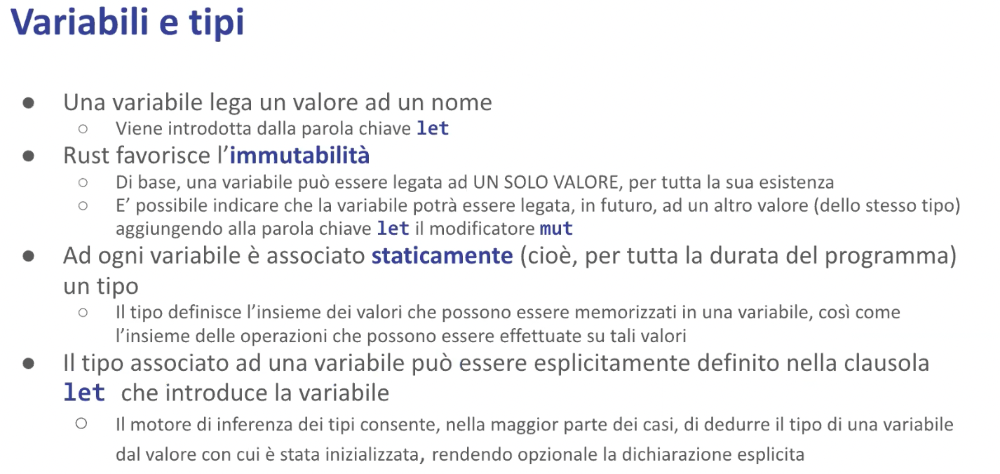
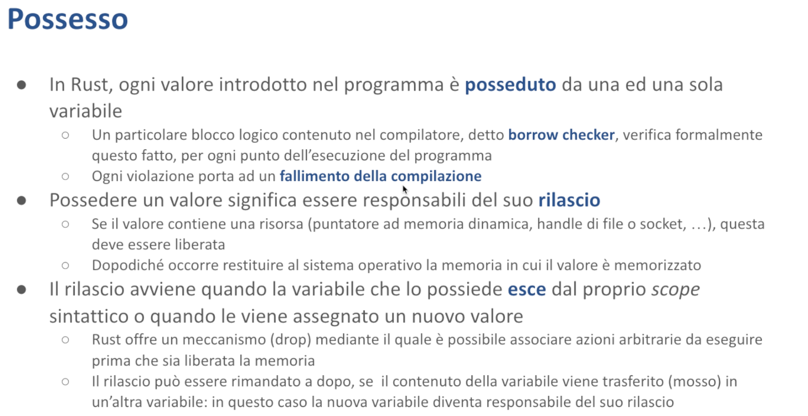
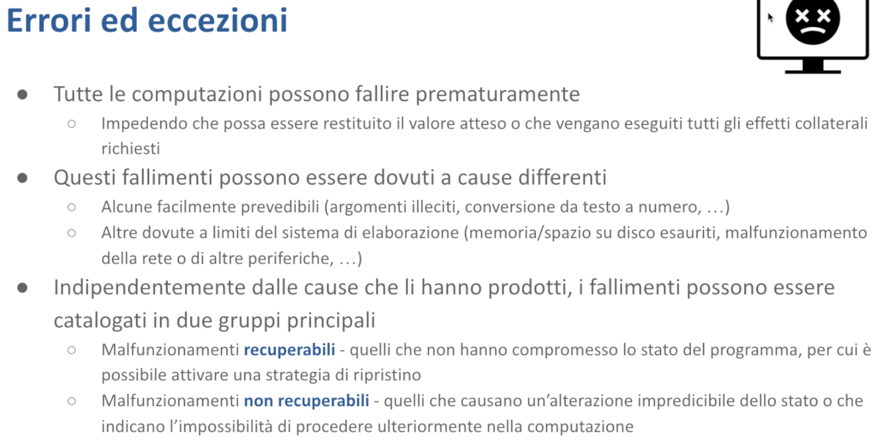
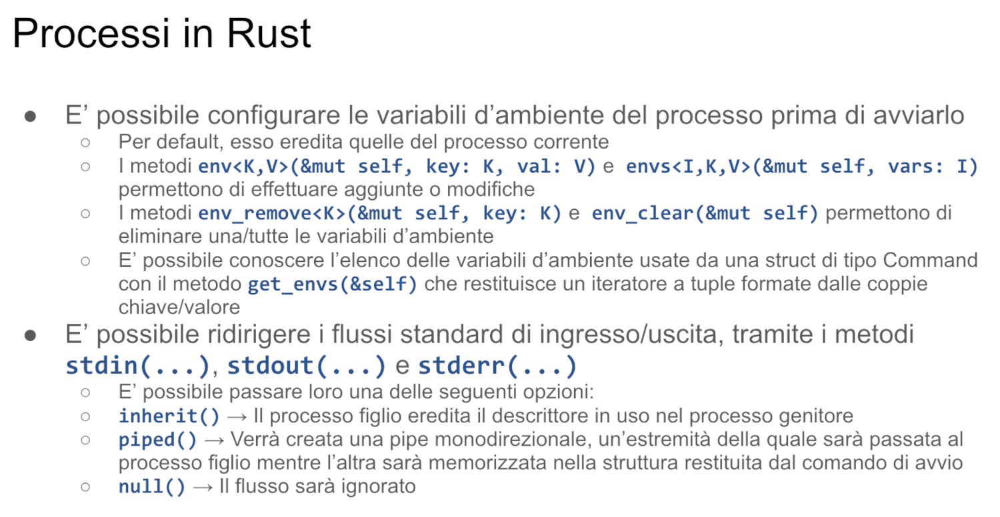

Introduzione
Questi appunti derivano dalle sbobinature del corso di Rust tenuto dal Prof. Giovanni Malnati durante l’anno accademico 2023/2024 al Politecnico di Torino.
Ho cercato di riportare le spiegazioni del professore nel modo più fedele possibile, senza alterarne i contenuti, ma riorganizzandole in una forma più leggibile e strutturata. Lo stile orale delle lezioni è stato quindi adattato a un registro più adatto alla lettura e allo studio.
Dove ho ritenuto che alcuni concetti potessero risultare poco chiari, ho inserito degli approfondimenti personali, basati su ricerche online o chiarimenti ottenuti con l’aiuto di strumenti come ChatGPT. In ogni caso, ho fatto del mio meglio per garantire l’accuratezza e la correttezza delle informazioni riportate.
Ogni capitolo contiene nel titolo un riferimento al numero della lezione video corrispondente, così da facilitarne l’eventuale consultazione.
üìå A chi consiglio questa lettura?
Questi appunti possono essere considerati come una dispensa del corso, utile a chi desidera un supporto per lo studio — soprattutto se non ha potuto prendere appunti durante le lezioni.
Grazie all'indice presente in ogni capitolo, è possibile anche utilizzarli per consultazioni puntuali su specifici argomenti.
üí° Ogni contributo o suggerimento √® benvenuto.
Allocazione della memoria - Malnati 1

Un programma eseguibile non è nient’altro che un insieme di istruzioni macchina mescolate con dei dati mescolate con dei valori di configurazione e controllo tutti codificati sotto forma di sequenze di byte.
Il significato di questi byte è legato alla tipologia di informazione che mettiamo dentro — per la parte di istruzioni il significato è cablato dentro il processore.
Sui processori 8080 che venivano usati nel PC IBM originale, il byte 3E serviva a rappresentare l’istruzione MOV A, dove A era l’accumulatore (il registro principale della CPU): 3E 7B voleva dire carica nel registro accumulatore il valore binario 7B.
Quindi lì e nei processori moderni ci sono codifiche analoghe, quindi a ogni byte corrisponde una e una sola interpretazione come istruzione macchina. Cambiando processore chiaramente cambiano le istruzioni e quindi bisogna generare delle sequenze diverse.
La presentazione dei dati o delle informazioni di controllo in parte è desunta dalle istruzioni macchine. Io ho scritto un programma che legge una stringa e la trasforma in numero. La stringa è impiantata insieme al mio codice, mischiata lì dentro. L’interpretazione della stringa per trasformarla in un numero sta nelle istruzioni che ho generato. La parte dell’informazione di controllo è in realtà invece governata dal sistema operativo: il fatto che il mio programma inizia con una certa sequenza binaria, che il particolare sistema operativo riconosce e trasforma in qualcosa, dipende dal sistema operativo stesso.
Il programma normalmente vive dentro il disco, in un file. Tipicamente su una macchina Windows abbiamo i file .exe che rappresentano i binari eseguibili. Per poter essere eseguito in realtà occorre che questo file sia trasferito all’interno della RAM, dove il processore è in grado poi di andare a prendere le singole istruzioni.
Come avviene questa cosa qua? Nei sistemi più banali, come l’Arduino, il disco neanche c’è, il programma è cablato dentro la flash e banalmente il modo per portarselo nella flash è grazie a un hardware specifico che fa da programmatore (mi dà la possibilità di andarci a scrivere dentro) e in qualche modo lo posso andare a pescare per essere eseguito. Nei sistemi più grandi, in realtà, c’è un componente specifico del sistema operativo, il loader, che è responsabile di trasferire dal disco alla RAM per permettere l’esecuzione.

Una volta che il programma è in memoria, può essere eseguito.
Come avviene l’esecuzione? Banalmente c’è un ciclare continuo. Il processore preleva un’istruzione da una certa cella di memoria indirizzata da uno specifico registro contenuto al suo interno, negli x86 si chiama IP, instruction pointer, preleva il dato presente a quell’indirizzo, se lo porta in pancia, lo capisce e fa quello che c’è scritto lì dentro. Poi ne prende un altro, poi ne prende un altro.. Questo alternarsi è chiamato il ciclo fetch, decode, execute — prelevo, capisco, faccio.

Il processore fa riferimento alla specifica cella in cui sta un’istruzione indicandone l’indirizzo. L’indirizzo è l’offset all’interno della memoria del calcolatore dove quell’istruzione è memorizzata.
Il program counter (l’instruction pointer) è un registro che, a seguito dell’operazione fetch, viene automaticamente incrementato, in modo tale che la prossima volta che preleverà un’altra istruzione la prende dalla cella successiva. E se quella è un’istruzione multibyte l’instruction pointer viene incrementato di un offset corrispondente così da poter andare avanti a prelevare istruzioni successive.
Non solo l’instruction pointer ricorda qual è la prossima cella da cui prelevare un’istruzione, altri registri dedicati ricordano altri tipi di informazioni. Ad esempio lo stack pointer è un altro registro presente nella maggior parte dei processori che si ricorda dove certi dati temporanei devono essere messi o da dove devono essere prelevati.

L’esecuzione del programma avviene nel contesto del suo spazio di indirizzamento. Che cos’è lo spazio di indirizzamento?
Noi sappiamo che il nostro sistema di elaborazione ha un processore e della RAM. Ma al singolo programma non viene data visibilità dell’intera RAM, ma di una piccola porzione che costituisce lo spazio di indirizzamento di quel particolare processo.
Tutto quello che noi abbiamo nel nostro file EXE finisce dentro questa piccola porzione della RAM totalmente disponibile. Noi possiamo immaginare il nostro spazio di indirizzamento come fosse un array di byte consecutivi che parte da zero e va fino a un qualche livello.
Questo spazio di indirizzamento è composto da celle che a secondo del livello di parallelismo del processore sono lette un byte alla volta, due byte alla volta, quattro byte alla volta, otto byte alla volta. Il numero di celle potenzialmente presenti nello spazio di indirizzamento dipende dal processore.
Nel caso dell’x86, nelle versioni a 64 bit, lo spazio di indirizzamento è limitato a 48 bit. Quindi, di fatto, un x64 può indirizzare al massimo due alla 48 celle. Altri tipi di processore fanno altre cose. Un ARM può estendersi su 64 bit o cose simili. Nominalmente, quindi, i nostri programmi potrebbero accedere a qualunque indirizzo compreso tra zero e due alla qualcosa meno uno. Con l’x86 due alla 48 meno uno. Sul processore a 32 bit, lo spazio di indirizzamento varierà da zero a due alla 32 meno uno.
Nominalmente! Ma gli spazi di indirizzamento non sono completi né contigui. Cioè, all’interno dello spazio di indirizzamento, solo una piccola porzione di indirizzi è effettivamente presente. Il nostro programma ha l’illusione di averceli tutti, ma non è vero: ne ha alcuni. Se prova a leggere o scrivere fuori dal seminato, fuori di quelle piccole zone che gli sono date, il sistema operativo interviene e lo uccide. Quest’operazione si chiama segmentation fault. Sei uscito dal tuo segmento.
Questo non si vede nell’astrazione del linguaggio di programmazione. Quando voi in C, in Java, in quello che volete, scrivete un programma, non avete la percezione che gli indirizzi possono solo stare in certi pezzi. Un indirizzo è un indirizzo, è un numero. Ma in realtà, per il sistema operativo, non tutti i numeri vanno bene. Solo alcuni.

Non solo. Gli indirizzi che il programma maneggia, quelli cioè che voi scrivete fisicamente dentro il vostro programma, che potete vedere se li stampate a video o cose del genere, non corrispondono al posto in cui il processore va a leggere o a scrivere. Cioè, gli indirizzi che voi maneggiate prendono il nome di indirizzi virtuali. E nominalmente possono assumere un range tra 0 e 2 alla n-1. Nella realtà, se noi attaccassimo un analizzatore di stati logici al bus di sistema per vedere nel momento in cui viene eseguita un’operazione di lettura dove vado a leggere, mi accorgerei che, anche se il programma era stato costruito per dire “vai a leggere alla cella al cui indirizzo è 3b7f”, attaccandomi al bus hardware, vedo che lui va a leggere alla cella 59472657. Tutto un’altra parte.
Questa discrasia tra dove io gli dico di andare e dove lui va è ciò che permette ai sistemi operativi di avere più programmi che pensano di essere loro proprietari dell’intero sistema e non darsi fastidio. È reso possibile del fatto che dentro le CPU moderne c’è un blocco che si chiama MMU, Memory Management Unit, che ha il compito di tradurre gli indirizzi virtuali che il programma usa in indirizzi fisici, in quelli in cui effettivamente avviene la scrittura e la lettura.
È un po’ come se qualcuno mi dicesse “metti questa tastiera nel terzo cassetto” e io invece di infilarlo nel terzo cassetto lo infilassi nel cinquantaseiesimo. Fintanto che io mi ricordo che quando lui mi parla del terzo cassetto devo andare nel cinquantaseiesimo, non fa nessuna differenza. Questo permette a uno di dirmi “mettilo nel terzo cassetto” e io lo infilo qua, e a un altro di dirmi “metti questo microfono, sempre nel terzo cassetto” e io posso ricordarmi che per quell’altro il terzo cassetto invece è il tredicesimo.
Tutti e loro sono contenti perché mi hanno detto il terzo cassetto quando loro mi chiedono il terzo cassetto all’uno dove ho la tastiera e all’altro dove ho il microfono ma in realtà i cassetti sono distinti e non si impicciano.
Quindi il sistema operativo al proprio interno sostanzialmente mantiene per ciascun processo in esecuzione questa tabella delle corrispondenze. Questo fa sì ad esempio che io posso avere due notepad aperti ciascuno dei quali è convinto di andare a leggere all’indirizzo 7F793950000, ad esempio, ma in realtà vanno in posti diversi della RAM fisica.
Nella parte centrale dell’illustrazione sono riportati gli indirizzi fisici, quelli in cui effettivamente avvengono le scritture. Nei due estremi ci sono le viste che ciascuna delle due istanze in funzione di notepad hanno della memoria. Tutti e due sono convinti di andare a leggere in un certo posto ma il sistema operativo li devia e li fa andare tutti da un’altra parte.
Questo fa sì che un unico programma notepad possa essere instanziato 100 volte senza avere casino.
Sennò dovrei cambiare ogni volta il contenuto del programma per dire “no ma tu sei un po’ più in qua, tu sei un po’ più in là” invece loro sono tranquilli, sanno che in certi posti trovano certe cose e di fatto le trovano ma fisicamente quelle cose lì sono altrove di dove loro pensano.
La traduzione quindi garantisce che programmi diversi, o istanze diverse di uno stesso programma, mentre sono in esecuzione non possano interferire — non si danno fastidio perché il sistema operativo me li tiene lontani, e non ha bisogno di farmi sapere dove fisicamente li ha messi, basta che sia coerente: quando parla con uno gestisca le informazioni dell’uno e quando parla con l’altro gestisca le informazioni dell’altro.
Questo mapping tra l’indirizzo virtuale (che è l’unico che il nostro programma vede) e quello fisico è soggetto ad alcune annotazioni. Non solo il sistema operativo, attraverso l’opportuna configurazione del blocco MMU, mi mappa gli indirizzi da logico a fisico ma mi segna anche a quali vincoli quel mapping è soggetto: mi dice “guarda qui l’indirizzo 7F793950000 va là quando leggi e quando scrivi, ma se lui ti chiede invece di fare la fetch, bloccalo! Perché questa è un’area in lettura e scrittura, ma non in esecuzione”. O al contrario mi può dire “questa è un’area per l’esecuzione ma non può essere scritta”.
Questo è prezioso perché vi para un po’ dai virus: il fatto che un programma sia mappato in una zona che è read and execute only impedisce a un virus di andare a cambiare le istruzioni e di far fare al vostro programma qualcosa di diverso. Protegge anche da voi stessi perché a volte quando usiamo i puntatori male uno potrebbe sporcare la propria area di memoria.
C’è un fatto in più: l’esistenza di questa corrispondenza tra la memoria virtuale e la memoria fisica fa si che un programma possa allocare una quantità di memoria che può essere molto superiore alla memoria fisica effettivamente presente. E come?
Ci verrebbe da dire che, per via di questa partizione, ogni volta che un programma parte si mangia un po’ di memoria fisica e quindi io al massimo accedo a un ennesimo della quantità di memoria.

In realtà il sistema operativo interviene in tanti modi. La riga sopra è l’immagine dello spazio di indirizzamento virtuale che un programma in esecuzione ha. Il programma lanciato pensa di poter accedere dalla cella numero 0 fino alla cella 2^n-1 — questa è la sua idea potenziale: siccome i puntatori sono grandi 64 bit io immagino di poter andare da 0 a 2^64-1. Questo è il mio spazio potenziale.
In questo spazio potenziale alcuni blocchi sono quelli effettivamente presenti: sono evidenziati in un verde un pochino più scuro e mappano da qualche parte sulla memoria fisica, che invece è riportata sotto. Notate che questo mapping avviene a pagine, non a singolo byte (che sarebbe ingestibile) — si prende un blocco di 4096 byte piuttosto che 65.536 byte o comunque una potenza del 2 e si dice “tutto questo blocco finisce in questa zona della memoria fisica” così da rendere le tabelle un pochino più piccole.
Sono mappate con le loro relazioni: alcune sono mappate xr che vuol dire execute and read (posso leggere cosa c’è scritto lì e posso fare il fetch di quell’istruzione, ma non posso scrivere). Ma ci sono anche delle zone che non sono mappate sulla memoria fisica, ma sono mappate sul disco — i sistemi operativi diversi fanno cose leggermente diverse: su windows c’è il file page.sys (è un file nascosto che vive tipicamente in C:) dentro il quale vengono presi dei blocchi da 4k in cui temporaneamente tenere dei dati che il programma vuole poter usare ma che non mi stanno fisicamente nella ram fisica perchè in questo momento non ho nessuna pagina libera. Fin tanto che il programma non ha bisogno di andare a leggere adesso va benissimo che stiano lì.
Siccome il vostro programma non legge contemporaneamente tutto, ma mentre guarda questa variabile qui non guarda quella lì, può lavorare in questo modo, dice “guarda tu hai bisogno di tanta roba ok, un po’ te la do fisica, mentre quella che non riesco a darti fisica, te la salvo nel disco. Una volta che hai bisogno di andare a leggere quella cosa che è nel disco vado a vedere se c’è una pagina fisica libera, se c’è te la carico lì. Se non avessi nessuna pagina fisica libera ne prendo una delle tue occupate, la scarico sul disco e a questo punto quella è diventata una pagina libera e quindi prendo quella che vuoi leggere e te la piazzo lì”.
Questo permette a un programma potenzialmente di manipolare una memoria virtuale molto più grande di quella fisica. Con le stesse prestazioni? Ma manco per idea! Ovvero, fin tanto che voi accedete alle pagine che sono mappate in memoria la lettura e la scrittura è bella veloce, ma nel momento in cui accedete a una pagina che sta sul disco, c’è da aspettare.. se per caso quella cosa che è finita sul disco è un pezzo di programma vuol dire che l’esecuzione del vostro programma, ad esempio chiama la funzione f che è finita sul disco, lì ha un salto! Perché mentre cerca di andare a prendere la funzione f, la funzione f non c’è aspetta, deve essere recuperata dal disco..
Le zone grigie dello spazio virtuale sono non accessibili: se il vostro programma prova ad andare a leggere, a scrivere o ad eseguire in una qualunque zona grigia, viene ucciso.

Le cose sono ancora più complicate.. perché nei sistemi non elementari (cioè non nell’arduino, ma già sul raspberry) il processore non legge direttamente dalla ram, perché se leggesse direttamente dalla ram andrebbe a manovella perché la ram è lenta. Tra il processore e la ram è interposta la memoria cache. La memoria cache che può essere a un livello, a due livelli a tre livelli.
A cosa serve la memoria cache? A velocizzare l’accesso alle informazioni contenute nella ram.
E come fa a velocizzarlo? Con l’idea che in qualche modo io posso anticipare il bisogno di quell’altra
E sulla base di cosa? L’idea è che c’è un principio molto importante che è il principio di località.
Quando leggo la cella 100 mi conviene portarmi più vicino al processore, in un posto che leggo più agilmente, non solo la 100 ma anche la 101 e la 102 così le ho già lì pronte. La memoria cache si basa sull’uso di dispositivi che hanno poca capacità di memoria ma tempi di eccesso molto più rapidi della ram tradizionale.

La memoria cache è spesso organizzata su livelli, che sono via via più capaci ma anche più lenti. Qui è schematizzata una CPU moderna con 4 core. I core sono queste unità di elaborazioni individuali che permettono di eseguire delle istruzioni; nascono dal fatto che non è possibile più di tanto velocizzare il clock, o non è conveniente velocizzare il clock perché questo porta a delle rese termodinamiche bassissime e il processore si scalda troppo e alla fine non dissipa a sufficienza, e quindi conviene usare la capacità di fare del silicio piccolo per far stare i transistor in spazi microscopici e permettere tante unità di elaborazione che possono svolgersi in parallelo così da avere più flussi di elaborazione.
Il singolo core legge e scrive direttamente da una quantità di memoria piccolissima: la cache di livello 1, che però è molto veloce. Se occorre riempire la cache di livello 1, la si va a riempire dalla cache di livello 2 che è un po’ più grande e anche un po’ più lenta. A sua volta, se occorre riempire la cache di livello 2 la si va a prendere dalla cache di livello 3 che è ancora più grande e ancora più lenta, e infine la cache di livello 3 prende i suoi dati dalla RAM.
Normalmente tutto questo voi non lo vedete: quando scrivete il vostro programmino hello world, non c’è scritto da nessuna parte che c’è la cache, ma c’è! E il sistema operativo e l’hardware si occupano di nascondere tutto questo — voi non lo vedete! Quasi, in realtà.. perchè incontrando la programmazione concorrente saremo obbligati a vederlo.
Perché? Perché se il core 0 sta incrementando una variabile, e quindi ha preso la variabile i e ha fatto i++ per farla diventare il valore successivo, beh, quell’i++ è finito scritto nella cache di livello 1 del core 0, ma se il core 3 anche lui volesse incrementare quella variabile non vedrebbe mica il valore incrementato perché quello che l’altro ha già scritto nel suo core 0 non è ancora risalito al livello 2, non è ancora risalito al livello 3 e non è ancora risalito nella RAM per permettere all’altro di vederlo! E quindi c’è un momento in cui uno ha già fatto una cosa e l’altro ancora non lo sa, e siccome non lo sa dice “allora lo faccio io”, e a quel punto l’hanno fatto in due ed è un disastro.
Questo simpatico giochetto che normalmente ci fa andare solo veloce e ci piace tanto dobbiamo vederlo e gestirlo.. Se un dato condiviso viene scritto da un core, e un altro core lo vuole leggere, devo prima invalidare la sua cache e dire “vattelo a prendere dalla RAM” oppure se lo vuole scrivere devo dirgli “non fermarti lì dove ti fermeresti normalmente, propaga la scrittura fino alla RAM”.
Quelle operazioni lì diventano molto più costose ma necessarie per garantirmi la correttezza. Quindi programmare a livello di sistema vuol dire guardare questi fatti e rendersi conto che le cose avvengono in questa maniera.


Usando i programmi di alto livello tutte queste cose che abbiamo raccontate sono invisibili — non emergono assolutamente, ma ci sono! E quindi i programmi di alto livello sono obbligati a introdurre delle sovrastrutture che permettono di nasconderli. L’effetto che il programmatore trova è che è molto più facile scrivere il suo codice. Pari menti è che quel codice lì va a singhiozzo: si ferma ogni tanto. Possiamo prenderci la briga di garantire che se quello è il codice dell’ABS non ci schiantiamo? No, perché avvengono delle cose che sono fuori dal nostro controllo. In più la presenza di queste varie sovrastrutture introducono una serie di vincoli e restrizioni di cui dobbiamo essere pienamente coscienti, ad esempio la restrizione del garbage collector che dice “la memoria la libero io quando ho voglia”.
Allocazione della memoria - Malnati 2
Indice
1. Modello di esecuzione

Ogni linguaggio di programmazione ha un proprio modello specifico di esecuzione, più o meno articolato.
Che cos’è il modello di esecuzione? È quell’insieme di comportamenti che l’elaboratore attua a fronte dei costrutti di alto livello che il linguaggio propone. Ci sono linguaggi un po’ esoterici che hanno modelli di esecuzione particolari. Ad esempio il linguaggio Prolog è basato sul concetto di unificazione e di ricerca della prova, che lo pone a esplorare la sua base di conoscenza usando una serie di regole di produzione, facendo delle cose completamente diverse da quello che fa qualunque altro linguaggio standard che voi conoscete.
Il JavaScript, ad esempio, assume che il programma sia costituito in parte dalle istruzioni immediate che vengono fornite, che possono determinare delle invocazioni di funzioni, che possono avere degli effetti sul futuro, per cui mantiene al suo interno una coda degli eventi nella quale vengono pubblicate le cose che succederanno. E attinge da questa coda per fare le proprie operazioni. Questo tipo di comportamento non si ritrova altrove, se non adottando delle librerie che lo vadano a emulare, mentre nel JavaScript è intrinseco nel linguaggio stesso.
E così via.
Il modello che ciascun linguaggio propone, in generale, non corrisponde neanche un po’ al dispositivo reale. Il compilatore si prende la briga di trasformare le istruzioni scritte nel linguaggio di alto livello X in comportamenti tipici di un particolare processore. Questa trasformazione in parte è legata alla sequenza di istruzioni che vengono generate per ciascun costrutto di alto livello (quando qui scrivo for, cosa genero? Quando qui scrivo if, cosa genero? Eccetera..).
In parte è dovuta al fatto che inframezzate a queste istruzioni, che sono la traduzione diretta dei costrutti di alto livello del linguaggio, vengono messe chiamate a libreria, che servono a garantire che certe cose avvengano come debbono avvenire. Questi pezzi di chiamate a libreria, che sono inserite automaticamente dal compilatore, servono a generare questa astrazione, a fare in modo che l’astrazione funzioni. La libreria prende il nome di RTL, Runtime Support Library, o Runtime Library semplicemente, e dipende dai diversi linguaggi.

Quindi quello che succede è che la compilazione trasforma il programma sorgente che noi abbiamo scritto in un nuovo programma, che ha un modello di esecuzione più semplice, e che è associato a una libreria di esecuzione scritta specificatamente per quel particolare sottosistema.
Notate che il livello più semplice può voler dire cose molto diverse.
Può voler dire, ad esempio, che è direttamente eseguibile da un particolare elaboratore, oppure che può essere eseguito attraverso l’intervento di un programma ulteriore che lo abbassa di livello.
Nel caso di Java, voi compilate il vostro programma in bytecode, e poi la JVM, la Java Virtual Machine, traduce questo bytecode, just in time, in codice eseguibile per l’elaboratore concreto.
Che poi va in esecuzione.
Va in esecuzione su una macchina fisica? Forse. A volte va in esecuzione su una macchina virtuale.
A volte c’è un ulteriore livello. Ad esempio, sui Mac che montano l’ARM, c’è un software chiamato Rosetta, che trasforma dei programmi eseguibili x86 in ARM. E quindi, ignorando tutto il resto, guarda “Ah, questa qui è l’istruzione LOAD SP qualcosa. Magnifico!”. Qual è il corrispondente ARM? Non c’è, e allora simulo: diventa queste altre tre istruzioncine. Però dà la possibilità di poter lanciare qua un programma scritto per la versione macOS x86, pur avendo un processore completamente diverso.
A volte questa trasformazione è fatta nel contesto di una virtual machine, perché avete lanciato, che ne so, VirtualBox o qualcosa di simile, Docker, e così via. Contesti che ulteriormente trasformano di livello in livello.

Cosa c’è nelle librerie di esecuzione? Beh, ci sono quei meccanismi di base che permettono ai programmi di alto livello di funzionare come ci aspettiamo che funzionino. Da un lato supportano le astrazioni che quel particolare linguaggio vuole offrire, dall’altro si prendono la briga di interfacciarsi col sistema operativo nascondendo le differenze.
Per cui se voi dovete aprire un file, in C, scrivete sempre fopen, non preoccupandovi del fatto che su Windows quella fopen in alcuni casi diventa Create File, e invece su Linux quella fopen diventa una Open, System Call di livello 2.
Perché questo livello di dettaglio il linguaggio ve lo nasconde, almeno in parte.
All’interno delle librerie di esecuzione troviamo due tipologie di funzioni. Alcune sono completamente invisibili al programmatore, vengono inserite automaticamente dal compilatore per supportare l’esecuzione. Ad esempio, tutte le volte che voi chiamate una funzione, nella chiamata c’è anche un pezzo di codice che va a vedere “sto mica facendo traboccare lo stack?”, perché se trabocca lo stack perdo dei dati e quindi il programma deve interrompersi.
Oppure, ce ne sono altre per cui quando assegnate a una struttura un’altra struttura, lì bisogna fare una memcpy, e viene fatta in automatico: voi scrivete a=b, vi perdete il dettaglio che a sono 200 byte e b anche, e che lui li deve copiare sopra. Ci pensa il compilatore a generare questo pezzo di operazione.
Altre sono invece evidenti al programmatore, come la fopen, per cui il linguaggio vi espone un’astrazione di alto livello, e si prende poi lui la briga di tradurla nel dettaglio che serve per il sistema operativo X, o cose del genere. Fopen, malloc, e così via.

Nel linguaggio C e C++, l’astrazione che viene offerta al programmatore è quella che il programma si presenta come se fosse l’esecutore, l’utilizzatore unico dell’intero sistema, che si immagina completamente dedicato al programma stesso.
Quindi il programma crede di aver accesso all’intero spazio di indirizzamento, i puntatori vi lasciano scrivere un numero qualunque tra 0 e 2 alla n-1, potete immaginare di allocare quanta memoria vi pare, potete pensare di avere tutto il tempo che volete.
Il fatto che poi fisicamente voi non possiate impicciare gli altri è garantito dal sistema operativo che, adottando il meccanismo della memoria virtuale, confina l’esecuzione del singolo programma nel suo spazietto e impedisce che questo interferisca con altri.
Il fatto che i puntatori potenzialmente possono contenere qualunque numero compreso tra 0 e 2 alla n-1 dà l’impressione che sia lecito andare a cedere a qualunque locazione. Ma sappiamo che non è così.
I limiti, gli indirizzi effettivamente accessibili sono molti molti di meno e sono uno spazio sparso, proprio come disegnato prima nella slide, a pezzettini. Tra l’altro ogni volta in posti leggermente diversi.
Perché in posti leggermente diversi? E’ sempre per difendersi dai virus. Inizialmente non era così. I sistemi operativi allocavano a un indirizzo specifico il punto di partenza del programma. E i virus lì ci si buttavano a capofitto.
E allora i programmi, i sistemi operativi, hanno introdotto la randomizzazione per cui il programma inizia a una certa cella più o meno delta, dove delta è random. Questo sposta un po’ le cose e rende più difficile la vita ai virus.

Il C, mi presenta un’astrazione tipica in cui io scrivo delle istruzioni di alto livello che posso immaginare essere eseguite una per volta nell’ordine indicato dal programmatore.
Quindi se ho scritto:
if A > B {
printf(...);
else {
// etc..
}
immagino che le cose vanno esattamente nell’ordine in cui le ho scritte.
Non è detto che succeda quello. Perché il compilatore può decidere che certe cose, fin tanto che nessuno se ne accorge, le può scambiare.
Il processore può decidere che, fin tanto che nessuno se ne accorge, può fare delle cose diverse (varie tecniche di ottimizzazione: dei branch, esecuzione speculativa, etc..).
Non è detto che se scrivo i=25, 25 venga scritto dentro i.
Perché il processore o il compilatore hanno la facoltà, fin tanto che non rompono l’astrazione sequenziale, di riordinare i pezzi lì dentro.
Se tu mi dici, prima scrivi qui e poi scrivi lì, e qui e lì sono due cose distinte, beh, chi se ne frega, le posso scambiare. Tanto che differenza fa? Fin tanto che il programma è costituito da un unico flusso di elaborazione, non fa nessuna differenza.
Ma se il programma è costituito da due flussi di elaborazione, e i due flussi possono osservarsi, cioè io posso vedere cosa tu stai facendo, il fatto che tu prima abbia scritto in un posto e poi nell’altro mi cambia la vita.
Non ci sono limiti sul numero di istruzioni da eseguire, sul tempo richiesto all’esecuzione, né sulla memoria necessaria: io scrivo il mio programma così com’è, il linguaggio non mi dà evidenza. Ma i limiti esistono. E il programmatore deve capire, perché se io devo garantire che quella roba lì mi gestisce l’ABS, per stare nell’esempio di prima, deve gestirmi l’ABS, sempre.
All’interno del flusso principale di esecuzione possiamo abilitare degli ulteriori flussi di esecuzione secondari, chiamati thread. Questi permettono di fare più cose quasi contemporaneamente. Davvero in parallelo se la CPU è multicore, o alternando un po’ l’una e un po’ l’altra cosa se la CPU non è multicore. E, come abbiamo già avuto modo di dire prima, introducono un ordine di grandezza nella complessità del programma, creando delle situazioni completamente inattese.

Il singolo flusso di esecuzione standard di un programma C o C++ è costituito da una computazione che si dipana dalla funzione main. Noi abbiamo l’impressione che il nostro programma incominci invocando il main e termini nel momento in cui il main finisce.
Non è così. Ci possono essere delle parti che vengono eseguite prima, anzi ce ne sono sicuramente parti che vengono eseguite prima, sia di sistema sia aggiunte da noi. Ci sono delle parti che vengono eseguite dopo, sia di sistema sia da noi.
Ad esempio, se sono in C++ e ho costruito delle variabili globali di tipo classe, queste possono avere un costruttore. Il costruttore delle variabili globali viene invocato prima che il main parta. Il distruttore delle variabili globali viene invocato dopo che il main è terminato.
Quindi già questo mi cambia un po’ le carte in tavola.
Ma prima che il costruttore venga chiamato parte la funzione di setup del sistema operativo che mi prepara l’ambiente di esecuzione e fa cose.
In più, il C e il C++ assumono l’esistenza di due strutture dati ausiliarie.
- Una a forma di pila, chiamata lo stack, che serve a gestire le chiamate, la storia delle chiamate (e quindi dei punti di ritorno), e le variabili locali. In C++, all’interno dello stack, è anche gestita la parte, la gestione strutturata delle eccezioni.
- E una seconda struttura ausiliaria, lo heap, che serve a usare la memoria dinamica.
Queste due strutture crescono e si contraggono via via che il programma va in esecuzione. Mentre lo stack è fortemente prevedibile e, a fisarmonica, si allarga e comprime, in modo compatto, lo heap evolve in modo non compatto, sotto il controllo del programmatore. Che quindi diventa responsabile della sua gestione.
2. Stack

Lo stack è un blocco che viene allocato automaticamente all’avvio del programma.
Lì dentro c’è la storia delle chiamate a funzione, degli argomenti passati a ciascuna funzione, dei valori di ritorno, delle variabili locali e così via. Viene utilizzato a partire da un estremo, si espande verso il basso e si contrae quando le funzioni ritornano.
Poiché la dimensione è finita, limita la profondità della ricorsione. Così anche come la dimensione delle variabili che possono essere allocate come variabili locali.
2.1 Esempio limite stack

Questa funzione f alloca una variabile locale. Supponiamo uint_8t, un intero a 8 bit, quindi un byte, e lo chiamiamo buffer, di 1024 per 1024. È un array di un mega.
Quando io chiamo f di 1, quello che succede è che verrà chiamato, entro dentro f, alloco questa cosa. Poi stampo quanto vale i. Poi mi chiamo ricorsivamente f con i+1.
Questo cosa vuol dire? Che io ho invocato f nel main, che ha preso il suo simpatico buffer da un mega, mi stampa 1 e poi si richiama.
Cosa succede richiamandosi? Che alloca un altro buffer da un mega, stampa 2 e poi si richiama. E alloca un altro buffer da un mega.
Quando si romperà questa ricorsione? Alla settima chiamata.
Program finished with the exit code 139 (interrupted by signal 11: SIGSEGV) → Segment violation.
Ho messo 7 blocchi da un mega e mentre cercavo di mettere l’ottavo ho già traboccato.
Perché in realtà lo stack, sulla macchina su cui stiamo eseguendo l’esempio, è esattamente 8MB, ma ad ogni array da 1MB che allochiamo si aggiungono qualche byte in cui c’è l’indirizzo di ritorno, perché via via che mi chiamo la funzione f devo scrivere dove devo tornare, poi c’è lo spazio per la variabile i che devo passare, quindi si mangia una decina di byte in più a giro, e quindi in realtà l’ottavo non ci sta, perché quando cerco di allocarlo, vado fuori.
Questo ci dice che noi sullo stack più di 8MB non mettiamo.

Chiaramente se invece di mettere 1024 per 1024 mettiamo di meno, qui arriva. Non arriva a 8 mila, si ferma prima a 7800.
Perché? Perché adesso i 12 byte in realtà di overhead che io ho, 8 per il ritorno più 4 dell’intero, a ogni giro, pesano di più. Perché sono 12 su 1024. Prima erano 12 su 1 mega, quindi erano una frazione piccola.

Adesso se addirittura abbatto e qui scendo a 1, e quindi ho messo un singolo byte, non arrivo a 8 milioni. Arrivo molto prima.
Questo ci dice che lo stack è limitato. Non possiamo permetterci di ricorrere più di tanto. Non possiamo allocare sullo stack cose grosse. O perlomeno se lo facciamo dobbiamo farlo un po’ con cautela, altrimenti si spacca.

Questo tipo di situazione si chiama stack overflow: lo stack trabocca.

Quando il nostro programma parte, lo stack non è vuoto. C’è già l’indirizzo a cui la funzione main dovrà ritornare, perché la funzione main non è l’inizio del nostro programma.
L’inizio del nostro programma è un pezzo di funzione che dipende dal sistema operativo, che può chiamarsi CRT startup (CRT → C Runtime) o qualcosa del genere, che serve a preparare lo stack, lo heap, insomma a costruire tutti i pezzi che servono e poi dopo che ha fatto tutto, chiama il main.
Quindi quando il main arriva, sullo stack già c’è l’indirizzo a cui dovrà tornare, perché il main finisce con una return 0.
E dopo che il main è ritornato, quello 0 servirà per far sapere come finisce il nostro processo: diventerà l’exit code del processo.
Comunque, il main parte e sullo stack già c’è qualcosa.

Poi qui, la prima cosa che succede, viene dichiarato una variabile locale, int v=9. Lo stack cresce. Si allunga e lì ci infilo v, che vale 9.

Poi dico v = f(v).
Per poter chiamare f(v) devo fare un po’ di pezzi. Siccome f(v) restituirà qualcosa, mi darà un valore di ritorno, devo prima di tutto fare uno spazio dove questo valore di ritorno verrà scritto. Ci sono quei tre puntini chiamati res: è il posto dove lì depositerò il mio risultato. Cioè il risultato che f avrà. Io devo prepararlo prima lo spazio.
Poi siccome a f passo un parametro, devo metterglielo. Devo metterglielo perché io potrei passargli v, ma potrei passargli v+1, potrei passargli v per 5 diviso 54. Quindi di per sé quella roba lì è un’espressione. Quindi valuterò l’espressione, metterò il risultato dell’espressione sullo stack.
f ancora non l’ho chiamata, ma ho già preparato i pezzi perché possa essere eseguita.

Dopo che ho fatto spazio per il posto di ritorno, ho messo tutti i parametri di cui la mia funzione f ha bisogno, posso effettivamente eseguire l’istruzione assembler call.
L’istruzione assembler call fa sì che nello stack venga aggiunto il valore dell’instruction pointer aggiornato, cioè la prossima istruzione che dovrò eseguire quando f sarà finita.
Quindi lo stack è cresciuto ulteriormente. Mi è entrato dentro l’indirizzo di ritorno che punta a quello che dovrò fare, prendere il valore che f restituisce e metterlo dentro v, e l’instruction pointer si è trasferito all’inizio di f.

Entrando dentro f, f dice “a me serve una variabile i”. Notate che f, il suo parametro (che per l’altro era il risultato dell’espressione v nell’invocazione della funzione) l’ha chiamato a. Ma sono la stessa cosa.
Quindi quel 9 che c’è lì prima del return address, nel contesto di f, si chiama a. f dice “a me serve una variabile locale, che chiamo i”. Lo stack cresce ancora. Lo piazzo lì.

Poi c’è un if: a è maggiore di 0 (vale 9), quindi salta direttamente al blocco then, e dice “return a+i”.
Aspetta, a+i: calcoliamo questa espressione — a vale 9, i vale 5, a+i vale 14.
Dove lo scrivo sto 14? Al posto dei tre puntini, là dove già avevo lo spazio.
Sono tutti indirizzi relativi alla cima dello stack. Altrimenti ritornerei un’altra cosa.
Ma return non solo dice il valore, quindi prende a+i, 14, e lo scrive nello spazio dei tre puntini. Ma dice anche “piantala lì”.
Piantala lì cosa vuol dire? Vuol dire che lo stack deve contrarsi. Nel tornare al livello, i viene egettata, sparisce. L’indirizzo di ritorno viene preso e messo nell’instruction pointer.
In modo tale che lui vada a eseguire quell’istruzione lì, al ciclo prossimo.

Torno all’altezza dell’uguale. All’altezza dell’uguale vengono fatte due operazioni.
Si prende quello che c’era nei tre puntini e lo si deposita, in questo caso, dentro v.
E si tira via quello che, quel pezzo di incastellatura che era stata fatta per poter chiamare f.
Quando ho chiamato f, ho preparato lo spazio per il valore di ritorno, ho preparato lo spazio del suo parametro, e poi ho chiamato fisicamente f.
Quando f ritorna, tiro via automaticamente l’indirizzo di ritorno, perché quello è l’esecuzione dell’istruzione assembler ret, return, che mi fa tornare al mio posto, ma nel posto in cui atterro, così come prima erano stati messi delle istruzioni assembler che mi dicevano “infila questo, infila quello” sullo stack, subito prima di poter fare le altre cose, ora fa “togli questo, togli quello” e mi ripulisce la situazione.
Quindi al termine della chiamata di f io vedo lo stack come era prima che la facessi.

Dopodiché qui ho finito questa cosa, return 0, lo zero viene messo nello spazio dove lui può già tornare, che era stato preallocato dal chiamante, la CRT Startup.

E infine lo stack si contrae, lasciando spazio in questo caso solo allo zero, perché lo zero me l’aveva messo il chiamante e lo deve trovare lui ancora, perché poi lo toglierà lui.
Questa è la storia dello stack.
Quindi lo stack si allunga ogni volta che dichiaro una variabile locale, si contrae quando la variabile locale non si vede più.
Attenzione: se la variabile locale è definita in un blocco, quindi
if (somecondition) {
int i
} // finisce di vivere qui
quella i inizia a esistere mentre entro dentro il then dell’if, e finisce di esistere quando arrivo alla chiusa graffa corrispondente.
Quindi non tutte le variabili locali durano quanto l’intera funzione.
Le variabili che sono definite in un blocco durano quanto il blocco.
Appena l’esecuzione raggiunge la chiusa graffa del blocco, quelle variabili vengono espulse.
Se ho una variabile locale dentro un for, k viene creata e distrutta dieci volte.
for i=0, i<10, i++ {
int k = something // k creata e distrutta ad ogni iterazione del for
}
Quindi quello stack per dieci volte fa, si allunga, si accorcia, si allunga un po’ di cose e si accorcia, eccetera, e va avanti così.
Quindi la durata in vita delle variabili locali è circondata, cioè è delimitata dal tempo in cui il programma sta nel blocco in cui sono definite.
Chiaramente, in questo caso, la variabile v che inizia all’inizio del main ragionevolmente dura fino a che non raggiungo la fine del main. È una variabile che ha una vita più lunga.
La variabile i che è nella funzione f esiste soltanto mentre è in corso una chiamata f. Una volta che la chiamata f è finita, la variabile i non esiste più.
Questo ci fa intravedere qualche possibile problema.
Se la funzione f, invece di ritornare un intero, ritornasse un puntatore e scegliesse per qualche motivo di ritornare come puntatore l’indirizzo della variabile i, sarebbe un problema.
Perché?
Certamente mentre la funzione f è in esecuzione, la variabile i esiste e ha un suo indirizzo. Non sappiamo qual è, ma fa lo stesso. Nel momento in cui va in esecuzione lo saprà.
Piccolo problema: lo può ritornare quel puntatore, è un numero, quindi come ritorno 5 ritorno anche un’altra cosa. Ma quel numero lì appena f ritorna, non rappresenta più una locazione lecita, perché in quello spazio lì io potrei farci altro, dipende da cosa c’è scritto dopo.
Quindi questo ci pone il problema di dire: ma i puntatori come funzionano?

Quindi, il fatto che lo stack cresca a fisarmonica fa sì che allocazione e rilascio siano due operazioni efficientissime.
Perché? Perché se io ho bisogno di spazio devo solo incrementare lo stack pointer (o decrementarlo, visto che in realtà vado verso il basso).
Lo stack pointer parte da 7FFFFFFF e scende verso il basso. Quindi farmi spazio sullo stack pointer equivale a sottrarre dallo stack pointer il delta di cui ho bisogno. Liberare memoria vuol dire sommare allo stack pointer per farlo tornare verso l’alto.
Però ho un vincolo. I dati che sono nello stack durano solo, al massimo, quanto l’intera funzione in cui sono definiti. In realtà durano quanto il blocco in cui sono definiti, che può essere molto meno della funzione.
Quindi se io ho bisogno di salvarmi un’informazione che dura più a lungo, ecco lì me la perdo. Per questo motivo il valore di ritorno è preallocato dal chiamante. Così quel dato lì mi rimane.
E il chiamante usa quello spazio per poi metterci quello che è, per prendere poi il risultato e poi lo libera.
Inoltre, poiché lo spazio totale dello stack è definito a priori, il sistema operativo quando il programma parte stabilisce quanto è grande lo stack, abbiamo visto sulla macchina dell’esempio di prima sono 8MB, quello lì è il dato più grande che ci posso mettere.
Se avessi bisogno, che ne so, perché sto facendo un film e ho bisogno di tenerci 64GB, o sto facendo un modello LLM, che ne so, qualunque cosa che ha bisogno di memoria, sullo stack non ce lo metto.
3. Heap

C’è una seconda struttura però che ci interessa tantissimo, si chiama lo heap.
Heap vuol dire il mucchio, dove le cose sono buttate così, una a fianco all’altra, come capita.
Tutte le volte in cui un dato ha un ciclo di vita che non è collegato alla funzione in cui quel dato nasce, oppure, pur essendo legato a quella funzione, è grosso e quindi potenzialmente mi potrebbe provocare uno stack overflow, oppure ha una dimensione che al momento della compilazione non è nota (e quindi ho bisogno di allocare un certo numero di byte, ma quanti esattamente lo saprò solo a run time, deducendolo da uno dei parametri), quella cosa lì non può stare sullo stack, perché il compilatore non ha abbastanza informazioni per poterla fare. Se non è nota la size, io non so di quanto abbassare lo stack e quindi non ce lo posso mettere lì dentro, oppure, se me lo può mandare in overflow, non ce lo devo mettere perché se no mi spacca tutto, oppure, se il suo tempo di vita non è collegato all’esecuzione della funzione, devo metterlo da un’altra parte dove abbia un tempo di vita possibilmente più lungo, o a volte più breve, perché magari mi serve solo all’inizio della mia funzione, ma non esattamente in questo blocco, in una zona un po’ più indefinita che non coincide proprio con un blocco.
Quindi lo devo tenere altrove.
Nel caso di C, C++ e Rust, questa zona a parte si chiama heap, o anche in alcuni libri è chiamato free store, sono la stessa cosa.
Lì dentro si ottiene un blocco di memoria che rimane disponibile fino a che esplicitamente non gli diciamo “basta, non mi serve più”.
Lo heap ha più spazio dello stack.
Quanto di più? Dipende. In generale noi sappiamo che è più grande. Le cose grosse devono andare nello heap.
Ci sta qualunque cosa, dipende dal sistema operativo.
Se faccio le prove qua su macOS posso provare ad allocare 1000 giga, un tera. Mi dice “yes”, me le fa allocare. Poi quando vado dentro a un certo punto si rompe, ma allocare me le lascia allocare.
A differenza di quanto avviene per lo stack, dove le singole aree hanno un nome, ed è il nome della variabile che abbiamo messo, per cui quella cosa lì noi la chiamiamo i, j, k, l etc.. come i nomi che gli abbiamo dato, e lui internamente le fa diventare bp+4, bp+8, cose del genere, le zone sullo heap non hanno un nome, sono solo accessibili tramite dei puntatori.
Io chiedo di avere un blocco grande 64 byte, mi viene restituito il puntatore all’inizio di questo blocco. Lo devo memorizzare in una variabile di tipo qualcosa * : int *, uint8 * etc.. ma una variabile di tipo puntatore.
Per accedere al suo contenuto dovrò dereferenziare il puntatore.
Se la mia variabile di tipo int* si chiama ptr, per sapere cosa c’è scritto dentro o per scriverci qualcosa dentro, devo mettere *ptr, cioè devo dereferenziarlo, dire “prendi quel numero lì, consideralo indice nello spazio di indirizzamento e vai a vedere”.
Questo è il primo problema, quindi necessariamente se devo manipolare dati grossi che hanno durata diversa da quella di una funzione o hanno dimensione non nota in fase di compilazione, devo avere dei puntatori tra le mani.
Secondo problema, questi puntatori inizialmente devo richiederne l’uso allocando in modo esplicito la memoria, invocando la funzione che va a cercare un posto e mi restituisce l’indirizzo del punto d’inizio.
E ho la responsabilità prima o poi di rilasciarli, cioè di dire “runtime execution environment, sappi che questa zona non mi serve più, te la restituisco, potrebbe servire a qualcun altro”.
Notate che il riciclo è il principio fondamentale, sullo stack il riciclo è frequentissimo, io chiamo la funzione f, usa lo stack per farci delle cose allungandolo, la funzione f ritorna, lo stack si ricontrae, e poi dopo aver chiamato la funzione f chiamo la funzione g, lo stack si riespande e va a occupare gli stessi spazi che prima usava la funzione f, ma ormai la funzione f è ritornata, chi se ne frega, va benissimo, quindi quella zona lì è usata più e più volte, ed è il motivo per cui è pericolosissimo lasciare dei puntatori sparsi nello stack, perché io ti lascio adesso questo dato, che vale una certa cosa, ma poi io torno, è rimasto un puntatore farlocco, parte qualcun altro che in quella zona scrive altre cose, quindi quel puntatore non so più che cosa contiene.
Sullo heap anche, solo che mentre sullo stack io non devo fare nulla per causare questo riciclo, sullo heap il riciclo lo devo provocare io dicendo “tu mi hai dato questa zona, io l’ho usata, adesso non mi serve più, te la restituisco”, e questo permetterà, dopo che io ho restituito un blocco di memoria, se da qualche altra parte del mio programma servirà dell’altra memoria, di poterla eventualmente riusare.
Se io non rilascio la memoria, cosa succede? Beh, il sistema operativo dice “ne hai bisogno ancora? tienila, non c’è problema”.
Piccolo problema, se io ne chiedo un pezzo, ok, ne chiedo un altro, ok, ne chiedo un altro, eccetera, lo heap è esattamente come lo stack: ha dimensione, finita.
E’ molto più grande dello stack, ma è finito, e dopo un po’ si esaurisce. Esaurendosi, verrà il momento in cui gli chiedo ancora un pezzo, ma non ne ha più.
E a quel punto il programma si rompe, proprio come si rompe con lo stack overflow.
C’è una responsabilità in più: io lo devo rilasciare una e una sola volta. Non meno- Allocazione della memoria - Malnati 2
E vengono dei mostri. Per cui il programma compila, e poi quando esegue capitano cose a caso. Questi sono gli undefined behavior.
3.1 Esempio heap


Vediamo la storia dello heap.
Ripartiamo con la nostra, con il nostro main.
Parto al solito con lo spazio per valore di ritorno, alloco la variabile locale V, sta nello stack esattamente come prima.

Poi chiamo, introduco la variabile buf che è di tipo int*.
Quindi lo stack cresce per avere spazio per la variabile buf.
E a quanto inizializzo la variabile buf? La inizializzo con il valore di ritorno di f di V. Dunque devo chiamare f e passargli V. E mi serve un valore di ritorno.
Quindi non solo sullo stack ho messo buf, ma faccio anche spazio per res, il posto dove verrà messo il ritorno, e faccio anche lo spazio per il parametro di f, che in questo caso è il risultato dell’espressione v, che vale 2.
E quindi preparo questi tre pezzi.

E poi fisicamente chiamo f. Quindi lo stack cresce ancora e ci metto l’indirizzo di ritorno. Adesso che ho fatto tutte queste simpatiche cose, vedo cosa succede dentro f.

Che fa f? Guarda al solito se A è maggiore di 0 e chiede di allocare un blocco di memoria.
Qui lo faccio con la sintassi del C++: new int[a];
Quel new vuol dire “lo alloco nello heap”.
Che cosa alloco? Un array di interi.
Quanti interi? Eh non lo so. A differenza dell’esempio che vi ho fatto vedere prima con lo stack overflow, dove scrivevo uint8_t[1024x1024], lo sapevo in compilazione, faceva un milione qualcosa, qui è int di a.
A runtime lo saprò, in questo caso è 2. In un altro caso potrebbe essere 27, o 2500 etc...
Questa scrittura mi permette di andare a cercare sullo heap da qualche parte dove c’è un blocco con almeno due interi vicini disponibile.
Quindi new int[a] trova sullo heap uno spazio sufficiente per tenermi due interi, in questo caso.
Prende il puntatore al primo, al byte iniziale del primo intero, e me lo restituisce.
Cosa me ne faccio di questo valore restituito? Lo passo al return, che quindi lo deposita nell’apposita casellina che il chiamante mi ha preparato per mettere il risultato.
E quindi ci mette dentro questo.

E poi contrae tutto.
Quindi contrae tutto, torno al chiamante, cosa succede? Il chiamante prende il valore che era stato restituito e lo deposita, in questo caso dentro buff.
Quindi adesso mi ritrovo che buff punta da qualche parte nella memoria, dove ci sono due interi, quello che gli ho chiesto.
Bene. Che faccio? Quello che voglio, lo uso, f è tornata ma buf è ancora lì, tranquillo.
Quindi ho in questo caso sia una variabile la cui dimensione è nota solo a run time, sia la cui durata è più lunga della funzione in cui è nata.
La memoria puntata da buf nasce nella funzione f ma rimane in vita, accessibile, dopo che la funzione f è finita.
Faccio tutto quello che devo all’interno di quella memoria, quando non mi serve più ho la responsabilità di rilasciarla.

Come la rilascio? L’ho creato con new, lo rilascio con delete.
Delete vuol dire “quell’array lì non mi serve, buttalo via”. Il sistema operativo prende atto e rilascia la memoria, si segna che non è più in uso, e la può dare a un altro se ne avesse bisogno.
Attenzione: dentro buf però è rimasto il numerino che c’era prima, non è che è sparito, dentro buf supponiamo che la new avesse trovato uno spazio all’indirizzo 3b7f59: quello è scritto dentro buf.
Se non ci sto attento, io vedo che dentro buf c’è un valore lecito, e potrei cercare di guardare dove punta, ma adesso punta a casa di altri!

Qui va tutto bene perché scrivo return 0, quindi metto 0 nella celletta che mi è stata preparata per il valore di ritorno, contraggo lo stack e ho finito.
4. Organizzazione dello spazio di indirizzamento

Cosa ci trovo nello spazio di indirizzamento?
Un po’ di cose:
- il codice eseguibile, tutte le istruzioni che sono state generate tipicamente sono scritte in modo compatto, vicino una all’altra per convenienza, tipicamente questa zona qui ha un accesso che è in lettura e in esecuzione, ma non in scrittura.
- l’area delle costanti, che è un blocco, se io nel programma ho dichiarato una serie di costanti (es.
const float p=3.14), ecco, quella zona lì è una zona di nuovo che viene compattata insieme, e che viene marcata come read only, in modo da non rischiare di sporcarla. - una zona dentro cui ci sono le variabili globali, ammesso di averne scritta qualcuna, che è una zona in lettura e scrittura.
- lo stack, che è una zona accessibile in lettura e scrittura preallocata di una certa dimensione.
- lo heap, che è una zona disponibile in lettura e scrittura, di per sé molto grande, ma in cui non ho diritto di scrivere e leggere dove cavolo voglio. Perché è soggetta ai limiti del fatto che il sistema, la runtime library, me le dà lui o lei che sia, quei pezzettini, che io gli vado a chiedere chiamando
newe rilascio condelete, oppure se sono in C, che chiedo conmalloce rilascio confree. Quindi devo farci un po’ di attenzione.

Come sono messe queste aree? Ogni sistema operativo le sceglie a modo proprio. In Linux è molto facile vederle.
Se voi prendete un processo qualunque di quelli esistenti, in una macchina Linux o una macchina virtuale, andate a guardare nel file system, trovate che nel file system c’è una cartella che si chiama /proc. /proc contiene degli pseudo directory, cui nome è un numero, 27521760.
Quei numerini lì sono semplicemente i process ID dei processi attualmente in funzione. È una cartella fittizia, non corrisponde a un vero dato sul disco, è il modo con cui il sistema operativo permette l’introspezione, cioè vi fa vedere com’è fatto.
Se prendete un processo che esiste, qui io banalmente quando ho stampato sta cosa avevo in esecuzione un processo che si chiamava 4742, dentro questa pseudo cartella c’è un altro file che si chiama /maps.
È un file di testo, è sempre un file virtuale che viene generato. Dentro vi mette una per riga i blocchi dello spazio di indirizzamento in uso.
In questo caso cosa ci trovo? C’erano un po’ di cose, qui adesso condensate per stare nella slide, e ho messo in evidenza i tre pezzi che mi interessavano.
C’è un blocco da 7F4E3161D000, che è readable ed executable ma non writable (p ha semplicemente a che fare con il modo del mapping lì sopra), dove c’è una sequenza di 3538 byte che corrisponde all’eseguibile che stavo provando, home/user/testmem.
C’è un’altra area che è l’area dello heap, c’è un’altra area, un po’ più in su, che è l’area dello stack, e c’è un’altra area che in questo caso è usata da un driver, un virtual driver del sistema operativo, e così via.
Quindi avete la possibilità di andare a vedere, notate che lo spazio andrebbe da 0 a FFFFFFFF, ma solo dei pezzettini piccoli sono usati, tutto il resto è inaccessibile.
Allocazione della memoria - Malnati 3
Indice
- 1. Ciclo di vita delle variabili
- 2. Allocazione della memoria
- 3. Rilascio della memoria
- 4. Puntatori
- 4.1 Indirizzo valido?
- 4.2 Quanto è grosso il blocco puntato?
- 4.3 Fino a quando è garantito l’accesso?
- 4.4 Se ne può modificare il contenuto?
- 4.5 Occorre rilasciarlo?
- 4.6 Lo si può rilasciare o altri conoscono lo stesso indirizzo?
- 4.7 Viene usato come modo per esprimere l’opzionalità del dato?
- 5. Rischi
- 6. Gestire i puntatori
1. Ciclo di vita delle variabili
Abbiamo cominciato a vedere la divisione tra stack e heap e abbiamo visto sostanzialmente come le variabili locali esistono nel contesto del blocco in cui sono definite.
Quando entro all'interno di un blocco e incontro la definizione di una variabile globale, questa comincia a esistere, viene allocata sullo stack, quando arrivo alla parentesi graffa corrispondente alla chiusura del blocco la variabile viene buttata via, perdendo il dato che aveva al suo interno.
In generale, adesso vogliamo focalizzarci sul controllo del ciclo di vita che ciascuna di variabili ha e di come noi andiamo a intervenire.
Allora, le variabili globali esistono da sempre, quindi prima che parta il main e cessano di esistere dopo che il main è finito. Sono accessibili in ogni momento e in generale se contengono del codice di inizializzazione, questo viene eseguito prima che il main parta. Se contengono del codice di finalizzazione, questo viene eseguito dopo l'uscita del main.
L'altra caratteristica delle variabili globali è che hanno un indirizzo assoluto, il compilatore sa già dove le mette e quindi può, tutte le volte che incontra una variabile globale, scrivere già “quella lì sta all'indirizzo 3b7f5942”.
Le variabili locali, viceversa, incominciano a esistere quando si arriva alla loro definizione, cioè alla riga dove compare quella variabile locale lì, int i=5, in quel momento comincia a esistere, cessano di esistere quando arrivo alla chiusura graffa corrispondente e hanno un indirizzo che è relativo alla cima dello stack.
Quindi quando il compilatore genera il codice, per riferirsi a quella variabile locale lì, tendenzialmente dice base_ptr+27, base_ptr+32, qualcosa del genere, dove base_ptr è un registro ausiliario, nel caso dell'x86, che serve a contenere una copia dell’indirizzo dello stack all'inizio della funzione stessa, in modo da poter definire questo “offset” relativo da cui partire.

Le variabili locali hanno un valore iniziale casuale.
Se io dichiaro solo int i e non gli assegno direttamente un valore di inizializzazione, lo stack si abbassa di 4 byte e cosa c'è in quello spazio nello stack? Quello che c’è.
Non sono in grado di prevedere il suo contenuto.

Poi abbiamo le variabili dinamiche, cioè sono quelle che contengono un dato e che noi possiamo referenziare solo tramite puntatori. Tocca al programmatore controllare nel ciclo di vita.
Una variabile dinamica comincia a esistere nel momento in cui io esplicitamente la alloco, e cessa di esistere quando la rilascio.
Come si fanno allocazione e rilascio? Dipende dal linguaggio.
Se sto scrivendo del codice in C, l'allocazione si fa con malloc, o le sue funzioni parenti calloc, realloc, e il rilascio si fa con free.
Se sto lavorando in C++, che mi dà un supporto più avanzato alla gestione dei tipi, l'allocazione dinamica si fa con l'operatore new e il rilascio si fa con l'operatore delete.
Se ho una classe di tipo automobile, che rappresenta un veicolo, posso dire, la mia variabile auto* a = new auto;.
L'effetto di scrivere new auto è duplice. Viene cercato sullo heap un blocco di memoria grande quanto serve a contenere un'automobile. Quanto ne serve dipende da come è definita quella classe, da quanti campi internamente avrà.
Subito dopo, trovato questo blocco, viene invocato il costruttore della classe, che si occupa di riempire quel blocco con i dati iniziali.
Esattamente come in Java, in C++ le classi hanno dei costruttori che ci permettono di garantire che la memoria sia inizializzata correttamente.
Come rilasciamo i blocchi di memoria che allochiamo dinamicamente?
Li rilascio con delete.
Cosa succede quando chiamo delete? Anche qui due cose.
Prima di tutto viene chiamato il distruttore. Cos'è il distruttore? È un particolare metodo che il C++ ci mette a disposizione, all'interno del quale noi possiamo scrivere cosa fare nel momento in cui la variabile cessa di esistere. Il distruttore ci è utile quando una classe contiene, all'interno dei propri campi, delle risorse che devono essere lasciate.
Ad esempio, io potrei avere una classe che gestisce un file, il costruttore potrebbe essere responsabile di aprire il file, il distruttore è responsabile di chiudere il file.
Così sono tranquillo che quando quell'oggetto cessa di esistere, il file sarà chiuso.
Il costruttore lo chiamate voi esplicitamente nel momento in cui fate new o semplicemente dichiarate una variabile di quel tipo, il distruttore viene chiamato esclusivamente dal compilatore.
Viene chiamato, in qualche modo, sotto il vostro diretto controllo quando fate delete, per cui lui distrugge e poi rilascia la memoria, cioè notifica che quel gruppo di byte può essere riusato per altro.
Nel caso delle variabili locali viene chiamato nel momento in cui la variabile viene egettata.
1.1 Esempio costruttore e distruttore
Facciamo una prova velocissima per renderci conto di questa cosa qua.

Vediamo che il programma parte, mi stampa “main()”.
Subito dopo aver chiamato main, e subito dopo aver fatto la stampa, dichiara la variabile t di tipo Test, che quindi viene automaticamente costruita, e qui mi dice “l’ho costruito all’indirizzo 16db8353b”, poi va avanti, stampa “fine main()”, e poi esegue return 0, chiusa graffa.
In corrispondenza di quella chiusa graffa lì, lui dice “devo pulire lo stack”.
Cosa c’era nello stack?
Avevo un oggetto Test, quindi automaticamente invoca il distruttore, e vediamo “distrutto Test”, proprio a quell’indirizzo lì.

Cosa succede se facciamo così?
Parte dal main, inizia il ciclo for, all’interno del ciclo for dichiaro la variabile t, che viene costruita, viene costruita dove?
Abbassando leggermente lo stack, e quindi sta all’indirizzo 37, quello che finisce con 37.
Poi subito dopo stampa iterazione numero 0, e arriva la chiusa graffa, dove test finisce, e quindi che cosa fa? Distrugge l’oggetto t.
E chiaramente l’ha costruito all’indirizzo 37, e lo distrugge all’indirizzo 37, quindi lo stack risale un po’, poi torna a fare l’iterazione successiva.
Dice “ah, ho bisogno di un Test”, riabbassa lo stack, stampa iterazione numero 1, rialza lo stack, e lo fa tre volte.
Poi arriva al fondo, stampa “fine del main”, chiusa.
Quindi, vediamo che, dichiarata dentro un ciclo for, la variabile viene creata tante volte quante sono le iterazioni del ciclo, e viene distrutta al termine dell’iterazione del ciclo.

Se io dichiarassi anche una variabile globale, Test t1, vedete che questa volta dice “ho costruito un Test all’indirizzo 1000a8000”, prima ancora di chiamare main.
Perché? Perché il costruttore delle variabili globali parte prima che inizi il main!
Fa tutte le sue cose, mi dirà “fine main”, e poi mi distrugge quella parte lì.
Qui non riusciamo bene a distinguere che cosa avviene dove e quando, perché anche prima ci stampava “distrutto” dopo aver scritto “fine del main”, perché noi la scritta “fine del main” non la possiamo mettere in corrispondenza del chiusa graffa, possiamo solo metterla in corrispondenza subito prima del chiusa graffa, quindi la vera distruzione avviene tra la stampa e il chiusa graffa, se fosse locale.
Quella globale avviene dopo il chiusa graffa.
Comunque, sostanzialmente le cose sono fatte così.
Tutte queste sono variabili che hanno un ciclo di vita ben definito.

Cosa succede se noi invece allocassimo delle cose dinamicamente?
Scritto in questo modo, new Test() dice “questa variabile non deve stare nello stack, deve stare nello heap e la voglio tenere fin quando mi viene comoda”.
Ad esempio, dentro il ciclo for potrei dire if i==1 delete pt.
Quindi invece di far coincidere la vita di questa variabile con un blocco, la creo prima del for e la distruggo a metà delle iterazioni del for.
Quindi avrò delle iterazioni del for in cui quella variabile lì non è più valida.
Parte, è sempre costruita la variabile globale t1 che questa volta parte all’indirizzo 1049d8000, poi viene stampato “main()”, e poi viene stampato Costruito Test @ 0x600000744040, e notiamo che l’indirizzo è totalmente diverso: 60000744040.
Questo perché vive in una zona totalmente distinta, nell’heap!
Poi c’è l’iterazione numero 0, poi dovrebbe arrivare nell’iterazione numero 1 e in effetti ci entra ma subito prima della stampa viene eseguita la delete.
Poi fa l’iterazione numero 2, il ciclo for finisce, finisce il main, ma c’è ancora una variabile globale, che quindi viene buttata via invocando il distruttore.
Quindi le variabili possono avere un codice di inizializzazione, lo chiamiamo costruttore, possono avere un codice di rilascio, che chiamiamo distruttore.
Il costruttore implicitamente lo andiamo a chiamare nel momento in cui mettiamo in gioco la variabile, il distruttore è sempre solo chiamato dal compilatore: noi non abbiamo nessuna chiamata ~Test().
E viene chiamato nel momento giusto, quando quella variabile cessa di esistere.

Quindi le variabili dinamiche hanno un indirizzo che è assoluto.
Peccato che non si può sapere a compile time, solo a run time me lo verrà detto, quando io invoco new *qualcosa*, in quel momento verrà cercato un posto grande a sufficienza per far stare la mia variabile.
E accedo alle variabili dinamiche solo tramite puntatori, mentre alle altre accedo con variabili che hanno un nome.
Il fatto che sia inizializzato o meno il valore iniziale dipende da cosa ho scritto nel costruttore, dipende anche dal linguaggio.
Se faccio malloc, malloc non mi dà garanzie di inizializzazione, mi prende un blocco grande quanto gli chiedo, ad esempio 84, e lui mi cerca 84 byte, ma non è che li pulisce, mi dà il puntatore al primo di 84 byte e basta, dentro ci può essere qualunque cosa.
Quando faccio in C++ new, new passa attraverso il costruttore che di solito si prende la briga di inizializzare le cose.
Chiaramente perché possano funzionare le variabili dinamiche ci vuole un sistema di supporto, quando io chiamo malloc o new, come fa l’implementazione di malloc o new a darmi un indirizzo?
Deve cercare!
Vuol dire che internamente malloc e new sono in realtà delle funzioni sofisticate che si appoggiano a una loro rappresentazione della memoria, sanno che per esempio all’inizio lo heap va dall’indirizzo 60000 all’indirizzo 70000, prendiamo dei numeri a caso, ed è tutto libero, quindi alla domanda “dammene un pezzo” magari vi danno l’inizio, poi dopo un po’ chiedo un altro pezzo, mi danno quello che viene subito dopo, poi magari gli rilascio il pezzo iniziale e a questo punto l’heap che prima era tutto bello compatto è diventato con un buchino.
Quando gli chiederò un’altra cosa, probabilmente cercheranno se tra i rotti c’è un pezzo piccolo dove ci sta già quello che io gli chiedo, perché?
Perché vale il principio che se posso uso gli sfridi, non vado a intaccare il pezzo grosso.
Chiaramente andare a cercare qual è il punto più conveniente può essere lento, perché io ho tante alternative, potrei accontentarmi della prima ma non è detto che la prima sia la più furba.
Probabilmente malloc e new possono tenersi i loro pezzettini organizzati in tanti modi, il modo più becero è una lista, però se è una lista per sapere quale pezzettino più adatto la devo visitare tutta, e quella lista può essere molto lunga, ci mette un mucchio a saperlo, oppure posso tenerla organizzata ad albero, è molto più articolata, tengo un albero dove parto da un punto medio, a destra metto i pezzi piccoli, a sinistra metto i pezzi grandi e così via, quella potrebbe essere un’altra strategia.
L’unico problema è che quando io seguo un pezzo devo ribilanciarmi l’albero, perché adesso mi sono trovato un pezzettino, uno sfridino piccolo che deve andare da qualche parte e devo andare a spostare, oppure quando qualcuno mi restituisce se riesco a compattare devo fare un pezzo grosso.
Quindi le operazioni di allocazione e rilascio sono potenzialmente operazioni lente e complesse, che richiedono di tenere allineate un mucchio di cose, consumano.
Se malloc deve farsi l’albero vuol dire che una parte della memoria che globalmente ha a disposizione la usa per se stesso e non la potrà mai dare al programma — più è sofisticata quella struttura lì fatta di puntatori, mappe, tabelle e schifezze di ogni tipo, meno sarà la memoria per il programma.
Probabilmente sarà più efficiente nel comportamento, ma c’è un bilanciamento da trovare.
Cosa succede quando il programmatore chiama free piuttosto che delete?
Restituisce quel pezzettino che aveva ricevuto.
Che cosa se ne fa la funzione free o la funzione delete?
Va a vedere nell’albero, nella lista, in generale nella struttura dati se questo pezzettino A è suo o meno, perché io potrei fare il furbo — ad esempio se malloc mi dava gli indirizzi da 60.000 a 70.000 e io gli dò un indirizzo che è 1.000, ma lui mi dirà che non è mio.
Supponendo che sia suo va a cercare se quel pezzettino lì gli risultava come occupato e lo deve marcare come libero e possibilmente lo deve accorpare ad altri pezzi liberi e adiacenti, in modo da fare un pezzo più grosso.
Cosa succede se gli restituisco un pezzo, e poi senza averglielo chiesto, glielo restituisco di nuovo?
Cioè se io nel programma che ho scritto, là dove ho messo delete, mettessi delete due volte?
La prima volta tutto bene, prende quel pezzo e lo mette a suo posto.
La seconda volta dipende come è implementata.
Un’implementazione di delete molto lenta ma attenta potrebbe rigettarmelo dicendo “che è sta roba? No, non va bene”.
Un’implementazione un po’ più veloce, che magari è più desiderabile perché io ho bisogno di fare tante new e tante delete nell’arco della vita del mio programma, potrebbe prendere per buono che quell’indirizzo che gli passo sia effettivamente indirizzo in uso e aggiornare le sue strutture dati.
Peccato che le strutture erano già aggiornate, e quindi si spacca tutto.
E a quel punto lì alle prossime richieste a new non ci capisce niente.
Se io non rilascio, resta il buco. Se io rilascio due volte, spacco.
Se poi rilasci una cosa sbagliata, supponiamo, gli ho chiesto un indirizzo e lui mi ha dato 6.300, io gli restituisco 6.500, che è solo un pezzo. Potrebbe non accorgersene, ma a quel punto fa casino totale. Qui la grande responsabilità del programmatore è di fare le operazioni giuste.
2. Allocazione della memoria

In C abbiamo malloc che ci restituisce un void asterisco, cioè un puntatore opaco, un puntatore ad una cosa qualunque. Prende come parametro un numero di byte e ci restituisce, se può, un puntatore valido.
Calloc che prende in ingresso un numero di byte e un moltiplicatore.
Serve per fare gli array. Ad esempio, ho bisogno di un array di 25 automobili. Fornisco quanti elementi voglio, e quanto è grande un elemento di tipo auto, ad esempio 16 byte.
Quindi devo dare 25 x 16, 400 byte.
Rialloc è particolare, dice “cara malloc, tu mi avevi dato questo puntatore, guarda, adesso me serve uno un po’ più grande”, oppure “mi serve un po’ più piccolo”.
Un po’ più grande, non è detto sempre, un po’ più piccolo è facile. Vuol dire che lei si segna che c’è un pezzo in fondo che è diventato libero.
Un po’ più grande è più complicato, perché non è detto che al fondo ci sia ancora spazio. Quindi Rialloc non sempre funziona: se fallisce restituisce null. Dice “guarda, quello che avevi è ancora buono, però non posso dartene di più, non ce l’ho o non ce l’ho lì, devo spostarlo”.

In C++ invece abbiamo un new che prende il nome del tipo ed eventualmente tra parentesi gli argomenti.
Le parentesi nella versione vecchia del C++ erano sempre tonde, nella versione moderna del C++ sono graffe, perché questo semplifica, toglie delle ambiguità possibili.
Nel C++ potete fare new del tipo e basta, oppure new[].
New con le quadre serve per gli array, più o meno ha la stessa differenza che c’è tra malloc e calloc in C.

Se allocate un array, specifichiamo quanti elementi vogliamo e lui inizializza tanti pezzi uno di fianco all’altro.
3. Rilascio della memoria

Se avete ottenuto il puntatore con una certa funzione, dovete rilasciarlo con la funzione duale.
Le cose create con malloc, calloc, realloc si rilasciano con free.
Le cose allocate con new si rilasciano con delete.
Le cose allocate con new[n] vengono rilasciate con delete[].
È necessario fare così, perché altrimenti il compilatore non capisce.
Se il blocco non viene rilasciato si crea una perdita di memoria, se invece viene rilasciato due volte si spacca tutto: si corrompono le strutture dati che internamente vengono usate e poi di lì in avanti è assolutamente impossibile dire cosa capita.
4. Puntatori

L’idea del puntatore non è solo collegato alla memoria dinamica.
Certo, non c’è altro modo in C e C++ di avere accesso a memoria dinamica se non tramite puntatori, perché il linguaggio vi pone questo.
In realtà i puntatori sono presenti in tantissimi altri linguaggi (li abbiamo anche in javascript, in java, in python e così via..), ma semplicemente non lo sapete, perché la cosa viene tenuta in qualche modo nascosta. Quei puntatori lì sono essenziali per l’ottimizzazione degli algoritmi.
Perché? Perché se io devo passarti un dato, se quel dato è piccolo va bene, me lo passi — un intero ad esempio non è un grosso problema. Ma se io devo passarti, ad esempio, un array che contiene mille elementi, mica te lo posso copiare.
Sì, in alcuni casi te lo copierò se ho davvero bisogno di mantenere due informazioni disgiunte. Ma altrimenti è onerosissimo. L’idea di poterti passare il puntatore mi dà un mucchio di efficienza, è comodo.
Quindi, il fatto che io abbia lo spazio dinamico (quindi che posso chiedere quando mi serve e rilasciare quando mi serve, che è già un grande vantaggio perché posso chiedere delle cose grandi a piacere senza saperlo a priori, posso tenerle a lungo per quanto mi serve etc…) abilita un mucchio di cose che altrimenti non riuscirei a fare.
Una linked list, ad esempio, se non avete la memoria dinamica, non la potete fare. Perché la linked list, ogni volta che aggiungete un elemento, ha bisogno di prenderne un pezzo in più e di metterlo al fondo.
Però vi pone il problema di gestire correttamente il rilascio.
I puntatori, al di là dell’uso della memoria dinamica, servono comunque tantissimo e abilitano tanti meccanismi che adesso vediamo nel dettaglio.
Però, se li usiamo male è un disastro, perché portano gli undefined behaviours che hanno conseguenze disastrose.

Vediamo l’uso tipico dei puntatori.
Il pezzo più semplice dell’uso dei puntatori, che non necessitano direttamente la memoria dinamica, è banalmente quando io devo dare l’accesso a una variabile senza dover copiare la variabile.
Io ho la variabile A, che vale 10, e voglio permettere a qualcun altro di andarci a guardare dentro.
Recupero dalla variabile il suo puntatore e passo il puntatore a chi gli interessa.
Quest’altro, dereferenziando il puntatore, potrà leggere cosa c’è scritto in quella variabile, potrà scrivere cosa c’è scritto in quella variabile.
Questo è un uso comunissimo.
Oppure posso avere dei puntatori che sono allocati per uno scopo particolare.
Lì ho int* pB = new int{24}, voglio un intero dinamico che inizialmente vale 24 e che potrò cancellare in un qualche momento.
Magari lo darò a qualcun altro per cancellarlo al posto mio o cose del genere.
I puntatori possono essere resi esplicitamente invalidi.
La convenzione che viene assunta in C è che un puntatore è invalido se contiene il numero 0.
Il puntatore dentro di sé non è nient’altro che un numero, è l’offset nello spazio virtuale di indirizzamento. Se io gli scrivo 0, per convenzione quello è un puntatore invalido.
Nel linguaggio C si usa di solito la macro NULL, che è definita come ((void*)0).
Nel C++ si usa la parola chiave nullptr.
Perché questo è utile? Perché in certe situazioni avere dei puntatori nulli mi permette di capire che certe cose non continuano oltre quel puntatore nullo.
Pensate a una lista collegata: ho il puntatore al primo elemento, che contiene il puntatore al secondo elemento, che contiene il puntatore al terzo elemento, che finalmente contiene null — vuol dire che finisce lì la lista.
Quindi avere una convenzione che mi dice quando un puntatore smette di essere buono è utile. Altrimenti non implementereste tantissime cose.

Il problema è che ci sono tante responsabilità.
4.1 Indirizzo valido?
Quando io ricevo una variabile di tipo puntatore e ci guardo dentro, leggo un numero, ad esempio 3b7f5944… posso dire se quel numero è valido?
Se ci leggo 0 posso sicuramente dire che non è valido.
Ma se c’è scritto 3b7f5944 potrebbe essere stato valido, ma magari io l’ho appena rilasciato, e se dopo averlo rilasciato ci vado a scrivere ancora, potrei fare dei danni (perchè magari ora quel blocco apparterrebbe a qualcun altro).
Nell’esempio di codice che abbiamo visto prima, nel ciclo for alla seconda iterazione buttavamo via la variabile dinamica pt, ma nella variabile pt mi era rimasto l’indirizzo a quel blocco di memoria che abbiamo rilasciato nel for.
E se dopo che ho fatto delete ci andassi a scrivere sopra, farei del danno.
Per cui se io vedo un numero diverso da 0 non posso sapere direttamente se quello lì è mai stato buono, è buono o è ancora buono.
Questo è il primo grossissimo problema che abbiamo con i puntatori.
4.2 Quanto è grosso il blocco puntato?
Secondo problema, quanto è grosso il blocco puntato?
Un puntatore è un singolo numero che rappresenta un solo byte.
Da cosa capisco quanti byte posso andare a vedere, a partire da quello puntato?
Potremmo pensare dal tipo: se quello lì è un puntatore a int, supponendo che l’int sia di 4 byte, so che posso andare a guardare da quella cella lì fino alle tre successive, se fosse buono.
Ma se io avessi alloccato un int[] array? Non posso sapere quanti int ci sono in quell’array, quindi non so fino a dove posso leggere lecitamente…
E l’idea di andare a contare finché non trovo lo 0 è un’idea peregrinissima, perché potrebbe non esserci lo 0 e magari finisco a leggere in zone che non sono mie…
Dunque, il tipo non mi dà queste informazioni.
Dire che quello lì è un char* mi dice sì che se vado alla fine di questo puntatore troverò un char, ma quanti char non lo so.
üí° From ChatGPT

4.3 Fino a quando è garantito l’accesso?
Fino a quando è garantito l’accesso? Non lo sappiamo.
Se quello lì è un puntatore ad una variabile locale, è garantito fino a che il codice che l’ha allocata non ha raggiunto la graffa finale. Ma se io ho copiato questo puntatore in una struttura, quando andrò a dare la struttura in giro, non posso sapere se quella variabile lì era già finita di vivere o meno. Ho perduto questa informazione.
4.4 Se ne può modificare il contenuto?
Posso modificare il contenuto? Non lo sappiamo.
Teoricamente il tipo di puntatore potrebbe aiutarmi.
C e C++ distinguono il const T* dagli T* — char* mi dice “quello è un puntatore a caratteri che puoi modificare”, const char* mi dice “quello è un puntatore a caratteri che non puoi modificare, che devi solo leggere”.
Ma è un po’ debole come cosa, perché io posso castare e far diventare un const char* un char* semplice. E a quel punto non ne so più niente se quella era una cosa che non dovevo toccare...
4.5 Occorre rilasciarlo?
Sono responsabile del suo rilascio? Non lo sappiamo.
Dipende come è nato quel puntatore.
Se io mi sono procurato quel puntatore dalla variabile l tramite l’operatore &, non sono responsabile, perché la variabile l ha il suo ciclo di vita predefinito, e quando arriverà al fondo del suo blocco verrà buttata via.
Ma se io invece mi sono procurato il puntatore con new, sono responsabile io del suo rilascio.
Peccato che non c’è modo di capirlo. Sì è vero, abbiamo visto nell’esempio di prima che l’indirizzo di una zona nell’heap è diverso dall’indirizzo di una zona nello stack, ma non posso guardare quella cosa lì, perché ogni volta che lancio il programma lo spazio di indirizzamento è randomizzato e posso avere delle cose a caso.
Quindi non posso basarmi su questa informazione qua.
E i linguaggi C e C++ non mi danno nessun suggerimento per distinguere quello che è un puntatore dello heap, di cui qualcuno si deve occupare di rilasciare, da quello che è un puntatore allo stack, dove è il linguaggio che garantisce il rilascio.
4.6 Lo si può rilasciare o altri conoscono lo stesso indirizzo?
Supponendo che io possa per qualche via traversa sapere che sono responsabile del rilascio, lo posso rilasciare in questo momento? O c’è una copia di questo stesso puntatore in giro in casa di qualcuno che potrebbe andarci a guardare dentro? Non lo sappiamo.
4.7 Viene usato come modo per esprimere l’opzionalità del dato?
È difficile capire se questo puntatore viene usato per fornire un accesso efficiente ai dati oppure per esprimere il concetto di opzionalità. Per esempio, una funzione che cerca un valore in un array potrebbe restituire un puntatore al valore se lo trova, oppure null se non lo trova. Non abbiamo modo di saperlo.
Quello lì è un puntatore, non ha al suo interno altro tipo di informazioni per specificare cose di questo tipo.
Quindi il linguaggio, pur dandomi degli strumenti potenzialmente potenti per poter ottimizzare l’accesso, mi lascia però con sette domande a cui non ho risposta.
E se da programmatore devo mettere le mani al codice, quella risposta lì la devo dare io.
E come facciamo a darla? Andando a leggere tutto il codice, non solo un pezzettino, ma tutto. Perché se di quel puntatore ce n’è una copia sperduta da qualche parte, io non posso farci tante cose.
Il problema è che “tutto quel codice” comprende tutto il codice che scrivo io, tutto il codice che sta nelle librerie, e tutto il codice nascosto da qualche parte che in qualche modo interagisce con il mio. E se non lo capisco, faccio delle assunzioni che possono essere sbagliate.
E ciò può causare problemi tutte le volte che provo poi a rieseguire il mio programma. Il problema è che buona parte di questi malfunzionamenti non sono ripetibili, ma nascono da combinazioni astrali, dal fatto che sono successe certe cose, che alcune sono successe più in fretta di altre, e cose simili… tutte cose che sono fuori dal nostro controllo.
E quindi diventa complicatissimo sviluppare i programmi.
Per questi motivi, i programmi scritti in C e C++ sono un florilegio di bug.

In C e C++ usiamo i puntatori in tanti modi.
Il più semplice è quello per accedere, qua e ora, ad un dato valore. Mi serve sostanzialmente per ottimizzare: evito di spostare una grossa struttura dati, e piuttosto ti passo il puntatore alla struttura.
Ti dico “Cara funzione, io te lo passo e tu lo usi adesso, per il tempo della tua chiamata. Ci guardi dentro, ci scrivi se devi scrivere, ma non te lo copi. Perché quando tu sarai tornata io non posso più garantirti che questo dato rimanga valido, quindi lo devi usare solo adesso”.
Il problema è che non riesco a trasmettere in codice questa informazione.
Il meglio che posso fare è scriverla in un commento, ma il commento lascia il tempo che trova, perché bisogna che qualcuno lo legga. Bisogna prima che qualcuno l’abbia scritto, e poi bisogna che qualcuno lo legga e ne faccia uso.
Un puntatore lo posso usare per indicare a una funzione dove dovrà mettermi le sue risposte.
È il caso, ad esempio, della funzione scanf.
Quando in C usiamo scanf per leggere la tastiera, cosa facciamo?
Scriviamo scanf(”%d”, &i), cioè passiamo il puntatore a una nostra variabile, dentro cui scanf, se trova un intero, ci scriverà il valore che ha letto.

Qua c’è un esempio, ho una funzione ipotetica read_data1, che usa il valore di ritorno per dirmi se è riuscita o meno a leggere i dati, e quindi mi dà come valore di ritorno un booleano.
Nel caso in cui il booleano sia true, vuol dire “ho letto i dati”, e il dato che legge me lo mette dentro il parametro.
Ovviamente siccome il parametro è passato per copia, io non posso passargli un int, perché quell’int lì, quando la funzione ritorna ve l’avrebbe buttato via. Io gli devo passare un puntatore, in modo tale che la funzione lo dereferenzia, ci scrive dentro e anche se poi il puntatore viene buttato via, siccome io ho l’originale, dall’originale prendo quello che mi serve.
E quindi, se qualcuno mi ha passato un risultato buono e ho dei dati disponibili, vado a prendermi i dati, li metto dentro il puntatore, *result = get_some_data() , quello che devo metterci. E in questo caso ritorno true.
Se non mi hai passato un puntatore buono, oppure non ho niente da dirti, ti rispondo false e lascio perdere.

Posso usare un puntatore per accedere a un blocco di dati.
Questo è uno dei grossi casini del C, perché automaticamente quando voi dichiarate un array di n elementi, la vostra dichiarazione int[10], quell’array lì si dimentica di essere un array lungo 10 elementi: viene demoted, ridotto a puntatore al primo elemento. Fine.
Ma quando io lo passo a qualcun altro, quell’altro che ne sa che lì ce ne sono davvero 10?Potrebbero essere solo 5.
Per questo in C++ c’è un tipo apposito, l’std::array, che ha nella firma del tipo la dimensione e questo permette di capire quanto è grande.

Posso usare il puntatore per farti accedere a una sequenza di dati più o meno grande, non nota priori, è il caso delle stringhe del C.
Le stringhe del C io ti passo il puntatore all’inizio e chi ha bisogno da quel puntatore va avanti a cercare quello che gli serve, fino a quando non incontra lo /0.
Tecnica pericolosissima, perché è una di quelle più facilmente hackerabile.

Posso usare i puntatori per accedere a dati dinamici, ed è tutto quello che facciamo normalmente quando ci serve allocare delle mappe, delle liste, delle cose la cui dimensione non è nota a priori.
Il problema è che in questa situazione c’è sicuramente la responsabilità del rilascio: in C++ se ho ottenuto il dato con una new, qualcuno lo dovrà rilasciare con la delete, oppure se in C l’ho ottenuto con la malloc, qualcuno lo dovrà rilasciare con la free.
Di nuovo il C++ mi facilita perché mi mette a disposizione delle classi già fatte che si occupano nel loro costruttore di prendere i pezzi di cui hanno bisogno e nel loro distruttore di buttare via tutto quello che avevano preso.
Rendendo quindi la vita del programmatore un pochino più sicura, ma solo un po’.
E poi posso usare il puntatore come modo per esprimere l’opzionalità di un risultato, ovvero ti ritorno null se non ho trovato niente, o ti ritorno un puntatore valido se ho trovato qualcosa. Ma non è chiaro se quel puntatore valido va rilasciato o meno.

Oppure posso usare il puntatore per fare delle strutture articolate come le liste, le mappe, etc...

Quindi, lavorando in C non c’è salvezza. Tutte quelle sette domande elencate prima non hanno nessuna risposta. È il programmatore che deve trovarsela.
C++ mi aiuta un po’ di più. Mi aiuta un po’ di più perché mi dà un supporto sintattico attraverso dei tipi più elaborati, mediante i quali alcune cose mi vengono gestite.
Ad esempio, per i puntatori dinamici mi dice “guarda, io ti do una cosa che si chiama Smart Pointer, che è fatta in modo tale per cui tu la crei e automaticamente quando questa cessa di essere visibile distrugge il dato a cui punta”.
Anzi te ne do due. Uno che si chiama Unique Pointer, che non può essere copiato. Un altro che si chiama Shared Pointer, che può essere copiato.
Quello che può essere copiato conta quante copie ci sono e quando l’ultima copia muore, rilascia il dato, così non c’è rischio di perdere l’informazione.
Lo Unique Pointer invece è molto più agile, ma non può essere copiato. Se cerchi di copiarlo ti dice “no, al massimo lo cedi”: il C++ introduce un concetto che si chiama movimento.
Cosa vuol dire “Lo cedi”? Beh: lo dai a lui, però poi non è più tuo.

Il programmatore ha tutta una serie di responsabilità.
- Deve limitare gli accessi a un blocco nello spazio, cioè non devo andare oltre la zona a cui quel puntatore lecitamente può arrivare, e neanche prima, e nel tempo, cioè devo accederci solo quando quel dato lì effettivamente esiste.
- Non devo assegnare ai puntatori valori che corrispondono agli accessi non mappati.
Se io dichiaro una variabile locale di tipo
int*e non la inizializzo, non è che dentro non c’è scritto niente, c’è scritto una schifezza qualunque che era presente sullo stack quando lo stack è stato abbassato. Magari c’è scritto0, se sono fortunato. Magari c’è scritto3b7f5962. Ma non è un vero indirizzo, è semplicemente che sono dei byte a caso che c’erano scritti lì, e se io provo e vado ad accedere, chissà che succede. - Devo rilasciare tutta la memoria dinamica allocata una e una sola volta, usando la funzione duale di quella che è servita per l’allocazione. Perché se io ho allocato con
newnon posso rilasciare confree. Perchéfreeha delle strutture dati diverse da quelle dinew.
5. Rischi

Cosa succede se faccio casino?
- Allora, se accedo a un indirizzo, quando il corrispondente ciclo di vita del valore a cui quell’indirizzo punta è terminato, andiamo incontro ad effetti impredicibili. Quella situazione lì si chiama dangling pointer.
- Se io non rilascio tutta la memoria che ho allocato, faccio un memory leakage. Memory leakage è uno spreco in primis, ed è un problema in secondis. Nel momento in cui il mio programma vive abbastanza a lungo, specialmente se sto creando un server. Perché sul server se a ogni richiesta io mi perdo una manciata di byte, dopo un po’ di richieste non ho più.
- Rilasciare la memoria più volte corrompe le strutture dell’heap ed è l’origine del problema del Double Free.
üí° Curiosit√†
Agli inizi della storia di Microsoft, Windows NT, aveva un mucchio di leakage e ti dicevano “Sai che c’è? Ogni notte lo spegni, e poi lo riaccendi”. Ma se hai una server farm con 500 macchine, non è molto comodo ricordare di spegnerle tutte e riaccenderle, e inoltre nel tempo in cui Windows NT fa il bootstrap (e ci metteva un bel po’ a farlo) sei completamente out of service.
E perché si doveva fare? Perché aveva così tanto leakage che se lo facevi girare più di 24 ore lui esauriva tutta la memoria.
Windows NT era comunque un sistema operativo fatto da zero e quindi ci sta che fosse complicato a realizzarlo, però era un problema reale che ha causato danni seri alle aziende che lo usavano, e a Microsoft stessa.

Se assegno a un puntatore un indirizzo non mappato, o non gli assegno niente e quindi mi tengo un dato a caso che c’è dentro, diventa un wild pointer: non so minimamente cosa possa essere.
5.1 Esempi
5.1.1 Dangling Pointer

Ho questo blocco, non ha importanza se è parte di una funzione o di una cosa più o meno complicata. Nello stack c’è già qualcosa, non mi interessa.

Arrivo a eseguire questa istruzione char* ptr = null: lo stack cresce di 8 byte (nel caso di sistema a 64 bit), devo farci stare un puntatore.
Cosa ci metto in questi 8 byte? NULL, ossia 0x0, perfetto.

Aperta graffa vuol dire che inizia un nuovo scope sintattico: le variabili locali dichiarate qua dentro esisteranno fino alla chiusa graffa corrispondente.
Dopo l’aperta graffa c’è char ch = '!': lo stack si abbassa di 1 byte e in quel byte ci scrivo il codice esadecimale 21, che è il punto esclamativo.
E subito dopo dico “inizializza quel puntatore di prima che valeva NULL con l’indirizzo di ch”.
Vado a vedere quanto vale lo stack pointer che c’è in questo momento (che in pratica è l’indirizzo a cui troviamo il valore di ch), e lo scrivo là dentro.
Quindi il mio puntatore viene sostituito con l’indirizzo giusto di ch.

Chiusa graffa lo stack pointer sale di 1 byte. Il puntatore che c’era scritto lì continua a puntare dove non doveva!

A questo punto provo a chiamare printf.
Cosa fa la chiamata printf?
Eh, pusha sullo stack: comincia a metterci lo spazio per il valore di ritorno, l’indirizzo a cui chiamare printf, i suoi parametri etc...
Il mio puntatore a questo punto punta delle cose strampalate. Cerco di stampare e non so minimamente che cosa ottengo.
5.1.2 Memory Leakage


Entro nel mio blocco, dichiaro un puntatore come prima, lo stack cresce di 8 byte, per fare spazio a questo puntatore nullo.

Alloco un blocco, nello heap da qualche parte cerco un pezzo grande quanto gli ho chiesto, 10 byte. Lo trovo e il mio puntatore punta dove deve.
Nel frattempo la struttura di malloc in questo caso si organizza e si segna che quel segmentino lì adesso è in uso e quindi si segna che deve saltarne un pezzo perché quella memoria non può essere usata in quanto l’ha data in prestito a chi gliel’ha chiesta.

Dentro quella stringa ci scrivo quello che voglio, non ha importanza, la uso come mi pare.

La stampo, va tutto bene.

E ritorno.
A questo punto il mio puntatore viene egettato, non lo posso più restituire perché dove stava questa stringa non lo so più, è perduto per sempre.
La malloc è fatta apposta per dare della memoria che potrebbe essere usata per un po’ di tempo e quindi dice “vabbè, non me l’ha restituita adesso, me la darà dopo..”, ma noi “dopo” non possiamo più dargliela perché non si sa più dov’è.
Abbiamo fatto del memory leakage.
5.1.3 Double free


Alloco un primo puntatore, ne alloco un secondo che metto uguale al primo. Adesso ne ho due che puntano lì.
Di per sé non è una tragedia averne due che puntano lì, posso avere dei motivi validi per farlo: pensate a una double linked list, in cui ciascun blocco è puntato dall’elemento precedente e dall’elemento successivo.
Quindi non è un problema di per sé il fatto che ci sono due puntatori. Il problema è che devo rilasciare una volta sola.


Qui cosa succede?
Uso questa struttura in qualche modo, chiamo la free su uno dei due (non importa quale) e a questo punto le strutture di malloc prendono il possesso di nuovo di quel blocchettino che avevano segnato prima essere in uso e fin qui va tutto bene.

Poi faccio la seconda free e a questo punto non capisce più niente, si spacca.
6. Gestire i puntatori

Chi alloca un puntatore è responsabile quindi di mettere in atto un meccanismo che mi garantisca il suo rilascio.
Colui che è responsabile del rilascio del blocco viene chiamato il possessore. Possedere un blocco vuol dire essere responsabile del rilascio.
Il possesso non è un diritto, è un dovere. Certo, ti dà diritto ad accedere al blocco. Ma ti dà anche il dovere di rilasciarlo.
Se io questo puntatore che possiede il blocco lo duplico, e quindi a questo punto ho due puntatori che conoscono il blocco, chi è il possessore dei due? Boh.
I linguaggi come Java, i linguaggi managed, dicono che il possesso è equidistribuito: fin tanto che c’è almeno uno che conosce quel blocco, il blocco non è rilasciabile. Quando non ci sarà più nessuno che conosce quel blocco, il blocco è rilasciabile perché non è più posseduto. Piccolo problema: non viene rilasciato subito, è solo segnato come rilasciabile.
Quella memoria diventerà utilizzabile al primo ciclo di garbage collection, che potrebbe avvenire tra un bel po’ e questo potrebbe essere un problema perché io a forza di prendere pezzi di memoria potrei trovarmi in difficoltà.
Quindi in qualche modo se io copio un puntatore che possiede l’indirizzo, cioè è responsabile del rilascio di quella cosa lì, il secondo puntatore si trova malgrado a diventare possessore anche lui, partecipa al ciclo di vita e questo ci fa casino, rende ad esempio scrivere l’algoritmo della linked list non così banale: chi è che rilascia? I puntatori in avanti o i puntatori all’indietro?
Quindi bisogna introdurre un meccanismo che gestisca efficacemente la semantica del puntatore e per questo motivo in Rust i puntatori sono svariati: ci sono i puntatori che posseggono e i puntatori che non posseggono, i puntatori che possono scrivere e i puntatori che possono leggere.
Rendiamo esplicito nel tipo che cosa puoi fare, e qui il compilatore ti aiuta perché usa le informazioni che noi gli diamo per verificare che lo usiamo in modo giusto.

Il vincolo di rilascio è particolarmente problematico per via dell’ambiguità dei puntatori.
In C e in C++ non ho niente che mi distingue un puntatore con possesso da un puntatore senza possesso. Si chiamano tutti int*.
Il fatto che uno possegga e l’altro no è solo nella testa del programmatore.
L’ho ottenuto da una variabile locale o una variabile globale che già esisteva, di cui non sono responsabile del rilascio perché lo è il compilatore → non posseggo. L’ho ottenuto con new o con malloc → posseggo.
Solo che quando sto puntatore passa di mano, chi lo sa più come è nato. Il tipo non mi dice niente.
Quindi chi è possessore ha la responsabilità di liberarlo.
C++ fa un passo avanti: dice “guarda io ho i puntatori standard come quelli del C, poi ho gli smart pointer”.
Gli smart pointer posseggono. Anzi alcuni smart pointer posseggono, perché ce ne è anche un terzo tipo che si chiama Weak che non possiede: partecipa al ciclo di vita senza possedere.

Non tutti i puntatori posseggono il blocco a cui puntano. Se ad un puntatore viene assegnato l’indirizzo di un’altra variabile, la proprietà di quella memoria è della libreria di esecuzione.
Quindi quando dico int* ptr = &i, la proprietà è di i.
i è una variabile che è allocata, è stata allocata dal compilatore e viene rilasciata al compilatore.
Il puntatore è solo un alias. Può guardarla ma non deve partecipare diversamente.
Tutto si complica se un puntatore che possiede il proprio blocco viene copiato.
Quale delle due copie è responsabile del rilascio? Tendenzialmente l’ultima. Ma che ne so io qual è l’ultima?

Nel momento in cui io creo delle strutture dati complesse, come una linked list, come una mappa, come un oggetto più sofisticato, spesso ho bisogno di crearmi qualcosa che punta a qualcos’altro che punta qualcos’altro per poter gestire la semantica di questa faccenda qua.
Ad esempio gli oggetti vector (sono quelli che in Java si chiamano array lists), hanno dentro di sé un puntatore a un blocco dinamico.
Inizialmente piccolo, poi se voi ci mettete dentro delle cose, se per un po’ vengono aggiunti, quando non ci stanno più, quel blocco dinamico viene riallocato grosso il doppio, i vecchi elementi vengono copiati nel blocco nuovo, il blocco vecchio viene rilasciato e faccio spazio per aggiungere cose e quindi piano piano posso ospitare tanti elementi.
Nel momento in cui quel vector viene distrutto, raggiunge la fine del suo ciclo di vita, deve ricordarsi di buttare via tutto.
In qualche modo questo blocco è una dipendenza del vector, quindi la struttura vector ha dentro di sé delle appendici come fosse un grappolo d’uva che dal tralcio si dipana con tanti pezzettini e quando quella cosa lì viene distrutta deve prendersi la briga di buttare via tutti i suoi pezzettini in modo congruo.
Non ci sono solo le dipendenze legate alla memoria, possono esserci dipendenze legate ad altri risorse del sistema operativo.
Se io ho un oggetto che ha aperto un file, quando questo oggetto finisce di vivere quel file deve garantirmi che è chiuso, altrimenti il sistema operativo penserà che quel file lì sia ancora in uso. Se io ho creato un socket per ricevere dalla rete, analogamente il socket lo devo chiudere. Se ho creato un thread devo garantire che questo thread abbia finito di vivere e così via.
Quindi questo insieme di cose, di risorse ulteriori, la memoria, i file, i socket, altri pezzi del sistema operativo, che hanno un ciclo di vita che deve essere riportato al ciclo di vita dell’oggetto, prendono il nome di dipendenze.

C non dà nessun supporto per la gestione delle dipendenze.
C++ ci mette a disposizione il concetto di costruttore e distruttore. Nel costruttore inizializzo le mie dipendenze, nel distruttore mi libero delle mie dipendenze.

Innanzitutto, raramente i programmi sono scritti da una persona sola. Ognuno di tanti che scrive lo fa con le sue convenzioni, con i suoi assunti, con un proprio schema mentale.
Non è detto che i suoi compagni o colleghi li conoscano, non è detto manco che si conoscano reciprocamente, perché io sono subentrato in un’azienda dove ho trovato del software che ha scritto qualcun altro che se ne è già andato da tempo.
Al crescere delle dimensioni del programma la quantità di particolari a cui bisogna badare esplode.
Finché voi avete un puntatore vi prendete la briga di seguirlo, ma quando avete un milione di puntatori che hanno storie diverse, non li seguite manco per idea.
Il 70% delle vulnerabilità elevate all’interno di Windows sono dovute a problemi di gestione della memoria. Non è che Microsoft assume gli imbecilli, ma nonostante ci siano dei professionisti, la possibilità di sbagliare è altissima.

Nella maggior parte dei linguaggi di alto livello il problema non si pone.
Perché non siete mai stati abbastanza stressati con tutte queste cose? Eh perché fin tanto che scrivete in Python va tutto bene.
Piccolo problema. È vero che questi hanno dentro di sé il concetto di puntatore, ma non vi lasciano controllare quando quella memoria viene veramente rilasciata.
E quindi certe cose in Python, in C#, in Java non le potete fare.
In questo corso vogliamo occuparci di quella zona in cui con quei linguaggi lì non si può lavorare, perché abbiamo bisogno di stare più vicini all’hardware.
Il fatto che ci sia il garbage collector libera completamente il programmatore dalla responsabilità del rilascio, ma in compenso ci fa perdere il controllo sul quando e come il rilascio avvenga.
E quindi in generale c’è un bisogno di risorse molto più grande.
La maggior parte di questi linguaggi usa gli algoritmi di Mark and Sweep, che sono quelli che fondamentalmente permettono di identificare quali zone sono ancora referenziate, vengono marcate, e tutto ciò che non viene marcato viene Sweeped, scopato via, tolto insieme alla polvere.
Sono algoritmi belli, interessanti, però sono anche estremamente dispendiosi. Quando parte la garbage collection il programma si deve arrestare.

Cosa succede tra C/C++, linguaggi che ci danno controllo a basso livello, e Java, piuttosto che C#, piuttosto che Python.
Allora in C++ noi abbiamo un controllo manuale del rilascio. Dobbiamo ricordarci noi di chiamare delete o free o quello che sia.
Di là ce ne freghiamo attentamente, lo fa il garbage collector.
Il problema è che in C/C++ noi possiamo controllare quando rilasciare. Di là, siccome lo fa il garbage collector, la memoria è rilasciata al piacere del garbage collector.
In C++ gli oggetti dispongono di un distruttore, che permette di gestire le dipendenze, di fare il rilascio esplicito delle dipendenze.
In tutti gli altri linguaggi, tranne Java, che ha un finalizer, che però ora è stato deprecato, non c’è il concetto di distruttore. Non ce n’è bisogno.
In C/C++ il rilascio non comporta dei tempi supplementari di attesa. Non devo fare una ricerca, perché io ho già la mia ricetta nel distruttore che mi dice cosa devo fare. Di là, in realtà, il rilascio comporta delle pause, pause che possono essere molto lunghe e che in contesto di realtà sono semplicemente inaccettabili. Però in C e in C++ possono verificarsi doppi rilasci, memory leakage, dangling pointer, wild pointer e tutte queste serie di cose che abbiamo visto prima. Di là no. Motivo per cui, per i programmi applicativi, la strada è quella là. Per i programmi di sistema, la strada passa di qua.

Come sopravviviamo?
Certamente usando dei programmi che ci aiutano a diagnosticare l’uso della memoria nei processi, come Valgrind, se siamo in Linux, Dr.Memory se siamo su Windows.
Certamente usando dei tipi più sofisticati, invece che int*, o cose del genere, cioè il puntatore nativo del C++, le versioni moderne di C++ ci offrono una serie di classi che ci facilitano la vita.
I vari tipi di smart pointer, le tuple, gli iteratori, gli span, gli optional e così via, sono tutti tipi più sofisticati che evitano di dover usare i puntatori, pur dandoci delle strutture che sintatticamente sembrano puntatori e che quindi hanno tante caratteristiche che gli assomigliano, ma sono tracciate per la loro semantica.
Terza strada, ed è quella che seguiremo nel corso, usiamo dei linguaggi che sono intrinsecamente Memory Safe: Rust.

Introduzione al linguaggio - Malnati 4
Indice
- 1. Introduzione
- 2. Obiettivi del linguaggio
- 3. Confronto con altri linguaggi
- 4. Caratteristiche
- 5. Installare Rust
- 6. Cargo
1. Introduzione

Rust parte con il principio di garantire la correttezza del programma e contemporaneamente la velocità, che sono due argomenti che vanno diametralmente opposti.
Vedremo con un confronto con gli altri linguaggi di programmazione, che noi abbiamo dei linguaggi molto veloci ad alte prestazioni come C e C++, che però fanno poco sulla correttezza, e dei linguaggi ad alta correttezza come Haskell che però sulla velocità sono molto limitati.
E poi una serie in mezzo lungo la diagonale che unisce questi due estremi, dove si collocano i vari C#, Java, Python, etc..
In questa distribuzione Rust sta lassù in alto e contemporaneamente veloce e corretto.
E questo perché è stato scelto attentamente garantendo che tutte le feature del linguaggio devono impedire la presenza di undefined behaviours.
E contemporaneamente è costruito sul principio della zero cost abstraction, ovvero se tu una certa feature non la usi non la devi pagare.
In C++ esiste ad esempio il polimorfismo, il problema è che il polimorfismo ti costa. Ti costa il fatto che le tue chiamate diventano chiamate indirette, quindi tu non chiami più la funzione. Accedi a una zona di memoria dentro cui c'è un puntatore che punta alla tua funzione, e quindi devi fare due letture.
Lo devi fare sempre? Se dichiari un metodo virtual sì, però puoi anche non dichiararlo virtual. In Java invece questa scelta non ce l'hai. Tutte le tue chiamate sono virtuali, che ti piaccia o no, che ti serva o che non ti serva, e quindi comunque tu hai sempre un costo più alto, eccetera.. Ci sono n posti dove questo principio vale.
Rust nasce con l’obiettivo di mantenere al minimo le librerie di supporto in fase di esecuzione. Abbiamo detto la volta scorsa che l’esecuzione di un programma è data dal compilato, l’assembler che viene generato a partire da una istruzione, più la RTL, la runtime library.
L’obiettivo di Rust è tenere la runtime library microscopica, giusto quelle quattro funzioni minime che servono per copiare la memoria quando io ho bisogno di spostare un pezzo da una parte all’altra, fare il check dello stack overflow, vedere che non sto traboccando, e poco altro. E questo gli garantisce grande cose.
E lo fa garantendo che la memoria venga correttamente gestita, rilasciata nel momento in cui si deve rilasciare, senza far ricorso a un garbage collector. E quindi evitando tutte quelle situazioni di cui abbiamo parlato, in cui nel momento in cui non mi basta più la memoria che ho a disposizione, blocco tutto per fare spazio.
Questo rende un programma scritto in Rust adatto a funzionare in contesti molto eterogenei.
Da quelli molto piccoli, tipo compilare un programma in Rust per l’Arduino, a quelli molto grandi, magari su cloud, dove pensate di avere decine o centinaia di laboratori connessi insieme.
Va bene per fare il kernel del sistema operativo, Linux Torvald ci ha messo un po’, poi nel 2021, in qualche modo dopo essersi completamente sempre opposto all’uso del c++ per la scrittura dei moduli all’interno del kernel di Linux, invece ha riconosciuto che va bene scrivere dei moduli in Rust.
Rust è un linguaggio che è staticamente e fortemente tipato.
Staticamente tipato vuol dire che le variabili nascono legate a un tipo. A differenza di quello che succede in Python o in JavaScript, dove io posso scrivere let v = “ciao” e poi una riga dopo scrivere v = 23, e quindi in momenti diversi quella variabile contiene dati di tipo diverso, in Rust quando introduco una variabile la introduco legata a un tipo.
Questo tipo lo posso dichiarare esplicitamente oppure semplicemente lo lascio dedurre al compilatore alla luce del valore di inizializzazione. Quando dico let i = 10, il compilatore deduce che verosimilmente i è un i32, cioè un intero a 32 bit consegno.
Va bene per la programmazione di sistema perché tutti i tipi sono noti in fase di compilazione.
Il fatto che questi tipi, che sono molto ricchi perché il sistema dei tipi è un sistema di tipi generici, con i tratti, permette sostanzialmente al compilatore di dedurre tutto quello che esplicitamente non viene scritto nella maggior parte delle situazioni e di conseguenza poter intervenire e garantire che il codice che viene scritto sia sostanzialmente coerente.
La memoria è completamente sotto il controllo del programmatore che deve scegliere come usarla. E al programmatore sono dati gli strumenti potenti perché di puntatori ce ne sono un po’: ci sono i puntatori che possiedono, ci sono i puntatori che non possiedono, ci sono i puntatori mutabili (che permettono di andare a cambiare il dato che stanno puntando), e i puntatori a dati immutabili. E queste informazioni il compilatore le usa e le propaga.
Ma vedremo che anche le stringhe sono una cosa ricchissima. Se in C una stringa equivale a const char* e finisce lì, perché il linguaggio non ci dà altri supporti, il C++ aggiunge std string e poi finisce lì, vediamo che in Rust abbiamo una sacco di stringhe diverse, ognuna tailored, ritagliata su un bisogno. Per cui certamente c’è il tipo std string che rappresenta una stringa generica mutabile, c’è il tipo ref str che invece rappresenta una stringa immutabile, visibile soltanto. C’è il tipo os string che rappresenta una stringa così come la rappresenta il sistema operativo, c’è il tipo c string che rappresenta una stringa così come la vorrebbe vedere un programma scritto in C per poterci fare l’interoperabilità e altre..
E tocca al programmatore saper scegliere e destreggiarsi in questo mondo qua.
1.1 Storia

La versione 1.0 è del maggio 2015. La versione corrente è la 76, 1.76.0, uscita a febbraio.
Giusto per dare due cifre, all’interno di Firefox ci sono circa 3 milioni di righe scritte in Rust, che rappresentano il 9% del contenuto di Firefox. Dropbox usa Rust nel suo motore di sincronizzazione, Amazon Web Services usa abbondantemente Rust all’interno di tutti i suoi motori di esecuzioni per le lambda function, per il database, eccetera. Microsoft ha portato tutte le API di Windows all’interno di Rust, per cui tutte le system call di Windows sono chiamabili direttamente da Rust. Google predilige l’uso di Rust per lo sviluppo di codice nativo in Android.
Giusto la settimana scorsa è uscito un annuncio della Casa Bianca “White House urges devs to switch to memory safe programming languages, such as Rust”.

Quando nasce Rust? Dimenticando i primissimi anni che era un giocattolo, comincia a diventare significativo intorno al 2015, dove prende forma.
Allora, qui vi ho messo a confronto la crescita di progetti Rust all’interno di GitHub, in particolare il numero di stelle che sono state conferite ai progetti Rust all’interno di GitHub, confrontandole con quelli di Kotlin, che è un linguaggio che nasce più o meno negli stessi anni.
Vediamo che Kotlin ha un grosso impulso tra il 2017 e il 2018, quando Google decide che Kotlin diventa il linguaggio di Android, ed improvviso, boom, fa un salto. Dopodiché non è che lo prende, continua a divergere. E Rust invece va su.
2. Obiettivi del linguaggio

Il linguaggio nasce per creare un linguaggio per la programmazione di sistema, quindi ad alte prestazioni, dove il programmatore abbia il controllo di quello che succede, ma privo di comportamenti non definiti.
Quindi esclude a priori, by design, tutte quelle situazioni nelle quali è possibile creare un undefined behaviour, e quindi generare del comportamento non ripetibile.
E contemporaneamente con un supporto corretto all’esecuzione concorrente.
Insieme all’enorme mole di problemi che nascono dall’uso scorretto della memoria, di cui abbiamo avuto abbondantemente modo di raccontarci, che sono poi alla fine tre o quattro casi, che però sono così frequenti da potersi mescolare ovunque, ci sono tutti i problemi che nascono dalla concorrenza.
L’accesso concorrente è un grosso casino: se io scrivo qua e tu nel frattempo stai leggendo, potrebbe darsi che leggi sbagliato perché io nel frattempo ti ho cambiato le carte in tavola. Quindi bisogna metterci d’accordo, tu leggi quando io non scrivo, ma bisogna che ci parliamo perché questo succeda. Bisogna concepire i programmi che avvengano in questo modo.
Rust nasce avendo sott’occhio che quella è un’altra fonte di guai grandissima, e ci dà una serie di strumenti precisi per gestire questo genere di situazioni, by design.
Terza cosa: un linguaggio pratico. L’obiettivo di Graydon non era fare l’ennesimo linguaggio accademico, ce ne sono miliardi, inutile. Include un compilatore robusto, che quando becca un errore ti spiega che errore ha preso. Ma il compilatore è solo un pezzo, un linter che a priori ti dice “guarda che qui c’è una cosa che puzza, non capisco. Di solito chi fa così sta scrivendo una schifezza”. Un supporto alle dipendenze: con Cargo, che è un sistema ispirato a npm, che invece gestisce centralmente le librerie. Faccio un programma e scrivo che dipendo della libreria vattelapesca e lui automaticamente se la scarica e me la mette a disposizione, la verifica, controlla la versione e così via.
Mentre in C se volete includere una libreria, dovete andarvela a cercare, la scaricate. Che versione è questa libreria? Boh, è quella che ho sul disco, ma è l’ultima? Boh..
Offrire astrazioni a costo nullo. Cioè dire che il linguaggio può darti un boost extra. Ma tu non sei obbligato a pagarlo. Lo paghi solo se ne hai strettamente bisogno. E quindi se ne hai strettamente bisogno, vale la pena.Ma se non hai bisogno non lo paghi.
Sempre tornando all’esempio del polimorfismo, in C++ il polimorfismo noi lo otteniamo grazie al fatto che tutti gli oggetti si trovano in un campo nascosto, la Vtable, un puntatore alla Vtable che permette di gestire queste chiamate indirette. Anche quando uso un oggetto che di per sé potrebbe essere polimorfico, ma io lo uso in modo non polimorfico, pago il costo, che mi piaccia o meno.
In Rust questa cosa non c’è, l’oggetto è nudo. Se tu hai bisogno di usare polimorfico, è il tuo puntatore che diventa grasso: invece di avere un 64 bit come puntatore ne hai 128 perché diventa un doppio puntatore. Metà punta all’oggetto, metà punta alla Vtable. Se tu invece hai bisogno di accedere in modo non polimorfico, ti resta il tuo puntatore slim.
Quindi offre al programmatore una pluralità di stili nel redigere i propri algoritmi. Quindi supporta gli algoritmi iterativi, la ricorsione, le chiusure, supporta in generale il modello funzionale della programmazione, dà supporto a delle idee dell’Object Orientation senza essere un linguaggio ad oggetti.
Garantisce la generazione del miglior codice assembler possibile al momento in cui è stato realizzato il compilatore, ma loro ogni sei settimane te ne danno uno nuovo un po’ più performante senza introdurre costi aggiuntivi per quello che non ti interessa.
L’obiettivo è supportare la produttività del programmatore offrendo contemporaneamente costrutti di alto livello e un ecosistema di compilazione fortemente integrato che contiene il compilatore, la gestione delle dipendenze, i test e così via.
Tutto insieme facile da gestire.

Nasce con alcune scelte precise.
Una delle prime cose è stato dire “No Byte Code”. L’esperienza di Java molto utile, interessante. Compile once, run everywhere. Qualcuno l’ha tradotto “compile once, debug everywhere”. Però non va bene perché? Perché l’uso del By Code mi allontana dal metallo. Byte Code è una macchina astratta. Rust si chiama Rust perché vuol dire ruggine e la ruggine è quello straterello sottile che si deposita sul metallo vivo. L’idea è che è pensato per girare sul bare metal, non dentro una macchina astratta. E quindi deve essere compilabile nel miglior modo possibile per processori completamente eterogenei.
Abbiamo già detto che è fortemente tipizzato in fase di compilazione. Il compilatore usa questi tipi tantissimo per anticipare tutta una serie di cose. Di base usa uno stile imperativo ma è fortemente influenzato dal modello funzionale e supporta completamente tutta una serie di comportamenti di alto livello.
Non dispone di garbage collector, non ha una runtime library specifica come può avere C# o JavaScript o qualcosa del genere e il sistema dei tipi è molto sofisticato.
3. Confronto con altri linguaggi

Questo era il disegno di parlavamo prima.
Sui due assi ci sono da un lato le prestazioni che equivalgono un po’ al livello di controllo che il programmatore ha sul codice che viene generato. Siccome io ho un alto livello di controllo posso ottenere delle prestazioni alte.
C e C++ mi danno con un piccolo delta un alto livello sulle prestazioni, su un alto livello di controllo, un alto livello di prestazioni e mi danno una scarsissima sicurezza. Altre linguaggi, Go, Java, Python eccetera si mettono lì in mezzo. Le prestazioni sono progressivamente più basse, il livello di sicurezza è progressivamente più alto. Haskell mi dà il massimo livello di sicurezza, prestazioni infime.
Rust è lassù. E’ un po’ meno del C. E se la gioca col C++. Dipende quale aspetto guardate. Su certe cosine il C++ va un po’ meglio, su certe altre va un po’ meglio il Rust. On the average sono alla pari.

Rispetto a Python è decisamente più veloce. Però è pensato proprio per obiettivi totalmente distinti. Consuma molto meno in termini di memoria. È in grado di implementare il vero multithreading.
In Python a partire dalla versione 3.12 c’è un multithreading un pochino più vero, prima era proprio solo fake. Adesso è parzialmente più furbo.
Dispone dei tipi algebrici. Cos’è un tipo algebrico? Tipi algebrici sono i tipi somma e i tipi prodotto. Una struct, ad esempio, è un tipo prodotto — immaginate di avere una struct che contiene un campo stringhe e un campo numero: il suo dominio è fatto di tutte le coppie possibili tra stringhe e numero. Quindi è il prodotto della cardinalità delle stringhe per la cardinalità dei numeri. Viceversa un enum è un tipo somma perché è l’insieme delle cose che possono stare nel caso 1 unito all’insieme delle cose che possono stare nel caso 2.
Supporta l’ereditarietà in modo completamente differente. Cioè Rust non supporta l’ereditarietà in quanto tale: non c’è il concetto di classe e quindi non c’è il concetto di ereditarietà. C’è però il concetto di tratto e i tratti vivono tra loro in una relazione di dipendenza.
Dispone di un meccanismo sofisticato di pattern matching, che è stato introdotto in Python nella versione 3.10 e rispetto a Python, Rust è staticamente orientato ai tipi. Cioè il compilatore sa a priori che una certa variabile contiene solo valori di quel tipo lì, invece il compilatore Python non lo sa. Questo fa sì che ci siano molti meno arresti anomali in fase di esecuzione proprio perché il compilatore può predire un mucchio di cose.

Rispetto a Java non c’è nessun overhead dovuto alla Java Virtual Machine e non ci sono le pause del garbage collector in quanto non c’è il garbage collector.
Consuma molto di meno la memoria quindi otteniamo degli eseguibili che in termini di fabbisogno sono molto più ridotti.
Non crea nessun costo di estrazione.
L’ereditarietà di nuovo è completamente distinta. Java è un linguaggio basato sull’ereditarietà singola.
La programmazione generica è totalmente diversa.
Java realizza la programmazione generica con una tecnica che si chiama Type Erasure.
Quando in Java scrivete list
In Rust invece si usa un approccio che non è quello della Type Erasure ma è quello della monomorfizzazione. Che vuol dire che lui quando incontra list di string dice “ah questo è list di string”. Quindi fa una versione particolare del set di algoritmi di list tarata per le stringhe. E quando dopo facciamo una la list di i32, che è la lista dei numeri interi con segno, ne fa una versione diversa, ottimizzata per il fatto che quelli sono interi a 32 bit. E’ lo stesso approccio che segue anche il C++.
Questo permette ai tipi generici fatti in questo modo di essere molto più performanti rispetto a quello che succede in Java.
Dispone del Pattern Matching che in Java è stato introdotto solo parzialmente con la versione 21. C’è un unico sistema di compilazione mentre in Java compilate con Java che poi avete la Just-in-Time Compilation nel momento in cui viene fatto loading, cioè ci sono un po’ di differenze.
E Java non ha nessun sistema di gestione delle dipendenze suo del linguaggio. Potete usare Maven, potete usare Gradle, ma non sono del linguaggio, sono della comunità che li ha adottati. E la comunità non è sempre così allineata sulle cose.

Rispetto al C++ e al C non ci sono segmentation fault. Non ci sono segmentation fault perché non esiste il NULL. In C++ esiste NULL PTR, qua non c’è. I puntatori, almeno i puntatori safe, non possono semplicemente essere nulli perché non fa parte del linguaggio.
Non ci sono buffer overflow, non ci sono corse critiche dovute al fatto che in due cerchiamo in contemporanea di accedere alla stesso dato.
Il sistema dei tipi è molto più elaborato, l’eredità in Rust non c’è, in C neanche, e in C++ invece c’è un’ereditarietà multipla.
Il processo di costruzione è unificato, e la gestione delle dipendenze è integrata.

Go è un linguaggio che come Java adotta un bytecode intermedio, usa la memoria managed, e quindi abbiamo un garbage collector che comporta le pause.
In Go esistono i puntatori nulli e quindi possono esistere null pointer exception.
La gestione degli errori è fatta in modo completamente diverso, Go usa il throw e di qua invece il concetto di throw e catch non c’è, è sostituito dall’idea che una funzione ritorna una monade, che è un tipo algebrico, di result, che incapsula o il risultato o il fallimento.
E quindi non c’è rischio di perderseli.
La programmazione concorrente è sicura, Go ha questa idea delle goroutine, che è una forma di implementare l’esecuzione asincrona in contesti multi-threaded, che però richiedono che il programmatore comprenda alcuni punti e si sforzi di mettere i costrutti di sincronizzazione là dove servono.
In Rust non potete fare una cosa non sincronizzata, il compilatore vi blocca.
L’approccio all’ereditarietà è diverso, non ci sono costi di estrazione e la gestione delle dipendenze è diversa.
4. Caratteristiche
4.1 Sicurezza

Cosa non può esserci in Rust?
Non ci possono essere dangling pointer. A differenza di quello che succede in C e C++, una famiglia di puntatori di Rust si porta dietro il concetto di tempo di vita. Il puntatore ha associato un tempo di vita, il compilatore conosce quel tempo di vita e usa l’informazione del tempo di vita per poter dire se è lecito o non è lecito accedervi.
Ricordate quando abbiamo parlato quali sono i problemi dei puntatori in C? Dato un puntatore posso sapere se è valido o meno? La risposta è no.
Qui invece sì, perché io non posso assegnare a un puntatore null se non derivandolo da un dato esistente. E in più, questi puntatori si portano dietro l’etichetta del tempo di vita, che il compilatore valida, per cui non posso accedere né prima né dopo della loro validità. Se provo a farlo il compilatore mi blocca. Non il runtime, il compilatore!
Non ci sono corse critiche, cioè l’accesso contemporaneo da parte di due thread a un certo dato.
Non ci sono buffer overflow, perché le strutture la cui dimensione è variabile sono tutte rappresentate con dei fat pointer, ovvero dei puntatori che si portano insieme non solo l’inizio, come succede in C, ma anche la dimensione. Questo mi costa un po’ di più, ma mi garantisce che nel momento in cui accedo io so che quello lì in questo momento è 32 byte, oppure 65, oppure 1900.
Uno dei grossi problemi, mentre io visito una lista, una struttura dati complessa e lo faccio guardando gli elementi uno per volta, è che potrei trovarmi nella situazione che mentre osservo cosa c’è lì dentro, vorrei dire “butta via un pezzo”. In Java hanno dovuto costruire un’astrazione un po’ stramba per cui l’oggetto iterator vi dà il metodo delete, ad esempio, per dire “mentre scorri questa lista, questo buttalo via”. In C++ non c’è questa faccenda, quindi l’iterator funziona a modo suo. Se cancelli mentre iteri, il comportamento dell’iteratore è ignoto.Può capitare di tutto. Qua non può succedere.
C’è il controllo dell’overflow aritmetico per cui se fate 2 miliardi più 2 miliardi il risultato non vi fa a meno 294 mila, come invece succede in C++.
In più, viene favorito l’uso dell’immutabilità per evitare di compromettere i dati.
4.2 Prestazioni

Uno degli aspetti interessanti è che il compilatore ottimizza in modo aggressivo sia la dimensione del codice che viene generato che la velocità. Potreste non notarlo all’inizio perché quando compilate il vostro exe, lui si porta dentro tutto quello di cui ha bisogno a supportare poi la sua effettiva esecutiva, a differenza di quello che capita in C++ dove buona parte delle librerie sono caricate dinamicamente. Quindi se voi guardate la dimensione dell’exe, vedete che l’hello world di C++ rischia di essere 50 byte, l’hello world di Rust rischia di essere 500 kilobyte.
Voi dite “che schifo”. No, attenzione. Vai a vedere l’impronta runtime. Cosa c’è nel processo mappato lì dentro? C’è il tuo hello world e una paccata di DLL. Nel processo Rust c’è tutto quello che c’è scritto nel suo exe. È tanto, sì, ma intanto è quella roba lì. La vedi tutta.
Quindi, fatto salvo questo che è giusto metterlo in evidenza, le singole funzioni sono aggressivamente ottimizzate, cioè cercando davvero di togliere tutto e di garantire il massimo livello della funzionalità.
Tutto è stato pensato sapendo che l’architettura degli elaboratori è basata sulla cache e quindi sono state scelte delle implementazioni che sono cache aware, che cercano di ridurre ad esempio il doppio salto, perché il doppio salto molto probabilmente provoca un cache miss. Un cache miss, abbiamo visto nella tabellina dell’altro giorno, che se il cache di primo livello costa due secondi, accedere alla RAM costa quattro minuti. È un delta significativo.
La maggior parte delle invocazioni sono basate su indirizzi statici che permettono l’ottimizzazione in line e quindi io il più delle volte non chiamo una funzione. Se quella funzione lì è piccola, il codice di quella funzione viene direttamente incastrato là dove c’è la chiamata, perché mi costa di meno. Il mio programma resta pulito lo stesso, non me ne accorgo, ma alla fine il compilatore può scegliere di fare le cose in questo modo se lo ritiene opportuno.
La gestione di cargo, quindi il sistema per la gestione delle dipendenze, la suddivisione dei moduli, la presenza del sistema di test integrato e così via, garantisce non solo la qualità di quello che stiamo facendo, ma anche l’accesso a una vasta serie di librerie open source che il più delle volte ci danno delle soluzioni veramente di alto livello per quello che abbiamo bisogno di fare.
4.3 Linguaggio moderno

Quindi c’è la gestione dei tipi generici basato sulla monomorfizzazione e non quella della Type Erasure di Java.
Supporta tipi algebrici e i pattern, quindi supporta sia le struct e le tuple sia le enum che sono invece tipi di somma.
Match è una particolare istruzione che non ha nessun correlazione con altri linguaggi, l’unico che gli assomiglia molto lontanamente è il when di Kotlin, che dà la possibilità di esprimere in modo sintetico un branching dell’esecuzione tenendo conto che tutte le possibili alternative devono essere necessariamente rappresentate.
C’è una strumentazione moderna associata al programma che ci consente di fare il linting, cioè controllare che non ci siano code smell, di fare la formattazione in automatico in modo tale che il codice risulti scritto secondo un unico standard che facilita la lettura da parte delle persone, che facilita l’integrazione con moduli esterni, la gestione delle dipendenze e così via, la profilazione e altro.
4.4 Sicuro per definizione

Il pezzo più primo con cui andremo a scontrarci nel parlare di Rust è il concetto di “possesso”.
Abbiamo già detto che alcuni puntatori “posseggono” il loro valore, altri non posseggono il loro valore. E quando abbiamo parlato di possesso, come l’abbiamo definito il possesso? Il possesso è un diritto-dovere. È il diritto di accedere al dato, è il dovere di rilasciarlo alla fine della mia vita.
Questi però, in C e C++, sono concetti che non sono espliciti e non sono neanche dati a tutti.
In Rust, viceversa, ogni valore è posseduto da una e una sola variabile. Quando quella variabile cessa di esistere, il valore viene rilasciato.
“Ah, ma allora non è possibile passarsi delle cose?” Sì, è possibile.
Perché Rust unisce al concetto di possesso il concetto di movimento. Non solo un dato è posseduto da una e una sola variabile, ma quando io, ad esempio, invoco una funzione e passo un dato come parametro, quello che sto facendo è che sto cedendo quel dato alla funzione.
Quel dato lì fisicamente perde il suo indirizzo, stava allocato a 3b7f, e viene ceduto e va nella locazione 7c49 o qualcosa altro. Si è mosso.
“Eh, ma se c’era qualcuno che lo conosceva?” E qui interviene il controllo dei tipi. Dice “Tu puoi muoverlo se non c’è nessuno che lo conosce. E se c’è qualcuno che lo conosce invece non lo muovi, guarda un po’ perché…”. E ti obbliga a scrivere le giuste le cose.
I puntatori sono tutti controllati in fase di compilazione.
I thread possono essere, fanno parte del linguaggio, il linguaggio ha std sync thread come parte della libreria standard, quindi non è stato aggiunto a posteriori, e soprattutto ha un insieme di tratti che determinano per ciascun tipo se è lecito o meno che quel tipo lì sia passabile da un thread all’altro o se il puntatore a quel tipo lì sia passabile da un thread all’altro.
I tratti si chiamano sync e send e rispettivamente se un dato è send quel dato può essere ceduto a un altro thread, se non è send non può essere ceduto, ti blocca. Al contrario, nel caso di un dato di tipo sync, l’indirizzo di quel dato lì può essere ceduto a un altro thread, altrimenti non può essere ceduto.
Il compilatore verifica nel momento in cui scriviamo del codice multithread che cosa stiamo facendo conoscere da un thread all’altro e ci blocca quando facciamo delle operazioni sbagliate.
Non ci sono stati nascosti. Perché a differenza di quello che capita in C++, ad esempio con la gestione delle eccezioni, in C++ una funzione come in Java, come in JavaScript, come in altri linguaggi, potrebbe non arrivare al fondo, potrebbe lanciare un’eccezione: bloccarsi a metà. Cosa succede quando si lancia un’eccezione? Si lancia un’eccezione e quella funzione lì ritorna. Ma ritorna in un modo diverso dal ritorno normale, perché non atterra nel chiamante. A meno che il chiamante non l’abbia racchiuso in un blocco try-catch. Se il chiamante non c’è al blocco try-catch il chiamante viene allegramente saltato, si torna al chiamante del chiamante, si torna al chiamante del chiamante, fino a che non si atterra in un blocco try-catch.
E quindi io mi trovo in situazioni dove so di aver iniziato una cosa ma non la posso finire. Perché per via dell’eccezione che si è verificata da qualche parte, in qualcuno che ho chiamato, che io non vedo, di cui non ho nessuna percezione, non sono arrivato al fondo. E questo rende scrivere degli algoritmi coerenti molto complicato.
Oppure porta a scrivere degli algoritmi vomitevoli, cioè pieni di try-catch, che però rendono illeggibile il codice.
Rust da questo punto di vista dice “le eccezioni non ci sono”. Dopodiché la computazione può fallire. Non vuol dire che non ci sono fallimenti, ma non implementati col concetto di eccezione.
Le funzioni che possono fallire ritornano un tipo algebrico, result, che può valere Ok, e se vale ok racchiude quello che vi pare, x, dove x è di tipo che vi fa piacere, oppure error, e se vale error racchiude il tipo y, che è la tipologia di dato che volete usare per rappresentare il vostro error. Può essere una stringa, può essere un’altra cosa che vi fa capire che cosa è successo.
Ma la funzione chiamata ritorna sempre. E quindi il chiamante ha il compito poi di guardare cosa è diventato dentro.
Quel tipo lì è una monade, ovvero è una cosa che incapsula il suo contenuto e te lo fa vedere, non ti lascia accedere direttamente, ti obbliga a sbustarlo, e quindi richiede un’operazione conscia al programmatore: Che cosa mai mi è tornato da sta roba qua? If result is error ci faccio certe cose, if result is Ok ce ne faccio delle altre. Questo obbliga a essere consapevoli di quello che succede. In più ci sono una serie di syntactic sugar che rendono la scrittura del codice molto snella, nella maggior parte dei casi: se è un errore non posso farci niente → Questo viene risolto allegramente con una notazione sintattica che dice “oh beh, ritorna questo stesso errore al chiamante che lo gestirà lui”, ma lo faccio in modo esplicito. Mentre in Java, o anche in C++, questo avviene implicitamente, senza che io me ne renda conto. E questo può portare a delle situazioni molto brutte.
4.5 Controllo a basso livello

C’è un controllo a basso livello per cui la memoria viene rilasciata non appena una variabile esce di visibilità. Ogni valore è posseduto da una variabile. Quando quella variabile lì esce di visibilità il valore viene liberato, la memoria viene buttata via.
In alcuni casi questo vuol dire che lo stack si contrae, in altri casi vuol dire che lo heap riprende possesso di un buchino nel cui era stato allocato quel valore.
Questo fa sì che non ci siano sprechi di memoria, dovuti al fatto che io ho montagne di cose che sono lì pendenti in attesa che il garbage collection scatti e vada a raccogliere.
Posso chiamare direttamente le system call. Tra le tante system call che posso chiamare ci sono quelle ad esempio per la creazione di nuovi processi come fork. Nei linguaggi dove invece c’è la garbage collection io non posso chiamare la fork perché il nuovo processo che si verrebbe a creare ha dei presupposti diversi da quello originale.
Può essere eseguito su dispositivi senza sistema operativo, tanto che lo posso compilare per Arduino. Non ha bisogno dell’esistenza del sistema operativo.
E poi ha un sistema chiamato FFI, foreign function interface, che mi garantisce la chiamabilità di funzioni C. Per cui se ho bisogno, ho già una libreria fatta, che so che funziona, che ha tutte le sue caratteristiche, la posso invocare. E al contrario posso esporre un modulo Rust dicendo che è il binding per il C, in modo tale che la mia libreria scritta in Rust sia chiamabile dal C o dal C++.
5. Installare Rust


Se lo scaricate oggi è verosimile che tra dieci giorni possiate fare la start update e lui si scarica automaticamente la versione nuova.
Ci sono una serie di toolchain differenti, alla fine il compilatore Rust è distribuito, va compilato anche lui, e produce dei moduli eseguibili che devono essere linkabili con il resto del vostro sistema operativo per poter chiamare le system call. Per farlo c’è bisogno che sulla vostra macchina ci sia un linker opportuno e eventualmente un compilatore C opportuno. Chi ha la macchina Windows può scegliere se prendere la versione basata su MSWC, quindi Microsoft Visual C, senza bisogno di installarsi Visual C, scarica solo i compilatori, sono gratuiti, se lo fa lui per i fatti suoi. Dovete solo scegliere se volete quella toolchain lì o se volete quella su sigwin, che è il porting di GCC su Windows. Normalmente quella di MSWC è un po’ più performante.
Viceversa, se avete un Mac o un Linux, nel caso del Mac viene fatto per Clang e se avete un Linux il supporto è quello di GCC all’ultima versione.
Nel momento in cui scaricate, fate Rustup, non solo vi ritrovate il programma Rustc che è il vero compilatore, ma vi ritrovate anche il programma Cargo che è il gestore dei progetti.
Notate che Rustc probabilmente non lo chiamerete mai direttamente voi, perché è molto più semplice creare un progetto con Cargo, Cargo init, fa esattamente come npm init, vi crea una directory nuova dentro cui deporita un file Cargo.toml e ci mette all’interno un primo main.rs che poi voi potete estendere con le vostre cose.
Quando avete una configurazione di quel genere il comando Cargo build automaticamente compila, linka le librerie che deve linkar, cioè fa tutto quello di cui avete bisogno. Cargo check viceversa vi esegue il linting e controlla che non ci siano schifezze e così via. Cargo profile vi fa il profiling del vostro programma.
6. Cargo

Quindi Cargo è realmente il vostro amico principale, lo usate per gestire il vostro progetto. Rust usa una sua terminologia a cui bisogna un po’ adattarsi.
Il progetto si chiama package, perché lo impacchettate. All’interno di questo del vostro package, tipicamente il package sta in una cartella all’interno della quale ci mettete il file Cargo.toml, che è un file di testo scritto o indentato in qualche modo con delle sezioni che descrive che versione di Rust usate, quali sono le dipendenze, se volete mettere un copyright, se volete mettere degli altri metadata associati etc...
E quando l’avete fatto potete compilare direttamente con Cargo build e Cargo run.

Eseguendo cargo init rust1 ci pensa un po’ e mi dice “created binary package”.
Visto che non mi hai detto nient’altro, penso che tu voglia fare un programma, un eseguibile, una cosa che puoi lanciare direttamente.
L’alternativa era dire Cargo init, nome del mio programma, - - library. E allora lui mi creava lo scheletro di una libreria.
La differenza tra un programma e una libreria è che il programma ha un main, la libreria non ce l’ha. Perché la libreria deve essere usata da qualcun altro.

Adesso faccio ls e vedo che mi ha creato una cartella che si chiama Rust 1. E dentro trovo il file Cargo.toml e un’altra cartella che si chiama source.

All’interno della cartella source al momento c’è un unico file, main.rs.
Vediamo prima cosa c’è dentro Cargo.toml:

Name Rust 1, il nome del progetto che ho creato. Lui ce l’ha come metadato. Versione 0.1. Edizione 2021. L’edizione 2021 ha a che fare con quale versione del linguaggio Rust stiamo compilando.
Ci sono tre edizioni principali al momento: l’edizione 2015, la più antica. L’edizione 2018. E qui abbiamo l’edizione 2021. Ha a che fare con i costrutti del linguaggio che sono supportati. Ogni tre anni c’è un’edizione nuova.
Quindi tra un po’ uscirà l’edizione 2024 che aggiornerà ulteriormente la sintassi. Semplificandola probabilmente.
Poi c’è un commento.
Fin qua è tutta la sesione [package], dove scrive tutte le cose che riguardano il progetto.
Poi, sotto, c’è la sezione [dependencies], ma ora è vuota quella sezione lì perché non stiamo usando nessuna libreria esterna.
Se qui dentro noi ci aggiungessimo dei riferimenti a una libreria esterna, io magari gli scriverei che ne so, che dipendo dalla libreria Tokyo versione 1.37, dopo aver scritto quella cosa lì, se faccio Cargo Build lui dice “ah caspita ma tu mi hai detto questo, io non ce l’ho ancora, aspetta, me la vado a scaricare, te la salvo in una cartella nascosta che è la tua home/.cargo, non è importante, da qualche parte, e poi te la compilo anche, dopodiché ce l’hai nel tuo progetto”.
Andiamo a vedere cosa c’è dentro src:

Il minimo che sia possibile scrivere.
Facciamo Cargo Build:

E’ lenta la compilazione, per fare Low Word ci mette 2,28 secondi. E’ lenta perché in realtà fa un mucchio di cose in compilazione. Vi salva un mucchio la vita, e quindi alla fine perlomeno debuggerete molto meno grazie al fatto che quella compilazione lì è lenta.

Se vado a vedere che cosa è successo, vedo che sono cresciute le cose.
Lui automaticamente, quando ho fatto cargo init, ha già fatto una cartella .git, c’è già un commit lì sopra dell’initial version.
Mi ha già creato un git ignore, dicendo “Guarda che sono dei file che non servono, cioè che non devi, se mai vai a mettere un origin remota, non devi salvarli dall’altra parte, perché sono legati alla tua implementazione”.
Mi ha aggiunto, accanto al file Cargo.toml, il file Cargo.lock.
Che differenza c’è tra il file Cargo.toml e il file Cargo.lock?
Come qualcuno di voi che ha un po’ di conoscenze su JavaScript sa che i progetti JavaScript hanno del NPM la versione base e la versione con lock.
La versione con lock è una versione verbosa della versione base che è esplicita di tutte le dipendenze, è la versione effettiva, mentre di solito nelle dipendenze raccontiamo la versione minima necessaria, che garantisce la riproducibilità del processo di compilazione in ambienti diversi.
Accanto alla cartella source è comparsa la cartella target.

Se vado a vedere cosa c’è, vedo che all’interno è comparsa un file CACHEDIR.TAG che serve a lui per ricordarsi a che versione della compilazione è andata, c’è un hash lì dentro che gli serve.
E poi c’è debug, cioè la versione debug del nostro programma. Vediamo cosa c’è dentro:

All’interno ci trovo il risultato della compilazione, tra cui rust1 che è il mio programma.
Vedete che è vomitevole? 460k era quello che vi dicevo prima, perché dentro ha tutte le librerie che gli servono per l’esecuzione. Quella è l’immagine del processo. Dentro ci troviamo delle altre cose che sono i vari pezzi di cui lui ha bisogno durante la compilazione. Questa cartella qua è tutta cancellabile, la potete pulire quando volete.

Se voi fate cargo clean, rimorsi i 27 file ha pulito un megabyte di schifezze.

Se io scrivessi cargo run, lui adesso si accorge “caspita ma mi ha appena cancellato l’eseguibile”. Lo rifà e poi lo lancia.
Cargo check, checking. E’ sufficientemente piccolo che non ci sono schifezze. Se no qua in mezzo ci avrebbe scritto “alla riga 75 ho visto sta roba che non mi piace, alla riga 89 c’è quest’altro aggeggio un po’ strano” e così via.

Posso usare librerie, come? Posso aggiungerci delle librerie nella sezione “dependency” del Cargo.toml, o posso farlo automaticamente con “cargo add”.
Va bene, qui ho citato un po’ di ambienti che potete scaricarvi, vedete un po’, “vs code”, “rastrover”, che è quello che uso io, potete fare con “eclipse”, potete fare con “sublime”, potete fare con “atom”, potete fare “neoveam”, un po’ a piacimento.

Il package è il progetto.
Il progetto contiene uno o più “crate”, che significa contenitore. C’è il “crate” principale, che è il vostro main, e poi ci possono essere altri contenitori: sono le librerie di cui si serve.
Il vostro “crate” principale viene chiamato “crate root”, coincide col codice che è scritto nel file “main.rs” o quello che è presente nel file “lib.rs”, se state facendo una libreria.
Notate che il punto di ingresso del vostro programma, a livello sorgente, si deve chiamare “main.rs”, se lo state facendo come eseguibile.
Rust ha il concetto di modulo. Il modulo è un blocco di funzioni e strutture dati tra loro coerente. Il vostro programma può essere suddiviso in molti moduli.
I moduli sono o blocchi dentro il file “main.rs” o file a parte. In quel caso lì, se sono file a parte, si devono chiamare come il nome del modulo.
Se avete fatto il modulo “paghe_stipendi”, ecco, il modulo “paghe stipendi” sta nel file “paghe_stipendi.rs”.
Quindi c’è una corrispondenza tra il nome del modulo e il file che lo contiene.
Oppure il modulo “paghe_stipendi” sta nella cartella “paghe_stipendi” e allora il suo codice principale si chiama “mod.rs”.


Ma poi in realtà non vale la pena dispenderci più di tanto perché lo faremo concretamente e vedrete che vi viene abbastanza naturale fare delle cose.
Questo è un esempio di un progetto che contiene un main che contiene dentro di sé due diversi moduli.
Allora, contiene il modulo “othermods.rs” e contiene un “main” module che a sua volta si suddivide a una parte principale o un sottomodulo chiamato “innermods.rs”.
Qui c’è invece la struttura di una libreria che è più o meno simile e qui c’è un esempio di un programma che ha più eseguibili.

Per stampare si usa print o println con il punto esclamativo.
Perché col punto esclamativo? Perché quella non è una funzione, è una macro.
Quella roba lì viene scompattata in fase di compilazione e genera del codice ulteriore ottimizzato per quello che volete stampare. E genera un’unica system call per tutta l’operazione, invece di appiccicare dei pezzi.
Le variabili si introducono con la parola chiave “let” e le funzioni si introducono con la parola chiave “fn”.
Il Linguaggio - Malnati 5
Indice
1. Variabili e tipi

Le variabili vengono introdotte dalla parola chiave let.
Let, da sola, vuol dire “quello che segue è il nome di una variabile che ha bisogno di avere un valore iniziale” let i = 25; questa cosa qua dice “la variabile i contiene il valore 25”; siccome 25 è un intero, verosimilmente è un intero a 32 bit con segno perché è la cosa più probabile che sia.
Se non ti piace che quel 25 sia un intero a 32 bit con segno hai due possibilità:
- aggiungi un suffisso a 25 —
let i = 25 u32ou64(che vuol dire un unsigned a 32 bit o un unsigned a 64 bit) o ancheu8(che vuol dire un unsigned a 8 bit, cioè un byte) - dove metti
let iprima di dargli il valore scrivilet i:il_suo_tipo
Quando io scrivo let i = 25 sto introducendo una variabile immutabile, ******che vuol dire che non posso fare alla riga dopo i = 26, perché il compilatore non me lo consentirebbe.
let introduce la variabile immutabile.
La maggior parte delle variabili che noi trattiamo di fatto sono immutabili anche se buona parte dei linguaggi a cui siamo abituati vedono l'immutabilità come un caso particolare.
Rust adotta esattamente l'approccio opposto: il caso normale è l'immutabilità, e ogni tanto serve poter mutare.
Come faccio a creare una variabile mutabile?
Devo usare la sintassi let mut i = 25, che scritta così vuol dire che i è una variabile intera a 32 bit che contiene 25 ed è mutabile, cioè nel tempo potrei assegnargli dei valori diversi.
Il concetto di immutabilità non è solo legato al fatto che non posso riassegnarla, è legato al fatto che eventuali operazioni che riguardano quella variabile lì, se fosse una cosa un pochino più complessa invece di un semplice intero (che è un numero e basta), ad esempio una lista, se io la introduco con let sto dicendo che non solo quella è legata a quella lista particolare ma che in quella lista lì non faccio nessun cambiamento — non aggiungo e non tolgo.
Per poter fare un cambiamento devo metterci per forza la parola chiave mut in modo tale che il compilatore possa farsi i suoi conti e se lo ricordi. Quindi di base una variabile può essere legata a un solo valore per tutta la sua esistenza in vita.
Posso dire che la variabile può essere legata a valori successivi in futuro purché abbiano lo stesso tipo.
mut suona bene come mutabile, ma in realtà vuol dire mutuamente esclusivo: non solo può cambiare le cose, ma mentre c'è uno che cambia nessun altro cambia!
Non solo: mentre c'è uno che cambia, gli altri neanche possono guardare perché se gli altri possono guardare mentre io cambio potrebbero leggere potrebbero vedere delle cose sbagliate.
Quindi il mut, il diritto di cambiare, me lo prendo solo quando mi serve in quei precisi momenti e per il resto osservo.
Quest'idea che uno solo per volta ci mette le mani dentro per cambiare le cose è essenziale alla coerenza e la correttezza del programma. Ad ogni variabile è associato staticamente, quindi per tutta l'esistenza in vita di quella variabile che va dal punto in cui la dichiaro fino al punto in cui c'è la chiusa graffa corrispondente, resta legato quel tipo.
Quindi, se ad esempio ho dichiarato i di tipo i32, a differenza di quello che succede in C, in C++, in Java e in tanti altri linguaggi, io posso, in due righe successive dello stesso blocco, ridefinire la variabile: posso scrivere let i = 25 e sotto posso scrivere let i = “ciao mamma” — notate il secondo let.
Che cosa fa il secondo let? Dice “guarda, prima c'era una cosa che si chiamava i, te la nascondo! Adesso te ne faccio un’altra i, e questa è una stringa”.
La presenza del secondo automaticamente nasconde il primo, che non si vedrà più! Questo in alcune situazioni è comodissimo, perché io ricevo un valore e poi per non impazzire col mio codice lo ribattezzo in qualcos’altro.

Quando io introduco let, non solo metto il nome della variabile ma posso anche aggiungere il tipo.
let v: i32 = 123 sto dicendo che v è immutabile e vale 123, e spiego esplicitamente che è un i32.
Quindi se scrivessi v = -5 la riga dopo, senza nessun let davanti, lui dice “no, sta roba non ha senso perchè v è immutabile”.
Se scrivo let mut w = v sto introducendo una nuova variabile.
Questa qui si, è cambiabile, e inizialmente ha lo stesso valore di v, quindi 123.
Per il momento io sto copiando quel contenuto. w adesso lo posso cambiare: posso scrivere w = -5 senza problemi. v è rimasto quello che era perché me lo sono copiato.
let x = 1.3278 è sempre immutabile ma è un float questa volta, anzi un float 64 per default.
let y = 13278f32 è un float 32, cioè un floating point a singola precisione.
let one_million = 1_000_000 è semplicemente un intero, però nei numeri potete usare l’underscore semplicemente come separatore della cifra.

A una variabile dobbiamo assegnare un valore iniziale.
Quel valore può essere un valore immediato, cioè derivato direttamente (tipo un numero, per esempio 27) o può essere il risultato di un’espressione, come ad esempio ((3 * 5) + 9).
Tutte le espressioni producono un valore — questo è molto diverso da quello che succede in C e C++, in cui la maggior parte delle cose sono degli statement ovvero sono costrutti che non producono niente: in C if non produce niente, in Rust if produce o quello che c’è nel then, se la condizione è vera, oppure quello che c’è nell’else se la condizione è falsa.
Quindi è lecito scrivere let max = if a>b a else b .
C’è un’eccezione importante che è l’assegnazione.
In C e in C++ l’assegnazione è vista come una funzione: voi potete scrivere int i = j = k = 0 — quella cosa lì parte dal fondo, prende lo 0 e lo scrive dentro k , dà come risultato 0 e lo scrive dentro j, dà come risultato 0 e lo scrive dentro i.
In Rust questo non è possibile, quindi non potete fare l’assegnazione multipla, se ne avete bisogno lo spezzate su più righe.
Perché è così? Perché in realtà la presenza dell’assegnazione multipla mette in grossa difficoltà il sistema di deduzione automatica e quindi va gestito in modo più furbo perché vincola la validità del principio di transitività tra tipi che non è detto che esista.
2. Tipi e tratti

Di base tutte le espressioni vengono valutate, producono un valore e il valore ha un tipo. Ci sono tipi elementari, che sono quelli predefiniti nel linguaggio, come i numeri, che sono tanti e si dividono tendenzialmente in base alla loro dimensione e alla loro tipologia.
I tipi che iniziano con i sono gli interi con segno, i8, i16, i32, i64, i128…
Quelli che iniziano con u sono gli interi senza segno, u8, u16, u32 etc…
Gli f32 sono floating point a singola precisione, gli f64 floating point a doppia precisione etc..
Il programmatore può aggiungere dei tipi attraverso tre costrutti:
- le tuple
- le struct
- le union
Questi tre tipi permettono di creare qualcosa di nuovo. Tra i tipi predefiniti, oltre ai numeri, ci sono anche alcuni tipi di puntatori. Ogni tipo di puntatore ha un uso particolare e ha dei vincoli legati al suo utilizzo.
A ogni tipo è possibile associare zero o più tratti. Un tratto è una dichiarazione di impegno a fornire un certo comportamento — tradotto in altre parole, assomiglia molto a quello che in Java si chiama un’interfaccia. Quando in Java create un’interfaccia state dicendo non come si comporta un oggetto, ma state dicendo che l’oggetto che implementerà quell’interfaccia si impegna a mettere il codice per il metodo x, y e z.
Il tratto fa la stessa cosa dire: che il tipo Int gode del tratto Copy vuol dire che mette in atto il comportamento della copia a fronte dell’assegnazione, cioè quando io lo assegno il dato di destra viene duplicato nel dato di sinistra.
Dire che il tipo Int gode del tratto Eq vuol dire che il tipo Int è confrontabile con un altro intero e quindi posso chiedermi se sono uguali.
Dire che il tipo Int gode del tratto Ord significa che posso valutare la relazione d’ordine cioè posso chiedermi se un intero è più piccolo di un altro o è più grande di un altro o è maggior uguale o cose del genere.
Quindi il tratto esprime dei comportamenti. Questo non ci stupisce troppo: in Java, ad esempio, io posso confrontare col minore due cose solo se queste implementano l’interfaccia comparable.
I tipi sono tutti indipendenti tra di loro: non c’è una relazione di ereditarietà, sono cose disgiunte. Ogni tipo può avere zero o più tratti. Spesso ne ha tanti.
I tratti invece sono legati tra di loro in una relazione di dipendenza.
****A volte in una dipendenza negativa: chi gode del tratto Drop non può avere il tratto Copy, e viceversa.
Chi ha il tratto Copy deve avere il tratto Clone.
Serve a garantire la coerenza delle cose
Ci sono dei tratti che, come in Java, definiscono un gruppo di metodi.
Ad esempio in Java un’interfaccia nota è runnable, che contiene un unico metodo void run() senza argomenti. Ma in Java ci sono anche interfacce privi di metodi: l’interfaccia serializable non contiene nessun metodo, è un marker!
Un oggetto che implementa serializable dice “io posso essere serializzato”, cioè trasformato in una sequenza di byte spostabile in un altro processo.
Anche qua in Rust abbiamo dei tratti vuoti: sono i cosiddetti tratti marker.
I tratti della concorrenza Sync e Send sono tratti marker. La maggior parte degli oggetti sono sia Sync e Send, alcuni sono esplicitamente non Sync oppure non Send oppure né Sync né Send.
Quindi i tratti sono delle cose che si possono avere in positivo o avere in negativo, cioè indicare che non mi può appartenere o non avere del tutto.
Quindi il tratto serve a descrivere dei comportamenti che un certo tipo implementa.
Il compilatore si serve di questo fatto per capire come trattare le cose: ad esempio, quando vede x > y va a cercare il tipo di x, va a cercare il tipo di y e si chiede innanzitutto “Sono dello stesso tipo? Se sono dello stesso tipo, quel tipo lì implementa il tratto Ord o implementa almeno il tratto PartialOrd?”.
Se non è nessuno dei due allora si blocca, se invece sono tipi diversi allora da vedere: “ma il tipo di sinistra implementa Ord del tipo di destra?”, cioè posso confrontare pere con mele? In alcuni casi sì, in altri no, e quindi si serve di questa informazione.
Qualunque tipo che sia predefinito o che sia custom (cioè creato da voi) può implementare zero o più tratti.

Mentre i tipi sono disgiunti, i tratti sono legati tra di loro.
Ad esempio qui vediamo che il tratto Copy implica il tratto Clone — un dato come i32 gode del tratto Copy e di conseguenza deve anche godere del tratto Clone, se non fosse così non compilerebbe.
Questi sono tipi predefiniti quindi non c’è problema, ma la cosa ci riguarda quando noi vorremmo attribuire uno di questi tratti ai tipi che noi creiamo e dobbiamo prenderci la briga di farlo a modo. Notate che quella relazione non vuol dire “eredita da Clone” vuol dire “implica Clone”, quindi chi implementa Copy deve anche implementare Clone, esattamente come in Java quando un’interfaccia estende un’altra interfaccia, chi implementa l’interfaccia più di dettaglio ha la responsabilità di implementare i metodi espliciti dell’interfaccia di dettaglio e tutti i metodi dell’interfaccia da cui deriva, e qui lo stesso.
Il tratto Drop è mutuamente esclusivo a Copy: chi ha Drop non può aver Copy e viceversa. Infatti vedete che i tipi String e Vec hanno Drop ma non Copy, i32 ha Copy ma non Drop; Display lo possono avere in tanti e così via..

Breve rassegna dei tipi. Abbiamo già citato la famiglia degli interi i8, i16, i32, i64, i128, più isize, dove size è la dimensione naturale del processore, quindi su un processore 64bit isize vale 64 bit, su un processore 32 bit isize vale 32. La stessa cosa senza segno. I numeri a virgola mobile f32, f64. I valori logici bool.
Attenzione ai caratteri! In Rust non sono la stessa cosa del C. Un carattere in Rust è un 32bit perché permette di rappresentare qualunque carattere unicode.
I caratteri a 8bit sono una grossa fregatura perché ci scrivete le 26 lettere dell’alfabeto inglese maiuscole e minuscole, i 10 numeri, un po’ di parentesi, virgole, punti esclamativi etc.. e così avete consumato i primi 128. Poi vi restano altri 128 byte che potreste usare per certe lettere accentate, ma se fate così allora quando scrivete le lettere accentate dell’italiano non ci mettete le lettere greche, se ci mettete le lettere greche non ci mettete i caratteri cirillici.. casino! Per questo motivo Rust dice “No! Il carattere è un 32 bit!” perché adotta la codifica unicode dentro cui sono codificati tutti gli alfabeti presenti, passati e in parte futuri.
Quindi il carattere singolo è un 32 bit, ma questo non vuol dire che le stringhe contengono degli array di 32 bit, perché Rust internamente sceglie, per le stringhe, di adottare la codifica UTF-8 (Unicode Text Format a 8 bit) che dice “Se quello è un carattere frequente, cioè un ASCII, lo scrivo col carattere ASCII, che è un byte. Se quello è un carattere un po’ meno frequente lo scrivo su due byte, se quello è un carattere ancora meno frequente lo scrivo su tre byte, se quella è una faccina lo scrivo su 4 byte” e questo gli permette di compensare.
Piccolo problema: la strlen() implementata alla C non funziona più perché sapere che una stringa contiene 32 byte non vi dice niente su quanti caratteri sono: possono essere 8 faccine, 32 lettere semplici o qualunque combinazione che ci sta in mezzo.
Per cui l’oggetto String ha il suo simpatico metodo length che vi dice quanto è lungo, però se iterate sulla stringa dovete scegliere: o iterate sui byte o iterate sui caratteri.
Poi c’è un tipo che si chiama unit, che si scrive si pronuncia unit ma si scrive () e rappresenta quello che in C e in Java si chiama void.
Serve per descrivere il comportamento di quelle funzioni che non ritornano un valore esplicito. Fisicamente rappresenta la tupla vuota, ovvero ci dice “io ti restituisco un insieme di zero elementi”, non consuma byte però quella è la sua notazione, quindi una funzione che ritorna void in realtà non ritorna niente ma viene segnata in questo modo.
2.1 Tuple

Visto che parliamo di tuple introduciamo le tuple. È il modo più semplice con cui noi possiamo definire un dato custom — in alcune situazioni potremo aver bisogno di rappresentare qualcosa che non si presta bene a essere un singolo valore (pensate ad esempio la posizione di un ristorante, quella cosa lì probabilmente vi conviene scriverla sotto forma di latitudine e longitudine, due numeri diversi che però devono andare insieme perché se ne sapete solo uno dei due ve ne fate assai poco). Per questo genere di cose si usano le tuple: un gruppo ordinato di valori che possono essere o meno omogenei. Potrebbero anche essere due cose molto distinte: io potrei darvi un voto, che è un Int, e poi darvi un flag che rappresenta se avete la lode o meno.
Quanti elementi può avere una tupla? Da 0 (la tupla unit, non ne ha nessuno e non occupa byte), un solo valore (occupa la dimensione di quel valore lì), due valori (occupa la somma della dimensione del primo e del secondo), e così via..
Se avete una variabile che contiene una tupla accedete ai singoli campi con la notazione variabile.0 per il primo campo, variabile.1 per il secondo campo etc.. cioè accediamo in modo posizionale, ma non è un array perché i singoli pezzi non sono omogenei.
Nella tupla io ho degli elementi che possono essere eterogenei e quindi nomino con questa notazione variabile.posizione, dove la posizione non mi garantisce automaticamente un offset standard come nel caso dell’array, il compilatore sa che per la tupla di tipo (Int, Boolean) il campo 0 ha offset 0 e il campo 1 ha offset 4.
Le tuple, esattamente come qualunque altra cosa, possono essere immutabili o mutabili. Le tuple sono comode in tante situazioni, soprattutto quando avete una funzione che ritorna più valori e li potete facilmente mettere insieme.
2.2 Puntatori

Poi potete avere a disposizione dei puntatori — il mondo dei puntatori in Rust è variegato, ce ne sono tanti.
Il tipo più frequente e all’inizio più acido da capire è il ref .
Ad esempio ho la variabile i che contiene un i32, e voglio far avere il puntatore a questa variabile a qualcuno, quindi non voglio copiare quel 5, ma voglio fargli avere il puntatore in modo tale che quest’altro possa vedere cosa c’è adesso lì dentro e se in futuro io lo cambierò, avendo il puntatore e guardando in futuro vedrà il nuovo valore che c’è.
2.2.1 Ref
Come faccio? Faccio come farei in C: a quell’altro gli dò &i, che si legge ref i, è un riferimento — concretamente è semplicemente il puntatore, nient’altro. Con un vincolo però: quello lì è un riferimento in sola lettura.
Chi lo riceve non può cambiarlo e farmi diventare i 6, perché è un riferimento in sola lettura.
I riferimenti in sola lettura io li posso dare a chi voglio e quanti ne voglio, perché tanto tutti guardate ma non modificate. Piccolo problema, o meglio grande opportunità: nel momento in cui io dò un riferimento a qualcuno Rust dice “Caspita adesso siete in due a conoscere questa cosa, tu che hai la variabile e lui che comunque la può vedere, ergo adesso nessuno la tocca. Fintanto che siete in due a conoscere questa cosa col cavolo che chiunque ci mette le mani: lui no di sicuro perché ce l’ha in sola lettura, ma tu che ne saresti il possessore non la cambi perché siccome non sai che cosa sta facendo lui, se la cambiassi adesso lui potrebbe vedersela modificata sotto il naso”, ad esempio ha appena preso una decisione chiedendosi se lì dentro c’è meno di 10, e al momento in cui ha guardato c’era meno di 10 ma tu subito dopo glielo cambi e quindi la decisione che prende è sbagliata.
Quindi mentre esiste in vita un riferimento il dato è congelato.
Quando riprenderò il pieno possesso del mio valore? Quando tutti i riferimenti saranno andati via dai piedi.
Come fa il compilatore a sapere quando saranno andati via dai piedi? Tracciando il tempo di vita. Non è una cosa che scrive a runtime, se lo segna nelle sue strutture dati perché va a guardare quella roba lì fino a che righe è visibile etc.. si fa tutte i suoi ragionamenti e deduce quando i pezzi sono visibili e quando non sono visibili. I riferimenti semplici sono danno l’accesso a un’informazione, se io ti passo un intero quasi conviene che ti passi la copia piuttosto che il riferimento, perché l’intero vale 4 byte e il riferimento ne vale 8, quindi sarebbe più furbo. Ma se io avessi invece che un intero anche solo una tupla dentro cui ci sono 10 cose, beh passarti il riferimento è conveniente perché ti do solo quello e poi sei in grado di andarci a vedere i vari pezzi, però mentre tu hai un riferimento io mi impegno questa cosa qua a non toccarla, così non c’è rischio. Lo posso dare a tanti un riferimento di questo genere, il compilatore vigila e finché sa che ce n’è ancora uno vivo il dato non si tocca; quando il compilatore ha l’evidenza che non c’è più nessun riferimento vivo l’originale riprende il pieno possesso delle sue cose e, se era stato dichiarato mutabile, può essere mutato (se l’originale era stato creato non mutabile non può essere mutato a prescindere).
Quindi di base sui riferimenti il compilatore verifica il possesso e il tempo di vita. Lo divide in due modi il tempo di vita: non solo mentre esiste il riferimento l’originale non deve cambiare, ma devo garantire anche che l’originale viva più a lungo del riferimento, perché altrimenti quel riferimento lì mi diventa un dangling pointer.
2.2.1 Ref mut
Posso anche creare i ref mut.
Come si fa un ref mut?
Se la mia variabile era i (che deve essere mutabile perchè se i è immutabile non posso ricavare un ref mut perché a priori era immutabile quindi di lì non ne ricavo niente che cambia) posso creare un refmut scrivendo &mut i e passando questa cosa qui a chi di dovere.
A questo punto è stato creato un riferimento mutabile, riferimento mutuamente esclusivo. Mentre esiste un riferimento mutabile, chi lo riceve può non solo leggere cosa c’è scritto dentro ma può anche cambiarlo perché ha ottenuto il permesso temporaneo di cambiare le cose.
Mentre esiste un refmut, l’originale è inaccessibile — nè lo leggo nè lo scrivo, e di refmut ne può esistere uno solo.
Questo garantisce al compilatore che non faccio casini: uno per volta, in questo è mutuamente esclusivo.
I ref e refmut sono esempi di puntatori privi di possesso, li posso ricavare soltanto a partire da una variabile che già esiste. Quindi necessariamente chi li riceve non ha la responsabilità del rilascio. La responsabilità del rilascio è del possessore originale.
Quindi alle tante domande attraverso il meccanismo del tempo di vita il compilatore mi sa dire “posso in questo momento accedere o meno?” e fa le verifiche, e mi lascia compilare il codice solo se effettivamente posso e se non posso o al dubbio che potrei non essere in grado mi stoppa e mi blocca lì.
üí° Nota
Dato che i ref e ref mut li posso solo costruire applicando l’operatore
&o l’operatore&muta una variabile esistente, sono certo che contengono un puntatore valido.Al tempo stesso, poiché sono riferimenti, cioè puntatori privi di possesso, so per certo che non tocca a me rilasciarli, quindi chi si ritrova un ref o un refmut sa che ci può accedere ma non è compito suo occuparsi del rilascio, perché il rilascio è del proprietario.


Su un’architettura 64 bit i puntatori sono 64 bit, ma a volte 128 perché a differenza del C, dove i puntatori sono tutti uguali, qua in base a che cosa punto posso ottenere un puntatore semplice (uno slim pointer), o un fat pointer. Se punto un dato la cui lunghezza non è nota a tempo di compilazione, il compilatore lo fa diventare un fat pointer e ci mette insieme in una tupla (cioè uno a fianco all’altro) il puntatore e la lunghezza, in modo tale che il destinatario sappia regolarsi. Se quello è un dato di tipo polimorfico il compilatore ci mette un fat pointer e mi dice “guarda il destinatario non sa esattamente questa roba qui che cosa sia, quindi io gli aggiungo una tabellina a lato che lo disambigua”.
Quindi la dimensione dei puntatori effettiva minima è quella dell’architettura, a volte è il doppio dell’architettura, ma è molto meglio così perché lui in questo modo sa gestirsi e può rispondere all’ulteriore domanda che era nell’elenco “posso accedere solo all’indirizzo indicato o posso accedere anche più avanti?” — per quei tipi la cui dimensione è nota a priori non ho bisogno di aggiungere nient’altro perché il compilatore si è già scritto quello lì è una roba da 7 byte, da 32, da 44 etc.. per i tipi invece la cui dimensione è decisa a runtime necessariamente il compilatore mi include la lunghezza così che chi la riceve possa regolarsi.
2.2.3 Box
A volte ho dei puntatori che invece possiedono la memoria, quando prima con C++ abbiamo visto che facevamo new Int, fare new Int significa che ci facciamo dare sullo heap un blocco dentro cui ci scrivo il mio valore, e ne ottengo il puntatore (al blocco nello heap).
Perché faccio new?
Abbiamo spiegato che ci sono delle situazioni in cui ho bisogno di avere un valore che dura più a lungo della chiamata della funzione in cui quel valore nasce.
Se io parto dalla variabile i, che è locale (e vive dunque sullo stack), al massimo questa dura quanto l’invocazione della funzione attuale, e quando la funzione torna i non c’è più e quindi non possono esistere più riferimenti a quella cosa lì.
Se io ho bisogno di tenere in vita questa cosa più a lungo allora non posso lavorare sullo stack, devo lavorare sullo heap.
Rust per queste situazioni mi mette a disposizione il tipo Box.
Box<T>, dove T è un tipo, indica un puntatore a un dato che sta sullo heap che possiede il proprio dato.
Un box possiede il proprio valore.
Quando quel box li sparirà il dato verrà distrutto — verrà rilasciata la memoria.
Mentre i reference danno l’accesso senza dare il possesso (e quindi io ho l’efficienza del puntatore perché vado dritto alla meta ma non ho nessuna responsabilità associata al suo rilascio), il box rappresenta un puntatore che sicuramente punta nello heap e che ha la responsabilità del rilascio: quando il box esce dalla sua visibilità, quel blocco svanisce, e svanisce automaticamente, non devo ricordarmi io di fare la delete come succede in C/C++!
Questo perché il box ha un distruttore — box implementa il tratto Drop, e la sua implementazione del tratto Drop fa proprio questo: rilascia quel pezzo di memoria di cui è padrone, per cui io sono tranquillissimo quando uso un box, so che quella memoria lì la rilascio una e una sola volta senza fare nulla, automaticamente quando qualcosa svanisce.
2.2.4 Puntatori nativi C
Ci sono poi, dentro Rust, anche gli stessi puntatori del C.
Ad esempio, *const int è un puntatore nativo, un puntatore read only proprio come sarebbe un puntatore in C.
Ha tutti i problemi del C, quindi è soggetto ad accessi illeciti, al fatto che quello può contenere delle cose strambe etc..
C’è anche il suo fratello, che è la versione mutabile *mut int , questi però non li possiamo usare normalmente, l’unico modo per poterli utilizzare è racchiuderli in un blocco unsafe.
#![allow(unused)] fn main() { unsafe { // some unsafe things... } }
Perché ci sono questi puntatori? Perchè Rust si sforza di dire “guarda che io uso delle regole dove ti garantisco che dove ci metto le mani io non c’è errore”, in alcuni casi però, per essere sicuro di non sbagliare, mi vieta delle cose che di per sè sarebbero possibili. Semplicemente alla luce delle informazioni che lui ha non abbastanza evidenza, mentre alla luce di informazioni che abbiamo noi potremmo sapere altro — ad esempio stiamo leggendo da una periferica hardware che sappiamo che è costruita in modo tale che quando in un campo c’è scritta una cosa in un altro non ce ne può essere un’altra, e questo il compilatore non può capirlo, è qualcosa di completamente esterno alla semantica, ma noi che stiamo scrivendo il driver di quella cosa li abbiamo letto il data sheet e sappiamo che è fatto così. Allora il compilatore mi impedirebbe di prendere certe decisioni perché per quello che ne sa lui è pericoloso ma noi sappiamo che in realtà in quel caso particolare lì si può fare, e allora possiamo scrivere unsafe che dice “mi prendo io la responsabilità”. In realtà, nel cuore di Rust alcuni suoi meccanismi sono unsafe, ma sono giusti proprio come anche nel C — il fatto che il C abbia degli undefined behaviours e cose del genere non vuol dire che è sbagliato, vuol dire che è molto difficile costruirlo giusto, ma è possibile scrivere programmi giusti, se no non saremmo mai arrivati fino ad adesso.
3. Riferimenti

let r1 = &v; dove v è qualunque cosa, anche un’espressione — let r1 = &75; questo in C non è scrivibile perché il valore immediato 75 in C non ha una locazione di memoria, in Rust si: quando lo scriviamo così Rust scrive 75 dentro lo stack, come se avessimo creato una variabile temporanea, prende l’indirizzo di quella variabile e lo salva dentro r1 e ci lascia fare delle cose.
Posso scrivere anche let r1 = &(i*5/4) — calcola il risultato, lo mette in un temporaneo sempre sullo stack, prende il puntatore e mi manda avanti.
r1 viene chiamato riferimento perché contiene dentro di sé il puntatore al valore: è un puntatore senza possesso, perché lo prende in prestito — non è suo, è v che possiede quella cosa lì!
E il pezzo di compilatore responsabile del controllare cosa noi facciamo si chiama borrow checker — il controllore dei prestiti verifica che tutti i prestiti siano onorati correttamente.
Come ci accedo al dato?
Come farei in C — se quello è un puntatore ci metto un asterisco, quindi se v fosse stato un numero e io voglio sapere che numero è, devo fare *r1 e dentro ci leggo il numero.
Attenzione: se invece di prendere il valore così com’è, quindi *r1, io volessi operare su r1 e quindi su quel valore invocare un certo metodo — abbiamo visto prima che gli interi hanno il metodo to_string() — se v è un intero e io voglio attraverso r1 farmi dare la versione stringa, fossi in C dovrei scrivere r1->to_string() **perché asterisco e punto non si possono combinare, cioè hanno un livello di aggregazione diverso, dovrei scrivere (*r1).to*_*string().
In Rust, quando scrivo punto qualcosa, lui va automaticamente a vedere cosa c’è prima del punto, e se quella cosa lì è un riferimento lui l’asterisco ce lo mette da solo.
Quindi se io ho bisogno di accedere al to_string() di quella cosa lì scriverei r1.to_string() anche se r1 è un reference, solo perché in automatico tutto ciò che è preceduto da punto se è un reference viene automaticamente dereferenziato, e se fosse un reference a un reference viene dereferenziato due volte etc.. quindi lui va avanti a dereferenziare finché ce n’è.
Quando arriva al tipo base esegue il metodo, che è molto comodo.
Il che vuol dire che l’asterisco lo usiamo in casi molto rari.
3.1 Esempi

Guardiamo il primo esempio: con let r = &i; ho preso l’indirizzo di i.
Che c’è in questo indirizzo?
Qui vediamo la notazione che la print line usa, adotta una notazione simile per certi aspetti alla printf del C, solo che mentre printf distingue %d, %s etc.. qua dice “tu dimmi soltanto, attraverso aperta graffa chiuse graffa, dove devo mettere i pezzi in ordine, in corrispondenza della prima coppia di graffa ci metterò il primo valore, in corrispondenza della seconda copia di graffa ci metterò il secondo valore e così via”. Quindi print line prende una prima stringa che la stringa di formato come la printf seguita da tanti pezzettini quante sono le coppie di graffe che compaiono al suo interno che fanno da place holder.
Quindi stampiamo *r , cioè il valore cui punta r: 32.
Questo se riuscissi a compilare, ma in realtà alle righe dopo ci sono scritte ancora due cose: i = i+1 , sto cambiando i, e dopo c’è di nuovo print line di *r.
Qua c’è un conflitto perché io sto tenendo in vita il mio riferimento, e durante la durata in vita di r, la parte attiva in cui lo sto usando per qualche motivo, c’è un punto in cui il dato (cioè i) sta cambiando!
È un problema, perché fin tanto che esiste il riferimento l’originale deve stare fermo, se no prendo decisioni sbagliate e il compilatore mi blocca, e dà questo errore qua: alla riga 8 hai preso in prestito i (let r = &i;) — borrow of i occurs here. Alla riga 11 assignment to borrowed i occurs here — mi stai cambiando questa cosa qua.
Non sarebbe una tragedia se non ci fosse la riga 12, perché il compilatore è smart enough da dire che dove finisce r, che di per se noi sappiamo che smetterebbe di esistere alla chiusa graffa, il compilatore dice “guarda che anche se fisicamente lui cessa di essere lì, io son tranquillo che per me il posto più problematico è l’ultimo dove lo usi. Se non ci fosse la riga 12 andrebbe benissimo, r l’ho usato un attimino, ci ho guardato dentro e poi non lo considero più, come se non ci fosse. Ma se invece io cambio i e poi guardo ancora r è un casino perché vorrebbe dire che le due print line mi stamperebbero due cose diverse, che viola l’idea che quello è un ref semplice, un ref immutabile, e quindi attenzione alla riga 11 mi hai assegnato i che è in prestito, ma dopo mi vai ancora sul prestito e non va bene”.
Nel secondo esempio sotto abbiamo la solita variabile mutabile i = 32, la prendiamo mutabile con let r = &mut i;, mentre la prendiamo mutabile non possiamo accedere a i, e ci dice “attenzione alla riga 8 mutable borrows occurs here, ma alla riga 9 immutable borrow occurs here” — per stampare i la devo prendere in prestito in realtà, perché devo passare il puntatore alla print line e non va bene. In più questo mutable borrow è ancora valido perché alla riga 11 sto facendo *r = *r+1; se non ci fosse la riga 11 me lo farebbe anche fare, qui mi son preso un puntatore potenzialmente mutabile ma non lo uso quindi non è un problema.

Sebbene appaiano simili ai puntatori del C, sono tutta un’altra cosa: i riferimenti implementano la logica multiple reader single writer — posso avere quante copie ref voglio, una sola ref mut.
Fa comodo dire mutabile, ma in realtà vuol dire mutuamente esclusivo perché mentre esiste quel mut non ce ne sono altri, di nessun genere! E neanche la variabile originale è toccabile, nè la scrivo nè la leggo.
Il Linguaggio - Malnati 6-7
Indice
- 1. Box
- 2. Esempio sul movimento
- 3. Array
- 4. Vec
- 5. Stringhe
- 6. Istruzioni ed espressioni
- 7. Riga di comando e argomenti
- 8. I/O da Console
- 9. Convenzione sui nomi
1. Box

Abbiamo visto che Rust ci presenta puntatori di tipo diverso per gestire situazioni di tipo diverso.
In quelle situazioni in cui esiste una variabile che ha possesso di un dato, e quindi è responsabile del suo rilascio, ma ha bisogno di far sapere a una funzione, a un altro oggetto, il valore attualmente contenuto senza copiarlo, può passare un riferimento. Il riferimento è un prestito: io ti presto l'accesso a questa variabile.
I riferimenti possono essere semplici, quindi condivisi, e non permettono la modifica, oppure i riferimenti possono essere mutabili e mutuamente esclusivi.
Finché esiste un riferimento di qualunque tipo, il dato non può cambiare.
Se è presente un riferimento mutabile, non può essere presente nessun riferimento semplice e la variabile originale che possiede il valore non può accedere al valore, perché mentre esiste un riferimento mutabile questo è l'unico che può accedere, ed eventualmente modificare.
I riferimenti sono puntatori che non hanno possesso. Vanno bene per ottimizzare: invece di muovere 200 byte ti muovo un puntatore. Siccome io ho la semantica della condivisione o della condivisione mutabile, sono tranquillo: non possono succedere cose strane — è evidente qual è lo scopo.
In altre situazioni invece noi abbiamo bisogno di manipolare dei dati di cui magari non conosciamo a priori la dimensione. Potremmo aver bisogno di puntare un blocco da 10 byte, magari da 100, magari da 1000. Lo sapremo solo a runtime.
Oppure abbiamo bisogno di prendere un dato la cui vita duri più a lungo della funzione in cui quel dato nasce. In queste situazioni non è possibile usare una variabile locale semplice che include il valore.
Se il dato ha dimensione variabile non posso usare una variabile locale semplice perché i tipi hanno bisogno di avere una dimensione. Se quello non lo so non ce la faccio, mi serve un puntatore.
Ma anche se il dato ha una vita che dura più a lungo devo fare in modo diverso, perché naturalmente la variabile, al termine del suo scope, della sua zona di visibilità, verrebbe buttata via e insieme a lei viene buttato via il valore che contiene.
Quindi in questo tipo di situazioni mi serve gestire un puntatore. Un puntatore con una natura molto diversa da quello del reference, perché questo è un puntatore che possiede il suo dato.
In Rust un puntatore che possiede il suo dato si chiama box.

Un box non è nient'altro che un puntatore che punta sullo heap e che quando esce di visibilità rilascia quel blocco.
Creiamo i box semplicemente usando la sintassi let b = Box::new(v);
Quello che succede è che il valore che noi indichiamo viene preso, allocato dentro lo heap, quindi si cerca nello heap un blocco grande quanto serve per tenere quel valore, lo si mette dentro e nella variabile b ci arriva il puntatore a questo blocco.
Nel momento in cui abbiamo bisogno di andare a vedere cosa c'è nella variabile b basta usare l'espressione *b che segue il puntatore e ci accede.
Se ciò che c'è nella variabile b è un oggetto che ha dei metodi posso fare (*b).qualcosa() ma posso anche, come abbiamo visto prima, scrivere soltanto b.qualcosa perché la notazione “punto” guarda automaticamente cosa c'è prima di sé, e quando vede che c'è qualcosa che è un puntatore prima di tutto lo dereferenzia.
Supponendo che la variabile b sia mutabile, se devo assegnare alla variabile b un qualche contenuto nuovo che finirà nello heap in quella zona che ho preparato, scriverò *b = qualcosa;.
La caratteristica di un box è che possiede il blocco, di conseguenza il compilatore automaticamente nel momento in cui la variabile b giunge alla fine della propria vita e quindi sta per essere ejected, prima di buttarla via rilascia il blocco di memoria che la variabile b possiede, garantendoci quindi che non c'è perdita.
Non dobbiamo essere noi a ricordare di fare la delete piuttosto che free.
Automaticamente nel momento in cui b esce out of scope quel blocco viene rilasciato.
Vediamo un esempio.
1.1 Esempio Box 1 (+ insight su Debug e Display)

Qui abbiamo una funzione ipotetica nella quale io comincio ad allocare, giusto per far vedere che nello stack succede qualcosa, una variabile locale let i = 4.
La variabile i è una variabile locale semplice, nel momento in cui io eseguo questa funzione lo stack cresce e all'interno viene prolungato di un 4 byte (in questo caso), e all'interno di quei 4 byte viene messo un normalissimo 4 che sta lì.

Alla riga successiva metto una tupla (5, 2) dentro un box.
Succede che innanzitutto nasce b e quindi lo stack si allunga un po' per contenere b, che di suo è una variabile locale.
Quello che non è locale è il suo valore.
Cosa ci metto dentro b?
Automaticamente Rust va a cercare nello heap un blocco grande quanto gli serve per tenere la tupla, lo trova da qualche parte, inizializza la tupla nel modo opportuno, cioè ci scrive 5 e 2 in questo caso, e il puntatore al primo byte di questo blocco viene salvato all'interno di b.
Di conseguenza b contiene il puntatore alla tupla.

Da qui in avanti io posso usarlo tranquillamente, ad esempio posso scrivere (*b).1 = 7, oppure b.1 = 7 andrebbe bene ugualmente.
Seguo b, vado nel campo 1 e lì ci scrivo 7. Quindi la tupla non è più 5 e 2, è diventato 5 e 7.

Poi lo stampo.
Posso stampare b esplicitamente dereferenziandolo con l’asterisco (*b), oppure direttamente con b: non fa differenza in questo caso. Quando uso println!("{:?}", ...), Rust cerca un’implementazione del tratto Debug per il tipo in questione, e se necessario applica automaticamente la dereferenziazione per accedere al valore interno e formattarlo correttamente.
Vedete che println! qua, invece di usare come abbiamo visto le volte scorse { } usa {:?}.
Questo perché in Rust ci sono due modi di stampare.
In Java mediamente se voi dovete stampare, sull'oggetto che stampate viene chiamato il metodo to_string() che ha il compito di trasformarlo in qualcosa di visibile.
In Rust ci sono due metodi diversi che corrispondono a due tratti che i tipi possono implementare.
Esiste il tratto Display che è l'equivalente di to_string() diciamo di Java, serve a dare una rappresentazione utile all'utente finale di che cosa c'è scritto lì dentro.
E poi c'è il tratto Debug che viceversa il più delle volte in automatico deriva una rappresentazione che permette a un programmatore di capirci qualcosa ma non necessariamente a un utente finale.
Le tuple automaticamente implementano il tratto Debug.
Non ci devo fare niente perché una tuple dice “vabbè io so che se per un programmatore che ha capito che cosa io significo io stampo direttamente come sono fatta”. A un utente finale sta cosa qua dice poco perché un utente finale ragiona in termini del significato di quell'informazione lì. Se quello è un punto sul piano è una certa cosa, se è il numero di genitori piuttosto che il numero di cugini piuttosto che il numero di nipoti è tutta un'altra faccenda.
Chiaramente quando noi usiamo le strutture dati, a quelle strutture dati diamo un significato nel dominio del nostro problema.
Il tratto Display si occupa di fornire una rappresentazione comprensibile del dominio cioè di cosa quell'informazione rappresenta nel dominio.
Non può essere generato in automatico, bisogna farlo a mano perché il programma non ne può avere la più palli d'idea di che cosa siano quelle cose lì.
Mentre in automatico il più delle volte (non sempre perché ci possono essere dei punti ambigui dove dobbiamo intervenire) il tratto Debug è possibile generarlo in automatico.
Come si selezionano le due cose?
Allora con { } seleziona il tratto Display che è implementato per default sui numeri.
Quindi quando stampiamo i numeri non fa nessuna differenza mettere {:?} o { }, perché per Rust 7 è 7 senza dirgli nulla di particolare.
Su tutto il resto invece c'è distinzione, e quindi {:?} dice “stampami la versione di debug”, mentre { } dice “stampami la versione di display”.
Ci sono altri modificatori: se nelle graffe scrivo :p quello che gli metto a fianco viene interpretato come puntatore, quindi mi fa vedere non cosa c'è nella memoria, ma dov'è! Ovviamente devo mettergli un puntatore, se non gli metto un puntatore e gli metto 7 il compilatore mi blocca.


Abbiamo stampato b in un paio di modi, viene sempre la stessa faccenda, e arriviamo al chiusa graffa.
Cosa succede quando arriviamo al chiusa graffa?
Lo stack si contrae e cosa c'era nello stack?
Nell'ordine c'era b che puntava qualcosa e poi c'era i.
Lo stack si contrae in un primo passo, sta per buttare via b, ma b è un box!
Il box ha un distruttore che si occupa di rilasciare il blocco di memoria, e quindi in questo momento quello che succede è che, per eliminare b quando lo stack si contrae, prima di tutto viene rilasciato il blocco.
Ma c'è ancora i, lo stack si contrae anche per i che è un i32 semplice — non ha distruttori perché di suo non ha una semantica associata particolare.
Quindi arrivato al chiusa graffa la situazione che vedo sullo stack è questa.
1.2 Esempio Box 2 (+ insight sul movimento)

Vediamo qua un altro pezzo: qui ho una funzione main che chiama la funzione makeBox, la quale funzione ritorna un Box.
Questo serve per far vedere un dato che nasce in un punto ma che deve durare più a lungo.
La funzione main chiama makeBox, la quale accetta un parametro e avrà un valore di ritorno, quindi per poter chiamare la funzione makeBox nel main viene preparato sullo stack uno spazio nel quale possa essere depositato il valore che makeBox ritornerà.

Dopo di che chiamo makeBox.
Viene chiamata con un parametro, 5, perfetto.
In realtà il main, subito prima di chiamare makeBox, ha anche depositato 5 all'interno dello stack in modo tale da arrivarci e si accinge a fare la sua operazione.

Entrando nella funzione, viene creata una variabile locale r.
Questa variabile locale dice “crea un nuovo box che contiene una tupla composta in questo caso dal parametro e 1”.
Quindi al solito si va sullo heap, si cerca un blocco grande quanto serve, lo si inizializza e il puntatore viene salvato nella variabile r.
Fino a qua tutto tranquillo.
La riga successiva, che dice return r, ci farebbe dire “ok, prendi r e mettilo dentro b, ma siccome r è arrivato al fondo distruggilo”, e se distruggo r che cosa succede?
Succede che quel blocco dentro cui c'è scritto (5, 1) viene rilasciato, ma b avrebbe già una copia!
Problema!!!

Ma qui emerge invece una delle caratteristiche fondamentali di Rust, che all'inizio mettono un po’ di difficoltà le persone: le assegnazioni, nella maggior parte dei casi, non copiano — spostano!
Cosa vuol dire che non copiano ma spostano?
Quando scrivo return r di fatto r viene copiato nello spazio che è stato preparato dal main in cui dovrà stare, e di fatto i byte vengono ricopiati a destinazione, ma il compilatore dice “ah benissimo questo è stato uno spostamento”, cioè il dovere di rilascio è transitato dalla variabile r alla variabile destinazione, in questo caso b.
Lo spostamento è una copia (quindi io di fatto passo tutti i byte), ma perdo il diritto di accesso perché ho ceduto i miei byte a un altro. E perdo il dovere del rilascio perché è transitato a quell'altro.
Quindi adesso vedete che la riga da r è tratteggiata, perché dentro r ci sono ancora scritti 3b7f5942 (quello che è, l’indirizzo dell’heap in cui è memorizzata la tupla), ma il compilatore sa che quel dato lì non deve più essere guardato — non c'è lì la responsabilità del rilascio. La responsabilità del rilascio è transitata sul destinatario, cioè b.
üí° Copia vs Movimento
La copia è una duplicazione: il nuovo valore è indipendente dall’originale. Tipi come gli interi (i32, u8, ecc.) vengono copiati quando vengono assegnati o passati a una funzione: si crea una nuova copia del dato, e l’originale resta valido.
Invece, per tipi come Box
, l’assegnazione comporta un movimento (move): il valore viene spostato, e l’originale non può più essere usato. /* This is fine */ fn main() { let x1 = 5; let x2 = x1; // Copy println!("x1: {}", x1); println!("x2: {}", x2); }/* This doesn't compile */ fn main() { let b1 = Box::new(5); let b2 = b1; // Movement println!("b1: {}", b1); // this should thrown an error println!("b2: {}", b2); }L’esempio a destra non funziona perchè, dato che i dati posseduti da
b1vengono spostati inb2(che ne diventa il nuovo proprietario), quando proviamo a stampareb1dopo il movimento, il compilatore ci blocca. Ci suggerisce anche un modo per risolvere, qualora proprio volessimo tenere siab1cheb2: clonareb1./* This is fine */ fn main() { let b1 = Box::new(5); let b2 = b1.clone(); println!("b1: {}", b1); println!("b2: {}", b2); }

Di conseguenza nel momento in cui contraggo lo stack va via r (variabile locale), vanno via i parametri etc.. quello che potrebbe esserci e torno al main.

A questo punto è b il vero proprietario di questo blocco, che sa assolutamente dove stava.
E quindi posso creare la variabile c come somma delle due parti.

Dopodiché arrivo al chiusa graffa del main.
Qui avevo sullo stack c, che è un intero semplice e va via, avevo b, che è un box e prima di andar via rilascia, motivo per cui quando termina questa cosa qua lascio pulito lo heap — non ho perdite di memoria, tutto è stato rilasciato una e una sola volta.
Il meccanismo del movimento è challenging perché le persone inizialmente fan fatica a capirlo.
üí° Nota
Nota che qua non stiamo dicendo che il box è mutabile:
rnon lo è. Ma avrei potuto dire in mainlet mut b = makeBox(5);, perché quando abgli arriva, anche se il box è stato costruito senza mutabilità, la variabile che viene ritornata è proprietaria del box e chi è proprietario può in qualunque momento decidere che si dà il diritto di mutare./* This is fine */ fn makeBox(a: i32) -> Box<(i32, i32)> { let r = Box::new( (a, 1) ); return r; } fn main() { let mut b = makeBox(5); b.0 = b.0 + 1; println!("{:?}", b); }
Lo scegliere di non essere mutabili è una scelta conservativa per evitare misunderstandings, ma non è intrinseco nel valore, è intrinseco nel possessore! Nel momento in cui io cedo da un possessore a un altro, il possessore originale poteva aver scelto per quello che riguardava lui di non essere mutabile perché lui non aveva nessun bisogno di fare mutazioni, ma il nuovo possessore a cui viene ceduta la cosa può decidere di farlo.
Proprio come un padrone di casa che possiede un appartamento e decide che anche se brutto gli va bene così, poi un giorno lo vende e il nuovo padrone decide che butta via tutto e lo rifà. È il nuovo padrone, quindi fa quello che vuole!
2. Esempio sul movimento

Adesso introduciamo un pezzettino di sintassi i cui dettagli li vedremo in seguito, ma comunque li introduciamo già adesso per far vedere che cosa succede dietro le quinte.
Prepariamo una struttura S all'interno della quale ci metto semplicemente un numero, quindi potrò creare degli oggetti di tipo S(1), S(54), S(-2) etc.. semplicemente una struct così è di fatto equivalente a un Int — è semplicemente un Int con un nome.
A questa struct associo un paio di metodi che mi servono a far vedere che cosa succede.

Per associare dei metodi si usa il costrutto impl. Associamo il metodo display.
I metodi hanno un parametro che viene scritto nella loro definizione esplicitamente che dice “tu verrai chiamato su un oggetto di questo tipo (self), cioè della classe S, e lo riceverai come riferimento non mutabile (in questo caso)”.

E qui possiamo fare print line e stampiamo una stringa che indica che si tratta di un oggetto S, che contiene un dato che si chiama self.0 e che l’oggetto S vive ad un certo indirizzo, e l'indirizzo self è tale indirizzo.
Questo metodo fondamentalmente serve per sapere cosa c'è dentro S e dove sta S.
Facciamo una prova a chiamarlo nel main.

Notate che il metodo display() prendeva il parametro &self — questo parametro lui ce l'ha, ma siccome è self, è scritto prima: s. è il suo self.
In Java noi sappiamo che quando scriviamo s.to_string(), il metodo to_string() ha un this implicito — in Rust, nell'implementazione del metodo, quello che negli altri linguaggi si chiama this si scrive esplicitamente self, perché noi lo possiamo passare in tanti modi.
In questo caso lo abbiamo passato non modificabile perché il metodo display() non ha bisogno di cambiare niente.
Lanciamolo:

Quello è un indirizzo sullo stack — questa è un variabile locale.
2.1 Differenza indirizzo stack e indirizzo heap


Modifichiamo l’esempio, creando anche un Box e chiamando il metodo display() anche sul Box.
Lanciamo e vediamo che s1 vive nello stack all'indirizzo indicato, mentre s2 vive tutto da un'altra parte, sullo heap.
2.2 Distruttore
Alla struct S aggiungiamo anche un distruttore, qualcosa che ci faccia vedere quando cessa di esistere.

Per aggiungere un distruttore bisogna fare in questo modo.
Vediamo che in questo caso la funzione drop(), che è predefinita dal linguaggio e che così come in C++ il distruttore si scrive ~nome_classe, qua il distruttore si scrive in questo modo e ha possibilità di manipolare quello che c'è dentro — riceve sempre l'oggetto che sta per essere distrutto come mutabile, e quindi sa di poter farci delle cose dentro.

üí° Nota
Notiamo inoltre che stiamo fornendo una implementazione del tratto
Dropper il tipo S che abbiamo definito noi, prima invece avevamo solo definito un metodo che abbiamo chiamato “display”, che appartiene al tipo da noi definito.Se avessimo voluto fornire l’implementazione del tratto
Display, per poter stampare il nostro tipo usando la macroprintln!(”{}”, …)invece di fares1.display(), avremmo dovuto fare così:use std::fmt::Display; use std::fmt; struct S(i32); impl Display for S { fn fmt(&self, f: &mut fmt::Formatter<'_>) -> fmt::Result { write!(f, "S value: {}, @{:p}", self.0, self) } } impl Drop for S { fn drop(&mut self) { println!("Dropping.. S value: {}, @{:p}", self.0, self); } } fn main() { let s1 = S(5); println!("{}", s1); // Now this works! }Inoltre, in questo esempio, S è una struct che contiene tipi elementari, dunque non vi è allocazione di memoria sullo heap: le strutture di tipo S vivono quindi nello stack. Dunque di fatto, non vi è alcun “rilascio della memoria”, abbiamo implementato
Dropgiusto per fare una stampa.Per i tipi che invece allocano memoria sullo heap, dopo che viene eseguito il metodo
drop()da noi implementato, il trattoDropsi occupa poi di rilasciare la memoria.

A noi in questo momento serve solo stamparlo.

Vediamo che è stato costruito S(1) sullo stack, è stato costruito S(2) sullo heap, poi senza che noi abbiamo fatto niente altro se non rendere esplicita la distruzione (che avveniva comunque, solo che per default non stampava niente).
Vediamo che siccome abbiamo creato prima S(1) e poi S(2), nel contrarsi lo stack prima egetta S(2) e poi egetta S(1).
2.3 Movimento
Ragioniamo meglio su questo movimento, questo passaggio per movimento.

Momentaneamente ci dimentichiamo del Box e creiamo il nostro S(1), e verifichiamo dove sta, e poi diciamo let s2 = s1; — lo copio..? No: lo muovo!
üí° Drop vs Copy Avendo implementato
Drop, questo tipo non può avere anche il trattoCopy. Se non avessimo implementato il trattoDrop, essendo che questa struct contiene solo tipi elementari (un i32, nello specifico), allora avremmo potuto avere tranquillamente il trattoCopy.

Faccio s2.display(), e provo a fare anche s1.display() ma il compilatore mi blocca!
Ci dice “sei partito da let s1 = S(1);, poi hai chiamato display, bene, e poi me l'hai mosso dentro s2 — value moved here”.
Dentro s1 non c'è più niente, o meglio hai trasferito i byte dall'altra parte come qualunque copia, ma insieme hai trasferito diritti e doveri: non hai più il diritto di andarci a guardare e non hai più il dovere di distruggere.
s2 ha acquisito il diritto di andarci a guardare e il dovere di distruggere.

Infatti mi dice “lì l'hai mosso, alla riga 16, e alla 18 hai fatto l’errore: dopo aver detto che non era più tuo ci vai ancora a guardar dentro — value borrowed here after move”.

Allora dobbiamo cancellare la riga 18 e a questo punto il programma diventa semplicemente: s1 = S(1), che contiene un numero, → lo stampo → let s2 = s1 (lo trasferisco) → e poi s2 lo posso guardare tranquillamente perché a questo punto s2 ha guadagnato lui il diritto di accesso e quindi lo può vedere, e il dovere di rilascio.

Questa volta compila correttamente e qui vedo che s1 l'avevo fatto, e l’ho stampato: conteneva 1 e stava all'indirizzo che finisce con 84.
Nel momento in cui ho scritto let s2 = s1;, lui ha preso e quel valore lì l'ha spostato!
Dentro s2 c'è ancora scritto 1, ma il suo indirizzo non è più 84: è diventato 88, proprio perché l'ha spostato!
Adesso quando lo stack si contrarrà per la parte di 84 non capiterà niente, quando lo stack si contrae per 88 invece capita il drop. L'informazione dropping ci viene stampata su 88, che è l'indirizzo della seconda variabile, perché la seconda variabile nell'acquisire il valore ha acquisito i diritti e i doveri.

La variabile s2, se ci servisse, la possiamo anche rendere mutabile.
Quindi nella maggior parte dei casi le assegnazioni sono in realtà dei movimenti, cioè io ti passo i byte e i diritti e i doveri.
2.3.1 Il tratto copy
Ci sono piccole eccezioni: nel caso dei numeri, le assegnazioni sono semplici copie, perchè questi godono del tratto Copy, che dice che è lecito trasferire il valore senza trasferire i diritti e i doveri.
Il tratto Copy è mutuamente esclusivo con il tratto Drop — Copy va bene per quelle situazioni in cui non ci sono doveri associati: noi nell’esempio abbiamo implementato Drop giusto per fare una println!, ma Box implementa Drop per poter fare il rilascio, non può farne a meno, altrimenti non rilascerebbe la memoria.
Nella maggior parte delle situazioni le assegnazioni sono dei movimenti, che vuol dire che copio i byte e trasferisco diritti e doveri.
Per quei tipi, come i numeri, che implementano il tratto Copy le cose sono più semplici, cioè io ho solo il trasferimento dei byte.
Ma ci sono dei vincoli: il tratto Copy lo possono avere solo alcuni.
2.3.2 Il tratto clone
E allora non duplico mai le cose?
C'è un altro tratto interessante che si chiama Clone.
Il tratto clone è un tratto più impegnativo che dice “io voglio davvero duplicare questa cosa in profondità” — in profondità vuol dire che non copio solo la superficie, ma vado avanti: se ad esempio clono il mio box di S, non è che duplico il puntatore del box, ma alloco nell’heap un'altra cosa della stessa dimensione di ciò a cui il box originale puntava, copio tutti i byte dalla sorgente alla destinazione e a quel punto lì ho due puntatori distinti e vado bene.
Clone è in generale un'operazione onerosa — nella libreria standard del C c'è una funzione che si chiama strdup che duplica una stringa.
Cosa fa strdup? Dice “se tu parti da una stringa terminata da zero io mi conto quanti byte ha, poi gli aggiungo uno, poi alloco un blocco grande quanto è venuto sto conteggio, poi copio tutti i byte originali nel loro blocco e poi ti restituisco il puntatore del blocco nuovo” — quello fa strdup, una copia in profondità.
Le copie in profondità sono onerose, possono essere estremamente onerose: dipende quanto è grande il blocco da copiare. Possono essere ricorsive, perché nel caso della stringa sono byte semplici, ma io posso avere delle cose che puntano a cose che puntano a cose etc..
Allora l'operatore = , quello che fa le assegnazioni, può essere solo usato per il movimento (cioè trasferisco dati, diritti e doveri), o la copia semplice (trasferisco dati là dove non ci sono particolari doveri associati).
Quando invece abbiamo bisogno di fare copia in profondità lo dobbiamo scrivere in modo esplicito: dobbiamo scrivere .clone(), perché così siamo obbligati a renderci conto che quella è un'operazione potenzialmente onerosa.

Prima abbiamo anche brevemente accennato che in realtà Rust ammette anche i tipi elementari *const T e *mut T che corrispondono ai puntatori del C con tutti i limiti dei puntatori del C. Questi però possono solo essere usati all'interno di blocchi unsafe.
3. Array

Rust ci permette facilmente di gestire anche gli array. Un array è una sequenza contigua di n dati elementari di tipo T. Gli array sono omogenei: tutti i loro elementi sono dello stesso tipo. La lunghezza è nota a priori.
Quando creo un array posso inizializzarlo direttamente, potrei scrivere let a = [1, 2, 3, 4, 5];
Posso anche rendere esplicito il suo tipo con let a: [i32, 5] = 1, 2, 3, 4, 5]; — che vuol dire che ci sono 5 interi i32 consecutivi.
Posso anche scrivere let b = [0; 5], che vuol dire ci sono cinque 0 consecutivi (siccome gli zeri il compilatore tende a leggerli come degli i32, a meno che non hanno un suffisso, lui mi fa un array che ha la stessa dimensione di quello sopra ma questa volta è inizializzato con degli zeri).
Questa seconda notazione è molto comoda perché se io devo allocare un array da un mega, posso scrivere let buffer = [0; 1024*1024]; piuttosto che let buffer = [0, 0, 0, …]; fino a 1024.
Gli array hanno alcuni metodi built-in che ci vengono comodi: in particolare hanno il metodo len() che è molto comodo e ci dice quanto è lungo, perché a differenza del C dove gli array sono ridotti al puntatore al primo elemento (e quindi quando voi dichiarate un array di interi quello diventa di fatto un int* e il compilatore non sa più quanto è grande), qua invece gli array sono un tipo a tutti gli effetti e sanno quanto sono grandi e quindi in grado di dirti quanto è lungo.
Attenzione: la lunghezza di un array è immutabile — io ho creato questo array da 5 elementi, sarà 5 elementi tutta la vita. Dire che l'array è mutabile significa che cambiano i valori che contiene, ma non la sua lunghezza.
3.1 Slice

Gli array hanno una dimensione fissa, ma a volte i nostri algoritmi nell’ambito di un array grosso che è già stato allocato hanno bisogno di essere agili e muoversi per segmenti di questo array, quindi considerare delle parti.
Il C, e C++ come conseguenza, avevano elaborato l’idea dell’aritmetica dei puntatori: io alloco un array, l’array automaticamente diventa il puntatore al primo elemento ma io poi posso fare ptr+1, ptr+7, ptr+54 etc.. per muovermi all’interno di questa cosa. Ma l’aritmetica dei puntatori è tanto simpatica tanto quanto pericolosa, perché io posso sommare un miliardo e chissà dove vado a finire.
Io voglio passarti delle parti, e le voglio passare in modo efficiente, cioè in realtà non ti voglio ricopiare i byte.
Supponiamo di aver letto un grosso documento: stiamo facendo il syntax checker per vedere se ci sono parole strambe e una delle possibilità è dire “io ricopio le singole paroline che trovo e le mando alla funzione controllo_nel_dizionario”, ma è una cosa onerosissima perché i byte già li ho letti una volta in memoria e poi devo prendermene tutte le volte dei segmenti, ricopiarli in un’altra variabile e passarli. Alla fine ho scandito l’intero documento ma l’ho copiato praticamente tutto quanto, un po’ per volta ma l’ho copiato tutto. L’idea dell’aritmetica dei puntatori dice “guarda io ce l’ho in memoria, parte qui e finisce lì, però ti do il puntatore. Vai a guardare la parola che comincia a questo punto, così non devi ricopiare e te la leggi direttamente dalla fonte”.
In C++ l’idea è stata estesa introducendo il concetto di iteratore, ******che fa proprio leva sulla sintassi dell’aritmetica dei puntatori: l’iteratore è una cosa che sembra un puntatore — lo dereferenziate con asterisco, gli fate la somma o la differenza come come fossero dei puntatori e serve a muoversi dentro le strutture dati di vario tipo. Però è soggetto a tutti i problemi dell’aritmetica dei puntatori.
Rust dice “guarda io ti dò la possibilità di identificare dei segmenti all’interno di un array più grande senza bisogno di dover copiare i dati presenti al loro interno — ti dò il tipo che si chiama slice”.
Una slice indica un segmento all’interno di un array.
Una slice ha come notazione &[T] dove T è il tipo del singolo elemento dell’array.
Possiamo avere una slice non mutabile oppure &mut[T] è una slice mutabile, ed è quindi un riferimento a un blocco di [T].
Notate che nel caso dell’array il tipo è [T; n], dove n è un numero, invece qui abbiamo [T] che vuol dire “ci sono dei T di fila”.
Quanti? Boh, nel tipo non si sa, perché io solo a runtime capirò se me ne servono 5, 12, 84 etc..
Le slice in quanto reference possono solo essere ricavate da un dato che esiste, quindi se non ho un dato a priori (il mio array di partenza) non ho le slice.
Io posso prendere una slice all’intero array, posso prendere una slice di un pezzettino di quell’array, o posso decidere che comincia prima o che comincia dopo e cose del genere.. la slice può solo stare dentro l’array: se io cerco di andare fuori se lui può mi blocca già a compile time, se non può mi garantisce che a runtime mi bloccherà (panicando).
Quando io dichiaro un array di tipo slice sto dicendo che quella variabile è un fat pointer, perché contiene il puntatore al primo elemento della mia fettina e subito a fianco il numero di elementi che fanno parte della mia fetta. Questo permette di passare il riferimento ad altri che avranno modo di sapere che loro potranno partire da quel puntatore e al massimo accedere all’ennesimo elemento e poi basta. Se cercheranno di andare oltre succederà esattamente una condizione di panic dicendo index out of bound.
Io posso inizializzare una slice in modo esplicito con la scritta let s1: **&[i32]** = &a; — se io non avessi messo l’annotazione &[i32] lui avrebbe detto che s1 è un ref al mio array, ma io in realtà gli voglio dire che quello lì è un ref a un array di interi senza cablare nel tipo di s1 il numero. Il numero effettivo è dentro il valore di s1 perché s1 contiene sia il puntatore al primo che quanti ne sono stati presi.
s2 ha lo stesso tipo di s1, in questo caso la prima parte del del fat pointer coincide con quella di s1 ma il secondo pezzettino del fat pointer invece di essere 4 contiene 2.
s3 ha lo stesso tipo di s1 e di s2 ma la prima parte del suo fat pointer non contiene l’inizio dell’array ma l’inizio dell’array spostato di due elementi (quindi punta al terzo elemento dell’array), e nella seconda parte del fat pointer c’è scritto 2 perché scrivendo da [2..] lui va a vedere “quanto era grande l’array? Era 4, quindi da 2 a 4”, e quindi ne prende 2.
Scritte così sono tutte slice immutabili cioè ci permettono di guardare quei numeri ma di non copiarle, se l’array originale era mutabile possiamo estrarne una mutable slice. Mentre esiste una mutable slice l’intero array è inaccessibile! Anche se io ne guardo solo un pezzettino, perché in realtà lui non riesce a governarmi tutta la faccenda e dire “la coda non la scrivi, mentre l’inizio sì”. Quindi finché c’è una mutable slice l’array è inaccessibile, come avere un ref mut all’array nel suo intero.
Se ho una slice accedo ai suoi elementi esattamente come farei con un array e se vado fuori dal tutto mi genera un panic.
4. Vec

Gli array e le slice sono dei meccanismi abbastanza comodi, ma in realtà non sempre così versatili.
Il vero cavallo di battaglia dei programmi che andremo a scrivere, che alimenta la maggior parte dei meccanismi dove abbiamo bisogno dinamicamente di usare le cose, è il Vec.
Vec è più o meno quello che in Java si chiama arraylist, ovvero rappresenta un blocco di elementi omogenei allocato sullo heap ridimensionabile, cioè che io posso far crescere, far diminuire e così via, e quindi in cui posso memorizzare tutti gli elementi che mi servono.
Posso cercare quelli che mi interessano, posso ordinarlo (se gli elementi sono ordinabili, cioè hanno un modo di essere confrontati come “prima e dopo”), posso farci tante cose..
Il Vec è un oggetto che gestisce in automatico la memoria che utilizza, e provvede a garantirne il rilascio corretto.
All’interno di un Vec ci sono tre campi:
- un puntatore ad un blocco sullo heap dove lui ha spazio per mettere le cose
- un intero senza segno che dice quel blocco lì quanto è grande complessivamente — lui sa che sullo heap si è preso 50 elementi di tipo T, qualunque cosa sia T.
- un intero senza segno che dice quanto, di quello spazio, stiamo effettivamente utilizzando — quanti di quei 50 sono già usati: ovvero lui ha spazio per tenerne fino a 50 ma non ne ha necessariamente 50, perché ha riempito solo i primi tre e quindi ha ancora 47 caselle libere. Quando arrivasse a riempire tutte le 50 caselle e io gli dico “aggiungi”, lui dice “aspetta”, va dal sistema operativo e dice “mi dai un blocco da 100?”, e in quel blocco da 100 copia i suoi primi 50 e poi nella posizione 51 mette quello che volevamo aggiungere, dopodiché il vecchio blocco da 50 lo rilascia.
Quindi dinamicamente cresce. Vediamolo.

Partiamo da un programma molto semplice: creiamo una variabile mutabile perché dovremmo metterci delle cose dentro (se fosse immutabile ce ne faremmo pochissimo).
let mut v = Vec::new(); — questo è il modo con cui costruiamo gli oggetti in Rust.
La parola new non è una parola chiave del linguaggio, è un metodo.
Convenzionalmente si chiama “new”, ma lo potremmo chiamare “francesco” e andrebbe bene lo stesso.
Di solito i programmatori tendono a dare quel nome lì ma vedremo che c’è anche un altro modo di creare il nostro array — potremmo crearlo Vec::with_capacity(32): in quel caso lì preallocheremmo già un vettore che ha spazio per 32 elementi; questo va bene in quei casi in cui sappiamo già immaginare con un buon grado di probabilità quanto spazio potrebbe servirci.
In questo caso gli stiamo dicendo Vec::new(), che vuol dire “guarda io non so neanche se ti metterò mai qualche cosa”, quindi Rust mi restituisce un oggetto che sta quindi sullo stack perché v è una variabile locale che ha dentro di sé tre campetti: il primo è un puntatore che è nullo, ma io non lo vedo tanto quel puntatore e non lo so che è nullo, il secondo è il campo size che ci dice quanti elementi hai in utilizzo sulla capienza totale (per ora nessuno), e l’altro è il campo capacity.

Nel momento in cui io cerco di salvare dentro questo array un dato lo faccio col metodo push, che vuol dire “aggiungi al fondo, nella prima posizione libera, un dato”. Succede che lui dice “aspetta io non ho spazio, allora momento: sistema operativo mi dai un blocchettino?”. Grande quanto? Si prende quattro interi. Si salva il puntatore, si segna dentro capacity che ne ha presi quattro, e nel primo ci mette il dato che abbiamo pushato, e quindi si segna che il size in questo momento è 1.

Subito dopo gli diciamo v.push(4) — benissimo, abbiamo spazio libero? Si: size è più piccolo di capacity, dunque vado nell’array che ho allocato nell’heap, vado all’indirizzo del size e ci metto 4.

Poi posso prendermi un riferimento e in questo caso sto dicendo “mi dai valori che hai scritti dentro così che io li possa anche eventualmente cambiare?”. Cosa succede? Viene creato uno slice agli elementi che contiene solo quelli che sono validi in questo momento. Siccome è un ref al vettore, di fatto il vettore fin tanto che esistesse è inaccessibile, ha temporaneamente ceduto il suo valore.


Usando s, e dentro s vedete uno slice perché contiene il puntatore al primo elemento e la dimensione, posso andarci dentro e scrivere.

Poi qui arrivo al fondo della mia funzione e cosa succede?
Si contrae lo stack una prima volta, si contrae buttando via s (buttare via s non ha effetti), perché s non ha possesso (è un ref e quindi ha accesso ma non possesso), poi devo contrarre ancora, c’è v.
Siccome s non esiste più, v adesso è di nuovo tornato in pieno possesso delle sue facoltà, quindi ci posso posso invocare il metodo drop relativo.
Cosa fa il metodo drop di v? Fa un rilascio del blocco di memoria che aveva a disposizione e lo restituisce al sistema operativo, e poi se ne va.
5. Stringhe

Il mondo delle stringhe in Rust è articolatissimo. Le stringhe sono un oggetto estremamente utile nella programmazione perché spesso e volentieri abbiamo bisogno di trattare del testo comprensibile alle persone.
Le stringhe però sono anche una faccenda un po' complicata, perché ci sono tanti possibili caratteri. Inizialmente le cose erano un po' approssimative, c'erano i caratteri ASCII, che vuol dire American Standard Code for Information Interchange. Pensato per gli americani. Gli americani hanno 26 lettere. Non hanno gli accenti. E quindi l'hanno disegnato a propria misura.
L'ASCII da solo è stato problematico: è un codice a 7 bit. I byte sono 8 bit. Quindi qualcuno ha subito detto “visto che ASCII definisce i primi 128 simboli, usiamo i simboli successivi per metterci altre lettere”. E sono nati una serie di alfabeti incompatibili. Per cui quelli dell'Europa centrale, che avevano lettere accentate e qualche simbolo un po' più strano, tipo la Cedille in francese piuttosto che la doppia S in tedesco o cose del genere, hanno fatto l'alfabeto Latin 1. Quelli dell'Europa orientale, che hanno simboli a volte un po' più diversi, hanno fatto il Latin 2. Poi c'è il greco, poi c'è il cirillico. Tutti incompatibili perché gli stessi numeri da 128 a 255 vogliono dire cose diverse in alfabeti diversi. Ne è venuta fuori una babella ingestibile. Ma soprattutto, con quei simboli lì, il cinese non lo scrivevi, perché il cinese ha gli ideogrammi e gli ideogrammi sono tanti.
Quindi è nato, guidato da Apple, tanti anni fa, un consorzio che si chiama Unicode. Unicode ha cominciato a definire e standardizzare gli alfabeti in modo formale. Ha assegnato a ciascun carattere un code point, cioè un numero, che è partito da quelli standard, quindi ha accettato che il code point della A maiuscola fosse 41 esadecimale, cioè 65, e 97 quello della A minuscola, cioè ha tenuto buono l'ASCII, perché non avrebbe avuto nessun senso fare diversamente, però è andato avanti e ha cominciato a standardizzare tutto quello che veniva dopo.
Attualmente ci sono più di due milioni di code point rappresentati, che contengono al loro interno tutti gli alfabeti scritti moderni, ma anche quelli antichi, per cui c'è il siro babilonese, piuttosto che il fenicio o cose del genere, ma ci trovate sopra anche rappresentati le simbologie tecniche di vari tipi. Tutti i caratteri usati in matematica, l'integrale, la derivata, il segno di equivalenza, etc..
Lo Unicode, di base, avrebbe bisogno per rappresentare un code point, uno spazio tale da poter tenere almeno il numero due milioni. Quindi ci vogliono sostanzialmente 24 bit. 24 è un numero scomodissimo, e di conseguenza la scelta è stata 32. Quindi un carattere Unicode richiede 32 bit.
Dopodiché Unicode ha definito delle rappresentazioni compatte per poter memorizzare questi dati. Perché se mentre io elaboro il dato mi va bene avere un array di code point per farci dei ragionamenti, in realtà quando memorizzo il dato questo mi porta uno spreco enorme, perché la maggior parte dei testi archiviati e cose del genere in realtà sono poi scritti in ASCII. E quindi io avrei quadruplicato il fabbisogno della memoria. E quindi hanno scelto di avere delle rappresentazioni più compatte che si chiamano UTF-8, 16 e 32.
UTF-32 è banale. Un carattere è 32 bit, quindi 4 byte, fine, non c’è bisogno di conversione. Nell’UTF-8, viceversa, un carattere può occupare un solo byte se il suo code point è nel range degli ASCII. Due byte se il suo code point è tra 193 e 48 mila qualcosa. Tre code point se è tra 48 mila e 640 mila. Quattro byte per arrivare fino al fondo.
Quindi è una rappresentazione multi byte. Nelle rappresentazioni multi byte c’è sempre un’ambiguità. Se ho più byte consecutivi scritti, come sono scritti questi byte? Big-endian o little-endian?
E allora i file UTF possono cominciare con un particolare marcatore che si chiama BOM, byte order marker, che vale FFFE, e che è un simbolo impossibile altre volte, e permette, guardando, se io incontro nell’ordine leggendo i byte prima FF e poi FE, vuol dire che quello lì è little-endian.
Se invece incontro FE, e poi FF, vuol dire che è un’architettura big-endian e di conseguenza da lì in avanti so cambiare le cose.
Quindi quando prendete Notepad e salvate un testo, guardate Save As, vi da le opzioni, potete salvarlo come file ASCII semplice oppure come UTF e se lo salvate come UTF vi dice “with BOM” o “without BOM”.
Questo giusto per darvi un minimo di idee.
Rust decide che i caratteri li rappresenta come Code Point a 32 bit, ma le stringhe non le gestisce in quel modo lì, perché sennò avrebbe bisogno di una montagna di memoria. Quindi le stringhe le gestisce come UTF-8, senza BOM, perché tanto per un certo processore è big-endian e quindi userà la versione big-endian per tenersi le stringhe in pancia. Quell’altro sarà little-endian e se li terrà little-endian.
Fintanto che io i dati non li muovo da un processore o un altro, l’endianess non è un problema. Tengo quella di default della mia macchina che è la più efficiente possibile.
Detto questo, però, la stringa è una sequenza di byte.
Non tutte le sequenze di byte sono lecite in UTF, proprio perché UTF definisce questo meccanismo e le sequenze che richiedono due byte ricadono in certi range, ma ci sono delle sequenze impossibili. Quindi non è detto che se io ho un array di byte, quello è interpretabile come array di carattere UTF-8.
Al contrario, se io ho un array di UTF-8, quello lo posso tranquillamente guardare anche come array di byte, semplicemente che certe combinazioni non le potrò mai osservare.
Detto questo, c’è il problema della mutabilità. Io posso avere delle stringhe immutabili e posso avere delle stringhe mutabili perché mi interessa cambiare delle cose.
5.1 str
Le stringhe immutabili sono di fatto degli slice di byte, con la restrizione che sono valide.
In realtà, le stringhe immutabili sono rappresentate da un tipo primitivo che si chiama str e di fatto sono accedute sempre come &str.
Quando io scrivo let s = "ciao";, s ha tipo &str.
Questo perché "ciao", essendo una costante, viene scritto nella zona statica del programma, nell'area dei dati. Dentro s ci finisce uno slice, cioè il puntatore al primo di questi byte, affiancato dal numero dei byte possibili: "ciao" ha quattro lettere, quindi c'è 3B7F5924 e accanto c'è scritto 4.
Notate che non c’è il terminatore 0, perché la lunghezza è espressa nello slice, quindi non ho bisogno di avere il terminatore. Queste sono le &str.
Non tutte le slice sono statiche, cioè allocate in questa parte di memoria. Le stringhe che scrivete tra virgolette lo sono, ma potreste anche manipolare stringhe recuperate da altre fonti. Le costanti stringa hanno durata illimitata perché sono integrate nell'eseguibile del programma - esistono dall'inizio alla fine e sono immutabili (il compilatore impedisce di modificarle). D'altra parte, i riferimenti stringa presi da un buffer hanno una durata limitata e più breve.
5.2 String
Spesso noi abbiamo bisogno di modificarle le stringhe, magari vogliamo trasformarle da minuscole a maiuscole, oppure vogliamo spezzarle, etc…
Allora Rust introduce il tipo String, con la S maiuscola.
Il tipo String è di fatto molto simile al Vec, ovvero esattamente come il Vec contiene tre pezzettini:
- il primo è un puntatore sullo heap, dove c’è il buffer su cui opera
- il secondo è un numero che mi dice quanti di quegli elementi sono occupati
- il terzo è la capacità che mi dice quel buffer lì in generale quanto è grande, in modo tale che nel momento in cui io lo riempissi tutto, ne vado a prendere un altro più grande ancora
&str e String sono parenti, ci sono moltissimi metodi già definiti per &str, quindi se io scrivo “ciao”., mi si apre un menu bello lungo di cose che posso fare su una costante stringa.
Sono tutte cose che non mutano la costante stringa, necessariamente.
Se io ho un oggetto String e ci metto & davanti, lui diventa automaticamente, diventa automaticamente un str, quindi beneficia di tutto quello che str può fare.
A questo si aggiungono le cose che può fare solo una String. Adesso li vediamo.
5.2.1 Esempio

let hello: &str = “hello,”; → Cosa succede?
Il compilatore quando incontra questa cosa, oltre a generare il codice assembler di let hello: &str = “hello,”; e cosa via, da qualche parte nella mappa di memoria che prepara per il run time del programma (la zona disegnata in azzurrino in basso), si copia quei caratteri lì e ci scrive “hello,”.
Quando introduco la variabile let hello, questa variabile non fa nient’altro che puntare allo slice.
È uno slice, quindi contiene il puntatore, che finisce nella zona statica, e la dimensione.

Poi vado avanti e dico let mut s = String::new();
Quindi lo stack cresce e fa spazio per una String. Una String contiene 8 byte di puntatore (con l’architettura 64 bit), 8 byte di size, 8 byte di capacity. Inizialmente il puntatore è nullo, il size è zero, la capacity è zero.

Siccome s è mutabile, posso invocare i metodi che ne cambiano il contenuto: s.push_str(hello);.
Cioè, voglio aggiungere al fondo della mia stringa questo slice.
Allora devo vedere se ho spazio per uno slice! Quanto e’ grande sto slice? 6!
Ce li ho 6 byte liberi? No: la capacity è 0, la size è 0, la differenza fa 0, 0 e’ più piccolo di 6.
Quindi devo allungare la mia capacity.
Vado al sistema operativo e gli chiedo “mi dai un po’ di byte? Ne ho bisogno di 6, ma dammene 8 che è la prima potenza di 2 utile”, e lui mi da 8 byte.
Aggiorno un attimo la stringa, adesso size e’ ancora 0, capacity è diventata 8. Ce li posso mettere i 6 che avevo? Si, posso, e quindi faccio questa operazione: porto il mio size a 6 e copio i singoli byte. E quindi dentro s mi comincia a venire “hello,”, e poi ho ancora due posti liberi.

A questo punto faccio s.push_str(” world”);.
Quanto e’ grande “ world!”? 7 byte!
Ce li ho 7 byte liberi? No, capacity meno size fa 2.
A quanto dovrei andare? Io sono 8, ne ho due liberi, me ne servono altri 5, dovrei andare a 13. 13 e’ un numero strambo: “Sistema operativo, dammene direttamente 16”.
Dunque da qualche parte nello heap c’era scritto “hello,”, poi abbiamo preso un altro blocco grosso il doppio dentro cui lui ha temporaneamente ricopiato “hello,”, e poi ci ha appiccicato “ world!”, dopo di che il blocco originale dove c’era solo “hello,” l’ha buttato via, e quando tutta l’operazione finisce, la stringa punta a un nuovo indirizzo, dentro di sè il puntatore è da qualche altra parte dentro cui c’è scritto “hello, world!”.
Questo succede, quindi la stringa contiene dei dati che possono crescere.

Quando arrivo al chiusa graffa lo stack si contrae.
Cosa c’era sullo stack?
Due cose: c’era s che possiede un buffer e che quindi quando viene eliminata ha un drop da fare. Cosa fa il suo metodo drop()? Rilascia, e quindi tutto quel buffer lì esce.
Poi c’era hello, che era uno slice; lo slice non ha possesso, quindi va via senza fare nulla.
Lo spazio statico rimane scritto così, ma tanto quello era stampato nella pietra, non ci poteva fare nulla.
E quindi quando questo finisce, lo stack è pulito, lo heap è pulito, e nello spazio statico continua a starci scritto quello che c’era scritto fin dall’inizio.

Come manipolo le stringhe? Posso creare le stringhe in tanti modi, ne vediamo alcuni.
let s0 = String::new();
Questo crea una stringa vuota. Se avrò bisogno ci metterò dentro delle cose e internamente si rialloca proprio come un Vec che va a prendersi la memoria quando ne ha bisogno.
Oppure, se so già che voglio che contenga qualche contenuto, posso fare let s1 = String::from("some text”);.
In questo caso mi crea una stringa inizializzata con il valore che gli ho messo.
Posso anche fare al contrario let s2 = "some text".to_string();.
Il metodo to_string() va a tradurre quello slice di byte in una stringa corrispondente.
Se ho una String e voglio averne una versione congelata, quindi solo leggibile ma non modificabile, la posso ricavare con s2.as_str().
Questo mi ritorna un &str semplice. Notate che non esiste il &mut str. Il linguaggio non ce l’ha. La stringa mutabile è String e l’altro è &str e basta.
Se ho una String che ho dichiarato mutabile, posso farci delle cose.
Ad esempio posso push_str(”…”), aggiungere al fondo, concateno.
Oppure insert_str(”…”).
insert_str() dice “metti non al fondo ma nella particolare posizione che ti indico”. In questo caso “0”: questo vuol dire che tutto quello che c’era scritto l’ho sposto più avanti e davanti ci inietto questo pezzo qua.
Oppure posso eliminare un carattere remove(4). Tolgo il quarto carattere.
Dove sta il quarto carattere?
Potrebbe stare nel quarto byte, o potrebbe stare nel quinto byte se uno dei caratteri precedenti era lungo due, oppure potrebbe stare nel sesto byte se due dei caratteri precedenti erano lunghi due o uno era lungo tre. Potrebbe stare nel dodicesimo byte se quelli che precedevano erano lunghi quattro.
Quindi quando io dico remove(4) gli sto dicendo “toglimi il quarto carattere” e la stringa si occupa di capire qual era effettivamente il quarto carattere.
Posso anche pulirla tutta la stringa, clear().
Alcuni metodi come questi cambiano la stringa, altri metodi partono da una stringa e ne generano una nuova.
Ad esempio il metodo to_uppercase() o to_lowercase() partono da una stringa e ne generano una completamente nuova.
Perché? Perché la faccenda dell’uppercase e lowercase è complicata. Innanzitutto perché non tutte le lingue hanno il concetto di uppercase e lowercase — in cinese l’ideogramma maiuscolo non c’è. Poi perché in alcune lingue vengono fuori degli obbrobri — in tedesco esiste il carattere che sembra una beta che rappresenta la doppia S minuscola. Peccato che la sua versione maiuscola si scrive con due S, per cui la lunghezza è differente. E così via.
Il metodo replace() crea una nuova stringa che contiene i caratteri della precedente tranne alcuni che sono stati sostituiti con qualcos’altro.
Il metodo trim() crea una nuova stringa che contiene i caratteri della precedente tranne gli spazi iniziali e finali.
E tanti altri. Poi se vi mettete lì e guardate un attimo la documentazione imparate un po’ di cose utili..

Ma di stringhe non ce ne sono solo due (&str e String).
Rust ce ne dà un bel po’, specializzate per fare cose diverse.
Al contrario C vi dà char*, e siate contenti.
Vediamo, citiamone alcune.
&str e String, le abbiamo già viste. Di fatto &str è uno slice di byte.
Da un certo punto di vista, lo posso considerare simile a uno slice di byte di tipo &[u8].
Sono la stessa cosa? Ni: &str è effettivamente uno slice di byte, nel senso che è fatto di un puntatore a una sequenza e di un numero che mi dice quanti byte è lunga quella sequenza.
Rispetto a un &[u8] la differenza è che non tutte le combinazioni di byte in un &str sono lecite, invece in un &[u8], in uno slice di byte, lo sono.
Però, a volte ci viene comodo così, perché noi riceviamo, ad esempio, un pacchetto di rete che di per sé contiene uno slice di byte, potenzialmente quindi qualunque combinazione di numeri uno dopo l’altro, ma sappiamo che quel pacchetto lì contiene, che ne so, il metodo GET.
E vogliamo trasformarlo in stringa, per poterlo manipolare come stringa.
E quindi ci sono metodi che il tipo String offre per passare da un slice di byte a un oggetto str, restituendo un errore se quella sequenza di byte è illecita.
O al contrario, ci sono metodi che &str offre per ricavare lo slice di byte corrispondente.
Questo non dà mai errore, perché passo da un sotto insieme, vado verso un insieme più grande, e quindi sono tranquillo.
Può essere uno slice, può essere un riferimento a un vettore: &[u8; N], vado a finire in un caso particolare, dove ho esattamente N byte.
L’oggetto String, per lo stesso motivo, di fatto è equivalente a un Vec di byte.
Nel senso che se io guardo com’è fatto, è fatto proprio come un Vec di byte.
Qual è la differenza? È che nel Vec di byte posso metterci .push(7), .push(54), .push(89).
Nella stringa non necessariamente questa sequenza è lecita, perché potrebbe rappresentare un carattere illecito.
Il singolo &u8, puntatore riferimento a un singolo byte, può essere visto come una stringa di carattere di dimensione 1, sotto certe condizioni.
Poi abbiamo le OsStr e le OsString.
Sono le stringhe mutabili (le OsString) e non mutabili (le OsStr) come piacciono al sistema operativo.
Unix, internamente, tratta i caratteri come utf-8, e quindi va tutto bene, non devo fare nessuna modifica.
Windows, i caratteri li tratta come utf-16. Se devo chiamare la system call create_file(), che è quella che Windows mi mette a disposizione per creare un file, il nome del file non glielo posso passare come utf-8, perché si spaccherebbe, Windows lo vuole utf-16.
E quindi se il file si chiama f, quella cosa lì sono due byte, il primo dei quali è il decimale 4f, il codice della “f”, e il secondo è 0.
Per lo stesso motivo i path esistono nella duplice versione: Pathe PathBuf.
Il Path è un path immutabile, che differenza c’è?
Mentre un OsStr comprende semplicemente che è una stringa, senza sapere che fa riferimento al file system, e quindi è divisibile in segmenti come gli slash, un Path è una stringa del sistema operativo che è segmentabile con gli slash. Quali slash? Dipende: in Unix con lo slash dritto, e in Windows con lo slash al contrario.
Poi ci sono le CString.
Se io devo chiamare una funzione del C, il C vuole lo 0 come terminatore, altrimenti non va bene, ma Rust 0 non ce l’ha, perché si tiene la lunghezza, che è molto più sicuro.
Però se io devo poter chiamare una funzione unsafe scritta in C, devo tradurre la mia stringa in una stringa del C. CStr è una stringa immutabile, semplicemente un buffer più lungo di 1, che contiene anche lo 0 finale, e CString è un buffer mutabile che contiene lo 0 finale.
Tra tutte le &str, ce n’è un sottogruppo che è l’insieme delle costanti, cioè quelle che avete scritto voi tra doppi apici.
Queste, oltre a essere degli &str, hanno una caratteristica: hanno un tempo di vita che coincide con l’intero processo.
E quindi il loro vero nome è, &’static str.
Perché? Perché lì il compilatore sa che quel particolare tipo di stringhe esistono da sempre e per sempre.
Tutti gli altri ref, invece, sono soggetti al tempo di vita del buffer da cui nascono, e quindi esistono da un certo punto, e solo finché il buffer corrispondente non si toglie dai piedi.
6. Istruzioni ed espressioni

In termini di istruzioni che abbiamo a disposizione, sono istruzioni, cioè non danno nessun risultato.
Se io scrivo let i = 0, non posso fare come invece farei in C. In C posso dire int i = j = k = 0, perché l’assegnazione ha come risultato il valore assegnato, che quindi può essere propagato.
Le istruzioni tipo let e let mut, viceversa, non restituiscono nessun valore.
Invece, quello che scriviamo tra graffe è un’espressione.
Qual è il valore ritornato da un blocco di graffe? È l’ultimo elemento presente nel blocco, a condizione che non abbia il ;.
If else è un’espressione, loop è un’espressione.
6.1 Esempio espressione


E infatti se vado a vedere cosa mi ha stampato, mi ha stampato fsf perché è entrato nel blocco, ha fatto le cose che c’erano scritte lì, e poi l’ultimo pezzo, poiché non aveva un ;, è finita dentro i.
Infatti i me lo dice che è un i32.

Se io 43 avessi messo 43;, mi dice che i diventa void, di fatto la tupla unitaria.

Posso anche dire “if 3 maggiore di 2, i vale 43, else vale 54”.
Quindi il blocco restituisce un valore, l’if restituisce un valore, il while restituisce un valore.
6.2 Funzioni

Le funzioni si scrivono fn nome_funzione(param1, param 2, ...) -> valore_ritorno
Se la funzione non ritorna niente, la freccia valore di ritorno si può omettere — il valore di ritorno sarebbe (), la tupla unitaria.
add_numbers è una funzione che ritorna un i32, notate che non c’è il ; finale, perché?
La funzione prende come valore il blocco corrispondente, questo blocco restituisce l’ultimo elemento se non ha il ;, questo non ce l’ha e quindi questa funzione qui ritorna x+y, senza bisogno di scrivere la parola chiave return.
La parola chiave return mi è utile quando ho bisogno di uscire a metà di una funzione, quindi senza arrivare fino al fondo.
6.2.1 Esempi

6.3 Cicli

In generale è possibile avere più cicli, loop e while annidati all’interno, è possibile mettere delle etichette, delle label, mettendo apice qualcosa, e questo ci dà la possibilità di uscire da un ciclo più esterno.
Di solito le istruzioni break e continue riguardano il ciclo più stretto, dentro cui vengono messe, se io voglio uscire dal ciclo esterno, ciclo esterno è bisogno che sia etichettato con ‘qualcosa, e faccio break ‘qualcosa, e lui esce dal ciclo più esterno.
for ha una sintassi particolare.
La sintassi del C, for(i=0;i<n;i++), non c’è.
Potete solo scrivere for variabile in qualcosa.
Dove for e in sono keyword, la variabile è una variabile basta, cioè quindi ci mettete il nome di un identificatore, e l’espressione deve essere un’espressione iterabile.
Cioè qualcosa che rappresenta una molteplicità.
Cos’è che rappresenta una molteplicità? Un array rappresenta una molteplicità.
Se avete la variabile let a =[2, 3, 4] , for s in a, a s viene dato prima 2, fa le sue cose, poi viene dato 3, poi viene dato 4.
Quindi gli array sono naturalmente iterabili. Anche gli slice sono naturalmente iterabili. Lui tanto lo slice sa quanti pezzi sono e li va a prendere uno per volta.
I range sono iterabili: for i in 0..10.
6.3.1 Esempi

Qui vediamo l’uso degli apici per fare il break, per cui ho un loop esterno che si chiama ‘outer, e poi ne ho uno interno 'inner, giusto per dargli dei nomi, e così via.
E posso fare break dalle varie parti interrompere.

Questo è un esempio più che altro fa vedere l’uso della libreria standard. A volte abbiamo bisogno di servirci di tipi un po’ più sofisticati — non c’è bisogno di inventare l’acqua calda, la libreria di Rust viene già con montagne di cose!
Ad esempio se avete bisogno di rappresentare la data corrente (data e ora corrente, cioè il momento), esiste la libreria std::time::instant, che offre un metodo now(), che va a cercare sul vostro sistema operativo l’orologio, il real time clock, si fa dire che ore sono, e vi restituisce quel valore lì.
Così come c’è anche il duration, che rappresenta un intervallo di tempo.
Mentre un instant è un punto specifico sull’asse temporale, un duration è un segmento sull’asse temporale, una durata. Quindi rappresenta una distanza tra due instant.
Se voi avete due instant potete sottrarli e ottenete una duration. Se voi avete un instant e una duration, li potete sommare per ottenere una nuova durata.
Qui crea una duration di un secondo, duration prende il numero di secondi e il numero di nanosecondi, quindi io prendo un secondo e zero nanosecondi, quindi una quantità pulita, e poi mi faccio dire che ore sono, e poi provo a interrogare l’orologio di sistema.
While instant now meno start e minore di un secondo incrementa, e questo mi fa vedere più o meno quanto è efficiente il sistema operativo dal milore a corrente, perché io gli chiedo l’ora continuamente, ma a un certo punto sarà passato un secondo. E alla fine mi faccio dire quanto viene.
6.4 Notazione ..

Il range lo posso scrivere nella forma inizio..fine, e questo vuol dire da inizio compreso a fine escluso, oppure inizio..=fine, e questo vuol dire da inizio a fine inclusi entrambi.
Laddove io ho un certo dominio possibile, posso usare delle notazioni compatte: la notazione “punto punto” rappresenta tutti i valori di un certo dominio.
for i: u8 in ..Che cosa fa? u8 ha un dominio che va da 0 a 256 escluso, for i: u8, è bene che glielo scriva altrimenti diventa un problema, in .. lui mi dà 0, 1, 2, e arriva a 255 e si ferma.
Se i invece di essere un u8 fosse un u16, partirebbe da 0 e si fermerebbe a 65.575, e così via.
Se io scrivo for i: u8 in 25.., parte da 25 e si ferma a 255, e così via.
6.4.1 Esempi

6.5 Match

C’è poi un’istruzione particolare, match, che adesso citiamo semplicemente, ma la tratteremo meglio appena parliamo delle enum, perché al momento fa casino.
Diciamo che serve più o meno come serve in C o in Java avere lo switch.
Scegliere non tra due strade, come il caso di if, ma quando io devo scegliere tra molte strade.
Quindi uso match per scegliere una di molte strade.
La caratteristica di match è che le strade che vado a indicare devono essere comprensive di tutte le possibili situazioni. Cioè il compilatore verifica che quando io uso un valore per scegliere, scrivo dei blocchi che coprono tutte le possibilità. Se esiste almeno una possibilità che non è coperta, il match mi blocca e mi dice “non va bene perché qui manca qualcosa”.
Ciò che caratterizza il match rispetto al costrutto switch, il costrutto switch è stupido, perché switch i, case 1, case 2, case 3. Potete solo chiedervi questo.
Qua il match invece utilizza il criterio proprio del pattern matching.
Cioè voi potete dire se i è tra 5 e 7, se è divisibile per 3, etc..
Quindi rispetto al concetto di switch che vi pone a fare delle cose e vi fa fare poi delle porcate del tipo case 1, break, se non metto break finisco nel case 2 e cose del genere, ecco qui abbiamo dei match che sono mutuamente esclusivi, sono valutati in ordine e quindi io vedo se ricado nel primo caso faccio una cosa, basta. Se non ricado nel primo caso verifico se ricado nel secondo caso, faccio quella cosa lì, etc.. E in ogni caso in uno devo sicuramente caderci e il compilatore me lo verifica.
6.5.1 Esempi

Ad esempio, supponendo che item sia un numero, se è 0 restituisco il valore 0.
Se è tra 10 e 20 inclusi restituisco la stringa “tra dieci e venti”.
Se è 40 oppure 80 scrivo 40-80.
In tutti gli altri casi dico qualcos’altro.
Se non mettessi quest’ultima riga il compilatore mi bloccherebbe e direbbe “no, attenzione, non mi hai coperto tutte le possibilità”.


Vado a cercare, guardo la slice di quell’array lì e dico “se è una slice che comincia con 0 e prosegue per i fatti suoi, dico che comincia con 0”.
Se invece comincia in qualche modo e poi c’è una variabile v, e quella variabile v sta nel range 3, 5 compreso, allora dico che finisce con v, che diventerà o 3 o 4 o 5”.
Se viceversa c’è un primo elemento che ignoro, poi c’è la variabile v e poi c’è altro, dico il secondo valore è v.
Se è fatto di un solo elemento, che chiamo v, dico ha un solo elemento ed è questo.
Ed infine se è vuoto, dico che è vuoto.
Anche in questo caso ho considerato tutti i casi possibili, perché se l’array è vuoto, se la slice è vuota passo nell’ultimo, se la slice contiene un solo elemento, quello che sia, cado nel penultimo.
Se ci sono due o più elementi, cado sicuramente in uno dei tre, perché se il primo elemento è 0, qualunque sia la continuazione finisco lì, se il primo elemento non è 0, finisco sicuramente nel terzo, perché nel secondo potrei passarci prima e va bene, ma in ogni caso il terzo mi comprende, perché ignora il primo valore, prende il secondo, quello che sia, e ignora tutto quello che segue.
E quindi ho la garanzia di aver coperto l’intero dominio del mio slice.
Vedete che è un costrutto potentissimo, consente di esprimere delle logiche molto sofisticate. Ma ci torneremo perché c’è bisogno di un po’ per ragionarci sopra.
7. Riga di comando e argomenti
7.1 std::env::args

Esattamente come in C possiamo passare dei parametri alla riga di comando.
Come li passiamo questi parametri alla riga di comando?
Qui è un po’ diverso, in C il metodo main() prende int argc, char **argv, quindi riceve dei parametri espliciti che indicano quanti sono gli argomenti che sono stati passati dalla riga di comando e quali sono già segmentati per spazio.
Qua il main invece è sempre vuoto, se abbiamo bisogno di avere accesso alla riga di comando dobbiamo servirci del tipo predefinito che si chiama std::env::args e ci facciamo dare questi pezzi col comando args.collect().
args ci dà un iteratore ai singoli elementi: il primo è il nome del programma stesso, quindi se il mio programma l’ho chiamato “test” e lo lancio scrivendo test 25 -f 44, gli args comprendono la stringa test, la stringa 25, la stringa -f, la stringa 44.
Di solito il nome del programma non mi interessa, per cui args.skip(1), per buttare via il primo, e tutti quelli che restano .collect(), per prenderli insieme e metterli in un vettore, a questo punto li ho nel vettore e vedo cosa farmene.
Il singolo argomento è una String, quindi la posso poi mutare in qualche modo.
Se ho bisogno args.len() mi dice a priori quanti sono, se no li metto nel vettore e poi chiedo il vettore quanta roba c’è dentro.
7.2 Clap

In realtà i programmi Rust raramente accedono in quel modo lì ai loro parametri, perché la comunità open source ha sviluppato una libreria potentissima che si chiama clap, che permette di gestire in modo dichiarativo i parametri che ottengo.
Il problema non è accedere ai parametri, è che quando tu mi passi -f qualcosa devo fare certi mestieri, quando mi passi --help devo stamparti l’help, etc...
Quindi il problema è che nei programmi command line io devo raccoglierli questi parametri e poi devo agire di conseguenza.
Le azioni che faccio vanno misurate perché se ce n’è solo uno faccio una cosa, magari se sono presenti in due devo vedere se sono compatibili e così via.
Clap mi facilita tantissimo, mi permette di descrivere con poche righe le varie combinazioni lecite che io voglio gestire, mi automatizza buona parte dei comportamenti (ad esempio mi implementa di suo già un help, mi implementa già di suo una serie di descrizioni, etc..) e quindi è tipicamente qualcosa di utile.
Come faccio a servirmi di questa libreria?
Devo nel file cargo.toml, che descrive le mie cose, andare nella sezione Dependencies e scrivere che voglio usare clap.
7.2.1 Esempio Clap

Questo mi mette a disposizione un insieme di macro strutture dati su cui posso fare delle cose.
Come lo scrivo un programma che usa clap?
Vedete, qui c’è un main, che invece di andare a cercare std::env::args, va a prendere la libreria clap::Parser.
E Args è la struttura che ho definito lì sopra, che è compilata, dice “Vattele a leggere tutte, e poi per quelli che ci sono, salutami”.
La struttura Args è definita con dei campi, dice “Guarda, io ho un nome e un count”.
Questi mi devono arrivare dalla command line.
Come mi arrivano?
Allora, innanzitutto, name mi deve arrivare dalla command line con un prefisso.
Quel prefisso può essere o short o long.
Che vuol dire?
Potrò chiamare il mio argomento con -n, oppure --name.
Dire #arg(short) vuol dire automaticamente vai a cercare se c’è il corrispondente “-lettera_iniziale”.
Se c’è il long vuol dire automaticamente vai a cercare se c’è “--nome_completo”, name in questo caso.
Quello sotto, count, anche lui è short e long, quindi posso mettere -c, e posso mettere --count, e c’è anche default_value (in questo caso se non metto argomenti, default_value fa finta che l’abbia messo e che ce ne sia scritto 1).
Quindi io posso invocare il mio programma, che in questo caso ho chiamato “demo”, in vari modi.
Oltre a questi due, che sono parametri che io userò, in questo caso per count volte stamperò nel main args.name, lui me ne aggiunge alcuni altri.
Ad esempio mi aggiunge la versione, mi aggiunge un about e così via.
Compilando questa cosa qua, quello che mi viene fuori è che se lancio il mio programma --help, di suo mi mette già una stringa.
Dove se l’è presa quella stringa? Dal commento.
Perché era un commento con tre slash — i commenti con tre slash servono a fare la documentazione, e di conseguenza lui ha capito immediatamente che quello è la descrizione generale del programma.
Non solo mi ha stampato quel commento lì, ma mi dà anche istruzioni su come posso eseguirlo.
Dicendo “guarda, tu lo lanci col comando demo, che è il suo nome, eventualmente exe se sei sotto Windows, puoi metterci delle opzioni, che dopo ti dico, e poi obbligatoriamente devi almeno mettermi --name”.
Quali sono le opzioni possibili? “Guarda, se mi metti -n mi può andar bene, sarebbe l’equivalente di --name, ma dopo ci deve venire una stringa.”
Che cosa è questa stringa? È il nome della persona da salutare.
Dove si è preso quella stringa lì? Dal commento col tre slash, etc…
Poi devi mettere un -c o un --count, indicando quante volte. Che cosa vuol dire?
”Indica il numero di volte che ti saluterò. Se non me lo metti, guarda che ci metto io uno.”
Oppure mi chiami con -h o --help. Oppure mi chiami con -v o --version.
E in questo caso ti stampo la versione del programma.
Dove la prendo la versione?
Dal file cargo.toml, perché nella descrizione del cargo.toml c’è version, che di solito è 0.1.0 se non la toccate.
Vediamo come con poca roba ci siamo arricchiti tantissimo e creiamo un’interfaccia che è professionale. Permette a chi usa il vostro programma di capirci qualcosa.
8. I/O da Console

Abbiamo visto che stampare si fa con println!.
Print line è una macro: spacchetta quello che c’è dentro e lo espande.
Oltre a print line è presente print!, che fa la stessa cosa, semplicemente dopo non va a capo.
Quindi vi serve se volete stampare più pezzi, uno a fianco all’altro, sulla stessa riga.
A volte volete leggere.
Quando leggete, la maggior parte in realtà delle operazioni di I/O possono andare a buon fine o meno.
Lo riconoscete perché se guardate i metodi offerti vi restituiscono degli oggetti di tipo Result.
I Result sono delle monadi che incapsulano il risultato. Il result può essere Ok o Error.
Se è Ok, dentro Ok c’è scritto il vero risultato. Se è Error, dentro Error c’è scritto la ragione dell’errore.
Cosa ve ne fate di un tipo Result?
Innanzitutto potete controllare se è buono o meno — il metodo .is_ok() restituisce un booleano.
Nella maggior parte dei casi, se non siete riusciti a leggere da tastiera, per esempio, non è tanto importante perché non siete riusciti, l’importante è che non siete riusciti e quindi magari dovete piantarla lì.
Se viceversa, siete riusciti, quindi se .is_ok() vi dà true, potete chiamare il metodo unwrap().
Cosa fa unwrap?
Sbusta: tira fuori il valore che è prigioniero dentro la monade.
Chiaramente dovete chiamare unwrap() solo se quello che è stato lì è buono, perché se c’è stato un errore, unwrap() vi pianta il programma, panicando, esattamente come se cercaste di accedere fuori dal range di un array, perché non avete fatto il controllo.

Quindi, come leggo da tastiera?
Mi preparo una stringa, let mut s = String::new(), e poi chiamo io::stdin().read_line(&mut s), a cui passo s come mutabile, passo un riferimento mutabile a s.
Questo permette a read_line() di scriverci dentro. Il metodo read_line() mi può dare un risultato che è Ok, oppure un Error.
Se è Ok, dentro s mi trovo scritto quello che read_line() ha avuto.
Se sono sicuro che read_line() non mi dà errori, posso invocare come scritto sotto: io::stdin()::read_line(&mut s).unwrap().
Attenzione: se qui non sono riuscito a leggere, questa riga mi provoca un panic e il programma si arresta.
9. Convenzione sui nomi

La comunità Rust ha sviluppato una serie di regole sulla nomenclatura, sull’uso degli identificatori e cose del genere. L’ambiente di compilazione è molto sofisticato e pistino, cioè va a controllare che voi siate attenti a questa convenzione.
Quali sono le convenzioni? I tipi si scrivono nel formato upper camel case: cominciano con una lettera maiuscola, e se sono formati da due o più parole, tutte le iniziali successive sono maiuscole.
Viceversa, per i valori (variabili, funzioni, metodi), si usa la notazione lower snake case: tutto minuscolo separando più parole con l’underscore.
Se non fate così vi beccate dei warning.
È bene che voi impariate a compilare i programmi senza warning, cioè eliminandoli. È vero che il warning non è bloccante, ma è indice di uno smell, di qualcosa che non va bene.
Possesso - Malnati 8-9
Indice
- 1. Introduzione
- 2. Movimento
- 3.1 Copy
- 4. Clone
- 5. Riferimenti: simple pointer e fat pointer
- 6. Tempo di vita dei riferimenti
- 7. Possesso - Riassunto regole
- 8. Slice
- 9. Vantaggi introdotti dal Possesso
- 10. Riferimenti
1. Introduzione

Ogni volta che in Rust noi creiamo un valore questo valore è posseduto da una e una sola variabile. Ciò che è posseduto è il valore: la variabile può possederlo.
C'è una parte del compilatore molto importante che si chiama borrow checker che verifica formalmente che nel programma che noi abbiamo scritto effettivamente ogni valore sia posseduto da una sola variabile, e nel momento in cui risulta che un valore non è posseduto provvede a rilasciarlo e nel momento in cui verifica che invece c'è un tentativo di far possedere lo stesso valore a due variabili si ribella e impedisce la compilazione.
Questo rende la compilazione di un programma Rust più difficile ma ci obbliga a scriverlo giusto ed è la garanzia del fatto che i programmi scritti in Rust funzionano e non riservano problemi dopo.
Cosa significa possedere un valore? Significa sostanzialmente essere responsabili del suo rilascio, ovvero di garantire che quando quel valore lì non servirà più non solo la memoria in cui il valore è contenuto viene correttamente restituita al sistema operativo, comunque si sia originata (se sullo stack contraendo lo stack, se sullo heap liberando l’heap con l'opportuna funzione di rilascio) ma anche che i dati contenuti all'interno di quella struttura, se hanno delle dipendenze (se sono cioè oggetto di qualche tipo), vengano correttamente rilasciati.
Questo significa, ad esempio, che se io all'interno del mio valore contengo la handle di un file che è stato aperto, ecco: devo notificare al sistema operativo che quel file lì in ogni caso lo voglio chiudere e non mi serve più.
Quando avviene il rilascio?
Normalmente il rilascio avviene nel momento in cui la variabile che lo possiede esce dal proprio scope sintattico — noi sappiamo che una variabile comincia a esistere nella riga in cui la dichiariamo, let var = *qualcosa*;, e cessa di esistere quando arriviamo al chiusa graffa corrispondente, quindi l'ho dichiarata all'interno di un blocco che quindi era stata aperta una qualche graffa poco prima, e quella variabile è accessibile fino a raggiungere il chiusa graffa.
Questa è la vita normale di una variabile, quindi che inizia il possesso nel momento in cui viene dichiarata e termina il proprio possesso nel momento in cui raggiunge il fine vita, ma possono succedere cose, perché il valore che è memorizzato nella mia variabile può essere ceduto a qualcun altro.
Se io ho dichiarato la variabile v1, che conteneva qualcosa, da qualche parte potrei scrivere let v2 = v1, mentre v1 è ancora in vita.
Negli altri linguaggi v2 = v1 significa “copia il valore di v1 dentro v2” e poi finisce lì.
In Rust invece significa “copia il valore di v1 in v2, e da questo momento cessa di considerare v1 come responsabile del valore”, quindi chi si dovrà occupare del suo rilascio non è più v1 ma è v2!
üí° Copy
Abbiamo visto che ci sono alcune eccezioni a questa regola: per alcuni tipi semplici, come ad esempio i numeri,
let v2 = v1;originerebbe una variabile indipendente dav1, che continuerebbe a possedere il suo valore.
Le assegnazioni di fatto in Rust corrispondono a movimento, ovvero c'è una cessione non solo del dato così com'è — v1 esiste in un qualche punto della mia memoria ad un certo indirizzo, la variabile v2 esiste in un altro punto della memoria al proprio indirizzo, e i dati dall'indirizzo 1 vengono copiati nell'indirizzo 2 per la dimensione necessaria (quindi se quello lì era un valore che occupava 10 byte vengono copiati 10 byte), dopodiché responsabile del rilascio diventa il destinatario, il mittente l'ha perso.
Perso vuol dire che non è più lecito neanche andare a leggere che cosa c'è scritto dentro.
Per il compilatore è come se la variabile v1, dopo che è stato eseguito v2 = v1 è come se v1 non fosse più inizializzata, non ha più un valore lecito.
Se v1 era mutabile sarà possibile assegnargli un nuovo valore, e va bene: questo nuovo v1 possederà questo nuovo valore e avrà un altro pezzo di storia, ma il valore originale l'ha ceduto a v2.
Questa cessione si attua certamente nei momenti espliciti in cui io faccio v2 = v1, ma si attua parimenti quando io uso v1 come argomento di una funzione.
Quindi se io chiamo la funzione f passandogli v1, succede che la variabile v1 viene trasferita nel primo parametro della funzione f (o nell'ennesimo parametro la funzione f, a secondo di come è stata dichiarata), e quel parametro lì diventa possessore del valore.
La variabile v1 a questo punto non ce l'ha più: ha perduto diritti e doveri — ha perduto il diritto di accesso e ha perduto il dovere del rilascio.
A chi sono stati stati a chi sono stati trasferiti diritti e doveri? Al destinatario, nel caso dell'invocazione a funzione dunque il parametro della funzione.
Vediamo un esempio.
1.1 Esempio

Creo un vettore v sullo stack.
Un vettore può essere creato in tanti modi — un modo per crearlo è usare la funzione costruttrice Vec::new(), che mi prepara un vettore completamente vuoto, o in alternativa posso usare Vec::with_capacity(), che mi crea un vettore che è sempre vuoto ma ha già preallocato un buffer sullo heap di una certa dimensione.
In questo caso io gli chiedo preparare un vettore che abbia già fin dall'inizio uno spazio per contenere quattro cose, e quindi sullo stack mi compare la variabile v che dentro di sé contiene 24 byte: i primi 8 puntano ad un blocco sullo heap (grande 4 unità), il secondo pezzo di 8 byte contiene la dimensione del blocco puntato sullo heap (4), e il terzo elemento mi dice quanti di questi slot sono occupati.
üí°
Vec::with_capacity(n)Quando scriviamo
let mut vec = Vec::with_capacity(n);, dobbiamo sapere il tipo dei dati che verranno inseriti nel Vec. Il tipo viene esplicitamente scritto (scrivendolet mut vec: Vec<i32> = Vec::with_capacity(n);), oppure dedotto dal compilatore. Nell’esempio sopra il tipo viene immediatamente dedotto quando scriviamov.push(i), ed essendoiun i32 (tendenzialmente), a run time verrà fatto spazio per 4 i32 sullo heap.Se avessimo creato il Vec tramite
Vec::new(), una volta arrivati alla prima istruzionev.push(i), sarebbe stato allocato solo lo spazio per un i32 sullo heap, per poi far crescere questo spazio durante il for.

Dopo aver creato questo inizia un ciclo che faccio durare 5, a ogni iterazione del ciclo inserisco un numero nel mio vettore.

A un certo punto cercherò di inserire 5, ma il 5 in quel vettore non ci starebbe più, quindi il vettore alloca un nuovo spazio nello heap grande il doppio di quello che aveva prima (quindi se prima aveva 4 adesso si prende uno spazio da 8), e nei primi 4 slot ci copia i 4 slot che aveva prima e nel quinto ci piazza il valore che gli sto mettendo.

Dopodiché raggiungo la fine del for e stampo il contenuto del vettore, questa stampa mi fa vedere normalmente 12345 perché nel vettore in questo momento questo è presente.
Quindi finché la variabile v è in scope, siccome io non l'ho trasferita e non ho fatto niente di stravagante, lei è responsabile del rilascio.

Quando arrivo al chiusa graffa cosa succede?
La variabile v deve essere eliminata, ma siccome la variabile v al suo interno conteneva delle risorse (ovvero puntava al blocco presente sullo heap), questa eliminazione passa attraverso dapprima il rilascio delle sue risorse, quindi viene invocato il metodo drop() sulla variabile v, che provvede a restituire al sistema operativo il blocco che possedeva; dopodiché lo stack si contrae e mi ritrovo in questa situazione in slide dove la memoria è pulita — ho raggiunto la fine della mia funzione e ho rilasciato tutto quello che aveva — v possedeva un blocco sullo heap, e giunto alla fine della sua vita l’ha rilasciato.
2. Movimento

Il possesso da parte di una variabile del relativo valore inizia all'atto della sua inizializzazione, quindi nel momento in cui ho scritto let v = Vec::with_capacity(4), in quel momento v comincia a possedere il suo valore.
Nel momento in cui io dovessi copiare il mio v dentro un v1, il possesso si trasferisce.
Se ad una variabile mutabile è assegnato un nuovo valore, e quindi se v fosse mutabile e io facessi il contrario, cioè dicessi v = v1, il valore che possedevo prima di prendermi quello nuovo di v1 viene rilasciato.
üí° Nota
Alcuni tipi di dato hanno un obbligo particolare: sono quelli che implementano il tratto
Drop. Altri sono più semplici, e queste cose avvengono lo stesso ma il compilatore si accorge che sono semplificabili e quindi le salta, ma di per sé avviene per tutto — anche con gli interi avverrebbe così, ma semplicemente l'intero dice “ah benissimo, tu avevi la variabileiche conteneva 5, adesso ci sto mettendo 7. Dovrei rilasciare quel 5, ma siccome il 5 come tipo non implementa il trattoDropposso non fare niente” perché il fatto che il tipo i32 (o quello che sia) non implementa il trattoDropvuol dire che dietro quel valore lì non c'è un significato particolare, se quello invece fosse sempre 5 ma inteso come file descriptor (cioè un numero che mi ha concesso il sistema operativo per indicare una risorsa che sta nel kernel che è un file che ho aperto da qualche parte) allora pur essendo concettualmente sempre solo un numero quello è un numero che però ha una valenza per il sistema operativo, quindi non posso semplicemente dire che è perduto, devo prima dire al sistema operativo “tu mi avevi dato sto 5 che rappresentava un file, ora non mi serve più, quindi sappi che quel file lì te lo puoi gestire per qualche altra cosa”, quindi quello che conta è che cosa significano quei valori. ****Di conseguenza noi metteremo il file descriptor tendenzialmente dentro un oggetto che pur avendo le dimensioni di un intero sia qualificato non come
Intma come qualcosa di diverso che permette al sistema operativo di riconoscere che quello lì è un intero un po’ particolare.
Quindi nel momento in cui una variabile venga assegnata ad un'altra variabile, oppure venga passata come argomento una funzione, il suo contenuto viene mosso nella sua nuova destinazione. Mosso significa che i suoi bit vengono copiati.
Ma al di là del fatto che i suoi bit vengono copiati il compilatore si segna che la variabile v1 ha perso i diritti e i doveri e li ha trasferiti su v2, quindi quando v1 uscirà di scope non dovrà essere fatto nulla perché in questo momento è come se fosse non inizializzata — è come se dentro di lei non ci fosse nulla.
Invece quando v2 uscirà di scope bisognerà fare quelle azioni necessarie per rilasciare le cose e quindi pulire il pulibile.
Di fatto non è che lo stack si contragga in quel momento lì: la mia variabile v1, che conteneva qualcosa, dal punto di vista dell'occupazione di memoria, dopo che ho fatto v2 = v1, esiste ancora — è lì al suo posto e starà al suo posto fin quando non arrivo al chiusa graffa, perché solo il chiusa graffa corrispondente lo stack si contrae.
Però è inaccessibile! Se io cercassi di andarla a leggere il compilatore mi blocca dicendo “guarda da questa linea in avanti non è più inizializzata”, quindi eventuali accessi in lettura a quella variabile lì dopo che il movimento è avvenuto portano un errore di compilazione.
Eventuali viceversa accessi in scrittura, ammesso che la variabile fosse mutabile, andranno bene perché nel momento in cui io deposito nella mia variabile qualcosa di diverso la variabile diventa di nuovo possessore di un nuovo valore e quindi quest'altro valore lo gestirà fino a che ne ha bisogno (finché non lo cede o non arriva al fondo).

Il movimento da un punto di vista pratico è semplicemente la copia bit a bit dell'originale, quindi quando scrivo v1 = v2, prendo v1 che ha una sua dimensione (nel caso del Vec sono 24 byte), e solo la parte dello stack viene copiata da una parte all'altra.
Quello che c'è sullo heap non viene toccato: il mio vettore originale qui dentro possedeva un puntatore, un usize che vale 8 e un usize che vale 5.
Nel momento in cui io scrivessi v2 = v in questo caso da qualche parte quello che succederebbe è che nel nuovo v2 metterei nel primo campo lo stesso puntatore che c'è dentro v, nel secondo campo 8 e nel terzo campo metterei 5, cioè copia esattamente così com'è, e la parte sullo heap viene completamente ignorata, perché io ho solo spostato i pezzi sullo stack.
2.1 Esempi

Lo vediamo meglio qua con una stringa (le stringhe sono fatte come i vettori, quello che cambia è l'interpretazione delle sequenze).
In questo caso crea una stringa s1 — quello che succede è che s1 viene creato come stringa e quindi contiene dentro di sé un puntatore sullo heap, che punta un blocco grande quanto il numero di byte contenuti nella String “hello”, la quale è fatta solo di caratteri ASCII e quindi stanno ciascuno in un byte, quindi quella cosa lì è fatta di un blocco di 5 byte i cui valori sono quelli corrispondenti a “hello” quindi 68656c6c6f esadecimali.
Quella è la stringa “hello”, quindi s1 contiene un puntatore ad un blocco di 5 byte seguito da una sua capacity (5), seguito da una sua size (5).

Poi scrivo let s2 = s1, quindi a questo punto introduco sullo stack una nuova variabile s2. Quant’è grande s2? È una String e quindi anche lei è grande 24 byte: 8 di puntatore, 8 di capacity e 8 di size.
Nel puntatore ci metto lo stesso puntatore che c'era su s1, nella capacity ci metto la stessa capacity che c'era in s1, e nella size ci metto la stesso size di s1.
Se in questo momento congelassi il mio processo e vado a fare l'inspect della memoria vedo che s1 esiste benissimo sullo stack e punta alla stringa hello, vedo che s2 esiste sullo stack e punta allo stesso blocco, quindi quel blocco lì in questo momento lo conoscono in due.
Il compilatore lo sa benissimo e dice “per me non è un problema, perché tanto io s1 non te lo faccio più toccare, è come se non ci fosse. Non mi dà fastidio e non c'è il rischio di doppio rilascio perché s1 è stata taggata come mossa, e di conseguenza ha perso l'obbligo del rilascio. Viceversa quell'obbligo se l'è guadagnato s2”.
Posso stampare s2 e vedrò di nuovo stampato “hello” esattamente come prima.
Nel momento in cui raggiungessi il fondo delle cose s2 verrebbe rilasciato.

Se invece dopo aver stampato s2 provassi ad accedere ancora ad s1 aggiungendo questa riga che qui è segnata in rosso barrata, il compilatore mi bloccherebbe perché dice “guarda che tu alla riga 4 hai scritto s2 = s1, e quindi s1 adesso è come se fosse vuota quindi non la vai a leggere”.
Se invece io decommentassi la riga s1 = "world".to_string();, la riga che adesso è marcata in rosso diventerebbe perfettamente lecita perché dentro s1 (che in questo esempio è stata dichiarata mutabile) posso riassegnargli delle cose, e prenderebbe possesso di nuovo di qualcosa.
Questo è il principio del possesso: un valore è posseduto da una sola variabile.
Non è il contrario: non è che una variabile possiede un solo valore, questo succede in tutti i linguaggi — è chiaro che se la variabile è una, dentro c'è scritta una cosa sola, ma è il contrario che invece è significativo. Il valore ha una sola variabile che la possiede — non è così in quasi nessun altro linguaggio.

Quello che succederebbe se io cercassi di compilare il pezzo di prima senza decommentare la riga s1 = "world".to_string(); sarebbe un errore di questo genere dice “attenzione: tu avevi inizializzato s1 con “hello”, però quando vai a cercare di stamparmi s1.to_uppercase(), questa cosa non funziona più perché nel frattempo s1 ha perso quello che possedeva”.
s1 alla riga 20 è stato trasferito dentro s2, quindi alla riga 23 s1 non ha più niente dentro, e siccome s1 è una stringa che non gode del tratto Copy quel movimento lì effettivamente la depaupera delle sue cose.
Cosa vuol dire che non gode del tratto Copy?
Spieghiamoci meglio.
3.1 Copy

Alcuni tipi, specialmente quelli numerici (quando quei numeri non hanno altro significato che un numero), hanno una particolare caratteristica: godono di un tratto che si chiama Copy.
Quel tratto lì ha una caratteristica: quando avviene un'assegnazione o avviene un passaggio di parametro viene effettuata sempre la copia bit-a-bit esattamente come prima, ma non c'è una perdita di diritto — non ho perso il diritto di andarci a guardare dentro.
Non ho perso il diritto di andarci a guardare dentro perché in realtà il tratto Copy, che è mutuamente esclusivo col tratto Drop, mi garantisce che non avevo doveri.
Il tratto Drop se lo implemento implica che ho un dovere, se ho il tratto Copy non posso avere il tratto Drop perché il compilatore mi blocca, non me lo lascia manco di dichiarare.
Quindi quella lì è una variabile che non aveva dei doveri, e se non aveva dei doveri va benissimo fare delle copie perché non ci diamo fastidio.
È possibile perché il valore contenuto non è una risorsa che richiede ulteriori azioni di rilascio.
Ad esempio è un numero semplice che posso usare per fare le somme, le moltiplicazioni etc.. non è l'indice di un array, non è una cosa strana che richiede che altri ci facciano dei conti sopra, invece i file descriptor, ad esempio, che sono un'informazione che mi viene dal kernel che mi permette di stare allineato tra quella che è la mia immagine del kernel e quello che il kernel sa davvero, ecco quelle cose lì devono restare gestite bene. Io sul file descriptor non ci faccio le somme o le moltiplicazioni, lo prendo solo come identificativo univoco.
Quindi i tipi semplici e le loro combinazioni (ad esempio le tuple di tipi semplici o gli array di tipi semplici) sono automaticamente copiabili e quindi questo mi garantisce che io posso accedere dopo un'assegnazione ancora all'originale.
Anche i riferimenti non mutabili sono copiabili: se io ho preso un riferimento semplice &T e lo assegno ad un altro riferimento, entrambi restano visibili.
L'unica faccenda è che nel momento in cui esiste un riferimento, il dato originale non è modificabile anche se era mutabile, perché la presenza del riferimento è un prestito e dice “mentre l'hai prestato a qualcun altro quel dato lì non lo tocchi, perché non deve cambiargli sotto il naso”.
Se io un riferimento lo copio, allungo la durata del prestito, ovvero la durata del prestito diventa il massimo tra la durata della prima copia e la durata della seconda copia, quindi solo quando tutte le copie saranno finite e avranno esaurito la propria visibilità allora il dato tornerà ad essere modificabile.

Quindi quando io avessi un tipo (come String o Vec) che non implementa Copy, nel momento in cui io cerco di riassegnare o di consumare il valore originale — ad esempio qui abbiamo let s = String::from("hello"); , benissimo ho creato una stringa, e poi let b = s + " world"; — di fatto quell’istruzione s + “ world” è la chiamata ad una funzione (anche se non lo vedo apparentemente in modo esplicito), la funzione concat() che unisce il contenuto di s con il contenuto di “ world”.
Quindi s è stata passata come argomento alla funzione concat() di String, e di conseguenza s ha ceduto, ha mosso il suo contenuto dentro il parametro di concat() che l'ha usato per i fatti suoi.
Dunque s non è più accessibile.
Viceversa per i tipi che implementano il tratto Copy questa cosa non succede: let i = 42 e poi let j = i + 1; si può fare perché i inteso come numero semplice godeva del tratto copy perché non ha obblighi, quindi posso tranquillamente copiarlo dentro j: non ci sono doppi obblighi dell'uno e dell'altro, quindi quando i cesserà di esistere sparisce dallo stack per i fatti suoi, quando j finirà di esistere sparirà dallo stack per i fatti suoi, e non c'erano obblighi di rilascio.
Quindi non si può verificare il doppio rilascio, non potendosi verificare il doppio rilascio va tutto bene.
Questa è la ragione per cui Copy e Drop sono mutuamente esclusivi: per risolvere il problema del doppio rilascio che invece affligge il C e C++.
3.1 Esempio

Con let string2 = string1 trasferisco tutto quello che c'era dentro string1 in string2, quindi adesso ho due puntatori di fatto che vanno allo stesso blocco sull'heap, ma la prima terna è inaccessibile e non ha nessun obbligo, quindi per il compilatore string1 è come se fosse vuota — non mi genererà assolutamente nessuna chiamata a drop(), non fa nulla.
Se io cerco di accedere a string1 vengo bloccato, invece subito dopo c'è let num1 = 3, e let num2 = num 1, e in questo caso invece num2 contiene un altro 3 indipendente da num1 — non si danno fastidio, posso decidere che (ammesso che sia mutabile) num1 lo faccio diventare qualcos'altro, posso leggerli entrambi e non si impicciano perché i numeri sono copiabili.
4. Clone

Il movimento piace perché spesso quando ho le stringhe, i vettori etc.. posso avere delle cose molto grosse allocate — io posso trovarmi ad avere un vettore con 100.000 elementi tranquillamente.
Io posso tranquillamente copiare v1 = v2 sapendo che quello che sposto sono 24 byte, i tre puntatori, quindi va bene.
Però chiaramente ho un unico buffer che transita dal possessore 1 al possessore 2.
In certe situazioni invece io ho bisogno di creare due buffer disgiunti, perchè io l'originale non me lo voglio perdere, quindi in quel caso lì non posso fare v1 = v2 perché se facessi così, sì v2 avrebbe il buffer ma v1 non ce l'avrebbe più.
Io vorrei avere una copia completa delle due cose.
Questo tipo di operazione in Rust si chiama clonazione, è fattibile a condizione che il tipo implementi il tratto Clone — il tratto Clone è un tratto molto semplice: dispone dell’unico metodo clone(), che provvede a generare una copia in profondità di tutto quello che c'è dentro l'originale, quindi io non solo ho sullo stack un nuovo vettore con i suoi 24 byte ma ho sullo heap un nuovo blocco grande quanto era grande il blocco originale e che contiene una copia completa del tutto.
Clonare è un’operazione costosa ma è sotto il controllo del programmatore che sceglie quando applicarla, e come applicarla.
Nel momento in cui definite le vostre strutture dati siete liberi di scegliervi qual è l’algoritmo più adeguato per effettuare le copie in profondità, implementando il tratto Clone e il corrispondente metodo .clone().
Viceversa le assegnazioni che sottendono un movimento o una copia a seconda del caso voi non le potete governare perché è il compilatore che genera il codice, e il codice che viene generato è una memcpy dall’indirizzo della variabile di partenza verso l’indirizzo della variabile di destinazione per una quantità di byte pari al size del tipo — quindi se quel tipo lì è un tipo che ha come size 30 byte lui copia 30 byte sapendo che va bene così e che non c’è bisogno di fare altro.
Il tratto Clone è implicato dal tratto Copy — cioè un tipo per poter implementare Copy deve anche implementare Clone.
Il tratto Copy è mutuamente esclusivo a Drop, mentre Clone no.
Infatti un Vec è clonabile ed è anche droppable, viceversa un numero non è droppable, ma è copiabile ed è anche clonabile (di fatto se voi prendete let x = 1 e scrivete let x2 = x.clone() ottenete un altro 1 paro paro — è inutile ma si può fare).

Questo è una sottolineatura che trova una sua giustificazione nel fatto che il C++ invece si comporta molto diversamente.
Nel C++ il programmatore è responsabile di definire per i tipi che si crea per i fatti propri l’operatore di copia: cosa succede quando scrivo a = b.
Se a e b hanno come tipo il tipo t1 di qualche genere io dovrò definire nel tipo t1 il comportamento del costruttore di copia e dovrò anche definire il comportamento dell’operatore di assegnazione, e i due (che sono distinti tra di loro) devono però essere congruenti.
Questo mette nel programmatore una responsabilità grossa, perché deve farle bene le cose, e il linguaggio non ti aiuta: se tu definisci il costruttore di copia che faccia certe cose e l’operatore di assegnazione che ne fa di diverse puoi trovarti in una situazione molto brutta in cui certe volte il tuo programma fa in un modo e certe volte in un altro e non sai perché.
Non solo, ma tutte le volte che assegni — e questo succede tantissimo ad esempio usando l’std::string del C++ — tu stai in realtà clonando ma non lo capisci, non è evidente.
Siccome quando scrivi s1 = s2 in C++ tu stai allocando un nuovo buffer e stai copiandotele, e se quelle due stringhe erano grosse stai muovendo un mucchio di cose, ma magari tu non avevi intenzione di fare quella faccenda lì.
Rust mette in ordine tutto questo e stabilisce una netta distinzione: quando segni uguale oppure passi come parametro tu stai facendo un movimento, un’operazione superficiale che dice semplicemente “io trasferisco il possesso dall’uno all’altro, l’originale ha perso le cose”, invece quando hai veramente bisogno di duplicare i valori lo chiedi esplicitamente.
Rust ti obbliga a capire cosa stai facendo: quando copi lo puoi fare solo se quel dato è elementare; puoi clonare prendendoti la responsabilità del fatto che la clonazione è potenzialmente un’operazione lenta.
Dunque le assegnazioni sono prevalentemente assegnazioni per movimento, quindi costano poco e quelle che non sono per movimento costano comunque poco perché la definizione è che in realtà movimento e copia da un punto di vista del runtime hanno lo stesso costo: la copia di fatto di n byte, dove n è noto a priori perchè dipende dal tipo di partenza e non dalla dimensione delle sue aggiunte (sullo heap).
4.1 Esempio

Qui vediamo un esempio di clonazione.

let s2 = s1.clone(); → quello che succede è che s2 esiste sullo stack, ha un nuovo puntatore che punta ad un buffer differente da quello di s1, e i due buffer al momento hanno la stessa lunghezza e lo stesso contenuto.

Siccome s1 era mutabile decido di aggiungere al fondo un punto esclamativo, ma non ho capacità residua! Allora rialloco un altro buffer un po’ più grande: prima avevo un buffer da 2, ne facciamo uno da 4.
Quindi s1 adesso si trova ad avere dentro di sé un buffer da 4, con due spazi vuoti e quindi diventa possibile inserire l’esclamativo.
Al termine di questa operazione s1 ha una capacity di 4 e un size di 3.
4.2 Confronto con C e C++

Questo ci serve per mettere un po in prospettiva le scelte che sono fatte.
In C il concetto di movimento non esiste, esiste solo il concetto di copia — quindi quello che succede è che quando voi assegnate la variabile 1 alla variabile 2 viene fatta una copia della variabile così com’è.
In C++ invece esiste il concetto di movimento — quando voi definite un tipo custom (tipicamente una classe) avete la possibilità di (a condizione che usiate il C++ dallo standard 2011 a seguire) associare al tipo anche un costruttore di movimento e un operatore di assegnazione per movimento.
Quindi definite un tipo, gli spiegate qual è il suo costruttore, qual è il suo distruttore, poi definite il costruttore di copia (cosa fare quando io partendo da zero creo una nuova istanza che deve essere una copia di un altro oggetto dello stesso tipo), l’operatore di assegnazione che dice “io avevo già un valore precedentemente, tu adesso mi stai chiedendo di sovrascriverlo con quest’altro. Che faccio?” — devo prima sbarazzarmi del valore vecchio, e quindi è un pezzo di responsabilità simile al distruttore, e poi ci metto quello nuovo.
Allora l’operatore di assegnazione si distingue dal costruttore di copia perché il costruttore di copia crea dal nuovo, non c’è niente da buttare via! L’operatore di assegnazione invece riscrive sul vecchio, c’è qualcosa prima da liberare e poi ci metto il nuovo.
Dopodiché il C++ moderno ci dice “oltre a costruttore, distruttore, operatore di copia, operatore di assegnazione puoi anche definirti il costruttore di movimento e l’operatore di assegnazione per movimento” e che fanno questi qua? Sottraggono il contenuto dell’originale e lo piazzano nella destinazione, quindi si pigliano i pezzi e se li mettono dentro ma hanno la responsabilità di riempire la sorgente da dove hanno attinto con dei placeholder, in modo tale che la distruzione del pezzo da cui hanno attinto non faccia casino (di nuovo grande responsabilità sul programmatore che deve fare le cose congruenti).
In più il C++ pur dando la possibilità di avere l’idea di movimento, di suo la applica in pochissimi casi e richiede invece al programmatore in modo esplicito di dire “qui voglio muovere”, e lo fa invocando una funzione che si chiama std::move che serve proprio a invocare il movimento.
Quindi per default il C++ adotta il concetto di copia, e in alcuni casi ti lascia scegliere di mettere il movimento, ma tu come programmatore hai la responsabilità di implementarlo correttamente — c’è una famosa regola (la regola dei 5) che dice che se implementi uno qualunque tra distruttore, costruttore di copia, costruttore di momento, operatore di assegnazione per copia, operatore di assegnazione per movimento, devi implementare anche tutti gli altri quattro, e devi farlo in modo coerente — un gran casino! Quindi il debugging anche di una semplice classe in C++ è complicato, richiede un approccio estremamente metodico da parte del programmatore che deve avere molto chiaro nella testa che ha tutta quella responsabilità sulle spalle.
Allora l’avere introdotto il concetto di movimento in C++ nasce proprio dall’esigenza di ricercare una ottimizzazione nel codice, di raggiungere un livello di efficienza più elevata perché io posso scegliere (laddove non ho bisogno un duplicato) di riusare delle parti, ma siccome è l’eccezione e non la regola, bisogna che il programmatore scelga lui quando farlo.
Rust adotta il contrario, dice “per me la regola è il movimento, la copia è un’eccezione. Io la faccio in automatico là dove son tranquillo che non ci sono rischi: è stato implementato il tratto Copy, che è implementabile solo se non c’è Drop, e il fatto che non ci sia Drop vuol dire non ci sono risorse da rilasciare, quindi sono tranquillo. Oppure la faccio perché me lo chiede un esplicito .clone()"
Perché la copia davvero è l’eccezione: non abbiamo sempre bisogno di copiare le cose, nella maggior parte dei casi ci basta guardarci dentro, non ci serve farne un altro.
5. Riferimenti: simple pointer e fat pointer

Dopodichè, in alcune situazioni io ho bisogno di poter accedere a un dato e guardarci dentro senza prenderne il possesso. O se ho bisogno anche di modificarlo posso chiedere di farlo senza però aver la responsabilità di doverlo rilasciare.
Per permettere questo genere di cose Rust introduce il concetto di riferimento. Il riferimento non è nient’altro che un modo per avere accesso in lettura o in scrittura (se ho un riferimento mutabile) a un dato che non sto possedendo. Questo accesso non ce l’ho per sempre, ce l’ho temporaneamente, è un prestito.
Io chiedo in prestito questa cosa, la uso per il mio scopo, e la restituisco.
Come avviene la restituzione? Nel momento in cui cesso di usarla il compilatore tiene traccia di questa cosa e capisce automaticamente “qui hai cessato di usarla, quindi il prestito è finito”. Il modulo che governa tutta la faccenda del possesso si chiama borrow checker.
Il riferimento è un puntatore in sola lettura a un blocco che appartiene a un’altra variabile, quindi se mi viene dato un riferimento io posso dereferenziarlo (cioè metterci l’asterisco davanti e andarci a guardare dentro per leggere quello che c’è scritto), non ho obblighi se non quello di piantarla lì a un certo punto in modo che il possessore possa poi ritornare in pieno possesso delle sue cose.
Un riferimento permette di accedere ad un valore senza trasferirne la proprietà, chiaramente questo pone dei vincoli: bisogna che il riferimento esista solo nel momento in cui la variabile che possiede il valore di cui ho ottenuto il riferimento esista anch’essa. Il compilatore si prende la briga di verificare questa cosa qua, e se io cerco di accedere ad un riferimento in un momento in cui la variabile originale (da cui quel riferimento nasce) ha cessato di esistere, mi blocca.
Nella slide vediamo un esempio: ho creato una tupla che contiene un paio di numeri, 1 e 0, e poi let reference = &point, se io scrivessi let reference = point ne farei a tutti gli effetti una copia (in questo momento point sono due float a 64 bit, e quindi è grande 128 bit, cioè 16 byte), reference di suo sono solo 8 Byte.
Se avessi scritto let reference = point avrei fatto una copia, questo perché quella tupla lì è fatta di numeri, le tuple fatte di numeri sono copiabili perché i numeri sono copiabili e quindi lì si concludeva velocemente.
Qui invece ho preso l’indirizzo, e posso usarlo per accedere ai singoli campi: in questo caso nella print line successiva stampo reference.0 e reference.1 — quando uso l’annotazione punto con un reference, il compilatore automaticamente va a guardare cosa c’è prima del punto e se è un reference ci mette un asterisco, se il tipo che gli viene è ancora un reference ci mette un secondo asterisco e così via quanti ne servono fino ad accedere al livello giusto. Questa è l’auto dereferenziazione.
Questo avviene solo con l’annotazione punto, se io non avessi l’annotazione punto questa cosa non succede: ci devo mettere l’asterisco esplicito.

Un riferimento prende a prestito l’indirizzo in cui esiste il valore. Fino che il riferimento è accessibile non posso modificare il valore anche se la variabile originaria che lo possiede è mutabile, questo perché il prestito presuppone che “io te l’ho data in lettura, tu la puoi leggere, io anche la posso leggere ma nessuno la cambia”, perché se no c’è il rischio di prendere delle decisioni sbagliate.
Nel momento in cui io creo un prestito e ottengo un reference, quel reference lo posso facilmente copiare, perché i reference in lettura sono copiabili tranquillamente — sto copiando un indirizzo, è un numero. La presenza di più riferimenti a un valore originale aumenta la durata del prestito, che rimane in essere fino a che c’è almeno un riferimento presente. Quando anche l’ultimo riferimento sarà andato via allora la variabile tornerà in pieno possesso del suo valore.
Il compilatore si fa garante di questo: il fatto che in un dato momento ci siano n riferimenti esistenti al valore originale è un’informazione che il compilatore tiene al suo interno, e che non si vede a runtime, è un puro dato di compilazione, fa parte delle strutture dati che il compilatore si tiene per garantire la correttezza del nostro programma, quindi non c’è costo a runtime.
C’è un po’ più di costo in compilazione, motivo per cui compilare i file Rust è più lento rispetto a C++.

A partire da una variabile che possiede un valore, se la variabile è mutabile potete creare un riferimento mutabile. Se la variabile non era mutabile non potete creare un riferimento mutabile. Il riferimento mutabile esiste in modo univoco, è mutuamente esclusivo: mentre c’è un riferimento mutabile a quella variabile lì non ce ne può essere un altro, e non ci può essere neanche un riferimento immutabile, e la variabile originale non è accessibile né in lettura né in scrittura.
Come funziona un metodo che prende e modifica una stringa?
Ad esempio io potrei avere il metodo .push() che abbiamo visto prima che mi aggiunge un carattere al fondo della stringa. Quando scrivo s.push() quello che succede è che il metodo push è dichiarato ad agire su un riferimento mutabile della stringa s, quindi bisogna che s sia mutabile e quello che succede è che il metodo push riceve un riferimento mutabile, quindi viene preso temporaneamente il riferimento, il metodo push vedrà l’indirizzo di s e potrà andare dentro e farci delle cose, quindi per esempio chiedere di riallocare e fare cose del genere, e quando il metodo push finisce, quel riferimento lì è restituito ed s torna in pieno possesso delle facoltà, solo che sarà diversa dall’originale.
In questo modo i metodi possono decidere come operano:
- possono operare prendendo il totale possesso del dato, che quindi dopo l’invocazione del metodo non è più accessibile
- possono prendere accesso in sola lettura al dato, e quindi mentre loro girano quel dato lì è ancora leggibile e possono succedere altre cose
- possono prendere accesso con un riferimento mutabile e quindi mentre il metodo è in esecuzione il dato originale è inaccessibile

Qui vediamo questa cosa rappresentata, abbiamo una variabile s mutabile e faccio aperta graffa — inizia un blocco.
Quindi c’è uno scopo sintattico ridotto. Dentro questo blocco dichiaro m come &mut s — cosa c’è dentro m?
C’è un puntatore che punta alla struttura s, e che può modificarne il contenuto, quindi m di per sé è un puntatore.
Può essere mosso, quindi lo posso trasferire da un’altra parte.
Posso dire “non mi serve più mutabile, lo riduco a riferimento semplice”, sto riducendomi il privilegio d’accesso — questo è lecito, nel momento in cui mi riduco il privilegio d’accesso permetto di farne delle copie.
Quello che non posso fare è copiarlo, perché di riferimenti mutabili ce ne può essere uno solo.
E non posso neanche accedere ad s in alcun modo.
Quando giungo al chiusa graffa m evapora perché ha finito il suo ciclo di vita, ed s diventa nuovamente accessibile.
Il comportamento di Rust è molto smart: di fatto l’inaccessibilità di s non si estende necessariamente fino al chiusa graffa. Rust fa attenzione e vede che se l’ultima volta che avete usato m è a metà del pezzo viola da lì in avanti dice “m non lo stai più usando, quindi anche se di fatto esiste ancora io ti ridò l’accesso ad s”, quindi la durata effettiva del vincolo corrisponde all’uso effettivo.
Al contrario quando mi procuro un riferimento semplice, r è sempre un riferimento, è sempre un puntatore, non è cambiato niente rispetto a prima se non nei poteri.
Lo posso duplicare senza problemi, ne posso fare quante copie voglio, chiaramente queste copie andranno ad aumentare il tempo in cui s è immodificabile (a parte il fatto che in questo momento s è tutta immodificabile perché l’abbiamo creata non mutabile, ma avessimo scritto let mut s = String::from"hello"); non potrei farci delle cose).
Quello che non posso fare è fare l’upgrade a riferimento mutabile, perché mentre esiste un riferimento semplice so che potrebbero esisterne anche degli altri.
Non posso sicuramente muovere s: è leggibile ma non posso cederla a nessun altro, perché se la cedessi a qualcun altro il suo indirizzo non sarebbe più valido (o meglio l’indirizzo sarebbe quello lì ma i dati contenuti al suo interno non rifletterebbero più la vera natura delle cose).

A differenza di quello che succede in C e in C++ i riferimenti non sono di dimensione costante: dipende da cosa puntano. Ci sono riferimenti che sono grandi usize e ci sono riferimenti che sono grandi 2*usize — ovvero possono essere, con un’architettura a 64 bit, grandi 64 bit oppure 128.
Perchè? Tutte le volte in cui il compilatore sa esattamente qual è la dimensione del tipo a cui puntano, il riferimento è implementato come un puntatore semplice, e quindi è grande usize, cioè su un’architettura 64 bit è grande 64 bit. Quando invece il compilatore non sa la dimensione del dato puntato, perchè questa è nota solo a runtime, come ad esempio nel caso degli slice, un reference è un fat pointer, ovvero è grande 2*usize (64 + 64) — il primo è il puntatore all’inizio dello slice, il secondo è la dimensione dello slice.
È quello che succede ad esempio con &str.
Gli oggetti &str sono grandi 128 bit perchè contengono nel primo pezzo il puntatore al buffer dove i caratteri sono memorizzati, e nel secondo pezzo la dimensione di quel buffer.
Oppure potrebbe trattarsi di un doppio puntatore, questo succede con i dati di tipi dinamici, che implementano il polimorfismo.
Si riconoscono perchè sono marcati &dyn.
Qui vediamo i primi due tipi.
Se abbiamo la variabile i di tipo i32, che vale 10 e poi ci prepariamo il riferimento, il compilatore sa che quello lì è un riferimento ad un i32.
Un i32 è grande 4 byte, perfetto, non ho bisogno di nient’altro, mi basta il puntatore, e quindi il suo riferimento è un simple pointer.
Nell’altro esempio a destra abbiamo un array dove ci sono tre interi: mi creo r2 come slice, ovvero non solo come riferimento all’array, che di per sé saprei essere un array di tre interi, ma in questo caso r2 l’ho ribattezzato come slice di interi, quindi r2 è un riferimento a un pezzo, che in questo caso coincide con l’intero array, ma avrei potuto scrivere &a[..], oppure &a[0..1], oppure &a[..2], etc.. quindi avrei la possibilità di prenderne solo delle parti.
Di conseguenza il riferimento diventa un fat pointer, e quindi il compilatore alloca 128 bit: i primi 64 puntano all’array, i secondi 64 mi dicono di quanti pezzi è fatto quell’array, in questo caso tre pezzi.

La terza situazione possibile è quando io ho un dato che ha un certo tipo, ad esempio f è di tipo File .
In questo caso io voglio dire “vai a vedere se nella cartella corrente c’è già un file che si chiama test.txt, se no crealo. Se c’è già lo fai diventare lungo zero, come se lo creassi da nuovo”, su questo file io potrò poi leggere e scrivere.
Di per sé f è un oggetto File che è un oggetto più o meno complicato che ha dentro di sé tanti campi x per i fatti suoi.
L’oggetto File ha un certo numero di capacità che sono rappresentate dai tratti che implementa. Uno dei tratti che implementa è il tratto Write — il tratto Write è la capacità di fare 4 operazioni, oltre al drop: write() , write_vectored(), is_write_vectored() e flush(). Da notare che non c’è solo l’oggetto File che implementa questo tratto, anche Vec implementa lo stesso tratto.
Ovviamente in modi diversi: quando invoco write() sul file, e gli passo un contenuto, quello che succede è che il file sul disco si allunga e mette al suo interno l’insieme dei byte che gli ho passato come parametro di write(), appendendoli.
Se chiamassi su un Vec il metodo write() anche lì nel vector i bytes li appenderei ma chiaramente l’operazione è molto diversa: nel caso del vector starebbero solo in memoria, nel caso del file vanno proprio sul disco, quindi l’insieme di istruzioni che poi vado a eseguire sono totalmente diverse, ma in ogni caso io farei sempre write().
Quando ho un blocco come quello scritto in giallo nella slide let f = File::create("test.txt"); e poi let r3: &dyn Write = &f;, con quest’ultima istruzione io prendo f non come un riferimento a file (quindi volendo sapere che quello lì è un file), ma mi limito a considerare il fatto che f è una cosa scrivibile.
Avrei potuto inizializzare lo stesso r3, di tipo &dyn Write, prendendo il riferimento di un Vec di byte, avrei acquisito le stesse possibilità, chiaramente con dei metodi totalmente diversi.
Come farebbe il compilatore a questo punto a capire qual è la vera funzione da chiamare? Devo fare la write() sul File o devo fare la write() sul Vec?
In queste situazioni il reference diventa un double pointer: nella prima metà punta alla struttura vera e propria (in questo caso alla struttura file), nell’altro punta a una tabellina che si chiama vtable che contiene per il tratto in questione — r3 è dichiarato come tratto dinamico Write — l’insieme dei metodi che il tratto Write mi mette a disposizione, mi dice “ok tu vuoi guardare f non come file ma genericamente come cosa scrivibile”.
Come è fatta una cosa scrivibile?
Una cosa scrivibile è una cosa che ha un metodo drop(), un metodo write(), un metodo write_vectored(), un metodo is_write_vectored() e un metodo flush().
Sapendo questa cosa, lui mi compila quella tabellina mettendomi le giuste funzioni da chiamare, quindi nell’esempio r3 siccome bisogna associare a una graffia forse un titolo è utilizzato r3 che tipo è?
üí° Ma il tratto √® un tipo?
I tratti in Rust non sono “tipi” nel senso diretto del termine, ma rappresentano un insieme di comportamenti (cioè metodi e/o funzioni associate) che un tipo può implementare. Un tratto definisce un contratto che i tipi devono soddisfare per essere considerati come “aderenti” a quel tratto.
Possiamo paragonare i tratti alle interfacce di Java o di altri linguaggi orientati agli oggetti. In Java, un’interfaccia è un tipo astratto che può essere implementato da una classe concreta. Similmente, un tratto in Rust definisce un contratto che un tipo (ad esempio, una struct o un enum) può implementare. In Rust, si usa la parola chiave impl per implementare i tratti.
Anche se i tratti non sono “tipi” in sé, Rust consente di utilizzarli come trait object tramite puntatori come
&dyn TraitoBox<dyn Trait>. Questo permette di trattare i tipi che implementano un tratto come se fossero dello stesso tipo astratto. Ad esempio:
L’idea che un tratto rappresenti “un pezzo di tipo” è utile per capire che un tratto definisce un insieme di capacità che un tipo può avere. Però, dire che una variabile è “di tipo Runnable” (per esempio) significa, tecnicamente, che la variabile è un trait object, non il tratto stesso.
Un tratto da solo non può essere “istanziato”. Può essere implementato da tipi concreti, e puoi usare trait object per lavorare con tipi che lo implementano in modo polimorfico.

Quindi quello che succede è che i riferimenti così costruiti, che riconosciamo perché sono dichiarati di tipo &dyn, la parola dynamic è messa lì a posta per aiutare il programmatore a capire che quello che sta costruendo è un double pointer, gli costa il doppio ma probabilmente gli va bene che gli costi il doppio perché implementato in questo modo il programmatore può scrivere del codice che funziona sia con i file che con i vettori e quindi gli può star bene.
In seguito approfondiremo l’argomento dei tratti e andremo a imparare tutto quello che serve a riguardo, per il momento ci serve prendere in considerazione il fatto che Rust si è dato delle libertà nel scegliere delle cose, ha detto “non è che tutti i riferimenti debbono essere uguali, tutti i riferimenti devono darmi le informazioni di cui ho bisogno. Laddove le informazioni che io posso capire staticamente dal programma mi bastano, il riferimento è un puntatore semplice. Laddove invece non mi bastano, il riferimento è un fat pointer (costituito da puntatore e size). Laddove non mi bastano ancora il riferimento è un double pointer (costituito da un puntatore alla struttura e un puntatore ad una vtable)”.
Notate che la vtable contiene al suo interno, oltre che il puntatore e i vari metodi (e quindi al codice effettivo che dovrà essere invocato nelle varie situazioni), anche due dati che sono size e alignment. Quel size lì permette di dire “ok, ho capito che il primo pezzo del mio fat pointer punta al blocco dove c’è scritto hidden implementation, ma quel blocco lì quanto è grande?”, e allora guardando la vtable vedo size. L’alignment mi dice se l’oggetto puntato può cominciare ad un indirizzo qualsiasi o può iniziare solo un indirizzo pari, o può iniziare ad un indirizzo che sia multiplo di 4, che sia multiplo di 8 e così via.. questo perché permette poi, dovendo manipolare questo oggetto, di manipolarlo in un modo che sia congruente con i vincoli con cui quel blocco di memoria è stato acquisito.
üí° La vtable
Il double pointer punta a una vtable che è allocata una volta sola, quindi se io avessi 25 file diversi di cui mi faccio dare il reference, la prima parte del puntatore punta in 25 zone diverse dello heap, la seconda parte del puntatore punta alla stessa vtable perché di tipo
Filece n’è uno solo: c’è una sola versione del metododrop()perFile, una sola versione del metodowrite_vectored()etc...La vtable non sta nello heap, sta nella zona statica del programma (dove vivono ad esempio le stringhe costanti) perché il compilatore la prealloca. È una zona che esiste da sempre: nel momento in cui io ho definito che esiste un tratto il compilatore si crea sta tabellina che rappresenta l’insieme delle funzioni che quel tratto in particolare sta dichiarando.
⚠️ Fat pointer e double pointer
In questa spiegazione abbiamo fatto distinzione tra fat pointer e double pointer per maggiore chiarezza, ma in seguito parleremo di fat pointer indistintamente, indicando un riferimento che è, in generale, grande 2*usize.
In un caso, il secondo usize indica un valore (la size del dato puntato), nell’altro caso invece indica un puntatore alla vtable.
6. Tempo di vita dei riferimenti

I riferimenti hanno un tempo di vita. Questo, di nuovo, è quello che il borrow checker mette a disposizione per garantirmi che non scriviamo stupidaggini — ovvero, il borrow checker garantisce che io utilizzo un certo riferimento solo in quell’intervallo di tempo in cui il dato originale (da cui quel riferimento nasce) esiste, per evitare di creare dei dangling pointer.
Perché se io accedessi al riferimento dopo che il dato originale è stato distrutto avrei fatto un dangling pointer.
Il concetto di tempo di vita — lifetime — è una di quelle cose che sfugge, perché non c’è nessun linguaggio che lo manifesta.
Il fatto che non venga manifestato sintatticamente nei linguaggi, non vuol dire che non ci sia un tempo di vita.
In C, il tempo di vita è assolutamente una cosa essenziale: se io scrivo int *ptr = malloc(sizeof(int)) in quel momento il mio ptr comincia ad esistere.
Se 5 righe dopo scrivo free(ptr), ptr lì cessa di esistere, cioè ptr come variabile c’è ancora ma il numero puntato da ptr non mi indica più un blocco su cui posso fare delle cose, ha cessato di esistere — chiamando free l’ho restituito al sistema operativo.
Il problema è che ptr come variabile di per sé potrebbe stare ancora in giro, il C non mi protegge su questo, tocca a me programmatore dire “caspita, ma io qui ho appena fatto la free, non devo più andare a leggere o fare ptr*, ptr-> o cose del genere”.
Ma siccome tocca a me come programmatore, è difficile andare a cercare tutte le strade che un programma fa, mentre il borrow checker invece non si stufa e le fa tutte, e va a verificare che non ci sia nel nostro programma nessuna strada che mette a rischio questa situazione, ovvero per la quale possa esistere la possibilità che ad un certo punto la variabile originale ha cessato di esistere, ma il riferimento c’è ancora.
Nella maggior parte delle situazioni quindi il tempo di vita è un qualcosa che possiamo immaginare, ma non viene materializzato.
Rust a differenza degli altri linguaggi ci dà la possibilità sintattica di materializzare il tempo di vita, ovvero quando introduciamo un reference (mutabile o non mutabile) abbiamo la possibilità di decorarlo con un nome simbolico: io posso scrivere, se ho la variabile i che contiene 42, let r = &i, oppure posso dire let r = &’a i.
Cosa succede quando scrivo &'*qualcosa*?
Apice si legge tic, e poi di solito si usa un nome, una lettera singola, ad esempio &’a .
Sto semplicemente dicendo che ho deciso di dare un nome a quel tempo di vita.
Non sto dicendo quanto è lungo, non sto dicendo quale sia, gli ho dato solo un nome.
Perchè gli ho dato un nome? Perchè in certi casi può servire esprimere il fatto che ho bisogno che due riferimenti abbiano lo stesso tempo di vita, e quindi posso dire che quel pezzo di codice vale nell’intersezione dei loro tempi di vita, oppure che vale nell’unione dei loro tempi di vita, oppure posso dire che io da due riferimenti diversi ricavo un risultato che è ancora un riferimento, il cui tempo di vita è legato in qualche modo all’uno piuttosto che all’altro, per questo motivo esiste la possibilità di materializzarlo, cioè di dargli un nome, ma è solo un nome.
C’è un’eccezione importante: il nome che dò al tempo di vita è quello che voglio (quindi una stringa, una lettera etc..), l’eccezione è static.
&’static il compilatore lo interpreta in un modo molto forte: vuol dire “questa cosa qua esiste dall’inizio alla fine”.
Questa cosa è importante sulle stringhe: quando voi scrivete “hello world”, scritto così questa stringa finisce nella zona statica del vostro programma, la crea il compilatore, ci sarà dall’inizio fino alla fine.
Quella stringa lì non è solo una &str, è una &’static str: siete sicuri che quella stringa lì ha durata quanto l’intero vostro programma.
In alcune situazioni voi volete forzare una struttura dati, ad esempio un vettore o una mappa, a contenere delle &’static str, in quel caso ci potrete mettere solo delle costanti e non potrete mettere dei valori di altro tipo perché quegli altri avranno un tempo di vita differente.

Indipendentemente dal fatto che noi li materializziamo o meno i tempi di vita vengono verificati dal compilatore. Per il compilatore i tempi di vita non sono nient’altro che l’intervallo di righe in cui è lecito accedere a quel particolare riferimento.
Quando noi creiamo una funzione che prende come parametro dei riferimenti dotati di un tempo di vita materializzato, il compilatore andrà a verificare che quando noi chiamiamo quella funzione gli passiamo dei parametri che vivano in modo compatibile con i vincoli che abbiamo espresso nella funzione stessa.
Il primo criterio che il compilatore adotta è controllare che un riferimento esista soltanto nell’intervallo di tempo in cui esiste il valore da cui è stato tratto.
Se io ho creato il riferimento r preso dalla stringa s, r può esistere solo fin tanto che s esiste, quando s non c’è più r non deve esserci, perché se ci fosse sarebbe un dangling pointer.
Il tempo di vita è un aiuto enorme — voi lo vivrete inizialmente come un impiccio perchè è difficile, perchè non ha corrispondenza negli altri linguaggi. Le variabili hanno un tempo di vita e ragionarci sopra è essenziale. Il fatto che il compilatore per noi faccia questo mestiere è davvero un enorme servizio perchè è quello che ci garantisce che non facciamo schifezze. Nel momento in cui ci troviamo a dover salvare dei riferimenti dentro delle strutture più complesse o passare dei riferimenti alle funzioni, i tempi di vita hanno bisogno di essere esplicitati.
Questa cosa è un pezzo un po’ meno ovvio, perchè cosa succede? Immaginate che abbia una bottiglia di latte che scade domani, se io con quel latte lì ci faccio il budino, ho trasferito la scadenza del latte nel budino. Anche il budino adesso scade domani.
Quindi se io ho una variabile di tipo riferimento che scade perchè prende dati da qualche parte che tra un po’ evaporano, se questa variabile la metto dentro qualcosa di più grande anche questa cosa più grande riceve il limite, si riduce in possibilità di utilizzo.
Questo è una delle conseguenze poco ovvie dei tempi di vita, ma assolutamente vere.
E quindi io sono obbligato a dire che se io in quella struttura lì metto un dato che dura a tutta quella struttura dura al massimo a, perchè se durasse di più potenzialmente leggerebbe schifezze — c’è una propagazione del tempo di vita.
E se chiamo la funzione che consuma il dato 'a e lo usa per darmi il suo risultato, il suo risultato ha tempo di vita 'a, al massimo.
E se faccio la funzione che consuma il dato 'a'b, il suo risultato ha tempo di vita che è il più breve tra i due.
Vediamo un esempio.
6.1 Esempi

Qui partiamo con una variabile r, l’abbiamo solo introdotta senza dargli un valore iniziale o un tipo.
Il compilatore ce lo lascia fare, quello che sa è che r comincia lì alla riga 2 e finirà all’ultima chiusa graffa.
Poi apriamo un blocco, e introduciamo x = 1, il compilatore prepara un x e ci mette dentro un 1, e poi subito dopo diciamo r = &x, quindi il compilatore ha capito che r è un reference non mutabile, e punta alla variabile x.
Poi chiudiamo la graffa, chiudendo la graffa x cessa di esistere, lo stack si accorcia. Però r rimane, e punta dove?
Nel vuoto, in una zona che non è più nostra.
Sotto ci chiediamo “*è vero che r vale 1?”. Perigliosissimo! Tra l’altro già solo facendo quell’assert, questa è una macro, che viene espansa e diventa una chiamata funzione eccetera, quel pezzo di stack si sporca, non c’è più scritto 1, chissà cosa c’è.
Qua il compilatore ci aiuta perché dice “x non vive abbastanza, sta roba non la puoi fare. Alla riga 9 hai preso in prestito x, alla riga 11 x è morto ma alla riga 12, 13 tu sei andato ancora a leggere r che puntava ad x, ma non puoi leggere r che punta un x che non c’è più”.

Questo è l’intervallo in cui x esiste: dalla riga in cui compare fino alla chiusa graffa.

Questo è l’intervallo di valità di r: da dove viene inizializzata fino al suo ultimo uso.

Ma non si sovrappongono! E quindi c’è almeno un punto, la riga in fondo, in cui c’è una violazione, e quindi il compilatore mi dice “no, non si può fare”. Il compilatore C non ve lo dice..

Queste regole valgono anche quando si crea un riferimento a una parte di struttura dati più grande.
Se ad esempio io ho un Vec v che contiene [1, 2, 3], e prendo il riferimento al secondo elemento con let r = &v[1];, che cosa succede? Che r può esistere solo finché esiste v!
Dal fatto che ho preso un riferimento ad un suo pezzettino, v diventa immutabile per tutto il tempo in cui esiste r, perché se io v lo lasciassi mutabile quello che potrebbe succedere è che magari qualcuno me lo fa crescere e lui si sposta, ha bisogno di riallocare quindi quel puntatore che avevo preso non punta più o al contrario qualcuno potrebbe invocare clear() sul mio vettore e me lo cancella tutto, e di nuovo mi trovo un puntatore dangling o qualunque altra cosa.
Quindi se memorizzo dei riferimenti in una struttura (come l’esempio di prima del latte e del budino), la struttura diventa a scadenza: scade non appena scade il più giovane, il più prossimo di tutti gli elementi. E quindi io devo garantire che quella struttura lì esiste al massimo quanto esiste il più vicino degli elementi a scadenza.
Il compilatore Rust è molto preciso nelle sue indicazioni e si sforza di dirci con chiarezza che cosa succede, ovviamente noi dobbiamo capirne un po’: nell’esempio di questa slide io sto cercando di inserire in questo vettore un riferimento, e quindi quello lì diventa un vettore di riferimenti, ad un dato che però appena arrivo alla chiusa graffa prima della println non c’è più, e quindi subito sotto quando cercherò di stampare cosa c’è nel vettore farei casino perché mi troverei in quel vettore lì un dato che non esiste più e quindi il compilatore non me lo fa fare.
7. Possesso - Riassunto regole

Cerchiamo di mettere un minimo di ordine in tutta questa serie di regole.
Ogni valore ha uno e un solo possessore.
Chi è il possessore del valore?
È una variabile singola, ad esempio v = 27, oppure il campo di una struttura, se io ho preparato un vettore, e ho inserito nel vettore un certo dato il vettore diventa proprietario di quel dato, e quando il vettore sparirà quel dato lì sarà rilasciato.
A sua volta il vettore potrà essere posseduto da qualcun altro, che sarà posseduto da qualcuno etc.. quindi il possesso è una catena lunga.
A un dato valore può esistere al più un solo riferimento mutabile.
Oppure, a un dato valore possono esistere molti riferimenti immutabili, ma fin tanto che esiste almeno un riferimento immutabile il dato originale (quindi il possessore del valore) può solo leggerlo e non può cambiarlo.
Viceversa mentre esiste l’unico riferimento mutabile l’originale non ci può proprio accedere, questo significa che se io prendo un riferimento mutabile al terzo elemento di un Vec, io quel Vec non lo leggo proprio, perchè se lo potessi leggere leggerei anche il terzo elemento, però non devo e quindi propago il lock — che è un lock che esiste solo nella testa del compilatore, nelle sue strutture dati e nei suoi ragionamenti — per tutto il tempo in cui ho quel riferimento lì.
Tutti i riferimenti devono avere una durata di vita inferiore a quella del valore a cui fanno riferimento da cui sono stati tratti, ****perchè altrimenti diventano dei dangling pointer.
I riferimenti sono implementati come puntatori semplici quando il dato ha dimensione nota, come puntatori fat (cioè come puntatori fatti di un puntatore e di un size) quando il dato ha dimensione del dato nota solo a run time, e come doppi puntatori quando il dato è conosciuto non per il suo tipo ma solo per un tratto che implementa e quindi il dato è un dato che è conosciuto non per il suo tipo ma solo per un tratto che implementa e in questo caso il doppio puntatore rappresenta il puntatore al dato vero e proprio e il puntatore alla vtable che mi descrive il tratto per il quale io lo conosco.
8. Slice

Le slice le abbiamo già incontrate, sono fette — possiamo definire uno slice come viste, un po’ come nei database.
Cos’è una vista in un database? È un modo di guardare un gruppo di record senza avere accesso alla tabella stessa. Una vista può essere una selezione, per cui vedete non tutta la tabella ma solo righe che hanno certe caratteristiche. Su una vista leggete ma non scrivete.
Tipicamente noi creiamo delle slice, le possiamo creare a partire da dati replicati, quindi si possono fare delle slice su degli array, si possono fare delle slice su dei vettori. Tipicamente la slice è un blocco di elementi consecutivi la cui dimensione è nota a run time.
Le slice sono rappresentate da dei fat pointer: il primo elemento punta all’inizio della mia slice, il secondo mi dice quanti elementi ho considerato all’interno.
In quanto riferimento la slice non possiede, quindi ho creato la slice a partire da un Vec, ad esempio, ed è il Vec a possedere il dato.
La slice lo guarda, mi da l’accesso, mi dà la possibilità di manipolarlo in alcune situazioni.
Posso creare una slice partendo da un array, ma anche partendo da vari tipi di contenitori: posso creare slice a partire da dei Vec, dei Box, da delle String e così via.
Gli &str sono delle slice, sono slice di byte.
Un &str è una sequenza consecutiva di n byte, quegli n byte in generale corrispondono a m caratteri con m ≤ n, dato che alcuni caratteri sono rappresentati dal singolo byte, alcuni da 2, alcuni da 3, e alcuni da 4, quindi il fatto che io abbia una slice di 8 byte non mi dice niente di per sé su quanti caratteri ci sono: ce ne possono essere da 2 a 8.

Qui vediamo una rappresentazione: se io ho un Vec posso trasformarlo in un boxed slice, cosa succede?
Il Vec evapora, lo consumo, ma tengo di buono puntatore e lunghezza, e butto via la capacity, e mi rimane il boxed slice associato, e quindi ho creato un Box che rappresenta un array degli n elementi che sono attualmente presenti.
Al contrario, se io ho un boxed slice, posso trasformarlo e farlo diventare un vector, e quindi gli dò la possibilità di aggiungere elementi. Quando lo faccio diventare un vector, di solito il vector ha capacity pari alla len perché a priori non avrei una preallocazione.
Notate che Vec e String sono parenti stretti, nel senso che da un punto di vista della disposizione in memoria una String è esattamente un Vec di byte.
Dal punto di vista dei metodi sono molto diversi: la String ha metodi per essere messa in maiuscolo, in minuscolo, per essere divisa in token e cose del genere, cose che il vector non ha. Il fatto che la String sia un Vec di byte, non vuol dire che (come dicevamo prima) ha tanti caratteri quanti sono i byte presenti, per via della codifica utf-8.
Parimenti, una &str ha lo stesso layout di memoria di uno slice di byte, semplicemente è un puntatore ad una sequenza di n byte all’interno.
9. Vantaggi introdotti dal Possesso

Perché tutto questo è importante? Il problema di gestire in modo affidabile la memoria è una cosa che affligge i programmatori da quando sono stati introdotti i linguaggi ad alto livello. Con l’introduzione dei linguaggi di alto livello si è messo nelle mani del programmatore la capacità di creare delle cose più complicate, ma al tempo stesso ha sollevato l’enorme problema dell’allocazione della memoria e della corretta gestione.
Nel 1992-1993 nel tentativo di dare una risposta a questo enorme problema è nato Java, che poi è stato copiato per questa idea iniziale da n altri linguaggi. Java introduce il concetto di garbage collector, dicendo “Ok, gestire la memoria è un grosso problema. Il programmatore non ce la fa, quindi ci penso io. Mi prendo la briga di rilasciarla, quindi io — garbage collector — sono il possessore della memoria. Quando la rilascio? La rilascio nel momento in cui vedo che più nessuno la sta usando, e quando la rilascio posso compattarla. Ma se la compatto cambio gli indirizzi: una cosa che prima stava qua la sposto un po’ più in là perché devo compattare. Ma questo mi spacca tutto, quindi devo fare in modo che quando compatto la memoria nulla si muova”, e qui nasce il problema della garbage collection.
La garbage collection in Java blocca l’esecuzione. Se sto facendo un gestionale per le paghe e stipendi non è mica un problema, ogni tanto questa cosa qua si ferma e fa la sua garbage collection e poi riparte. Se sto facendo un sistema real time invece è un grosso problema, perché nel frattempo la fisica va avanti e se ad esempio sto cadendo continuo a cadere etc..
Secondo problema: la maggior parte dei linguaggi che gestiscono l’idea di puntatore lo fanno alla luce del fatto che il puntatore permette di rappresentare delle cose che i tipi elementari non permettono, in particolare permette di condividere l’accesso a strutture o a rappresentare dei grafi o cose del genere che altrimenti sarebbe molto complicato. Solo che la maggior parte dei programmi che usano i puntatori è afflitta da quello che si chiama il “billion dollar error”, cioè il fatto che è stato introdotto il concetto di null pointer. Concetto di null pointer che è problematico in quanto spesso ce lo si dimentica: Java non risolve il problema del null pointer, tanto che rimane il grosso casino delle null pointer exceptions.
Per questo motivo sono stati introdotti altri linguaggi come Kotlin che duplicano il sistema dei tipi e ti dicono “c’è tutta una gerarchia di tipi non annullabili, non possono mai diventare null, e parimenti c’è una gerarchia di tipi annullabili: possono diventare null. Tocca a te caro programmatore dirmi che cosa è l’uno e cosa è l’altro, se un tipo non è annullabile io compilatore vigilo che tu non ci metti mai null dentro, se un tipo è annullabile io compilatore vigilo che tu acceda soltanto con un null safe expression, e non faccia casino la cosa”. La cosa si migliora un po’, ma non è ancora perfetta.
In Rust il problema è molto più facile: non esiste il riferimento nullo, non può essere scritto e dunque non c’è possibilità che venga fuori, per lo meno fin tanto che usiamo la parte safe di Rust.
Poiché il borrow checker vigila sull’assegnazione dei riferimenti e sugli intervalli temporali in cui sono usati non c’è il rischio di accedere in modo illecito a dei contenuti, non c’è il dangling pointer né tantomeno ho problemi di segment violation dovuti al fatto che vado a leggere a casa di qualcun altro, cioè in zone che non sono mappate nel mio spazio di indirizzamento.
Inoltre poiché tutte le strutture hanno una dimensione nota a compile time, oppure hanno un esplicito campo che permette a runtime di validarle, risolvo a priori i problemi dei buffer overflow che affliggono disperatamente i programmi scritti in C e C++, e sono la sorgente della maggior parte degli attacchi hacker, perché se io ho una slice che ha lunghezza ignota a compile time, a runtime lì c’è scritto quanto è grande, e se provo ad andare oltre i suoi limiti (quindi a prendere un indice più piccolo di zero, questo sarebbe facile comunque, o un indice più grande della sua vera dimensione) il programma mi blocca, va in panico. Andare in panico vuol dire che lui si ferma, ma è un comportamento deterministico! Non mi lascia andare avanti e poi bene se viene, perché è proprio su questa cosa qua che gli hacker lavorano per forzare i sistemi.
Quindi non possono verificarsi né buffer overflow né buffer underflow, cioè cerco di andare prima del loro inizio. Analogamente gli iteratori presenti in Rust, che mi consentono di esplorare delle strutture dati complesse come un vettore, una mappa o cose del genere per prendere gli elementi presenti al loro interno, non possono mai eccedere il limite e quindi non c’è il rischio di andare oltre il fondo o prima dell’inizio, e questo mi dà garanzia di correttezza.

Tutte le variabili per default sono immutabili e tocca a noi come programmatori scegliere quali rendere mutabili. La scelta fatta così è ispirata al principio del minimo privilegio: se una cosa non ti serve, non ce l’hai. Se proprio hai bisogno lo chiedi, e siccome lo devi chiedere, allora chiedere è sempre un po’ faticoso e questo vuol dire che dovrai spenderci qualche secondo per pensarci — e questo è buono per valutare meglio cosa stai facendo.
Notate che il principio di possesso si vede esplicitamente in modo evidente con la gestione della memoria per cui non ho doppio rilascio, non ho dangling pointer, non ho null pointer exception, non ho tutta questa serie di cose qua… ma vale anche con tutte le altre risorse: se posseggo un file lo debbo rilasciare, se posseggo un socket lo debbo chiudere, se posseggo un mutex altrettanto e così via. Quindi vale nei confronti di qualunque tipo di risorsa io possa aver preso in prestito dal sistema operativo — il concetto di prestito è molto ampio.

Un’applicazione Rust è automaticamente sicura rispetto agli attacchi degli hacker? In parte si, in parte no.
Certamente io ho una buona parte del mio programma, che è quella che qui è rappresentata da quel blocco disegnato in giallo nella zona in basso a sinistra di questa slide, che è data da tutte quelle garanzie che nascono a compile time — per cui a compile time so che non posso accedere a una variabile se non è stata inizializzata, so che posso usare solo riferimenti validi, so che non ci sono dangling pointer e non ci sono le corse critiche tra thread differenti, quando cioè due thread cercano di leggere o di scrivere insieme una certa variabile. Questi li abbiamo esclusi a priori by design.
In più Rust mi aggiunge una serie di safety che nascono a run time, ad esempio se tu accedi a uno slice che a compile time ha dimensione ignota io non posso a priori vedere se tu stai uscendo o meno dai limiti, ma a run time stai tranquillo che ti becco, perché me lo sono scritto quanto è grande e di volta in volta lo vado a verificare. Questo mi garantisce che non ho rischi sullo stack, quindi non posso andare in overflow perché mi becca prima, posso essere tranquillo sui bound per cui gli slice non escono dai loro confini e su un insieme di cose posso fare dei controlli su alcune API unsafe.
Detto questo, però, il mio programma consiste della parte verde che è quella in qualche modo controllata — è il cosiddetto safe Rust, quella parte lì o a run time o a compile time è stata validata e sono sicuro che lì non ci sono errori — ma nel mio programma può essere presente qualche blocco unsafe, che dipende come è stato scritto, potrebbe essere soggetto ad attacco, devo scriverlo proprio bene. Se fa uso di librerie native in C e quelle sono tutte attaccabili, sono soggetto a vulnerabilità.
Dopodiché il mio programma fa uso del sistema operativo, che a sua volta è attaccabile e a sua volta il sistema operativo fa uso dell’hardware, che anche lui è attaccabile.
Quindi Rust è certamente un contesto dove la sicurezza è stata considerata in modo serio. La superficie di attacco è grande e quindi Rust difende se stesso, e tutto il resto bisogna difendersi. Allora va detto che i sistemi operativi crescono nel tempo e fanno tutto il possibile per difendersi a propria volta. Le librerie C che mediamente usiamo sono, nella maggior parte, librerie C di lunga data che hanno in qualche modo già dimostrato nel tempo la loro solidità, però il rischio esiste sempre. Se poi mettiamo dei blocchi unsafe, chiaramente dobbiamo prenderci la responsabilità di quello che facciamo con l’unsafe.
10. Riferimenti

Tipi composti - Malnati 10
Indice
1. Introduzione
L'obiettivo di questa lezione è cominciare a costruire dei tipi un pochino più complessi di quelli che abbiamo visto fino adesso. Ora sappiamo che esistono i tipi elementari, gli interi, i numeri di vario tipo, i booleani, eccetera. Abbiamo scoperto che ci sono alcuni tipi precostituiti alquanto utili come le stringhe e i Vec.
Abbiamo visto che le stringhe hanno anche associato il concetto di &str, che ci dà la possibilità di rappresentare uno slice di byte sostanzialmente e quindi di poter avere accesso in sola lettura dei contenuti, ma nel momento in cui realizziamo dei programmi che hanno una qualche funzionalità abbiamo bisogno di poter rappresentare dei dati più elaborati e questi dati più elaborati li facciamo aggiungendo dei tipi al sistema.
Oggi parliamo di struct e se ce la facciamo di enum e la settimana successiva introdurremo i tratti come strumento per arricchire la definizione dei nostri tipi.

In C e in C++ al canto ai tipi elementari noi sappiamo che possiamo creare le struct come modo per aggregare delle informazioni eterogenee tra di loro dando un nome ai campi. In C questo è l'elemento di base che ci permette di definire un nuovo tipo. Ci sono alcuni altri pezzi che adesso vedremo ma sostanzialmente il grosso delle cose le facciamo in quel modo lì.
In C++ ammette le struct parimenti, dicendo che una struct è semplicemente un blocco di memoria dove si trovano consecutivamente una serie di sottocampi e questi sottocampi hanno un nome e noi possiamo accedere. L'accesso alle struct è sempre completamente libero quindi se io conosco l'indirizzo di una struct posso accedere a qualunque campo al suo interno.
Nel C++ le cose sono un pochino più elaborate, perché? Perché il concetto di struct viene esteso passando alla classe.
Cos'è una classe? È sempre una struct né più né meno, cioè un blocco di byte consecutivi dentro cui ci sono dei campi ma quei campi non sono necessariamente tutti visibili.
Alcuni sono disponibili a tutti e sono public, alcuni sono disponibili solo al codice della classe stessa e sono private, alcuni sono disponibili al codice della classe stessa o delle sue sottoclassi se ne ha e sono protected. In Java le cose sono in qualche modo simili.

Qui ci sono degli esempi in C e in C++ delle varie parti.
Pezzo interessante nel C++ è che il blocco class ha al suo interno delle sottoparti che sono delimitate dalle parole chiare public:, protected:, o private:, che radunano le varie parti. In questo è una sintassi un po' diversa da Java dove invece ogni singolo campo ha il modificatore e quindi io posso dire che private int, public void f e cose del genere…
Quindi ho la possibilità di definire i vari elementi.
A parte il fatto della visibilità che è una questione puramente sintattica che il compilatore ascrive a sé dicendo “io non ti lascio accedere a un campo se non hai il livello di accesso necessario” non c'è nessun'altra differenza tra struct e class. Sono blocchi di byte.

Oltre a questo sia in C++ che in C sono presenti anche altri modi di estendere, di creare dei tipi custom. Esiste il tipo enum che fondamentalmente mi dà la possibilità di rappresentare un gruppo di identificatori. Ad esempio posso dire:
#![allow(unused)] fn main() { enum Days {Sunday, Monday, Tuesday, Wednesday, Thursday, Friday, Saturday}; }
Che cosa diventa quella faccenda lì?
Il compilatore la trasforma in un intero dove sunday sarà 0, monday sarà 1 e così via…
Ma mi permette di lavorare con delle costanti esplicite che hanno più senso perché quando io leggo 3 devo farmi conto di a quale giorno corrisponde, mentre se leggo Tuesday dovrei capirlo più facilmente. Quindi il vantaggio di lavorare con l'enum è quello.
L'enum più semplice che noi conosciamo è il booleano. Il booleano ha due solo possibili valori true e false. Di fatto è un intero, non è niente altro che un intero un booleano. Ok? Ma poiché è definito in quella maniera lì noi riusciamo a trattarlo in modo più semplice. Per cui true è più ovvio di uno.
Esiste poi un tipo particolare che è union che è fonte di casino eccetera. Lo vediamo più avanti.
Union sostanzialmente è strutturalmente scritta come una struct. Quindi così come faccio struct S { int A, float B, char* C }. Quindi ho questi 3 pezzettini A, B e C che sono un intero, un float e un puntatore.
Una union sintatticamente si presenta nello stesso modo. Ma dal punto di vista dell'organizzazione in memoria è totalmente diversa. Perché mentre nella struct i primi 4 byte sono occupati dall'intero, i secondi 4 byte sono occupati dal float, i prossimi 8 byte sono occupati dal puntatore, nella union tutto è insieme.
Quindi negli stessi 8 byte ci sono il puntatore, l'intero o il float.
E come è possibile?
Sono in alternativa: union dice “qua dentro ci posso mettere di volta in volta, secondo sulla base di quello che mi pare, o un intero o un float o un puntatore”.
Ah e come faccio a sapere cosa ci ho messo? Se ne occupa il programmatore. “Io, compilatore, ti do il permesso di farlo. Tu, caro programmatore, troverai un modo intelligente di ricordarti cosa c'hai messo dentro.”
“Io ti garantisco che la union è grande come il più grande dei pezzi che ci sono. In modo da farci ristare qualunque altra cosa.”
Quindi, quando io ho le union in C e in C++ sto definendo un pezzo di memoria che ha interpretazioni alternative.
Questa cosa qua è un obbrobio: serve soltanto in situazioni vicino all'hardware dove necessariamente ho bisogno di farmi piacere una cosa che posso guardare in modo distinto. Perché spesso e volentieri l'hardware mi dà dei bit che possono essere interpretati a volte come numeri, a volte come flag singoli, a volte in un'altra maniera. Se non ci fosse questo la union di suo non avrebbe ragione di esistere.
2. Struct

Cosa capita in Rust?
La prima cosa è che in Rust abbiamo le struct, in modo analogo a quello che succede in C.
In questo caso qui abbiamo Player che ha name che è una stringa, health che è i32, level u8.
Cosa succede quando io dichiaro una struct? Succede che viene allocata tanta memoria quanto ne serve per la somma di tutti i campi più un delta eventuale se ho bisogno di garantire dell'allineamento.
L'allineamento nasce dal fatto che se il compilatore deve poi impaccare tante di queste struct una a fianco all'altra, ad esempio in un array, e il primo campo deve iniziare un indirizzo pari, la struct non può avere una lunghezza dispari perché quella successiva nell'array si troverebbe nel posto sbagliato e quindi mi mette del padding ulteriore.
Dove lo mette il padding? Di solito al fondo, però a noi interessa abbastanza poco perché tanto il compilatore sceglie lui come organizzarsi la memoria, noi sappiamo semplicemente che la userà nel modo più conveniente possibile.
Quindi una struct è un costrutto che ci permette di rappresentare un blocco in memoria che ha un certo numero di informazioni.

Come usiamo una struct? In modo semplicissimo: dopo averla dichiarata, la utilizziamo per dichiarare delle variabili.
let player1 = Player { ... } e poi elenchiamo i suoi campi dandogli un valore.
Quindi banalmente io quando istanzio una struct sono chiamato a dare un valore a ciascuno dei suoi campi. Se ometto qualcuno dei suoi campi il compilatore mi blocca e mi dice.
La struct la uso esattamente come la userei in C, con la notazione punto. Quando scrivo s.name vedrò mario, quando faccio s.earth vedrò 25, etc…
Posso accedere in lettura ai singoli campi, se la struct è mutabile posso accederci in scrittura, quindi posso scrivere s.level += 3 e così via.
Tutte le volte che noi definiamo una struct stiamo introducendo, arricchendo il sistema dei tipi di Rust, che quindi si trova un oggetto in più.
Perché ci si interessa aumentare il sistema dei tipi? Perché i tipi ci aiutano ad arricchire il vocabolario con cui noi ci esprimiamo. Se stiamo parlando di un problema che riguarda la pianificazione dei lavori per lo stretto di Messina, allora abbiamo bisogno di rappresentare una serie di concetti che sono tipici di quel dominio lì, per cui c'è la commessa, per cui c'è il progetto esecutivo, per cui c'è lo studio ambientale, la valutazione di impatto ambientale e così via.
Allora poter definire dei tipi che usano come nome un nome preso dal dominio ci rende più facile capire cosa stiamo facendo.
In realtà in Rust le struct possono essere definite in due modi:
- La prima è quella più simile al C, che abbiamo visto prima, dove i campi hanno tutti un nome esplicito.
- La seconda è un ibrido con le tuple, ovvero posso definire la mia struct, in questo caso
Playground, invece che con aperta graffa, con aperta tonda.
Cosa vuol dire fare struct aperta tonda? Vuol dire che questa struct continuerà ad avere un certo numero di campi, ma a questi campi non sento il bisogno di dare un valore, un nome. Semplicemente gli dico che cosa contiene.
Questa struct Playground contiene il primo campo è una stringa e poi ha due interi a 32 bit.
Come farò a riferirmi a questi campi?
Come farei con una tupla, e quindi lo chiamerò, se io ho la variabile P di tipo Playground potrò fare P.0 e lì vedrò il nome, cioè vedrò la stringa P.1 e vedrò il primo intero, P.2 e vedrò il secondo intero.
Quindi di fatto le struct scritte con le tonde sono come delle tuple, semplicemente sono delle tuple con un nome.
Se io avessi fatto la tupla e basta mettendo le tonde senza mettere nome, quella era una tupla anonima. Facendo, mettendogli davanti la parola chiave struct con un nome ho dato un nome al mio tipo.
È anche possibile definire una struct che non ha nessun campo. Lì vedete Empty.
Quella struct lì è particolare, è un esempio di zero size type, cioè un tipo che occupa zero byte. Rust è molto sofisticato e ad esempio vi permette di gestire un vettore di cose di quel tipo.
E come è fatto un vettore di cose di dimensione zero? È solo un contatore. Non alloca memoria, perché non ne ha bisogno, ma ha il conteggio di quante sono.
2.1 Rappresentazione in memoria

Come è fatta la struttura Player all'interno della mia memoria?
Allora, come è fatta esattamente lo decide il compilatore e se voi cambiate versioni del compilatore potrebbero venire anche versioni diverse, perché il compilatore sceglie (in funzione dell'architettura per cui sta compilando e di parametri suoi di qualche tipo) qual è la disposizione migliore.
Qui c'è una differenza importantissima rispetto al C. Il C vi garantisce che se voi avete definito la struct con i campi A, poi B e poi C, in memoria prima trovate i byte di A, poi i byte di B, poi i byte di C. Quindi il C da questo punto di vista è fedele nella sequenza. Se tu hai scelto di scriverli in quell'ordine, lui li mette in quest'ordine.
Il compilatore Rust dice: "A meno che tu non mi chieda di fare diversamente, io li metto nell'ordine che mi viene più comodo".
Perché?
Perché alcuni tipi hanno un bisogno di allineamento e quindi se io posso scambiare l'ordine posso ottimizzare. In questo caso avevamo una stringa (24 byte: 8 di puntatore, 8 di capacity, 8 di size), un intero a 32 bit (4 byte), e un intero a 8 bit (1 byte). Totale: 29 byte. 29 è un numeraccio, soprattutto perché è dispari. Se ci appiccico un altro Player, mi viene scomodissimo perchè questo altro Player deve cominciare con un indirizzo multiplo di 8. Quindi Rust aggiunge 3 byte di padding, probabilmente al fondo, ma potrebbero anche essere messi in mezzo, se volesse metterli a metà tra health e level potrebbe anche andare bene lo stesso.
Quindi è il compilatore che sceglie come organizzarsi la memoria per quello che riguarda. Noi in prima battuta possiamo ragionare sul fatto che probabilmente li metterà nell'ordine che gli hanno detto. In realtà il motivo, come dicevamo, è legato al fatto che lui deve garantire che i singoli campi rispettino i vincoli di allineamento.
Quindi un vettore, una stringa può solo cominciare a indirizzi che sono multipli di 8. Un intero a 32 bit può solo iniziare a indirizzi che sono multipli di 4. Un intero a 16 bit può iniziare solo a multipli di 2 e così via.
E di conseguenza deve aggiustare.
Se io ho bisogno per qualche motivo di garantirmi il controllo su come è veramente disposta la memoria posso anteporre alla definizione della struct la parola chiave #[repr(C)].
Questa annotazione chiede "caro compilatore, stante che puoi fare un po' come ti pare, non fare come ti pare e invece fai come farebbe il C".
In questo modo io sono tranquillo che quella struct così fatta, se dovessi passarla a una libreria scritta in C, il C capirebbe cosa c'è scritto dentro.
⚠️ Attenzione
La struct è un blocco, che in quanto blocco può vivere dovunque (stack o heap, e in particolare: di norma starebbe sullo stack, ma nulla mi vieta di boxarla, il che significherebbe allocare la struct sullo heap).
2.2 Visibilità

Sia la struct nel suo complesso che i singoli campi possono essere preceduti dalla parola chiave pub, che ne cambia la visibilità. Per default le struct nel loro complesso e i campi al loro interno sono considerati privati, ma con un'accezione di privato diversa da quella che potete avere da un linguaggio come Java.
In Java privato vuol dire “appartiene alla classe”. Qua le classi non esistono, non può appartenere alla classe. Privato qui vuol dire “appartiene al modulo”.
Fintanto che il mio programma è tutto acchiuso in un unico modulo, il concetto di privacy non esiste, perché ho solo quello. Ma se io comincio a dire che il mio programma è fatto di due blocchi, che chiamo modulo 1 e modulo 2, quello che è descritto dentro modulo 1 non è direttamente visibile da modulo 2, a meno che io non lo renda pubblico.
Facciamo una prova.
2.2.1 Esempio

In questo caso, nel main posso usare la struct dichiarata senza problemi, e quindi posso dire let t = Test { a: 12, b: false };.
Sono nello stesso modulo, quindi la vedo e posso usarla.

Se io invece la Struct Test la racchiudo all'interno di module1, cosa è capitato?
La Struct esiste ancora, ma non è nel mio stesso namespace, il suo nome completo non è più Test, ma è module1::Test.
È diventata un pezzettino di una parte. Perché mai io vorrei fare una cosa del genere? Perché questo mi aiuta a dividere il mio programma, che potrebbe diventare a un certo punto troppo grande, in blocchi elementari dove ciascun blocco, modulo, è responsabile di un pezzettino e per cui in un'applicazione ipotetica per le paghe e per gli stipendi ho un modulo utenti che contiene la storia di tutti i miei dipendenti della mia azienda, ho il modulo cedolini che invece si occupa di calcolare la paga etc…
In questo modo riesco a separare logicamente le parti.
Nel momento in cui io dichiaro una struct dentro un modulo, al suo interno è raggiungibilissima, non mi dà nessun fastidio. Se io in questo modulo, quindi dentro le graffe del modulo, mi creo una funzione f :
#![allow(unused)] fn main() { mod module1 { struct Test { a: i32, b: bool } fn f() { let t = Test { a: 1, b: false}; // This is fine } } }
Questa cosa funziona, perché sono dentro il modulo, quindi la struct di default ha visibilità dentro il modulo in cui compare.

Nel main viceversa, Test è segnato in rosso e se vengo sopra col mouse mi dice “non trovo un tipo test in questo scope”.
Ok, proviamo ad importarlo: use module1::Test.

Adesso ha capito di che Test parliamo, peccato che module1::Test è private, lo possiamo usare. Ok, questo mi dà la possibilità di creare del codice che è incapsulato.

Come posso fare?
Beh, possiamo rendere pubblica la struct Test.
Ma mi resta un altro problema. Adesso mi sottolinea a.
Test come struttura è pubblica, quindi la puoi vedere, sai che c'è e quindi la usi, ma non sai com'è fatta, perché i suoi campi dentro per default sono privati e quindi qui vedete che nel main sia a che b, mi li sottolinea in rosso.
Se voglio rendere visibili anche i campi, devo dichiarare pub a e pub b. In questo modo ho reso la struct completamente pubblica. Questo mi permette di controllare cosa rendere visibile all'esterno e cosa no.
Ma se è così, sembrerebbe che o la struct è tutta pubblica o non è utilizzabile.
Come posso manipolare una struct Test nel main se non ho accesso ai suoi campi?
A cosa servono i campi se non posso leggerli?
Se fosse una struct come in C, dove c'è solo spazio per i dati, sarebbe effettivamente inutile.
Tuttavia, proprio come le classi in C++, le struct possono avere dei metodi associati. Con i metodi associati, ha senso avere una parte privata che solo i metodi della struct possono manipolare.
Quando inizializziamo la struct così (cioè senza rendere i campi pubblici) abbiamo un problema, quindi dobbiamo creare qualcosa di pubblico per l'inizializzazione.

Per esempio, possiamo creare una funzione f che restituisce un Test.

Possiamo quindi scrivere let t: Test = module1::f().
Vediamo che ci dà un errore sull’invocazione di f perchè è privata, ma possiamo renderla pubblica.

Dunque nel modulo possiamo creare un inizializzatore.
In questo momento, questa funzione f così com'è serve a poco, ma potremmo modificarla per accettare solo un intero (i32) da usare per il campo a. Questo garantisce che i Test costruiti in questo modo possano essere creati con un numero qualsiasi (per esempio f(42)), ma avranno sempre false come valore di b.
Oppure posso metterci qualunque logica mi pare all'interno della funzione f per farmeli costruire come mi pare. Sapendo che a questo punto fuori dal modulo io manipolo dei Test, perché il Test come concetto è pubblico, ma non ho possibilità di sporcarlo più di tanto. Questo addirittura mi lascerebbe togliere il pub anche da a.

Quindi, il fatto che io possa dichiarare come pubblico, oppure non dichiarare e di conseguenza lasciare privato, mi dà uno modo per realizzare quel meccanismo di incapsulamento che spesso è considerato alla base dell'object orientation, ma di suo non è dell'object orientation, è semplicemente un meccanismo di data hiding. Nascondo un pezzo di informazione, te la rendo inaccessibile.
Nella maggior parte dei linguaggi a oggetti, il data hiding si lega al concetto di classe. Rust ci fa vedere che è possibile ottenere il meccanismo del data hiding senza fare riferimento a una classe. Lui dice "io suddivido il mio codice in unità più o meno grosse, chiamate moduli, e il livello di incapsulamento è legato al modulo".
Se nel modulo 1 io avessi creato un sottomodulo, quindi all'interno delle graffe module1 avessi messo module2, module2 in quanto sottomodulo di module1, fatto dentro, vede tutto quello che si può vedere in module1. Viceversa, se il module2 fosse fuori, parallelo a module1, invece è come se fosse fuori da tutto. Quindi vede le cose sue e degli altri solo la parte pubblica.
Per essere efficace però, l'incapsulamento richiede che possiamo associare dei comportamenti (quelli che noi in altri linguaggi chiameremmo metodi) alla nostra struct.
class Point {
private int x, y, z;
public Point() {
// costruttore
}
public double distance() {
// calcola distanza
}
public void whatever() {
// altro metodo
}
}
Mentre in Java i metodi vengono definiti contestualmente alla classe, e questi sono dentro il blocco class, in Rust le cose sono separate, nel senso che noi definiamo la struct e poi, normalmente lì vicino, in un blocco ci permette di definire quali sono le strutture associate.
2.3 Metodi


Qui vediamo per confronto dal punto di vista strutturale come stanno le cose. In C++, ma anche in Java, JavaScript, sono tutti uguali da questo punto di vista, io ho class Something che ha l'insieme degli attributi al suo interno e, sempre nel blocco delle graffe, l'insieme dei metodi.
In Rust io ho la definizione della classe che contiene solo i dati che contiene, e poi separato, di solito messo lì vicino, ho il blocco impl, impl struct_name, che dice “per questa struct implemento i seguenti metodi”.
Nel blocco impl, tra graffe, indico una serie di cose, di funzioni. Queste funzioni sono caratterizzate dall'avere tra gli argomenti dei valori di tipo self. I valori di tipo self ci rendono esplicito come quel particolare metodo accede alla struct da cui piglia le sue informazioni.
In questo caso vedo che la mia struct Something ha un metodo chiamato process che prende ref self e ne ha un altro che si chiama implement che prende ref mut self. Potrei avere altre combinazioni, adesso le vediamo.
Cosa vuol dire?
Vuol dire che quando io, avendo la variabile s di tipo Something, invocherò uno di questi metodi e scriverò ad esempio s.process(), quello che succederà è che sulla variabile s, di cui io sono il possessore, verrà preso un reference, e questo reference verrà passato in sola lettura alla funzione process, quindi la funzione process potrà sì accedere alla mia struct, ma solo leggere.
Viceversa, se io su quella variabile s, che dovrà essere mutabile, facessi s.increment(), quello che succederà è che il compilatore, a partire da quella variabile s, si piglia il ref mut, lo passa alla funzione increment, che quindi ha la possibilità di manipolare, di cambiare il contenuto della mia variabile s, e poi lo rilascia, perché finita l'esecuzione, quello ref mut viene buttato via.
I metodi possono essere dichiarati con diverse capacità di accesso alla struct a cui si applicano:
- in sola lettura
- in scrittura (e quindi anche in scrittura)
- oppure, invece di usare
ref selforef mut self, possono prendere semplicementeself.
Se un metodo prende semplicemente self, questo significa che il metodo prende il possesso della variabile. Di conseguenza, dopo aver chiamato tale metodo, la variabile originale non sarà più utilizzabile, avendo ceduto la sua sovranità.
Perché cedere la sovranità? Ci sono diversi motivi - ad esempio il metodo potrebbe dover trasformare la struct in qualcos'altro, utilizzando le sue componenti per creare qualcosa di diverso.
Un esempio pratico: quando lavoriamo con un vettore e iteriamo al suo interno. Il vettore offre due modi per estrarre i suoi elementi:
- il metodo
.iter()(definito conref self) che permette di guardare dentro - il metodo
.into_iter()(che prendeself) che rimuove gli elementi uno alla volta, non prendendone solo un riferimento ma "strappandoli via", lasciando il vettore vuoto alla fine.
Questo meccanismo ci permette di specificare cosa succede alla struttura originale quando invochiamo i metodi:
- Con
ref self: la struttura rimane immutata, ma non modificabile durante l'esecuzione del metodo (prestito in sola lettura) - Con
ref mut self: nessun altro può accedere alla struttura durante l'esecuzione, ma il metodo può modificarla
Per esempio, quando usiamo string.append() o string.push(), questi metodi sono di tipo ref mut. Lo stesso vale per i Vec. Se invece il metodo è definito con solo self, prende possesso della struttura che non esisterà più dopo l'esecuzione - rimarrà solo il risultato del metodo.

In essenza, i metodi sono funzioni legate a un'istanza di un certo tipo. Questo legame si manifesta sia a livello sintattico che semantico:
- Sintatticamente: l'invocazione segue sempre il pattern
variabile.metodo(), come nella maggior parte dei linguaggi (es.s.toUpperCase()) - Semanticamente: possiamo specificare come il metodo tratta la struttura in input (il "ricevitore" del metodo, ciò che precede il punto, quindi per esempio
s, ins.toUpperCase()). Questo è definito dal primo parametro del metodo che può essereself,ref self, oref mut self.
In realtà esistono anche altre combinazioni più avanzate: il ricevitore potrebbe essere un Box<self>, Pin<self>, Rc<self>, Arc<self>, e altre…
Rust gestisce ciascuna di queste varianti con un significato specifico.

Il primo parametro di ciascun metodo indica come il metodo accederà all'istanza.
Se il primo parametro è self scritto minuscolo, vuol dire che il metodo prende possesso del ricevitore. Quindi il ricevitore viene mosso dentro il metodo e il metodo ci fa quello che gli pare. Prendendone possesso può leggerlo, scriverlo o distruggerlo come preferisce.
Se il primo parametro è ref self, il metodo accede in prestito alla struct e la legge. Se il primo parametro è ref mut self, il metodo accede in lettura-scrittura tramite un prestito.
Queste tre notazioni - self, ref self, ref mut self - sono semplicemente una contrazione di un'espressione più estesa. All'interno del metodo, il ricevitore si chiama sempre self, perché quando scriviamo self minuscolo è come se scrivessimo un parametro self minuscolo di tipo Self maiuscolo.
E cos'è il tipo Self maiuscolo?
È una parola chiave riservata che rappresenta il tipo che stiamo implementando. Quando facciamo impl Player, Self maiuscolo diventa Player. Quindi nei blocchi impl, la parola chiave Self maiuscolo rappresenta il tipo che stiamo implementando.
Quindi self minuscolo è un modo conciso per dire "ho un primo parametro self minuscolo di tipo Self grande", cioè prendo possesso del ricevitore. Analogamente, ref self è una contrazione di self: &Self, cioè la variabile self è un riferimento al tipo che stiamo implementando. E ref mut self è self: &mut Self. Queste tre forme sono così frequenti che il compilatore le riconosce e gestisce automaticamente.
In situazioni più complesse, come quando vogliamo operare su un Box o simili, non avremo una sintassi analoga e dovremo scriverlo esplicitamente. Ad esempio, se volessimo che il nostro metodo operasse solo su istanze boxed di un certo dato, dovremmo scrivere self: Box<Self>. Questo funziona tecnicamente, ma rende il codice più difficile da gestire, specialmente quando si introducono i tratti.
È importante notare che il parametro self, se presente, deve essere il primo. Se lo mettiamo come secondo, terzo o quarto parametro, il compilatore non lo accetta. Ma perché "se presente"? Perché potremmo anche avere un metodo che non prende self - questo sarebbe un metodo statico, che possiamo cioè chiamare senza un ricevitore.
Qual è l'utilità di un metodo senza ricevitore?
Il caso più comune è quello del costruttore. Serve per creare un'istanza. Nell'esempio precedente abbiamo usato una funzione f per creare oggetti. Ma quella era una funzione slegata dalla classe che casualmente ritornava un oggetto di tipo Test - si può fare, ma non mi fa capire bene come stanno le cose.
È pratica comune, quando dichiariamo una struct, aggiungere nel blocco impl uno o più metodi costruttori. Come nei tipi predefiniti del linguaggio: per un nuovo vettore scriviamo let v o let mut v = Vec::new(). Cos'è new? È un metodo che non ha argomenti (quindi non ha self) e ritorna Self. La classe Vec lo fornisce per creare un vettore vuoto. Ma Vec offre anche il metodo with_capacity - anch'esso senza self, ma con un parametro usize che specifica quanta memoria pre-allocare.

Vediamo alcuni esempi. La struct Point è molto semplice: rappresenta un punto geometrico con due coordinate x e y numeriche. Possiamo aggiungere metodi utili per calcoli in un'ipotetica applicazione grafica.
Con impl Point aggiungiamo metodi alla struct. All'interno del blocco impl, il tipo Self significa Point. Questo vale fino alla chiusura del blocco - fuori dal blocco impl, il tipo Self non esiste più.
La funzione mirror prende un self e produce un nuovo Self. Trasforma un punto in un altro punto, consumando l'originale — che non c’è più!
Il nuovo punto ha le coordinate scambiate: la x diventa y e viceversa. È un esempio di metodo che consuma il ricevitore per produrre qualcosa di diverso.
La funzione length prende &self e calcola la distanza del punto dall'origine usando il teorema di Pitagora: radice quadrata di x²+ y². Per accedere a x e y dobbiamo usare la notazione completa: self.x, self.y.
A differenza di Java o C++, dove il compilatore aggiunge automaticamente this, in Rust dobbiamo essere espliciti. In Java, nella classe Point con campi x e y, possiamo scrivere direttamente x o return x e il compilatore capisce che si tratta di this.x. In Rust dobbiamo sempre usare il nome completo: self.x, self.y.
Infine, scale è un metodo che allontana il punto dall'origine moltiplicando le coordinate per un fattore di scala. Prende &mut self (per modificare l'istanza) e il fattore di scala come parametri. Modifica l'istanza moltiplicando sia self.x che self.y per il fattore di scala.
Quindi quando io come primo parametro ho self e basta consumo il ricevitore, quando ho &self leggo dal ricevitore, quando ho &mut self leggo e scrivo sul ricevitore.

Dopodichè lo uso: let p1 = Point{ x: 3, y: 4 }, l'ho inizializzato. Arrivo, p2 = p1.mirror() e quindi p1 adesso non c'è più - p1 è stato consumato da mirror, quindi ho creato p2 che contiene questa volta (4,3). Poi faccio il conto l1 = p2.length(), ok, length non sporca p2, lo lascia integro e alla fine ci troverò (4,3) e 5 come distanza per interno di Pitagora. p2.scale(2), adesso p2 è cambiato: prima c'erano (4,3), dopo ci sono (8,6). A questo punto ricalcolo la length e chiaramente con (8,6) per il teorema di Pitagora mi viene 10.
2.4 Costruttori

In C++ come in Java come in tanti altri linguaggi le classi contengono dei costruttori. I costruttori sono dei metodi particolari che in C++ e in Java vengono riconosciuti per via del loro nome, si chiamano esattamente come la classe e hanno la responsabilità di creare delle versioni inizializzate, delle istanze debitamente inizializzate, riempiendo tutti i campi con dei valori appropriati.
In Rust non viene definito una funzione costruttrice in modo esplicito. Semplicemente, siamo noi che siamo liberi di definire all'interno della nostra struct, un metodo (o più di uno) che ritorna Self maiuscolo, perché ritorna una nuova istanza di self che prima non esisteva. Normalmente si chiama new.
Siccome in Rust non esiste l'overloading, (in Java, in C++ io posso avere più costruttori, basta che i parametri siano distinguibili e quindi da quel tipo String, ad esempio, posso fare una String che prende un'altra String come parametro, una String che prende un numero e quindi mi crea una String che alloca quel numero di byte nel suo buffer, etc…), i metodi devono chiamarsi tutti diversi: non posso avere due versioni di new, una con un parametro, e una senza parametro, ad esempio.
Di conseguenza io posso fare più funzioni costruttrici inventandomi dei nomi diversi. È esattamente quello che succede con i Vec. Vec::new() mi crea un vettore vuoto, Vec::with_capacity() mi crea un vettore sempre vuoto ma con preallocato un buffer di una certa dimensione.
La nomenclatura standard che trovate nelle classi della libreria e che siete invitati a usare, perché così la gente capisce grossomodo, è che il costruttore, diciamo, quello più semplice possibile si chiama new, quelli che invece hanno una serie di particolarità sono introdotti dalla parola chiave with, perché? Perché questo io lo leggo come nome_struct::with_something() e quindi ad esempio posso avere il mio Point::with_position(7,5), che mi crea un punto alla posizione (7,5).
2.5 Distruttori

Abbiamo avuto modo di vedere all'inizio del corso come il C++ oltre al concetto di costruttore introduca il concetto di distruttore, ovvero dice “se nel momento in cui tu hai creato un'istanza ti sei procurato delle risorse di qualche tipo, quando sarà ora di buttarla via questa istanza dovrai liberarti di queste risorse” e quindi ci offre un metodo particolare il cui nome comincia con ~ ed è seguito dal nome della classe stessa che viene invocato esclusivamente dal compilatore stesso nel momento in cui quel dato giunge alla fine del suo ciclo di vita.
C++ è unico da questo punto di vista nel senso che in Java c'è una cosa che gli assomiglia lontanamente che è il metodo finalize che però è deprecato e quindi sarà tolto, forse è già stato tolto dall'ultimo versione di Java. In Rust non c'è il concetto di distruttore come in C, scritto così, ma c'è il tratto Drop che fa le veci. Se io ho bisogno di rilasciare qualcosa devo implementare per il mio tipo il tratto Drop. Il tratto Drop, se presente, mi garantisce che quando il mio valore è giunto alla fine della sua vita viene invocato e provoca l'azione necessaria.
Detto questo, il fatto che non sia esplicitamente chiamato distruttore non impedisce che un paradigma di programmazione estremamente potente elaborato in C++ non sia stato sposato nel mondo di Rust. Questo paradigma estremamente potente si chiama RAII, il nome è poco utile, letteralmente è un acronimo di Resource Acquisition Is Initialization. Vi dice poco, l'acquisizione di risorse è l'inizializzazione. Il vero motivo è che avrebbe dovuto chiamarsi al contrario, Resource Finalization Is Destruction. Cioè, se è vero che nell'inizializzazione le risorse le prendi, è vero soprattuto che quando vieni distrutto le risorse le devi rilasciare, finalizzare.
Indica sostanzialmente il fatto che un oggetto che possiede qualcosa ha la responsabilità di rilasciarlo. L'abbiamo già raccontato tante volte, se ho aperto un File, nel momento in cui la mia variabile file è giunta alla fine del suo ciclo di vita, devo andare dal sistema operativo e dire "sto file non mi serve più, lo chiudo". Se ho acquisito un Mutex, devo andare dal sistema operativo e dire "sto mutex non mi serve più, lo rilascio". Se ho aperto un Socket, vado al sistema operativo e gli dico "non mi serve più, chiudo anche il socket" e così via.
C'è questa responsabilità. La responsabilità la si spartisce un po' nel punto in cui costruisco, un po' nel punto in cui distruggo. Questo ha fatto sì che in C++ siano nate un certo numero di classi estremamente utili e che hanno una corrispondenza pressoché uno a uno, e lo incontreremo un po' più avanti appena facciamo le cose di programmazione concorrente, classi che apparentemente sono stranissime. Sono classi che non hanno metodi, se non un costruttore o un distruttore. E che noi a un certo punto dichiariamo in un punto del nostro codice e non usiamo.
Diciamo "sei scemo, perché hai preso questa scatola che non ti serve a niente e te la sei messa qua?"
E' come se nel mio blocco di codice da qualche parte io creo l'oggetto pippo. Poi non lo guardo e dice "che ti serve?" In realtà serve molto, perché quell'oggetto pippo nel momento in cui l'ho creato il suo costruttore può aver fatto certe cose, ma soprattutto quando io avrò finito e quell'oggetto pippo verrà eliminato, il suo distruttore ne farà delle altre. E la garanzia di quello che succede lì in mezzo è legata al fatto che il costruttore aveva iniziato e il distruttore ha chiuso.
Ad esempio se io devo scrivere su un database un oggetto di questo tipo, nel suo costruttore inizia la transazione. Nel suo distruttore fa il commit della transazione. E di conseguenza tutte le operazioni che io posso aver fatto, scrivi, leggi, inserisci e cancella, sono garantite a venire tutte in modo transazionale, cioè tutte insieme oppure nessuna. Se io non avessi neanche allocato questo oggetto, non ci sarebbe stato il concetto di transazione. Lui in modo silenzioso, nel suo costruttore ha creato la transazione, se l'ha tenuta in pancia, non l'ha detto nessuno, tanto va bene così. Nel suo distruttore fa il commit e io sono più che contento. Ho garantito che il mio codice esegui in modo coerente.
Ma se io leggo il codice e non so cosa fa il suo costruttore e il suo distruttore, dico "No, ma non serve a niente, è un orpello inutile”, magari lo butto anche via e il programma non funziona più. Paradigma importantissimo, Rust lo sposa pienamente. Ricordatevi, si chiama RAII, lo richiameremo più volte, tutte le volte che lo incontriamo lo andiamo a riprendere.

Qui è descritto in ulteriore dettaglio.

Qui racconta i distruttori del C++.

Allora, la distruzione in Rust è un'istruzione che consta di due pezzi. A un certo punto io dovrò liberare la memoria che sto occupando. Ma prima di averla liberata devo essere sicuro che quello che c'è scritto in quella memoria non abbia un significato ulteriore, perché se ha un significato ulteriore devo liberare il significato ulteriore.
Per questo esiste il tratto Drop. Il tratto Drop consiste di un unico metodo che si chiama drop minuscolo.
Come lo si implementa?
In generale i tratti si implementano in un blocco impl.
Solo che il blocco impl normale è impl Nome_struttura.
Per i tratti è impl Nome_Tratto for Nome_struttura.
Qui vedete una struttura chiamata Shape. E quello che faccio è impl Drop for Shape.
Quindi la struttura Shape viene con i suoi campi e metodi, quindi struct shape, campo position, size e type. Va bene, tutto fatto così.
Poi avrò il blocco impl Shape e dentro avrò il metodo new, avrò il metodo reposition, reposition_size, translate, rotate, etc… tutto quello di cui può aver bisogno una Shape.
E lì c'è un bloccone impl con 200 metodi.
Poi separato c'è un blocchettino, che è quello scritto nella parte in basso a destra della slide, impl Drop for Shape.
E cosa fa impl Drop for Shape?
Dentro di sé contiene semplicemente il metodo drop, che ha questa signature particolare, &mut self.
Riceve un puntatore, perché mut? Perché io devo smontarlo probabilmente il contenuto di Shape, cioè se Shape possedeva qualcosa devo avere la possibilità di farci delle cose.
Dopo che questo metodo ritorna, la memoria in cui stava la Shape viene mandata via.
Lo stack si contrae, se era solo heap viene rilasciato etc… non c'è più.
Drop è l'ultima cosa che una struct fa nel suo ciclo di vita, se viene implemento.

La presenza di Drop dà la possibilità di implementare il concetto di RAII all'interno di Rust. Proprio per poter implementare correttamente il concetto di RAII io devo essere sicuro però che per ogni costruzione ci sia una sola invocazione a Drop. Per questo motivo Copy non può esistere con Drop. Perché se potesse esistere con Drop io a seguito del Copy avrei una costruzione originale, poi ho fatto la copia, a questo punto avremo due entità separate, ed entrambe distruggerebbero. Ma distruggerebbero un'unica cosa, perché nel Copy io ho fatto una copia bit-a-bit di ciò che ho sullo stack, ma non di ciò che ho sullo heap! E quindi non va.
Questo è il motivo per cui Drop e Copy non possono stare insieme, sono mutuamente esclusivi. Questo è garantito da un vincolo per cui il tratto Drop è implementabile solo per un tipo T che non sia Copy. Non c'è invece nessuna restrizione sul tratto Clone. Drop e Clone vivono benissimo insieme. Tanto che sia Vec che String, tanto per fare due esempi semplici, implementano sia Drop che Clone.
2.6 Metodi statici

Notate che il metodo new, oltre a essere pensato come costruttore, può anche essere pensato in generale come metodo statico.
Perché?
Perché non ha un ricevitore. Siccome la signature di new è aperta tonda e chiusa tonda, non c'è ricevitore, non c'è scritto &self, &mut self o qualcosa del genere, quindi come facciamo a invocarlo? Lo invochiamo a partire dal nome della struct. Vec::new(), ad esempio, appunto.
Che è la stessa cosa che succede in Java o negli altri linguaggi con i metodi statici (cioè metodi che appartengono direttamente alla classe, e che possono essere invocati dunque senza un’istanza della classe, ma da questa stessa). Quando in Java voi avete il metodo statico log, lo chiamate Math.log().
Allora, in Rust i metodi statici sono semplicemente dei metodi che:
- sono stati definiti nel blocco
impl - non hanno né un Self di qualunque genere come parametro (
&self,&mut self, oself) - non ritornano neanche un Self
3. Enum

Le struct sono una cosa potentissima, estremamente utile e adesso avendo imparato a scriverle ci danno un boost perché possiamo cominciare a scrivere delle cose un pochino più sensate. Ma c'è un concetto altrettanto potente, anzi più potente, che ci abilita a fare delle cose estremamente interessanti ed è il concetto di enum.
Nella sua versione semplice l'enum (come in C) è semplicemente una sequenza di etichette a cui io posso associare dei valori dicendo “è più facile mnemonicamente capire cosa vuol dire l'etichetta piuttosto che ricordare il singolo valore”. Per cui è più facile dire standard_out che non 1 o standard_error piuttosto che 2. Ma di fatto standard_error non è nient'altro che 2 e standard_out vale sempre 1, e standard_in vale sempre 0 (quantomeno sulle macchine di tipo POSIX). Per cui il nome è più chiaro che non il numero perché se io vedo 0 posso avere il dubbio “ma zero cos'è?” — se io vedo scritto standard_in sono tranquillo, non mi confondo, quello è il nome di un file da cui voglio leggere.
Quindi io posso introdurre in per esempio l’enum HTTPResponse — il protocollo HTTP genera una serie di risposte, posso dire che le risposte sono dei numeri a tre cifre, potrei tenerlo come intero ma non capisco bene cosa vuol dire e allora posso elencarli.
200 è in realtà la stringa "Ok". Benissimo allora faccio l'enum HTTPResponse { Ok = 200, NotFound = 400, InternalError = 500 }, per cui io quando nel mio codice scrivo return HTTPResponse.Ok poi questo diventerà 200.
Analogamente con HTTPResponse.NotFound, e così via..
Ma fin qua non mi è cambiato molto — se io non gli dessi un uguale con un valore lui li chiama 0,1,2 nel modo più tranquillo possibile.
Dove Rust si differenzia in modo massiccio da tante altre cose è nel darmi la possibilità di dire che le mie alternative non sono solo delle etichette — not_found, ok, internal_server_error, ma sono delle intere struct che in alternativa si pongono una rispetto all'altra.
Ad esempio possiamo pensare ad una cosa del tipo:
Okè una struct vuota - è andato tutto bene, non c'è bisogno che aggiunga altro.NotFound— va bene, ma cosa non hai trovato? Te lo passo come stringa. In questo caso ti ho dato una struct di tipo tupla che ha un unico campo: il campo0che conterrà una stringa.InternalServerError— magari qui posso passarti una cosa più ampia: ti passo una struct dettagliata che ha due campi nominati, uno si chiamadescche è una stringa e l'altrodatache contiene un array di byte dentro cui ci sarà qualcosa che mi aiuta a capire cosa si è rotto dentro il server.
Quindi le mie enum non sono più solo delle etichette che posso usare (che certamente già migliorano tantissimo il mio modo di scrivere) ma si possono portare dietro delle informazioni e quelle informazioni lì io le posso usare facilmente.

La cosa più simile che avete le enum la incontrate con i tipi somma di TypeScript. I tipi somma sono quelli il cui dominio è l'unione dei domini delle parti che lo costituiscono.
Nel caso precedente se andiamo a vedere il dominio di HTTPResponse è fatto dall'unione del dominio vuoto di Ok (Ok vale solo Ok, non contiene nient'altro), unito all'insieme di tutte le stringhe racchiuse dentro NotFound, unito all'insieme di tutti gli InternalError che sono costituiti dal prodotto di tutte le stringhe con tutti i vettori di byte.
Quindi quello che io ottengo è la capacità di poter tenere in una variabile di tipo enum cose molto diverse tra di loro ma, a differenza della union del C che mi dava la possibilità di tenere cose diverse ma non sapevo cosa ci stavo mettendo dentro, qua le enum vengono tutte con un prefisso: se Ok non c'è niente, se è un NotFound c'è una stringa, se è un InternalServerError c'è una stringa e un array di byte. Quindi io sono certo di che cosa trovo.
3.1 Rappresentazione in memoria

Come le rappresento le enum?
Internamente sono rappresentate così: normalmente le enum hanno un primo byte che mi indica in quale delle alternative sono e poi hanno dei byte successivi in cui viene racchiusa la struttura. Ad esempio qui viene introdotta un enum Shape che può essere o uno Square che contiene la dimensione del lato o un Point che contiene le coordinate x e y (che qui sono immaginate molto piccole intese come numero a 8 bit) oppure potrebbe essere Empty.
Allora banalmente Rust dice ho tre cose le chiamo 0, 1, 2 quindi mi preparo una struttura dove il primo byte è già indicativo: se comincia con 0 vuol dire che è uno Square, se comincia con 1 è un Point, se comincia con 2 è un Empty.
Cosa contiene uno Square?
Uno Square contiene un numero u32, ma u32 che allineamento ha? Allineamento è 32 bit, vuole un multiplo di 4 byte, quindi non posso metterlo alla posizione dispari e quindi mi faccio un po' di padding — sicuramente questa roba deve cominciare ad un multiplo di 4 e quindi io mi faccio un po' di spazio e vado a finire, cioè mi sposto di 3 byte di padding e poi ci metterò il mio intero.
Cosa contiene un Point?
In quel caso abbiamo 2 byte, benissimo quelli non hanno vincoli di allineamento quindi vicino all'1 che mi dice che sono nel caso Point mi mette il primo e il secondo u8.
Cosa contiene un Empty?
Non c'è niente, c'è solo il tag.
Quindi quanto consuma complessivamente un enum di questo tipo? È la più grande di tutte: è la prima che sono 8 byte e io alternativamente ci metto cose. Non è un esempio particolarmente felice perché spreca un mucchio di memoria, spesso volentieri Rust fa un mucchio di ottimizzazioni e riesce a compattare queste cose alquanto.
In quelle situazioni in cui ha certezza che sia possibile sempre capire può anche decidere che il primo byte, quello che mi dice in quale dei casi sono caduto, lo toglie. È la cosa che succede ad esempio quando io creo dei puntatori opzionali. Se il puntatore è presente non è nullo, se il puntatore non c'è posso usare il valore null per rappresentarlo e di conseguenza io un puntatore opzionale lo rappresento su 8 byte esattamente come un puntatore non opzionale. Sapendo che tanto il valore nullo con tutti i 0 non potrebbe essere mai generato e quindi se viene scritto tutti i 0 allora vuol dire che quello lì era non presente. Questo lascia un mucchio di libertà al compilatore di fare le cose.
3.2 Enum e clausole match

L'uso degli enum si sposa tantissimo con l'uso del match .
Perché? Se io qui ho un altro enum, posso avere una forma che può essere un quadrato, un cerchio o un rettangolo. Se è un quadrato ha un lato, se è un cerchio ha un raggio, se è un rettangolo ha una base o un'altezza. Supponiamo di fare la funzione calcola l'area.
Come scrivo la funzione calcola l'area?
La funzione calcola l'area prende come parametro uno Shape, qui lo prende per movimento, potrebbe anche prenderlo per riferimento, cambierebbe poco.
Come lo tratta?
Fa un match. Ricordate che match confronta il suo valore, il valore che riceve, con un set di alternative verificando che abbiamo coperto tutte le possibili. In questo caso le alternative sono tre: abbiamo detto che Shape è uno square, o un circolo, o un rectangle.
E allora io scrivo match shape:
- se è uno
Square, questo conterrà il campos, e l'area saràs * s - se è un
Circle, questo conterrà il campor, e l'area saràr * r * 3,14 - se è un
Rectangle, questo conterrà i campiweh, e l'area saràv * w.
In un unico costrutto ho espresso tre computazioni disgiunte in modo molto compatto facendo leva sul destructuring. Cioè, contemporaneamente lui ha matchato Square e ha legato alla variabile s il valore che c'era dentro lo Square che quindi posso usare per dare risposta alla mia funzione.
3.2.1 Destrutturazione nei costrutti if let e while let

Questa cosa qua la posso usare anche in altri modi. Quando non ho bisogno di provare tutte le strade possibili posso usare il costrutto if let.
If let prova a vedere se è possibile destrutturare quello che sta dopo l'uguale col pattern che viene prima. Quindi se dentro Shape c'era uno Square che conteneva un s, dentro s mi finisce il valore che mi interessava.
Lo posso fare con if let, lo posso fare con while let. In entrambi i casi quel if ha successo se è possibile la destrutturazione, e cioè se quello che viene dopo l'uguale ha la forma di ciò che è scritto prima dell'uguale, riempiendo quindi tutte le variabili. A volte viene anche utile per capire come è costruita una struttura, come vedremo in un esercizio.
3.3 Enum generiche

Ci sono due enum essenziali da conoscere. Una si chiama Option e l'altra si chiama Result. La maggior parte delle funzioni di sistema ritornano o degli Option o dei Result.
3.3.1 Option
Option ha solo due alternative:
None— non c'è nienteSome<T>— c'è qualcosa di tipo genericoT
3.3.2 Result
Result ha due alternative:
Ok— contiene un valoreErr— contiene un altro valore che però descrive l'errore
Result si usa per tutte le volte in cui fate qualcosa che può rompersi, ad esempio leggere dal disco. Se io leggo dal disco l'operazione potrebbe rompersi e quindi mi arriva un Result. Se va bene c'è Ok e dentro Ok c'è scritto quello che ha letto. Se va male c'è Err e dentro Err c'è scritto perché si è rotto, ad esempio non hai diritti di accesso, il file non esiste o qualcosa del genere...
Polimorfismo - Malnati 11-12
Indice
- 1. Introduzione al Polimorfismo
- 2. Ereditarietà e Polimorfismo in C++
- 3. Tratti in Rust
- 3.1 Concetto di Tratto
- 3.2 Esempio
- 3.3 VTable in Rust
- 3.4 Definire ed usare un tratto
- 3.5 Tipi Associati nei Tratti
- 3.6 Implementazioni Default nei Tratti
- 3.7 Gerarchia dei Tratti
- 3.8 Come invochiamo un tratto?
- 3.9 Tratti nella Libreria Standard
- 3.10 Display e Debug
- 3.11 Clone e Copy
- 3.12 Drop
- 3.13 Index
- 3.14 Deref
- 3.15 RangeBounds
- 3.16 From
- 3.17 TryFrom e TryInto
- 3.18 Error
- 3.19 La macro
derive
- 4. Tipi generici
1. Introduzione al Polimorfismo
Questa lezione spazia su diversi concetti, alcuni dei quali probabilmente vi sono già noti, altri magari vi sono noti ma non li avete messi a fuoco con le parole giuste. Utilizzeremo alcuni termini che suonano strani, ma sono semplici per la verità. Vediamo di mettere insieme i vari problemi.
Di per sé la lezione tratta del polimorfismo, che si realizza concretamente con tecniche diverse. Nel caso specifico di Rust si realizza con un misto tra l'uso dei tratti e l'uso della programmazione generica. Sono due termini che vi dicono poco, perché negli altri linguaggi di programmazione esiste in parte il concetto di programmazione generica, ma è implementato in un modo totalmente diverso. I tratti si chiamano interfacce e quindi questo mette un po' in difficoltà.
Tratti e programmazione generica sono due modi diversi di implementare il polimorfismo, non sono due modi alternativi. Spesso e volentieri ci sono tratti generici, oppure nella programmazione generica si usano i tratti come vincoli su cosa può essere reso generico. Quindi sono due cose molto intrecciate e parenti. Adesso cerchiamo di slegarle e di vedere pezzettino per pezzettino che cosa significhino.
1.1 Concetti Base

Di base, nel momento in cui noi ci troviamo di fronte a un problema, ad esempio dobbiamo realizzare un programma che copi tutte le mail presenti sul server e le sposti all'interno di tanti file in una qualche cartella, siamo portati a cominciare a entrare nel dominio del problema — in questo caso esempio il problema tratta di mail, mail che stanno su un server, quel server ha bisogno di un'autenticazione e così via...
Abbiamo una serie di concetti che dobbiamo fare entrare nel nostro programma e tendenzialmente noi utilizziamo tipi diversi per rappresentare questa entità del mondo con cui dobbiamo fare. Per cui ci viene abbastanza naturale creare una struttura dati che rappresenta il singolo messaggio, una struttura dati che rappresenta magari una collezione di messaggi come la inbox, una struttura dati che rappresenta le credenziali con le quali noi possiamo collegarci al server per poterci accedere, una struttura dati che rappresenta il server in quanto tale con il suo indirizzo e altre cose etc...
Quindi la tendenza di base è una tendenza alla moltiplicazione degi enti, dei tipi. Questi tipi possono essere strutture, possono essere numerazioni, in alcuni casi sono funzioni. Nei linguaggi a oggetti spesso e volentieri questi diventano classi.
Spesso però nel fare questa operazione ci rendiamo conto che i vari tipi che abbiamo introdotto, pur rappresentando qualcosa di completamente diverso, perché un messaggio di posta elettronica non è una credenziale con la quale io accedo. Un messaggio ha i campi from, to, date, body, subject. Le credenziali hanno user e password, a volte qualcosa in più, magari c'è anche il codice one time che ho mandato sul cellulare o altre cose del genere.
Però magari hanno delle caratteristiche comuni. Entrambi per esempio devono essere trasformabili in un oggetto json per poterlo mandare in giro per il mondo in modo comodo. Entrambi al contrario devono poter essere leggibili da un oggetto json e questo oggetto json, che di fatto è una stringa, dovrà essere usato per riempire i campi del mio oggetto. Quindi anche se ho due entità molto diverse tra di loro, le credenziali e il messaggio, c'è un aspetto comune perché entrambi sono serializzabili e deserializzabili nel formato json.
Ma potrei trovare altre caratteristiche che a volte hanno in comune cose molto diverse.
Chiaramente nessuno mi impedisce di dire, “scrivo il codice per trasformare in json il mio messaggio e lo metto nella classe (o struct) EmailMessage, poi un codice molto simile, magari in certi aspetti potrebbe anche essere lo stesso, se sono abbastanza bravo nel renderlo parametrico, lo posso mettere anche nella classe o nella struct Credentials che mi rappresenta delle altre cose”.
Sì, si può fare, ma non è un'idea saggia.
Perché? Perché c'è un principio molto forte nella programmazione che si chiama DRY, che vuol dire "don't repeat yourself", evita di scrivere la stessa cosa in due posti diversi. Perché? Perché la probabilità che quella cosa cambi è alta, e se tu l'hai scritta in più posti devi cambiarla in tutti, e devi ricordarteli tutti — è un casino.
Per questo motivo spesso si adotta una tecnica che prende il nome di polimorfismo, ovvero offrire comportamenti comuni a cose che sono eterogenee tra di loro. Il concetto di polimorfismo l'avrete incontrato nella programmazione a oggetti, dove capita che grazie al meccanismo della ereditarietà uno possa dire "sai che c'è? Io definisco questo comportamento comune in una superclasse e faccio ereditare le mie classi concrete da questa superclasse comune, cosicché lo scrivo una volta sola e automaticamente le mie due classi derivate ereditano, si trovano questo comportamento".
L'idea che venti/trenta anni fa sembrava sagacissima, e quindi tutti dicevano "bella la programmazione a oggetti, l'ereditarietà, grande idea", in realtà è un po' un casino, perché l'ereditarietà si porta dietro tutta una serie di altri vincoli, anche solo concettuali.
Mentre per alcuni versi funziona bene in alcune situazioni, ad esempio, un mondo che viene spesso utilizzato è quello della natura: abbiamo il concetto di essere vivente — gli esseri viventi respirano, mangiano, dormono, emettono suoni.
Allora io modello la classe EssereVivente che ha questo comportamento base, poi derivo dagli esseri viventi gli animali, i vegetali, dagli animali tiro fuori i pesci rispetto ai mammiferi, rispetto a cosa, etc...
Lì un po' funziona, perché?
Perché il vincolo dell'ereditarietà è che una classe derivata deve essere anche la classe superiore.
È abbastanza normale dire che un pinguino è un uccello, che a sua volta è un animale, che a sua volta è un essere vivente. E ci sta ragionevolmente in questa catena di situazioni, quindi dire che le proprietà di animale scendono naturalmente sul Pinguino che è una classe concreta.
Quando venissimo invece al nostro dominio, qual è la classe generale per cui le credenziali sono imparentate con un messaggio di posta elettronica? È un po' forzata la cosa, non è proprio ovvio dire che le credenziali sono serializzabili perché tutto il mondo è serializzabile. Va bene, però a questo punto di classi comuni ce ne possono essere tante ed è uno dei motivi che ha portato Bjorn Strostrup, l'inventore del C++, a immaginare nel C++ l'ereditarietà multipla.
Perché in fondo le credenziali possono essere imparentate con il messaggio di posta elettronica perché sono serializzabili, ma al contrario le credenziali possono essere imparentate con un'altra cosa perché sono crittografate e il messaggio di posta elettronica è imparentato con qualcos'altro perché, che ne so, ha gli attachments, che invece le credenziali non hanno, etc…
Quindi diventa un po' complicata sta faccenda qua e trovare delle classi comuni adatte è difficile.
1.2 Implementazione nei Linguaggi
La soluzione dell'ereditarietà multipla, che di nuovo l'idea del C++ nasce alla fine degli anni '80, inizio degli anni '90, dove tutto questo mondo era in fermento, si cercava di dargli un senso, ha fatto sì che ci si scontri facilmente con dei muri. Nel momento in cui ho due o più classi da cui eredito, vado in difficoltà perché posso trovarmi in situazioni in cui eredito da due classi diverse che però hanno una classe in comune e si crea una situazione brutta chiamata "Diamond Death" in cui ho del codice duplicato. Ho due metodi con lo stesso nome che mi arrivano per strade diverse, che potenzialmente sono stati arricchiti in modo diverso. Quale uso? Boh, disastro.
Per questo motivo, quando Java nasce nel '92-'93 sulle orme del C++, la scelta è stata quella dell'ereditarietà, ma specificamente dell'ereditarietà singola. Con una piccola ma importante sfumatura: oltre all'ereditarietà singola, c'è la possibilità di implementare più interfacce. In Java potete specificare che la vostra classe extends something e che implements something.
Può implementare tutte le interfacce che volete, senza alcun problema. Perché? Perché in fondo implementare un'interfaccia indica semplicemente prendersi un impegno. Io non sto ricevendo niente dall'interfaccia se non l'impegno a mettere a disposizione dei metodi che hanno un certo nome, certi parametri di ingresso e certi valori restituiti in uscita. Quindi io sto semplicemente dicendo che sono conforme a una sorta di protocollo, cioè a una convenzione generale per cui gli oggetti, istanza della mia classe, sicuramente mi offriranno il metodo X, Y e Z. Come è fatto il metodo X, Y e Z l'interfaccia non me lo dice. Toccherà a me dargli un senso opportuno.
Quindi mentre nella ereditarietà mi ritrovo nella situazione in cui prendo cose diverse concretamente, quindi non solo la garanzia che quel particolare metodo lo metto a disposizione, ma ricevo anche il codice che eventualmente posso sovrascrivere. E questo apre un altro grosso problema nell'implementazione del linguaggio: cosa vuol dire sovrascrivere un metodo? Come lo sovrascrivo e come gestisco questa sovrascrittura?
Mentre tutto questo ragionamento avveniva e veniva via via rifinito negli altri linguaggi che nel frattempo venivano anche introdotti, siamo alla fine degli anni '90 in cui nasce anche JavaScript, che segue una storia diversa sull'ereditarietà. Segue un'ereditarietà basata sul template, per cui voi instanziate classi a partire da un template e questo template potete arricchirlo etc… e quindi potete fare in modo che due oggetti, istanze della stessa classe, non hanno gli stessi metodi, perché nel frattempo il template è stato arricchito, dando origine ad altri mostri.
Mentre queste cose avvenivano, lo stesso era il periodo in cui anche in Python si cominciava a ragionare, mettiamo le classi, come le mettiamo, eccetera, Strostrup e Sochi, seguendo il filone del C++, cominciavano a maturare un'idea che era altrettanto interessante, che era quella della programmazione generica, che diceva che ci sono molte situazioni, ad esempio i contenitori, le liste, i vector, le mappe, e queste cose qua in generale, in cui l'algoritmo è abbastanza indipendente dal tipo di dato — una lista di numeri, una lista di stringhe, una lista di messaggi di post elettronica, sempre una lista è.
Le operazioni di inserisco, cancello, sostituisco, ordino, non è che fa differenza tanto sulla base di che cosa c'è dentro la lista. Perché devo scrivere codice diverso? Io potrei rappresentare la mia lista, l'algoritmo, l'insieme dei metodi che definiscono la lista, come operanti su un tipo T, che non ho bisogno di specificare fin dall'inizio.
Tutto al più posso chiedere che questo tipo T abbia delle caratteristiche, magari deve essere copiabile, perché se non lo posso copiare non riesco a metterlo dentro la lista. Magari deve essere confrontabile, perché devo poter sapere, nella lista spesso mi chiedo "questo elemento è presente?", e allora se devo poter rispondere a una domanda è presente o è assente, devo avere un modo di fare dei confronti. Se ho bisogno di ordinarla la mia lista, quell'elemento lì non solo deve essere confrontabile, deve essere anche confrontabile per ordine, cioè devo poter dire se viene prima o dopo di un altro.
Queste sono un po' delle caratteristiche che quel tipo deve avere, ma tipi che hanno le caratteristiche di essere copiabili, di essere confrontabili per identità e confrontabili per ordine, ce n’è a valangate.
E allora posso scrivere l'algoritmo, che agisce su un tipo che è “lista di T”, sapendo che la mia lista funzionerà con tanti tipi diversi e nasce l'idea della programmazione generica.
Quest'idea qua ha preso un po' di tempo ad assumere una forma decente e ha avuto anche lei una biforcazione, così come la storia dell'ereditarietà si è biforcata varie volte (ereditarietà singola o ereditarietà multipla, ereditarietà sintattica con le interfacce o non sintattica, ereditarietà a template o ereditarietà basata su classe etc…), anche la programmazione generica ha avuto delle sue evoluzioni.
Il C++ la introduce con un concetto di monomorfizzazione, cioè scrivi la tua lista di T, ma quando la usi dovrai specificare un tipo concreto. Nel tuo programma avrai la lista di interi, la lista di stringhe, la lista di EmailMessage — non c'è problema! Quando specifichi cosa metti dentro la lista, io genero dalla forma generica dell'algoritmo il codice specifico per quel tipo. Per esempio, una lista di interi avrà record di 4 byte più il puntatore al next, una lista di stringhe avrà record di 24 byte più il puntatore al next, e così via per altre dimensioni. In questo modo posso generare il codice più adatto per ogni tipo concreto specifico.
E questa è la scelta fatta dal C++ che ritroviamo anche in Rust.
Per contro altri linguaggi fanno scelte completamente diverse. Java, Kotlin, JavaScript, Python e altri, in realtà partono dall'assunzione che la gerarchia di ereditarietà ha un capostipite, e la presenza di questo capostipite in realtà mi permette di scrivere, in caso di Java, "Object" — tutto deriva da Object. E allora la vera implementazione della classe List è in realtà una lista di Object, e voi in Java questo lo vedete bene perché una lista di int semplici non la fate, perché gli int sono un'eccezione in Java e non sono oggetti, ma sono valori. Potete fare la lista di Integer con la "i" maiuscola, che sono oggetti, ma la lista di int non si può fare.
E quando in Java scrivete List<T> in realtà state semplicemente dicendo che in quella roba lì potete metterci delle restrizioni che il compilatore userà in fase di compilazione, ma alla fine il tipo verrà cancellato. L'oggetto List non sa che cosa ha dentro. Se voi andate dentro l'oggetto List e usate l’introspezione di Java (cioè il fatto che ogni oggetto Java ha un campo che si chiama .class che permette di accedere alla definizione della classe stessa, eccetera), la lista vi dice che è una java.util.List, ma non sa dirvi "list di che cosa”. Non lo può sapere, perché in Java si adotta una tecnica che si chiama Type Erasure — cancello il tipo: quello a run time è una lista di Object.
In quanto List<Object>, lo posso fare perché in Java tutto, tranne i tipi elementari, deriva da oggetti. E quindi sicuramente qualunque cosa io gli metta, se non è un tipo elementare, è anche un oggetto, e dunque va bene.
In C++ invece l'ereditarietà è possibile, ma non è obbligatoria. Quindi il Type Erasure non può funzionare.
In Rust, invece, l'ereditarietà non c'è proprio. Abbiamo risolto il problema.
Ma il polimorfismo sì, quello c’è. E allora vediamo di capire. Questo per darvi un po' un panorama storico di questa cosa, perché i concetti che noi oggi consideriamo più o meno scontati, non sono scontati. E non sono neanche necessariamente giusti. Cioè, il sapere un minimo dell'evoluzione dei linguaggi ci serve a capire che ad oggi, con l'esperienza che abbiamo fatto, avendo realizzato sistemi più o meno grandi, si è capito che certe cose più o meno possono andare — non è verità rivelata. Via via che si va verso sistemi più complessi, ci si rende conto che le astrazioni che oggi ci sembrano buone, non sono poi così buone. Hanno dei limiti. E questo spingerà la vostra generazione a inventare delle cose migliori.
Per cui noi le impariamo, cerchiamo di capirle, cerchiamo di capire perché quelle che prima sembravano delle buone idee, poi così buone non erano, non erano proprio cattive. Perché in qualche modo funzionavano. Anche il C funziona. Non è che non funzioni. Però se devo realizzare un sistema molto grosso, devo pensare che mi costerà molto. E non è detto che sia così sostenibile. Per questo motivo cerchiamo delle rappresentazioni ulteriori.

Allora, in C sintatticamente non c'è nessun supporto per il polimorfismo. Quindi se io ho due tipi che devono avere dei comportamenti comuni, il linguaggio in quanto linguaggio non mi dà di suo nessuna struttura sintattica che mi aiuti. Devo scolpire tutto a mano. Si può fare, sì certo, qui vi ho messo un link, andatevelo a leggere, dove vi raccontano come si può approcciare il polimorfismo in C. Spoiler: scrivendo un bel po' di cose.
C++, trent'anni fa, parte con l'idea che l'ereditarietà può essere uno strumento a favore del meccanismo polimorfico. L'ereditarietà nasce con quest'idea: racchiudo nella classe base quel comportamento comune che le classi derivate devono avere. Così se lo trovano, tranquillamente, senza bisogno di fare grossi pasticci. C++, nell'affrontare questa cosa, dice "guarda l'ereditarietà è possibile, addirittura è possibile l'ereditarietà multipla”.
Quindi io posso derivare dalla classe Alfa e anche dalla classe Beta. Dalla classe Alfa ricevo il metodo m1, m2, m3, dalla classe Beta ricevo il metodo m4, m5, m6. Benissimo.
La classe Alfa mi rende parente di qualcun altro, che anche lui deriva da Alfa, la classe Beta mi rende parente di qualcun altro che anche lui deriva da Beta. E va bene: si crea un mondo di classi "cugine", più o meno con delle affinità, ma diverse tra di loro.
Non solo io posso ereditare, quindi mi ritrovo, ad esempio, l'esistenza di un metodo e della sua implementazione, ma è anche possibile, così come in Java e in molti altri linguaggi, sovrascrivere. In Java tutti gli Object hanno il metodo toString.
Com'è fatto il metodo toString nella classe Object?
Ti stampa un numerino che sembra a caso, e in realtà è il suo hashcode, e poi @NomeClasse. Per cui se io creo un oggetto di qualche tipo, ad esempio se ho creato una classe Automobile, che deriva da Object, e faccio Automobile a = new Automobile() e poi faccio a.toString(), vedrò 7b5f49@Automobile, o nome del package, quindi it.polito.Automobile.
E' utile?
Meglio che niente, ma certo che se devo farlo vedere a un utente non è che ci capisca molto, per cui non solo io eredito il metodo toString, ma ho la possibilità di fare l'override, ovvero nella classe automobile posso dire:
@Override
public String toString() {
return "Car {" +
"manifacturer ='" + manifacturer + '\'' +
", model ='" + model + '\'' +
", color =" + color +
'}';
}
Java naturalmente introduce il concetto di polimorfismo e di metodi virtuali, perché? Perché se io prendo la mia Automobile a, quindi a è una variabile di classe Automobile, la posso salvare dentro una variabile o di tipo Object? Certo che lo posso fare, è lecito, la Automobile è un Object, e quindi questa operazione la posso fare.
A quel punto se sull'Object o facessi toString, continuerei a vedere la versione di toString di Automobile. Non ci vedo l'implementazione che deriva dalla classe Object.
Cioè, i metodi che sono overridden, legati a una certa istanza, si ricordano di preciso a che istanza appartengono, anche se sono memorizzati in una variabile che non conosce i dettagli di quella classe lì.
Questo è per il fatto che in Java tutti i metodi pubblici sono naturalmente virtuali, ovvero, tengono traccia della classe concreta a cui l'istanza appartiene. Il modo con cui in Java questo può avvenire è perché tutte le istanze si portano dietro il punto class. Quindi gli oggetti in Java sono naturalmente più grassi, perché devono tenersi traccia della classe vera a cui appartengono. Per cui se voi avete un Object di cui non sapete nient'altro, ma gli fate System.out.println(o.getClass()), lui vi dice che in realtà non è un Object, è Java.util.List. Quindi il fatto che gli oggetti conoscano la classe gli rende facile sapere delle cose.
In C++ questa cosa non si è voluta assolutamente fare, perché? Perché questo obbliga, nel mondo di Java (che peraltro è un mondo supportato a una virtual machine, quindi che ha un costo associato non trascurabile), a tenere in memoria una rappresentazione delle classi. Nei programmi C e C++ e in generale nella programmazione di sistema, dove si lavora a basso livello, le classi, i tipi dati, eccetera, sono concetti che esistono solo nel codice sorgente, non ci sono nel run time. Non li vedo, ne vedo gli effetti. Se ho definito che la mia struct aveva due numeri e una stringa, guardando la struttura del run time, troverò effettivamente il campo numero1, il campo numero2, il campo stringa. Ma non c'è più scritto che era così, è compilato, cioè il codice sa che all'offset 12 trova una cosa, all'offset 54 ne trova un'altra, punto. Ma ha perso di vista quella che era la struttura. Non potete interrogare un programma in C o in C++ per dire "raccontami come sono fatte le tue classi". Non c'è questa consapevolezza, questa introspezione. Non c'è perché, altrimenti ci porteremo dietro montagne di cose che va un po' contro l'efficienza.
Come posso, in assenza di introspezione, permettere comunque di garantire un comportamento polimorfico? La scelta dei signori del C++ è stato quello di dire "attenzione, prima di tutto non è vero che tutti i metodi devono essere virtuali, perché è una caratteristica che costa. Quindi, caro programmatore, dimmelo un po' tu, quelli che vuoi, dove vuoi spendere e dove non vuoi spendere. Dove non vuoi spendere questo comportamento non c'è, e fine. Dove vuoi spendere io te lo do".
Come faccio a dire che voglio spendere?
Mi indichi che quel metodo lì è virtual, quindi il C++ introduce una parola chiave in più, virtual, che permette di far capire che quel particolare metodo potrà essere, nelle sottoclassi, sovrascritto e cambiato. Dopodiché, per gestirsi questa cosa, C++ dice "se una classe ha dei metodi virtual, io devo aggiungere nelle istanze un pezzettino": ogni istanza di una classe che ha almeno un metodo virtual, ha un puntatore in più. Questo è un costo in termini di memoria.
E cos'è sto puntatore in più? È un puntatore a una struttura dati che si chiama Vtable. Adesso la vediamo disegnata così riusciamo a capire. Questa struttura dati non è nient'altro che una tabellina che contiene il puntatore all'implementazione concreta del metodo virtual che io sto chiamando. Questo vuol dire che chiamare un metodo virtual in C++ costa di più che chiamare un metodo semplice. Mi costa di più in termini di spazio, perché per avere un metodo virtual io devo avere il campo Vtable, che è nascosto ma c'è. Mi costa in termini di tempo, perché quella chiamata è indiretta. Quindi io vado dentro un array, prelevo l'iesimo elemento, che è l'effettivo indirizzo a cui dovrò saltare. Solo a runtime saprò effettivamente quale metodo concreto sto chiamando. Questo mi fa perdere qualche ciclo macchina.
In Java voi perennemente perdete memoria, perché tutti i vostri oggetti contengono metodi virtuali, e perdete perennemente tempo, perché ogni volta che avete l'invocazione di un metodo dovete andare nella struttura class e andare a recuperare il metodo.. cioè, non lo fate voi, lo fa la Java Virtual Machine per voi, ma questo ha un suo costo.
2. Ereditarietà e Polimorfismo in C++

Prendiamo questo esempio qua banale.
Classe Alfa: qui abbiamo una classe Alfa che contiene dentro di sé un unico campo, bool b, e ha un metodo chiamato getValue che è marcato con la parola chiave virtual, per far capire che questo metodo potrà essere cambiato dalle sottoclassi. La versione di Alfa è che questo metodo ritorna 1.
Se instanzio oggetti di questa classe, questi occuperanno 1 byte (per il boolean b) più 8 byte (per il puntatore alla vtable che tiene traccia dell’implementazione di getValue, essendo questo un metodo virtuale) e dunque 1 + 8 = 9 → Scomodo, e quindi prima potenza di 2 per allineamento = 16.
Un oggetto di classe Alfa occuperà 16 byte in memoria — notiamo già quanto “spreco” di memoria ci causa avere un metodo virtuale.
Classe Beta: poi creo la classe Beta, che è una sottoclasse di Alfa. Class beta : public alfa, quindi beta estende alfa. Estendendo alfa naturalmente eredita quello che c'è dentro alfa. Eredita un campo b, booleano, che però per lei è inaccessibile, perché sopra era privato. Non c'è nessun modificatore davanti, quindi quello è un campo privato. C'è, ce l'ho in pancia, ma non lo posso vedere. E poi un campo i che invece è proprio mio, ci posso fare delle cose. Dopodiché non mi piaceva l'implementazione che ho ricevuto dall'alto di getValue. Quell'altro tornava un 1, ma io sono un Beta, quindi lo cambio, e dico che torno 2.
Analogamente per quanto descritto per Alfa, qui avremo 4 byte in più per la variabile i, che ci stanno benissimo in quei 7 byte di padding in più che avevamo in Alfa, quindi anche in questo caso abbiamo un’occupazione in memoria di 16 byte totali, per oggetti di classe Beta.
Chiaramente, Beta ha un puntatore ad una sua vtable, con la relativa implementazione di getValue per la classe Beta.
Classe Gamma: e poi un'altra classe Gamma, che è sorella di beta, perché anche lei deriva da Alfa. Questa invece ha un campo privato suo c, di tipo char, anche lei ha il b booleano che non può vedere, ce l'ha dentro ma non ci può fare niente. E poi ha il suo metodo getValue, in cui invece ritorna 3.
Anche qui, stesso discorso di sopra: in totale anche gli oggetti Gamma occupano 16 byte in memoria.
Questa è la struttura delle classi, semplice.
A destra vediamo come le usiamo. Le usiamo con dei puntatori.
E quindi dichiaro un primo puntatore ptr1 di tipo Alfa e posso dire che punta a un oggetto, a un'istanza di Alfa, quindi quel puntatore lì che sono 8 byte punta da qualche parte nello heap a un blocco di 16 byte, e dentro mi crea un oggetto del genere.
Poi dichiaro un altro puntatore sempre di tipo Alfa (e lo posso fare perché Beta is Alfa) e chiedo di allocare altri 16 byte sullo heap per un oggetto Beta.
Discorso analogo per ptr3, che punterà ad un blocco di 16 byte per contenere un oggetto Gamma.
Siccome tutti e 3 sono Alfa, tutti e 3 hanno sicuramente il metodo pubblico getValue. Vediamo che se lo invochiamo, torna i 3 valori diversi.
Come fa il compilatore a fare in modo che mi escano 3 risposte diverse per del codice che mi appare uguale?
Perché se io mi limito a guardare le 3 righe in cui invoco il metodo getValue, ptr1, ptr2, ptr3 sono dello stesso tipo: sono tutti e 3 degli Alfa*. Eppure se io eseguo questo codice vedo effettivamente che mi ritornano 1, 2, 3. Come è possibile?

Qui c'è rappresentata la versione di queste classi evidenziando l’ereditarietà, c'è la classe madre Alfa in alto che ha il suo metodo getValue e il suo campo privato b.
Sotto c'è la classe Beta che ha il campo b ereditato ma inaccessibile (ha anche del padding che qua non è esplicitato, ma c'è) e poi c'è l'intero i, con la sua versione rossa di getValue.
E poi c'è la classe Gamma che ha sempre il booleano b ereditato, poi il carattere c e anche qui la sua versione blu di getValue.
Ma nero, rosso, e blu sono messi solo per un motivo didattico — per far vedere che sono 3 cose diverse. Ma per il compilatore quello non si capisce.

Allora, quello che realmente succede è la seguente cosa.
Quando io dico Alfa *ptr = new Alfa() viene allocato il nostro blocco da 16 byte, in cui i primi 8 byte sono un puntatore alla vtable, ed in particolare la vtable di Alfa, che ha un’unica entry perchè abbiamo un solo metodo virtuale. Tale entry è un puntatore all’implementazione di getValue per la classe Alfa.
Stesso discorso per le classi Beta e Gamma, i cui blocchi però puntano ognuno ad una vtable diversa, la quale a sua volta punta ad una implementazione diversa di getValue!
Questo è come C++ implementa il polimorfismo.
Il costo è che tutti questi oggetti, in assenza di metodi virtuali, sarebbero stati molto più piccoli, e invece ora pesano tutti 16 byte (Alfa, ad esempio, sarebbe pesato solo 1 byte: cioè lo spazio necessario per contenere il booleano).
Un altro costo è che le invocazioni a getValue devono fare un po’ di salti: quando viene eseguita ptr1->getValue();, bisogna necessariamente passare dalla vtable per capire qual è l’implementazione di getValue — il codice generato dall’istruzione ptr1→getValue(); non contiene subito l’indirizzo della funzione da chiamare, perchè non lo può sapere: lo saprà solo a run time.
Notiamo che gli step sono:
- Segui il puntatore
- Accedi alla vtable
- Recupera la i-esima entry (in questo caso
getValueè l’unico metodo che c’è, quindi sarà la prima e unica entry) - Segui il puntatore contenuto nella entry per effettivamente accedere al codice del metodo desiderato
Ed in caso di ereditarietà multipla con metodo virtuale da entrambi i genitori, le vtable sono separate!
Questo nel C++ è fautore di una serie di problemi, perché quando tu scrivi Alfa *ptr2 = new Beta(), di fatto hai creato il Beta, ma stai prendendo la vtable del padre, che contiene in questo caso getValue.
Nel caso di due genitori separati, dentro Beta troviamo due vtable: quando creiamo un oggetto con new Beta, supponiamo all'indirizzo 1000, viene allocata sia la vtable propria di Beta che quella del primo genitore, contenente i suoi metodi.
La prima tabella contiene in sequenza i metodi del genitore di Beta seguiti da quelli propri di Beta. I metodi del secondo genitore si trovano invece in una vtable separata, posizionata più avanti in memoria.
Quando assegniamo Beta a ptr2, se il puntatore è di tipo Beta o del primo genitore, assegniamo l'indirizzo 1000. Ma se ptr2 è un puntatore al secondo genitore, gli assegniamo l'indirizzo della seconda vtable!
Di conseguenza, gli oggetti in C++ con ereditarietà multipla non hanno un unico indirizzo, ma ne hanno tanti quanti sono i loro genitori. Questi indirizzi, pur essendo vicini in memoria, sono distinti. Questo crea un problema serio: se salviamo lo stesso oggetto Beta in due puntatori ptr1 e ptr2 riferiti ai diversi genitori (cioè dichiarando ptr1 come puntatore a Beta, o genitore1 di Beta, e ptr2 invece come puntatore a genitore2 di Beta) e poi confrontiamo i puntatori, risulteranno diversi nonostante puntino allo stesso oggetto — una vera tragedia!
L'ereditarietà multipla in C++ presenta diverse complessità, tanto che i progettisti di Java hanno deciso di eliminarla completamente. Nonostante offra molte possibilità, richiede che il programmatore abbia una comprensione approfondita dei meccanismi sottostanti.
2.1 Costi del Polimorfismo
Il punto cruciale, tralasciando l'ereditarietà multipla, è il meccanismo di late binding che permette di determinare a runtime quale metodo chiamare. C++ implementa questo attraverso la vtable, ma ciò comporta un overhead nella dimensione degli oggetti: un oggetto che potrebbe occupare un solo byte finisce per occuparne 16 (8 per il puntatore più padding per l'allineamento).
Questo comporta due costi significativi:
- Un costo di spazio: nel caso di Alfa, ad esempio, abbiamo uno spreco di 15/16 dello spazio allocato
- Un costo di tempo: quando invochiamo
ptr1->getValue(), non possiamo determinare l'indirizzo in fase di compilazione. Dobbiamo prima consultare la vtable, con possibili penalizzazioni dovute a cache miss
Se Gamma ridefinisce solo getValue, avremo sempre un solo metodo virtuale. Estendendo Beta, Gamma potrebbe aggiungere i propri metodi: la sua vtable inizierebbe con i metodi della vtable di Beta più i propri. È possibile chiamare esplicitamente i metodi con la sintassi Alfa::getValue.
2.2 Metodi virtuali puri / funzioni virtuali astratte

È importante notare che non tutte le chiamate in C++ seguono questo meccanismo - sarebbe inefficiente. Solo i metodi marcati come virtual utilizzano la vtable. Per i metodi non virtuali, quando questi vengono chiamati il compilatore può generare direttamente l'indirizzo della funzione, senza mettere alcuna vtable tra i piedi.
Il C++ permette, nella classe base (Alfa in questo caso), di dichiarare un metodo virtuale puro usando la sintassi virtual int getValue() = 0. Questo indica che Alfa dichiara il metodo getValue ma non lo implementa — l'implementazione sarà fornita dalle classi figlie.
Questa cosa in Java voi la scrivete con abstract. Quando in java scrivete abstract int vattelapesca, state dicendo “io introduco il nome di un metodo che non ho, ma che le mie sottoclassi dovranno mettere, sono responsabili di questa cosa”.
In Java l'effetto di scrivere abstract davanti a un metodo è che siete obbligati a ripetere abstract anche davanti alla classe, se no il compilatore vi picchia.
Questo per rendere consapevole chi usa la classe che quella classe non è istanziabile. Se voi in Java provate a fare new di una classe abstract il compilatore vi blocca. Però potete fare new di una sua sottoclasse.
Perché serve poter mettere uguale a 0? Perché permette di definire quelle che in C++ si chiamano le funzioni virtuali astratte. Cioè sono gli impegni ad avere un metodo senza al momento potercelo avere — è un modo di impegnare le proprie sottoclassi a fornire un'implementazione adatta in base alla loro cosa.
La classe che ha almeno un metodo virtual uguale a 0, in C++ viene detta classe virtuale astratta, ma viene solo detta così per intendersi: non c'è un'annotazione come in Java (la notazione abstract, appunto) che te la rende evidente. Questo serve ai programmatori per capirsi, ma non compare nella sintassi del linguaggio. Quello che compare nel linguaggio è il fatto che se voi provate a istanziare una classe virtuale astratta il compilatore blocca.
È molto interessante il caso del C++ in cui voi create una classe che non ha nessun campo, quindi non contiene delle variabili proprie, e ha solo quindi dei metodi, e tutti questi metodi sono virtual = 0.
Quella classe lì è diventata l'impegno a mettere a disposizione dei metodi — in Java una cosa di questo tipo si chiama interface. Cioè un'interfaccia è semplicemente una classe da cui è possibile ereditare in modo multiplo (perché non ha contenuti e quindi non mi porta niente in termini di uso di memoria), e mi dà l'impegno a fornire un'implementazione per un certo numero di metodi.
3. Tratti in Rust

Tutte queste cose qua sono nel C++, in parte in Java, ma le trovate modo simili in altri linguaggi che hanno l'ereditarietà.
Veniamo ora a Rust. I signori che hanno implementato Rust hanno detto "Bello il polimorfismo, assolutamente utile! Brutta l'ereditarietà, fonte di casino a non finire”. Per cui la scelta è stata “le strutture Rust (struct, enum, tuple..) non ereditano”.
L'ereditarietà concreta, cioè quella dove mi porto dei pezzi intesi come variabili aggiuntive e dei metodi implementati è un casino — dà più malefici che benefici, quindi non la facciamo. L'ereditarietà delle interfacce, dei metodi virtuali puri eccetera, invece è molto potente perché abilita un processo che si chiama composizione.
Composizione: Piuttosto che dire che la vostra automobile è un motore, che non è vero, è molto meglio dire che la vostra automobile ha un motore, che invece è vero. E ne può anche avere due, un elettrico e uno a benzina. La composizione vi permette di fare delle cose e può esserci anche l'automobile a pedali, che il motore non ce l'ha proprio. Ma se voi dite che automobile eredita da motore perché viene tanto comodo, perché motore definisce il metodo accendi e spegni, e viene tanto comodo farselo avere anche all'automobile, è un casino. Quindi la scelta è stata quella di dire: non abilitiamo l'ereditarietà che implica l'essenza, cioè essere (quando io eredito da qualcuno, sono anche di quel tipo), molto meglio la composizione (una parte di me è fatta così).
Il modo con cui questo viene fatto è tramite il concetto di tratto.
3.1 Concetto di Tratto
Che cos'è un tratto? È un tipo, che noi possiamo creare all'interno, che esprime l'impegno da parte di chi implementerà quel tratto a mettere a disposizione un gruppo di metodi. E il tratto elenca quali sono i metodi che dovranno essere messi a disposizione. Diciamo che il tratto equivale a quello che in C++ è una classe virtuale astratta pura, cioè una classe che non ha nessun campo proprio, che ha solo dei metodi e tutti i metodi sono virtuali puri, cioè non hanno un'implementazione.
Rust in realtà fa un passo avanti e dice “guarda, se vuoi nel tratto mi metti un metodo, e a tale metodo se vuoi ci aggiungi, oltre che alla sua firma (cioè l'insieme dei parametri che ricevi in ingresso e il valore che ritorna), anche una implementazione, che però non viene considerata ereditata: è la cosiddetta implementazione di default”. Cioè, se chi implementa il tratto non dà una sua versione, può usare quella. Se dà la sua versione, dà la sua versione, punto — quella di defaut è come se non ci fosse.
Perché uso i tratti?
Uso i tratti per esprimere quei comportamenti comuni che cose molto diverse tra di loro possono avere. Ad esempio il tratto std::io::Write indica che quell’aggeggio lì, chi lo implementa, è capace di scrivere dei byte. Il tratto std::fmt:Debug indica che quella cosa lì è capace di essere stampata quando il modificatore è {:?}.
Il tratto Display indica che quella cosa lì può essere stampata quando il modificatore è { }, e così via.
Il tratto Clone indica che quell'oggetto lì è duplicabile, a costo più o meno alto, ma è duplicabile.
Il tratto Iterator indica che quell'oggetto lì è capace di tirare fuori uno alla volta dei pezzi.
A differenza di quello che succede in C++, in Java, in JavaScript, in Python, e in molti altri linguaggi, nella maggior parte delle situazioni in cui in Rust usiamo dei tratti, non abbiamo nessun costo aggiuntivo, né in termini di spazio, né in termini di tempo.
Nella maggior parte delle situazioni, ma non sempre, perché ci sono alcune situazioni in cui il compilatore non ha abbastanza informazioni per capire cosa deve fare. In quelle situazioni lì il compilatore aggiunge qualche cosa, e adesso vediamo dove e in che modo, e ci obbliga anche a renderlo evidente.
Queste situazioni sono quelle in cui, se noi dobbiamo passare una cosa e la vogliamo trattare come tratto e non come cosa concreta, dove il compilatore si rende conto che non avrebbe alternative perché c'è ambiguità, ci obbliga a passarla come &dyn. Noi abbiamo imparato a conoscere il & semplice, il &mut, ma possiamo avere anche il &dyn.
Che cos'è il &dyn?
È un reference fat, perché in quanto reference sicuramente all'oggetto, almeno. Notate che in Rust, al contrario di C++, il polimorfismo funziona tramite i puntatori, non con le istanze concrete, perché se io ho degli oggetti che sono uno piccolo e uno grosso, non posso metterci indifferentemente l'uno o l'altro. Quando lavoro con i puntatori invece va tutto bene, perché i puntatori sono tutti della stessa dimensione.
Un puntatore &dyn è un particolare puntatore che ha nella prima parte il puntatore vero all'oggetto e nella seconda parte ha la vtable. Cioè, mentre in C++ la vtable sta nell'oggetto, qua la vtable sta nei puntatori, ma non in tutti i puntatori in assoluto, ma solo in quei puntatori che sono potenzialmente ambigui, cioè dove il compilatore non riesce a gestirsi la cosa.
Vediamo un esempio.
3.2 Esempio

Introduciamo un tratto. Prendiamo come esempio le figure geometriche: sebbene un triangolo sia molto diverso da un cerchio, entrambi condividono alcune caratteristiche. Sia i triangoli che i cerchi hanno un perimetro e un'area.
Definiamo quindi il tratto Figura2D.
Come è strutturato?
Ha due funzioni: perimetro che restituisce un f64 e area che restituisce anch'essa un f64. Entrambi i metodi ricevono &self, cioè operano sull’oggetto che li sta invocando, in modalità di sola lettura. Stiamo descrivendo un comportamento comune: per ogni Figura2D possiamo calcolare perimetro e area. Non specifichiamo altro (non stiamo specificando quale è questa figura) - questo è l'unico impegno richiesto.
Definiamo ora la struttura Cerchio. Avrà tre campi di tipo f64: xc e yc per le coordinate del centro, e r per il raggio. Rappresenta un cerchio posizionato sul piano.

La struttura Cerchio può implementare il tratto Figura2D usando impl Figura2D for Cerchio. Quando scriviamo questo, il compilatore ci avvisa: "Non basta dichiarare l'implementazione, devi fornire il codice". Figura2D richiede l'implementazione di perimetro e area.

Usando Implement missing members of Figura2D il compilatore genera automaticamente lo scheletro base necessario.
Poi ovviamente troviamo dentro un todo!(), se io provassi a eseguire a questo punto i metodi, non andrei da nessuna parte, si impianta e mi muore con un panic.

Forniamo quindi una valida implementazione dei due metodi.
Questa è l'implementazione del Cerchio.

Poi facciamo la struct Punto. La struct Punto ha un x di tipo f64 e una y di tipo f64. Questo rappresenta un singolo punto sullo spazio, sul piano. Anche Punto può implementare il tratto Figura2D. In questo caso, sia il perimetro che l’area di un punto sono uguali a 0.
Abbiamo ora due figure.
Ho definito questo comportamento. Che me ne faccio? Nel main, possiamo cominciare a crearci degli oggetti.

Facciamo let c = Cerchio { xc: 0, yc: 1, r: 10 }. Poi posso dire let p = Punto { x: 2.3, y: 2.4 }.
Io qua vedo direttamente le caratteristiche di c, posso fare c.area(), c.perimetro(). Perché? Perché il compilatore sa che il cerchio implementa il comportamento di Figura2D. Quando qui scrivo c.perimetro(), e il compilatore non ha bisogno di informazioni particolari. Sa esattamente che c è un tipo concreto, sa che quel tipo concreto implementa Figura2D, e quindi ha una sua versione del metodo perimetro, e quindi qua se io vado a vedere l'assembler che viene generato, vedo che ci mette direttamente la chiamata alla funzione specifica del perimetro, non ha dubbi.
Quindi qua non c'è bisogno di nessun gioco della VTABLE, questo costa 0, cioè costa come qualunque altra chiamata.

Se io invece mi metto qua sopra, e aggiungo una funzione fn f1, che accetta un oggetto di tipo Figura2D, allora devo scrivere che questo prende &dyn Figura2D. E qui posso scrivere println!("L'area vale {}", f.area()), e poi println!("Il perimetro vale {}", f.perimetro()).
E quando devo chiamare f1(), non posso passargli direttamente c o p, perché sono grossi diversi. c, che è Cerchio, ha tre campi: centro x, centro y e raggio r, e invece p ha solo x e y.

Però posso passargli il puntatore, posso passare &c e posso passare &p.
Notate che nell’invocazione passiamo semplicemente &, mentre nella firma della funzione l'ho chiamato &dyn, perché? Perché l'altro deve capire che Figura2D potrebbe essere l'uno o l'altro, e nel costruire il codice di f1, chi gli arriva come parametro non lo sa più, e non lo può sapere! Il codice di f1 viene compilato per i fatti suoi, così com’è. È ignorante, potrebbe essere chiamato dal main, ma potrebbe essere chiamato anche da un'altra parte, con oggetti di tipi diversi.
Quindi il compilatore non può sapere nel momento in cui viene creato il codice di f1, che parametro specifico gli verrà dato. E quindi devo dire “guarda, cautelati: se ti arriva un parametro, quel parametro lì deve essere un puntatore fat. Deve avere certamente il puntatore al dato, ma deve avere anche la vtable associata, in modo tale che tu te la possa risolvere.”

Se io adesso lo eseguo, mi dice che per il cerchio l'area vale 314 e ci sta perché ha dato raggio 10, e 10 per 10 fa 100, poi 100 per pi greco fa 314, e il perimetro vale 6,28 per 10, che ci siamo. Quindi 628.
L'aspetto che ci interessa è che il comportamento è stato effettivamente polimorfico. Cioè, abbiamo definito la funzione f1 che accetta una cosa che è una Figura2D, e questa Figura2D viene ricevuta come puntatore. Perché altrimenti non potrei passargli cose a volte piccole, a volte grosse. Quindi io devo necessariamente darglielo come puntatore.
Ma siccome le implementazioni possono essere molto diverse tra di loro (e in effetti lo sono, in un caso qua ci ritorna 0, nell'altro ci ritorna il risultato di una formula), allora è necessario che io aggreghi al puntatore, nella struttura dati, anche la vtable.

Questo è reso evidente dal fatto che qua mi segno &dyn. Se io cancellassi questo dyn, lui si arrabbia e mi dice "attenzione, questo è un tratto, non è un oggetto. Se tu mi avessi passato &Cerchio, a me andrà bene, io so quanto è grande un cerchio. Ma se mi passi &Figura2D, io che ne so quanto è grande Figura2D. E allora devi includere la dyn keyword."
Questo ci rende consapevoli che quella cosa lì sarà grande 16 byte. Quindi le chiamate a f1 si porteranno dietro due cose. Ma non è un problema, perché tanto nel main, quando io faccio f1(&c), io sto prendendo il puntatore di c, ma c so che è un cerchio, quindi il compilatore lì mi mette sia il puntatore effettivo a c, che in questo momento è borrowed finché questa funzione non torna, e mi mette anche il puntatore alla vtable, che lui non ha problemi a sapere, perché sa che c è un cerchio e quindi quali sono i suoi metodi virtuali ce li ha. E lo stesso sotto f1(&p), di nuovo, mi mette i due pezzi che mi interessano.
3.3 VTable in Rust

Come è fatta la vtable?
Quando ho un oggetto tratto, cioè &dyn Something, quello che succede è che viene passato un puntatore doppio. La prima parte punta all'oggetto vero e proprio, quello che sia, nel caso della slide era un intero semplice, ma lui non sa che cosa sia, sa che inizia lì e però fine. La seconda parte è più interessante, perché la vtable di Rust ci porta sempre almeno 4 entries. La vtable può esistere solo se hai almeno un metodo virtual, cioè un metodo preso dal tratto, altrimenti non avresti nessun tratto.
Un tratto senza metodi esiste ed è chiamato tratto marker, ma ha un impatto limitato poiché può essere gestito interamente dal compilatore. D'altra parte, un tratto con metodi — quelli che utilizziamo più frequentemente — contiene sempre 3 entries iniziali.
Il primo è il metodo drop() — se quell'oggetto lì non è droppable, non è un problema: il metodo drop() sarà nullo, ma lo gestisce il compilatore. Quindi il primo elemento della vtable è il distruttore associato al dato, questo perché nel caso in cui il ricevitore dell'oggetto tratto dovesse distruggerlo per qualche motivo, deve sapere come poterlo fare.
La seconda informazione è quanto è grande il dato, io so che nella prima parte al mio puntatore ho l'inizio, ma non so quanto è grande quella struttura lì. Nel caso del cerchio era grande 24 byte, nel caso del punto era grande solo 16. E quindi mi ritroverò nella seconda entry della vtable la dimensione.
Nella terza entry della vtable mi trovo l'allineamento. Dice: “guarda, se per caso lo devi spostare, farci cose, sappi che quest'oggetto qua comunque deve stare allineato a multipli di 2, 4, 8, o quel che sia”. In questo caso qui l'oggetto era un i32 e quindi aveva dimensione 4 e allineamento 4.
Quello che viene successivamente sono i metodi specifici. Siccome questo qui era il tratto Print, che qui era definito come un singolo metodo print(), lì aveva il puntatore effettivo al metodo print(). Nel nostro esempio di prima, il nostro Cerchio avrà due metodi specifici, area() e perimetro().
3.4 Definire ed usare un tratto

Regole fondamentali per i tratti:
Si definisce un tratto con la sintassi trait SomeTrait {fn fun1(...) -> SomeResult; ... }.
Quindi quella è la definizione del tratto.
La struttura dati concreta, come le struct o le enum, possono aggiungere l'implementazione di un tratto con la sintassi impl SomeTrait for NomeStruttura. Questo può essere fatto con un vincolo. Si può fare nel file in cui è definita la struttura dati, e si può fare nel file in cui è definito il tratto.
Importante: Non si può fare in un file terzo, dove non è definita né la struttura dati né il tratto, cioè esiste la struct String che è definita dal sistema. Io non ho accesso a quel file lì, ce l'ho nelle librerie standard. Posso, in un file mio, inventarmi il tratto t e dire che la String implementa il tratto t. Non posso definire il tratto t in un posto e poi in un file terzo dire che String, che non è definito in questo momento, implementa il tratto t. Quindi l'implementazione del tratto si fa o dove si definisce il tratto o dove si definisce la struttura dati. Non in un posto terzo.
Nota sull'autocompletamento: i tratti vi mettono in difficoltà con l'autocompletamento. Se voi volete usare un metodo che è definito in un certo tratto e quel tratto non è nel vostro file corrente, lo dovete importare, se no l'IDE non ve lo fa comparire come metodo possibile. Ad esempio noi avevamo fatto il tratto Figura2d, che era nello stesso file in cui abbiamo messo il cerchio, per cui lavorando col cerchio facevamo c. qualcosa e immediatamente comparivano i metodi area e perimetro. Se avessimo definito il tratto Figura2d da un'altra parte, se non lo vado a importare tramite use, con il suo nome completo, i metodi area e perimetro non li avremmo visti.
Preludio: Ci sono alcuni tratti (ad esempio Clone, Iter), che non è necessario importare in modo esplicito. Il motivo è che di fatto sono importati per noi dal compilatore, il quale fa riferimento a un blocco fondamentale che si chiama preludio, std::prelud, che contiene i tratti più comuni per cui non abbiamo bisogno di fare l'import; è lo stesso motivo per cui non dobbiamo importare Vec, è lo stesso motivo per cui non dobbiamo importare String, eccetera, che fanno parte di questa definizione di cose frequenti e comuni. Solo alcuni tratti stanno nel preludio, quelli che sono di uso comune, quegli altri che sono un po' più strani bisogna importarli in modo esplicito.

Il riferimento self: Le singole funzioni dei tratti hanno bisogno normalmente di un riferimento a Self. Quel Self lì, nel tratto, non è risolto. Mentre il compilatore esamina il codice del tratto, Self non sa che cos'è, sarà il tipo concreto che implementa. Tanto che noi abbiamo detto che avremmo il tratto Figura2d che aveva perimetro che prendeva &self, ma in quel momento lui non sapeva che cosa fosse self. Quando abbiamo detto che implementavamo Figura2d for Cerchio, Self è diventato Cerchio. Quando abbiamo detto che implementavamo Figura2d for Punto, Self è diventato Punto. Quindi mentre esponiamo il tratto, lo definiamo semplicemente, Self è un placeholder che prenderà valore per chi lo implementa. Il tipo Self può essere ritornato dalle funzioni del tratto o può essere consumato dalle funzioni del tratto.


Parametri self nei tratti: Se le funzioni del mio tratto hanno bisogno di riferirsi all'istanza specifica su cui operano, ecco che possono prendere come parametro un self puro (in questo caso lo prendono per movimento), oppure un &self (e quindi lo prendono a prestito in sola lettura), o un &mut self (lo prendono a prestito in lettura e scrittura in modalità esclusiva). Vale la stessa cosa dei metodi delle struct: self, &self, &mut self sono degli shortcut sintattici per la notazione più completa che è self: Self, self: &Self, self: &mut Self.
3.5 Tipi Associati nei Tratti

Quando definiamo un tratto abbiamo la possibilità di associargli dei tipi, è una cosa che nelle librerie standard è fatta tantissimo. Ad esempio il tratto T3 che è introdotto qua ha un tipo associato chiamato AssociatedType, serve perché la funzione che definisce, f, accetta come argomento che cosa? Un parametro arg di tipo Self::AssociatedType. Ok, se già self è ignoto, Self::AssociatedType è doppiamente ignoto.
Le classi che implementano T3 hanno il compito di dire ovviamente che cos'è Self — sono loro stesse — ma anche che cos'è l'associated type. In questo caso SomeType, scritto qui a fianco ha come associated type un i32 e quindi la funzione f di fatto è una funzione che prende un intero 32 bit.
Nell’esempio sotto, invece, OtherType implementa anche essa T3 ma sceglie come tipo associato di avere un &str e quindi la funzione f prenderà come parametro un &str.
Questo ci fa già intravedere che dietro i tratti c'è un modo di fare delle cose molto più articolate. A differenza di quello che succede con le interfacce di Java dove i metodi hanno una signature ben definita, qua la signature ha delle parti che sono definibili, parametrizzabili dal tipo effettivo, quindi io scelgo con chi vado. È interessante, quindi nel main chiamerò SomeType::f(1234) e OtherType::f("Hello, Rust!"), e tutto funziona. Sempre la funzione f, ma a seconda di a che cosa è legata prenderà l'uno o l'altro valore.
3.6 Implementazioni Default nei Tratti

Quando viene definito un tratto è lecito associare al nome di una funzione anche un'implementazione di default. Le strutture dati, tipi concreti che implementano il dato tratto potranno scegliere se adottare per quella particolare funzione l'implementazione di default, semplicemente omettendola, oppure se fornire la loro implementazione specifica, e in quel caso ci mettono quel che vogliono.
Quindi qui T4 introduce la funzione f che ha un'implementazione di default, SomeType implementa T4 e non mette niente, si fa andare bene la funzione di default.
OtherType viceversa implementa T4 e lo fa rinunciando alla funzione di default e scegliendo la sua versione.
Di nuovo dentro main possiamo chiamare SomeType.f() e quindi avrò l’implementazione di f di default che stampa “default”, oppure posso chiamare OtherType.f() e in questo caso vedrò stampato “Other”.
3.7 Gerarchia dei Tratti

I tratti possono essere legati in una struttura di implicazione. Quando scrivo trait Subtrait: Supertrait, sto definendo Subtrait e sto vincolandolo al fatto che i tipi che implementano Subtrait devono anche implementare Supertrait.
Non sto creando una gerarchia di ereditarietà, sto creando una gerarchia di implicazioni. — “Per poter implementare Subtrait devi anche implementare Supertrait".
Esempio pratico: Questo noi l'abbiamo già incontrato, abbiamo visto che c'è un tratto particolare che si chiama Copy. Il tratto Copy non ha nessun metodo, è un tratto marker, perché l'unico metodo è quello che conosce il compilatore che permette di duplicare un'area di memoria chiamando la memcpy. Ma il tratto Copy ha come implicazione il tratto Clone: per poter implementare il tratto Copy occorre implementare il tratto Clone. E ha anche un'implicazione negativa: il tratto Copy implica il tratto Clone e implica il non tratto Drop. Cioè non è possibile essere Copy e Drop allo stesso momento. Viceversa, il tratto Drop implica il non tratto Copy. Per lo stesso motivo.
3.8 Come invochiamo un tratto?

L'abbiamo in parte già visto, qui lo riassumiamo in modo da avere delle regole. Ci sono le invocazioni cosiddette statiche: ovvero in tutte quelle situazioni in cui il compilatore conosce il tipo concreto di cui stiamo invocando il metodo, l’invocazione è un'invocazione normalissima. Per cui banalmente il compilatore chiama la funzione associata.
Quando invece ci mettiamo in una situazione dove c'è ambiguità, ovvero dove il compilatore sa solo che ha tra le mani una cosa che implementa il tratto, ma non sa che cosa sia, questa cosa gli deve arrivare sotto forma di puntatore e questo puntatore deve essere etichettato come &dyn. Potrebbe anche essere &mut dyn. &mut dyn vuol dire che è un puntatore il cui contenuto può essere modificato, è chiaramente in mutua esclusione, quindi mentre esiste questo non ne possono esistere altri, e non è possibile l'accesso normale, come tutti i &mut d’altronde, ma in questo caso è anche dyn, cioè assieme al puntatore che ha le caratteristiche del caso, viene anche il puntatore alla vtable per potermi risolvere i vari metodi.
Notate che il puntatore può essere un &dyn, &mut dyn, può essere un Box<dyn Trait>, può essere un Arc<dyn Trait>, può essere un Rc<dyn Trait>, cioè tutti i puntatori di vario tipo se contengono qualcosa che è noto solo di tipo tratto, devono avere il dyn associato.

Gli oggetti tratti li abbiamo già visti, sostanzialmente quando lo dichiariamo come &dyn, &mut dyn, Box<dyn Trait>, eccetera, stiamo passando 16 byte, i primi 8 puntano all'implementazione concreta, cioè al dato effettivo, i secondi 8 puntano alla vtable, che ha questa struttura qua.
3.9 Tratti nella Libreria Standard

La libreria standard è piena di tratti e utilizza i tratti per permetterci di estendere la semantica del linguaggio ai tipi che stiamo introducendo. Noi abbiamo introdotto il tipo Cerchio, abbiamo voluto anche dirgli che il cerchio era una Figura2D e quindi aveva l'area e il perimetro, ma indipendentemente dal fatto che il cerchio ha l'area e il perimetro, in qualche momento ci potrebbe venire da chiedere “Io ho due cerchi, c1 e c2 — sono uguali? Come faccio a sapere se i due cerchi sono uguali?”
Se invece che cerchi fossero dei numeri, i1 e i2, scriverei semplicemente if i1 == i2, esprimerei l'uguaglianza come si esprime normalmente.
Se io provassi a scrivere if c1 == c2, il compilatore mi bloccherebbe, perché mi dice "scusa, che ne so io se i due cerchi sono uguali".
Affinchè il compilatore possa capire se i due cerchi sono uguali o meno, ovvero affinchè il compilatore possa usare l'operatore == per confrontare i due cerchi, occorre che la nostra struct Cerchio implementi il tratto Eq, ovvero nella libreria standard sono presenti un certo numero di tratti il cui scopo è far capire come il compilatore deve agire quando trova certe espressioni scritte.
Il tratto Eq è il tratto che viene utilizzato nel momento in cui io scrivo if qualcosa == qualcosaltro.
Il compilatore va a vedere "questo qualcosa dispone del tratto Eq?", e se dispone del tratto Eq ne invoca il metodo associato. Lo stesso succede se io scrivessi if qualcosa != qualcosaltro, userei sempre il tratto Eq.
Viceversa, quando io scrivo if c1 < c2, se introducessi questa cosa qua il compilatore andrebbe a vedere se Cerchio implementa il tratto Ord.
Ord è ordine, dà il concetto di “prima-dopo”. Quindi se implementa il tratto Ord ha un metodo che si chiamerà le() (less or equal) o lt() (less than) che mi permette di sapere se c1 è più piccolo di c2, ad esempio.
Uguaglianza e relazione d'ordine (< e >), prima di tutto sono imparentati, perché io posso avere <= e >=.
Allora è chiaro che se ho minore-uguale bisogna che la definizione di uguale sia parente di minore-uguale. Se A è uguale a B, deve anche essere che A è minore-uguale a B. E deve anche essere che A è maggiore-uguale a B. Quindi sono tratti diversi, ma io devo poi implementarli garantendo questa faccenda qua.
Quindi lì è una responsabilità, poi come facciamo a dire se due cerchi sono uguali? Due cerchi sono uguali se hanno lo stesso centro e lo stesso raggio, per esempio. Oppure potremmo dire che due cerchi sono uguali se hanno lo stesso raggio, fregandocene del centro. Dipende da che significato vogliamo dare noi all'uguaglianza, ma dobbiamo sceglierne uno che abbia un senso e se implementiamo sia l'uguaglianza sia l'ordine, bisogna che l'ordine sia coerente con l'uguaglianza, se no rischiamo di fare dei pasticci inenarrabili.
C'è un problema aggiuntivo: l'uguaglianza presuppone, dalla matematica e dalla logica, l'esistenza di tre proprietà: riflessiva, simmetrica e transitiva.
Innanzitutto deve essere che A = A (riflessiva), quindi se confronto una cosa con se stessa, questa deve essere uguale. Questo dipende da come scrivo l'implementazione - può darsi di sì, può darsi di no.
Se A = B, deve essere altrettanto vero che B = A (simmetrica).
E deve essere transitiva: se A = B e B = C, deve anche venire fuori che A = C.
Sembrerebbe banale, ma non lo è. Nei numeri — il posto più facile dove l'uguaglianza dovrebbe esistere — tra i numeri in virgola mobile c'è un valore impiccevole: si chiama NaN (not a number). È il risultato, ad esempio, di:
√(-1)0 ÷ 00⁰
e altre situazioni di questo genere…
Secondo lo standard IEEE 754, che definisce la rappresentazione dei numeri in virgola mobile e la loro semantica (standard adottato da tutti i linguaggi di programmazione per garantire operazioni coerenti), NaN non è uguale a NaN.
Quindi se nella variabile v1 avete NaN e nella variabile v2 avete NaN e le confrontate, la risposta è: “sono diversi”.
Può sembrare controintuitivo, ma è così per motivi fondamentali — il primo può essere il risultato di 0⁰, e l'altro magari il risultato di √(-1).
0⁰ non è un numero perché può essere qualsiasi numero. 0⁰ implica sostanzialmente la divisione di 0 con se stesso, perché un esponente 0 lo potete vedere come risultato di una divisione: x^n ÷ x^n = x^(n-n) = x⁰
Se la base è 0, quindi 0⁰, la divisione è di 0 con se stesso. La divisione di 0 con se stesso quanto fa? Qualunque numero moltiplicato per 0 dà 0, quindi 0⁰ come 0/0 non è un numero definito. Mentre √(-1) non è nessun numero reale ma vale i o -i — sono almeno due e non sono numeri reali, bensì complessi.
Per questo motivo due NaN non sono confrontabili. Di conseguenza, non vale la proprietà riflessiva: quando confronto NaN con se stesso ottengo false.
3.9.1 Eq e PartialEq
Per questo Rust distingue due tratti dell'uguaglianza:
EqPartialEq
Eq implica PartialEq.
PartialEq è per tutte quelle classi di valori che sono simmetrici e transitivi ma non riflessivi (come i numeri in virgola mobile con il problema del NaN).
Eq, l'uguaglianza piena, implica quella parziale e aggiunge la proprietà riflessiva.
La maggior parte delle strutture dati che vogliamo avere sono complete - hanno l'Eq completa.
Lo stesso problema si pone nell'ordine: poiché la proprietà riflessiva non è garantita, non è vero che NaN sia minore o uguale di NaN. Di conseguenza anche qui abbiamo due tratti: Ord e PartialOrd. Questi ci servono tutte le volte che vogliamo confrontare due strutture dati.
Lo stesso ragionamento vale per molte altre situazioni. Ad esempio, cosa succede se abbiamo due variabili c1 e c2 che sono entrambi Cerchio e scriviamo c1 - c2? Cosa significa fare la differenza di due cerchi? In un'ipotetica geometria costruttiva sottrarre potrebbe significare fare un "buco", ammesso che uno sia dentro l'altro. O forse rimuoverne una fetta. O forse nulla se sono disgiunti.
Ma al di là del significato, per poter scrivere c1 - c2 devo implementare il tratto Sub. Questo estende il comportamento dei nostri tipi custom a tutta la sintassi lecita - se posso scrivere 3 × 2 con i numeri, deve essere possibile farlo anche con i cerchi (ammesso che abbia senso), e questo può essere fatto implementando il tratto Mul.
Quasi tutti questi tratti vengono con un tipo associato che per default è Self. Se implemento Eq, di default confronto con un mio simile - Cerchio implementa Eq quindi confronto Cerchio con Cerchio.
Ma posso anche dire che Cerchio si confronta con Rettangolo implementando Eq due volte: una volta per Self (confronto tra cerchi) e una per Rettangolo. Cosa significa che un cerchio è uguale a un rettangolo? Magari hanno la stessa area o lo stesso perimetro.
Possiamo quindi definire confronti sia omogenei (stesso tipo) che eterogenei (tipi diversi), proprio grazie al meccanismo del tipo associato.

Di base sia il tratto Eq che PartialEq richiedono un solo metodo obbligatorio, perchè il secondo ha un'implementazione default: il metodo eq che confronta &self con &RHS, dove RHS (right hand side) è un tipo associato, che per default è Self, ma può essere specificato diversamente.
Quindi posso scrivere:
#![allow(unused)] fn main() { impl Eq for Cerchio { type RHS = Rettangolo; // ... } }
E questo mi permette di confrontare un cerchio con un rettangolo.
PartialEq, come dicevamo, richiede solo simmetrica e transitiva, mentre Eq invece impone anche la proprietà riflessiva, cosa che non vale sui numeri con la virgola. E per default RHS è Self.
Il metodo ne, che fa parte della definizione del tratto, ha un'implementazione default che è not eq, che di solito basta e avanza.
Se noi implementiamo “Cerchio == Rettangolo", dobbiamo implementare anche “Rettangolo == Cerchio".
3.9.2 Ord e PartialOrd

Anche qua abbiamo i due tratti, il tratto Ord implica doppiamente il tratto Eq e il tratto PartialOrd, viceversa il PartialOrd implica soltanto il PartialEq, cioè per poter fare una relazione d'ordine io devo avere anche la relazione di uguaglianza, perché l'ordine ammette il minore uguale, e quindi se non esiste un modo di decidere l'uguaglianza non riuscirò mai a definire il minore uguale.
Notate che la relazione d'ordine mi richiede di implementare il metodo cmp o il metodo partial_cmp.
cmp, la relazione d'ordine totale, vuole sostanzialmente un enum Ordering come risultato, quindi confronta due oggetti, in questo caso other e self, perché io posso mettere in ordine solo cose omogenee, altrimenti diventa una cosa complicata, mentre PartialEq mi ammette per default la possibilità di avere anche delle cose eterogenee, in quanto proprio perché partial posso anche arrivare a dire che se ho due cose diverse, non so dire chi viene prima: viene prima il Punto o il Rettangolo? Boh: sono incommensurabili, motivo per cui partial_cmp ritorna un Option, cioè qualcosa che potrebbe anche essere None, oppure Some di Ordering, dove Ordering è un'enumerazione che vale Less (vengo prima), Equal (siamo uguali) o Greater (vengo dopo).
Il tratto PartialOrd ha dentro di sé una serie di metodi ulteriori che si chiamano lt, le, gt, ge (less than, less equal, greater than, greater equal), che di fatto hanno un'implementazione di default che è derivata da partial_cmp, motivo per cui partial_cmp è messo in rosso nella slide, perché è l'unico che è necessario implementare, tutti gli altri si derivano normalmente.
Lo stesso vale per il tratto Ord, che ha il metodo cmp, questo ha anche una serie di metodi ulteriori come max, min, clamp che ulteriormente possiamo prendere per buoni come sono.
Notate che in quanto Ord implica sia Eq che PartialOrd, automaticamente se un tratto implementa Ord deve anche implementare partial_cmp e quindi ha sicuramente lt, le e compagnia bella che sono usati dal compilatore tutte le volte in cui scrivete qualcosa <= qualcosaltro e cose del genere.
Come accennato, in Ord troviamo altri metodi:
maxdà il massimo tra duemindà il minimo tra dueclamppermette di far sì che un certo valore stia dentro un intervallo, quindi se è già compreso in un intervallo restituisce il valore così come gliel’abbiamo dato, se va oltre la fine dell'intervallo lo limita al massimo dell'intervallo, se è più piccolo del valore minimo lo porta in alto in modo da stare all'interno, in certe situazioni è molto comodo.
Quindi, per poter confrontare due tipi custom dobbiamo implementare dei tratti, Ord o Eq, PartialOrd o PartialEq.
3.10 Display e Debug

Per poter stampare dei tipi custom dobbiamo implementare i tratti Display o Debug, qual è la differenza? Display ha un unico metodo che fondamentalmente è fmt (format), il cui compito è produrre una rappresentazione utile all'utente finale della nostra applicazione, che quindi racconti qualcosa che ha un senso per una persona che non è un programmatore.
Debug permette di rappresentare una struttura dati in un modo che è sensato per il programmatore. Anche Debug ha la stessa firma, quindi ha bisogno del metodo fmt che prende il riferimento a se stesso e poi prende un riferimento mutabile a un Formatter.
Mentre Display lo dobbiamo necessariamente implementare a mano, e possiamo venire aiutati dalla macro write!, il Debug, così come Eq e PartialEq, possiamo chiedere al compilatore che li generi per noi, come? Aggiungendo prima della struct l'annotazione #[derive] e poi elencando le varie cose.
Per implementare il tratto Debug, usiamo #[derive(Debug)]. Per abilitare i confronti tra le nostre strutture dati (come i cerchi), possiamo usare #[derive(Debug, Eq, Cmp)].
Vediamo un esempio pratico.
3.10.1 Esempio

Nella definizione del Cerchio, aggiungiamo #[derive(Debug)]. Per quanto riguarda Eq, non possiamo usarlo direttamente perché la struct contiene un f64 che potrebbe contenere NaN - dobbiamo quindi usare PartialEq. Possiamo anche aggiungere PartialOrd.

A questo punto possiamo usare println! con il nostro Cerchio c: println!("Il cerchio {:?} ha perimetro {}", c, c.perimetro).

Il risultato mostrerà la rappresentazione interna generata automaticamente: Cerchio { x: 0, y: 1, r: 10 } con perimetro 62.

Possiamo anche confrontare i cerchi. L'implementazione automatica di PartialOrd non è molto sofisticata - confronta semplicemente i campi in ordine. Se il primo campo è minore del primo campo dell’altro, considera l'intero oggetto minore, dunque per ora è preferibile limitarsi all'uguaglianza rimuovendo PartialOrd, oppure implementarlo manualmente confrontando i raggi, in questo caso.

Possiamo creare un secondo cerchio c2: Cerchio { x: 0, y: 2.1, r: 10.0 } e confrontarli con println!("{:?} == {:?} ? {}", c, c2, c == c2).

Se eseguiamo il codice, vedremo il cerchio con centro (0,1) e raggio 10 confrontato con un cerchio con centro (0,1) e raggio 10, risultando in true.

Cambiando il raggio di uno dei due a 9, otterremo false.

L'implementazione dell'uguaglianza può essere automatica tramite derive. In questo caso, confronterà tutti i campi: il primo con il primo, il secondo con il secondo, il terzo con il terzo.
Per un'implementazione personalizzata, dobbiamo rimuovere PartialEq dalla macro #[derive(Debug, PartialEq)], e scriverla manualmente. Ad esempio, per confrontare solo i raggi possiamo fare come mostrato.

Se modifichiamo il nostro cerchio con coordinate (1,2) e raggio 9, otterremo false.

Con raggio 10 ma coordinate diverse, otterremo true perché confrontiamo solo i raggi.

Un caso particolare: se usiamo f64::NAN come raggio per entrambi i cerchi, il confronto tra due cerchi con NaN risulterà false, perché come dicevamo, in floating-point NaN != NaN. E questo vale in tutti i linguaggi.
üí° La macro Derive
Derive è in grado di implementare
Debug,Eq,PartialEq,Ord,PartialOrde alcuni altri tratti, ma non tutti, poiché ogni tratto ha una semantica particolare - questi sono solo i tratti più semplici.Esistono anche librerie aggiuntive, come
derive_more, che forniscono ulteriori tratti da derivare, ma richiedono l'importazione della libreria nel proprioCargo. È possibile creare i propri tratti derivabili, e ci sono altre librerie utili comeSerde(abbreviazione di serialization/deserialization), che permette di derivare macro per serializzare - ovvero tratti per convertire i propri oggetti in JSON e leggerli da JSON.
Serdeoffre anche la possibilità di leggere e generare XML, ma richiede l'importazione specifica del moduloSerde XML.
Esistono numerosi tratti che arricchiscono il comportamento degli oggetti. Esaminiamoli brevemente:
3.11 Clone e Copy

Il tratto Clone indica che un oggetto può essere duplicato, creando una struttura completamente nuova, indipendente dall'originale (in termini di dipendenze) ma con lo stesso contenuto semantico.
Il tratto Copy, già visto in precedenza, è un'estensione di Clone (perchè lo implica) che permette la copia tramite memcpy. Con Copy, le operazioni di movimento diventano operazioni di copia, mantenendo l'originale che quindi non perde il possesso.
3.12 Drop

Il tratto Drop indica che l'oggetto ha azioni da eseguire al momento del rilascio, similmente al distruttore in C++. È mutuamente esclusivo con Copy, prevenendo così doppi rilasci in Rust (eccetto in blocchi unsafe).
Il tratto Drop è parente di una funzione globale drop che permette di terminare immediatamente il ciclo di vita di un oggetto. Questa funzione prende possesso dell'argomento e, non facendone nulla, ne causa la distruzione non appena arriva alla chiusa graffa della funzione.
3.13 Index

Il tratto Index permette di trattare qualsiasi oggetto come un array, usando la sintassi [...]. Ovviamente sta a noi dare un senso a questa cosa qua, laddove la usiamo.

Supporta:
- Accesso in lettura e scrittura
- Parametri di tipo
usizeorange - Restituzione di elementi singoli o
slice
3.14 Deref

Il tratto Deref è particolarmente importante perché permette di trasformare una cosa qualunque in un puntatore. O meglio, di poter usare qualsiasi cosa (che non sia un puntatore) sintatticamente come se fosse un puntatore. È alla base del comportamento degli smart pointer.
3.14.1 Esempio

Per esempio, implementando Deref per il nostro Cerchio, dobbiamo specificare a quale tipo punta (type Target = f64) e cosa restituire (&self.r).

Questo ci permette di utilizzare la sintassi dei puntatori (*c) su oggetti che tecnicamente non lo sono, ampliando notevolmente le possibilità di utilizzo.

c.deref() dice “prendi il puntatore associato a c”, e anteponendo l’asterisco, quindi *c.deref(), vediamo cosa c’è dentro.
3.14.2 Esempio

Questa funzionalità viene utilizzata in diverse situazioni per creare oggetti che, pur non essendo nativamente puntatori, possono essere usati sintatticamente in tutti i contesti dove si utilizzano i puntatori.
È importante notare che Deref opera su un prestito di self, e le regole di privacy di Rust continuano ad applicarsi normalmente.
3.15 RangeBounds

Il tratto RangeBounds mi dà la possibilità di scrivere degli intervalli .., a.., ..b, etc...
3.16 From

Il tratto From mi permette di trasformare una cosa in un'altra.
3.16.1 Esempio

Ad esempio io se ho una stringa, posso scrivere String::from("Mario"). "Mario" è un &str. Come faccio a farlo diventare una String? In questo caso uso il tratto From, String::from(""). Questo fa sì che lui parta da "Mario" e ne ricavi una stringa. Come fa? Banalmente invocherà il metodo to_string su Mario e ottiene quella cosa lì.

Ma potrei anche provare a vedere con un i32, e vedere se il suo tratto From è in grado di convertire un float in i32, ma il compilatore ci dà errore: il tratto From<{float}> non è implementato da i32, però ci dà la lista dei tipi che supporta, per i32.
In questo caso i32 sa solo trasformare altri interi con e senza segno in se stesso.
Volendo potremmo cercare di aggiungere noi delle definizioni.

E qua ci sono altri esempi.
3.17 TryFrom e TryInto

I tratti From e Into sono complementari: con From posso dire "creo una stringa a partire da qualcos'altro", mentre con Into ”trasformo qualcosa in una stringa”. Sono due tratti uno all'opposto dell'altro.
C'è anche la versione TryFrom e TryInto, la differenza è che ritornano un Result.
3.18 Error

Error serve in quelle situazioni in cui si ha l'esigenza di descrivere qualcosa che si è rotto. Implementare il tratto Error richiede che si implementino sia il tratto Debug che il Display.
Tutti gli altri metodi sono opzionali e hanno una versione default per cui possiamo non implementarli.
Invece occorre garantire che il dato che incastriamo all'interno, che dichiariamo implementare Error, abbia Debug e Display.
3.19 La macro derive

La macro derive ci permette di ricavare automaticamente le implementazioni per alcuni di questi tratti, a condizione che siano derivabili. Quindi a condizione che i tipi dei dati contenuti nel tipo per cui eseguiamo la derivazione soddisfino certi vincoli.
4. Tipi generici

Questo fondamentalmente riassume un po' un insieme di informazioni sui tratti e sull'uso che Rust fa degli stessi. Spendiamo invece ora due parole su un altro modo di implementare il polimorfismo.
Un altro modo che è sempre nato a casa del C++, ma ha seguito una strada totalmente diversa rispetto alla strada delle Vtable. E l'idea è passata attraverso l'introduzione del concetto di programmazione generica.
Che cos'è la programmazione generica?
La programmazione generica è l'idea che si possono esprimere degli algoritmi lasciando dei placeholder, diciamo quindi delle indicazioni, su alcuni dei parametri dell'algoritmo stesso. I parametri dell'algoritmo stesso possono essere delle costanti, che qualcuno dovrà poi fornirmi a un certo punto, e altre sono dei tipi. L'idea è quindi che io posso, ad esempio, introdurre una funzione f, che è capace di fare un qualche mestiere indipendentemente, per esempio, dal tipo di parametro che mi viene passato. Perché trovo una maniera di combinarlo, oppure a condizione che il tipo di parametro che mi viene passato sia uno di alcuni.
Quest'idea qua richiede che il compilatore lavori in due fasi. Nella prima fase esamina il codice cosiddetto generico e verifica che sostanzialmente quel codice lì sia coerente al suo interno, ovvero tutte le parentesi aperte siano chiuse, i punti virgola siano al loro posto, e dove si fa riferimento a qualcosa di generico, dove cioè c'è un placeholder, quel placeholder sia usato in modo congruente, quindi se in un punto lo uso come tipo, quando lo ritrovo più avanti deve essere ancora un tipo e mantenere le stesse caratteristiche. Questa è la fase iniziale, dove verifico semplicemente che il codice sia logicamente coerente.
Quando poi qualcuno userà la mia funzione, il mio tipo generico, lo userà in un modo concreto, cioè passandomi e indicandomi che cosa ci vuol fare esattamente. E a questo punto, a quella analisi iniziale che avevo fatto, faccio corrispondere la generazione di codice specifico. Da qualche parte avevo introdotto il tipo Vec, che poteva lavorare sul tipo T, e dice "guarda, io so gestire, so fare Vec di qualunque cosa, non c'è problema". Detto così, il compilatore ha preso atto, ma non ha generato ancora nessun codice utile.
Quando poi dico "guarda, qui ho un vettore di i32", il compilatore capisce e genera una versione specifica di Vec per i32, dove il puntatore interno punta a un blocco di i32 sullo heap. Se più avanti creo un Vec di stringhe, il compilatore genera una versione diversa: il blocco sullo heap non contiene più singoli i32 da 4 byte, ma stringhe da 24 byte ciascuna, ognuna con un proprio puntatore a un'altra area dello heap dove sono memorizzati i caratteri.
Questa seconda parte, in cui in base a come lo uso genero la versione specifica, prende il nome di monomorfizzazione.
Cioè il tipo generico Vec<T>, che era polimorfico, quindi andava bene in tanti modi distinti, nel momento in cui io lo istanzio, diventa monomorfico: cioè ha una forma sola. Quello lì è un Vec<i32>, che non ha niente a che fare col Vec di stringhe. Sono due cose distinte.

Io posso utilizzare il concetto di programmazione generica con le funzioni, con le strutture dati, e con i tratti. Vediamo come.
Lo faccio aggiungendo alla definizione della funzione o del tipo l'annotazione scritta tra parentesi angolari, del mio placeholder <typename T>. Così da annunciare al compilatore che quella cosa lì non la deve cercare tra quelle che già conosce, ma deve accettare che sia un parametro.
La sintassi è un po' diversa tra C++ e Rust, ma sostanzialmente si assomigliano. In C++ la cosa è introdotta dalla parola chiave typename, dentro cui vado a dire "guarda, userò una cosa T che è un nome di un tipo, typename T".
A questo punto il compilatore dice "ok, da qui in avanti mi aspetto che T rappresenti il nome di un tipo. Non so ancora che tipo sarà, me lo dirai tu più avanti”. Però va bene, allora lo posso usare per introdurre in questo caso la funzione max, che ritorna il tipo T e accetta due parametri, T1 e T2, entrambi di tipo T.
E cosa fa la funzione max?
Beh, in questo caso confronta se T1 è più piccolo di T2 mi ritorna T2, se no mi ritorna T1. Lo stesso lo posso fare in Rust: scrivo fn max<T>. Non uso la parola chiave typename, Rust capisce già che quando vede una funzione <T>, quel qualcosa è il nome di un tipo che potrà essere usato più avanti.
E infatti qui scriviamo che max prende T1 che è di tipo T, prende T2 che è anche lui di tipo T e restituisce a sua volta un T. E mi aggiunge anche una condizione più specifica, where T: Ord — cosa vuol dire questa faccenda qua? Beh, che rispetto al C++, che mi diceva “io prendo un T qualunque”, qui mi sta dicendo una cosa un po' più stringente: "guarda io prendo un T qualunque a condizione che implementi il tratto Ord, perché devo poterli confrontare. Devo confrontarli per ordine col minore."
In C++ se io gli passassi, provassi a chiamare max passando due cose che non sono confrontabili, otterrei un errore di compilazione, che non è purtroppo così chiaro. Io mi aspetterei che il C++ mi dicesse "non posso applicare la funzione max a queste due cose qua che tu mi hai scritto, perché non so come confrontarle per minore."
Invece in queste situazioni i compilatori C++ il più delle volte ti dicono una cosa che non c'entra assolutamente niente. Quattro pagine di errore dove non si capisce assolutamente nulla del perché si sta lamentando. Recentemente sono un po' migliorati, ma nella maggior parte di cose viene così.
Perché?
Perché C++ mette in queste situazioni tutta una serie di meccanismi che si chiamano SFINAE (Substitution Failure Is Not An Error), per cui lui dice "beh se non ci provo così provo a tradurre il tuo tipo T in un'altra cosa, se poi neanche viene lo traduco in una terza cosa", fa degli obrobri fino a che ha esplorato tutte le strade possibili.
Quando non ha più strade possibili ti dice che l'ultima è sbagliata. Peccato che l'ultima era più cervellotica e non vi sarebbe mai venuto in mente. E di conseguenza vi trovate spesso in difficoltà nello spiegare perché il codice non compila.
Rust a questo punto è molto meglio perché ci permette di esprimere in modo esplicito i vincoli che vogliamo. In questo caso ci permette di dire che io posso usare questa funzione max con qualunque tipo T che sia ordinabile, cioè che permetta il confronto con la relazione d'ordine.

Lasciamo per ora da parte i dettagli sul funzionamento del C++ e concentriamoci sulla parte Rust. Come abbiamo visto, possiamo usare la programmazione generica con le funzioni dichiarando una funzione che termina con <T>. Al posto di T possiamo usare anche K o W - la scelta del nome è libera. Se necessitiamo di due parametri, possiamo scrivere <T,U> o qualsiasi altra combinazione: sono semplicemente dei nomi generici che, per convenzione, si scrivono in maiuscolo per facilitare la lettura.
Possiamo costruire anche strutture dati generiche.
Quando scriviamo delle strutture dati generiche, usiamo la sintassi struct MyStruct<T>. Come per le funzioni, dopo il nome della struttura mettiamo il parametro T. Possiamo anche aggiungere dei vincoli usando where T: *qualche_caratteristica*. In questo caso, stiamo definendo una struct che dipende da un tipo T a condizione che implementi SomeTrait - questa è la nostra restrizione. Naturalmente, quando creiamo MyStruct in questo modo, avremo probabilmente dei campi di tipo T che useranno questo tratto.
Dopodiché quando devo implementare dei metodi, scrivo per com’è mostrato a destra: quindi se devo creare dei metodi per le mie struct scrivo impl<T> for MyStruct<T>, notate che quel T è scritto due volte nell'implementazione: implemento per il tipo T la struct MyStruct<T> con il vincolo T: SomeTrait.
Questa faccenda qua la devo scrivere così perché in certe situazioni (non in questo caso, in cui la stiamo scrivendo in modo assolutamente generico) posso avere delle specializzazioni: posso implementarla solo per gli interi, solo per le stringhe, etc… cioè posso aggiungere delle ulteriori varianti.

Nel momento in cui il compilatore incontra la definizione di tipi generici o di funzioni generiche, fa la prima fase della compilazione: legge quel costrutto che abbiamo messo e verifica che sia intrinsecamente coerente, quindi controlla le parentesi, punti e virgola, e le cose che può capire alla luce dei vincoli che gli abbiamo dato. Se non va bene già questo ci blocca. Se viceversa quella struttura lì di per sé è coerente, non emette niente in termini di codici.
Quando più avanti, in altre parti del programma, noi facciamo riferimento (invochiamo la funzione o utilizziamo il tipo), noi saremo obbligati a utilizzare la funzione passandogli dei dati concreti o useremo il tipo passandogli dei dati concreti. In quel punto lui dice "Adesso ho capito, tu non vuoi un Vec
Se in un pezzo successivo si riusa il tipo generico con lo stesso dettaglio, uso l'implementazione già generata, quindi non aggiungo niente, se viceversa faccio un Vec di un'altra cosa, genererò una nuova versione di Vec adatta. Quindi alla fine, se io nel mio programma uso cinque tipi di vettori, avrò cinque implementazioni del vettore. Una per ciascun tipo di dato intrinseco.
Questo, nonostante tutto, facilita tantissimo la vita del programmatore, perché se io ho capito come funziona un vettore, so che indipendentemente dal fatto che quello lì contenga dei numeri, dei booleani o delle stringhe, posso sempre chiedergli len() per sapere quante cose ci sono, posso sempre chiedergli first() per prendere il primo elemento, posso sempre chiedergli last() per prendere l'ultimo, o cose del genere. Posso fare push() per inserire il fondo, pop() per estrarre dal fondo, e così via. Quindi questo mi dà un vocabolario generale indipendentemente dal tipo di dato presente dentro. Chiaramente push() per un vettore di interi vuole un parametro intero, per un vettore di stringhe vuole un parametro di tipo stringa.
E quindi si crea questa forma di polimorfismo attraverso la programmazione generica. I due metodi, il polimorfismo creato coi tratti e il polimorfismo creato con la programmazione generica, hanno tanto in comune da un punto di vista logico, perché entrambe mi rispondono al bisogno di avere un modo comune di fare delle cose. Da un punto di vista pragmatico, sono due mondi completamente distinti, perché usano tutte tecniche differenti.
4.1 Complementarità dei Due Approcci
Non è che ce n'è uno che va meglio dell'altro, ci sono situazioni che si prestano più facilmente alla programmazione generica, ce ne sono altre che si prestano maggiormente all'uso dei tratti, e spesso e volentieri noi facciamo con la programmazione generica riferimento a tratti o coi tratti facciamo uso della programmazione generica. Quindi le due tecniche si ibridizzano, diventano usate in modo congiunto per poter esprimere delle generalizzazioni ancora maggiori.
4.2 Esempio

A volte io devo porre molte restrizioni sul tipo di dato su cui voglio operare. Ad esempio, io avrei bisogno qua di implementare una funzione chiamata run_query che probabilmente esegue una qualche richiesta su un database, che prende due parametri. Il primo parametro, lo chiamo M, è una funzione che fa un mapping: trasforma un insieme di dati in qualche cos'altro. Il secondo, Reducer, è un qualcosa che opera su sequenze di dati per produrmi un valore singolo.
Cosa sono? Quali tipi concreti sono? Non lo so, e allora posso crearmi questa funzione run_query che è doppiamente generica: dipende dal tipo M e dal tipo R, dove il tipo M deve soddisfarmi in questo caso due vincoli, Mapper e Serialize, ovvero deve essere un tipo che implementa il tratto Mapper, che probabilmente mi definirà una funzione map che mi consente di trasformare una cosa in un'altra, e il tipo Serialize che mi permette, ad esempio, di spedirlo attraverso la rete perché devo mandarlo al database che ci farà delle cose. E il tipo R che deve implementare il tratto Reducer e anche il tratto Serialize.
Quindi qui sto esprimendo un vincolo doppio, lo faccio con il simbolo +.
La notazione M: Mapper + Serialize vuol dire “va bene qualunque tipo purché abbia entrambi i tratti”. Notate che Mapper e Serialize non sono tratto e sottotratto, si ignorano reciprocamente, io qui sto dicendo che devo metterci una cosa che le ha tutte e due.
Questo lo posso scrivere in due modi, lo posso scrivere direttamente nella notazione tra minore e maggiore, come fatto nel pezzo di sopra, o lo posso scrivere come fatto nel pezzo sotto.
Questa seconda notazione mi dà la possibilità di esprimere anche delle relazioni molto più complesse, in questo caso sia M che R hanno dei vincoli, ma non sono reciprocamente legati. In certi casi con la condizione where ho la possibilità di aggiungere anche il fatto che M dipende da R o viceversa.
Quindi la sintassi che mi viene offerta è una sintassi profonda, quindi con la versione compatta quando introduco il tipo generico posso subito dargli dei vincoli, se sono dei vincoli solo per lui. Oppure con la versione stesa, dove introduco il tipo generico solo col nome, definisco tutto quello che devo, e al fondo aggiungo where e lì posso mettere delle espressioni più sofisticate.
4.3 Relazione tra Tratti e Tipi Generici

Come dicevamo, tratti e tipi generici sono due modi apparentemente alternativi per implementare il polimorfismo, ma solo apparentemente, perché in realtà esiste un legame profondo tra le varie parti.
Spesso e volentieri si usano i tratti per limitare l'uso dei tipi generici, ma allo stesso modo si possono definire dei tratti generici, ovvero dei tratti che operano su tipi T da definirsi, e quindi ci sono delle parentele complesse.
4.4 Oggetti Tratto e Polimorfismo
Con i tratti il polimorfismo più completo lo si ottiene attraverso gli oggetti tratto, quando devo scrivere dyn, &dyn o &mut dyn, che vuol dire sto passando un "fat pointer" composto dal puntatore al dato e dalla vtable relativa. Il vincolo con gli oggetti tratti è che io posso soltanto implementare un tratto. Prima avevo creato la funzione che accettava un &dyn Summarizable, potevo solo dire che era Summarizable quella cosa lì.
Se si utilizzasse l'implementazione generica, si potrebbe scrivere la funzione display_summary come display_summary<T> seguito da where T: Summarizable. In questo modo sarebbe possibile aggiungere ulteriori vincoli come where T: Summarizable + Debug + Display. La programmazione generica offre quindi la possibilità di esprimere vincoli più sofisticati.
4.5 Compromessi e Ottimizzazioni
In compenso, con la programmazione usando gli oggetti tratto, io sono sicuro che quella funzione lì esiste in un'unica copia che viene implementata così com'è. Che prende sempre 16 byte di puntatore dell'oggetto tratto. Quando creo una funzione generica, nel caso della slide generic_process<T>, dove T deve implementare il tratto Write, io qui di funzioni generic_process ne avrei tante quante sono le diverse tipologie di dato T che vado a utilizzare.
Quindi la versione generica potrebbe generarmi molto più codice della versione con l'oggetto tratto dinamico. È più flessibile (perchè appunto consente di esprimere vincoli più complessi), ma mi genera più codice, perché ho copie disgiunte, una per ciascuna versione.

Quindi le struct generiche, in generale, portano però a codice più efficiente, perché può essere ottimizzato, possibilmente permettendo di togliere quelle parti che sono compilabili a priori, perché sono in grado, attraverso l'analisi statica del codice, di vedere cosa capita. Mi permette di usare l'inlining e così via.
In più, gli oggetti tratto li posso creare solo nella condizione in cui mi ritrovo a non avere metodi statici all'interno del tratto stesso. Quindi non posso definire un oggetto tratto legato a più tratti disgiunti, mentre lo posso fare dall'altra parte.
üí° Monomorphism vs Trait Objects

Lifetime - Malnati 13-14
Indice
- 1. Introduzione
- 2. Riferimenti e funzioni
- 3. Riferimenti e strutture dati
- 4. Elisione dei tempi di vita
1. Introduzione
Tutti i valori hanno un tempo di vita. Un valore comincia a esistere nel momento in cui viene creato e memorizzato all'interno di una variabile che lo possiede, e resta in vita fino a quando la variabile che lo possiede (o quella che eventualmente l’ha ricevuto dopo un movimento) non viene distrutta.
Nel momento in cui creiamo dei prestiti attraverso il concetto di riferimento, il tempo di vita di un singolo valore comincia a legarsi al tempo di vita di altri valori e questo in Rust è tracciato in modo esplicito. Adesso vogliamo capire meglio le regole che ci stanno dietro.

Noi già sappiamo che un valore inizia a esistere all'interno del blocco in cui è definito e se non viene mosso cessa di esistere nel momento in cui esce dal proprio blocco, quando l'esecuzione cioè raggiunge il chiusa graffa corrispondente. Se di questo valore noi ricuperiamo il riferimento, il riferimento potrà esistere e quindi essere acceduto in vari modi soltanto nell'intervallo di tempo in cui il valore cui il riferimento si riferisce esiste, altrimenti si romperebbe tutto.
Questa è la grossa differenza che Rust pone rispetto al C e al C++. In C e in C++ voi potete recuperare l'indirizzo di un valore quando vi pare, poi però il linguaggio non tiene traccia della durata dell’indirizzo, cioè del puntatore che ne avete ricavato, rispetto alla durata del valore stesso. Conseguentemente può succedere che il puntatore ci sia ancora quando il valore non c'è più e questo genera i vari problemi di dangling pointer, wild pointer, doppio rilascio o cose del genere.
Tuttavia garantire il controllo dell'esistenza in vita del valore nel momento in cui ho un riferimento a questo pone dei vincoli sul linguaggio stesso, cioè devo occuparmi di gestirlo.
Cosa succede nel momento in cui io recupero il riferimento di un valore e lo passo a una funzione? Se lo passo a una funzione e la funzione ritorna subito, verosimilmente vuol dire che ho potuto prendere il riferimento a un valore e chiamare una funzione, quindi l'invocazione della funzione è sintatticamente tutta compresa nello scope in cui il riferimento è stato passato e di conseguenza per la durata strettamente della funzione le cose vanno bene.
A condizione però di mettere alcuni puntini sulle i: questo riferimento ha una durata, una durata che il più delle volte noi non esplicitiamo perché Rust riesce in moltissime situazioni a capire quale sia effettivamente la durata e non ci chiede di annotare. Tuttavia se noi decidiamo di invocare una certa funzione passandogli uno o più riferimenti, in qualche modo internamente il compilatore si segna che questa invocazione è soggetta ai vincoli di quel tempo di vita.
La cosa diventa particolarmente importante nel momento in cui la funzione ricevesse non un solo riferimento ma ne ricevesse due o più perché occorre che le azioni che la funzione fa siano compatibili con i tempi di vita dei relativi riferimenti. Quindi se noi avessimo una funzione come quella che è riportata a metà slide fn f(p: &i32), di fatto il compilatore trasforma questa notazione (di cui noi abbiamo fatto l'omissione del tempo di vita) nella sua forma esplicita, ovvero quella è una funzione che è soggetta a un tempo di vita chiamato a che coincide col tempo di vita del suo riferimento, cioè è lecito chiamare questa funzione nel momento in cui quel riferimento esiste, altrimenti non è lecito chiamare questa funzione.
Questa annotazione permette al compilatore di rendersi conto che quel riferimento lì non esiste per sempre, esiste in un certo periodo e le azioni che vengono svolte all'interno della funzione sono soggette all'esistenza in vita del parametro.
Nel caso in cui la funzione ricevesse più riferimenti, quello che succede è che il compilatore tenderebbe ad assumere che questi riferimenti abbiano un tempo di vita tendenzialmente disgiunto e quindi se avessimo due riferimenti la riscrittura diventerebbe una cosa fn <'a, 'b>, che vuol dire che ho due riferimenti, il primo gli do un tempo di vita che chiamo a, il secondo un tempo di vita che chiamo b e vado a dire che i parametri sono rispettivamente un riferimento che ha tempo di vita a e si chiama p1 e un altro che ha un tempo di vita che si chiama b e il parametro si chiama p2. In questo modo il compilatore prende atto che i due riferimenti sono in qualche modo indipendenti.
Ci possono essere delle situazioni in cui noi vogliamo far sapere in modo esplicito al compilatore che quei due riferimenti necessariamente devono durare la stessa quantità di tempo. In questo caso dovremmo in modo esplicito andare a dire che la nostra funzione di tempi di vita ne ha uno solo, lo possiamo chiamare come ci pare, di solito si usano le lettere a, b, o c per farla semplice, ed entrambi i riferimenti condividono il tempo di vita.
Cosa vuol dire condividere il tempo di vita?
Significa che facciamo delle assunzioni sull'uso dei riferimenti p1 e p2 passati alla funzione: non solo durante l'esecuzione della funzione stessa, ma anche per le loro conseguenze successive, questi riferimenti devono avere un periodo di sovrapposizione. Le operazioni che la funzione può eseguire sono quindi vincolate all'intersezione dei due tempi di vita — il periodo in cui entrambi i riferimenti esistono.
Notate che la notazione dei tempi di vita assomiglia un po' alla notazione generica, perché usa le parentesi angolari alla stessa maniera. Tuttavia, per il compilatore è solo una notazione. Se la nostra funzione fosse davvero generica, potrebbe ricevere, oltre agli indicatori del tempo di vita, nelle parentesi angolari, anche le metavariabili di tipo(T, U, V, o quelle che vogliamo usare, che normalmente si indicano con una singola lettera maiuscola).
Per sintassi, il linguaggio prevede che i tempi di vita precedano sempre le eventuali metavariabili di tipo usate nella programmazione generica. Quindi, se abbiamo una funzione generica che prende dei riferimenti, prima ci sono tutte le cose con l'apice, e poi tutte le parti restanti. Ma questo basta saperlo e uno lo fa.
È importante anche rendersi conto che, quando quella funzione generica venisse usata, il compilatore costruirà delle versioni specifiche per i tipi con cui la funzione è stata utilizzata: se io ho detto che la mia funzione agiva su un riferimento al tipo T, qualunque esso sia, nel momento in cui io la chiamo passandogli un riferimento a tipo i32, la funzione verrà rigenerata dicendo ok, questo T, in questo caso è un i32, e quindi costruirà la versione specializzata per gli int32. Questo processo, abbiamo detto, è la monomorfizzazione.
Gli indicatori di tempo di vita non partecipano al processo di monomorfizzazione, sono solo utili, una notazione sintattica utile, affinchè il borrow checker possa capire quali sono le conseguenze dei particolari puntatori che noi stiamo passando e quindi possa verificare che non facciamo schifezze.

Il punto cruciale ****in cui diventa evidente che la nostra funzione ha bisogno dei tempi di vita espliciti comincia a prendere forma nel momento in cui la funzione ritornasse un riferimento.
Qui abbiamo un esempio di un'ipotetica funzione f, che prende due riferimenti p1 e p2, a qualunque cosa esse siano (Foo e Bar non ci importa in questo momento cosa siano), e ci ritorna un riferimento. Questa funzione qua ritorna un riferimento a un singolo intero.
È essenziale dire: "ma questo intero di cui ci viene tornato il riferimento da dove è preso?"
Non certo da dentro la funzione stessa, deve essere preso da uno dei suoi parametri.
Allora, il fatto che noi abbiamo esplicitato che i due parametri avevano tempo di vita 'a e 'b ci consente di andare a dire che l'i32 che viene restituito viene da uno dei due parametri in modo particolare. In questo caso noi stiamo evidenziando il fatto che derivi dal secondo parametro. E infatti andando a leggere nel codice vediamo che il valore restituito è p2.y, immaginando che il tipo bar abbia un campo y, riferimento a p2.y.
Quindi ciò che è fondamentale da capire è che la notazione dei tempi di vita ci serve.
Perché? Perché se io passo due cose che possono svanire, quindi due cose che ho in prestito, e te ne restituisco una terza, che è sempre un prestito, devo farti capire questo ulteriore prestito quanto potrebbe durare.
Indicata in questa maniera (nell’esempio della slide), il compilatore capisce che le conseguenze dell'invocazione di questa funzione sono valide solo nello stesso intervallo di tempo del secondo parametro. Se io invece avessi etichettato la funzione con un'unica lettera, quindi 'a p1, 'a p2, le conseguenze del risultato erano vere solo nell'intersezione, cioè potevo accedere al valore risultante solo nell'intervallo di tempo in cui esistevano ancora entrambi i parametri.
Notate che il compilatore da solo non riesce a estrapolare che cosa viene fuori. Tocca a noi farglielo sapere. Questo è lo sforzo che noi abbiamo nel momento in cui vogliamo costruire una funzione che ritorna un riferimento. E costruire una funzione che ritorna un riferimento ci interessa in tutte quelle situazioni in cui vogliamo esplorare una struttura dati senza fare delle copie, perché fare delle copie è mediamente un'operazione costosa. Esplorare una struttura dati ci piace di più.
Nel caso in cui il compilatore, vedendo che noi abbiamo indicato delle cose, trovasse che c'è almeno una situazione in cui il risultato della funzione viene usato fuori dal tempo in cui è lecito usarlo, ci blocca e ci dice "guarda che questa cosa non la puoi fare".
Vediamo degli esempi.
1.1 Esempio

Qui abbiamo una funzione che riceve due riferimenti. Una funzione molto semplice. Il primo è un riferimento a una stringa (uno slice sostanzialmente), il secondo è un riferimento mutabile a un vettore. E la funzione, in modo molto banale, inserisce lo slice all'interno del vettore.
Se noi scrivessimo direttamente questa cosa, per il compilatore quello vuol dire “io ho una stringa che può esistere per un tempo a, qualunque esso sia, la metto dentro un vettore che esiste in un tempo b, qualunque esso sia. Caspita, problema! E chi mi garantisce che il tempo a in cui la stringa esiste è più grande del tempo in cui esiste il vettore?”
Se io metto la stringa nel vettore, vuol dire che il vettore la terrà, ma se posso usare il vettore quando quella stringa non è più valida, potrei ritrovarmi in una situazione che non va bene. Quindi è necessario che la stringa duri almeno quanto il vettore, altrimenti non va bene.
Quindi, se io mi limitassi a scrivere questo blocco di codice qua, il compilatore mi blocca con l'errore che viene mostrato nella slide.
Dice "guarda, tu hai due tipi. Siccome non mi hai detto che tempi di vita hanno, per me sono due tempi diversi. Li chiamo genericamente a e b. Ma siccome me ne metti uno dentro l'altro e sono diversi, io come faccio a garantirmi che coincidano? Non lo posso sapere”.

Quindi aggiungo una notazione e ti dico "guarda, questo slice che ti passo ha tempo di vita a, che coincide con il tempo di vita del vettore. O meglio, mi impegno a garantire che duri almeno quanto il vettore, altrimenti me lo segnalerai".
Perfetto. Ora so che questo vettore, che continuerà a esistere successivamente, esisterà certamente almeno quanto la stringa che vi ho inserito.
Ma il compilatore non è contento ancora, perché sapere che il vettore esiste per il tempo di quella stringa non mi è ancora garante che il vettore contenga solo cose che sono valide. E quindi mi dice "guarda che non solo il vettore deve durare quanto quello slice, ma tu mi devi anche dire che questo vettore contiene solo cose che sono valide per tutto il suo tempo di vita". E quindi la notazione 'a non va aggiunto solo al riferimento del vettore, ma va aggiunto anche a ciò che il vettore contiene. Quindi quello è un vettore che ha tempo di vita a e che contiene cose che durano almeno a. E a questo punto gli possiamo aggiungere un'altra cosa che dura almeno a.
Per cui, il compilatore ci aiuta da questo punto di vista e ti dice "aggiungi il tempo a al tipo di v, ovvero dimmi che v è un ref mut (che dura a) a un vettore che contiene slice che durano a". Questo è come il compilatore ci guida per capire. Così non capita che noi mettiamo nel vettore cose che durino di meno, perché diventa parte della sua firma esplicita.
A questo punto abbiamo corretto questa cosa e la funzione f compila.

Poi però nel main scriviamo questa cosa qua. Creiamo il vettore v. Bene.
Poi apriamo un blocco. All'interno di questo blocco creiamo una stringa. Nessun problema. Salviamo nel vettore, tramite v.push o tramite la funzione f, il riferimento alla stringa.
Ah, questo è un problema. Quella stringa che abbiamo creato esiste nella coppia di graffe dentro cui l'abbiamo definita. Di conseguenza il suo riferimento dura quanto la coppia di graffe. Ma il vettore dura di più, perché il vettore è nato prima e lo usiamo dopo.
Quindi non è vero che nel vettore stiamo infilando quello che stiamo dicendo. E quindi il compilatore ci blocca. Borrowed value does not live long enough.
Questo è il modo con cui Rust ci aiuta. In C questa cosa voi non la vedete. E' sbagliata, ma il compilatore la compila senza nessun problema. Non ha nessuna consapevolezza che state scrivendo un'idiozia. E di conseguenza quel codice lì passa, va avanti e a un certo punto si spacca. E non sapete quando e come. E il più delle volte non sapete dire perché.
Il Borrow Checker non verifica solo questi casi banali - questo è solo un piccolo esempio fatto per essere comprensibile e spiegabile in una slide. Il Borrow Checker fa tutte le verifiche anche in situazioni complesse, quando passo un puntatore attraverso una catena di funzioni e lo sposto in diverse parti del programma. Ti intercetta ogni volta con precisione perché dimostra il teorema della correttezza dei tempi di vita. È fondamentale che capiate e apprezziate questo concetto.
Quindi il fatto che ci siano delle funzioni che prendono riferimenti e generano riferimenti richiede che noi facciamo questo piccolo sforzo di dare indicazioni sulla semantica della nostra funzione, cioè “Quanto dura il riferimento restituito rispetto ai riferimenti passati?”
2. Riferimenti e funzioni

Caso 1: Un solo riferimento
Se una funzione ha un unico riferimento in ingresso assume che l'eventuale riferimento in uscita abbia la stessa durata e quindi ci consente questo processo chiamato elisione dei tempi di vita. Quindi noi possiamo banalmente scrivere la funzione f che prende riferimento x e restituisce riferimento y. Visto che ce n'è solo un ingresso e uno in uscita il compilatore tranquillo dice quello in uscita durerà quanto quello in ingresso.
Caso 2: Riferimenti multipli
Se invece ce ne sono almeno due in ingresso e uno in uscita, il compilatore non è in grado di decidere e non può farlo perché potrebbero esserci degli if o altri costrutti condizionali all'interno del nostro codice che possono essere valutati solo nel momento in cui abbiamo tutti i parametri in ingresso, quindi l'analisi statica non permetterebbe di dire quanto dura. Di conseguenza tocca a noi andare a descrivere questa cosa qua.
Esempio slide:
In questo caso qui abbiamo una funzione f che prende due riferimenti con relativi tempi di vita che abbiamo chiamato b e c, e tale funzione ci restituisce un parametro che ha tempo di vita c. Questo permette al compilatore di farci dei ragionamenti sopra. Siccome ci restituisce un riferimento che ha tempo di vita c questo ha due livelli di implicazione:
- Un livello di implicazione sull'accesso al riferimento in quanto tale, cioè io non posso leggere il contenuto di quel riferimento (cioè dereferenziarlo) oltre il periodo in cui lui esiste.
- Ma anche una cosa al contrario: siccome quello è “un pezzo” del parametro
yche ho ricevuto, il valore che era stato attribuito al parametroy(in questo casov2) non può essere cambiato fin tanto che io uso quel riferimento (il riferimento restituito), perché altrimenti non appattano più le cose.
Esempio concreto: Lì ho v1 che è una tupla [ndr: Il prof continua a parlare di tupla, ma io tuple non ne vedo, al massimo S mi sembra una ipotetica struct.] che contiene il numero 1 e v2 che è un'altra tupla e contiene il numero 2. I due riferimenti a questa tupla li passo alla funzione f la quale si fa delle cose sue e poi decide di ritornarmi un pezzo della seconda tupla. Che sia un pezzo della seconda tupla lo capisco dal fatto che la signature del tempo di vita del risultato coincide col tempo di vita del secondo parametro.
Questo il compilatore capisce. Di conseguenza esiste un vincolo:
- Non posso accedere al risultato oltre la durata di
v2 - Non posso modificare
v2fin tanto che faccio accesso al risultato
In questo caso se io provassi a compilare il codice lasciando la riga barrata in rosso otterrei un errore che mi dice “Attenzione: qui c'è un conflitto perché tu stai cambiando le carte in tavola, stai mutando una struttura, e un pezzo di questa struttura è osservato dalla riga successiva”. Questo non si fa: finché gli ti ho dato il prestito, l'impegno è che non me lo cambi.
Notate che se non ci fosse questo legame dovuto ai tempi di vita espliciti, un parametro era la struttura di tipo tupla, e il valore restituito è un riferimento a u8 — apparentemente sono due cose separate, non c'è un legame di tipo tra i due ma c'è un legame sostanziale: quell'u8 è parte della tupla in qualche misura, o almeno abbiamo dichiarato così.
Quindi l'aver aggiunto questa notazione consente al compilatore di fare questo ragionamento ed evitare delle schifezze. Questa faccenda qua è la base della solidità di Rust.

Notate che è più complesso. Allora, dal punto di vista del compilatore l'aggiunta dei tempi di identificatori dei tempi di vita ha due valenze.
Prima di tutto nel momento in cui io invoco questa funzione senza sapere cosa c'è scritto dentro (quindi limitandomi a guardare la sua firma) arrivo a capire che mi verrà generato un risultato che dipende da entrambi o da uno solo dei parametri che io sto passando alla funzione. Di conseguenza devo prolungare tutti i vincoli legati al prestito per il tempo in cui non solo esistono i due prestiti specifici ma esiste anche il risultato.
Perché se io mi limitassi, nell'esempio precedente, a guardare il codice, &v1 e &v2 esistono esclusivamente per la durata dell'invocazione di f. Quindi potrei dire "ah ma quando f ritorna quei prestiti lì non ci sono più, sono andati". In realtà, siccome la funzione mi ha restituito un pezzo di v2 , il prestito su v1 effettivamente non c'è più e quindi io a v1 posso far fare quello che voglio (in questo caso non è mutabile ma se lo mettessi mutabile lo potrei tranquillamente cambiare), ma v2 invece non lo posso cambiare fintanto che il risultato che qui ho chiamato r è vivo, e siccome uso il risultato ancora nell'ultima linea print byte(r) questo mi tiene in vita.
Quindi la conoscenza della firma permette al codice che vede che quella funzione lì è usata, di capire come deve gestirsi i vincoli.
Quando invece il compilatore invece di concentrarsi su dove chiamo la funzione si sta concentrando sul come genero il codice della funzione, che avviene in un qualche altro momento il compilatore controlla che non faccia schifezze. Se tu mi hai dichiarato che il risultato ha tempo di vita c, che corrisponde a quello del secondo parametro, ma tu cerchi di assegnarmi come risultato un riferimento al primo che ha tempo di vita b , ti blocca. Quindi questa scrittura che noi facciamo in ogni caso è validata dal fatto che effettivamente non combiniamo delle schifezze. Questo in qualche modo ci aiuta.
Nel momento in cui l'invocazione avviene quello che il compilatore verifica è che gli identificatori che noi abbiamo passato esistano almeno per il tempo minimo necessario affinchè tutto abbia senso. Quindi non posso leggere il riferimento oltre il suo tempo di vita e non posso modificare la variabile finché il riferimento è in uso.
3. Riferimenti e strutture dati

Il problema non c'è solo con le funzioni che possono smontare o prendere un pezzo di una cosa più grande. Il problema si pone anche con le strutture dati. Se io salvo un riferimento che necessariamente ha un tempo di vita dentro una struttura dati quella struttura dati lì diventa anche lei a rischio, cioè eredita il tempo di vita più breve di tutti i riferimenti che contiene al suo interno. Quindi salvare il riferimento da qualche parte implica che il tempo di vita del riferimento, che è un pezzo, si propaga al tutto.
Se io costruisco quest'aula ma c'è un mattone che dopo tre mesi si sbriciola l'aula dopo tre mesi è a rischio perché se quel mattone lì viene meno potrebbe crollare tutta quanta. Quindi il pezzo dentro la struttura implica la durata massima di validità della struttura intera.
Lo stesso vale se fate una torta. Se ci mettete dentro delle cose che sono che hanno una conservazione limitata chiaramente il tempo minimo dell'ingrediente implica la validità di quello che andate a sintetizzare con la vostra cosa. Quindi tenete presente che tutto questo vale altrettanto.
Ad esempio qui nella slide viene mostrato una struttura User che contiene un riferimento. Siccome questo è un riferimento, e ha una durata, è necessario che noi andiamo a dire che anche la struttura ha una durata, che è almeno al massimo quella del suo riferimento. E se questa struttura diventa parte di una struttura più grande (non come riferimento, ma semplicemente come parte di una struttura più grande, com’è mostrato poi nella struttura Data), anche la struttura più grande si prende lo stesso vincolo.
Perché è necessario garantire che solo del codice corretto possa essere scritto. Non deve esistere nessuna situazione in cui io credo di poter accedere a un indirizzo di memoria quando in realtà non posso farlo.
Questa cosa qua a sentirla raccontare fila. Poi quando scrivete il codice non sapete da che parte mettere le mani. Quindi bisogna allenarsi. Però è proprio la base, il motivo per cui il mondo sta sterzando verso Rust è perché Rust ci dà questo livello di garanzia.
Nè C, nè C++ ce lo possono dare. Gli altri linguaggi, Java, JavaScript, Python, e compagnia bella, ci danno una garanzia sui tempi di vita. Come? Prolungando l'esistenza in vita. Se io conosco il puntatore di un dato automaticamente quel dato dura fin tanto che io lo conosco. Che è certamente una soluzione corretta. Non posso avere dei memory fault in questa maniera.
Piccolo problema: il mio fabbisogno di memoria cresce tantissimo. Perché devo necessariamente prolungare la vita di oggetti e quindi tenerli allocati anche se non mi servirebbero più. Non solo, ma siccome io posso prolungare la vita solo di cose sullo heap e non di cose sullo stack, perché lo stack si deve poter contrarre, questo implica che i linguaggi come Java, JavaScript, Python e compagnia bella non possono usare tipi valore, cioè memorizzati nello stack.
Questo comporta un aggravio delle prestazioni. Perché tutte le volte in cui mi serve un nuovo valore io devo andare a cercare nello heap un posto grande a sufficienza per tenerlo e devo poi gestirmi questo rilascio in qualche maniera.
Da questo punto di vista C e C++ viceversa non hanno nessun problema a lasciarci costruire tipi valore, cioè oggetti più o meno complessi che esistono all'interno dello stack e che quindi hanno un costo di allocazione e rilascio molto basso. Il problema è che non potendo verificare la liceità dei puntatori lasciano spazio agli undefined behavior, che sono poi la porta dei vari exploit che vengono usati dagli hacker, che sono la porta anche di tutti i malfunzionamenti che noi poi andiamo a verificare quotidianamente.
Rust, da questo punto di vista, ci permette senza problema di creare tipi valore, cioè dichiarati sullo stack e quindi molto agili dal punto di vista della loro allocazione e del loro rilascio, garantendo al tempo stesso la correttezza del codice che andiamo a scrivere. Tutto al più non compila. Questo è un po' fonte di frustrazione per il programmatore, ma è una frustrazione sana. Non compila vuol dire che non hai capito abbastanza, ma è meglio che te lo dica lui subito piuttosto che dopo.
4. Elisione dei tempi di vita

Se non mettiamo in modo esplicito un tempo di vita nelle strutture, così come nelle funzioni, per Rust sono tempi di vita indipendenti, quindi l'eventuale struct Point che dichiariamo qua, che contiene due riferimenti, per il compilatore è come se fossero due riferimenti completamente disgiunti. Se noi passiamo questa struct Point a una funzione che prende un'ulteriore variabile di tipo riferimento, quello è ancora un tempo di vita disgiunto.
Quindi la funzione scale, nella parte bassa sinistra, che prende un riferimento r e il punto p, che implicitamente ha due tempi di vita disgiunti, di fatto per il compilatore è, come vediamo nella parte destra, una funzione che opera su tre riferimenti che possono essere completamente indipendenti tra di loro. Quindi il tempo di vita di r è indipendente dal tempo di vita del campo x della struttura point, che è indipendente dal tempo di vita della struttura y, eccetera. E di conseguenza ci lascerà solo fare operazioni compatibili con questa faccenda.
Se noi ci trovassimo a dover ritornare come valore un riferimento o fare delle assunzioni che non permettono di essere certi che i tre tempi di vita sono realmente indipendenti, il compilatore ci bloccherebbe e ci chiederebbe di esplicitare quale vincolo sia necessario.

Quindi se una funzione restituisce un riferimento o restituisce un tipo che contiene direttamente o indirettamente un riferimento, bisogna far capire quanto dura questo riferimento.
Nel caso in cui la funzione avesse in ingresso un solo parametro dotato di tempo di vita, implicito e esplicito, Rust dice "io assumo che il tempo di vita del risultato restituito sia lo stesso dell’unico parametro ricevuto". Se invece ci sono più parametri dotati di tempi di vita diversi, allora tocca al programmatore disambiguare.
Chi è dotato di tempo di vita? I riferimenti hanno tutti un tempo di vita. Le strutture dati, qualunque esse siano, struct, enum o tuple, che hanno dentro di sé dei riferimenti acquisiscono il tempo di vita del loro riferimento. Le strutture che contengono strutture che contengono riferimenti acquisiscono il tempo di vita del riferimento, eccetera. Se una struttura contiene più oggetti che hanno un tempo di vita, quei tempi di vita devono coincidere, altrimenti non va bene, cioè devono avere un'intersezione.
Questo è il motivo per cui nell’esempio del vettore di slice mostrato all’inizio, abbiamo dovuto dire che la durata dello slice, non solo doveva essere almeno coincidente con quella del vettore, ma andavamo anche a dire che comunque dentro quel vettore lì metteremo solo delle cose che durino almeno quanto il vettore stesso.
Se abbiamo un metodo (invece che una funzione esterna), ovvero all'interno di un blocco impl, che prende &self, o &mut self, il tempo di vita dell'eventuale risultato per il compilatore coincide col tempo di vita di self. Se non è così, dobbiamo andarlo a dire in modo esplicito.
Queste sono le regole di elisione, cioè il motivo per cui nella maggior parte dei casi noi possiamo non scrivere in modo esplicito il tempo di vita. Ma non è che non ci sia, c'è e il compilatore ci risparmia l'onere di farlo vedere, anche se sarebbe un buon esercizio scriverlo in modo esplicito perché così almeno lo capiamo, ne prendiamo più consapevolezza.
Cos'è il lifetime static?
Il lifetime static è un'eccezione: noi i lifetime li chiamiamo come ci pare.
L'unica cosa che non possiamo mettere come vogliamo è ‘static, perché quello lo possiamo mettere ma ha un significato particolare. Una cosa ha lifetime static, se è un riferimento, ed è un riferimento che certamente dura quanto l'intero programma. Nel caso delle stringhe, delle slice, quando noi mettiamo una slice costante, “ciao”, quello diventa un pezzo del sorgente del nostro programma. Viene allocato in una zona delle costanti e di conseguenza esiste da quando il nostro programma parte fino a quando il programma terminerà, perché è statico, è messo lì dentro. Quindi, la variabile let s: &str = “ciao”, di fatto ha un tempo di vita static.
Attenzione, il tempo di vita static non è solo quello.
Se una variabile possiede interamente il suo valore, cioè non ha riferimenti, quella variabile ha tempo di vita static. Quando io dichiaro let i: i32 = 25, i possiede il suo valore, e ha come tempo di vita static, che vuol dire che di per sé lei possiede. Quindi se io faccio dei ragionamenti: fin tanto che i esiste, non è soggetto a dipendenze di altri.
Nei riferimenti è una cosa che dura per tutta la durata del programma. Nei non riferimenti vuol dire che non ha pendenze legate al tempo, quindi è totalmente padrone del suo valore.
Se invece una struct o una variabile contiene al suo interno qualcosa — tipicamente una struct con campi che hanno un tempo di vita — allora non è più static. Questo perché, anche se quella variabile possiede il suo valore, si tratta di un valore "ipotecato": una parte di esso non dura quanto vuole la variabile, ma dipende dalla durata di qualcos'altro, e quindi non può essere static.
Quindi static sui riferimenti, sono quei riferimenti che possiamo garantire esistono dall'inizio fino alla fine del programma. Il caso più pratico è sulle slice costanti. Viceversa, sulle restanti variabili, tempo di vita static è quello di chi non ha ipoteche sul proprio valore.
Chiusure - Malnati 14-15
Indice
- 1. Introduzione
- 2. Programmazione funzionale
- 3. Cattura delle variabili in Rust
- 4. Riferimenti
- 5. Applicazioni pratiche
1. Introduzione
Affrontiamo un altro capitoletto semplice, ma strano come minimo. Vogliamo introdurre le chiusure, che vengono anche chiamate funzione lambda.
Attenzione, il termine funzione lambda recentemente, negli ultimi anni, ha preso anche una seconda connotazione. Qui è derivato dal calcolo lambda, nato almeno con il linguaggio Lisp negli anni '60, ma probabilmente il calcolo lambda come espressione matematica esiste almeno degli anni '20 del secolo scorso, quindi stiamo parlando di un secolo fa.
Il termine lambda è stato usato dai signori di Amazon Web Service per rappresentare le cosiddette "serverless functions", ovvero dei blocchi di codice che possono essere eseguiti alla bisogna quando si verifica un qualche evento. Quello è un caso che però è una semantica diversa, quindi se voi fate una ricerca su Google di "Rust lambda" rischiate di finire su come si fa una serverless function in AWS senza capire quello che invece qua ci interessa.
Il termine che noi qui usiamo per evitare questa ambiguità è chiusura.

Per dare un senso a questa cosa dobbiamo fare uno shift paradigmatico, cioè noi sappiamo che la programmazione può essere di tipo imperativo, dove cioè ci basiamo sul fatto che facciamo delle azioni che hanno degli effetti collaterali, che si propagano su delle variabili. Queste variabili nel tempo mantengono il loro valore e di conseguenza possiamo immaginare che il nostro algoritmo è fatto dell'azione 1, che fa qualcosa, dell'azione 2, che fa qualcos'altro, dell'azione 3, che combina quelle due cose lì in un modo ulteriore, eccetera. Questo è un modo di pensare la programmazione.
2. Programmazione funzionale
C'è un altro modo di pensare la programmazione, che è l'approccio cosiddetto funzionale. L'approccio funzionale fondamentalmente mette le sue radici nella matematica.
Cos'è una funzione in matematica? È un modo di combinare più valori. La funzione, in matematica, ha determinate caratteristiche.
- Dipende esclusivamente dai parametri che la funzione riceve
- Non ha effetti collaterali
Quanto fa 3+2? 5. Se lo chiedo di nuovo, quanto fa 3+2? Sempre 5. Se si mette a piovere, quanto fa 3+2? 5. Può il calcolo di 3+2 causare la pioggia? No.
Questo vuol dire funzione che non ha effetti collaterali.
Il fatto che non abbia effetti collaterali è molto interessante, ma è anche molto problematico. È molto interessante perché io so che posso calcolarla tutte le volte che voglio, senza avere nessun problema. Può succedere attorno di me più o meno qualunque cosa, e 3+2 fa sempre 5. Grande.
Ma è anche molto inutile. Proprio perché 3+2 fa sempre 5, chi se ne frega di calcolarlo?
Cent'anni fa, chi studiava ingegneria si comprava il tomo delle tabelle dei seni e dei coseni. Perché l'ingegnere del tempo aveva bisogno di fare i calcoli. Piccolo problema: quanto fa il seno di 37,5°? Beh, calcolarlo a mano è un po' dura, si puoi fare lo sviluppo di Taylor, ma non ti passa più. Per cui venivano stampati, a beneficio degli allievi ingegneri, queste tabelle degli integrali, eccetera, che contenevano precalcolati tutta una serie di numeri. E andava benissimo, perché tanto il seno di 37,5 fa sempre quel numero lì. Non è che cambia nel tempo. Quindi, il fatto che le funzioni non dipendono da altre cose, consente di calcolarle in anticipo.
Questo è un po' utile, e un po' inutile. Nella programmazione nostra, come lo calcoliamo il seno di 0,5? Tutte le volte che invochiamo seno di 0,5, parte un algoritmo che si mette lì e sfruttando l'algoritmo di Taylor o qualunque altra approssimazione abbiano voluto, lo ricalcola.
Quello è l'approccio standard della programmazione. Non è particolarmente intelligente, ma è come di fatto i nostri calcolatori funzionano. Così, quando fate la radice quadrata di 4, lui si mette lì e si fa i suoi conticini. Però non sta inventando proprio niente.
2.1 Funzioni di ordine superiore
I matematici però, che sono bravi a creare astrazioni, hanno detto "Vabbè, una funzione mangia dei dati e produce un risultato".
Ma cosa sono questi dati e che cos'è questo risultato?
Beh, nella versione più semplice i dati sono dei numeri e il risultato è un numero. È come vi hanno insegnato la matematica agli elementari, dove vi hanno spiegato che 3+2 = 5. Questo è molto conveniente perché ci consente di ragionare sul fatto che abbiamo quei numeri lì, possiamo trovare un risultato che ha innumerevoli applicazioni pratiche: andate al mercato e potete capire quanto spendete o cose del genere.
Poi però siete andati alla scuola media. Alla scuola media vi hanno insegnato il calcolo letterale. Cosa è successo nel calcolo letterale? Beh, vi hanno insegnato che potevate scrivere 3+2 ma potevate anche scrivere A+B. E se potevate scrivere A+B diventava interessante perché si potevano dedurre delle proprietà. Ad esempio che A+B è uguale a B+A. E quindi quando vedete scritto A+B potete sostituirlo con B+A che tanto va bene lo stesso. Vi hanno insegnato che qualunque cosa per 0 fa 0 e questo vi ha abilitato a fare le semplificazioni. Vi hanno insegnato che un qualche cosa diviso se stesso, se non è 0, fa 1. E questo vi ha abilitato a fare delle altre semplificazioni aggiungendo una dipendenza: il denominatore non deve essere 0. Interessante, però A e B erano solo delle sostituzioni per dei numeri.
Poi siete arrivati al liceo e li vi hanno insegnato le derivate. Le derivate sono interessanti perché la derivata è una funzione, (è un operatore, ma di fatto è una funzione), che prende in ingresso una funzione e ne restituisce un'altra — qual è la derivata di x²? 2x.
Ma vi hanno insegnato anche gli integrali, che di nuovo prendono in ingresso una funzione e ne restituiscono un'altra. Anzi, ne restituiscono una famiglia, perché l'integrale di x² è x³/3 + k. Dove k non è noto. Quindi avete una famiglia di funzioni.
Questo genere di cose noi le chiamiamo funzioni di ordine superiore. La derivata e l'integrale sono funzioni di ordine superiore, perché sono funzioni che, invece di operare direttamente su valori, operano su altre funzioni.
Quest'idea qua, che vale in matematica e permette, ad esempio, di trovare il massimo e il minimo con più agilità, sfruttando le caratteristiche dell'analisi e altre cose, ecco, si presta anche al calcolo nostro.
Noi possiamo cioè immaginare di avere un programma che, invece di scrivere funzioni che mangiano dati e producono dati, possiamo avere un programma dove aggiungiamo, accanto a funzioni che mangiano dati e producono dati, delle altre funzioni che mangiano funzioni e producono funzioni. Questo ci abilita a guardare la nostra programmazione in un modo totalmente diverso. Il principio per poter fare questo è che il linguaggio che usiamo ci consenta di scrivere all'interno delle variabili non solo dei valori elementari, come gli interi, i float, le stringhe, o cose del genere, ma ci consenta di salvare dentro una variabile una funzione.
Questa cosa qua si può fare in C, si può fare in C++, si può fare in Rust, si può fare in Java, si può fare in Python, solo che tutti questi linguaggi lo fanno in modo diverso e con un'enfasi totalmente diversa. Quindi con facilitazioni sintattiche o con ostacoli sintattici grossi.
Allora, sfatiamo subito un problema: di per sé la funzione è un pezzo di codice eseguibile. Quindi, alla fine, quella roba lì è una sequenza di byte che vanno interpretati come codice macchina. 3b7f5942 — Cosa vuol dire? Dipende dal processore. Il processore x86 lo interpreta in un modo, l'arm lo interpreta in un altro.
Comunque, noi sappiamo che le funzioni sono quella cosa lì, possiamo mettere in una variabile una funzione. È impegnativo mettere in una variabile una funzione, perché questa funzione qui può essere 3 byte o può essere 3000 byte o anche 3 mega. Ma stante che quei byte lì li ficchiamo in memoria da qualche parte, tra l'altro in una zona statica, precostruita dal compilatore a priori, quello che noi possiamo salvarci è l'indirizzo del primo di questi byte, cioè di dove bisogna fare la chiamata. E poi di lì in avanti tutto bene.
Quindi, di per sé, se è lecito in una variabile tenere un puntatore a un dato, è altrettanto lecito tenere il puntatore a una funzione. Solo che sul dato posso fare alcune cose: lo leggo, lo scrivo, lo incremento, lo sommo, lo sottraggo. Sulle funzioni ci posso fare solo una cosa: la chiamo. Ma salvo questa caratteristica, alla fine è un dato come tanti altri.
Come si fa a rappresentare questo?
2.1.1 …in C
Allora, in C si può tenere il puntatore a una funzione. Piccolo problema: la notazione per dichiarare quella cosa lì è un casino.
Guardate l'esempio a metà della slide: TipoRitornato (* v) (p1: Tipo1, ..., pn: Tipon);.
Cosa vuol dire quella sintassi lì? È poco leggibile. Vuol dire che in quella riga sto dichiarando la variabile v. E questa variabile v è destinata a contenere un puntatore, * v, che punta a una funzione che ha n parametri, di tipo Tipo1, Tipo2, Tipon, e che ritorna un TipoRitornato. Non è proprio ovvio, però quello vuol dire.
Quindi quella sintassi lì è quella che si usa in C per poter esprimere il fatto che noi abbiamo una variabile v che punta a una funzione con una certa signature. Perché il discorso non è solo puntare ad una funzione. La funzione l'unica cosa che posso fare è chiamarla, si, ma devo chiamarla col numero giusto di parametri, con la sequenza giusta di parametri, e devo sapere cosa mi ritorna.
Quindi quello è il modo con cui Kernighan e Ritchie, 45 anni fa, hanno trovato il modo di scrivere che c'erano i puntatori a funzione. Siccome è una cosa rarissima, proprio da guru particolare, non è che si siano curati di dargli una leggibilità particolare, e sono rimasti così.
2.1.1 …in C++
Una decina di anni dopo Bjorn Strostrup, nel pensare al linguaggio C++, si è detto "Caspita, ma magari possiamo migliorare un po'".
E quindi si è immaginato: siccome gli oggetti in C++ possono ridefinire il comportamento degli operatori, e quindi posso dire cosa succede quando io incremento un oggetto di tipo T, implementando il metodo operator++, posso dire come si confrontano due oggetti di tipo T, implementando il metodo chiamato operator==, eccetera, posso anche dire come si comporta il tipo T quando lo uso come fosse una funzione, a patto di implementare operator(). Questo ha reso un pochino più utile la semantica delle funzioni.
Con un'aggiunta mica da poco. Quando io ho un oggetto che può essere usato come funzione, beh, quell'oggetto lì, certamente, l'oggetto lo chiamo o, posso fare o(p1, p2...), con i suoi parametri, e quello trita e mi dà un risultato. Ma l'oggetto o, oltre ad avere il metodo operator(), può avere dentro di sé tutti i campi che gli pare. E il metodo operator() è un metodo come tutti gli altri, al di là di avere un nome un po' strano, è un metodo come tutti gli altri, e se in tutti gli altri metodi è lecito fare this.x += 1, cioè comunque manipolare lo stato dell'oggetto, anche operator() può manipolare lo stato dell'oggetto.
Questo vuol dire che quella cosa lì sembra una funzione, nel senso che è chiamabile come funzione, ma è molto diversa dalla radice quadrata, perché tutte le volte che io la invoco, può, se lo desidera, modificare lo stato dell'oggetto. O al contrario, se lo stato dell'oggetto viene modificato da qualcun altro, può darmi, a parità di parametri, risultati diversi. Questo vuol dire che certe volte 3+2 fa 5 e certe volte 3+2 fa -2 — which is interesting. È un po' un mostro, ma è potenzialmente molto interessante.
Anche perché, nella programmazione tradizionale, l'unica cosa che posso fare è farla subito. Nella programmazione funzionale, io posso prepararmi le cose da fare e farle poi dopo. Vediamo di capire meglio.
2.1.1 …in Rust
In Rust c'è un modo apposito per gestire questo. Io posso banalmente, se ho dichiarato la funzione alpha che fa un certo mestiere, dire let f = alpha.
"Alpha" da solo, senza parentesi. In questo caso, f diventa un puntatore alla funzione alpha.
E come era lecito prima scrivere alpha(p1, p2, …), dopo sarà lecito scrivere f(p1, p2, …), e ottengo esattamente la stessa cosa di alpha. Cioè f è diventato semplicemente un alias di alpha.
Ma in quanto variabile, io posso assegnare a f in certi casi alpha, e in certi altri casi beta. Cioè io posso avere un pezzo di codice che chiama f, che a seguito di cosa sia capitato prima, di fatto chiamerà alternativamente alpha o beta. Questo mi ha permesso di trasformare completamente la struttura del mio codice.
Io prima avevo if(someCondition) { alpha(p1, p2, ...) } else { beta(p1, p2, ...}.
E quindi nel momento stesso in cui invoco la mia funzione, dovrò decidere che cosa fare. Invece, potendo sfruttare una variabile di questo genere, io posso avere un algoritmo che a monte dentro f ci salva alpha oppure ci salva beta, che immaginiamo abbiano la stessa firma. Molto dopo, invocherò f. A questo punto io non so più qual era la condizione, non ha importanza. Prima ho preso la decisione che la cosa da fare era l'una o l'altra, ma non l'ho fatta, ho solo preso la decisione. Sfrutto il fatto che la mia variabile f contiene questa decisione e quindi la eseguo di conseguenza.
Per riuscire a sfruttare bene questa cosa qua, bisogna cambiare modo di pensare. Cominciare a ragionare in termini di programmazione funzionale. Quello che è interessante è che Rust non solo ci permette di assegnare una funzione pura a una variabile, ma ci permette anche di assegnare degli oggetti che implementano i tratti funzionali.
Ovvero ci sono tre tratti particolari che si chiamano Fn, FnMut, FnOnce, che hanno la caratteristica di dare all'oggetto che li implementa il comportamento di una funzione. Senza togliergli altre cose. Quindi dandogli la possibilità di essere anche altro.
Allora vogliamo capire un po' meglio questo genere di cose qua.

Vediamo di dare concretezza a quest'idea dei puntatori alla funzione e dei puntatori agli oggetti funzionali o degli oggetti funzionali in generale.
Di base, quando noi abbiamo un puntatore a funzione possiamo usare tale puntatore come fosse la funzione stessa.
Qui vediamo due esempi, uno in C++ (ma che di fatto usa la sintassi del C), e l'altro in Rust, a confronto. Nel primo pezzo in alto è introdotta una funzione, la funzione f1 che prende un intero e un double, e restituisce un double, in modo banalissimo. Subito sotto è dichiarato il puntatore. Il puntatore lo posso assegnare.
La dichiarazione che si fa in C++ è quella del C, cioè ptr è un puntatore a una funzione che prende un int e un double e restituisce un double. La dichiarazione che si fa in Rust è più semplice, si dice che ptr è un valore di tipo fn che prende un i32 e un f64 e restituisce un f64. Questo rende un po' più chiaro che cosa stiamo introducendo.
Dopodiché lo dobbiamo inizializzare, l'inizializzazione è identica, ptr = f1 da una parte e dall'altra. A questo punto chiamare ptr() e chiamare f1() è la stessa cosa. E quindi se io chiamo ptr(2, 3.14) ottengo 6,28 dall'una e dall'altra parte. Quindi io posso banalmente in una variabile assegnare il puntatore a una funzione. Una volta che ho assegnato un puntatore a una funzione, quella variabile per me contiene la funzione, la uso come fosse la funzione stessa. Questo è un fatto puramente sintattico.
Però è comodo, perché io potrei decidere che ho una funzione che si chiama log, che prende una stringa e tutte le volte che la invoco la scrive da qualche parte. Poi potrei avere una seconda funzione che chiamo no_log, che prende una stringa e non ci fa niente. Quando il mio programma parte potrei decidere che se ci trovo un flag o meno, nella variabile l ci assegno log oppure no_log. Ho preso una decisione, ho salvato nella mia variabile l una delle due.
Da lì in avanti il resto del programma chiamerà sempre l con quello che vorrebbe loggare. Se sono partito con la richiesta di loggare, la chiamata l finirà sulla chiamata log che è effettivamente scrivere qualcosa. Se no finirà nella chiamata no_log che fa finta di niente, non fa nulla e torna. Questo mi permette invece di avere 10.000 if sparsi per il mio programma, che tutte le volte dicono "ma come ero partito? Ero partito con la richiesta di loggare o meno?” e fanno meno delle cose, di fregarmi altamente e dire io imposto un comportamento che a scelta è di tipo x o di tipo y. E poi banalmente uso il comportamento, sapendo che il comportamento lo userò coerentemente con tutto il resto.
Questo mi permette di non dovermi portare dietro il flag originale che mi diceva che cosa dovevo fare, ma semplicemente io ho una funzione da chiamare e quella chiamo. Questo approccio alla programmazione consente di fare un mucchio di cose interessanti.
2.2 Oggetti funzionali

Il C++ oltre a permettermi di scrivere direttamente il puntatore a funzione, con la sintassi del C, mi dà la possibilità quando introduco una classe, e in questo caso ho introdotto la classe che ho chiamato FC (Functional Component), di mettere tra i suoi metodi anche operator(). Notate, è un metodo che ha una sintassi un po' strana, perché si chiama operator(), quello è il suo nome, ma poi ha bisogno dei suoi parametri, in questo caso int v.
Che cosa fa questo metodo?
Banalmente, in questo caso, prende il suo argomento e lo moltiplica per 2. Nella parte sinistra vediamo la definizione della classe, quindi ho introdotto questa classe che ha semplicemente questo metodo, nella parte di destra vediamo che quello che succede è che posso dichiarare un oggetto di tipo FC, FC fc; significa creo un oggetto di tipo FC sullo stack, e poi lo posso usare come fosse una funzione, fc(5) ottengo 10, fc(2) ottengo 4, e cose del genere. Quindi ho creato una cosa che uso come fosse una funzione, senza che sia una funzione.

Questo visto così è assolutamente poco utile, ma diventa molto più interessante se comincio a considerare il fatto che la mia classe di definizioni di operator() ne può contenere diverse, quindi supporta l'overloading, posso fare quella che prende un intero e mi restituisce un intero, posso fare quella che prende un double e mi restituisce un double, posso fare quella che prende una stringa e mi restituisce un'altra cosa, eccetera. Quindi la posso usare in varie maniere. E questo va bene, è un vantaggio, ma potrei farmi 10 funzioni diverse e in qualche modo me la caverei.
Ma il vantaggio molto più significativo è che siccome è una classe, oltre ad avere uno o più metodi, può avere degli attributi, dei campi interni. E questi campi interni sono accessibili all'interno della funzione operator(), perché quella è una funzione membro a tutti gli effetti, quindi avrà un this e potrò accedere al suo contenuto. Queste variabili membro possono essere utilizzate per determinare il comportamento della mia funzione apparente.
Possono essere usate per ricordarsi le invocazioni e quindi trasformare quella che era una funzione pura (cioè come quelle matematiche, che dati gli stessi dati in ingresso ti dà sempre solo gli stessi dati in uscita) in una funzione impura, che nella terminologia del C++ si chiamano oggetti funzionali. Ovvero una cosa che ricorda la propria storia, ha uno stato.
2.2.1 Esempio: La Classe Accumulatore

Qui è introdotta un'ipotetica classe chiamata accumulatore, che ha dentro di sé un unico parametro totale. Il costruttore della classe accumulatore setta totale a zero.
Quel Accumulatore():totale(0){} è la sintassi del C++ per inizializzare il parametro totale.
All'interno contiene la definizione di operator(), che quando gli passiamo un valore lo prende e lo somma a totale. Vedete che dentro operator() c'è scritto totale += v. Quindi io prendo atto che sono stato invocato e mi registro questa cosa. In questo caso ritorna v, ma potrei anche non ritornare niente, e andava bene lo stesso. Poi c'è un ulteriore metodo chiamato totale(), che mi ritorna il valore totale stesso, che altrimenti sarebbe privato (e dunque inaccessibile altrimenti).
Dopodiché nel main io dichiaro il mio oggetto Accumulatore a, e per i che vanno da 0 a 10 calcolo a(i). Quindi fa:
a(0): dentrototalerimane 0a(1): dentrototaleci finisce 1a(2): dentrototaleci finisce 3a(3): ci finisce 6
etc…
Finito il mio for, stampo quanto vale la variabile totale e ci vedo 45.
Cosa significa questo? Ho la possibilità di chiamare una funzione che oltre eventualmente a ritornarmi un valore per i fatti suoi, e quindi essere usata come funzione, riesce a ricordarsi delle cose. In questo caso io mi limito a ricordarle. Potrei anche dire che io utilizzo lo stato, in questo caso la variabile totale, per cambiare il valore che ritorno. Cosa che sarebbe molto complicata da fare con una funzione semplice.
Ovvero, con una funzione semplice l'unico modo che avrei per avere un comportamento del genere è appoggiarmi a una variabile globale. Con un vincolo però: che io di variabile globale ne posso avere, per una data funzione, una sola. Io qui, se creo due oggetti di tipo accumulatore, ho ciascuno il suo stato. Il primo parte a zero, e il secondo parte a zero. Al primo chiamo tre volte a(1), a(2), a(3), e lui somma, mentre l'altro sta ancora a zero. Poi comincio a chiamare sull'altro, l'altro sale, il primo sta fermo, e così via.
Quindi posso portarmi più storie in contemporanea. Mentre se io avessi usato una variabile globale, non c'era modo di distinguere un oggetto da un altro.
Questi sono gli oggetti funzionali. Quindi sono oggetti che come tutti gli oggetti hanno il loro stato; in Rust non parliamo di oggetti, quindi li chiameremmo struct, che hanno dei campi. Oltre ad avere dei campi, possono essere sintatticamente usati come fossero una funzione. E infatti io ci scrivo a(i). Il problema è che questa notazione è un po' verbosa. E' il meglio che Bjorn Stroustrup è riuscito a inventarsi alla fine degli anni '80, mentre si ragionava su questo genere di cose.
Però poi i programmatori si sono resi conto che questa idea qua era tutt'altra che peregrina, e aveva un mucchio di vantaggi. Solo che bisognava semplificarla, dare modo di scrivere più facilmente un comportamento del genere. E qui le strade si sono sparpagliate. Nei vari linguaggi sono nate sintassi completamente diverse per rappresentare le stesse idee.
2.2.2 Sintassi nei Diversi Linguaggi

JavaScript: potete introdurre una variabile const f = e a quel punto attribuite un letterale, ovvero un set di parametri tra tonde, freccia, e il body: quindi const f = (v) => v + 1.
Questo assegna a f un letterale che consuma un numero v e produce il numero incrementato di un'unità.
Kotlin: Si è adottato una sintassi diversa. La funzione è scritta tutta tra graffe e comincia con la definizione dei parametri, poi freccia, e poi il suo body: val f = { v: Int -> v + 1}.
C++: Si usa quest'altra notazione: [](int v) -> int { return i+1 }.
Rust: Si può fare così: |v| v+1, con o senza graffe.
Tutti dicono la stessa cosa, sto introducendo un letterale, una funzione espressa letterale. Diciamo che questo è un po' quanto i linguaggi hanno trovato di meglio per rendere facile esprimere delle funzioni.
Caratteristiche delle Funzioni Lambda
Sono funzioni che però non hanno un nome. Il nome lo prendono dalla variabile a cui sono assegnate. let f =, const f =, val f =, auto f =, questi sono i modi con cui nei vari linguaggi io le introduco. In questo caso la funzione è particolare, il nome non ce l'aveva, prende il nome della variabile. Se questa variabile la assegno ad un'altra variabile, boh, diventeranno tutte e due la stessa cosa, non è un problema.
Origine del Nome Vengono dette funzioni lambda perché nel calcolo dei matematici a un certo punto, negli anni venti, era nata questa filone della matematica teorica che introduceva l'idea delle funzioni di ordine superiore manipolate algebricamente e quindi avevano chiamato lambda una funzione priva di nome. Ed è rimasto attraverso Lisp, fondamentalmente.

Uso Pratico
Quando definiamo una lambda usando la sintassi del linguaggio (nel nostro caso la barra verticale con i parametri seguita dal body), dobbiamo memorizzarla in una variabile per poterla utilizzare. Scrivere solo |x| { x + 1 } non serve a nulla. Invece, salvandola in una variabile con let f = |x| { x + 1 }, possiamo poi usarla. Per esempio, f(25) ci restituirà 26.
È interessante perché una cosa del genere posso passarla come argomento a una funzione, o al contrario posso riceverla come risultato di un'altra funzione. Il problema è che la sintassi può essere più o meno chiara. Ad esempio qui nella slide stiamo stiamo definendo una funzione chiamata ret_fan, quindi una funzione che quando verrà invocata non ha parametri e restituirà una funzione. In questo caso si restituisce assolutamente sempre la stessa, ma potrebbe darci una tra diverse funzioni.
2.2.3 Variabili libere

L'aspetto interessante, e qui adesso ci stacchiamo dal problema puramente sintattico di come si fa a scrivere questa cosa, ed entriamo invece in un dominio più semantico.
Nel corpo di questa funzione abbiamo certamente la possibilità di mettere delle costanti, abbiamo certamente la possibilità di mettere i parametri della funzione stessa (|**x**| x + 1), ma possiamo anche citare nel corpo della nostra funzione delle variabili che siano visibili nel punto in cui la definizione avviene.
Quindi noi stiamo congelando nel corpo della nostra funzione dei valori che prendiamo attorno a noi, nel punto in cui siamo stati definiti. E che cosa viene preso? Beh, a secondo dei casi prenderemo un riferimento, oppure prenderemo una copia, oppure prenderemo il possesso completo. E nei linguaggi diversi questa cosa prende forme leggermente diverse.
Questo insieme di variabili che compaiono nel corpo di una lambda e non sono parametri espliciti, vengono chiamate variabili libere, perché sono quelle che definiscono un comportamento contestuale. Nel momento in cui io sono nato, io sono nato in Italia, quindi sono italiano. Potevo nascer altrove, sarei stato diverso. È capitato così. Quando la lambda nasce può acquisire dal suo ambiente di nascita dei valori che si porta dentro e gli rimangono.
Cosa succede quando scriviamo un'espressione del genere? Nei diversi linguaggi succedono cose leggermente diverse. Nel caso di C++, quando noi scriviamo una funzione lambda che cattura qualcosa dall'ambiente, cioè ha delle variabili libere, C++ genera per noi un oggetto funzionale che ha come attributi interni, i valori che ha catturato. Tipicamente ha delle copie dei valori, oppure in certi casi (se glielo spieghiamo in modo esplicito) dei riferimenti.
Nel caso di Rust, viceversa, una lambda che abbia delle variabili libere diventa una tupla. Semplicemente una tupla. Che ha però il comportamento funzionale: può essere usata come funzione. E a secondo di come usiamo la lambda e di come abbiamo catturato le variabili libere, potrà implementare il tratto funzionale FnOnce, oppure potrà implementare il tratto funzionale FnMut, oppure potrà implementare il tratto funzionale Fn.
Adesso vogliamo capire cosa sono questi tratti funzionali e come ci stanno.
3. Cattura delle variabili in Rust

3.1 Esempi pratici
3.1.1 Esempio 1

Per un po' di volte, dico che creo la funzione f, per il momento non la sto ancora usando, che prende un valore v e mi restituisce v + i. Quindi questa variabile, questa variabile f che sto creando, potrà essere usata come funzione, potrà essere usata come funzione che prende un numero e che restituisce un numero. Ma che cosa restituisce? Restituisce un numero che dipende da quanto vale i.
Quindi stiamo preparandoci via via delle f diverse.

Se io lo eseguo, e guardo un po' il codice che viene fuori, vedo che quando i vale 2, f(1) vale 2, f(2) vale 4. Cioè la funzione moltiplica per 2.
Quando i vale 3, f(1) vale 3, f(2) vale 6. La funzione f moltiplica per 3.
Quando i vale 4, f(1) vale 4, f(2) vale 8. La funzione moltiplica per 4.
Perché? Perché io ho definito la mia funzione in modo che catturasse dall'ambiente in cui era i. E se lo tenesse stretto.
Queste funzioni le potrei memorizzare da qualche parte, ad esempio in un array, un Vec. E poi in futuro utilizzarle. Queste funzioni automaticamente si ricorderebbero: la prima si ricorderà che i vale 2 e se lo terrà stretto. La seconda si ricorderà che i vale 3.
Perché riescono a ricordarselo?
Perché Rust, per noi, dietro questa espressione genera una tupla. In questo caso è una tupla che contiene un solo campo: i. Cioè nel campo 0 di quella tupla lì c'è i. E quindi se lo tiene dentro.
Se avessi usato più pezzi avrei potuto fare una cosa più complessa.
3.1.1 Esempio 2

Qua introduco gen che sarà una funzione destinata a crearmi qualcos'altro.
Quindi invocherò gen in qualche modo e otterrò in cambio una funzione. Questa funzione dentro di sé possederà due cose. Possederà una i. E possederà base, che è un slice di caratteri.
Tutte le volte che questa funzione verrà invocata, i diventerà più grande di 1, e poi mi concatenerà base con i per ottenere un valore.
Proviamo ad usarla.


A ogni invocazione di f1 succedono delle cose.
Cosa capita quando io lo eseguo? Nel momento in cui io lo eseguo questa cosa qua mi stampa "a1", "a2", "a3", "a4". E se andassi avanti mi stamperebbe "a5", "a6", "a7"etc...
Cioè ho creato una funzione che non ha parametri ma che si ricorda di quante volte è stata chiamata. E per ogni volta che viene chiamata non solo genera un nuovo valore ma si aggiorna internamente così da permettermi di avere il risultato.
Questo internamente viene realizzato sul fatto che f1 è una tupla che ha due campi. Quindi se io andassi a decompilare questo codice vedrei che dentro f1 c'è una String con i suoi 24 byte, e un i32 che occupa 4 byte. Questa cosa qui internamente contiene la sua informazione.
Quando io la invoco quello che succede è che parte il codice che ho specificato sopra che quindi prende il campo i, che è dentro la tupla, e gli somma 1. Poi prende la parte base che è rappresentata dalla stringa, la concatena con i grazie alla macro format! e mi restituisce la stringa risultante.


Se io mi facessi una seconda variabile f2 e poi stampassi un po' di volte f2, vedrei che f1 va avanti con i suoi conteggi, ed f2 è completamente indipendente e va avanti con i suoi conteggi.


Se a questo punto aggiungessi ancora una stampa qua mettendoci un f1 finale giusto per vedere cosa succede, mi accorgerei che prima ho f1 che parte: a1, a2, a3, a4, poi ho f2 che mi fa b1, b2, b3. Poi vado avanti, richiamo di nuovo f1 e chiaramente questo mi stampa a5 perché si è ricordato il suo contenuto.
Quindi io ho creato all'interno di questa funzione chiamata gen una chiusura, ovvero una funzione lambda, perché l'ho creata con le barre che però oltre a prendere i suoi parametri (nessuno in questo caso), si prende in ausilio due dati che derivano dal suo contesto: un dato dal contesto stretto è la i (se la porta dentro), l'altra base l'ha presa come parametro della funzione gen.
Quindi chi invoca gen mi dà il prefisso che dovrò mettere davanti ai miei simboli che genererò e automaticamente a ogni invocazione io concatenerò il prefisso con il valore corrente di i per ottenere il mio risultato.
üí° Keyword
move
Senza la parola chiave
move, il compilatore blocca la compilazione.Se rimuoviamo
move, il compilatore segnala un errore perché la chiusura prenderebbeicome riferimento semplice invece di acquisirne il possesso. Per questo motivo dobbiamo aggiungeremovedavanti alla chiusura, così da forzare la presa di possesso dii.Altrimenti, la variabile
icesserebbe di esistere una volta usciti dallo scope della funzionegen, ma la chiusura vi farebbe ancora riferimento: problema!


Con la chiusura ho avuto la possibilità di creare una funzione che è semipermeabile, cioè riesce a catturare delle cose.
Perché? Perché non viene generata solo una funzione: viene generata una tupla che implementa il tratto funzionale.
Implementando il tratto funzionale può essere chiamata, ma essendo una tupla ha anche uno stato, e questa implementazione automaticamente fa riferimento a self. Cioè quando lui vede questo codice qua, quella i diventa self.1 e quel base diventa self.0.
Allora quando noi creiamo questo genere di scrittura, quindi quando Rust vede comparire qualcosa come | ... | { ... }, automaticamente capisce che deve costruirsi silenziosamente una tupla che ha dentro di sé tanti campi quante sono le variabili libere, cioè va a guardare nel body di questa cosa quanti sono gli identificatori che non corrispondono a nessun parametro formale. Quelle sono le variabili libere quindi diventano il campo 0, 1, 2, 3, etc… della tupla, quanti ne servono.
Internamente sostituisce nel corpo della funzione i nomi che abbiamo dato loro (i, j, k, base, quello che sia) con self.0 self.1, self.2 etc..
Poi fa sì che questa tupla che così lui ha definito, che non ha un nome specifico, implementi uno dei tratti funzionali Fn, piuttosto che FnMut piuttosto che FnOnce.
Dobbiamo ancora capire che differenza c'è tra i tre, ma comunque la rendono chiamabile.
3.2 La parola chiave move
Cosa ci mette nei campi della tupla?
Di default ci mette il reference semplice al dato, quindi se io passavo i lui ci metterà il riferimento di i. Nel momento in cui passo il riferimento, il borrow checker, nell'andare a vedere il codice che viene generato, controlla che tutto sia lecito, cioè che il tempo di vita sia giusto.
In alcuni casi ci basta esclusivamente che dentro la tupla ci finisca una reference al dato originale.
In alcuni casi invece noi vogliamo che il dato originale abbia un tempo di vita che sia diverso e allora dobbiamo governarlo in qualche altra maniera.
Il modo più semplice è aggiungere davanti, prima delle barre | … |, la parola chiave move. Quella parola chiave lì dice "non prendere il reference alla variabile, prendi proprio la variabile acquisiscine il possesso".
Vediamolo con un esempio.

Qui ho una variabile, sto introducendo f1 che opera sul suo parametro formale chiamato x e nel body mi cita x, y e z. Questo vuol dire che y e z sono variabili libere - deve essere qualcosa che compare nel contesto. Se non compaiono nel contesto è un errore di sintassi.
Se compaiono nel contesto lui genera una tupla che contiene dentro di sé due riferimenti: il primo è il riferimento a y che potrà stare dove sta (cioè se y era una variabile locale sarà un riferimento allo stack, se y era una variabile che era sullo heap sarà un riferimento sullo heap, non ha nessuna importanza), e analogamente l’altro è il riferimento a z. Quindi la mia tupla in questo caso sarà grande 16 byte (8 byte per ciascun puntatore).
Qui ipoteticamente y è più grande, tanto per fare un esempio, z è un po' più piccolo, va benissimo.
Se invece di scrivere come mostrato a sinistra, scrivessimo come mostrato a destra (let f2 = move ...), quello che succede è che invece di catturare il riferimento, nella tupla viene mosso quello che gli abbiamo indicato.
E quindi la variabile y da dov'era viene trasferita dentro lo stack dove noi la depositiamo nel campo 0 della tupla, e la variabile z viene mossa da dov’era e finisce sempre nello stack nel campo 1 della tupla. Quindi a questo punto f2 ha preso possesso di y e z, sono diventate sue. Invocando f2 quello che succede è che avrà possibilità di modificare y e z e di farci delle cose.
move dice "nel momento in cui mi crei questa cosa la sposti da dov'è a dentro la tupla".
Mettendo move chiaramente io perdo l'accesso ai valori catturati, a meno che quei valori lì non siano Copy (in tal caso, potremmo continuare ad avere accesso ai valori catturati anche dopo aver creato la closure, dato che al suo interno ci finirebbe una copia ex novo di tali valori — la move di un valore Copy, è la copy).
3.3 Tratti funzionali

Abbiamo detto che ci sono tre tratti che si chiamano FnOnce, FnMut, Fn.
Questi tre tratti sono progressivamente più specifici, si co-implicano: per poter implementare FnMut bisogna anche implementare FnOnce, e per poter implementare Fn bisogna anche implementare FnMut e di conseguenza anche FnOnce.
Quindi FnOnce è il più generico, poi alcuni FnOnce sono anche FnMut, e poi alcuni FnMut sono Fn.
Cos'è la differenza tra i tre? La differenza tra i tre è legata a quante volte quella funzione lambda che sto scrivendo può essere chiamata.
- FnOnce
Chi implementa
FnOncesta dicendo che ha creato una chiusura che quando verrà chiamata distrugge un suo pezzo e quindi potrà essere chiamata una volta sola. Dopodiché non esiste più, perché il suo risultato è stato ottenuto smontandola. È quello che succede quando dichiariamo in un metodo normaleself, senza nessunref: se ho all'interno di una struct un metodo che prendeself, quel metodo lì è chiamabile una volta sola, perché dopo che l'ho chiamato su un certo oggetto ilselfnon esiste più — mi ha preso il possesso e ha restituito qualcos'altro. - FnMut
Se invece implemento
FnMutè come se scrivessi un metodo che riceve&mut self, e quindi ha la possibilità di essere chiamato più volte e ha la possibilità di modificare se stesso. - Fn
Infine se implemento
Fnè come se avessi un metodo che prende&self, quindi si guarda ma non si modifica, e di conseguenza può essere chiamato tante volte senza effetti particolari.
Quindi quale di questi tre tratti viene effettivamente implementato dipende da cosa viene catturato e come viene catturato. Una chiusura di fatto la scrivo sempre uguale ma se vado a vedere il tipo che il compilatore gli assegna vedrò delle cose distinte:

Vediamo che f1 implementa FnMut, in altri casi implementerà altre cose.
üí° Da ChatGPT


FnOnce
La lambda implementa FnOnce se consuma uno o più valori nell'ambito della propria esecuzione. In questo caso sto introducendo f che ha catturato come variabile libera range (che è un intervallo) e mi ritorna come risultato range.count().
Allora per poter dire quante cose sono presenti in quell'intervallo, cioè invocare count(), lui deve consumare range — si mette lì, lo svuota e alla fine dentro range non c'è più niente però lui può dirti "guarda ho trovato dieci cose".
Questa è FnOnce: la posso chiamare una volta e ottengo dieci. Se provassi a chiamarla una seconda volta il compilatore mi blocca perché ormai range si è svuotata, non c'è più.
FnMut
Viceversa una lambda implementa il tratto FnMut se ha catturato in modo esclusivo una o più variabili. Nell’esempio in slide abbiamo scritto let mut sum = 0. Questa sum la sto usando per cambiarla, e lui capisce che per poterla cambiare, per io poter scrivere sum += 0, sono obbligato a prenderne un riferimento mutabile e di conseguenza me lo lascia fare e mi dice che implementa FnMut.
Questo fa sì che posso chiamare f(5) e il risultato è che dentro la variabile sum ci finisce 5, poi posso chiamare f(7) e questo significa che dentro la variabile sum ci finisce 12. Quindi ho possibilità di chiamare più volte ma l'ambiente in cui la chiamata avviene si muta come conseguenza di questa cosa.
Fn
Ed infine posso implementare il tratto Fn se accedo in sola lettura alle variabili libere o se ne prendo possesso. Se ne ho preso completamente il possesso va anche bene. Chiaramente se non ho preso possesso ma accedo tramite riferimento alle variabili libere, finché esiste la chiusura le variabili libere sono sotto ipoteca — il loro tempo di vita è legato al tempo di vita della funzione, non le posso modificare.
Nell’esempio della slide sto prendendo un riferimento semplice alla variabile s: let f = | v | v < s confronta v con la variabile libera s, che contiene “hello”, e mi ritorna true o false a seconda dei casi.
Nel momento in cui invoco f di "word" — "word" è più piccolo di "hello"? No, e di conseguenza ottengo false.
"bye" è più piccolo di "hello"? Sì perché alfabeticamente viene prima e quindi mi ritorna true.
L'uso delle espressioni lambda che noi in Rust scriviamo con le | | (barre verticali) ci dà la possibilità di descrivere in modo compatto delle funzioni.

La conseguenza di questo è che possiamo implementare una funzione che accetta come parametro un'altra funzione. Ad esempio, ricorrendo alla programmazione generica, è difficile dire che tipo ha la mia lambda: è una tupla? Sì, ma come, che tipo ha esattamente?
Il compilatore gli darà un nome incomprensibile.
Come faccio a passarla a un'altra funzione?
La posso passare solo se la chiamo col suo tratto, e quindi posso dire che a quell’altra funzione passerò un oggetto T che implementa il tratto Fn, FnMut o FnOnce.
Qui vediamo un esempio di higher_order_function: è una funzione che prende f di tipo F a condizione che F grande implementi il tratto Fn che mangia il tipo T (where F: Fn(T)) e produce il valore U ( -> U).
Questo ci dà la possibilità di scrivere in modo molto generico delle cose.
üí° Analisi firma


In questo esempio, usando move, il possesso della variabile catturata (v) viene trasferito alla chiusura. Tuttavia, non serve FnMut perché la variabile non viene modificata, ma solo letta tramite .clone().
Anzi, se la chiusura non consuma la variabile catturata (non fa return v), allora può tranquillamente implementare Fn, il trait più restrittivo.
Questo è possibile proprio grazie a move, che elimina qualsiasi legame tra la chiusura restituita e le variabili locali della funzione che la crea.

üí° Descrizione dell‚Äôesempio AI Generated
La chiusura cattura
iin modo mutabile (perché lo incrementa) ebper valore (unaStringderivata daprefix), quindi deve esseremoveper prendere possesso di entrambe. Questo è necessario affinché la chiusura possa vivere anche dopo chegeneratorè terminata, mantenendo il proprio stato (i) tra una chiamata e l’altra.Anche se
bè catturata per valore, non viene consumata, perché viene solo letta (passata per riferimento aformat!). Questo permette alla chiusura di riutilizzareba ogni invocazione senza diventareFnOnce.Essendo la chiusura mutabile internamente, il valore
fin main deve essere dichiaratomut.Infatti, le chiusure in Rust vengono desugared in tuple che contengono i valori catturati come campi. Se uno di questi campi (come
i) viene modificato, allora il metodo generato (call_mut(), che fa parte del trattoFnMut) richiede&mut self. Per poter invocaref(), il compilatore deve quindi disporre difcome valore mutabile.Ogni chiamata a
f()restituisce un nuovo identificatore unico, sfruttando lo stato interno della chiusura.
4. Riferimenti

5. Applicazioni pratiche
Vediamo delle applicazioni pratiche.

Torniamo a prendere un attimo il codice di prima: quando concretamente uso una cosa del genere?
Il generatore così viene utile in un mucchio di situazioni. Spesso ci troviamo col bisogno di dover dare dei nomi a delle cose garantendo che questi nomi siano tutti diversi. Creare un generatore del genere è comodissimo, perché sono sicuro che tutte le volte che mi serve un nome glielo chiedo e lui mi garantisce che viene diverso.
Se mi servono più famiglie di nomi disgiunti, mi faccio dei generatori con basi distinte: uno lo chiamo a_qualcosa, l'altro b_qualcosa, e di nuovo mi vengono tutti tranquilli e distinti.
Ma vediamo degli usi più semplici delle lambda, ma assolutamente comuni.
Uno di questi è: spesso ci troviamo col bisogno di avere dei dati, ad esempio un vettore con dei valori, e dobbiamo farci delle cose sopra.
#![allow(unused)] fn main() { let v = vec![1, 2, 3, 4, 5, 6, 8, 9, 0]; }
Ho il mio vettore e mi piacerebbe trasformare questo vettore in una serie di stringhe. Come posso fare una cosa del genere?
#![allow(unused)] fn main() { let v1: Vec<String> = v.iter().map(|n| format!("n_{}", n)).collect(); }
Il metodo map non posso applicarlo direttamente sul vettore in quanto tale, devo dire "dammi gli elementi uno a uno e fammi delle cose".
A questo punto lui mi stampa "n1", "n2", "n3"... tutti quanti uno a uno mi ha preparato queste cose qua.
v.map è un modo per dire "a tutti questi elementi di v voglio applicare una funzione".
E come faccio a dare la funzione?
La scriviamo proprio qui! Qui chiamiamo l'elemento n e scriviamo format!("{}", n).
Quindi con v.map ho fatto questo, ma questo non è ancora un vettore — perché diventi un vettore dobbiamo fare .collect().
#![allow(unused)] fn main() { let v1: Vec<String> = v.iter() .filter(|n| **n < 5) // Doppio * perchè n in questo caso è un doppio riferimento ( Vec --> String --> Data) .map(|n| format!("n_{}", n)) .collect(); }
Tra l'altro potrei farci delle cose ulteriori. Potrei dire che io non voglio tutti ma voglio soltanto quelli che sono più piccoli di 5. A questo punto lui mi stampa n_1, n_2, n_3, n_4, n_0 perché sono i numeri che vanno bene.
Questo è l'uso più comune che si ha delle lambda: ho la possibilità di esprimere come voglio lavorare su delle mie collezioni, che poi è lo stesso meccanismo che probabilmente vi hanno insegnato nello sviluppo di applicazioni web in Javascript per lavorare con i vettori e gli array.
#![allow(unused)] fn main() { for i in 3..7 { let v1: Vec<String> = v.iter() .filter(|n| **n < i) // Doppio * perchè n in questo caso è un doppio riferimento ( Vec --> String --> Data) .map(|n| format!("n_{}", n)) .collect(); } }
Questo ci dà la possibilità di fare delle operazioni, ma potrei essere più sofisticato.
Ad esempio, potrei includere questo blocco dentro un for i in 3..7 e dire che il concetto del filtro, invece di essere sempre < 5, è < i. In questo caso questa è diventata una closure che ha catturato il valore i. Quindi a una prima iterazione prenderò soltanto 1, 2 e 0, alla seconda iterazione prenderò 1, 2, 3, 0 e così via.
Ho la possibilità di confezionarmi delle lambda in vario modo.
Posso usare questa tecnica per prepararmi degli oggetti che userò in futuro senza avere al momento bisogno di farli. Ad esempio, posso avere:
#![allow(unused)] fn main() { fn gen_vect(n: usize) -> impl FnOnce() -> Vec<i32> { return move || { println!("Sto per preparare il vettore con {} elementi", n); let mut v = vec![]; for i in 0..n { v.push(0); } println!("Fatto!"); return v; } } }
Questa funzione genvect è specializzata nel costruirmi una funzione che quando sarà chiamata creerà un vettore.
Questa funzione mi ritorna una funzione che quando verrà invocata creerà un vettore — non lo crea subito! Creerà un vettore della dimensione che gli dò adesso. Gli dico: "Preparati una funzione che sarà capace, quando te lo chiedo, di farmi un vettore di n elementi".
A questo punto nel main facciamo:
fn main() { let f = gen_vect(4); println!("Preparata la funzione"); let v = f(); } /* OUTPUT */ // Preparata la funzione // Sto per preparare il vettore con 4 elementi // Fatto [0, 0, 0, 0] // Process finished with exit code 0
A questo punto mi dice che ha preparato la funzione — ho già congelato il fatto che quello sarà un vettore di 4, ma non l'ho ancora fatto! Mi sono preparato le condizioni per poterlo avere.
Quando mi servirà davvero il vettore gli chiedo di farlo con let v = f();, e lui mi dice "Sto per preparare il vettore con 4 elementi”.
⚠️
fnal posto diFnOnce,FnMut,Fn#![allow(unused)] fn main() { fn gen_vect(n: usize) -> impl FnOnce() -> Vec<i32> { // ... } }Se io ritorno
fnsemplice (dove c’è scrittoimpl FnOnce()), non posso avere uno stato — per poter essere una tupla mi serve essere uno dei tre tratti funzionali:Fn,FnOnce,FnMut.


Questa tecnica in cui creo una funzione customizzata sul mio bisogno — ho preparato una funzione che quando la invocherò mi darà un vettore di n elementi — non è detto che mai mi serva. Se a un certo punto ne avrò bisogno glielo chiedo, e non dovrò ricordarmi quanti erano gli elementi perché lo sa lui. Questo è un modo totalmente diverso di programmare, ma molto potente.
Gestione degli errori - Malnati 16
Indice
- 1. Introduzione
- 2. Supporto sintattico alla gestione degli errori
- 3. Gestione delle eccezioni in Rust
- 4. Riferimenti
- 5. Live coding 24/04/2024
1. Introduzione
L'argomento è relativamente facile dal punto di vista strettamente tecnico, perché sono due stupidaggini in croce, ma in realtà è complesso dal punto di vista operativo, perché affronta come gestire gli impossibili errori che si verificano durante lo svolgimento di un programma. Qui la difficoltà non è banalmente cosa faccio per segnalare l'errore o cosa faccio per farci delle cose, ma è: se il mio programma arriva a un punto e si blocca, che strategia metto in atto per farlo funzionare?
Che se volete è un po' il problema che ha uno che parte per un viaggio e buca una gomma. E a quel punto lì il viaggio non può continuare subito. Deve decidere se quella gomma lì la può riparare, ammesso che abbia la ruota di scorta e quindi riesce a cambiarla, oppure se ha il kit per il gonfiaggio, che forse va bene, ma in quel caso lì tiene finché il buco non si dilata e non si sgonfia di nuovo. Oppure la gomma è così lacerata che non c'è verso, non è sostituibile facilmente e quindi bisogna essere trainati via. Questo tipo di situazione che di per sé si può verificare richiede una gestione e quella gestione lì non ha delle soluzioni preconfezionate facili.
Allora, la difficoltà della gestione degli errori è legata a capire cosa faccio quando capitano delle cose. Poi chiaramente c'è un pezzo di tecnicismo che adesso affronteremo e vediamo di sviscerare.
In generale noi sappiamo che una computazione, cioè l'invocazione di una funzione, può risultare con successo, e quindi dar origine al risultato della funzione stessa, oppure può arrestarsi in qualche punto perché capita un evento inatteso. I diversi linguaggi offrono vari tipi di supporto per intervenire e innanzitutto segnalare che è successo qualcosa di strano, e separatamente mettere in atto delle strategie di recovery, cioè cerco di aggiustare le cose in qualche maniera.

Allora, il principio di fondo è che di per sé tutte le computazioni possono fallire. Il fatto che falliscano vuol dire che non solo non ci danno il risultato atteso (se quella è una funzione che dovrà calcolare un dato, beh, il dato non ce l'abbiamo perché mi son fermato prima), ma hanno un secondo problema. Se questa computazione produceva degli effetti collaterali, ad esempio se stavo scrivendo un file sul disco, io so che se va tutto bene, e ho scritto la funzione in modo corretto, al termine della funzione il file è sul disco, tutto intero. Ma se la funzione si blocca per qualche motivo, cioè incontra una qualche difficoltà, cosa posso dire del file? Di per sé niente, dipende da dove si è bloccata, magari prima ancora di crearlo e quindi non c'è niente, magari mentre lo sta scrivendo e quindi quel file lì è incompleto, o magari si è rotta dopo, quando quel file lì è già tutto buono. Non so dire di per sé, in assenza di contratti di qualche forma, cosa succeda.
Questo problema è assolutamente presente, ad esempio, nel mondo dei database. I database correggono questo genere di situazione con il concetto di transazione. Cosa succede? Se io devo fare delle operazioni su un database, posso demarcarle con una transazione. La transazione comincia, faccio le mie operazioni, che possono aver successo o fallire. Se falliscono, quello che succede è che la transazione viene rolled back, viene annullata. L'effetto di annullare la transazione è che nel database si mette in atto una qualche strategia che permette di buttare via le modifiche che sono state fatte dall'inizio di questa transazione fino al momento attuale e rimettere come minimo le cose come erano in origine. Che è molto meglio che non lasciarle spaccate a metà.
Questo però è un concetto che nei sistemi operativi di base non esiste. Il fatto che voi iniziate a scrivere un file non è compreso come pezzo di una transazione. E banalmente voi aprite il file, il sistema operativo ve lo apre, voi scrivete sul file, via via che scrivete, il sistema operativo ci aggiunge delle cose, a un certo punto dite che avete finito e chiudete il file, e va bene. Però il sistema operativo non ha nessuna consapevolezza del fatto che questo file sia in divenire, che sia parte di un'azione più o meno lunga. Quando però voi avete bisogno di garantire che quel file lì o c'è tutto o non c'è per niente, allora bisogna mettere in atto qualche meccanismo. Chiaramente con uno sforzo in termini di progetto del vostro codice. Cioè siete voi che dovete pensarci prima, perché né il sistema operativo né i linguaggi vi danno supporto per questa cosa.
Perché mai una computazione dovrebbe fallire?
Le cause possono essere molto diverse. Alcune sono in qualche modo prevedibili. Nel senso che, se ad esempio l'utente è coinvolto in un'operazione, banalmente perché l'utente deve inserirmi un dato, e quindi nell'ambito della mia operazione chiedo all'utente di darmi questo dato qui, l'utente potrebbe darmi un dato sbagliato. Ad esempio, quando gli chiedo un numero, lui potrebbe scrivere una cosa che non è un numero. Quando cerco di leggerla come numero, l'operazione di parsing fallisce. Ci sta: errare è umano, quindi ci sta, devo prevederlo e in qualche modo monterò un loop che dice "provo a leggere, se questa cosa qua non è un numero ti dico che non è un numero, e te lo chiedo di nuovo". Che chiaramente ha un senso nel momento in cui sono sicuro che c'è l'utente davvero davanti alla tastiera. Perché se il mio programma sarà invece eseguito qualcosa | mio_programma (pipe), e quindi il mio programma non sta leggendo dalla tastiera, ma sta leggendo dall'output di qualche altro programma, perché l'ho montato così con la pipe, e beh, lui potrà anche dire "non è un numero”, ma chi gli sta mandando i dati non è che lo capisce. Quindi da lì in avanti succedono dei mostri.
Quindi questi li posso in qualche modo immaginare e posso cercare di costruire il mio software affinché possa essere in qualche modo robusto. Altri invece no, cioè possono anche essere immaginati, ma esattamente come ciascuno di noi ha presente che potrebbe morire tra un nanosecondo perché gli viene un coccolone, mediamente non agisce sulla base di questo. Il fatto che quella cosa sia di per sé possibile non vuol dire che viviamo con un'angoscia di questa cosa.
Nel nostro contesto, che cosa potrebbe capitare? Ad esempio, banalmente sto scrivendo sul disco e il disco si riempie.
Noi siamo abituati ormai ad avere dischi che sono molto grossi, per cui è normalissimo, comprate un PC che ci sia un tera di disco, anche di più. Ma nonostante questo ci troviamo a gestire spesso e volentieri montagne di dati. Un po' perché scarichiamo film a destra manca, un po' perché magari siamo appassionati di Big Data e tritiamo delle cose di qualche tipo, e quindi, nonostante il fatto che abbiamo dei dischi via via sempre più grossi, li riempiamo facilmente.
A volte può essere un problema magari di rete. Il mio programma tinge per una parte dei suoi dati da delle informazioni che arrivano dalla rete, in modo più o meno conscio. Perché magari io sono convinto di leggere dal file che si chiama pippo.txt, ma quel file lì, pippo.txt, è servito da un driver remoto. E cosa succede? Succede che magari la rete si interrompe. Qualcuno ha spento l'access point e all’improvviso quello che mi sembrava essere un file locale, non c'è più. È andato via. Oppure leggevo da una chiavetta USB e qualcuno l'ha tirata via. Lì non c'è il recovery che tenga, non ci possiamo fare niente.
1.1 Due Tipi di Errori
Indipendentemente dalla causa che ha prodotto questo errore, posso dividere i nostri errori in due famiglie:
- Errori Recuperabili: quelli per i quali sono in grado di mettere in atto una strategia di ripristino. Ci posso fare qualcosa.
- Errori Irrecuperabili: quelli per cui non ci posso fare nulla.
E se non ci posso fare nulla, l'unica alternativa che ho è piantarla lì. Fermarmi. Perché qualunque cosa cercassi di fare di seguito, mancherebbe dei presupposti e quindi sarebbe potenzialmente anche dannosa.
"Ex falso, sequitur quodlibet" — si può dedurre qualsiasi cosa da premesse false. Per esempio, potrei dimostrarvi che 1=2 usando semplici passaggi matematici. Il problema è che per farlo dovrei dividere per zero — un'operazione matematicamente illecita. Questa manipolazione invalida tutto il ragionamento successivo. È per questo che devo fermarmi: proseguire significherebbe solo produrre conclusioni prive di senso.
1.2 Come Gestire gli Errori
La scelta di ciò che è recuperabile o irrecuperabile non può derivare dal linguaggio, dal sistema operativo o dall'intelligenza artificiale. Può nascere solo dal buonsenso di chi analizza attentamente il proprio problema, lo comprende a fondo e ne valuta tutte le possibili conseguenze.

In caso di errore irrecuperabile, l'azione tipica è terminare il processo. Mi fermo, lasciando che qualcuno intervenga in seguito per risolvere il problema. La questione è che la terminazione può avvenire in due modi: brusca e immediata, oppure graduale, eseguendo una serie di operazioni per lasciare tutto in ordine prima di fermarsi.
1.3 Strategie di Ripristino
Quando sono di fronte a errori che reputo di tipo recuperabile, allora posso provare una qualche strategia di ripristino.
Quali sono le strategie di ripristino? Alla buona ce ne sono quelle legate al "ci provo ancora". Alcuni mali si guariscono in questa maniera.
Esempi:
- Retry con l'utente: L'utente ha scritto una cosa sbagliata, gli dico "no, è sbagliato, dimmelo di nuovo". Se lì davvero c'è l'utente, può dar sì che ce la faccio.
- Retry di rete: Una connessione di rete andata in timeout. Posso sperare che la rete non sia definitivamente rotta, ma che sia stata solo parzialmente intasata. E quindi anche in questo caso posso riprovare, magari mettendoci una pausa in mezzo. Dico "aspettiamo 10 secondi, poi ci riprovo". Magari si ripiglia.
Buona parte dei malfunzionamenti nascono in realtà da congestioni temporanee o meccanismi che hanno un auto recovery indipendente da me, che fa sì che se io riprovo la stessa azione dopo tempo, può dar sì che quella cosa lì vada a posto.
In altri casi posso invece provare a invocare un amministratore, cioè a coinvolgere un utente in qualche modo. Gli mando una mail dicendo "attenzione, io mi devo fermare, magari invece che spegnermi mi blocco e non vado avanti fino a che tu, caro amministratore, non fai una certa cosa".
In alcuni casi posso provare a fare quella cosa che stavo facendo in un modo diverso. Se ce l'ho, magari per certi tipi di operazione ammettono due o più approcci, uno dei quali efficiente, interessante, simpatico, che quindi normalmente scelgo, e uno brutto, noioso e lento, che però in mancanza d'altro va anche bene.
1.4 Rilevamento degli Errori
Piccolo problema. Dov'è che mi accorgo che si è rotto qualcosa? Tipicamente nel provare a fare una qualche operazione, dove è coinvolto un pezzo di sistema che si può rompere. Ad esempio, dove faccio qualche operazione di I/O, che normalmente è embedded in una system call. Quel punto lì preciso potrebbe non saperne a sufficienza di che cosa realmente sto facendo.
Supponiamo di scrivere su un file e che il disco sia pieno. L'operazione di scrittura sul file la fa il sistema operativo, che riceve la system call write che è responsabile di andare e aggiungere nel file quello che sto scrivendo.
Chi è che chiama questa system call?
Non sono certo io programmatore applicativo. Io programmatore applicativo chiamo la libreria del linguaggio, che avrà il metodo write_file, supponiamo, che è responsabile di scrivere. Il metodo write_file chiama la system call, la system call dentro si accorge che c'è qualcosa di rotto, restituisce un codice di errore, e poi il metodo write_file prende atto di questo codice d'errore, ma non sa che cosa farsene. Perché il metodo write_file è genericissimo, me l'ha scritto qualcuno che ha fatto la libreria standard del linguaggio, qualunque esso sia, e non può sapere minimamente che file sto scrivendo, perché lo sto scrivendo, che tipo di assunzioni ci voglio fare. E quindi, sebbene lui se ne sia accorto che c'è stato un errore, non ci può fare niente. E quindi deve passare questa informazione al suo chiamante.
Questo vuol dire che l'operazione write_file deve essere congegnata in modo tale che se il sistema operativo gli dice di no, supponendo che write_file debba fare più pezzi, se in uno qualunque dei suoi passaggi si accorge che quel passaggio lì non può essere fatto, deve tornare al chiamante. Ma deve tornare al chiamante con l'indicazione che è andato qualcosa storto.
Il sistema operativo nelle system call definisce, in modo molto puntuale, come ritorna i codici di errore. Ogni system call è documentata e ti dice "io ho un valore di ritorno", se ritorno un numero 0 vuol dire che è andato bene, un numero diverso da 0 è un codice d'errore, dove 35 vuol dire questo, -2 vuol dire quell'altro, e così via. E quindi lì c'è un'interfaccia predefinita, ben fatta.
Se tu chiami la system call, non è detto che quell'interfaccia lì possa essere propagata così com'è, perché quello che ha senso a basso livello non ha necessariamente senso in contesti diversi. E quindi devo trovare un modo di segnalare al mio chiamante che si è rotto qualcosa. Anzi, devo segnalare al mio chiamante cosa si è rotto. Quindi non solo che si è rotto qualcosa, ma possibilmente anche cosa si è rotto, perché solo sapendo cosa si è rotto il chiamante potrà decidere se ha una strategia da mettere in atto oppure no.
Chiaramente noi potremmo usare un approccio simile a quello delle system call restituendo un numero. Un numero però è un problematico, perché supponiamo che 27 voglia dire "File not found". Quale file non hai trovato? Io so solo "File not found", ma non so quale file. Al chiamante magari questa informazione gli potrebbe servire. Oppure potrei volergli dire "non ho scritto tutto". Ma quanto hai scritto? Mi servono dei dettagli. Ogni errore viene con delle informazioni, possibilmente aggiuntive, che fanno capire al chiamante che cosa possa essere successo.
Come trasporto queste informazioni aggiuntive? Questo può dare origine a strategie diverse, e qui nella storia dei linguaggi di programmazione sono successe cose varie, dove abbiamo assistito a un movimento prima in un senso, poi nel senso opposto. In ogni caso, val la pena rendersi conto che qualunque cosa io faccio, il mio programma si complica tantissimo.
Se prima ho una semplice operazione che legge dal file 1, riempie un buffer, scrive sul file 2 e chiude entrambi i file — quindi una funzione basilare con read, write, close, close — nel momento in cui tutte e quattro queste funzioni possono fallire, il mio codice si trasforma in "if fallisce read, fai questo, else if fallisce write, fai quello, else if fallisce la prima close, fai quest'altro, else if fallisce l'altra close, fai quell'altro ancora, else finalmente tutto è andato bene, ritorna il successo". E così quel programma, che prima era chiarissimo da leggere, è diventato un gineprario.
Perché si hanno "if" annidati uno dentro l'altro, e se le azioni invece di essere quattro fossero 40 — cosa del tutto plausibile — il codice diventa illeggibile. Se poi queste azioni sono dentro un loop, è un vero disastro: diventa impossibile da mantenere. Chi lo legge si mette le mani nei capelli, e rischia di fare anche danni nel tentativo di modificarlo, perché perde completamente il filo della logica.
Se poi qualche programmatore un po' creativo, a volte dice "if è andato bene”, e altre volte dice "if è andato male”, lì è la disperazione. Perché quello che prima almeno in un caso aveva una struttura standard, e quindi avevo sempre il ramo del "then" che mi indicava una condizione sbagliata, e sempre il ramo dell’ "else" che mi indicava una condizione giusta, o viceversa, se io comincio a fare certe volte il check positivo, certe volte il check negativo, non so più qual è il ramo giusto su cui devo muovermi. Disastro.
Per questo motivo, a un certo punto nella storia, si è iniziato a mettere in discussione l'approccio in cui le funzioni restituivano semplicemente un codice d'errore, senza regole chiare sul suo significato. Poteva essere un numero, un booleano o una stringa, ma come si potevano comunicare dettagli aggiuntivi sull'errore? Nel linguaggio C, storicamente, non esisteva alcun meccanismo per farlo.
Se voi prendete la definizione di Windows, che è pure un sistema operativo che ha i suoi 30 anni di storia, e andate a guardare come Windows segnala i suoi errori, allora Windows non vi lascia accedere alle system calls. Le system calls di Windows sono tutte schermate da funzioni, scritte in C, esportate dal file che si chiama system.dll, piuttosto che gdi.dll, piuttosto che user.dll. Quindi voi accedete alle system calls solo chiamando funzioni di quel tipo lì, contenute in quelle dll lì.
Quelle funzioni sono funzioni tipo create_file, questa prende 27 parametri e ti restituisce qualche cosa, per dire se l'ha creato o meno. Un'altra è write_file.
Come sono congegnate queste funzioni? Disperazione: alcune tornano un booleano. Di solito con la convenzione che se è true l'operazione è andata bene, se è false è andata male. E se è andata male, come è andata male? Boh.
Altre funzioni ritornano un intero, con la convenzione che zero indica successo, mentre altri valori indicano errori. E come si interpreta questo codice? Si esamina il bit più significativo: se è 1, indica un errore del kernel. Se è 0, si controlla il secondo bit più significativo: se è 1, significa che l'errore è avvenuto nel wrapper tra il codice utente e il kernel. Se entrambi i bit sono 0, si tratta di un errore applicativo che il programmatore deve gestire autonomamente. I bit rimanenti specificano il tipo specifico di errore verificatosi.
Ma è anche possibile che la funzione restituisca non un numero ma un handle, definito come void*, quindi un puntatore, con la convenzione che se non è NULL l'operazione è andata bene, mentre se è NULL è fallita. Siamo alla convenzione opposta di prima — un vero disastro! Il programmatore che deve scrivere codice per Windows si trova quindi completamente disorientato.
È difficilissimo capire, data una funzione, che tra l'altro non sai neanche bene che è di sistema, perché si maschera, siccome non è una system call ben definita, cioè che ha una sua cosa, ma è semplicemente il nome di una funzione che sai a memoria che create_file te la dà il sistema operativo, ma nessuno ti impedirebbe di fartene tu una che si chiama create_file, cioè non ha una evidenza del suo comportamento. E devi andare a cercare tu, il tapino che l'ha inventata, quale strana idea si è messo in testa come logica di gestione degli errori.
Per questo motivo a un certo punto nella storia la gente ha cominciato a rifletterci e dire bisogna che il linguaggio mi dia un modo preciso per distinguere i comportamenti corretti dai comportamenti non corretti. E così è nata l'idea delle eccezioni.
Le eccezioni sono state introdotte in C++ e sono state abbracciate da Java che le ha poi propagate quasi come un'infezione alla maggior parte dei linguaggi moderni. Per cui trovate le eccezioni in JavaScript, trovate le eccezioni in Python, trovate le eccezioni da altre parti. Disastro.
Perché è disastro? Perché il concetto di eccezione, su cui vale la pena di spenderci due minuti per la sua onnipresenza nella maggior parte dei linguaggi e per il fatto che spesso e volentieri i programmatori, soprattutto quelli junior, non ci riflettono abbastanza, nascondono una serie di problemi.
I signori che hanno progettato Rust avendo imparato la lezione che le eccezioni non sono la soluzione migliore, hanno fatto un mezzo passo indietro, tornando all'idea dei codici di ritorno, ma con un'importantissima differenza, dicendo "non è che lo definisce il programmatore a caso, a volte true, a volte false, a volte uno, a volte zero, o cose del genere. Guarda, io ti metto a disposizione nel linguaggio una struttura dati, una enum fatta apposta, col quale descrivi se la tua cosa è andata bene o è andata male. Se è andata bene mi descrivi il suo risultato, se è andata male mi descrivi perché".
1.5 Result
Questa enum si chiama Result, ed è un tipo generico perché dipende da due sottotipi. T, che è il tipo che descrive se la cosa è andata bene qual è il vero risultato della funzione. Per cui posso avere funzioni che ritornano String, e quello lì sarà un Result<String, E>. O delle funzioni che ritornano dei booleani, e quello lì sarà un Result<Boolean, E>.
Quindi il primo parametro di Result serve a descrivere quella particolare funzione, che cosa ritorna se va bene. Il secondo parametro di Result serve a dirmi se quella funzione invece ritorna perché qualcosa è andato storto, che cosa mi devo aspettare? Ed è il tipo E. Tipo E che può essere di per sé qualunque cosa, proprio come il tipo T, ma che normalmente si sceglie che sia un tipo che implementa il tratto Error. Perché implementando il tratto Error ci dà alcune garanzie sulla describilità e sulla utilizzabilità dell' Error stesso. Dopodiché non c'è un vincolo che sia un oggetto che implementa il tratto Error. Ma è molto conveniente se gli facciamo implementare il tratto Error.
In alcuni casi io posso semplicemente dire che non ho potuto fare quanto atteso, e quindi è possibile, in alternativa a usare Result, segnalare gli errori con il concetto di Option.
1.6 Option
Option vuol dire: può darsi che ti dia il tuo risultato; se per qualche motivo non riesco a calcolarlo sappi che ti ritorno None.
None ti fa capire che il risultato non ce l'hai, ma non perché non l'hai avuto. Va bene in quelle situazioni più semplici in cui in fondo non ci importa sapere perché non è stato possibile, ci basta sapere che non è stato possibile.
1.7 panic!
E poi ci dà ancora un altro pezzo che è la macro panic che abbiamo in qualche modo già incrociato nel codice che abbiamo scritto.
2. Supporto sintattico alla gestione degli errori

Prima di vedere però i dettagli di cosa ci dà Rust facciamo uno zoom sui costrutti che sono presenti nella maggior parte degli altri linguaggi che si chiamano try, catch, throw e in alcuni casi finally. Nel senso che finally non è presente ovunque, ma è presente uniformemente dalle varie parti.
2.1 Eccezioni in C++

Allora, detto che il C come linguaggio non vi dà nessun supporto — quindi né modi per indicare che cosa è andato bene e che cosa è andato male (lo scegliete voi a vostro piacimento) né modi per forzare una terminazione avanzata se non l'istruzione return in quanto tale, il C++ invece ha cominciato a introdurre il concetto di eccezione.
In C++ un'eccezione è un dato qualunque: potete usare un numero, potete usare una stringa, potete usare la classe std::exception o una sua derivata, potete usare una lista, potete usare quello che vi pare. Dovete scegliere un tipo di dato per descrivere cosa si è rotto.
Dopodiché una funzione al suo interno può contenere, in mezzo alle altre istruzioni, l'istruzione throw.
Cosa fa l'istruzione throw? Quando viene eseguita prende il suo parametro (che può essere un dato qualunque), se lo segna e forza il ritorno dalla funzione stessa. Quindi per certi aspetti assomiglia a un return: smetto in questo momento di eseguire questa funzione.
Con una differenza però importante: il return può solo prendere come parametro un dato che abbia come tipo il tipo di ritorno della funzione stessa: se ho dichiarato che questa funzione mi ritornava dei numeri, return può solo prendere un numero. Invece con throw, nel contesto di una funzione che ritorna numeri posso fare throw "ciao".
Quindi si slega completamente il tipo ritornato che è noto come firma (quindi il chiamante sa cosa aspettarsi se va tutto bene nel chiamare quella funzione) dal tipo usato per descrivere qualche errore.
Questa è la prima grande differenza: il chiamante non sa nel caso in cui si verifica un errore come quell'errore sarà descritto. Non lo può sapere, la firma della funzione non lo codifica.
Secondo differenza importantissima, return mi fa tornare alla riga dove c'era la call. Anzi, alla riga successiva. throw mi fa passare da quella riga lì, quindi atterro nella funzione che mi ha chiamato e mi guardo intorno dicendo “questo punto in cui è avvenuta la chiamata era chiuso in un blocco di tipo try?”, se sì salto tutte le istruzioni che vengono dopo di me fino a raggiungere la fine del blocco try e guardo le sezioni che seguono try, che si chiamano catch e guardo se per caso il tipo dell'errore che è stato lanciato corrisponde a qualcuno dei catch che sono indicati.
Se è così, eseguo il codice contenuto nel catch, dopodiché dico “a posto, allarme cessato”. Notate che ho saltato completamente tutte le righe che venivano dal punto in cui ho fatto la chiamata del posto in cui si è rotto, quindi le cose che dovevo ancora fare non le faccio, atterro sul catch, e se il catch corrisponde faccio quello che c'è scritto dentro il catch, che deve prendersi la briga di rimettere a posto. Tutto quello che potrebbe essersi rotto nella funzione che ha segnato l'errore e anche tutto quello che non ho fatto, perché non c'è verso di rifarlo. E poi proseguo da lì in avanti, quello che viene dopo viene dopo. Quindi, mettendo non poca complessità nella gestione.
Però potrebbe anche darsi che quando io faccio throw in una funzione, torno al mio chiamante, ma il mio chiamante non abbia racchiuso l'invocazione dentro un blocco try-catch, e quindi non posso fermarmi lì, quindi torno al chiamante del chiamante e di nuovo mi guardo intorno. Sono caduto dentro un try-catch? No, allora torno al chiamante del chiamante del chiamante, e così via. Può darsi che in questa storia, io torno indietro, e indietro, e indietro fino all'inizio del thread. Se torno fino all'inizio del thread, in C++ il programma si arresta.
Tipicamente un blocco try-catch ha una struttura come quella in slide:
tryche racchiude un certo numero di istruzioni che possono fallire loro direttamente o che possono chiamare qualcuno che fallisce a cascata- uno o più blocchi
catchche introducono il tipo possibile di eccezione e racchiudono le cose da fare se quel tipo di eccezione si verifica
Questo mi dà dei vantaggi, sicuramente rispetto al niente del C. Mi dà un modo pulito di interrompere l'esecuzione, non solo della funzione corrente, ma anche della sua chiamante, della chiamante della chiamante e così via, perché devo atterrare in un blocco catch, quindi evito di andare avanti a fare cose strane.
Mi dà anche un modo di poter veicolare dei dettagli maggiori, proprio perché l'eccezione può essere una cosa qualunque, quindi certamente posso usare un numero, posso usare una stringa, ma posso anche usare una classe, una struttura con tanti campi, dentro cui mi segno tutti i dettagli che mi possono interessare. Mi sono rotto scrivendo un file e ci posso descrivere dentro che file stavo scrivendo, fin dove l'ho scritto, che tipo di rottura si è verificata, eccetera eccetera.
Questo permette al blocco catch di avere una migliore comprensione dell'errore. Inoltre, evita la frustrazione di dover consultare interminabili tabelle di codici (come capire che 0xfffffDC significa "File not found"). È molto più pratico! In questo modo la gestione degli errori diventa più semplice.
Però ha delle turbe. Prima di tutto, la funzione che chiama qualcun altro non ha la possibilità di sapere se questo qualcun altro può solo andar bene oppure può rompersi. Non c'è nella firma di una funzione l'indicazione di una possibile rottura. Per questo motivo, a un certo punto, nel C++ hanno aggiunto un modificatore. Al termine del nome di una funzione, dove la definisco, posso aggiungere la parola chiave noexception.
noexception vuol dire "io mi impegno a non lanciare eccezioni e a chiamare solo altre funzioni che a loro volta sono noexception". In questo modo so almeno che lì un'eccezione non nasce. Ma tutte quelle che non hanno la clausola noexception potrebbero lanciare eccezioni. Quali? Non lo sappiamo.
I signori di Java, 1993-94, ci riflettono un po' su e dicono "troppo casino, il fatto che uno possa lanciare cose a caso non va bene". Java, gerarchia di classi ben definita, tutto nasce da Object, facciamo una classe comoda per descrivere le eccezioni. E sotto Object mettono Throwable. Dopodiché dicono "le eccezioni sono di due famiglie". Sotto Throwable mettono due ulteriori sottoclasse Error e Exception.
Error serve in tutte quelle situazioni in cui non c'è altro da fare che morire. StackOverflow, OutOfHeap, tutti quei problemi legati alla macchina virtuale interna che ha raggiunto uno stato instabile etc... Quelle cose lì non posso fare altro che fermarmi. Quindi se mai viene lanciato un Error, non c'è niente da fare. Si muore e basta.
Exception lo uso invece per descrivere tutte quelle cose in cui posso pensare di farci qualcosa.
E mettono in un vincolo: se una funzione può lanciare un'eccezione, deve dichiararla. Per cui ad esempio le operazioni sul file system di Java, nella classe j[ava.io](http://java.io/), sono tutte operazioni che nella loro firma contengono throws IOEexception.
Con una fregatura in più: non solo quelle funzioni sono obbligate a dire che lanciano un'eccezione, ma chi le chiama è obbligato o a dire che anche lui può lanciare quell'eccezione, oppure deve costruire un blocco try-catch. Posso solo chiamarti dentro un try-catch. E bisogna che il catch contenga l'eccezione che prendi, altrimenti non va bene.
Questa cosa qua che sembrava pulire meglio concettualmente la cosa per cui il programmatore diventava conscio che stava chiamando un pezzo che poteva rompersi e quindi doveva gestire le eventuali rotture, o segnalare che lui stesso di conseguenza si sarebbe potuto rompere, ha portato però alla scrittura di codice immantenibile. Perché è diventato un coacervo di try-catch, catch, di vario tipo. Ingestibilissimo.
In realtà i signori di Java avevano detto "Exception, se lanci exception o una sua sottoclasse, devi dichiararlo. E chi ti chiama deve farlo in un blocco try-catch”.
Ma c'è una sottoclasse di Exception, che si chiama RuntimeException, che è esentata. Perché è esentata? Perché se no il codice diventerebbe ingestibile. Poiché in Java tutti i puntatori possono essere nulli, NullPointerException ti può saltare fuori dovunque. Ma se tutte le volte che tu scrivi qualcosa, punto, qualcos'altro, dovessi farlo in un blocco tra i catch, il tuo codice diventa inscrivibile. E quindi la NullPointerException è in realtà una sottoclasse di RuntimeException.
Quello che doveva diventare un'eccezione alla regola generale, però è diventata la regola. Perché i programmatori ne avevano le scatole piene di mettersi lì a scrivere blocchi try-catch, e compagnia bella. E quindi hanno cominciato a modellare esclusivamente le loro eccezioni come RuntimeException. Il risultato è che si è perso tutto il valore della cosa. Altri linguaggi hanno fatto scelte diverse, ma non troppo dissimili.
Java aveva un'altra differenza importante rispetto al C++. Il blocco try-catch poteva terminare con finally. In C++ finally non esiste. A cosa serve finally? Serve a dire, “comunque sia andata sta roba, bene o male, al termine esegui quello che c'è scritto dentro finally”.
Questo è utile per implementare i concetti simili alle transazioni di database. Cioè io voglio avere un punto di controllo da cui comunque passo. Questo però di fatto ha voluto dire che la maggior parte del codice, ad esempio, che trattava la IO in Java, è diventato un codice del tipo try-catch, che chiama un try-finally, che chiama effettivamente la cosa. Confusionario.

C++ non ha il finally. Ha solo i catch.
Vediamo cosa succede. Abbiamo un esempio della funzione f1 che chiama la funzione f2, la quale potrebbe fallire. Quando f1 viene invocata, C++ ha dovuto implementare un meccanismo speciale per gestire il ritorno. Ha stabilito che "nello stack non metterò solo le variabili locali e l'indirizzo di ritorno, ma anche un dato aggiuntivo: l'ultimo blocco try attraverso cui sono passato". Nella ABI (Binary Interface) è stato specificato che "il processore deve dedicare un registro specifico per ricordare dove si trova questo punto di passaggio". Questo viene chiamato Exception Context.
Nel caso degli x86 c'è uno dei registri estesi che è dedicato a tenere questa exception.

Quando entro in un ulteriore blocco try, nello stack viene inserito un nuovo Exception Context che viene fatto puntare all'Exception Context precedente. Dopodiché il registro dedicato viene aggiornato. In questo modo sono sicuro che nel registro dedicato ho sempre il più recente Exception Context, mantenendo anche il resto.
Una volta entrato nel blocco try, cosa contiene l'Exception Context? Mi segno dove comincia la parte dei catch che mi riguardano. Così posso trovarla facilmente, evitando confusione sulla posizione del catch.

A questo punto chiamo la funzione f2. La chiamata avviene normalmente: salvo nello stack l'indirizzo di ritorno per quando tutto andrà bene.

f2 esegue le sue operazioni, in questo caso crea i, che va anche lui nello stack.

Dopo aver eseguito tutte le operazioni necessarie, f2 valuta se il risultato è corretto. Supponiamo che qualcosa non vada bene — ho rilevato un problema che comprometterà l'esecuzione. Come segnalo questo errore? Uso throw e lancio un'eccezione.
In questo esempio si usa una delle classi predefinite del C++. Queste sono solo consigliate, non obbligatorie (a differenza di Java dove si possono lanciare solo Throwable). In C++ si può lanciare qualsiasi cosa, ma è consigliato usare classi derivate da std::exception. std::logic_error, che deriva da std::exception, serve a descrivere possibili problemi logici del programma. Accetta una stringa come parametro per includere dettagli sull'errore.
Cosa succede quando lanciamo logic_error? Le istruzioni seguenti di f2 vengono ignorate. Non torno semplicemente al chiamante — faccio di più: comincio a svuotare lo stack. Invoco tutti i distruttori degli oggetti che incontro finché lo stack non raggiunge l'Exception Context più recente (la cui posizione è salvata nel registro dedicato). Quindi, finché lo stack pointer è diverso dal registro dell'Exception Context, continuo a rimuovere e distruggere elementi: la variabile i viene rimossa, l'indirizzo di ritorno viene rimosso, fino ad arrivare all'Exception Context.

Una volta raggiunto l'exception context, il programma salta al primo blocco catch per verificarne la compatibilità. Il blocco catch controlla se il tipo dell'eccezione lanciata (salvato in un registro del processore) coincide con il tipo specificato. Se c'è corrispondenza, viene eseguito il blocco catch.
Quando si entra nel blocco catch, il codice al suo interno dovrebbe teoricamente sistemare gli errori riscontrati. Se questo non avviene, i problemi persistono, anche se per il programma tutto appare normale. È come ignorare un allarme antincendio dicendo "ma si, è solo un test" — se poi l'edificio brucia, le conseguenze sono nostre per non aver prestato attenzione.
Nel blocco catch abbiamo la responsabilità di risolvere il problema. Se siamo capaci di "spegnere l'incendio", allora possiamo procedere — ma dobbiamo essere certi che sia davvero risolto, altrimenti il problema potrebbe ripresentarsi.

Se tutto va bene, l'Exception Context viene consumato dopo aver gestito l'errore. Il programma prosegue normalmente fino alla fine della funzione f1, che termina senza segnalare problemi.
Se invece l'eccezione non corrisponde a nessuno dei blocchi catch disponibili, il programma li esamina tutti, verifica che non ci sono corrispondenze, e utilizza il riferimento all'exception context precedente per continuare lo svuotamento dello stack ("svuota e distruggi") fino a raggiungere il context precedente, ripetendo poi il processo.
Questo meccanismo funziona perché ogni thread viene creato con un exception context iniziale. Sia il thread principale (con la sua particolare genesi) che i thread secondari nascono con un blocco try-catch, garantendo che tutto il codice che scriviamo abbia sempre un try a monte.
Il blocco catch alla “base”, che troviamo alla radice dello stack ha un comportamento speciale: per il thread principale esegue una exit, mentre per i thread secondari esegue una terminate. La differenza sta nel codice di errore restituito, ma in entrambi i casi il processo termina.

Lo svuotamento automatico dello stack dopo un throw (il meccanismo di "svuota e distruggi") è alla base del pattern "RAII" (Resource Acquisition Is Initialization), che permette di utilizzare i distruttori degli oggetti come meccanismo per sistemare le risorse.
L'abbiamo già incontrato quando abbiamo parlato di Box e di Vec: il distruttore di Vec rilascia l'array che lui ha allocato sullo heap. Questo vuol dire che, se il Vec viene distrutto normalmente perché la funzione che l'ha dichiarato finisce, lui rilascia la memoria. Ma anche se dovesse finire abnormalmente, a seguito di un arresto anomalo, il fatto che lo stack venga svuotato con questo meccanismo fa sì che verrà invocato il distruttore del Vec e la memoria sarà effettivamente rilasciata. Non c'è leakage.
Questo meccanismo lo possiamo usare a nostro beneficio anche in altre situazioni. Ad esempio, possiamo creare un oggetto che ha solo un costruttore e un distruttore. Nel caso di Rust, avrà il metodo new e poi implementa il tratto Drop, dandoci quindi il metodo drop. Questi due metodi saranno congegnati in modo tale da garantirci un comportamento duale: se tutto va bene o se tutto va male, in ogni caso, sono sicuro che le azioni del distruttore vengano eseguite. Questo supplisce il problema del non avere il finally.
2.2 I limiti della gestione delle eccezioni in C++

Il problema legato al C++, ma in generale a tutti i linguaggi che hanno le eccezioni, è che il compilatore non è in grado di identificare dove vengano restituite eccezioni. In C++ specifico, ho solo il nothrow, che mi dice "sono certo che questo non lancia". Tutte le altre possono lanciare, e siccome tutte possono lanciare, non c'è obbligo di chiamare dentro try-catch. In Java sarebbe un po' meglio, ma per via del meccanismo delle RuntimeException, tutti le usano e quindi il compilatore di nuovo non forza i controlli.
In secondo luogo, l'eccezione che lancio è una sola. A volte però mi trovo nella situazione di lanciare un'eccezione in conseguenza di un'altra eccezione. In Java questo viene risolto perché la classe Exception ha dentro di sé un puntatore (che può essere nullo) ad un'altra eccezione chiamata cause (causa). Questo permette di risalire alla causa dell'eccezione.
Per esempio, l'eccezione "non ho creato il file, perchè? Perché il disco è pieno" non richiede necessariamente di notificare che il disco è pieno - al programma è utile sapere che il file non è stato creato, e separatamente il motivo. Questo è diverso dal caso "non l'ho creato perché non ho i diritti di scrittura". L'effetto è lo stesso (il file non c'è), ma la causa è distinta. Sapere la causa mi permette di correggere l'errore.
Se io non riesco a distinguere il caso per cui non l'ho creato perché il disco era pieno, dove l'eventuale cura è "faccio spazio su disco", rispetto al "non ho i diritti" dove la cura è "devo fare privilege escalation e acquisirli", non potrò mai aggiustarlo questo tipo di errore.
Se un errore può essere generato in tanti posti diversi, ma viene gestito solo centralmente, in alto, chi gestisce l'errore potrebbe avere difficoltà a scegliere la contromisura appropriata senza tutti i dettagli necessari. Inoltre, quando l'errore viene catturato in alto, viene saltata l'esecuzione di molto codice sottostante. Se l'errore si verifica in un punto, non vengono eseguite certe operazioni; se si verifica in un altro punto, ne vengono saltate altre. Anche se riesco a gestire l'errore, non ho modo di sapere quali operazioni specifiche sono state saltate nei diversi scenari possibili.
Ultimo, ma non ultimo, il fatto che per poter gestire questa cosa, C++ (come anche Java e altri), è obbligato a sporcarmi lo stack, cioè a dire che nello stack ci stanno anche gli exception context. Questo è un problema, ed è il motivo per cui non si può usare C++ nel kernel di Linux. Perché altrimenti il kernel di Linux, che non è costruito sull'assunzione che i thread hanno comunque uno stack che comincia con un exception context, non possono convivere agilmente con questa cosa qui, perché nel kernel i thread si scambiano gli stack con una certa facilità, avvengono delle cose poco belle a vedersi, ma estremamente efficaci dal punto di vista pratico. Ma la presenza di questo exception context rompe le scatole. E quindi nello kernel di Linux non si mette il C++.
3. Gestione delle eccezioni in Rust

Come si fanno le cose in Rust?
Rust ci mette a disposizione un costrutto specifico e ci dice “se devi gestire qualcosa che può fallire, non inventare niente, usa Result".
Result è un tipo sufficientemente versatile che va bene per tutte le situazioni di cui abbiamo bisogno. Result accetta il tipo che descrive cosa ritorniamo se va bene e accetta il tipo che descrive cosa ritorniamo se va male. Diremo semplicemente che la nostra funzione, se può fallire, ritorna un Result.
Nell’esempio in slide abbiamo read_file che riceve una stringa col nome del file da leggere e deve ritornarci delle cose.
Come è fatta? Comincia a fare File::open, di cui non abbiamo ancora visto i dettagli, ma comunque File::open ritorna un Result.
Può darsi che quel nome lì esista e quindi apre il file. E quindi nella parte, diciamo, positiva, io avrò un Ok con la handle di quel file lì.
Oppure può darsi che quel file non esista e allora avrò un Error che mi dirà "File not found" o qualcosa di simile. Oppure può darsi che il file esista ma io non abbia i diritti per leggerlo e allora mi dirà "Permission denied".
A questo punto, dopo aver chiamato la funzione per aprire il file, devo leggerlo. Usando match r1 { ... }, verifico il risultato.
Se è un Error, all'interno troviamo il motivo why, quindi processo questo caso e restituisco semplicemente un messaggio che indica che non sono riuscito a leggere il file, spiegando il motivo dell'interruzione. Se invece l'operazione va a buon fine, nell' Ok trovo la handle del file, che mi segno.
A questo punto creo una String e provo a leggere il contenuto del file mettendolo dentro questa stringa usando file.read_to_string(&mut s).
Di nuovo, questa operazione può andare a buon fine oppure no. Usando match r2 { ... }, se non sono riuscito, ritorno il motivo. Se sono riuscito, ritorno Ok e passo la stringa stessa che contiene quello che volevo. Questa è l'idea base. Si potrebbe dire che questo approccio è verboso, ma i signori di Rust, per fortuna, ci danno una serie di cose. Adesso, tra un attimo, le vediamo.
3.1 Elaborare i risultati

Prima diciamo due cose. Questo Result che noi torniamo è un oggetto ricco di metodi che rende facile la vita per chi ne ha uno tra le mani a fare dei ragionamenti. Certamente noi possiamo guardare cosa c'è in un Result usando match e andando a chiedere se match ha Ok di qualcosa o Err di qualcos'altro.
3.1.1 .is_ok() e is_err()
Ma possiamo anche andare sull'oggetto r, di tipo Result, e chiedere if r.is_ok() e in questo caso avrà successo se lui contiene il dato buono oppure if r.is_err() in questo caso ritornerà true se invece racchiude un errore, senza dirci quale errore, ma semplicemente ci permette di capirlo in fretta.
3.1.2 .ok()
r.ok() sbriciola il Result — vedete: prende self, quindi consuma l'oggetto.
r.ok() mi ritorna un Option — se il risultato non è Ok mi ritorna None, se invece va bene mi ritorna un Some<T>.
3.1.3 .map()
map() è utile, viceversa, per quelle situazioni in cui io voglio dire “se c'era un dato buono, trasformamelo in quest'altra maniera”. Quindi se ad esempio mi aspettavo una stringa, posso fare r.map(|s| s.to_uppercase()). Se la lettura del file è andata a buon fine, la funzione specificata dentro map viene applicata. Se invece c'è un errore non fa niente, perché non c'è bisogno di mappare. Questo mi permette di descrivere cosa voglio fare senza doverlo fare subito.
3.1.4 .contains()
.contains() mi permette di controllare se per caso all'interno c'è qualcosa che matcha il parametro che gli sto passando.
3.1.5 .unwrap()
Infine unwrap() mi permette di dire “io assumo che questo risultato sia buono”.
Se non è buono panica, che vuol dire mi arresto e la pianto lì. Se invece è buono allora prendo il contenuto, il Result viene sbriciolato e mi prendo direttamente il suo contenuto.
3.2 La macro panic!()

Perché viene chiamato "panic"? Perché smettere brutalmente un programma è più complicato di quel che sembra. Nel momento in cui io scopro che un'operazione che ho fatto è andata male e il tipo di male che si è verificato è di quelli "unrecoverable", allora devo smettere. Ma smettere potrei farlo con exit() (std::process::exit). Il problema è che smetterei di botto lasciando tutte le cose a caso. In alcuni casi non è detto che questo approccio vada bene. Quindi sarebbe meglio cercare di terminare disfacendo quello che si può ancora disfare, quindi eseguendo i distruttori.
Se io invoco process::exit() smetto su due punti. È come quando viene il coccolone, non avete possibilità di fare altro. Bang!
panic!() viceversa forza il ritorno al chiamante, al chiamante, al chiamante, e così via fino ad esaurire lo stack. Facendo questo, se ci sono dei distruttori pendenti che avevano segnato delle azioni per disfare qualcosa, questi verranno eseguiti.
üí° Distruttori e ritorno al chiamante
Ricorda che i distruttori vengono invocati quando la corrispondente variabile associata arriva alla fine del suo scope. Quindi, forzando il ritorno al chiamante (e quindi forzando ad uscire dallo scope corrente), i distruttori vengono chiamati. E continuando a forzare il ritorno al chiamante fino ad esaurire lo stack possiamo invocare i distruttori di tutto ciò che avevamo allocato.
In più, se il thread che ha invocato panic!() è il thread principale, il processo cessa, indipendentemente da quanti altri thread secondari ci siano. Se il thread che ha invocato panic!() è un thread secondario, di quelli che avete creato voi, solo lui termina. Gli altri continuano a fare quello che dovevano.
Per questo motivo, la scelta generale di tutte le API è usare panic!() e non fare exit.

Panic è una macro che accetta degli argomenti simili a println!() e quindi voi potete mettere, con la stessa sintassi di println! ad esempio panic!("Panic, error: {}", err), quindi potete creare dei messaggi d'errore.
Perché potete passargli un messaggio d'errore? Perché quel thread lì si svuoterà e quando lo stack sarà vuoto stamperà quel messaggino che gli avete messo. Che è utile perché in questo modo potete comunicare in modo più strutturato all'utente o potenzialmente a un altro programma (se siete connessi tramite pipe o qualcosa del genere) cosa è andato male.
3.3 Ignorare gli errori

A volte noi vogliamo scrivere un programma veloce dove sappiamo che anche se la funzione nominalmente potrebbe fallire non ci importa troppo che fallisca, cioè diamo per buono che non fallirà. Attenzione, questo va fatto con molta attenzione.
Per questo motivo il tipo Result offre unwrap. Il metodo unwrap forza a dire "ma io sono praticamente certo che è andato bene quindi prendi”, se non c'era un Ok dentro quel Result panica. Il problema è che panica dandoci un messaggio anonimo.
Per questo motivo Result ci offre anche expect che è come unwrap ma accetta un parametro simile a quello che possiamo dare a panic!, che è una descrizione, dice "prendilo, ma se non riesci a prenderlo stampa questa cosa", almeno se l’operazione è andata storta capiamo qualcosa.
Quindi, sostanzialmente expect ci permette di customizzare la stringa di errore che viene stampata nel caso in cui non ci sia ciò che vogliamo.
3.4 Propagare gli errori

Nell'esempio che abbiamo visto prima il codice di read_file non è proprio bello.

Perché di fatto noi qui dobbiamo fare due operazioni: open e read_to_string, ma le abbiamo dovuto mettere dentro due match. È un po' una seccatura.
I creatori di Rust ci dicono "sì, hai ragione. Ti diamo una soluzione più elegante".
Se hai una funzione che ritorna un Result (quindi la funzione deve avere come tipo di ritorno Result o eventualmente un Option) e vuoi evitare di scrivere quel codice verboso di prima, puoi fare così: aggiungi semplicemente un punto interrogativo dopo le singole righe che possono fallire.
Cosa vuol dire quel punto interrogativo messo al fondo?
Per esempio, con File::open(name)?, viene chiamata la open e internamente viene verificato il risultato: se open ha restituito Ok, viene estratto e restituito il contenuto; se invece ha dato un errore, quell'errore viene propagato.
La notazione con il punto interrogativo dopo uno statement significa quindi "se il risultato è di tipo Error, propaga quell'Error".
üí° Riassunto


Il vincolo però perché questa cosa funzioni è che la funzione che contiene i punti interrogativi ritorni un Result, perché se non ritorna un Result non va bene: quel punto interrogativo lì non sa che cosa ritornare.
Non solo, ma deve ritornare un Result che abbia come Error lo stesso Error che si è verificato: se io ho chiamato File::open, che mi ritorna un errore di tipo io::Error, non posso dire che la mia funzione ritorna un Result che nel caso di errore ci mette una String, perché non va bene — non matchano i tipi.
Quindi nel caso specifico dell’esempio, in effetti la funzione read_file annuncia che se va bene mi dà una String, e se va male mi da un io::Error.
üí° Ok(s)


In alcuni casi potrei anche dire se non mi interessa il dettaglio del perché è non è andata bene, e mi basta dire che non è andata bene, potrei dire che ritorna Option e il punto interrogativo fa la conversione automatica e riesce a gestirsela.
3.5 Propagare errori eterogenei
3.5.1 Box<dyn error::Error>

A volte però mi trovo nella situazione di dover ritornare errori diversi tra di loro, ad esempio quel file lì che legge la stringa potrebbe immaginare che dentro la stringa ci sia un numero, ad esempio è la chiave di un algoritmo di crittografia.
Può darsi che quel file lì contenga veramente il numero, ma può anche darsi che non ci sia un numero e quindi nel momento in cui cerco di passarlo come numero venga fuori un errore. Peccato che l'errore è un parse::Error, non un io::Error — è un'altra cosa!
Quindi la mia funzione si può rompere con due tipologie: si può rompere dicendo io::Error perché il file non esiste e non lo posso leggere, o si può rompere con parse::Error perché il file pur esistendo non contiene un numero.
Ma io non riesco a tornare una cosa che è contemporaneamente parse::Error e io::Error?
Se sia parse::Error che io::Error implementano il tratto Error — e in questo caso è così — posso dire che la mia funzione esterna ritorna un Box<dyn error::Error>.
Questo fa sì che il valore ritornato, in caso di errore, è automaticamente trasferito sullo heap e io restituisco il puntatore a questa cosa.
Questo perché? Perché può darsi che io::Error sia grande 30 byte e parse::Error sia grande 12, quindi non posso tornare due cose che sono di dimensioni diverse. Viceversa se io dico che torno un Box, il Box è sempre solo un puntatore 8 byte, quindi va benissimo!
Un Box ha che cosa? Un Box ha un oggetto tratto dyn, in questo caso, di Error perché quell'oggetto lì implementa il tratto Error.

E com'è fatto il tratto Error?
Il tratto Error è un tratto sostanzialmente che ha alcuni vincoli: deve essere stampabile quindi implementa sia Debug che Display e in più ha una serie di from — riesce ad essere convertito da un tipo a un altro.
Quindi qui vediamo un esempio della funzione sum_file dove in alto c'è scritto che ritorno un Box<dyn error:Error>.
Poi faccio la File::open(path)? con il punto interrogativo: quel punto interrogativo automaticamente fa sì che il mio io::Error, se mai si è verificato, viene boxato.
Poi vado avanti e faccio read_to_string(&mut contents)? di nuovo con punto interrogativo: quel punto interrogativo fa sì che l'eventuale altro io::Error diventi un Box<dyn error::Error>.
Poi più avanti ancora faccio parse della mia linea o qualcosa del genere per decodificare il numero che c'era scritto dentro — se mi viene un ParseIntError (che l'errore è che segnala che non era un numero) anche lui viene boxato e quindi la cosa funziona e va tutto bene!
Il chiamante come fa a discernere le cose?
Lo vediamo nel blocco sotto: prova a chiamare questa cosa qua. Se ha bisogno di mettere in atto una strategia di qualche tipo (anche solo per spiegare all'utente che cosa ha fatto o meno), nel caso Ok fa una stampa, e tutto va bene.
Nel caso si è verificato un Error, per dare dei messaggi significativi deve distinguere.
E allora usa il meccanismo del downcast_ref e va a chiedersi: "per caso il particolare Error che si è verificato è di tipo io::Error?".
Se è così allora do un messaggio opportuno, oppure vado a pescare dentro l'io::Error i dettagli del perché.
Se invece downcast_ref posso ridurlo a un ParseIntError allora darò un altro messaggio d'errore, altrimenti unreachable.
Unreachable perché?
L’ else dobbiamo metterlo per coprire tutte le possibilità del match, dentro mettiamo unreachable che è una macro che dice "se arrivi qua rompiti" perché vuol dire che non ho aggiornato il mio codice correttamente. Cioè al momento io vedo che la funzione sum_file può solo generarmi quei due tipi di errore — se mi esce un terzo tipo c'è un problema: qualcuno ha toccato e non ha messo a posto dove doveva. Quindi quell'unreachable lì va proprio bene, mi aiuta tantissimo perché mi garantisce che nel tempo il mio codice rimarrà coerente.
3.5.2 Enum di errore custom

In alternativa potrei dire che prendo, creo un enum che racchiude sia io::Error che parse::Error e quindi mi creo un mio tipo che può contenere due variazioni se è verificato l'errore tipo IO o l'errore tipo parse che racchiudono le varie informazioni.
Questo va anche bene, ha solo una fregatura: bisogna che se voglio gestirmi questa cosa bene il mio tipo custom implementi il tratto Error. Ma implementare il tratto Error è una seccatura.

Per implementare il tratto Error devo implementare tutti i pezzi che mi mancano: devo implementare From<io::Error>, devo implementare From<ParseIntError>, devo implementare Display, devo implementare error::Error — ok vedete che viene una strafilata di cose, faticosissimo!

E c'è poi qui vediamo il codice sotto che matcha questo approccio.
3.5.3 thiserror e anyhow

In realtà le librerie ci vengono in aiuto: ci sono due librerie fondamentali, una si chiama thiserror e l'altra si chiama anyhow.
Si possono usare in congiunzione o separatamente.
thiserror serve a implementare in modo semplice il tratto Error — prevalentemente viene usato da chi crea librerie. Si fa una enum che contiene error1, error2, error3, error27 tutte le cose che possono capitare e poi, incorporando la libreria thiserror, si riesce a generare in automatico il tratto Error tramite la macro derive.
Implemento Error, faccio implementare anche Debug dalla derive e poi mi resterebbe Display ma di nuovo il meccanismo #[error] permette di implementare facilmente il Display relativo.

E qui vedete degli esempi.
#[from] mi genera in automatico il from lì dentro.
Quindi per descrivere cosa può succedere nella mia funzione dico: "guarda, nella mia funzione possono succedere due problemi — ho un errore di I/O che includo nell'opzione I/O, e ho un errore di parsing che includo nell'opzione di parsing." Faccio derivare automaticamente il tratto Error e il tratto Debug, il tratto Display lo implemento con #[error], e il tratto from lo implemento mettendo #[from] nei relativi casi. Con poco sforzo documento tutto quello che mi serve!

Anyhow per contro permette di gestire in modo più semplice la gestione degli errori come? Andando a dire che una funzione genera semplicemente un anyhow::Result.

Anyhow è capace di convertirsi una serie di cose che mi dà la possibilità di aggiungere dei contesti. Quindi file_open.with_context() cosa succede? Se verrà mai generato un errore questo errore verrà sostituito da una stringa che contiene "missing path" e poi il path specifico che non riuscivamo a mettere.
Se per qualche motivo non riesco a leggere la stringa genererò l'errore con file read error, se non riesco a fare il parsing dico "mi hai passato questa schifezza che non è un numero".
Le due librerie possono essere usati insieme o separatamente, in ogni caso semplificano la vita tantissimo.
4. Riferimenti

5. Live coding 24/04/2024

Prima di tutto ho creato un progetto nuovo, apro Cargo.toml e mi aggiungo tra le dipendenze thiserror.
Qui mi propone la versione 1.0.59, ma per evitare di essere legato a questa particolare sottoversione, la 0.59, siccome viene usato il semantic versioning mi limito a dire che a me basta thiserror 1.0, perché se dopodomani esce la versione 1.0.60, automaticamente questa verrà incorporata, sapendo che mediamente chi rilascia nuove librerie, quando tocca soltanto il minor number, fa delle modifiche che sono retrocompatibili, e sono tendenzialmente solo migliorative di quello che esiste.

Quindi è conveniente lasciare soltanto 1.0. Avendo aggiunto questa cosa, a questo punto lui dovrebbe avere a disposizione thiserror e quindi lo possiamo dare per disponibile.
Creiamo una funzione che può fallire

Facciamo un'ipotetica funzione leggi_file, che non leggerà nessun file, ma ci serve per poter dire che ogni tanto fallisce. Questa funzione prenderà in ingresso un filename: &str, e dovrà ritornarci un Result<String, FileError>, in cui FileError al momento non esiste.
Modelliamo l'errore
Allora modelliamo FileError.

Questa cosa qua accetta una stringa costante come descrizione, per farla semplice. Detto così, è un possibile errore, ma non c'è evidenza che sia un errore, sì c'è scritto “Error” nel nome del tipo, ma non è molto utile. Affinchè sia ragionevolmente usabile e comprensibile da altri programmatori, è bene che questa cosa qua implementi il tratto Error.

Implementare il tratto Error a mano però è faticoso, da questo punto di vista il crate thiserror è particolarmente conveniente, perché ci ha aggiunto magicamente la possibilità di derivare Error tramite la macro derive, e noi vogliamo derivare anche Debug.
In più, per essere completo, ci serve che implementi anche il tratto Display.

Il tratto Display lo andiamo ad aggiungere qua con #[error] — il tratto display stampa una stringa, "Problema con il file: {0}", e qua gli mettiamo 0, perché?
Perché FileError è una struct di tipo tupla, vedete che i campi non hanno un nome, e quindi hanno al loro posto un indice, il messaggio che descrive il dettaglio di che cosa si è verificato è il campo 0 dentro cui c'è la descrizione di questa cosa.

A questo punto la nostra funzione leggi_file la possiamo implementare. Ovviamente la implementiamo alla buona, dicendo che:
- Se
filename.lenè minore di 3, ritorniamo unFileErrorcon messaggio "Nome troppo corto" - Altrimenti, ritorniamo una
Stringcontenente il contenuto del file
Nel nostro main possiamo verificare se la funzione leggi_file funziona:

Proviamo a eseguirlo e vediamo che:
- Con il file "abcd": funziona correttamente
- Con il file "a": otteniamo l'errore
C’è stato un problema: Problema col file: Nome troppo corto
Notiamo che il tratto Display è stato implementato automaticamente, permettendoci di usare {} per la stampa. Se invece usiamo :?, otteniamo la stampa di debug che mostra C’è stato un problema: FileError("Nome troppo corto") .
La nostra struttura implementa quindi tre tratti fondamentali:
- Il tratto
Error(derivato automaticamente) - Il tratto
Debug(verificato con la stampa:?) - Il tratto
Display(verificato con la stampa{})

Potremmo complicare la logica aggiungendo un altro caso: se filename.len è maggiore di 5, ritorniamo un FileError "Nome troppo lungo".
Finché i tipi di errori sono riconducibili a questa struttura, il nostro FileError funziona bene per rappresentare l’errore.
La struct potrebbe essere resa più complessa aggiungendo, ad esempio:
- Il nome del file problematico
- Un codice d'errore univoco per migliore gestione nel
match
Ma anche così risulta molto agevole da gestire.

Adesso supponiamo di avere bisogno di costruire un'altra funzione che si chiama elabora_contenuto. Questa prende in ingresso una String e anche questa di per sé può fallire, può fallire in vari modi e quindi ritorna un Result: se va bene mi dà un i32, se va male invece mi vuol dare un errore di altro tipo — lo chiamerei invece che FileError un errore di ContentError.
ContentError al momento non esiste.

Posso crearmelo allo stesso modo: ContentError mi porta dentro di sé altri tipi di informazione. ContentError è fatto di un paio di campi: un campo è di tipo content: String e l'altro campo è code: i32. Sono due pezzi di informazione, gli ho dato un nome così mi viene facile gestirli. Anche questo voglio che derivi Error, Debug, e anche qua vorrei mettermi un'indicazione che implementa Display.
In realtà anche in questo caso vorrei gestire dei possibili errori, e quindi nella funzione potrei scrivere:

Quindi nel mio main, dopo match leggi_file, potrei scrivere:

Output: Problema: Contenuto non adatto: 1
Quindi a questo punto abbiamo creato due descrizioni possibili di errore, ognuno che si porta dati diversi per i fatti suoi.
Queste sono due operazioni disgiunte, ma tendenzialmente noi vogliamo una funzione vera che elabora il nostro file: prima lo legge poi lo elabora, quindi vogliamo che faccia in cascata delle cose.

Dunque probabilmente noi vogliamo una funzione principale fn combina_azioni che prende in ingresso il nome di un file filename: &str e ci deve ritornare un Result.
La funzione combinazioni prima legge il file. Se il file va bene, quello che ha letto dentro il file lo passa a elabora_contenuto. Se elabora_contenuto va bene, ci restituisce il valore finale. elabora_contenuto alla fine, se tutto va bene, ci dà un intero, quindi questo qui è un Result<i32>.
Che tipo di errore può succedere? Ne possono succedere due:
- Se è andato male
FileError(non sono riuscito a leggere il file), mi deve dare l'errore suFileError - Se il file l'ho letto ma nell'elaborarmi il contenuto non mi andava bene, devo dare un
ContentError
Quindi qui sono un po' in difficoltà: che cosa scrivo nel campo Error del Result da ritornare?
Allora qui mi devo inventare una classe ulteriore, un qualcosa che al momento non ho ancora presentato. Come lo faccio? Con un enum!

Diamo un nome a questa cosa — questo è un ProcessingError che ha dentro di sé due campi possibili:
- Un campo
Fileche contiene unFileError - Un campo
Contentche contiene unContentError
Sono le due alternative possibili.

Piccolo problema: ProcessingError non è noto che sia un errore. Anche qua mi viene in aiuto thiserror: #[derive(Error, Debug)]. E poi devo dare dei messaggi di qualche tipo — #[error("Errore di elaborazione")].
Cosa scriviamo dentro combina_azioni?

Allora qui di fatto, se io scrivessi let c = leggi_file(filename), dentro quel c avrei un Result. Per gestirlo dovrei fare match eccetera, ma abbiamo visto ieri che posso usare il punto interrogativo.
Però questa cosa qui potrebbe darmi un errore. Il problema è che l'errore che mi dà, se viene, è un errore di tipo FileError, ma questa dice che mi dà un ProcessingError.
Come converto il FileError in un ProcessingError?

Allora, nella enum io ho la possibilità di aggiungermi ancora un'altra annotazione che dice from. Questa annotazione serve a dire: "se per caso ti passa tra le mani un FileError e hai bisogno di creare un ProcessingError, guarda, è facilissimo: quel FileError diventa un ProcessingError creando un ProcessingError che ha come valore dell'enum il campo file". E analogamente posso dire: "Se hai bisogno di creare un ProcessingError a partire da un ContentError, fai quest'altra cosa". E quindi ci rimetto from.

Quindi il mio combina_azioni al momento dice: prova a leggere il contenuto. Se ci riesci va bene, se non ci riesci ? ritorna (ovvero l'errore che leggi_contenuto genererebbe, che è un FileError, lo converte automaticamente in un ProcessingError creandomi l'opportuno tratto from). Se invece è andato bene, io dentro c ho già la stringa. A questo punto posso passare questa stringa al let r = elabora_contenuto(c). Anche qua elabora_contenuto può andare bene o male, di nuovo ci metto il ?. Questo ? automaticamente fa sì che se mi venisse un errore di tipo ProcessingError, lo genererebbe. Se tutto va bene ho il risultato, e a questo punto lo ritorno con Ok(r).

Vediamo cosa succede nel momento in cui io lo chiamo: invece di chiamare match leggi_file(a) faccio match combina_azioni(a) e tolgo il pezzo sotto.
Quindi a questo punto lui proverà ad aprire il file chiamato a. Se ci riesce, proverà a elaborare il contenuto.
In questo modo io ho potuto facilmente combinare errori molto diversi, ognuno dei quali si portava dietro le informazioni che ritenevo opportuno. Li ho modellati semplicemente con una struct in cui ho messo i pezzi che ritenevo interessanti per far capire che cosa è successo lì dentro. Ciascuno di questi l’ho marcato, gli ho fatto implementare il tratto Error tramite la macro derive grazie al crate thiserror, e gli ho fatto implementare anche il tratto Display corrispondente così li posso stampare.
Poi, dovendo creare una funzione che chiama altre funzioni (ciascuna delle quali fallisce per modi distinti), ho preparato un enum che me li metteva insieme. Questo enum è anche lei un enum che descrive un errore, quindi gli ho fatto implementare il tratto Error, il tratto Debug e il tratto Display in modo opportuno. Ho detto che delle varie alternative erano del tipo 1, del tipo 2, del tipo 3, dandogli anche un nome (File e Content). E poi però ho dovuto dare istruzioni su come passare dall'errore specifico (che potrebbe essere un FileError o un ContentError) all'errore generico (quello che ne comprendeva potenzialmente tanti). E l’ho fatto aggiungendo questa annotazione from che ha fatto sì che dove usavo il ? lui dicesse "aspetta, qui potrebbe andar male, ho bisogno di tornare". Se il risultato è is_error (cioè conteneva qualcosa che non andava bene) devo ritornare, ma non posso ritornare direttamente il FileError perché questa vuole il ProcessingError. Ma grazie alla macro from lui mi sa estendere: partendo dal FileError mi sa generare il ProcessingError relativo e quindi il codice diventa smooth.
Quindi questa soluzione è assolutamente facile se uno sa dove mettere le mani — si riesce a costruirsi una cosa che è al tempo stesso descrittiva a sufficienza. In ciascuna classe di errore mi posso portare dietro tutti i dettagli necessari per permettere un recovery di qualche tipo. Al momento non abbiamo fatto nessun recovery, ma potenzialmente ci siamo scritti tutto quello che è andato male, dandoci gli estremi per mettere in atto una strategia.
È facile perché posso arricchire la mia situazione a piacimento. Contemporaneamente posso gestirla agevolmente perché la sintassi del punto interrogativo mi dà la possibilità di avere uno shortcut. Quindi il metodo combina_azioni resta sostanzialmente leggibile: leggi file, processa contenuto e ritorna il risultato. È agevole da leggere, senza strani accumuli di if, match o costrutti simili.
La strada prediletta — quella dove tutto va bene — è quella che leggo. Tutte le altre sono strade potenzialmente storte che provocano una uscita rapida grazie al punto interrogativo. Questa uscita rapida mi garantisce di non perdere dettaglio, mantenendo il livello di dettaglio che avevo semplicemente racchiudendolo dentro una struttura un pochino più grande.
Nel main sono in grado di provare le mie strategie di qualche tipo. Qua di strategia non ne provo nessuna — mi limito a verificare se le cose sono andate bene. Se le cose sono andate male, dico perché e poi la pianto lì.
Iteratori - Malnati 17
Indice
1. Introduzione

Un iteratore è una struttura dati che è specializzata nell'offrirci un metodo next che ci permette di sapere se c'è qualcosa ancora da leggere oppure no.
Quindi una struttura dati che ci aiuta a visitare una collezione tirando fuori gli elementi uno alla volta.
Quella collezione lì, di solito, l'iteratore non la possiede — la guarda e quindi ci ritorna un reference ai suoi contenuti. In alcuni casi l'iteratore può prendere possesso della collezione smontandola, e ce la smonta non tutta di colpo ma ce la smonta un pezzettino alla volta finchè non l'abbiamo visitata tutta.
Quindi l'iteratore è una struttura dotata di stato.
Tipicamente un iteratore prende questi valori che tira fuori uno alla volta da un contenitore, in alcuni casi potrebbe prenderli in realtà da una funzione che li genera di volta in volta.
Normalmente da un punto di vista concettuale l'iteratore deve permettermi di sapere se ce ne sono ancora, cioè prima di chiederti qual è il prossimo ti chiedo “ma ce l'hai un prossimo?” e questa è una domanda che ha risposta sì o no. Nel caso in cui tu mi dica no è inutile che ti chieda altro, nel caso in cui tu invece mi dica sì allora ti chiedo anche qual è, e a quel punto ho un secondo metodo, next, che mi permette di estrarlo.
A secondo di che cos'era la collezione da cui sto partendo next mi può ritornare un numero, una stringa, etc…
Diversi linguaggi implementano questa cosa in modo vario. In Java, esiste l'interfaccia del package java.util.Iterator che contiene tre metodi:
hasNext()che ritorna un booleanonext()che ritorna il tipo dell'iteratore- un metodo per cancellare l'elemento corrente
In Rust, i due metodi sono combinati: c'è un unico metodo next() che ritorna una Option. Se l' Option contiene Some, vuol dire che un altro elemento c'era (e dentro Some c'è anche scritto qual è). Se l' Option è None, vuol dire che non ce ne sono più. Puoi chiamare next() infinite volte, ma dopo None riceverai sempre None.
A partire da un iteratore possiamo creare altri iteratori. Possiamo:
- Concatenare iteratori in sequenza
- Filtrare elementi con certe caratteristiche
- Trasformare gli elementi in qualcos'altro
Questo concetto è presente in tutti i linguaggi moderni.
Un esempio pratico: quando scriviamo un ciclo for in Rust stiamo usando un iteratore (il compilatore trasforma il ciclo for in uso di iteratore). Ad esempio:
- Abbiamo un vettore
v1con numeri da 1 a 6 - Un vettore
v2destinato a contenere stringhe - Un ciclo for che itera su
v1.len(), controlla se ogni elemento è multiplo di 2, e se lo è inserisce una stringa derivata inv2
Il risultato: v2 contiene tre stringhe: "a2", "a4", "a6".
Questa stessa cosa è scritta in modo imperativo, con una serie di comandi che accedono al vettore tramite le parentesi quadre con l'indice i. Questo approccio funziona, ma presenta dei rischi: se per errore assegnassimo a i un valore fuori range, il programma potrebbe andare in panic. Anche se questo codice è semplice e intuitivo, possiamo scriverlo in un modo alternativo ed equivalente.
Vediamo cosa potremmo inserire in v2. Dentro v2 ci metto v1.iter, ovvero vado da v1 e dico “senti me li dai i tuoi numeri uno alla volta?”. v1.iter si prepara a dare i numeri uno alla volta ma non fa niente a parte prepararsi.
Poi gli dico “guarda una volta che avremo questi numeri uno alla volta, guardaci dentro e passami avanti solo quelli pari” — .filter — e qui ti passo una lambda per fare questa cosa.
.filter accetta una lambda che ritorna un booleano: se quel booleano è true lo tengo, se il booleano è false lo butto.
E quindi se v1.iter voleva dire "dammeli tutti", v1.iter.filter vuol dire "dammi solo alcuni, quelli che mi piacciono". Va bene, ma ancora non ha fatto assolutamente niente, si è solo preparato.
Successivamente consideriamo: se qualcosa esce dal filter (anche se non è garantito), cosa ne facciamo? Abbiamo un numero, ma ci serve una stringa! La soluzione è mappare ogni elemento che esce usando una lambda che trasforma il numero in stringa. Come? La lambda prende il numero e usa format per creare una stringa che combina "a" con il numero stesso.
E poi c'è quello che veramente fa partire la macchina, la mette in moto: collect!
collect dice "ok parti e raccogli il tutto, raccoglilo e mettilo nel risultato, cioè v2".
collect si comporta diversamente in base a dove deve mettere le cose: se devi metterlo dentro un Vec farà certe operazioni, se deve metterlo dentro una VecDeque (che non sappiamo ancora cos'è ma lo scopriamo tra breve) ne farà degli altri, se deve metterlo dentro una linked list ne fa delle altre ancora — quindi sulla base di dove deve inserire i suoi risultati, agisce.
collect inizia a chiamare chi sta a monte: si rivolge a map e chiede "Hai qualcosa?". map risponde "Aspetta, devo chiedere" e va da filter. filter a sua volta chiede a iter: "Hai qualcosa?". iter risponde "Sì, dovrei avere 6 elementi in v1".
Quindi iter comincia a restituire 1. filter lo esamina e dice "No, è dispari, non mi piace". iter passa al successivo, 2. "Bello, questo 2 mi piace!" e lo passa a map. map dice "Ok, devo trasformarlo in stringa: 'a2'" e lo passa a collect. collect lo salva nel risultato, dentro v2.
Si torna da map: "Altri elementi?".
Arriva 3: "No, è dispari".
Poi 4: "Sì, è pari, mi piace!". "a4" viene salvato.
Avanti col prossimo... 5, 6...
"Altri elementi?". "No, non ce ne sono più"
Fine. Questa è la storia dell'iteratore.
L'iteratore non fa niente se al fondo non ci attacco qualcosa che consuma. Questo è molto diverso da quello che succede in JavaScript: se voi in JavaScript avete un array [1,2,3,4,5,6] e fate [1,2,3,4,5,6].filter().map(), immediatamente parte il filter che da quell'array lungo 6 ne crea subito uno lungo 3. Immediatamente dopo che filter ha creato il suo array lungo 3, parte map, che fa le stringhe "a2", "a4", "a6", e poi quello viene salvato come risultato.
Quindi abbiamo tre concetti fondamentali:
- Gli iteratori sono un modo per navigare una collezione facendoci dare quello che c'è dentro un pezzo alla volta
- Gli iteratori sono pigri — da soli non fanno niente, aspettano che qualcuno gli chieda "ce l'hai il prossimo?" — se nessuno glielo chiede, non succede nulla
- Un iteratore può essere attaccato in cascata a un altro iteratore (modificatore) per arricchire la selezione
Lo possiamo fare con una serie di operatori — qui ne abbiamo visti due fondamentali:
filter: quando non tutti gli elementi mi interessanomap: quando ho bisogno di una derivazione del valore, lo mappo/trasformo in qualcos'altro

Quindi di base noi usiamo gli iteratori perché sono versatili: siamo partiti da un vettore che conteneva [1,3,4,5,6], ma fossimo partiti da una lista il codice era lo stesso, se fossimo partiti da un range 1..=6 il codice restava uguale (a parte il pezzo iniziale da dove prendiamo le cose). Indipendentemente dalla sorgente, noi usiamo l'iteratore per farci dare uno alla volta che cosa c'è lì dentro. Da questo punto di vista ci aiuta a scrivere del codice più semplice: non abbiamo bisogno di sapere troppi dettagli di come è fatta quella sorgente — l'iteratore ce li prende uno alla volta.
Gli operatori sono pigri — gli iteratori sono pigri solo se noi gli chiediamo. Se non glielo chiediamo non fanno assolutamente niente.
Potenzialmente gli iteratori possono operare in parallelo — notate che bisogna chiederlo in modo esplicito. Noi adesso qui stiamo operando in modo strettamente sequenziale: "dammi il prossimo, dammi il prossimo, dammi il prossimo". In alcune situazioni noi possiamo dirgli "dammi tutti i prossimi che riesci in contemporanea". Poiché possiamo derivare da un iteratore un altro iteratore applicandogli le funzioni (come filter, map, reduce, fold, first, last, reverse eccetera), il nostro codice diventa molto più flessibile perché possiamo aggiustare un mucchio di cose facilmente.

Gli iteratori esistono in tutti i linguaggi, anche in C++, solo che in C++ sono stati modellati con un'idea un po' così — piuttosto che un approccio funzionale come abbiamo visto in Rust basato sulla monade Option che contiene Some con un valore, o None, e quindi mi permette con un singolo metodo next di governare tutto, in C++ sono stati modellati pensando ai puntatori e all'aritmetica dei puntatori, che è un disastro.
Per cui di fatto quello che succede è che in C++ gli iteratori viaggiano sempre in coppia begin/end e vanno confrontati l'uno con l'altro. Non abbiamo troppo tempo da dedicarci, sappiate però che questo è un grosso problema del C++ che è stato un po' aggiustato solo nel 2020 con l'introduzione dei range. Un range in realtà in C++ è un oggetto che dentro di sé contiene i due iteratori ma ti dà un'interfaccia pulita simile a quella di Rust o degli altri linguaggi, altrimenti era un grosso casino.
1.1 Iteratori in C++20

C'è un altro problema degli iteratori in C++. È legato al fatto che alcuni iteratori hanno capacità più grandi di altre che dipendono sostanzialmente dal posto dove sono stati acquisiti. Di conseguenza c'è tutta una gerarchia concettuale:
- Iteratori di ingresso: capaci di leggere un valore
- Iteratori di uscita: capaci di scrivere un valore
- Iteratori forward: leggono solo in avanti, dall'inizio alla fine
- Iteratori bidirectional: permettono di andare anche all'indietro, dal fondo all'inizio
- Iteratori ra ndom access: consentono di saltellare avanti e indietro di n posizioni
- Iteratori contiguous: assumono che i dati siano adiacenti in memoria, trattandoli come array
Tutto questo però rende l'uso degli iteratori complicato. È vero che la standard library del C++ è tutta basata sull'uso degli iteratori e offre metodi che ti consentono, data una coppia di iteratori, di farci operazioni sopra.
Ad esempio, la funzione sort permette di ordinare un contenitore sotto certe condizioni. Il problema è che alcune funzioni della standard library presuppongono che l'iteratore sia di una particolare categoria — se ne passate uno più generico, si spacca dando errori di compilazione illegibili.
Il grande sforzo fatto nel C++20 con l'introduzione dei concept è stato quello di fare in modo che questa cosa (nonostante si spacchi sempre), dia un errore leggibile: "Non posso ordinare questa cosa perché non è ordinabile, in quanto l'iteratore non è quello buono". Ad esempio, una linked list non è sortabile perché ha i suoi pezzi sparpagliati in memoria.
2. Iteratori in Rust

Vediamo invece cosa succede in Rust, che è quello che ci interessa.
Gli iteratori in Rust sono molto semplici: sono oggetti qualunque (struct, enum o tuple) che implementano il trait Iterator. Il trait Iterator ha:
- Due componenti essenziali:
- Il tipo di dato (
Item) che l'iteratore produce - Il metodo
nextche restituisce unaOption<Self::Item>
- Il tipo di dato (
Oltre al metodo obbligatorio next, l'iteratore ha una trentina di metodi ulteriori con implementazione di default.
Questi metodi ci consentono di derivare filter, map, reduce, fold, reverse e così via.
Se un tipo permette di essere esplorato elemento per elemento, implementa il trait Iterator. Se il contenitore di partenza aveva delle stringhe, l'iterator ci dà dei riferimenti alle stringhe — cioè permette di guardare dentro senza modificare, ritornando normalmente il reference non mutabile al dato contenuto.
Un tipo però potrebbe anche dire "guarda io ho dei dati miei e sono pronto a sbriciolarmi per dare uno alla volta i miei dati a chi gli interessa”. In questo caso non implementerà il tratto Iterator o non implementerà solo il tratto Iterator, ma implementerà il tratto IntoIterator.
Il tratto IntoIterator fondamentalmente prende possesso della sua sorgente, e quindi non dà il reference ai singoli dati che la sorgente contiene, ma dà i dati che la sorgente contiene, perché quando l'iteratore sarà stato eseguito (anche solo parzialmente) l'intera struttura originale verrà sbriciolata.
Il tratto IntoIterator sostanzialmente ha un'unica funzione che è into_iter che trasforma quella cosa lì.
Gli iteratori non hanno niente di magico dentro di sé, si limitano a contenere qualcosa — sono degli oggetti che hanno quello che gli serve per ricordarsi a che punto sono arrivati. Se io dovessi iterare su un vettore, com’è fatto l'iteratore che è capace di iterare su un vettore? Ricorda un indice! Ricorda il riferimento al vettore a cui può chiedere delle cose, un indice, e dice "fintanto che il mio indice è minore del size del vettore, alla richiesta di un nuovo elemento gli rispondo sì e dò l'elemento i-esimo, e poi incremento l'indice.”

Qui c'è l'esempio di un iteratore che permette di iterare su un range in modo bidirezionale, ovvero una struttura MyRange con due limiti. Il range può andare, ad esempio, da 7 a 25, oppure da 25 a 7. Nel caso di un range da 7 a 25, l'iteratore restituisce in sequenza 7, 8, 9,…, 24 (l'ultimo numero è escluso). Nel caso inverso, da 25 a 7, l'iteratore restituisce in sequenza 25, 24, 23,…,8.
Come funziona questa cosa?
Banalmente dichiaro la struttura MyRange che prenderebbe come parametro del template direttamente gli estremi, quindi di per sé non ha bisogno, in quanto range, di contenere niente altro perché sigillo nel tipo i suoi estremi che sono costanti. Dopodiché posso dire che questa struttura implementa il tratto IntoIterator per esempio, e cosa fa? Banalmente tiene traccia di sé, di un contatore.

Restituisco un MyRangeIterator da FROM a TO, e questo MyRangeIterator contiene un solo valore numerico. Quando viene richiesto il prossimo elemento, restituisco il valore di self.val. Se sto procedendo in ordine crescente, poi incremento self.val di 1; se in ordine decrescente, lo decremento di 1. Questo meccanismo mi permette di esplorare l'intero range. Quando raggiungo la fine, restituisco None e l'iterazione termina. Questo è il funzionamento essenziale dell'iteratore.
Se questo invece di essere un oggetto che parte da due estremi costanti fosse legato a un vettore, avrebbe avuto dentro di sé banalmente il riferimento al vettore, aveva lo stesso indice e si ricordava banalmente se a che punto era arrivato. La risposta a "c'è il prossimo?" è sì, fin tanto che il mio indice è più piccolo del vettore.

Notate che quando noi scriviamo un ciclo for, il compilatore ci espande il nostro ciclo for con gli iteratori.
Cosa succede se noi andiamo a vedere questa cosa qua in una delle tante versioni del compilatore? Può darsi che quella che usiamo oggi sia diventata un po' diversa, perché ogni volta che viene rilasciato un nuovo compilatore questi migliorano e affinano il codice generato perché sia più robusto, più efficiente. etc… Comunque in una delle n versioni che ha avuto questa cosa qui, questo è quello che veniva generato: quindi si prendeva in questo caso values che era trasformato in un IntoIter e quindi io lo sbriciolo il mio vettore perché for x in values vuol dire che io li tiro fuori direttamente tutti.
E che cosa faccio?
Ciclo finché ce n'è un prossimo, e questo prossimo contiene Some di qualcosa, assegno a next il valore e poi uso questo valore per legarlo a x. Dopodiché, dopo averlo legato a x, eseguo l'azione che era contenuta dentro il for e proseguo in questo modo finché ce n'è. Quando arrivo a vedere che dall'iteratore non mi esce più niente, break: esco da questo ciclo infinito e me ne vado.
Ok, è un po' illegibile scritto così il codice ma è come una delle tante versioni del compilatore ha deciso di farlo. Quello che ci interessa è che noi scriviamo for x in values e lì abbiamo chiaro cosa vuol dire. Poi il fatto che lui generi questo o meno è utile da sapere semplicemente perché alla base di tutto il funzionamento di Rust ci sono gli iteratori: sono degli elementi fondanti.

Tutti i contenitori presenti nella libreria standard ci mettono a disposizione una serie di metodi.
Ce ne sono tre fondamentali che hanno a che fare con gli iteratori:
- **
iter**Ci dà un iteratore che guarda e ci restituisce un riferimento a ciò che è contenuto, quindi un riferimento non mutabile. Noi possiamo sapere che dentro quella cosa lì c'è un certo dato: uno alla volta ne abbiamo un riferimento, lo possiamo leggere, non lo possiamo modificare.iterprende a prestito la struttura, quindi fin tanto che iteriamo sulla struttura la struttura non è modificabile. iter_mutÈ simile aiter, ma prende a prestito il dato mutabile, quindi mi lascia non solo esplorare cosa c'è dentro ma quello che mi dà è un riferimento mutabile quindi io posso cambiarlo. Potrei farefor x in v.iter_mut, a questo punto potrei direx += 1: il mio vettore che conteneva inizialmente[1,2,3,4,5]dopo un ciclo del genere contiene[2,3,4,5,6]. Cioè mentre esploravo ho avuto la possibilità di cambiare i singoli pezzi uno per volta. I pezzi sono rimasti di proprietà del vettore originale, ma siccome lui me li ha dati in modalità mutabile io ho avuto la possibilità di cambiarli.into_iterÈ la versione dell'iteratore che prende possesso della struttura, la sbriciola. Quindi al termine dell'esecuzione diinto_iterla struttura non c'è più. In compenso io ho preso possesso delle singole parti. Questo mi ha dato la possibilità ad esempio di salvarle altrove, senza doverne fare una copia.
Tipicamente questi tre metodi sono coadiuvati da un dall'implementazione del tratto IntoIterator. Noi possiamo scrivere for x in v perché in realtà v — che non è un iteratore è un contenitore — implementa il tratto IntoIterator.
for x in v vuol dire: "prendi v, derivami un iteratore e per tutti gli elementi che questo iteratore restituisce assegnali a x, fai delle cose".
Tipicamente ci sono tre implementazioni del tratto IntoIterator.
Se io lo faccio su v, for x in v sto chiamando v.into_iter(), che sbriciola v.
Se faccio for x in &v sto dicendo "fammi leggere il contenuto di v e dammi dei riferimenti non mutabili al suo contenuto”.
Se io faccio for x in &mut v gli chiedo "dammi accesso alle parti con possibilità di modificare".
2.1 Esempio


Provando ad eseguire, il compilatore ci segnala un errore. Perché? Perché avviene un "move" del vettore di i32, che non implementa il tratto Copy. Quando scriviamo "for x in v", v viene consumato da IntoIterator e di conseguenza viene sbriciolato. Al termine dell'iterazione v non esiste più, quindi le istruzioni successive che tentano di accedere a v non possono funzionare.
Come possiamo correggerlo?
Non scrivendo for x in v, ma for x in &v!
In questo modo quello che riceviamo sono dei riferimenti. Infatti vedete che qui x è &i32 - ottengo riferimenti alle parti che v contiene. Se scrivessi for x in &v, x diventa un riferimento a i32.

Se scrivo for x in &mut v, x diventa &mut i32. Chiaramente per poter usare mut devo dichiarare che v è mutabile, altrimenti non funziona. A questo punto, invece che stampare x, potrei fare *x = 2.
Se eseguo questo codice mi stamperà [2,4,6,8,10,12].
Questo dimostra che posso non solo iterare e leggere il contenuto, ma se ottengo una versione mutabile (un riferimento mutabile) ho la possibilità di modificare la struttura di v.
Non posso però rimuovere elementi da v.

Notate ancora una cosa: se x > 4, allora break — questo significa che ottengo l'1 che diventa 2, ottengo il 2 che diventa 4, ottengo il 3 che diventa 6 e poi mi fermo.
Ho parzialmente svuotato v — ho consumato solo i primi 3 elementi perché poi mi sono fermato.

Cosa contiene v? Niente: lo stesso problema persiste anche se non ho estratto tutti gli elementi da v — siccome ho iniziato a prenderli (è come se avessi tolto 2-3 mattoni da un muro), il compilatore ci dice "No no, v non è più valido, va eliminato".
Per capire meglio, creiamo una struttura P che implementa il tratto Drop.


Vediamo cosa succede.

Eseguendo, vedremo "Consuming P(1)" — ho iniziato il for, ho estratto il primo elemento e stampo correttamente. Controllo l'if — non è soddisfatto, devo ottenere il prossimo. Questa x non serve più, va eliminata, quindi "Dropping P(1)". L'ho rimosso dal vettore, l'ho usato e lo elimino. Ottengo il prossimo: "Consuming P(2)", lo controllo, non serve, lo elimino. "Consuming P(3)", lo controllo — è troppo grande, break!
A questo punto sembrerebbe che ho finito. Certo, ho ancora questo x che non serve e che elimino (quindi "Dropping P(3)"). Nel vettore dovrebbero esserci ancora 4, 5, 6. Cosa succede però? Prima che il break mi porti alla prossima istruzione, il compilatore vede che ho iniziato a smontare il vettore e dice "non puoi andartene lasciandomelo mezzo fatto, quindi anche se non ti interessa, smonto tutto perché hai iniziato a smontarlo.”
Quando esco, v non esiste più.


Se invece avessi iterato for p in &v, non succederebbe nulla di tutto ciò.
Estraggo il riferimento al primo, lo controllo — ok, "Consuming P(1)".
Estraggo il secondo, lo controllo, "Consuming P(2)".
Estraggo il terzo, lo controllo, mi fermo. Perfetto, non ho eliminato nulla.
v continua ad esistere. Dopo aver fatto tutto, arrivo alla fine del main — a questo punto devo eliminare il vettore, quindi lo svuoto completamente.
Quindi gli iteratori ci permettono di muoverci all'interno dei contenitori in diversi modi:
for x in contenitore: smonto il contenitorefor x in &contenitore: leggo il contenuto senza modificarlo, e mentre lo leggo nessuno può modificarlo (ho un prestito sul contenitore)for x in &mut contenitore: prendo in prestito temporaneamente ogni elemento come mutabile, quindi posso modificarlo. Mentre ci lavoro, nessuno può accedere al contenitore in alcun modo. Quando ho finito, il contenitore contiene ancora gli stessi elementi, possibilmente modificati.

Notate che non solo posso scrivere for x in v (dove v è un vettore, un Vec che ha Iterator), ma potrei anche scrivere for x in v.iter(). Posso utilizzare un for direttamente su un iteratore perché tra i metodi di default che tutti gli iteratori già implementano, c'è anche il metodo into_iter.
Questo dice che se hai già un iteratore e vuoi usarlo in un for, non devi fare nulla — hai già l'iteratore pronto. Questo mi permette di scrivere in modo più esplicito: al posto di usare for x in v, posso scrivere for x in v.iter(), for x in v.iter_mut(), o for x in v.into_iter(). Questo è un modo più esplicito per capire cosa sta succedendo.
2.2 Adattatori

E poi c'è una carrellata di adattatori.
Cosa sono gli adattatori?
Sono queste funzioni ulteriori che noi possiamo applicare in cascata a un iteratore per derivarci delle cose: filter, map, sum.
Gli adattatori sono fatti di un certo numero di cose intermedie fino ad arrivare a dei terminali — solo il terminale fa scattare le cose.
In generale tutti gli adattatori sono pigri e non fanno nient'altro che rivolgersi a chi hanno alla propria sinistra, a monte, per dire "mi dai il prossimo?" e ci fanno eventualmente qualcosa se questo prossimo esiste. Se il prossimo non c'è più dicono a loro volta "non c'è più niente".


Sono tantissimi ma li citiamo soltanto perché poi li si imparano usandoli:
map: trasforma una cosa in un'altrafilter: permette di capire se questa cosa che ho ricevuto tra le mani mi piace oppure meno- Vuole una lambda che ritorna
truese voglio far passare l'elemento,falsese non voglio farlo passare
- Vuole una lambda che ritorna
filter_map: mette insieme le due cose — prima di tutto guarda se gli piace e poi, nel caso gli piaccia, mappa anche. Questo permette di ridurre un po' le chiamate.flattenpermette di "spiaccicare" delle cose: io prendo in ingresso qualcosa che è iterabile e do in uscita i singoli pezzi. Per esempio, se ho un vettore che contiene due vettori di numeri e faccioiter.flatten(), (di fatto il vettore esterno avrebbe due soli pezzi: vettore 1 e vettore 2) facendo flatten, lui fa passare vettore 1, che viene flattened (quindi lo spezzo nei suoi elementi costituenti) e quindi alla fine mi viene una sequenza appiattita.flat_mapfa contemporaneamenteflattenemap, prima applica map, e se map ritorna una lista o qualcosa di iterabile, viene appiattita.take: mi permette di dire "anche se potenzialmente la sorgente contiene tot cose, tu dopo che ne hai fatte passare n dici che non ce n'è più"take_while: fa passare le cose fin tanto che la lambda che gli do ritorna trueskip: il contrario ditake— “i primi n li salti”skip_while: duale di take_whilepeekableconsente sostanzialmente di guardare l'elemento senza consumarlofusepermette di dire "guarda cominci a chiedere a priori"revè un operatore che dice "dammi gli elementi al contrario"
Nota importante: tutti questi adattatori non fanno nulla, o meglio fanno solo delle cose se qualcuno a valle gliele chiede. Ne possiamo mettere quanti ne vogliamo, sapendo che non succederà nulla finché a valle dell'ultimo adattatore non attacchiamo un consumatore.
2.3 Consumatori

Ce ne sono una serie:
for_each: per ciascuno di quelli che ti passa chiama questa funzionetry_for_each: prova a chiamare questa funzione, non appena questa funzione, che ritornaResult, ti dà unError, fermaticollect: chiedigli tutti quelli che ha e inseriscili nella destinazione — è quello che abbiamo usato prima- cosa fa collect esattamente dipende da destinazione:
- se la destinazione un
Vecfa dei push dentro quelVec - se la destinazione è una mappa cerca di inserire dentro la mappa
- se la destinazione un
- cosa fa collect esattamente dipende da destinazione:
nth: sono interessato solo al n-esimo valore, tutti gli altri non li voglioallè una funzione terminale che prova ad applicare una lambda a tutti gli elementi, e se a tutti quanti la lambda ritorna true, ancheallritorna true. Quindi verifica che tutti gli elementi su cui itera soddisfino quel predicato, e non appena ne incontra uno che non lo soddisfa si ferma e dice falseanyprova ad applicare la lambda, e se almeno uno gli dà true si ferma e ritorna truefindapplica la lambda e ritorna il primo elemento per cui la lambda ritorna true, permettendoci di cercare un elemento specifico nella sequenza.countconta tutti gli elementi nell'iteratore e ritorna il totale.sumcalcola la somma di tutti gli elementi numerici nell'iteratore.productcalcola il prodotto di tutti gli elementi numerici nell'iteratore.maxritorna il valore massimo comeOption(Nonese l'iteratore è vuoto).max_byaccetta una funzione di confronto personalizzata invece dell'operatore di comparazione standard, permettendo di specificare una chiave di confronto.min,min_byfunzionano analogamente amaxemax_by, ma cercano il valore minimo.positionritorna l'indice del primo elemento che soddisfa il predicato dato.reverse_positionritorna la posizione a partire dalla fine dell'iteratore.fold(noto anche come reduce) combina gli elementi usando un valore di accumulazione: parte da un valore iniziale, lo combina col primo elemento, poi combina il risultato col secondo elemento e così via, riducendo la sequenza a un unico valore finale.
Altri metodi: last, find_map, partition, reduce, compare eccetera…
Unico modo di conoscerli: provare ad usarli!
Collezioni di dati - Malnati 18
Indice
- 1. Introduzione
- 2. Tipi di contenitori
- 3. Caratteristiche delle Strutture Dati
- 4. Vec
- 5. VecDeque
- 6. LinkedList
- 7. Mappe
- 8. Insiemi
- 9. BinaryHeap (Priority Queue)
- 10. Riferimenti
1. Introduzione
1.1 Strutture Dati Standard
Vogliamo concentrarci un attimo sui tipi standard di contenitori che ci vengono messi a disposizione da Rust e sugli algoritmi connessi per poterli gestire. La maggior parte di questi tipi li conoscete, tutti quanti avete fatto l'esame di algoritmi e programmazione avanzata e lì vi hanno abbondantemente trattato per farvi capire una serie di cose. Tra le cose che vi dovrebbero essere riusciti a inculcare nella testa è il concetto di complessità degli algoritmi.
1.1.1 Differenze Operative
Perché? Perché a parità di problema io posso trovare delle soluzioni diverse che funzionalmente sono equivalenti ma operazionalmente non lo sono. Io posso tenere una sequenza di informazioni dentro un Vec o dentro una linked list. Entrambi sono dinamici, sono capaci di automaticamente allungarsi quanto serve per tenerne altri, sono capaci di contrarsi nel caso in cui serve, entrambi mi permettono di inserire all'inizio, a metà, e al fondo, ma il costo di queste operazioni è sostanzialmente diverso.
La scelta dell'uno piuttosto che dell'altro non è dettata da problemi funzionali, perché tutti hanno la stessa esatta identica funzionalità: permettono di gestire sequenze unbounded nei limiti della memoria disponibile.
La scelta la faccio in funzione del tipo di accesso. Se prevalentemente devo inserire in mezzo, il Vec non mi conviene, perché mi fa fare un mucchio di operazioni inutili, la linked list molto di più. Se in media devo accedere all'i-esimo elemento dove i non è noto a priori, il Vec è molto meglio, perché tenendo gli elementi compatti il costo di accedere al primo, al secondo, al centesimo elemento è sempre lo stesso — è quello semplicemente di calcolare l'offset rispetto all'inizio.
Mentre nella linked list io posso raggiungere il centesimo elemento solo camminando 100 volte, seguendo 100 jump dal primo, al secondo, al terzo, al quarto, fino al centesimo. E chiaramente quell'operazione lì dopo un po' mi sfianca, cioè perdo una montagna di tempo nell'andare in giro.
1.1.2 Tipi Fondamentali di Contenitori

Adesso ci concentriamo su questa cosa qua.
Di base tutti i linguaggi hanno questi tre fondamentali tipi:
- Liste ordinate: contenitori capaci di mantenere in modo ordinato una sequenza di cose
- Insiemi: contenitori disordinati che possono contenere un dato valore una volta sola
- Mappe: consentono di associare ad una chiave univoca un valore
1.1.3 Implementazioni Multiple
Ciascuno di queste tre categorie grosse di cose (poi ci sono ulteriori derivazioni, quando le vedremo: le deque, piuttosto che le queue, piuttosto che gli stack etc…) hanno possibilità di essere implementate in vario modo. Ad esempio, nel caso degli elementi ordinati, dei contenitori ordinati, io posso scegliere:
- Un algoritmo simile al
Vec: alloca blocchi contigui con elementi uno a fianco all'altro - Una linked list: elementi sparpagliati con puntatori al next e al previous
1.1.4 Scelta della Struttura Dati
Tocca al programmatore capire la complessità degli algoritmi associati alle strutture dati che sta usando e capire quando gli conviene usarne uno o quando gli conviene usarne l'altro. In Java voi avete la LinkedList e l'ArrayList. Tutti e due implementano l'interfaccia java.util.List, quindi sono identici dal punto di vista funzionale: hanno esattamente gli stessi metodi.
Il problema è che non hanno lo stesso comportamento a runtime, in termini di prestazioni. In certi algoritmi conviene molto la linked list, in altri conviene l'array list.
2. Tipi di contenitori

2.1 Array Dinamico
È un oggetto che, come un array, contiene un certo numero di elementi. Questi elementi sono contigui e sono garantiti a restare contigui. Si chiama dinamico perché, a differenza dell'array normale, che richiede al momento della sua creazione la definizione del numero di elementi che contiene (e il numero di elementi che contiene sarà sempre solo quello), l'array dinamico permette di avere un numero di elementi che cambia nel tempo, per cui lo posso allargare o lo posso contrarre.
Questa struttura ha delle caratteristiche fondamentali.
La prima, permette di inserire in coda a costo costante, a costo ammortizzato costante, perché? Perché il principio è che lui alloca un certo blocco, fin tanto che io cerco di inserire, questo blocco è solo parzialmente in uso e quindi l'inserimento costa zero (perché sposto solo un puntatore o incremento un numero o una cosa del genere), e quando arrivassi a saturarlo la prossima allocazione mi fa duplicare lo spazio, quindi io ho a un certo punto un saltino: il costo è basso, basso, basso, …, saltino, basso, basso, basso …
Qui la tecnica è che quando mi allargo raddoppio di dimensione, per cui i saltini all'inizio sono non tanto alti, perché ho poca roba da copiare, ma abbastanza frequenti e progressivamente via via che mi allargo sempre meno frequenti, i salti diventano sempre più alti perché quando passo da 1024 a 2048 devo spostare 1024 cose e quindi chiaramente mi costa di più che spostarne 16, in compenso poi per altri 1024 non mi costa più niente, poi arrivato a 2048 duplico di nuovo, quindi un salto ancora più alto, ma poi torno a stare tranquillo per altri 2048 elementi etc… e questo fa sì che il costo ammortizzato sia costante.
2.2 Coda a doppia entrata (o deque)
Le code a doppia entrata sono degli oggetti che permettono a ammortizzato costo costante di inserire in testa o in coda.
Nel Vec normale se io inserisco alla posizione 0 è costosissimo, perché li devo spostare tutti — immaginate di avere una pila di piatti alta alta: quanto vi costa aggiungerne uno in cima? Poco. Quanta fatica vi costa infilarlo sotto? Devo tirare su tutta la pila e farci entrare quell'altro — tanta fatica!
Nelle VecDeque quello che succede è che i piatti invece di tenerli in pila verticalmente, li metto orizzontalmente e quindi mi costa poco aggiungere da entrambi i lati, perché ho le estremità libere. Se devo inserire a metà ho sempre difficoltà perché li devo spostare. Questa struttura si chiama in modo diverso: in Rust si chiama VecDeque, in C si chiama deque, in Java si chiama ArrayDeque e in Python è un caso particolare della Package Collection che si chiama deque.
2.3 Lista doppiamente collegata
Le liste doppiamente collegate hanno un puntatore al next e al previous per ogni elemento. L'oggetto lista che fa da testa contiene il first e il last, permettendo rapidi inserimenti. Costa poco inserire a metà perché dovete solo sganciare due puntatori, inserire una cosa e riagganciarli. Facile, basta farlo nel modo giusto.
Viceversa, accedere all'i-esimo elemento dall'inizio vi costa attraversare tutti gli elementi precedenti. Questo esiste in Rust come LinkedList, in C++ come list, in Java come LinkedList, mentre in Python non esiste nella libreria standard.
2.4 Coda a priorità
Le code a priorità (Priority Queue) sono strutture in cui, quando aggiungo un elemento, questo "galleggia" automaticamente verso l'uscita in base alla sua priorità. Questo serve quando devo ordinare elementi non per ordine di inserimento, ma per contenuto!
Pensate al pronto soccorso: le persone arrivano nel tempo ma non sono curate nell'ordine di arrivo, bensì in base alla gravità — chi sta per morire ha precedenza su chi ha un taglietto. Al triage vi assegnano un codice (bianco, verde, giallo, rosso) che determina l'urgenza.
Questo in Rust si chiama BinaryHeap, in C e Java PriorityQueue, in Python heapq.
Queste sono tutte strutture lineari, funzionalmente diverse. Solo le liste doppiamente collegate e i Vec si sovrappongono funzionalmente, gli altri hanno metodi aggiuntivi.
2.5 Mappe
Le mappe sono collezioni di chiavi univoche associate a valori. Le chiavi devono essere:
- immutabili
- confrontabili (per determinare l'uguaglianza)
- a seconda dell'implementazione: ordinabili o hashable
Ci sono due modi principali di implementare le mappe:
- Con tabelle hash, sfruttando chiavi hashable
- Con binary tree — alberi bilanciati dove ogni nodo ha due figli:
- Il figlio sinistro ha chiavi minori della chiave del nodo
- Il figlio destro ha chiavi maggiori della chiave del nodo
I B-tree si mantengono sempre il più bilanciati possibile: se un ramo diventa troppo pesante, l'albero si riorganizza per bilanciare il peso dei rami. Questo rende il costo della ricerca omogeneo indipendentemente dal percorso seguito.
Questo fa sì che gli inserimenti nei B-tree siano una cosa complicata, perché portano alla ristrutturazione dell'albero. Altrimenti se io inserisco le cose tutte ordinate a partire dal più piccolo, partirei inizialmente dall'albero vuoto, il primo elemento che metto è la radice, il secondo glielo appendo da un lato, poi appendo dallo stesso lato, poi ancora dallo stesso lato, e così via, e questa cosa diventerebbe inefficientissima, perché si trasforma in una lista.
Di conseguenza, appena arrivo ad inserire il terzo, quell'albero mi fa un pezzo di giro, si ribalta e sceglie come radice non più l'elemento che ho inserito per il primo, ma il secondo, e a quel punto lì il secondo ne ha uno a destra e uno a sinistra, e va meglio.
Se vado avanti ad inserire ancora sempre uno che starebbe sempre dalla destra, lui dopo un po' si ribalta di nuovo e va avanti in questo modo per garantirmi una lettura più o meno uniforme. Quindi quell'algoritmo lì è complicato da implementare. Mi garantisce un tempo di accesso alla chiave i-esima pari al logaritmo in base 2 del numero di chiavi presenti. Mentre quando scelgo l'algoritmo di hashing, l'accesso all'i-esimo elemento è circa costante, circa, dipende da quanti conflitti di hash ho.
Di base la tabella hash ha associato a ciascuna chiave un valore. I set sono semplicemente delle tabelle hash o dei B-tree dove non c'è il valore, dove l'unica cosa che guardo è la chiave. La chiave, se c'è, è presente una volta sola. Quindi gli hash sono, in tutti i linguaggi, implementati in questa maniera qua, come delle hash map il cui valore non è presente.
Le hash map esistono in Java, in C, in C++ con nomi diversi, si chiamano HashMap in Rust, unordered_map in C++, HashMap in Java, dict in Python.
Le mappe binarie basate sui B-tree, in Rust si chiamano BTreeMap, in C++ si chiamano map semplicemente, in Java si chiamano TreeMap, in Python non esistono nella libreria standard.
Ed infine gli insiemi hash si chiamano HashSet su Rust, unordered_set su C++, HashSet in Java, set in Python, e di nuovo il corrispondente basato sui B-tree, BTreeSet in Rust, set in C++ e TreeSet in Java.
3. Caratteristiche delle Strutture Dati

Qui sono segnato quattro operazioni fondamentali:
- Quanto costa accedere all'i-esimo elemento
- Quanto costa cercare se è presente un certo elemento
- Quanto costa inserire
- Quanto costa cancellare
Adesso inserire è un po' una fregatura, perché dipende da dove inserisco. I numeri che qua sono riportati considerano l'inserimento in una posizione non ottimale. Chiaro che l’arrray dinamico se l'inserisco in coda è O(1). Qui consideriamo l'inserimento in una posizione arbitraria.
Allora vediamo che ci sono degli aspetti duali: l’array dinamico ha costo di accesso O(1) in una posizione arbitraria, perché siccome gli elementi sono contigui, io vado direttamente a quella posizione lì e sono tranquillo, mentre la lista doppiamente collegata a costo O(n), se devo raggiungere la posizione n-esima.
Al contrario, se sono già nella posizione n-esima e devo inserire, l’inserimento mi costa O(1) nella lista doppiamente collegata, perché sono già lì: smonto, attacco i puntatori e li riaggancio. Nell’array dinamico invece devo prendere tutti quelli che mi seguono e spostarli avanti di un passo. E questo può essere più o meno oneroso.
Nelle code a doppia entrata io ho dei costi unitari in cima e al fondo e ho dei costi O(n) quando inserisco a metà, perché devo fare un po' di spazio a destra o a sinistra, a secondo di come viene meglio.
Le tabelle hash mediamente hanno costo unitario, in modo amortizzato. Gli algoritmi di hash dipendono da quante collisioni si verificano. Se l'algoritmo di hashing è molto buono, mi spande su un range molto grande e quindi rende le collisioni poco probabili. Nel momento in cui l'algoritmo di hash fosse fatto male, ad esempio se io implemento come algoritmo di hash una costante, tutti i valori hanno come hash code sempre 3 e tutti confliggono e quindi le tabelle di hash diventano delle liste ordinate, costosissime.
3.1 Complessità Computazionale

Quando diciamo che certe cose sono O(1), O(n), o O(log n), cosa vogliamo dire? Vogliamo dire che al crescere della dimensione dei dati io avrò dei costi progressivamente più grandi. Ma grandi come?
- O(1): costo costante
- O(log n): cresce lentamente
- O(n): cresce con pendenza costante
- O(n log n): sale più di n, ma non verticalmente
- O(n²): parabola
- O(n³): parabola ancora più stretta
Già solo vedere l'algoritmo quadratico, O(n²), ci fa capire molto in fretta che se noi abbiamo scritto un algoritmo quadratico quella roba lì diventa rapidamente inusabile. Perché per poco che aumentiamo la dimensione dei nostri dati, i tempi schizzano e diventano inaccettabili. Quindi bisogna fare molta attenzione a come noi scriviamo le cose.
Se mi chiedo quali sono gli elementi del gruppo A che sono anche presenti nel gruppo B e mi metto a confrontare tutti gli A con tutti i B, faccio necessariamente un algoritmo quadratico. Perché devo prendere tutti gli A uno alla volta e mi chiedo: “tu sei uguale al primo dei B?”, “sei uguale al secondo?”, “sei uguale al terzo?”, e così via… Poi prendo il secondo degli A, e riparto: chiedo “sei uguale al primo dei B?” etc… un algoritmo del genere viene quadratico.
Finché quei due insiemi sono piccolini chi se ne frega, ma quando quei due insiemi cominciano a diventare cento da una parte e cento dall'altra il prodotto fa diecimila. Se sono mille di qua e mille di là diventa un milione. Capite che i tempi si allungano in fretta e diventano ingestibili.
Per questo usiamo le strutture dati. Le strutture dati sono pensate per permetterci degli accessi opportuni. In certe situazioni noi teniamo le stesse informazioni rappresentate in tredici modi diversi.
Perché? Perché ci serve una mappa per accedere in fretta al dato se conosco una certa cosa. Ci serve una lista per poter accedere in fretta se conosco la sua posizione. Ci serve magari una priority queue per trovare quali di questi è quello più importante in un certo momento.
Quindi può essere conveniente in certi casi, per evitare di far diventare l'algoritmo ingestibile, dire che io moltiplico le rappresentazioni del mio dato. Lo tengo in contenitori diversi. Ovviamente lo devo tenere allineato: tutte le volte che aggiungo un nuovo pezzettino lo devo aggiungere in tutti i contenitori, tutte le volte che cancello un pezzettino lo devo cancellare da tutti i contenitori. Perché la struttura deve rimanere coerente. Così sono tranquillo che posso trovare le mie informazioni.

Limitandoci a Rust, tutte le diverse strutture dati (quindi Vec, LinkedList, HashMap, HashSet etc…) hanno una serie di metodi che condividono, che rendono l'uso di queste strutture facile. Tutte contengono new che dice "crea una nuova collezione vuota".
Tutte hanno len che mi dice quanti elementi sono presenti in questa collezione.
Tutte hanno clear che dice "qualunque cosa ci sia dentro buttala via e parti vuota".
is_empty è l'equivalente di len == 0 (cioè “la collezione è vuota?” — is_empty restituisce true se non c'è niente, false se c'è qualcosa).
Tutte hanno iter, cioè la possibilità di esplorare quello che c'è dentro.
Notate che non tutte hanno into_iter perché mentre io posso sbriciolare un array non posso sbriciolare una mappa. Perché per come la mappa è implementata in Rust, sbriciolarla sarebbe un grosso problema, la HashMap soprattutto.
Dopodiché tutte quante hanno i tratti IntoIterator e FromIterator.
Il tratto IntoIterator mi permette, data una collezione, di ricavare l'iteratore relativo.
Il FromIterator al contrario dice: dato un iteratore, riempi questa collezione con i dati che vengono.
4. Vec

Vec è il tipo assolutamente più fondamentale da usare in Rust, lo abbiamo usato tante volte, è il cavallo da lavoro di Rust. Tutto Rust è stato progettato attorno a Vec, Vec è estremamente ottimizzato, le scelte che sono state fatte al suo interno tendono a essere il meglio possibile perché sostituisce completamente il concetto di allocatore — in Rust non abbiamo l'equivalente della malloc, almeno nel Rust safe (nell'unsafe certamente sì), ma di base se ci serve allocare della memoria l'unico metodo più efficace possibile che è stato limato in tutti i modi nei vari sistemi operativi eccetera, è creare un Vec!
E quel Vec lì è capace di allocare un blocco di una certa dimensione.
Posso creare un Vec in tanti modi: certamente con il new, Vec::new me ne crea uno vuoto.
Posso usare la macro vec![...] e mi genera un vettore che è pre-inizializzato con quella cosa lì.
Posso creare un Vec con i costruttori derivati, con un with_capacity, ad esempio questo mi prepara un Vec che ha preallocato un array di una certa dimensione.
Il Vec with_capacity è quello che mi permette di sostituire sostanzialmente la malloc perché mi dà accesso a un blocco che posso dire grande quanto mi pare.
Internamente abbiamo già visto un Vec ha tre valori privati: c'è un puntatore sullo heap che può essere nullo nel momento in cui il Vec è completamente vuoto; se non è nullo punta un blocco la cui dimensione è specificato dal campo capacity che è privato, e di quel campo capacity size elementi (con size minore o uguale a capacity) sono in uso, e la parte restante è libera, pronta a essere usata.
Questo è il principale strumento per la gestione dei dati.

Posso inserire degli elementi dentro il vettore facilmente con il metodo push che inserisce al fondo.
Ci sono anche dei metodi che mi permettono di inserire a una posizione che non sia il fondo. Attenzione: se io gli indico di inserire ad una posizione che attualmente non è dell'array (e quindi gli dico l'array ha tre elementi e io chiedo di inserire alla posizione 7) i metodi panicano.
Quello che lui sa è che se io cerco di aggiungere al fondo finché la capacity glielo consente occupa un pezzo dello spazio che si è già preso. Nel momento in cui si trovasse ad aver riempito tutto lo spazio che avevamo richiesto e non gli basta più, internamente fa partire un processo di riallocazione — quindi chiede al sistema operativo un blocco grosso il doppio dell'originale, muove tutto quello che ha nel nuovo blocco, libera il vecchio blocco e aggiunge l'elemento aggiuntivo nel primo spazio libero che si è venuto a creare.
Possiamo usare la notazione con le [] per accedere all'i-esimo elemento e farci dare un reference lì dentro, oppure possiamo usare i metodi get e get_mut che ci danno rispettivamente un reference all'i-esimo e un reference mutabile.
Nota: get e get_mut ci danno un Option, nel senso che se l'indice i che indichiamo è farlocco ci danno None. Viceversa se l'indice i è buono ci danno Some e all'interno di Some c'è scritto il riferimento vero e proprio. Mentre se usiamo le parentesi quadre, come anticipato prima, queste danno panic se l’indice non è valido.

Qui c'è una lista di metodi che Vec offre, più o meno li conosciamo già tutti:
with_capacity: alloca un vettore con una certa capacitàcapacity: ci dice qual è la capacità corrente del nostro vettorepush: aggiunge al fondopop: torna l'ultimo elemento sotto forma diOptionche può essereSomedi qualcosa se il nostro vettore aveva un ultimo elemento,Nonese il nostro vettore era vuotoinsert: cerca di inserire alla posizione indicata il valore (se la posizione indicata è illecita panica)remove: cerca di togliere l'elemento dalla posizione indicata (se anche questa non va, panica)first/last: ci permettono di avere un riferimento al primo/ultimo elementoget: ci permette anche una versione che accetta come parametro un range (es: da 1 a 7), cerca di prendere lo slice, ci restituisce il riferimento allo slice lì dentro sotto forma diOption

Il vincolo per creare un Vec è che i dati contenuti al suo interno devono essere dello stesso tipo: noi creiamo dei Vec di i32, dei Vec di String, dei Vec di qualcos'altro, ma c'è omogeneità — il tipo è Vec<T>, quindi tutto deve essere pari al tipo T.
5. VecDeque

Il tipo VecDeque è un tipo che merita un secondo di ragionamento, perché l'implementazione che è stata fatta dentro Rust, pur garantendo lo stesso comportamento funzionale, è sostanzialmente diverso da quello che è stato fatto in C++.
Un VecDeque, in C++, lo possiamo immaginare come una LinkedList di Vector, quindi io ho un buffer di una certa dimensione che ha un puntatore a quello che viene dopo e un puntatore a quello che viene prima.
Ho questa catena di buffer più o meno grande, e se devo inserire vado sull'ultimo e inserisco nel buffer, se posso. Se invece lui ha già raggiunto il massimo della sua capacità, ne alloco uno ulteriore a valle. Se devo inserire in testa guardo il primo della mia catena: se ha spazio in testa inserisco direttamente lì, se no ne alloco uno precedente e estendo ulteriormente il VecDeque. Così è come funzionano le cose in C++.
La scelta di Rust è stata un'altra completamente — quella cosa lì è complicata da far funzionare bene in modo safe per darsi garanzie delle cose e quindi Rust riduce il VecDeque a un Vec. Quindi internamente è un Vec, solo che invece di popolarlo dall'indice 0 a crescere fino all'n, lo tratta come un buffer circolare.
Inizialmente abbiamo un buffer vuoto con una capacità di 32 elementi. Quando inseriamo il primo elemento, lo mettiamo in posizione 0, e quando ne aggiungiamo un altro in coda, va in posizione 1. Se dobbiamo inserire un elemento in testa — mentre un Vec normale dovrebbe spostare i due elementi esistenti di una posizione per fare spazio — il buffer circolare lo gestisce diversamente: avendo un elemento in 0 e uno in 1, mette il nuovo elemento in posizione 31, che diventa l'inizio. Un altro elemento in testa? Va in posizione 30. A questo punto abbiamo libere le posizioni dalla 2 alla 29 — se aggiungiamo in coda, usiamo la posizione 2, poi la 3 e così via.
Ad un certo punto questi due estremi si toccano, non mi sta più né in testa né in coda, che faccio? Duplico — prima era lungo 32, ne alloco uno da 64 e a quel punto me li piazzo comodi, quindi me li sposto tutti quanti in modo che comincino da 1 a 32 e ripeto così.
Quindi il VecDeque internamente è di fatto un Vec, semplicemente che questo Vec invece di assumere che comincia sempre alla posizione 0, può cominciare a una posizione qualunque perché è trattato da buffer circolare.
Di fatto quindi ha un indice in più, infatti da questo punto di vista ha un campo interno in più rispetto all'altro, perché gli dice first e last, che gli permette di capire se c'è ancora spazio. Nel momento in cui non c'è più spazio perché i due indici sono arrivati a toccarsi, si rialloca, ne prende uno più grande e lo spazio si crea automaticamente.
Ci garantisce che gli elementi sono collettivamente tutti nel suo buffer, ma non sono necessariamente contigui, perché io ne posso avere una parte all'inizio e una parte sul fondo. C'è un metodo che possiamo chiamare, che lui chiama automaticamente quando si allarga, che è make_contiguous, che se è diviso in due parti prima e dopo sposta in modo da appiccicarli.
6. LinkedList

LinkedList è ottimale in quelle situazioni in cui abbiamo bisogno di mantenere un ordine e inserire a metà. Inserire tipicamente nel contesto di qualche iterazione. I metodi che LinkedList offre sono scarsi, non è un granché, i signori di Rust non hanno fatto grossi sforzi per implementare LinkedList e ci dicono "guarda, se puoi evitala". Perché mentre Vec è il massimo dell'ottimizzazione, LinkedList è una schifezza, quindi in termini prestazionali è assai bassa.
7. Mappe

Due implementazioni possibili, HashMap e BTreeMap.
HashMap
- costo costante di accesso
- richiede che la chiave abbia un algoritmo di hash associato
Quindi la chiave, il tipo K che noi usiamo per rappresentare la chiave, deve avere il tratto Hash e anche il tratto Eq.
Perché? Perché se io ho due oggetti che mi danno lo stesso hash code, devo poter chiedermi se sono anche uguali tra di loro oppure no, per decidere se è una collisione oppure se ho beccato l'elemento giusto.
BTreeMap
Nel momento in cui so di avere chiavi che hanno un ordine naturale, può essere conveniente usare una BTreeMap. Questo può essere utile se come chiavi ad esempio ho delle stringhe, o a volte i numeri, perché per certi aspetti posso avere alcune facilitazioni. In ogni caso la chiave deve essere univoca e immutabile. Non va bene avere una chiave che possa cambiare perché spaccherebbe tutti gli algoritmi.
7.1 API delle Mappe in Rust

Attenzione, le mappe in Rust hanno un API che è totalmente diversa dalla implementazione che è presente altrove. La mappa possiede sia le chiavi che i valori. Siccome capire dove andare a mettere un'eventuale chiave se ancora non ce l'ho è un'operazione delicata, Map mi offre un API che è ottimizzata per far sì che se io cerco di inserire qualcosa che non c'è, lui questa ricerca la faccia una volta sola. Ma non è ovvio com'è fatta, quindi ci spendiamo due parole sopra per andare a vedere.

Di base io posso chiedermi se un elemento c'è o non c'è attraverso il metodo entry.
entry prende una chiave e mi restituisce un oggetto di tipo "Entry" con la E maiuscola.
Può darsi che quella chiave lì nella mappa ci sia oppure che non ci sia. Di conseguenza l'oggetto Entry mi offre due metodi. and_modify che dice "nel caso in cui ce l'ho ti lascio fare dei cambiamenti, nel caso in cui io non ce l'abbia te lo faccio cambiare".
7.1.1 Esempio Pratico
Qui c'è l'esempio banale in cui voglio contare quante volte una certa parola compare in un certo testo. Per sapere quante volte una parola compare in un certo testo, parto con una mappa che è inizialmente vuota. Questa mappa avrà come chiavi le singole parole e come valori dei numeri. Inizialmente la mappa è vuota.
Nel momento in cui io comincio a leggere il mio testo, prendo la prima parola e mi chiedo "questa qua c'è nella mappa?".
Allora, nei linguaggi Java, Python, e altri, quello che farei è un'operazione del tipo if map.getKey(myWord) map[key] += 1 → Cioè mi chiedo "ce l'ho questa chiave? Sì". Allora accedo al valore e lo incremento.
else map(key)=1 → Non ce l'ho, allora creo una entry.
Questo mi permette di popolare la mappa.
Piccolo problema: fatto così, io nei due casi rischio in due volte di andarmi a cercare qual è la chiave su cui devo operare.
Invece, vediamo che in Rust, come da slide, .entry dice "vai a vedere se questa cosa c'è" — se la trovi, a questo punto puoi modificarla col metodo and_modify o inserirla con insert. and_modify prende una lambda che mi permette di ricevere il valore e mi permette di descrivere come aggiorno il valore (In questo caso *v+=1. Prendo un ref_mut al valore). Altrimenti, insert mi dà la possibilità di dire cosa mettere, quindi la chiave verrà inserita lì dentro.

È importante capire questo concetto.
Le mappe le posso creare a partire da tuple. HashMap::from prende in questo caso un array di tuple dove il primo elemento della tupla è la chiave e il secondo elemento è il valore. Dopodiché io qui vado a cercare se c'è una certa chiave di cui voglio modificare il valore.
Notate che non sono obbligato a fare, dato una entry, sempre sia l'and_modify che lo insert. Ad esempio qui all’istruzione scores.entry("Carol").and_modify() — se per caso ho "Carol" tra i miei valori, cambio qualcosa. Se non ce l'ho non faccio niente, va tutto bene.
Ho la possibilità di trasformare la mia mappa in qualcos'altro. In into_iter() — la sbriciolo e collect().
Poi ordino per valore, sort_by_key(), perché a questo punto io ho trasformato il mio vettore in tuple.
Le mappe non si possono ordinare direttamente, poiché la mappa gestisce la propria struttura interna in modo autonomo. Quando si itera su una mappa, gli elementi vengono restituiti nell'ordine determinato dall'algoritmo interno della mappa, che non corrisponde necessariamente all'ordine di inserimento. Per esempio, se inseriamo gli elementi con chiave 1, chiave 2, chiave 3, potremmo ottenere chiave 3, chiave 1, chiave 2, in base alla funzione di hash utilizzata.
8. Insiemi

Gli insiemi (Sets) sono abbastanza simili alle mappe: sono proprio implementati come mappe in cui non c'è il valore, c'è solo la chiave.
9. BinaryHeap (Priority Queue)

Priority queue, qui si chiamano BinaryHeap.
Binary heap ammette soltanto oggetti che siano ordinabili e li tiene dal più grande al più piccolo. Chiaramente qui conviene mettere degli oggetti in cui si implementa il tratto Ord in modo coerente con il concetto di priorità che vogliamo dare. In prima posizione c'è sempre il più grande e a seguire quelli via via più piccoli. Possiamo guardare che cosa c'è all'interno con peek() e cose del genere.
10. Riferimenti

File e I/O - Malnati 19
Indice
- 1. Introduzione
- 2. Percorsi —
PathePathBuf - 3. Navigare il file system
- 4. Manipolare i file nel file system
- 5. I tratti relativi a I/O
- 6. Il framework
Serde
1. Introduzione
Spessissimo le nostre applicazioni hanno l'esigenza di mantenere nel tempo delle informazioni.
Il modo base con cui i sistemi operativi offrono l'approccio alla persistenza è tramite il concetto di file e Rust, di conseguenza, attraverso la sua libreria standard, ci offre meccanismi per poter accedere ai file system.
Sapendo che i file system, pur concettualmente essendo presenti in tutti i sistemi operativi, sono praticamente diversi nelle loro varie installazioni.
Per cui, ad esempio, nel mondo Windows esistono molteplici file system che convivono parallelamente, per cui voi avete per ciascun volume in realtà una cartella radice che rappresenta quel disco, quindi i due punti, i due punti, ecc. — Sono in qualche modo separati.
Nel mondo Unix, viceversa, l'intero file system viene ricondotto a un'unica radice su cui eventualmente sono montati all'interno di particolari cartelle degli altri volumi, che però diventano parte di un'unica gerarchia.
Le notazioni usate nei file system sono simili ma diverse, banalmente i separatori di cartella nel mondo Unix sono basati sullo / (slash), in avanti nel mondo Windows sono basati sul \ (backslash).
La natura dei nomi dei file nel tempo ha avuto delle manifestazioni.
Questi sono gli elementi macroscopici del file system, poi ci sono tutta una serie di dettagli ulteriori.
I singoli file all'interno del file system dispongono di metadati.
Esiste un owner di quel file lì, cioè quell'utente che è possessore del file stesso e che può avere, in quanto owner, certi diritti di lettura, di scrittura, di esecuzione.
Nel mondo Unix si aggiunge il concetto di gruppo. Quell'unico file lì appartiene anche a un certo gruppo, e di conseguenza tutti gli utenti che fanno parte del medesimo gruppo possono avere permessi dettagliati.
Poi ci sono tutti gli utenti che non sono né owner, né quelli che appartengono al gruppo di cui è dichiarato appartenere il file. Questi sono genericamente gli others, che hanno ulteriori caratteristiche.
Nel mondo Windows questa distinzione è molto più complessa, perché? Sebbene ci sia ancora l’owner, i privilegi di accesso ai file sono molto più complessi in quanto io posso aggiungere regole ad hoc che dicono "Questo file lo vedono tutti tranne tizio" oppure tranne quelli che hanno certe caratteristiche. Quindi andando a dare delle espressioni molto più articolate rispetto a quelle del sistema Unix e Unix-like.
Poi ci sono i finti file, ovvero delle cose che appaiono come elementi del file system, ma in realtà non sono dei veri file che risiedono sul disco, ma vengono fatti apparire come tali.
Ad esempio se avete una mattina Linux avete una cartella che si chiama /proc. Le cartelle presenti all'interno di /proc non sono veri file. I loro nomi sono numeri e corrispondono agli id dei processi in questo momento in funzione.
Per cui /proc/3274 contiene degli altri finti file che danno informazioni ulteriori circa quello che sta facendo il processo 3274. Quindi ci trovate la mappa ad esempio della sua memoria, ci trovate i consumi che vengono fatti della CPU, tutta una serie di informazioni...
Se andiamo a guardare dentro il disco non c'è quella cartella, nel momento in cui il processo 3274 finisce, quella cartella svanisce.
Ci sono poi i file speciali. Di nuovo, il mondo Unix è pieno di queste cose qua:
- Alcuni file sono quelli presenti nella cartella
/dev, ad esempio/dev/ttyper esempio sembra un file ma in realtà mappa sulla porta seriale 1. Fisicamente se voi scrivete dei byte lì sopra e collegaste un dispositivo alla porta seriale vedreste i bit che salgono e scendono in concomitanza delle vostre scritture. Al contrario se cercate di leggere da quel file, leggete solo se qualcuno sta mandando dei byte a quella porta seriale altrimenti non ci leggete niente - Poi ci sono i symbolic link, ovvero io posso dire che c'è nella cartella
alfa/betail filegammache in realtà non è lui ma è un symbolic link al file che sta nella cartellaomega/zetae quindi tutte le volte che aproalfa/beta/gammain realtà sto aprendoomega/zeta, questo però permette in certe situazioni di far sembrare una cosa che in realtà è un'altra
Questo ci dà l'idea che il concetto di file system e l'accesso alla persistenza è qualcosa di molto più elaborato di quanto normalmente possiamo pensare.
Allora, Rust come ci dà accesso a queste cose qua?

Di base l'idea di file è una pura astrazione che i sistemi operativi ci mettono a disposizione dicendo "Io posso associare a un nome, più o meno articolato, un insieme di byte".
Questo insieme di byte non rimane fisso nel tempo: ti fornisco degli strumenti per modificarlo in vari modi — sostituendolo completamente, aggiungendo contenuto alla fine, o modificando parti specifiche al suo interno. E ti permetto anche di leggere questo insieme di byte
Quindi il file system sostanzialmente ci dà l'astrazione per poter, dato un nome articolato (lo chiamiamo path) che ci permette di riconoscere la sua posizione, accedere a questo blocco di byte che può avere una dimensione arbitraria molto più grande della massima quantità di spazio allocabile all'interno del processo — ciò che caratterizza i file è che tendenzialmente sono strutturati per poter contenere una quantità grande di informazione, che vuol dire che spesso e volentieri il nostro accesso al file avviene in una modalità di streaming, ovvero ne leggiamo un pezzo per volta e piano piano ne elaboriamo il contenuto.
Concettualmente i sistemi operativi ci permettono di raggruppare i file in cartelle e alle cartelle danno un meccanismo di accesso per cui io posso creare dei cammini per accedere a tali files, con alcune convenzioni che sono abbastanza standard.
Ad ogni file sono associati i vincoli di sicurezza che dicono “Non tutti gli utenti della macchina possono accedere a questo file ma solo alcuni” — come? I dettagli qua differiscono molto..
Tendenzialmente l'accesso al file system è uno di quelle zone che per prima ha avuto, nei vari linguaggi di programmazione, un meccanismo standardizzato multi piattaforma, per cui se voi in C dovete aprire un file usate la funzione fopen , se voi lo dovete fare in Java create un oggetto di tipo FileInputStream se lo leggete o FileOutputStream se lo volete scrivere e così via..
Ogni linguaggio ha trovato delle astrazioni che sono ragionevolmente indipendenti della piattaforma.
Anche Rust l’ha fatto e ci ha messo a disposizione sostanzialmente tutto un create che è std::fs.
All’interno di std::fs ci sono alcune astrazioni principali: una delle principali astrazioni che troviamo è l'astrazione che si chiama std::fs::File , che modella il concetto di file presente sul disco nel suo accesso sia in lettura che in scrittura.
Notate che mentre il singolo file è una cosa che standard lo è stata fin dall'inizio, il concetto di cartella e di accesso alla cartella manco per idea.
Nel caso del C non c'è un bel niente: come faccio a sapere quali file sono presenti in una cartella?
Il C non mi da nessuna funzione sua standard della libreria per poterlo sapere, perché in Windows io devo cominciare a fare FindFirstFile e poi FindFirstNext tante altre volte finché non mi dice non ce ne sono altri, in Unix ho un altra api e così via… quindi i singoli stream operativi hanno delle funzioni che permettono di enumerare i file ma queste nel caso del C non sono state portate nella libreria standard.
Nel caso del C++ sono entrati nella libreria standard a partire dalla versione 17, quindi pochi anni fa. Viceversa, altrove fortunatamente, in Java ad esempio la classe File del package java.utils fin dalla versione 1.0 di Java aveva permesso di lavorare decentemente con le cartelle, per cui in Java la classe java.utils.File non modella i dati del file, ma modella l'entità file col suo nome e ci offre metodi come exists (per sapere se a quel nome ha associato o meno un file), ci offre il metodo erase (che ci consente di cancellarlo), ci permette di usare il metodo mkdir (che ci consente, se quel file non esiste già, di creare una cartella nella posizione indicata dal file con quel particolare nome) e così via..
Nel caso di di Rust noi abbiamo tutta una serie di classi che fanno parte di std::fs che ci aiutano.
2. Percorsi — Path e PathBuf

Siccome Rust pone tanta attenzione sulla indipendenza dalla piattaforma introduce un paio di classi che si chiamano Path e PathBuf che sono sostanzialmente analoghi per tante caratteristiche a &str (uno slice di caratteri) e un oggetto String.
L'oggetto Path rappresenta un cammino all'interno del file system che è accessibile in sola lettura, perché non lo possediamo.
Viceversa l'oggetto PathBuf, come String, rappresenta un cammino di cui abbiamo il possesso come contenuto e quindi lo possiamo modificare.
Perché allora non sono stati usati &str e String?
Sostanzialmente perché rispetto ad una stringa, che ha certe caratteristiche (una stringa ci offre i metodi tipo l’ .upperCase che sono molto generali e adatti a trattare il testo in quanto tale), gli oggetti di tipo Path e PathBuf ci offrono invece dei metodi che sono funzionali a navigare nelle cartelle.
Quindi:
Path, analogamente a&str, è un oggetto unsized: quindi di cui noi possediamo uno slice sostanzialmente e lo possiamo vedere solo in letturaPathBufinvece possediamo il contenuto e lo possiamo in qualche modo modificare.
Un oggetto di tipo file si distingue da una stringa anche per il fatto che noi concateniamo elementi in modo differente in base al sistema operativo: cioè col back slash piuttosto che col forward slash.
All'interno sono conservati una serie di metadati che di nuovo dipendono in qualche misura dal sistema operativo: tra i metadati importanti c'è l'owner, c'è la data di creazione ed ultima modifica.
Questi ultimi due fattori sono molto interessanti nel contesto soprattutto della system integration cioè quando noi ci troviamo ad avere un pezzo di software che già esiste (che ha scritto qualcun altro e che fa delle cose) e abbiamo bisogno di fare in modo che inter-operi in qualche modo con un altro pezzo di software che ha scritto qualcun altro ancora che ha delle sue caratteristiche.
üí° Nota
Spesso e volentieri i file sono un modo plausibile di ottenere una forma di system integration, perché se abbiamo, ad esempio, Word che crea i file .docx — io non so manipolare i file .docx, non so come word li generi eccetera.. però posso immaginare che mi metto a osservare una certa cartella e tutte le volte che vedo comparire un nuovo file .docx all'interno potrei decidere che quel file potrebbe magari servirmi da un'altra parte. Quindi magari scrivo un programmino che me lo prende e lo copia su un disco, una cosa che sembra una cartella locale ma in realtà è google drive e quindi che ne so ho fatto l'archiviazione automatica dei miei file .docx.
Chiaramente in questo genere di operazioni sapere quando quel file è stato creato e quando è stato modificato è molto interessante perché pur non capendo niente della logica di come word aggiorna il file .docx, ma limitandomi a guardare l'oggetto file e monitorare la data di ultima modifica posso cercare di capire se quel file lì lo devo anche ricopiare da un'altra parte perché voglio farne il backup automatico oppure no.
Posso sapere anche che tipo di file ho in questione: un file semplice (cioè è associato ad un array di bytes di qualche genere), o se c'è un nome che rappresenta una cartella quindi un raggruppamento di altri file, o se è un collegamento simbolico (ovvero è un nome che in realtà è un alias di un file che è però da un'altra parte) etc…
3. Navigare il file system

Come facciamo a usare il sistema il file system?
Ci sono una serie di funzioni base che ci vengono esposte all'interno del crate std::fs che ci consentono di fare la maggior parte delle operazioni.
read_dirAccetta un riferimento aPath, e ci restituisce un iteratore a tutti file contenuti in una certa cartella. Siccome noi passiamo unPathe quelPathpotrebbe anche non corrispondere a nulla (magari passiamo il percorso di una cartella che non esiste), la funzione non ci restituisce direttamente l’iteratore, ma ci restituisce unResultdi un iteratore (in particolare unio::Result, una cosa che ci può dire “Path not found”).create_dirCerca di creare una nuova cartella nel Path che gli specifichiamo, e ritorna anche lei unResult.remove_dirCerca di eliminare una cartella tramite ilPathche gli specifichiamo, e ritorna anche lei unResult.
Per poter eliminare una cartella, questa deve essere vuota e in più dobbiamo avere i diritti necessari, cioè dovremo essere noi gli owner della cartella stessa o avere i diritti di scrittura sulla cartella, altrimenti la funzione fallisce. Lo stesso vale per la creazione e anche per la lettura: la cartella potrebbe benissimo esistere ma noi non abbiamo i diritti di leggerla.
4. Manipolare i file nel file system

Ci sono poi altre funzioni che facilitano proprio i concetti di system integration, in particolare la funzione copy che ci permette di copiare il file da un certo path ad un altro, se ci riesce ci dice quanti byte sono stati fisicamente copiati.
La funzione rename viceversa sposta un file da una posizione a un'altra — a seconda dei sistemi operativi questo concetto di spostamento varia dal semplice “Modifico alcune informazioni in una cartella” al “Lo copio fisicamente”.
In particolare, quando operiamo all'interno dello stesso file system, nella maggior parte dei casi viene semplicemente eliminata l'entry del file dalla cartella di partenza (ma il file rimane nella sua posizione con il suo inode e tutte le informazioni associate) e viene creata una nuova entry nella cartella di destinazione. Per questo motivo, l'operazione di rename all'interno dello stesso file system ha un costo computazionale molto basso.
Analogamente, se io lo rinomino nella stessa cartella, e da /alpha/beta lo voglio chiamare /alpha/gamma devo semplicemente cambiare la entry nella cartella alpha e cambiare da beta a gamma.
Se invece io volessi spostare da C:/alfa/beta in D:/gamma, siccome C: e D: sono fisicamente due volumi disgiunti, è vero che faccio un rename ma quello equivale alla copia e poi alla cancellazione.
La funzione remove_file cerca di eliminare il file specificato tramite il path passato come parametro.

Come facciamo a leggere e manipolare dei file? Nel momento in cui siamo interessati al contenuto del file (quindi non al file in quanto contenitore di byte generico che vogliamo spostare da una parte all'altra ma concentrandoci su un singolo file siamo interessati al contenuto) abbiamo vari meccanismi che ci consentono di accedere al contenuto del file o di cambiare il contenuto del file.
Di base c'è una struct che si chiama File che ci offre due metodi per essere istanziato:
openche prende un path in ingresso e restituisce un’istanza della structFileche corrisponde a un file che deve essere già presente all'interno del file system. Quindi serve fondamentalmente in quelle situazioni in cui noi vogliamo accedere a un file che esiste (prevalentemente per leggerlo ma in alcuni casi per scriverlo o per appendere)createche viceversa assume che quel file non ci sia e prova a crearne uno di dimensione zero, anche in questo caso con l'obiettivo di scriverlo. Se il file già esistecreatebutta via tutto quello che c'era dentro e quindi inizia con una truncate, quindi riporta il suo size a zero e da lì in avanti ci lascia operare
Di solito open ci dà la possibilità di aprire in lettura, ma possiamo cambiare queste cose attraverso la struct OpenOption che ci dà la possibilità di definire quale path vogliamo e quale modalità vogliamo usare.

Creare la struct File ci serve in quelle situazioni in cui pensiamo di dover lavorare col contenuto del file non “tutto d'un colpo” ma “a pezzi”.
Ad esempio, se questo file è molto grosso devo immaginare di poter aprirlo e leggerne un po’, farci delle cose, poi leggerne un altro po’, farci delle cose ecc..
Quando il file è piccolo (es. 100MB in un sistema desktop, non embedded dove già 100MB è “pesante”), allora magari è di una dimensione compatibile con lo spazio che posso allocare all'interno del mio processo. In questo caso ho due funzioni che mi fanno la vita molto comoda:
read_to_stringprende il file e mi restituisce il suo contenuto sotto forma di stringawriteprende uno slice di byte (&u8) e lo scrive dentro il file, quindi quello che c'era nel file va perduto e viene sostituito dal blocco che io gli passo
Quindi in quelle situazioni in cui io so a priori che le cose che devo trattare stanno probabilmente nel mio spazio indirizzamento, con questi due metodi ho tutto quello che mi serve ed è molto più agile poi lavorare direttamente su una stringa o su uno slice di byte piuttosto che operare a pezzi su blocchi che devo capire come li segmento, come li congiungo e così via…
üí° Nota
Nell’esempio in slide, vediamo che
read_to_stringprende come argomento una variabilefilename, che deve essere di tipo&Path. Noi potremmo passarvi anche una stringa, ad esempio"C:/alpha/beta"perchè i&str(slice di caratteri) sono riconducibili ad unPath, perchè implementano il trattoFrome quindi possiamo convertirli in automatico.

Nelle situazioni invece in cui vogliamo scriverlo pian piano, posso popolare questo file in vari modi.
In questo esempio parto da un nome di un file path = "lines.txt".
Questo è un &str normalissimo. Lo passo alla funzione file::create.
La funzione file_create mi restituisce un file aperto in scrittura. L'oggetto output è di tipo File, ed è mut perché devo avere la possibilità di modificarne il contenuto.
Come faccio a scrivere dentro questo file?
Io posso scrivere, ad esempio, con la macro write!.
write! è molto simile a println!, ha un parametro in più iniziale, che è l'oggetto File su cui devo fare la scrittura. Quindi write!(output, ...), e poi ci metto una stringa, che potrebbe contenere delle graffe, con gli indicatori e dei parametri ulteriori, proprio come farei con la println!.
Fatto così, ho creato un file che ha esattamente quel contenuto. Ci sono anche altri modi di fare questa cosa.
Se io lo volessi leggere a questo punto, probabilmente potrei usare la read_to_string, oppure posso cercare di leggerlo a pezzettini.
Un modo per leggerlo a pezzettini è usare un BufReader.
BufReader è un particolare oggetto, un tipo di struttura, che mi permette di leggere un file riga per riga.
In questo caso apro il file in lettura con File::open(path)?; (punto interrogativo perché quell'operazione potrebbe fallire), e a partire da questo oggetto File creo l'oggetto BufReader che è specializzato nel leggere da un file che gli passo al lato della costruzione e mi offre meccanismi per andarci all'interno.
Tra i meccanismi che mi offre c'è l’iteratore .lines(), metodo che mi dà le singole righe presenti all'interno e a questo punto, avendo for line in bufferd.lines(), per ciascuna riga presente all'interno faccio la stampa.
Va detto che la lettura della singola riga potrebbe sempre fallire così come anche l’iteratore che che mi fa vedere tutti file della cartella che gli ho specificato e cose del genere — sono tutti iteratori che ritornano un Result.
Siccome File implementa la strategia RAII (Resource Acquisition Is Initialization) automaticamente, quando la variabile esce di scope il file viene chiuso e quindi non mi devo occupare di chiudere il file esplicitamente.
Se ho bisogno posso anticipare la sua uscita di scope facendo in modo esplicito il drop del mio oggetto file così che il suo distruttore viene invocato.
5. I tratti relativi a I/O

Esistono alcuni tratti fondamentali che semplificano l'implementazione e consentono di gestire le operazioni di I/O in modo analogo alle operazioni sulla memoria normale.
Quattro tratti in particolare sono essenziali: il tratto Read, il tratto BufRead, il tratto Write e il tratto Seek.
Questi tratti fanno parte del preludio, ma non del preludio standard completo. Di conseguenza, sono disponibili automaticamente se includiamo il preludio, altrimenti dobbiamo importarli separatamente.
In tutti i vari casi le operazioni che questi 4 tratti fanno restituiscono dei Result, che se sono positivi contengono di volta in volta un numero (quanti byte ho fisicamente letto/scritto piuttosto che un void() per dirmi che non c'era nessun risultato particolare o altro) nel caso di errore mi arriva un errore che è definito dalla struct ErrorKind .
Alcuni degli errori presenti in ErrorKind sono ingestibili, cioè posso solo arrendermi (es. il file non esiste). Ce n'è uno in particolare che è Interrupted che invece denota una situazione transitoria, cioè se il risultato è Interrupted potrebbe valer la pena metter in atto la strategia di riprovarci dopo un po’.
Va detto che nella maggior parte delle situazioni la strategia di riprovarci è un bagno di sangue perché devo capire cosa devo riprovare e come lo riprovo, quindi anche se in linea di principio sarebbe gestibile, nella maggior parte delle situazioni non si gestisce e si preferisce lasciar perdere.

Chi è che implementa il tratto Read ?
Il tratto Read è implementato da tre cose che sono molto diverse tra di loro: File implementa il tratto Read (posso leggere un blocco binario di dati da un file, ma anche dei caratteri, o delle stringhe etc...).
Read è implementato anche dalla struttura che si chiama Stdin che rappresenta il flusso di default di ingresso di un processo. Normalmente se noi non facciamo niente di particolare quel flusso di ingresso corrisponde con la tastiera e quindi quello che l'utente può digitare. Noi sappiamo però che quando attiviamo un processo possiamo ridirigere il suo standard input usando i comandi che la shell ci offre quindi con > con | o cose del genere per fargli entrare in ingresso altre cose.
Un altro oggetto che implementa lo stesso tratto Read è l'oggetto TcpStream che rappresenta invece una connessione di tipo TCP con un host. Notiamo che TcpStream rappresenta uno dei due endpoint — non sta dicendo nè che siamo server nè che siamo client perché una volta che la connessione TCP è stata stabilita, non c'è più nessuna differenza tra il server e client: la connessione è completamente bidirezionale. L'oggetto TcpStream rappresenta una connessione che è stata messa in piedi e a questo punto su questa connessione io posso leggere.
La lettura qua è una lettura che va a fare una system call (quindi interpella il sistema operativo) ogni volta che gli chiedo qualcosa; questo in alcuni casi va benissimo, in alcuni casi è un grosso problema: se ricordate in precedenza abbiamo parlato di come funzionano le cose abbiamo detto che io chiamo l'API del sistema operativo attraverso una funzione particolare (la system call) che mi innalza di privilegio e che in generale è un'operazione costosa — es. su un x86 la call normale costa 5 cicli macchina, mentre la system call ne costa 500.
Allora se io leggo un byte alla volta (perché sto leggendo tipo da tastiera), la lettura di quel byte mi costa 500. Ma io potrei piuttosto dire “Leggimene all'ingrosso 500 e tieniteli lì in pancia, poi te li chiedo uno alla volta”. In questo modo l'interazione col sistema operativo avviene molto più raramente: tutte le volte il sistema operativo dice “Dammi i prossimi 500 byte se ce li hai, me li porto in pancia e poi al mio client (cioè il pezzo di sotto che ne ha bisogno) ne dò quelli che mi sta chiedendo”.
Questo è fatto dal tratto BufRead, che dice “Tra i dati che tu mi chiedi e quelli che io mia volta chiedo al sistema operativo interpongo un buffer”.
Quali sono le struct che implementano il tratto BufRead ?
La struct BufReader è specializzata nel leggere da un file a chunk grossi dando poi i dati uno alla volta per come sono, perché vedete che BufRead è una specializzazione di Read, quindi ha tutti i metodi di Read e ci aggiunge i propri.
BufReader offre funzionalità aggiuntive oltre ai metodi generali, come l'iteratore .lines(). Poiché carica molti dati in memoria in un colpo solo, può implementare efficacemente questo iteratore scorrendo il suo buffer interno. Quando trova un carattere di fine riga, restituisce la riga completa immediatamente. Alla richiesta successiva di next(), continuerà la ricerca dal punto in cui si era fermato. Se esaurisce i dati nel buffer, richiederà automaticamente altri dati al sistema operativo per riempire nuovamente il buffer.
C'è anche un altro oggetto che implementa BufRead: è Cursor, un oggetto un po’ particolare che mi permette di muovermi all'interno di uno slice di byte, che può essere fatto in vari modi.
E poi c'è StdinLock.
Da Stdin normale io leggo un byte alla volta i singoli caratteri che digito (c i a o) e se se fossimo in due a leggere io magari leggo (c i) e l'altro legge (a o) della parola ciao, perché nel momento in cui io chiedo il prossimo disponibile, questo viene consumato. Se io volessi leggere una sequenza devo prendere possesso di Stdin, e quindi StdinLock serve proprio a dire “Ho preso in modo esclusivo l'accesso a standard input e adesso posso leggere, ce l'ho a blocchi e quindi posso fare read line”.
Poi c'è invece il tratto Write che è implementato da tutta una serie di altre struct: la struct Stdout rappresenta il flusso di uscita standard di un processo (questo di solito coincide col terminale nell'applicazione basata su terminali ma può essere ridiretto verso un file, verso un altro processo e così via).
Stderr rappresenta il flusso di errore di un file.
Anche la struct File implementa Write proprio perché io ho la possibilità di mandare un byte o un chunk di byte verso un file.
Anche la struct TcpStream implementa Write, perché TcpStream è bidirezionale (posso leggere e posso scriverci).
Anche Vec<u8> implementa Write: posso trattare un vettore come il destinatario di un file — come tratterei un file in scrittura, cioè posso buttare lì dentro esclusivamente un vettore di byte.
Infine BufWriter è una specializzazione del tratto Write e mi aggiunge la capacità di dire che “i singoli byte che mi dai non li passo subito al sistema operativo come fanno normalmente tutti gli altri, ma me li tengo in pancia finché non ne ho abbastanza e quando ne ho abbastanza te li scrivo” così da far sì che questa barriera tra il codice utente e il codice del kernel sia attraversata ogni tanto e non per ogni byte o cose del genere, che altrimenti diventa costosissimo.
5.1 Il tratto Read

Il tratto Read è implementato da tutti coloro i quali permettono di leggere, un byte alla volta o un chunk di byte alla volta. Di base l'operazione elementare che il tratto Read offre è il metodo read() che accetta un &mut [u8] (cioè un riferimento mutabile ad uno slice di byte) e mi dà la possibilità di leggere al suo interno sapendo che se quel buffer che ho passato contiene 100 byte lui proverà a leggerne 100 ma potrebbe riuscire a leggerene solo 32, o 27, o anche 0, e quindi come risultato mi dà un Result che contiene nel caso di Ok il numero di byte che ha effettivamente letto.
All'interno del tratto Read ci sono tanti altri metodi che sono definiti tutti quanti con una implementazione di default, e l'implementazione di default che è fornita di questi altri metodi è basata sul metodo read(), quindi se noi avessimo bisogno di implementare il tratto Read per una nostra struttura particolare l'unico vero bisogno che abbiamo è implementare il metodo read().
Poi ovviamente potremmo decidere di implementare anche qualche altro metodo, se avessimo per il nostro caso particolare delle ottimizzazioni possibili rispetto alla funzione di default, ma in termini strettamente funzionali non sarebbe necessario.
In generale, il metodo read() restituisce un risultato che, se negativo, contiene la descrizione dell'errore. Se positivo, il valore varia tra 0 e la lunghezza massima del buffer.
È importante capire che quando leggiamo e otteniamo Ok(0), questo può verificarsi in due situazioni:
- La più frequente è quando raggiungiamo l'end of file. Questo accade solo se il buffer ha dimensione maggiore di 0.
- Quando il buffer passato ha dimensione 0.
üí° Nota
Se passiamo uno slice di size 0 (cosa possibile), otterremo necessariamente
Ok(0), semplicemente perché non c'è spazio per leggere: in pratica ci dice "ho letto 0 byte".
Ogni volta che chiamiamo read(), viene effettuata una system call che comporta un cambio di contesto (questo accade nella maggior parte dei casi). Questa system call è costosa, richiedendo 500 cicli macchina.

Quali sono tutti gli altri metodi che il tratto Read mi offre (e che di conseguenza trovo dentro File, **Stdin, TcpStream etc...)? ****
read_to_end → gli passo un Vec<u8> e lui mi riempie questo vettore col contenuto di tutto il file; chiaramente questo lo devo fare facendo attenzione che la dimensione del file sia compatibile con la memoria allocabile del vettore: se quel file lì è 200 giga non è detto che io riesca allocare 200 giga nel mio spazio di indirizzamento.
read_to_string → metodo che in questo caso prende come parametro un variabile tipo String e fa il medesimo giro con un controllo in più: mentre nella read_to_end i byte così come sono vanno bene (qualunque questi byte fossero), nel caso di read_to_string viene fatto il controllo che quei byte formino una stringa utf-8 ben formata e quindi nel caso in cui ci fossero sequenze impossibili mi generano un errore.
read_exact → molto simile a read() ma prova a leggere esattamente quel numero di byte di cui abbiamo passato il buffer; quindi io ho passato un buffer da 100 byte e lui cerca di riempirmeli tutti quanti; se non riesce a riempirmeli tutti quanti mi dà errore “Unexpected end of file”.
bytes → mi restituisce un iteratore che mi permette di tirare fuori i byte uno alla volta; questi byte mi escono non come singoli byte ma come Result dove in Ok ho un byte e nel caso contrario ho un io::Error di un qualche tipo.
chain → interessante perché mi permette di attaccare un Read a un altro Read, ad esempio io so che ho spaccato un file grosso in tre pezzi e ho messo l'inizio in file 1 la metà in file 2 e il resto in file 3 e quindi posso creare un oggetto Read, quindi apro per esempio un file col metodo open , su quel file li faccio .chain(file2).chain(file3) e a questo punto ho creato una struttura che è la concatenazione di tutto. Quando comincerò a farmi dare dei contenuti questi verranno prelevati da file 1 finché ce n'è, quando arrivo al fondo di file 1 verranno presi da file 2 finché ce n'è, e poi verranno presi da file 3 finché ce n’è.
take → mi dà un iteratore che prende al massimo il numero di byte che io gli dico, quindi mi permette di porre un limite a priori sulla quantità di byte che voglio andare a prendere.
5.2 Il tratto BufRead

Cosa mi aggiunge BufRead?
Gli oggetti che implementano il tratto BufRead (quindi BufReader oppure StdinLock ecc..) mi danno alcuni metodi ulteriori: in generale internamente si basa su due metodi fondamentali che sono fill_buf e consume .
Sono metodi che lui usa per implementare gli altri metodi, e che noi di solito non chiamiamo in modo esplicito, perché ci interessano molto di più tutti gli altri che offre tra i quali c'è read_line che legge una singola riga di testo fino allo /n, o lines che ci dà l’iteratore che ci permette di prendere le righe una alla volta.
5.2.1 Esempio

Qui vediamo un esempio d'uso: prendo uno stdin, faccio stdin.lock e a questo punto trasforma il mio oggetto stdin che potrebbe essere usato da altri in contemporanea in un oggetto che appartiene solo a me e su cui ho il tratto BufRead . A questo punto posso usarlo per farci delle cose.
Con handle.fill_buf().unwrap(); stiamo chiedendo di prendere tutto quello che riesce all'interno del buffer che internamente lui si è allocato, lo stampo, mi chiedo anche quanto è grande e a questo punto quello l’ho consumato. Questo è il meccanismo che internamente i vari metodi implementati da BufRead usano per gestirsi le cose. Noi di solito queste chiamate però non le facciamo così perché è una seccatura; noi quando creiamo gli oggetti BufRead chiamiamo read_line() piuttosto che lines() che è molto più comodo.
5.3 Il metodo Write

Il tratto Write è implementato da varie strutture (File, Stdout, Stder e così via..) e all'interno contiene due metodi:
write()che affida al sistema operativo un blocco e il sistema operativo saprà che dovrà recapitarlo al dispositivo di io corrispondente, ma non è obbligato a farlo subitoflush()che viceversa è responsabile di garantire che il sistema operativo prende tutto quello che ha tenuto e fisicamente lo trasferisca fino in fondo così che se qualcuno va ad accedere sul device ci trova esattamente quello che io penso di averci messo
Oltre a questi due metodi ce ne sono altri qui che vale la pena di citare: write_all si prende uno slice come argomento, e garantisce che lo trasferisce per intero. Essenzialmente fa write e flush in un colpo solo.
5.4 Il tratto Seek

Fino ad adesso abbiamo visto i file come oggetti di tipo stream, cioè oggetti in cui scriviamo aggiungendo sempre alla fine o da cui leggiamo i contenuti nell'ordine in cui sono stati scritti, dal primo all'ultimo byte. In questo modo manteniamo l'ordine sequenziale sia in scrittura che in lettura.
Ma in realtà un file è semplicemente un array di byte, e nulla ci impedisce di muoverci liberamente al suo interno. Questo funziona in modo diverso a seconda del tipo di file: su disco, dove il file è effettivamente un array di byte, ha senso spostarsi in modo casuale e dire "alla posizione 32 scrivo questo, poi torno alla posizione 0 e scrivo quest'altro, poi vado alla posizione 150 e scrivo quest'altro".
Il file inteso come porta seriale, invece, non può essere trattato in questo modo: anche se ci appare come un file, non è seekable. Questo perché la porta seriale è, come dice il nome, seriale, e i byte che vi inseriamo "vanno a casa di qualcun altro". Non possiamo dire "no scusa, torno indietro": il tempo scorre in una sola direzione.
Quindi di tutte quelle cose che a noi sembrano files, alcune sono seekable, altre non lo sono.
Per quelle che sono seekable però abbiamo la possibilità di farci delle operazioni abbastanza interessanti: abbiamo la possibilità di dire che noi leggiamo i contenuti di questo grosso byte array che il file modella, in un qualche ordine che possiamo andare a definire — di base l'operazione read o l'operazione write avviene su quella che è la posizione corrente del file.
La posizione corrente è stabilita al lato dell'apertura: quando apriamo un file nella modalità read o nella modalità write, la posizione iniziale è zero e quindi read legge il primo, secondo, il terzo o quarto byte, nel write scrivo il primo, il secondo, il terzo o quarto byte. Quando apriamo un file nella modalità append la posizione iniziale è al fondo, e quindi append è una modalità di scrittura dove invece di sovrascrivere quello che c'è aggiungo dei pezzi.
Noi però possiamo muoverci anche tornando indietro ecc.. il tratto Seek ci consente fondamentalmente di muoverci dall'inizio, dalla fine o dalla posizione corrente di un certo delta.
Quindi ad esempio SeekFrom::Start diciamo “a partire dalla posizione zero del file porta la posizione corrente avanti di tot posti”, oppure dall'end invece SeekFrom::End partendo dal fondo del file torna indietro di tanti altri oppure SeekFrom::Current dice “da dove sei adesso vai avanti o indietro di una certa quantità”.
Notate che SeekFrom::End prende un numero con segno perché io potrei cercare di tornare indietro oppure potrei voler andare comunque avanti per allungare il file. SeekFrom::Start prende un u64 perché dall'inizio non posso andare a “prima dell’inizio del file”.
Ci sono tre metodi fondamentali che chi implementa il tratto Seek ci mette a disposizione: il metodo seek() stesso che mi permette di cambiare qual è la produzione corrente da cui vado a fare le letture o su cui vado a fare le scritture, rewind() che mi permette fondamentalmente di ritornare all'inizio del flusso (quindi equivale a SeekFrom::Start(0)) e infine c'è il metodo stream_position() che mi ritornà qual è l'attuale posizione di questo file.

Come facciamo a leggere dei dati binari di qualche tipo?
Supponiamo volessimo aprire un pdf, che è un file che ha un formato binario al suo interno: certo ci sono anche delle parti stringa, ma ci sono anche immagini, codici di formattazione, cose strane etc.
Per cui di per sé non abbiamo la garanzia che contenga dell'utf-8 quindi dobbiamo leggere come array di byte. Qua proviamo a farlo: nell'esempio in realtà leggo (nel caso di Linux) dal device che si chiama urandom, un particolare device che viene montato. È un finto file (infatti sta nella cartella /dev) che quando lo leggo mi genera dei byte a caso appoggiandosi a una qualche periferica che, attraverso un fenomeno fisico di qualche genere, prova a generare dei numeri che siano robustamente casuali.
üí° Nota
Un modo per generare dei numeri robustamente casuali è fare lavorare un diodo zener in corrispondenza del punto di gomito della sua curva tensione corrente, che è una zona di grande aleatorietà dove, tenendo in quella posizione li, a volte leggo uno a volte leggo zero in un modo non controllabile. Siccome è un fenomeno fisico che dipende da tutta una serie di cose realmente random, quella è una buona sorgente di variabilità e di conseguenza può essere messo all'interno della nostra CPU un chip che internamente fa questo mestiere, e quando leggiamo da urandom in realtà andiamo a interrogare questo chip che ci genera dei byte a caso.
In altre situazioni si usano dei sensori (dei muoni piuttosto che di altre particelle che ci arrivano dai raggi cosmici sostanzialmente) che di nuovo sono abbastanza impredicibili e tra l'altro sono rilevabili anche negli ambienti interni perché attraversano una serie di situazioni e quindi questi sono tutti fenomeni difficilmente caratterizzabili.
Perché è importante essere difficilmente caratterizzabile? I numeri random noi li possiamo usare per scopi molto diversi: li possiamo usare banalmente per pseudo simulazioni — fate un giochino, c'è il mostriciattolo che vi insegue che a volte gira destra e a volte gira a sinistra, va bene chi se ne frega. Ma se invece di fare il giochino o la simulazione di qualcos'altro stiamo facendo la crittografia per proteggere una transazione bancaria, se l’algoritmo non è un vero random ma è uno pseudo random (che di fatto è assolutamente predicibile: qualcuno potrebbe aver studiato un po’ di bit precedenti e fare un educated guess su quali saranno i bit a venire) questo sarebbe rischiosissimo. Per questo motivo ci serve avere un generatore di numeri casuali che sia legato a fenomeni fuori dal controllo.
In questo caso qui apriamo il device che si chiama dev/urandom e in questo caso noi sappiamo che questo ci dà un 32 bit, quindi prepariamo un buffer di 4 byte let mut buff = [0;4] — quello lì è un buff di 4 byte inizialmente tutti i posti a 0. E poi chiamiamo f.read_exact(&mut buff) , cioè riempimi questi 4 byte con il contenuto del file urandom. Se qualcosa va storto ritorna l'errore, dopo di che se invece non è un errore all'interno dell’array buff ho i 4 byte completamente random e quindi vado a vedere cosa succede e vedo: se in questo caso ne trovo uno tutto a 0 la pianto lì subito dicendo ok altrimenti provo a trasformare questo numero in un intero 32 bit e ci faccio qualcosa in questo caso lo stampo.

Altre volte, invece di leggere brutalmente un blocco di byte così com’è nel disco o code del genere, io ho bisogno di leggere dei dati che so essere strutturati: ad esempio un file csv che contiene qualche milionata di numeri. Posso farmi questa lettura a mano: faccio open, ci creo un BufReader sopra, a questo punto punto con .lines ho la linea, quella linea lì la devo spezzettare, faccio .split sulla virgola ottengo i singoli chunk, devo ricordarmi che il primo vuol dire una certa cosa, il secondo vuol dire un’altra cosa etc..
Si può fare, però è una seccatura: il giorno che quelli che hanno generato il .csv cambiano il formato e mi dicono devo mettermi lì e paccioccare ed essere sicuro di farlo bene.
Mi farebbe molto più comodo poter descrivere quelli che sono i campi e poi mi farebbe piacere avere qualcosa che me li trasforma per i fatti suoi, e qui ci viene in aiuto un crate che possiamo includere all'interno delle nostre progetti che si chiama Serde .
Serde sta per serialization e deserialization. Serialization è l'operazione di trasformare il dato dal formato interno di Rust a un formato esterno, e deserialization è l'operazione di trasformare dal formato esterno in quello interno di Rust.
In realtà di formati esterni ce ne sono 20 mila possibili, .csv è solo uno di questi. Serde è un crate che definisce un framework generale e poi ha una serie di sottocrates che ne specializzano il comportamento in un modo o nell'altro.
Di suo Serde ci offre due tratti: Serialize e Deserialize.
Perchè sia utile, possiamo includere la macro derive che ci dà la possibilità di creare in automatico le funzioni serialize e deserialize per le strutture dati che andiamo a definire per i fatti nostri.
6. Il framework Serde


Includendo serde nel Cargo.toml abbiamo ora disponibili il framework serde e la macro derive. Ma il framework serde è un framework di serializzazione generico: sa serializzare, ma cosa ci serve serializzare?
Allora dobbiamo includere le “specializzazioni”, dunque includiamo anche serde_json.
Smart Pointer - Malnati 20-21
Indice
- 1. Introduzione
- 2. Smart pointer in Rust
- 3. Smart pointer e metodi
- 4. Tabella riassuntiva
- 5. Riferimenti
1. Introduzione
L'argomento che adesso introduciamo è un po’ più complesso — non è complessissimo, ma in realtà ha alcune caratteristiche che rendono la programmazione in C++ (dove per primo è stato introdotto) e in Rust particolarmente diverso da quello che succede altrove. Ed è alla base di moltissimi dei comportamenti che ci interessano, perché danno una correttezza semantica alle operazioni che andiamo a svolgere, lasciandoci la libertà di poter usare il concetto di puntatore in tutte le situazioni in cui ci serve.
Vediamo di capire di cosa stiamo parlando.

Noi sappiamo che i dati su cui lavoriamo sono memorizzati nel contesto dello spazio di indirizzamento del nostro processo. In generale noi possiamo fare riferimento a questi dati se sono posseduti direttamente dalle variabili che li posseggono. Alternativamente abbiamo un modo efficiente in Rust, che è quello dell'uso dei reference o dei refmut, per poter accedere a un dato di cui non abbiamo il possesso, ma di cui otteniamo temporaneamente la possibilità di leggere o di scrivere.
Tuttavia, questo vale in Rust, vale in C, vale in C++. A differenza di quello che succede in C e C++, dove è sempre possibile recuperare il puntatore a un valore, anche quando quel valore potenzialmente non esiste più e così via, dando origine a una serie di problemi, in Rust abbiamo che il borrow checker ci garantisce che noi possiamo dereferenziare un riferimento solo quando lui è in grado di dimostrare logicamente (quindi attraverso un processo logico-matematico) che non c'è rischio ad accedere a quel particolare riferimento.
Questa è la ragione principale della salvezza, nel senso che ci garantisce una correttezza di accessi e ci elimina tutti quei vari casi di undefined behavior che nascono nell'utilizzo del C e del C++.
Tuttavia, in alcuni casi, questo restringimento, questa forma di restrizione operata dal borrow checker, può essere più stringente di quello che noi vorremmo.
Perché? Perché ci sono casi leciti in cui, a seguito di una serie di cose che il compilatore non riesce a dimostrare per i fatti suoi, noi potremmo comunque dereferenziare certi valori, ma lui non capisce e quindi ce lo proibirebbe.
In generale, noi sappiamo che se disponiamo di un puntatore, noi possiamo eseguire l'operazione chiamata dereferenza, o risoluzione del riferimento, applicandogli un asterisco. L'operatore asterisco applicato di fronte a un puntatore ci permette di accedere al contenuto della o delle celle, a cui quel puntatore fa riferimento.
Nel caso di Rust si usa asterisco e basta, nel caso del C o del C++, a secondo della sintassi usiamo * oppure ->. Freccia è un modo condensato per dire “dereferenza e offset”.
Asterisco sostanzialmente si usa nel contesto di un campo, per cui p->b, se b è un campo all'interno di una certa struttura allora si trova ad un certo offset dal suo inizio, per cui p->b è uguale a *p + offest_di_b .

Tipicamente, se noi usiamo l'operatore asterisco nei confronti di un dato che è un puntatore, il compilatore fa per noi questo lavoro, generando l'istruzione assembler corrispondente a fare questo tipo di cosa. Tuttavia, sia in Rust sia in C++, noi abbiamo la possibilità di insegnare al compilatore che ci sono degli altri tipi che non sono di natura loro puntatori — sono tipi, che però noi vogliamo far sembrare puntatori.
Notate che questo meccanismo l'abbiamo già scoperto con le funzioni. Gli oggetti funzionali in C++ sono cose che non sono funzioni, ma siccome definiscono operator(), li possiamo usare come funzioni, con una serie di vantaggi aggiunti, perché avendo dei campi, all'interno di questi campi io posso conservare uno stato e quindi quelle funzioni che implementano si ricordano di quello che è capitato.
La stessa tecnica la posso utilizzare con i puntatori. Facendo overload, nel caso del C++, dell'operatore asterisco e dell'operatore freccia, che sono solo due variazioni sintattiche dello stesso concetto, io ho la possibilità di insegnare al compilatore che un certo mio dato si comporta sintatticamente come si comporterebbe un puntatore, ma dal punto di vista semantico può fare delle cose in più che un puntatore semplice non sarebbe in grado di fare.
E queste cose in più che mi possono dare sono, ad esempio, la garanzia di inizializzazione o di rilascio. Quando io ho una variabile in C, di tipo int*, non posso dire se è stata inizializzata, posso guardare se è uguale a null o a zero, ma supponendo che contenga un numero diverso da zero, io non so dire se quel numero diverso da zero è un indirizzo valido o è semplicemente del garbage, della spazzatura che è rimasta dentro perché nessuno gli ha attribuito qualche cosa.
Viceversa, uno smart pointer, un oggetto che si veste da puntatore, può garantirmi questo, ad esempio attraverso il fatto che io lo posso solo costruire attraverso un suo costruttore o una sua funzione di inizializzazione e questa si prende la briga di metterci dentro delle cose sensate. Così come posso garantire il rilascio, proprio perché quella struttura lì potrà avere un distruttore e di conseguenza il distruttore può prendersi la briga di garantirmi che il rilascio viene fatto.
Oppure potrei implementare delle politiche più sofisticate, come quelle di conteggio dei riferimenti che adesso vediamo. Oppure potrebbe garantirmi l'accesso condiviso da più parti ma mutuamente esclusivo nel tempo, ovvero io posso avere due o più che vogliono usare questo puntatore ma mai insieme, perché? Perché se cercassero di farlo insieme uno dei due sarebbe obbligato ad aspettare e passerebbe prima l'altro e solo quando l'altro avesse finito, allora chi si presenta dopo potrebbe entrare.
Quindi esistono diversi comportamenti possibili quando una struttura dati, oltre all'indirizzo di memoria (che è semplicemente un numero a 32 o 64 bit, a seconda dell'architettura), contiene anche altre informazioni. Queste informazioni aggiuntive vengono utilizzate per modificare il comportamento della struttura quando si comporta come puntatore.
Ragionando su queste cose qui, ad un certo punto nella storia del C++ è nata l'idea degli smart pointer. Rust l'ha fatta sua profondamente e ai tre smart pointer presenti nel C++ moderno ne ha aggiunti una serie che oggi vogliamo scoprire. Questi smart pointer sono utilissimi perché ci risolvono una serie di problemi. Va detto che nel C++ moderno c'è una delle regole fondamentali è proprio quella di dire “non usare mai puntatori nativi ma usa solo smart pointer, che sono gli unici che ti danno garanzia”.
Rust prende una strada più diretta: non espone i puntatori normali (accessibili solo in modalità unsafe) e offre invece i reference e i refmut. Questi sono garantiti corretti grazie a un uso limitato ai casi dimostrabili dal compilatore. In alternativa, Rust fornisce gli smart pointer che risolvono quelle situazioni dove i reference semplici non basterebbero, mantenendo comunque la correttezza dell'algoritmo.

Perché ci interessano i puntatori? I puntatori ci interessano assolutamente perché se non avessimo i puntatori, certe strutture dati non le potremmo implementare in nessun modo. Una linked list non può esistere senza i puntatori, ma anche una hash map non riesce a esistere senza puntatori, e tante altre… Un grafo non lo posso rappresentare senza i puntatori perché il grafo è fatto di vertici e archi, e l'arco è proprio il puntatore che va da un vertice a un altro vertice.
Allora, i puntatori sono quindi potentissimi e sono alla base della maggior parte degli algoritmi che noi andiamo a utilizzare, però noi abbiamo abbondantemente detto e ripetuto che l'abuso dei puntatori è la fonte principale di disastro dei programmi e quindi dobbiamo trovare un modo plausibile di gestirlo.
Vediamo di introdurre prima nel C++ perché è più semplice e in qualche modo risponde a una storia anche che ci spiega perché sono nate alcune cose e poi ritroviamo questi concetti dall'altra parte in Rust.
1.1 Smart pointer in C++

Il C++ fin dalle origini aveva un'idea, un oggetto strano nella sua libreria che si chiamava std::auto_ptr. È stato l'embrione della storia degli smart pointer ma auto_ptr soffriva di un problema enorme. Quando voi lo copiavate faceva delle cose strampalate che uno non si aspettava a fronte di una copia. Per questo motivo, cose che avevano la loro razionalità ma erano sufficientemente strane da mettere in motivo, quando nel 2011 è uscito il C++ moderno, contestualmente si è detto auto_ptr è bannato, e sono stati piuttosto introdotti tre oggetti che si chiamano unique_ptr, shared_ptr e weak_ptr che sono invece congruenti tra di loro, hanno una semantica sensata e ci danno una serie di garanzie.
1.1.1 unique_ptr
Il primo, unique_ptr, dice “io sono un puntatore che non può essere copiato”, esiste in un'unica copia. Questo non è molto diverso dai refmut, il refmut esiste in un'unica copia, tu lo puoi cedere a un altro perdendolo tu. Io non posso avere lo stesso refmut salvato in due variabili diverse.
unique_ptr ha la stessa caratteristica, proprio come refmut è un puntatore, cioè se io vado a guardare quanto spazio consuma, consuma 4 byte sull'architettura 32 bit, 8 byte sull'architettura a 64, ma il compilatore del C++, proprio come fa Rust con il refmut, si fa garante che non venga copiato.
Piccolo problema, in Rust naturalmente l'assegnazione è un movimento, per cui quando io faccio a = b, a meno che la struttura dati goda del tratto Copy, a = b vuol dire prendi quello che c'è dentro b, copialo dentro a, ma b non è più accessibile.
In C++ il concetto di movimento esiste, ma è esplicito. Allora, io non posso in C++ scrivere con unique_ptr ptr1 = ptr2, perché il compilatore me lo blocca, ma devo scrivere ptr1 = std::move(ptr2), cioè devo in modo esplicito dire “muovimelo”.
Muovimelo esattamente come succede in Rust, non è nient'altro che “copialo e rendi l'originale inadeguato”.
Il modo che il C++ ha per rendere l'originale inadeguato, siccome non ha tutti i controlli del compilatore di Rust, è metterci un null dentro. Quindi quello lì perde il suo riferimento alla memoria e lo cede a quell'altro.
unique_ptr è un oggetto che può essere costruito in due modi:
- con l'operatore
new, come tutti gli oggetti del C++, a partire da un puntatore semplice di cui prende il possesso - tramite una funzione di creazione
make_unique(std::make_unique), simile a quello che succede in Rust quando scriviamostruct::new
La funzione alloca sullo heap un blocco grande quanto serve, di cui l’oggetto è il possessore. Se verrà passato come parametro, dovrà cedere questo possesso usando std::move per indicare esplicitamente il trasferimento, diventando nullo.
Quindi unique_ptr, come dice il nome, è un puntatore che è posseduto in un posto solo. Quando esce di scope, viene chiamato il suo distruttore che rilascia la memoria allocata, garantendo il rilascio. Fa overload di operator* e operator->, permettendo di usarlo come un normale puntatore, ma con garanzie aggiuntive. Non potendo essere copiato, ce n'è uno e uno solo — al massimo può essere ceduto.
1.1.2 shared_ptr
In molte situazioni questo va benissimo. Ci sono casi però in cui serve che più riferimenti puntino allo stesso dato. Pensate a un grafo: un nodo deve poter essere, ad esempio, punto di arrivo di due archi diversi. Con unique_ptr questo non sarebbe possibile, perché un nodo conosciuto da un puntatore non potrebbe essere conosciuto da un altro.
Per questo è stata introdotta la seconda struttura: lo shared_ptr. È più complessa perché è "fat", proprio come in Rust. Gli slice e gli oggetti tratto in Rust sono "fat" — sembrano puntatori ma sono doppi: gli slice contengono puntatore e size, gli oggetti tratto contengono due puntatori.
Uno shared_ptr è un puntatore doppio:
- Da un lato punta al dato
- Dall'altro punta a una struttura di controllo contenente un contatore
Alla costruzione, vengono allocati dato e struttura di controllo, inizializzando il contatore a 1. Quando lo shared_ptr viene copiato (ptr1 = ptr2), si creano due puntatori che puntano agli stessi elementi, incrementando il contatore da 1 a 2. Per questo si chiama "shared" - è condiviso e tiene traccia delle condivisioni.
Nel momento in cui uno di questi due shared pointer dovesse morire, perché raggiunge la fine del suo scope, passa al suo distruttore, e il distruttore che cosa fa? Va sulla struttura di controllo e decrementa, quindi da 2 scende a 1. Siccome il risultato non è 0, dice “ok, io ho decrementato, non c’è altro da fare”.
Quando anche quell'altro morirà, anche lui andrà sulla struttura di controllo, decrementerà (e da 1 diventa 0), e vedendo che il risultato è 0 dice, “ah, ma questa cosa è finita, ero l'ultimo che la conosceva, quindi dealloco anche la memoria”. Quindi uso la prima parte del puntatore per liberare la memoria.
In questo modo possiamo essere abbastanza sicuri che anche con 50 puntatori che fanno riferimento allo stesso dato, il contatore sarà 50. I puntatori possono essere distrutti in qualsiasi ordine — non ha importanza, poiché ognuno decrementando il contatore fa la sua parte. Quando l'ultimo viene deallocato, il contatore arriva a 0 e solo allora il blocco di memoria viene liberato.
In questa maniera io ho la certezza che quella memoria non diventerà mai dangling, cioè il puntatore che ho a quel blocco di memoria non sarà mai dangling, perché finché c'è almeno uno che lo conosce vado bene.
Creazione degli shared_ptr
Anche questi, il modo preferenziale è attraverso la funzione make_shared — è una funzione base, quindi non è il metodo di un oggetto, ma è una funzione e basta che prende i parametri con cui voglio creare un oggetto, alloca questo oggetto sullo heap, passando al suo costruttore i parametri che diamo a make_shared.
È una funzione generica e quindi ci dà la possibilità di specificare come andiamo a inizializzarla.
1.1.3 Dettagli implementativi di unique_ptr

Quindi di per sé unique pointer è banalissimo: è implementato di fatto come puntatore semplice. L'unica vera faccenda è che non può essere copiato. Siccome è stato definito come deleted l'operatore uguale, se io cercassi di assegnarlo a un altro puntatore o di passarlo come parametro, il compilatore mi blocca con un errore, non si può fare.
Al contrario, è presente l'implementazione dell'operatore di assegnazione per movimento, che nella sintassi del C++ si esprime come operator=(value reference && T).
Cosa accade durante il movimento? Il dato della sorgente viene copiato nella destinazione — in pratica, "quel puntatore che aveva lei ora lo prendo io" — mentre nella sorgente viene scritto null.
Questo era la base del comportamento di auto_ptr, solo che in auto_ptr, nel C++ che precedeva la versione 11, il concetto di movimento non c'era, e quindi lì c'era un'assegnazione che modificava l'originale, che è un casino.
Nel movimento invece questo è ovvio, io muovo proprio perché mi prendo i suoi dati e lascio il vuoto dall'altra parte.
In Rust non c'è la responsabilità di riempire il buco, perché Rust si fa garante che quello da cui ho mosso non potrà più essere acceduto, cioè se io provo ad andarci a leggere dentro, il borrow checker mi blocca, dice "no, qui non puoi toccare, perché quello ormai l'hai mosso". E quindi chi se ne frega che sia rimasta spazzatura lì dentro. In C++ questa capacità del compilatore non c'è e di conseguenza occorre garantire che io lascio l'originale pulito mettendoci dentro un null.
Il distruttore di unique_ptr si occupa di rilasciare il blocco che vive sull’heap.
Vediamo un esempio.
1.1.4 Esempio unique_ptr

Qui abbiamo un blocco dove dichiaro un puntatore p di tipo std::unique_ptr, e lo inizializzo con make_unique di 5.
Cosa succede?
Il momento in cui eseguo questa cosa qua, p esiste sullo stack, l'esecuzione di make_unique va sull'heap, alloca un blocco grande quanto mi serve per tenere un intero (32 bit), ci mette dentro 5, prende il puntatore, e lo salva dentro p.

Più avanti dico int i = *p, quindi accedo a p come un puntatore normalissimo, bene, prendo quel 5 che stava sull'heap, lo copio dentro la variabile i che sta sullo stack, questo non mi dà nessun fastidio.

Posso scriverci *p = 7, benissimo. Uso p come puntatore, vado nella zona in cui punta, cambio il suo contenuto, ci metto 7, e va benissimo.

Chiusa graffa.
Chiusa graffa comporta la contrazione dello stack. i va via, senza side effect, p va via, ma prima di andar via chiama il distruttore.
Cosa fa il distruttore? Rilascia.
E quindi l’heap resta pulito. Se quella cosa lì invece di essere un make_unique fosse stato un int*, il codice andava ancora bene perfettamente, ma l'effetto sarebbe stato che senza un'esplicita delete io sarei arrivato al chiusa graffa e nell'heap mi restava il 7, che invece usando unique_ptr è andato via.
Quindi unique_ptr mi dà questa garanzia, che è molto comoda. Non ho bisogno di ricordarmi.
Se per caso invece di buttare via p l'avessi ritornato, se quindi questa funzione avesse fatto return p, cosa sarebbe successo?
Beh il mio p locale veniva mosso nel valore di ritorno, quindi dentro il mio p ci finiva un null e il distruttore non avrebbe fatto niente, ma la copia del puntatore era nel valore di ritorno che quindi restava vivo, chi lo riceveva ci faceva delle cose e quando chi l'avesse ricevuto fosse morto, fosse uscito dal suo scope, l'avrebbe automaticamente rilasciato.
Cioè non c'è rischio con unique_ptr che quella memoria lì non venga rilasciata.
E parimenti, se io ho fatto bene le cose, ho inizializzato il mio unique_ptr, contiene un dato e posso dereferenziarlo.
1.1.5 Dettagli implementativi di shared_ptr

shared_ptr, come dicevamo prima, è fat.
Mentre uno unique_ptr a tutti gli effetti è proprio solo un puntatore, uno shared_ptr è una struttura un po' più grossa, che si usa come un puntatore (quindi con asterisco, o con freccia), ma dentro di sé ha due puntatori:
- ha il dato, che può essere grande a piacere
- ha la struttura di controllo
La struttura di controllo in realtà è un pelino più complessa di come accennato prima. Cioè non contiene soltanto il conteggio dei riferimenti.
Perché?
Perché il sistema del conteggio dei riferimenti ha un buco logico gravissimo. Immaginate di aver creato una semplicissima LinkedList (una lista doppiamente collegata), di quelle dove ciascun elemento punta in avanti e punta all'indietro.
Inizialmente la vostra LinkedList contiene un solo elemento, quindi il suo puntatore in avanti è null, il suo puntatore all'indietro è null. E questo elemento qui è puntato dall'oggetto che conosce la lista.
A un certo punto, su questa lista aggiungete qualcosa, mettiamolo al fondo, ma non cambierebbe nulla.
Cosa succede?
Adesso il punto d'inizio è conosciuto dalla vostra variabilina che conosce l'inizio, dentro di sé avrebbe il back sempre a null, e il next al nuovo elemento che avete aggiunto.
Ma il nuovo elemento che avete aggiunto punterebbe anche all'indietro, a quello che c'era già prima, che a questo punto avrebbe due riferimenti:
- la lista stessa che gli dice "inizi qua"
- l'elemento che segue che punta all'indietro
L'elemento che viene dopo avrebbe un next null.
Quindi il primo elemento ha un contatore pari a 2 e il secondo elemento ha un contatore pari a 1.
Ora, la testa della lista esce di scope. Cosa succede? Lo smart pointer che punterebbe al primo degli elementi va sul blocco di controllo e lo decrementa, scende a 1. La testa della lista viene tolta dai piedi, ma il primo elemento non viene comunque dellocato, perché vale 1 il contatore. Il problema è che andando via la testa adesso mi ritrovo in una situazione in cui il primo elemento punta al secondo e lo tiene in vita, il secondo elemento punta al primo e lo tiene in vita, ma più nessuno conosce nel primo e nel secondo. Ho fatto un buco nero. E' un buco nero piccolino perché ci sono solo due cose, ma quella memoria lì non la libererà mai più nessuno. Non c'è modo di liberarla.
Se per caso invece di essere una lista di due fosse stata una lista di 20.000 elementi, ciascuno teneva in vita quello successivo e viceversa, perché tutti si conoscono a coppie. Ma nessuno sa più dove sono, e quindi io ho perso in un colpo solo una cosa enorme.
Quindi il concetto di shared_ptr è molto bello, fin tanto che non ho dei cicli.
La difficoltà della lista è che, avendo il puntatore in avanti e anche all'indietro, crea dei cicli. Le strutture cicliche tendono a tenersi, con l'uso dei contatori e del conteggio dei riferimenti, si tengono in vita. Non c'è modo di liberarle. Bisogna spaccare questo ciclo.
Per questo motivo c'è un terzo tipo di puntatore che si chiama weak_ptr, che serve a chiudere i cicli, cioè a evitare che queste cose qua restino vive per l'eternità.
Per questo motivo il blocco di controllo è un pochino più sofisticato. All'interno del blocco di controllo ci sono tre cose:
- il contatore dei riferimenti hard
Quanti altri
shared_ptrconoscono il dato condiviso? - il contatore dei riferimenti weak
Quanti
weak_ptrconoscono il dato condiviso e chiudono eventuali cicli? - il puntatore al dato condiviso Serve per poter rilasciare le cose nel momento giusto
Solo quando entrambi i due contatori scenderanno a zero, il contatore hard e il contatore weak, il blocco di controllo sarà liberabile.
Vediamo com'è fatta questa cosa.
1.1.6 Esempio shared_ptr

Io qui sto creando uno shared_ptr p.
Vedete che lo shared_ptr p è un oggetto che sta sullo stack, in questo caso punta al dato che è 5. L'oggetto p dentro di sé è fat, ha due pezzi: un primo puntatore al blocco di controllo che è fatto di tre caselline, e un secondo pezzo che è il puntatore al dato vero e proprio, che contiene in questo caso il numero 5.
Inizialmente il blocco di controllo è fatto così: dice c'è un contatore hard, io so che c'è uno shared_ptr che conosce questo dato, è l'unico che ho messo. Zero weak, non c'è nessun altro, non c'è nessun weak_ptr che mi chiude eventuali cicli, benissimo. E dentro il blocco di controllo mi tengo anche il puntatore al dato stesso, che in questo caso è 5.

Cosa succede nel momento in cui creo un secondo smart pointer?
auto è un modo che il C++ mi dà per fare la type inference, dice “capisci da solo il tipo a partire da quello che ti metto dentro”.
Quindi q è un altro shared_ptr di int.
In quanto altro shared_ptr di int è anche lui una cosa grossa, due singoli puntatori, che condividono il puntare sia al blocco di controllo sia il puntare al dato.
Dentro q, guardando il lato del dato finisco sul numero 5, guardando il lato del blocco di controllo finisco sulla stessa struttura di controllo di prima.
Solo che nel momento in cui ho fatto q = p non ho solo duplicato i puntatori alle due parti, nel blocco di controllo ho incrementato il conteggio. Adesso ho due hard link e zero weak link.

Usando q accedo al dato puntato e lo cambio: *q = 3. Questo è lecito, quindi uso q come puntatore, lo seguo, vado nella zona del dato e questo mi dice "butta via quello che c'era prima, il 5, cambialo con 3" — perfetto. Il blocco di controllo in questa operazione qua non ha nessun effetto.
Questo è scritto dentro un'aperta graffa che mi riduce il tempo di vita di q fino alla chiusa graffa corrispondente.

Quando arrivo alla chiusa graffa corrispondente cosa succede? Beh, che quel q lì esce di scope, viene distrutto, quindi deve contrarsi lo stack. Ma prima che lo stack possa contrarsi, gira il suo distruttore.
Cosa fa il distruttore dello shared_ptr?
Così come durante la costruzione ha incrementato il contatore, così al momento della distruzione lo decrementa. Se il risultato non è zero, finisce lì
E in effetti il risultato non è zero, era 2 ed è sceso a 1.

p continua a avere accesso, quindi posso usare p: *p = 7. Vado, seguo il ramo del dato, vado su quella casella lì, ci scrivo 7 — nessun problema.

E poi arrivo alla chiusa graffa finale.
Cosa succede a questo punto?
Devo distruggere p. Quando il suo distruttore viene eseguito, controlla il blocco di controllo e decrementa il contatore degli hard link. Se questo arriva a 0, il dato viene distrutto.
A questo punto il distruttore controlla anche il contatore dei weak link — se anche questo è a 0, viene distrutto il blocco di controllo. Se invece i weak link non fossero a 0, il blocco di controllo rimarrebbe intatto.
In questo caso, quindi il distruttore ha decrementato il numero degli hard link, ha visto che era 0, ha liberato il dato, ha verificato che i weaklink erano 0 anche loro, e quindi ha liberato anche il blocco di controllo. Esco da questa procedura e sullo heap non c'è più niente, e anche lo stack chiaramente si è svuotato.
Se per qualche motivo io avessi registrato il puntatore p dentro una struct di qualcun altro, l'avessi salvato dentro un vettore, avessi fatto delle cose, quello lì avrebbe mantenuto alto il conteggio dei riferimenti e quindi il mio dato sarebbe rimasto vivo. Quando l'ultimo a conoscere questo dato andrà via dai piedi, non importa chi sia, a quel punto il dato sarà rilasciato.

Quindi, un altro modo di vedere la struttura dello shared_ptr.
Gli shared pointer sono fat pointer composti di due sottocampi:
- il puntatore al valore
- il puntatore ai metadati (o blocco di controllo)
Se ho più copie dello stesso shared pointer, tutte le copie sono apparentemente identiche, contengono lo stesso puntatore al dato o lo stesso puntatore al blocco di controllo. Quello che cambia è che quando aggiungo una copia il contatore nel blocco di controllo sale, quando rimuovo una copia il puntatore nel blocco di controllo diminuisce.
1.1.7 Dipendenze cicliche

Però questo diventa problematico quando si crea una dipendenza ciclica. In presenza di un ciclo, la struttura si mantiene in vita da sola e diventa impossibile liberare la memoria.
Come possiamo risolvere?
Non esiste una soluzione automatica — è impossibile rilevare questi cicli, poiché possono essere di lunghezza 1, 2, 3, 4, o ancora più complessi. Quando un puntatore indica un blocco che contiene un altro puntatore che torna indietro, la struttura diventa difficile da analizzare. Solo il programmatore può individuare e gestire queste situazioni.
E quindi il programmatore deve scegliere come gestirla. Il programmatore, quando si trova a dover costruire una struttura ciclica — ad esempio la LinkedList, oppure un albero in cui ho il padre che punta ai figli, ma anche i figli che mi puntano indietro al padre, perché hanno bisogno di poter risalire lungo la catena — ha la responsabilità di decidere qual è il cammino principale che implementa con uno shared_ptr e qual è il cammino di ritorno che implementa con un weak_ptr.
In base a come è fatto il mio algoritmo mi converrà avere, ad esempio, il padre che punta in modo hard ai figli e i figli in modo weak al padre o viceversa. Però io devo fare una scelta e organizzarmi per essere coerente di conseguenza.
1.1.8 weak_ptr

L'oggetto weak_ptr è fatto così. Serve a creare delle dipendenze cicliche che non vanno a incrementare il conteggio hard, ma incrementano l'altro campo, il conteggio weak.
Io creo uno weak_ptr a partire da uno shared_ptr.
Quindi io so che ho una struttura dati che è puntata da un certo shared pointer e gli dico "ok, adesso dammi un altro puntatore a te, ma di tipo weak".
Cosa succede? Questo puntatore weak, che è un puntatore semplice, punta solo al blocco di controllo in cui il conteggio dei weak viene aumentato.
Quel puntatore weak lì, quindi un puntatore semplice che non crea grosso problema, però non può essere usato direttamente: richiede una promozione. Quindi il weak pointer è una cosa che potenzialmente mi fa accedere, ma di suo arriva solo al blocco di controllo. Il blocco di controllo è sigillato, è tutto privato lì dentro, io quindi non posso direttamente usarlo per farci cose.
Quando un weak pointer viene distrutto, accede al suo blocco di controllo per decrementare il conteggio dei weak. Se entrambi i conteggi (weak e hard) sono a 0, il blocco di controllo viene deallocato. Altrimenti, se uno dei due conteggi non è 0, il weak pointer viene semplicemente rimosso.
Una caratteristica importante del weak pointer è la sua capacità di essere promosso a shared pointer. È un'operazione che può fallire e che in Rust implementeremo con un Option.
Durante la promozione, il weak pointer verifica nel blocco di controllo se il dato esiste ancora (controllando il contatore degli hard). Se il dato è ancora valido, viene creato temporaneamente uno shared pointer che mantiene sia il puntatore al blocco di controllo che il puntatore al dato, quest'ultimo recuperato dal blocco di controllo stesso.
Questo spiega perché il blocco di controllo deve mantenere il puntatore al dato: è essenziale per la promozione da weak a shared. Durante questa promozione, il conteggio degli hard viene temporaneamente incrementato.
Per esempio, in una linked list, se dobbiamo navigare all'indietro dall'elemento i-esimo usando un weak pointer, dobbiamo: 1) promuoverlo temporaneamente a shared, 2) navigare indietro, 3) eliminare lo shared pointer temporaneo. Questo meccanismo di promozione è fondamentale.
Questo concetto è stato introdotto nel 2011 con la prima versione del C++ moderno. Sebbene sia stato raffinato negli anni successivi con miglioramenti nell'overloading e maggiore flessibilità d'uso, l'idea di base è rimasta invariata — così solida e efficace che anche i creatori di Rust hanno deciso di adottarla.
2. Smart pointer in Rust

In Rust, gli sviluppatori hanno detto "questa idea ci piace così tanto, che di smart pointer ne facciamo ben di più!", per cui ne abbiamo tre che assomigliano ai tre del C++:
Boxè il corrispettivo diunique_ptrRc(resource count) è l'equivalente dishared_ptrWeakè l'equivalente diweak_ptr
Queste sono i tre base che copiano tale quale il C++.
In realtà Rc esiste in due forme: esiste Rc ed esiste Arc.
Arc si usa multi-threaded, perché incrementare quel conteggio dei riferimenti, se io lo faccio con un'operazione di increment semplice, in un contesto multi-threaded rischio di dire delle stupidaggini. Su due thread che in contemporanea cercano di fare ++ su un dato, il risultato è unknown. Escono numeri a caso.
Quindi non lo posso fare così, e allora devo usare atomic increment, solo che atomic increment costa un po' di più. Se increment normale mi costa 4 cicli su un x86, atomic increment me ne costa una trentina.
E di conseguenza Rust dice "Stai scrivendo un programma single thread? Perfetto, Rc fa per te. Stai scrivendo un programma multi-thread? Allora devi usare Arc, perché se usi Rc con i thread ti blocco.”
E di conseguenza di weak ce ne sono due: c'è il Weak di Rc e il Weak di Arc.
Si chiamano tutti e due weak, ma il loro namespace è diverso: uno si chiama std::sync::Weak e l'altro si chiama std::rc::Weak.
Questi smart pointer sono quelli base.
Poi **ce ne sono altri che sono un po' particolari.
Uno si chiama Cell ed ha la mutabilità interna, l'altro si chiama RefCell ed ha una forma di mutabilità interna che sostanzialmente permette di dire "ci sono casi in cui in un programma non concorrente, Cell e RefCell mi permettono di avere un ref semplice ad un dato che può cambiare".
Vìola un po' quello che sembrerebbe essere il principio fondamentale che abbiamo visto: se io ho un ref, sono certo che punto un dato, ma quel dato è immutabile. Piuttosto se ho un ref mut, io so che quel dato è mutabile, ma c'è uno solo che muta.
Invece, nel caso di Cell e RefCell:
Cellmi dà un dato che conosco tramite un riferimento immutabile, ma ho la possibilità di cambiarlo con un meccanismo che adesso vediamo: lo posso sostituire con qualcos'altroRefCellmi dà la possibilità di avere due ref mut a condizione di non usarli insieme. Dove, se io cerco di usarne uno mentre sto usando l'altro, il programma mi fa panic
Questi però mi aiutano perché mi risolvono alcune delle situazioni nelle quali di per sé io so che potrei scrivere un algoritmo giusto, ma il borrow checker è così restrittivo che me lo impedisce e quindi mi danno una soluzione per questo genere di casi senza compromettere il principio di fondo che è l'assenza di undefined behavior. Perché quello che succede è che se io faccio delle cose fuori dallo spazio giusto, loro panicano. Che è un po' meno bello di essere bloccati in fase di compilazione, ma almeno il programma può eseguire. Ed è sicuramente più bello panicare piuttosto che andare avanti facendo finta di nulla seminando mine che poi scoppiano dopo, che è quello che succede in C e C++.
Ci sono anche altri smart pointer specifici per la programmazione concorrente: Mutex e RwLock.
Mutex, in modo analogo a RefCell, permette di trasformare un riferimento in sola lettura in uno mutabile. Ma questa volta uno alla volta, senza panicare, ma se due thread cercano di accedere contemporaneamente, il primo entra e fa le sue operazioni mentre l'altro aspetta. È come quando andate in bagno: se è occupato, aspettate fuori finché non si libera.
Questo garantisce l'accesso esclusivo alle risorse condivise, e quell’accesso lì è un accesso mutabile.
RwLock è simile ma più sofisticato: distingue tra accessi in lettura e scrittura. Se vuoi leggere mentre qualcun altro sta già leggendo, puoi entrare — come due persone che usano il bagno contemporaneamente per lavarsi le mani e i denti. Le operazioni sono compatibili. Per altre operazioni, dovrai aspettare fuori.
RwLock quindi implementa un meccanismo dove più lettori possono accedere contemporaneamente, ma un solo scrittore può operare alla volta. Durante una scrittura, nessun altro thread può né leggere né scrivere. Al termine, il prossimo thread potrà entrare in base al tipo di accesso richiesto (da solo se in scrittura, insieme ad altri thread se in lettura).
Esiste anche Cow (Copy on Write), che gestisce intelligentemente i dati decidendo quando fare una copia e quando riutilizzare quella esistente. Questo permette ottimizzazioni automatiche, liberandoci dal dover gestire manualmente quando duplicare i dati.
Tutti questi sono oggetti smart pointer che, oltre ai puntatori interni, contengono informazioni aggiuntive. Sono utilizzabili grazie all'implementazione dei tratti Deref e DerefMut.
Deref permette di usare una struttura come puntatore a dati condivisi, mentre DerefMut come puntatore a dati mutabili.
2.1 I tratti Deref e DerefMut

I due tratti fondamentali sono:
Deref: un singolo metodo che restituisce unrefaSelf::TargetDerefMut: restituisce unref mutaSelf::Target
2.2 Box

Il più semplice della famiglia è std::Box.
È l'equivalente di unique_ptr in C++: di fatto implementato come un singolo puntatore che punta necessariamente allo heap. Infatti, l'unico modo per crearlo è attraverso il costruttore new, che alloca spazio sullo heap per un valore e lo sposta nella posizione allocata.
Quindi Box possiede — prende possesso del valore, il costruttore Box::new prende il valore v, che noi gli passiamo come parametro, e ne trasferisce il possesso, quindi lo consuma, e trasferisce il possesso al Box stesso, che lo conserva all'interno dello heap.
Lo tiene lì dentro fino a che l'oggetto Box non viene droppato, quando esce dallo stato di vita, e a quel punto la memoria viene rilasciata.
In caso di movimento, Box non implementa Copy, però implementa assolutamente l'assegnazione per movimento, dunque il puntatore a questo blocco sullo heap viene spostato a casa dell'altro, e il vecchio Box diventa inaccessibile.
Il tipo T può avere una dimensione non nota durante la compilazione e quindi può non implementare il tratto Sized. In questo caso, il Box diventa un oggetto che contiene due elementi: il puntatore all'elemento e la dimensione dell'elemento stesso — similmente a un &str o a uno slice.
Vediamolo all'azione.
2.2.1 Esempio

Qui ho una funzione che è responsabile di produrmi un dato, la cui durata io non so a priori, quindi voglio che mi allochi sullo heap un valore che deve restare vivo finché mi serve, e quindi lo incapsulo in un Box — let b1 = produce(false).
Cosa succede quando inizio a eseguire questa cosa qua?
b1 viene allocato sullo stack per ospitare quello che sarà il valore di ritorno, dopodiché invoco la funzione produce.

Siccome gli ho passato un parametro, false, sullo stack inietto questo parametro, inietto l'indirizzo a cui dovrò ritornare, e poi mi trasferisco direttamente all'interno della funzione stessa.

All'interno della funzione stessa creo un Box — let mut b = Box::new(0).
Quindi b è un puntatore che punta allo heap, nello heap viene allocato un blocco, quanto mi serve per un intero, in quell'intero ci scrivo 0, e va bene.

Poi verifico se il parametro che ho ricevuto era true, ma io ho ricevuto false quindi non faccio niente.

E poi return b.
Cosa succede?
Quel puntatore che io avevo nel campo b viene trasferito nella casellina che avevo preparato per il ritorno, lo stack si contrae.

Adesso il possessore del mio dato sullo heap è il main, che ce l'ha nella sua variabile b1, e quindi torno al main.

Posso quindi stampare b1 senza problemi — è un puntatore, proprio come sarebbe un ref. Semplicemente che mentre un ref potrebbe puntare anche sullo stack, b1 sicuramente punta sullo heap.

Poi richiamo produce, b2 = produce(true).


Dunque creo la variabile b2, inserisco true e l'indirizzo di ritorno sullo stack, chiamo la funzione produce, che si rialloca l'oggetto b che punterà di nuovo a 0, questa volta la condizione dell’ if passa, e quindi dentro questa cosa qua ci scriverà 5.

Poi di nuovo return b, e quindi muovo il dato b dentro la casellina che è stata preallocata per tenerlo.

Finisco produce, lo stack si contrae, nessuno deve fare niente di particolare.

A questo punto posso eseguire drop(b1).
Cosa capita facendo drop b1?
Niente di speciale: b1 chiama il suo distruttore, e il distruttore di b1 sa che b1 possiede un dato dello heap e quindi fa la free o delete associata, insomma rilascia quel blocco lì. Facendo drop quel pezzo di memoria che stava sullo heap è evaporato, ma anche b1 è evaporato insieme.

b2 è ancora accessibile, lo posso tranquillamente stampare senza problemi.

Quando arriviamo alla chiusa graffa, questa comporta la contrazione dello stack. b2 va via, passa al suo distruttore, rilascia, contraggo tutto, e la memoria è pulita.
üí° Nota
b1libera lo heap. Ci rimaneb1con il suo vecchio valore, ma è inaccessibile. Se provi ad andarlo a leggere, il compilatore ti blocca — è rimasto il puntatore all'originale, ma non puoi scrivere del codice che ci va dentro a leggere, perché il compilatore ti blocca.Te lo garantisce perché è l'analisi statica del codice che dice: “dopo la
drop, il tuo valoreb1non possiede più il dato, quindi non puoi accedervi”. Questo avviene in compilazione.
üí° Nota 2
Esattamente come unique pointer,
Boxnon può essere copiato, quindi non posso avere due diversi riferimenti allo stesso blocco sullo heap.Perché? Perché altrimenti non si capirebbe chi lo possiede e non ci sarebbe più la regola del rilascio singolo, ma cadrei nel rischio del doppio rilascio o del non rilascio che è uno dei tanti undefined behavior di cui il C è affetto, con la sua idea di puntatori.
üí° La funzione
drop()


üí° Smart pointers overview
Sono oggetti che dentro di sé contengono dei puntatori ma non sono dei puntatori, sono oggetti che li posseggono ma si presentano per Rust come fossero puntatori in quanto implementano a volte solo il tratto
Derefa volte il trattoDerefMut.La differenza tra i due tratti è che in un caso applicando asterisco di fronte a questo oggetto ottengo un riferimento condiviso, applicandolo per quelli che implementano
DerefMutottengo un riferimento mutabile e di conseguenza ho la possibilità di modificare il contenuto presente al suo interno.
2.3 Rc

Ci sono situazioni in cui noi abbiamo bisogno di avere due diversi puntatori che condividono un qualche dato.
Rust ci viene incontro mettendoci a disposizione due oggetti e due affiliati. I due oggetti si chiamano rispettivamente Rc (reference counted) e Arc (atomic reference count). Concettualmente fanno lo stesso mestiere. Rc è usabile solo in contesti monothread. Arc è usabile in tutti i contesti, quindi quelli monothread ma anche quelli multithread, e costa un po' di più.
Perché?
Perché garantisce che il suo funzionamento — che fondamentalmente passa attraverso il criterio di sapere quante copie ci sono di questo dato — si basa su un contatore interno. Questi contatori sono incrementati con un'operazione di atomic increment o decrementati con un'operazione di atomic decrement che costa di più, proprio perché è atomic, dell'operazione di decremento semplice. Per cui passiamo da 5-4 cicli macchina, dipende un po', a una ventina di cicli macchina.
Quindi, nei contesti dove siamo sicuri di lavorare monothread, possiamo usare tranquillamente Rc, perché è più efficiente (di poco, ma comunque più efficiente). Nei contesti multithread dovremo necessariamente utilizzare gli Arc.
Perché? Perché con gli Rc il compilatore ci blocca dicendo: "No, questo qui in un contesto multithread non lo puoi usare".
I due tipi, quindi, Rc e Arc, stanno in package diversi. Rc sta in std::, rc::, Rc, l'altro sta in std::sync::Arc. Quindi non c'è manco il rischio di confonderli troppo.
Entrambi sono associati a un altro tipo che si chiama Weak, in un caso std::rc::Weak, nell'altro caso std::sync::Weak.
Fanno lo stesso mestiere che fanno i shared pointer del C++, ovvero, concettualmente, implementano il concetto di riferirmi a una struttura dati, nella quale io ho la possibilità di tenere traccia non solo del mio dato, ma anche di quanti sono a conoscere l'indirizzo di questo dato.
L'implementazione è un po' diversa. In C++ un shared pointer è un fat pointer, che è costituito da due puntatori paralleli, uno al dato e uno al blocco di controllo. Perché non c'è il vincolo che il blocco di controllo sia diacente al dato, può stare dove vuole. Qua, invece, la struttura è tutta tenuta compatta. Dato e blocco di controllo sono appiccicati.
E quindi Rc<T>, dove T è un tipo generico (quindi possiamo incapsulare dei numeri, delle stringhe, e qualsiasi altra cosa), contiene una struttura dati che ha due contatori, strong e weak, seguiti dal dato, dove il dato ha la lunghezza di cui ha bisogno.
Gli oggetti di tipo Rc sono convertibili in riferimenti semplici, a condizione che il tipo T sia sized. Quindi, se quel tipo lì ha una lunghezza nota, non c'è problema.
Come faccio a procurarmi un riferimento semplice da un Rc?
Lo faccio con una notazione che sembra un po' strana: &**rc* — perché **r*c mi fa puntare al dato, quindi mi fa vincere questa astrazione che lo smart pointer mette, dicendo "Fammi accedere al dato", e quindi *&**rc mi dà il riferimento al dato dove sta.
Quindi così posso prendere consapevolezza della posizione del mio dato.
Tendenzialmente, il meccanismo è che quando creo un oggetto di tipo Rc il contatore strong vale 1, perché l'ho appena creato e quindi esiste un puntatore a questa informazione, e invece il contatore weak vale 0, perché al momento non ho ancora creato nessun weak pointer.
Gli oggetti di tipo Rc sono clonabili.
Se io ho bisogno di avere due puntatori che conoscono questo dato, se ho il puntatore p1, quando faccio p1.clone() ottengo p2.
p2, di fatto, punta allo stesso blocco, ma questa operazione clone, che non ha effetti di per sé sul puntatore in quanto tale che viene duplicato, ha effetti sul dato puntato, perché nel momento in cui io clono il campo strong viene incrementato di uno.
Viceversa, gli oggetti di tipo Rc implementano il tratto Drop, e quando escono di scena, e quindi nel momento in cui raggiungono la loro fine sintattica, o qualcuno fa esplicitamente drop su di loro, il contatore strong descende di 1.
Per come sono implementati, il rilascio effettivo si avrà quando tutto è andato.
Vediamo un esempio molto semplice.
2.3.1 Esempio

Vogliamo implementare una struttura in qualche modo ad albero, cosa che con i Box non potremmo fare.
In questo caso abbiamo una lista di pezzi che ha vari punti di ingresso.
La struttura dati interna è definita da un enum List con due possibilità: o contiene un numero con un puntatore Rc al successivo elemento della lista, oppure non c’è niente. Questo ci permette di creare liste di lunghezza variabile — dalla lista vuota, a liste di uno, due o più elementi.
Alla base della struttura troviamo la lista più corta possibile: una lista vuota contenuta nel suo reference count. Questo reference count ha un strong counter = 1 e un weak counter = 0, ed è noto solo a chi precede questa lista. Concatenando il valore 10 davanti ad essa, otteniamo il penultimo blocco: un altro Rc con strong counter = 1 e weak counter = 0 che incapsula il valore 10 e punta alla lista nulla.
In cima troviamo l'elemento a, definito nel main come let a = Rc_new(...). Questo rappresenta l'elemento 5 concatenato con un Rc contenente l'elemento 10. In sostanza, a è una lista di due elementi: 5 seguito da 10. Fin qui nulla di straordinario — avremmo potuto ottenere lo stesso risultato usando un Box.
Se facessimo drop(a), il conteggio (inizialmente 1) scenderebbe a 0 (ignorando momentaneamente ciò che si vede in slide, dove a è conosciuto da altri due elementi) innescando una cascata di deallocazioni: la struttura Cons verrebbe eliminata, l'Rc contenuto provocherebbe la diminuzione del contatore dell'area puntata, portando il secondo elemento (contenente 10) a 0, causandone il rilascio. Questo porterebbe al rilascio dell'Rc in coda, completando così la deallocazione dell'intera struttura.
In altre parole, quando eliminiamo la testa della catena (il punto di ingresso), l'intera struttura si disgrega a cascata.
üí° Nota
Quando un oggetto esce di scope, richiama il tratto
Drop. In questo caso ilDropdiRcprovvede a decrementare il contatore successivo, che se scende a zero provoca ildropdell'elemento successivo.
In questo caso invece, anziché eliminare, allunghiamo la lista aggiungendo un nuovo elemento. Prepariamo b, anch'esso un reference count (Rc::new), che inizia con 3 e prosegue con un clone() di a.
Non possiamo usare a direttamente poiché vogliamo mantenerlo disponibile, quindi lo cloniamo. L'effetto del clone è che il conteggio del blocco puntato da a sale a 2.
Dopodiché, dico "ma guarda, io ho un altro modo di far cominciare questa lista". Invece di avere la lista, quella di b, che è 3, 5, 10, io ho anche un'altra possibilità. Davanti ad a, invece di metterci 3, ci voglio mettere un 4. E quindi mi preparo c.
Allora, in questo modo ho costruito una sorta di grafo, perché ho vari punti di ingresso, e seguendo questi punti di ingresso posso camminare lì dentro.
Cosa succede nel momento in cui qualcuna di queste variabili va via? Niente. O meglio, solo dei piccoli pezzi.
Nel momento in cui andasse via b, per esempio, si sbriciolerebbe il blocco a cui punta direttamente, perché il suo ref count scenderebbe da 1 a 0.
La distruzione dell'Rc contenuto al suo interno porterebbe solo al decremento del reference count di a, a cui anche punta a, che passerebbe da 3 a 2, e lì si arresterebbe tutto. Nel momento in cui buttassi via c, anche lì l'elemento che contiene il 4 si sbriciolerebbe, compreso il suo Rc, che mi farebbe semplicemente discendere il contatore, a cui anche a punta ancora, ad 1. Quando anche a uscirà di scope, si sbriciola tutto perchè il reference count passa da 1 a 0.
Se questi elementi vengono rimossi in un ordine diverso — ad esempio, prima a (il contatore scende solo a 2), poi b (sparisce l'elemento 3 ma il resto rimane), infine c (l'intera lista si disfa) — il risultato finale non cambia. Qualunque sia l'ordine di rimozione, abbiamo due garanzie: quando l'ultimo elemento esce di scena, l'intera struttura viene rilasciata; e finché anche un solo elemento rimane, mantiene l'accesso garantito al proprio dato.
Questa cosa funziona perché non ci sono cicli. Nel costruire questo grafo qua, siamo stati attenti a evitare dei cicli che tornassero indietro. Perché se creassi mai un ciclo, lui non se ne accorge, ma vado a realizzare una struttura che non viene più rilasciata. Quindi sta a me come programmatore capire che quando uso questo tipo di smart pointer, devo organizzarmi le cose in modo tale che i puntatori in un senso, diciamo “in avanti”, sono fatti sotto forma di Rc, e i puntatori “all'indietro” sono fatti sotto forma di Weak.

Il tipo Rc definisce un paio di funzioni. Nel suo blocco impl troviamo delle cose come strong_count e anche weak_count, che ci danno la possibilità di sapere quanto valgono questi contatori. Non li possiamo modificare, ma li possiamo leggere.
È interessante notare che queste funzioni sono state definite usando "this" invece del più comune self.
Perché questa scelta? Si potrebbe usare anche alfredo — l'importante è non usare self,
perchè se usassimo self, Rust interpreterebbe che, con p di tipo Rc, sarebbe valido scrivere p.strong_count(), trattandolo come un metodo normale.
Ma il problema nasce dal fatto che l'operatore punto causa anche la dereferenziazione dell'oggetto. Se l'oggetto contenuto nel nostro Rc avesse un proprio metodo chiamato strong_count (improbabile ma possibile, dato che deve funzionare con qualsiasi tipo), cosa accadrebbe? Si creerebbe un'ambiguità.
Quando faccio p.strong_count, non è chiaro se mi riferisco al strong_count di p inteso come reference pointer (Rc) nudo e crudo, oppure se quel punto mi fa mettere un asterisco davanti, facendomi leggere *p (il dato a cui punto, cioè il dato T) seguito da strong_count.
E quindi non andrebbe bene. Per togliere questo genere di problema, la definizione dei metodi strong_count, weak_count, eccetera, presenti all'interno, ha visto usare una variabile completamente diversa. E per affinità con tutti gli altri linguaggi l'ha chiamata semplicemente this. Questo vuol dire che noi non possiamo chiamare il metodo strong_count così come è con p.strong_count, perché il compilatore ci dice "non lo trovo". Dobbiamo chiamarlo nella sua notazione base, come in realtà il compilatore trasforma i metodi, cioè Rc::strong_count(&rc).
Questo è l'unico criterio che va un po' saputo, è un criterio puramente sintattico e serve a garantire che non facciamo casino. Lo troveremo anche in qualche altro luogo. Ci sono altre situazioni delle API di Rust dove, proprio per il fatto che in automatico lui quando trova la notazione punto mette tanti asterischi finché basta, in certe situazioni questo può portare ad ambiguità. Allora, per togliere l'ambiguità è stato fatto così.
Importante: Come abbiamo già anche detto, Rc non è thread safe. Non gode del tratto Send, quindi non può essere condiviso tra due thread differenti. Se noi provassimo a usarlo in un contesto multi-threaded e creassimo le condizioni per cui una variabile di tipo Rc sia visibile contemporaneamente a due thread distinti, il compilatore ci bloccherebbe, perché un'eventuale operazione di clonatura o di distruzione che porterebbe l'incremento o al decremento del contatore avverrebbe facendo un increment semplice che è unsafe. E quindi poi non sono più sicuro del risultato.

Nell’esempio di prima accennavamo al problema dei cicli, e della necessità di usare i Weak come puntatori “all’indietro”.
Esattamente come si è risolto in C++, dicendo "Guarda, i puntatori in avanti della struttura dati li modelliamo con degli Rc, i puntatori che tornano indietro li modelli con Weak".
Weak è ambiguo come nome, esiste std::rc::Weak, è il weak che fa coppia con std:rc::Rc, e poi c'è std::sync::Weak che fa copia con std::sync::Rc, che quindi che fa coppia con l'altro Rc, però mediamente non c'è casino.
Come facciamo un Weak?**
Mentre in C++ si crea un oggetto weak pointer a partire da uno shared, anche qui facciamo così, però non con il costruttore, ma mediante il metodo downgrade.
Se abbiamo già uno shared pointer di qualche tipo che rappresenta il punto di ritorno, per creare un weak pointer che punti allo stesso luogo useremo std::rc::downgrade(&p), perché per lo stesso motivo di prima si chiama this.
Quest'operazione qui che cosa fa?
Prende l'rc che avevamo precedentemente, che aveva il suo contatore strong e il suo contatore weak, lo duplica, ma invece di andare a incrementare il campo strong, incrementa il campo weak. In modo molto semplice. Questo va benissimo, di per sé funziona sempre.
Piccolo problema: l'oggetto Weak non implementa Deref, quindi se mentre abbiamo il puntatore p di tipo Rc, possiamo fare *p per accedere al dato, se noi abbiamo l'oggetto w di tipo Weak, se facessimo *w non andremmo da nessuna parte, perché Weak non implementa Deref.
E cosa ce ne facciamo allora di un Weak?**
Quando ci serve, dobbiamo provare a riportarlo a essere un Rc completo.
Come? Invocando il metodo upgrade, che prova a farlo salire.
Cosa succede? Banalmente il mio Weak, che punta allo stesso blocco di controllo visto prima, quando chiamo upgrade, verifica se il contatore degli strong è maggiore di 0. Se è maggiore di 0 vuol dire che il dato c'è ancora, e di conseguenza incrementa il conteggio (fa l'effetto di una clone di fatto), e mi ritorna come risultato un nuovo shared pointer. Quindi il contatore dei weak resta quello che era, il contatore degli strong sale di un'unità, e mi viene ritornato l'Rc corrispondente.
Io lo uso, a questo punto questo Rc ha a tutti gli effetti quello che mi serve, e quando lo butterò via scende di nuovo il conteggio degli strong e sono a posto.
Siccome è possibile che upgrade funzioni, e siccome è anche possibile che upgrade non funzioni, perché potrebbe darsi che in realtà il contatore sia già 0, e quindi il dato non ci sia più, mentre downgrade ritorna sempre un Weak, upgrade restituisce un Option<Rc<T>>.
Cioè a volte c'è, quindi Some(p), e allora a quel punto ce l'ho, oppure None, non c'è.
2.3.2 Esempio Weak

Qui vediamo un esempio banale di questa cosa.
Creiamo un numero 5, che viene salvato nello heap, e di cui ci prendiamo il puntatore, lo chiamiamo five. Quindi 5 è un normalissimo puntatore, che punta a un blocco sullo heap, che è grande un po': un usize (quindi 4 o 8 byte) di strong counter, che vale 1, un usize di weak counter, che vale 0, e un i32 (4 byte) che contiene il 5.
Quindi in tutto ci sono 20 byte lì dentro (supponendo architettura 64 bit).
Dentro five c'è questo puntatore a questo blocco di 20 byte.
Dopodiché dico weak_five.
Cos'è weak_five? weak_five è un puntatore che ottengo facendo il downgrade di five.
Fare il downgrade di five vuol dire che duplico il puntatore, e quindi weak_five se lo vado a leggere è identico a five — lì c'era scritto 0x7f5b9e714, e anche di là c'è la stessa sequenza, paro paro.
Facendo downgrade, quello che è successo è che quei due blocchi che stavano davanti al numero 5, che prima erano 1 e 0, dopo l'operazione di downgrade diventano 1 e 1. Adesso ho sia uno strong che un weak.
A questo punto, usando il Weak, vorrei andare a leggere il numero 5. Di per sé non potrei direttamente leggere il numero 5: se io facessi *weak_five non vedrei un bel niente, il compilatore mi segna un errore — non accedo al dato.
L'unico modo che ho per accedere al dato è provare a fare l’upgrade di weak_five, con weak_five.upgrade.
Nel momento in cui lo faccio (supponendo che five non sia stato droppato nel frattempo, e che quindi il contatore valga almeno 1) quello che succede è che il punto upgrade ha successo.
In questo momento c'era scritto 1, 1, e facendo l'upgrade diventa 2, 1. Perché posseggo five originale, posseggo questo nuovo Rc, strong_five, e poi c'è sempre weak_five che resta lì.
üí° Rc ‚Äî downgrade & upgrade


Poi c'è un assert, strong_five.is_some, che serve per verificare che abbiamo ricevuto qualcosa di valido. Potrei usarlo per leggere il 5, ad esempio con println!("*strong_5"), ma per ora ci basta sapere che funziona.
A un certo punto lo droppo. Con il drop il contatore scende da 2 a 1. Nessun problema. Se faccio anche drop di five, il contatore degli strong scende da 1 a 0.
Cosa succede? Che del nostro blocco di 20 byte sullo heap, gli ultimi 4 (l’i32) vengono rilasciati. Perché? Non ci sono più riferimenti strong, quindi quel dato viene eliminato.
È importante questo rilascio perché, anche se in questo esempio il guadagno è minimo, queste strutture vengono usate tipicamente per puntare a oggetti molto più grandi — come un'immagine o una tabella di IA con milioni di numeri, che vanno condivisi tra diverse parti del programma e rilasciati quando quelle parti del programma terminano e non vi fanno più riferimento.
Rimane solo il blocco di controllo di 16 byte, allocato in modo consecutivo.
Il contatore ora è 0, 1.
strong_five è stato eliminato (il compilatore garantisce che non ci accedo), five è stato eliminato (e anche qui, il compilatore garantisce che non ci accedo), e rimane solo weak_five che punta alla sequenza 0, 1. Se provassi a fare weak_five.upgrade(), il metodo controllerebbe il contatore strong, vedrebbe 0 e restituirebbe None. Non c'è più possibilità di accesso.
Questo meccanismo garantisce che i weak pointer possano chiudere dei cicli: possiamo creare catene in avanti e chiuderle all'indietro come vogliamo, sia in anelli completi che in catene di piccoli anelli. I puntatori weak non creano problemi per la gestione della memoria, perché il dato viene rilasciato quando spariscono tutti i riferimenti strong. C'è quindi una direzione preferenziale: quando vengono eliminate tutte le "teste" che conoscono l'inizio della catena, questa si sbriciola pezzo per pezzo. I weak possono rimanere ma non causano problemi, non mantengono nulla in vita e vengono eliminati tranquillamente.
üí° Ma,
Clonenon fa la copia in profondità?Nel caso di
Rc,Clonenon fa la copia in profondità. Quello che fa è duplicare il puntatore semplice e incrementare il conteggio dei riferimenti.Quindi, noi abbiamo detto in modo generico che
Clonefa la copia in profondità, ma non è sempre così.Mi dà la garanzia di avere una copia della struttura: quando clono un
Rc, ad esempio clonandoanell’esempio di prima, ottenendob, ottengo lo stesso puntatore che ora si trova ina. I due sono completamente equivalenti — entrambi vedono lo stesso blocco formato da struttura di controllo e dato posseduto.È come se la struttura fosse stata duplicata, anche se in realtà non ce n'è bisogno. L'obiettivo è garantirmi che vedo un duplicato completo, e infatti lo vedo, ma mi gestisce questa cosa non duplicando veramente i dati, ma incrementando un contatore e lasciando le cose come stanno, che è un buon guadagno in termini di memoria, prestazioni e sicurezza di condivisione!
3.3 Cell

È semplice, è un meccanismo tranquillo. È esattamente la riproposizione di quello che la comunità del C++ ha impiegato un po' di anni a distillare. Rust ha adottato le stesse scelte, cambiando giusto due nomi e messo a posto alcuni dettagli che gli venivano più comodi per la sua implementazione, ma concettualmente siamo perfettamente allineati.
Solo che nel mondo C++ gli smart pointer finiscono lì. Rust dice "Caspita, quest'idea degli smart pointer è potente. Ci sono anche altri casi in cui possiamo sfruttare questo concetto". E introduce delle cose che non hanno nessun corrispettivo dall'altra parte. Vediamole un pezzo per volta.
Una delle prime faccende è che Rust è potente, il borrow checker ci protegge in tantissime situazioni. Ma il borrow checker, di fronte a una situazione che forse potrebbe essere giusta, ma potrebbe anche essere sbagliata, sceglie sempre di essere pessimista — ce lo proibisce. Questo, in buona misura, va bene.
Ci sono alcuni casi però un po' stringenti, dove è un impiccio. E vorremmo allentare le maglie. Premesso che un modo di allentare le maglie c'è sempre: faccio un blocco unsafe, trasformo un riferimento non mutabile in un puntatore mutabile e faccio quello mi pare.
Solo che quando faccio così e metto unsafe (e quindi passo a usare i puntatori così come li userei in C) devo essere sicuro che faccio proprio solo delle cose giuste.
Per evitare di dover spesso fare azioni del genere, Rust dice "Guarda, riconosco che c'è un gruppo di situazioni che tendono a presentarsi con una certa frequenza in cui capita di fare certe cose”, in particolare capita di dover modificare un dato di cui ho solo un riferimento normale.
Come faccio?
Beh, se io ho solo un riferimento normale, uno shared reference (&T), non posso modificarlo, il borrow checker me lo impedisce.
E allora, Rust dice "guarda, io ti creo un tipo che chiamo Cell", la cella.
È un tipo generico: inquadri all'interno di questa cella un dato che ti pare.
Com'è fatto sto tipo?
È il dato. Non ha niente di suo, è solo il dato, come possiamo vedere nella rappresentazione in slide.
Cell<T> è fatto con un blocco di memoria dentro cui c'è T, nient'altro che T.
È solo un modo per far digerire al compilatore che quel T lì, oltre ad avere le caratteristiche del tipo T che avrebbe per i fatti suoi, gli vogliamo dare una marcia in più.
E qual è la marcia in più che gli vogliamo dare? Gli vogliamo dare la possibilità di cambiare il valore a partire dal suo riferimento condiviso.
Quindi, mentre normalmente quando io ho un &T non ci posso fare nient'altro, quando ho un &Cell<T> (e alla fine &Cell<T> coincide con &T perché appunto quello è: non c'è nient'altro), il compilatore mi lascia fare alcune limitate operazioni, e sa che alla fine, anche se lui implementa tramite blocchi unsafe, sono safe intrinsecamente, perché non è possibile che ne venga fuori qualcosa di storto.
In particolare, quello che mi permette di fare è di sostituire il suo contenuto con qualcos'altro. Quindi mi offre alcuni metodi, come set, che butta via il vecchio valore e lo sostituisce con uno nuovo, oppure come replace, che fa una cosa più o meno simile, oppure posso sostituire il valore con il risultato di una funzione che sia compatibile con quel valore lì.
3.3.1 Esempio

Nell'esempio qua sopra, abbiamo preparato una struct che ha due campi che di per sé sono identici. Il primo è un u8, l'altro è un Cell<u8>, ognuno occupa sempre un byte, ma diversa è l'interpretazione che il compilatore gli dà.
Li popoliamo con let my_struct = SomeStruct {...} dove a vale 0 e b vale Cell::new(1). Cell::new(1) non fa nient'altro che mettere un 1 lì dentro, in quegli 8 bit. Perfetto. Fino qua niente di strano.
my_struct non è mutabile. Se io provo a fare my_struct.a = 100, il compilatore mi blocca. Anche se cercassi di fare my_struct.b = *qualcosa_altro* mi blocca, perché quello di per sé è un dato, e io non lo posso toccare.
Ma se dico my_struct.b, fino a qui sto facendo riferimento al suo campo immutabile, posso comunque usare i metodi che Cell mi aggiunge, come my_struct.b.set (nota: il campo u8 non ha il metodo set, ma il campo u8 dentro un Cell sì!).
Cosa fa il metodo set di Cell? Trasforma il self, che sarebbe un riferimento semplice, in un puntatore nativo, esegue l'operazione e termina.
Quindi my_struct.b.set(100) ha successo, proprio perché Cell permette questo tipo di operazioni.
E quindi, pur io avendo accesso a un dato che è apparentemente immutabile (in questo caso ho una variabile che possiede, ma che possiede senza mutabilità), ho possibilità di cambiare l'interno. E lo stesso lo potrei fare se io a my_struct avessi una reference, o qualcosa del genere.
Perché? Perché ciò che guadagna in termini di mutabilità è il fatto che il compilatore dice "quello lì non è un byte da solo, è un byte visto nell'involucro di una cella" — in termini di memoria è un byte, ma in termini di capacità del compilatore, il compilatore assegna a quel byte lì, oltre ai metodi che tutti gli u8 avrebbero per i fatti loro, mi aggiunge un gruppo di metodi che sono quelli di Cell. In particolare il metodo set mi dà la possibilità di cambiarlo.
Nel caso specifico, siccome u8 è Copy, posso anche chiamare get.
get mi dà una copia della cosa, è chiamabile solo se il tipo T che mettiamo dentro my_struct è un tipo Copy, altrimenti non andrebbe bene.
3.3.2 Metodi offerti da Cell

getmi dà la possibilità di avere una copia di quello che c'è dentro la cella.takesostituisce il contenuto della cella (di cui io divento il padrone, quindi mi sbriciola, e mi tira fuori quel dato lì), e al posto di quel dato lì mette il default. Questo si può fare solo nel momento in cui tipoT, gode del trattoDefault. Di nuovo, nel caso diu8, ad esempio, lo potrei fare perché i byte, tutti gli interi, tutti i numeri, hanno come default zero. Quindi al momento in cui io facessi.take, mi prendo il valore corrente e lascio al suo posto zero.replacesostituisce il contenuto della cella con quello passato come parametro, e restituisce il valore originale. Alla finetakenon fa nient'altro che fare unareplacecon ildefault.into_innersbriciola la cella e mi dà l'accesso direttamente al suo contenuto. Chiaramente non lo posso fare nell'esempio visto prima. Perché? Perché la cella è parte dellastructpiù ampia. Quindi potrei fare uninto_innersolo nel momento in cui smontassi tutta lastruct, non posso distruggerne dei pezzi singolarmente.
2.4 RefCell

Tuttavia, Cell mi dà alcuni vantaggi (la possibilità di sostituire il dato contenuto con un altro), ma mi dà anche delle penalizzazioni — se no sarebbe tutto troppo facile!
Quello che Cell non mi permette di fare è di avere un riferimento a cosa c'è dentro la cella, di avere un riferimento a cosa ci sta dentro. Quindi io posso prendere possesso del suo contenuto. Posso cercare di copiare il suo contenuto. Però, così come da un lato mi regala dei metodi che non avevo, dall'altro mi toglie delle cose che avevo, e in particolare mi impedisce di prendere un riferimento.
Se ci provo il compilatore mi dice "No, guarda, non si fa". Perché? Perchè Cell non implementa il tratto Ref.
Allora Rust dice "Ci sono delle situazioni in cui invece ti verrebbe comodo avere questo", e ci introduce un altro tipo di aggeggio, che si chiama RefCell.
Cos'è un RefCell?
È un contenitore simile a Cell, ma un po' più sofisticato. Mentre Cell contiene solo il dato, questo contiene anche un flag.
E cosa mi dice quel flag? Quel flag mi dice "Hai già creato dei riferimenti a questo dato? E se li hai creati, li hai creati in lettura o li hai creati in scrittura?"
L'idea è questa:
Normalmente il Borrow Checker, per le variabili normali, ci lascia prendere il riferimento, tutti quelli di cui abbiamo bisogno se sono riferimenti semplici, un solo riferimento mutabile per volta. E questa verifica è fatta a compile time. In certe situazioni noi abbiamo bisogno di permettere a runtime di incapsulare il dato in una cella, ma anche averne il riferimento, che di volta in volta può essere un riferimento mutabile o non mutabile. Mentre con i dati nativi, l'esistenza del riferimento mutabile è garantita a compile time essere singola, e se non è singola il compilatore non fa compilare, quindi il programma neanche esiste, nel caso di RefCell questa valutazione è spostata a runtime.
Ovvero dice “Io ti lascio prendere il tuo dato e te lo metti lì dentro, va bene. Se hai bisogno di crearti un riferimento a questo dato, io ti offro, nel caso di RefCell, un paio di metodi”. Il metodo borrow, ad esempio, serve per richiedere un riferimento al dato.
A quel punto che cosa fa il metodo borrow? Verifica il flag, e dice, “se ancora non è dato a nessuno, lo do a te, e segno che c'è un riferimento semplice. Se un altro mi chiede borrow, dico va bene, e segno che ci sono due riferimenti semplici.”
Quello che otteniamo tramite il metodo borrow non è direttamente il riferimento al dato, ma piuttosto un oggetto che implementa il tratto Ref (quindi praticamente uno smart pointer), che quindi usiamo come fosse un ref, ma che ha il tratto Drop integrato. Quindi, quando quel riferimento lì finisce di esistere, il flag dentro RefCell viene decrementato.
Quando il flag arriva a 0 sono tranquillo, nessun altro conosce il dato.
Se ci servisse un ref mut a questo dato, lo otteniamo con borrow_mut.
A questo punto io lì dentro ci metto -1, o FFF, o comunque un codice qualunque che sia sufficientemente protetto rispetto al resto, e che so distinguere. Quello è il riferimento mutabile. Nel momento in cui mi verrà restituito, lo riporto a 0. Se mentre quella cosa lì vale -1, arrivasse un altro che mi chiede un altro riferimento mutabile, lo proibisco. Come? Panicando.
Cioè si fa garante a runtime che non possono esistere due riferimenti mutabili — e l'unico modo che ha di essere garante di questo è panicare.
Parallelamente se invece, mentre c'è già un riferimento mutabile, arrivasse uno che vuole un riferimento semplice, panica lo stesso, perché non può succedere.
Oppure se mentre ci sono dei riferimenti semplici, arriva uno che lo vuole mutabile, panica.
Quindi in generale i metodi borrow e borrow_mut, se va bene ci danno una cosa che sembra un riferimento o un riferimento mutabile, che però è uno smart pointer, e cioè ha un drop associato che rimetta a posto le cose. Se le condizioni non sussistono, genera un panic.
Importante: Sia Cell che RefCell hanno un vincolo fondamentale — non possono operare in contesti multi-thread. In un contesto multi-thread, questi meccanismi perdono la loro efficacia poiché non possono garantire l'assenza di conflitti tra un istante e l'altro.
Vediamo un esempio pratico.
üí° Nota
Il dato
RC, come smart pointer, incapsula il datoTcome immutabile. A differenza diBoxche possiede e può modificare il suo valore,RC, essendo condiviso, non può contenere un valore mutabile. Questo previene scenari problematici: immaginiamo di essere in due a conoscere lo stesso dato. Se ad esempio io opero basandomi sul valore "5" mentre tu lo modifichi in "10", la mia logica risulterebbe errata, portando a potenziali problemi.Per questo motivo sia
RccheArcincapsulano dati immutabili. Sebbene questo sia restrittivo, possiamo comunque modificare i dati prendendoci la responsabilità. Come? Nei contesti single-thread, creiamo struttureRccontenentiRefCellche a loro volta contengono il dato. Talvolta usiamoCell, maRefCellè generalmente più pratico. Questa è una strategia efficace.In contesti multi-thread, invece, utilizziamo
Arc(equivalenti aRc) che, non potendo contenereRefCell, contengonoMutexcon il dato all'interno. IlMutex, un altro tipo di smart pointer che approfondiremo parlando di concorrenza, permette di prendere possesso temporaneo del dato (e quindi poterlo mutare) uno alla volta. Se altri thread richiedono l'accesso contemporaneamente, dovranno attendere. Una volta completate le operazioni necessarie, rilasciamo ilMutexpermettendo ad altri di utilizzare il dato.Quindi, usiamo in modo concatenato queste strutture, cioè ciascuna è un'astrazione che mi dà un pezzettino che è a beneficio di qualcos'altro in un quadro più complesso. Questa idea degli smart pointer non è proprio così banale, perché i meccanismi elementari sono stupidi — ad esempio il meccanismo dei contatori etc… Quello che non è banale sono le conseguenze, come li usiamo. Questi hanno un senso usati in modo concatenato, secondo dei pattern. E quei pattern lì bisogna provare a giocarci. Sono pensati per permetterci di uscire un po' dal seminato, ma non così tanto da rischiare.
2.4.1 Esempio

Qui creiamo un oggetto RefCell che contiene 5 come valore. Provo a farmi dare un riferimento mutabile: let m = c.borrow_mut(). Se va bene, m è di tipo RefMut<i32>. Questa prima operazione funziona.
Oltre al metodo borrow ho il metodo try_borrow. Mentre borrow lo fa e basta e se non può panica, try_borrow mi restituisce un Result. Se va bene contiene il dato (RefMut), se va male contiene l'Error. Ho quindi due strategie tra cui scegliere.
Ne ho preso una volta e il contatore è sceso a -1. Se a questo punto provassi a fare try_borrow, lui direbbe "no, non puoi farlo perché dovrei portare il contatore a -2, e non va bene". Mentre sul + può salire a piacere (posso avere quanti reference condivisi voglio), di reference mutabili ne posso avere uno solo. Quindi se è già -1, un altro non lo fai. E quindi assert!(c.try_borrow().is_err()).
m, che è il borrow_mut ottenuto prima, lo posso usare normalmente: *m = 6. A questo punto dentro c c'è scritto nel suo flag -1 (ce l'ho in prestito) e come valore c'è 6. Alla chiusa graffa m esce dallo scope. m sembra un ref mut, ma è uno smart pointer con un drop associato. Cosa fa quel drop? Rimette 0 nel flag. Il mio RefCell diventa quindi 0 come flag e 6 come valore.
Apro un'altra graffa, rifaccio un m e prendo un borrow semplice. Questa volta nella struttura del RefCell, se la andassi a guardare col debugger, vedrei che il flag vale 1 e il dato è ancora 6. Ho ottenuto dentro m una cosa che sembra un puntatore e quando la guardo come puntatore mi fa puntare al 6. Ma mi fa puntare in sola lettura.
A questo punto se io provassi a fare try_borrow, che cosa succederebbe? Succederebbe che effettivamente lui me lo lascia fare. Il conteggio salirebbe a 2. Questo conteggio che sale a 2 viene incapsulato all'interno del Result, ma poi come esco dal blocco assert, quel Result lì che non uso in altro modo se non per verificare che sia ok, viene droppato e venendo droppato torna a 1.
Dopodiché faccio l'asserzione che *m valga 6.
Dopodiché incontro la chiusa graffa e la chiusa graffa mi fa scendere il contatore che era 1 a 0. A questo punto c, che è il RefCell, continua ad avere flag 0, cioè è libero, in questo momento nessuno lo conosce, e il dato vale al momento 6.
Quindi usando il RefCell ho la possibilità di creare questa interior mutability.
Sia Cell che RefCell mi danno l'interior mutability, ma lo danno in modo diverso.
Cellper sostituzione — togli quello che c'è e in cambio metti un'altra cosa, ma non puoi avere l'accesso come reference.RefCellmi dà l'accesso come reference grazie al fatto che ciò che mi restituisce è uno smart pointer, cioè una cosa che si comporta come un reference ma ha un trattoDrop, che serve a rimettere a posto le cose.
2.5 Cow

C'è un altro interessante oggetto chiamato Cow (Clone on Write).
Serve in quelle situazioni in cui noi abbiamo un dato che può essere conosciuto da tanti e ogni tanto potrebbe capitare che qualcuno lo vuole cambiare, ma se lo cambia non deve cambiare per tutti, deve cambiare solo per sé.
Per esempio, supponiamo di accedere ad un sito web — ci viene assegnato un profilo standard che specifica il colore bianco, un font medio, una certa spaziatura e altre impostazioni. Con 2000 utenti del sito web, non serve avere 2000 copie identiche di queste impostazioni. Finché nessuno le modifica, è sufficiente far riferimento a un'unica struttura dati che contiene queste informazioni comuni. Tuttavia, poiché ogni utente ha esigenze diverse, quando qualcuno modifica le impostazioni, è opportuno duplicare l'oggetto solo per quell'utente specifico, mantenendo la modifica separata. → Clone on write: finché leggo i dati, faccio riferimento alla parte condivisa. Solo quando provo a modificarli, li separo creandone una copia.
Fondamentalmente, al suo interno, questo è ottenuto implementando un enum, che ha due versioni. O è borrowed, e in questo caso è semplicemente un riferimento condiviso, e in capsula &b, un riferimento al dato b, che ha un suo certo tempo di vita. Altrimenti, nel momento in cui io cercassi di fare un'operazione che modifica questo dato qua, lui dice "Aspetta un attimo, faccio un clone della struttura b, di cui divento possessore, e a questo punto la struttura b è mia, e quindi ci scrivo dentro quello che voglio. Ho perso il legame con quell'altro".
Si crea a partire da Cow::from, e il compilatore sceglie in base a cosa gli do, se gli do un reference me lo mette dentro il borrowed, se gli do un valore pieno invece me lo mette nell'owned.
3. Smart pointer e metodi

Rust comprende bene il concetto di smart pointer, e me lo fa usare anche con l'accesso ai metodi.
In particolare, se io dispongo di una variabile, ad esempio di tipo Box<String>, questo è un puntatore a una String, proprio come sarebbe un &String. Se io avessi &String, chiamiamolo chiamiamolo s, potrei fare s.toUpperCase.
Lo posso fare anche se quell's, invece di essere un ref o un ref mut, fosse un Box. Quindi il compilatore in automatico, se io ho un Box, o un Arc, o un Rc, me lo fa tranquillamente usare, quindi l'accesso ai metodi avviene normalmente. Perché? Perché sia Box, che Arc, che Rc implementano il tratto Ref, che mi restituisce il riferimento al dato puntato. E quindi io lo uso normalmente lì dentro.
Quello che non posso agevolmente fare invece è imporre che un metodo possa applicarsi soltanto non a partire da un &self o da un &mut self, ma possa applicarsi soltanto a un Box<Self>.
Ovvero, per farlo sono obbligato a usare la sintassi esplicita. Avevamo già visto in precedenza che nei metodi del blocco impl di una struttura, quando scriviamo ad esempio il metodo m(&self, ...), quel &self il compilatore lo trasforma in self: &Self.
E se scriviamo &mut self piccolo, lo trasforma in self: &mut Self.
Con gli Arc, con gli Rc, con i Box, viceversa, questo automatismo non esiste.
E quindi possiamo scrivere che abbiamo un certo metodo che impone necessariamente di partire da uno di questi puntatori, ma siamo obbligati a usare la sintassi esplicita. Ad esempio nella slide, stiamo introducendo all'interno di un'ipotetica struttura chiamata Node un metodo chiamato append_to, che può solo applicarsi se io di questo Node ho un Rc.
Quindi lo devono definire così, self: Rc<Self>. Da questo momento in avanti, se io ho un Rc<Node>, posso fare rc.append_to, altrimenti non ci riesco.
Quindi mi serve a poter esprimere che alcuni metodi sono applicabili soltanto se io conosco l'identità della mia struttura dati attraverso uno specifico smart pointer.
4. Tabella riassuntiva

In questa tabella riassuntiva si cerca di mettere in evidenza la struttura dei tanti smart pointer che Rust ci mette a disposizione, mescolata anche alle strutture di altre informazioni.
Dall'alto trovate il Box. Il Box è un puntatore che, a secondo dell'architettura (32 o 64 bit), vale 4 o 8 byte, e necessariamente punta un blocco che sta sullo heap. Quel blocco deve essere Sized.
Potresti avere un Box che punta uno slice. In questo caso, il box diventa un fat pointer, perché ha:
- la sua parte a 32/64 bit di puntatore
- la sua parte di size, che indica quanti elementi di slice sono presenti
Il Vec è anch'esso uno smart pointer, ma con un blocco che può espandersi o contrarsi, mentre il Box è puntatore a un blocco di dimensione fissa.
Potrei avere un Box<dyn Trait>. In questo caso è un Box che punta a un oggetto tratto, diventando anche qui un fat pointer:
- La prima parte punta all'oggetto
- La seconda parte punta alla
vtable, contenente i dati dell'oggetto tratto
Un Box di un oggetto tratto può essere convertito in un riferimento a un oggetto tratto, essendo equivalenti. La differenza sta nella mutabilità: il riferimento semplice non è mutabile, mentre ref mut lo è.
üí° Da ChatGPT


Analogamente, il Vec può essere convertito in un Box dello slice dei dati che possiede, solo non mutabile.
L'Rc è un puntatore semplicissimo che punta sull’heap a un blocco che comincia con due numeri e prosegue col dato. È allocato in modo tale che possa essere rilasciato il dato separatamente dal blocco.
L'Arc è esattamente la stessa cosa. L'unica differenza è l'istruzione macchina che viene usata per fare l'incremento o il decremento del contatore.
In questo caso è un atomic increment che viene implementato in modi vari e secondo di quanti core ci sono, eccetera.
Il Mutex è un altro smart pointer composto da vari elementi. Di base il Mutex incapsula il dato T. Contiene un flag chiamato poison, che serve a gestire il caso in cui un thread termini in modo anomalo mentre possiede il dato. Questo flag indica la possibilità che il contenuto sia corrotto, poiché il thread è terminato durante l'elaborazione senza completare le operazioni. Oltre al flag poison, il Mutex include un puntatore a una struttura fornita dal sistema operativo che garantisce l'accesso sequenziale — una funzionalità che sarebbe impossibile implementare senza questa primitiva del sistema operativo.
E poi ci sono il Cell e il RefCell.
Il Cell coincide col dato e sta dove sta: posso avere un Cell sullo heap, posso avere un Cell sullo stack, non ci sono vincoli.
Il RefCell coincide col flag, diciamo il contatore, che vale:
- -1: lo sto dando in
mut - 0: è libero
- numero positivo: lo sto dando in shared
seguito dal dato stesso. Poi gli altri sono tipi più o meno semplici che dovreste già conoscere.
5. Riferimenti

Concorrenza - Malnati 22-25
Indice
- 1. Introduzione
- 2. Thread in Rust
- 3. Mutex in Rust
- 4. ConditionVariable in Rust
- 5. Canali in Rust
- 6. Riferimenti
1. Introduzione

La programmazione concorrente di base si occupa di permetterci la gestione nel contesto dello stesso processo di più attività una fianco all'altra. Notate che di per sé il concetto di concorrenza esiste nei sistemi operativi da tantissimo tempo: un sistema operativo si occupa di permettere a una singola CPU di poter eseguire molti processi separati, indipendentemente l'uno dall'altro.
E' diventata significativa negli anni 90 nel momento in cui i sistemi operativi hanno reso disponibile l'accesso al proprio scheduler permettendo la creazione, nel contesto dello stesso processo, di più thread. Fino agli anni 90 la concorrenza veniva realizzata grazie al fatto che esistevano processi che giravano sulla macchina che potevano svolgersi sì in parallelo, ma siccome erano isolati l'uno dall'altro non si impicciavano.
Dando invece la possibilità nel contesto di uno stesso processo (e quindi di uno stesso spazio di indirizzamento) di poter creare più thread, ciascuno dei quali governa il proprio flusso di esecuzione, da un lato si è dischiuso un uso più efficace del potenziale parallelismo contenuto all'interno del nostro codice, dall'altro si sono aperti una serie di problemi che ora vogliamo sviscerare bene.
Quindi un programma concorrente è quello che contiene al suo interno due o più flussi di esecuzione. Notate che quando viene creato un processo il sistema operativo automaticamente crea il flusso di esecuzione primario, quello che noi normalmente facciamo partire dal main. In realtà sappiamo che parte da prima, ma fa lo stesso. Di base quello è l'unico flusso presente all'interno del processo a meno che noi in modo esplicito non chiediamo di attivarne degli altri.
Come lo chiediamo?
Dipende… Dipende dal sistema operativo, e dipende dal linguaggio. Fino ad alcuni anni fa non esisteva un modo normalizzato, nei linguaggi di basso livello, di creare thread alternativi. Occorreva ricorrere esplicitamente alle system call offerte dal sistema operativo. Nel caso di Unix o dei sistemi diciamo POSIX like, questo equivaleva a invocare la funzione pthread_create, nel caso di Windows questo equivaleva a chiamare l'API chiamata CreateThread e altri... Chiaramente questo poneva un problema perché realizzare dei programmi in multipiattaforma diventava più complesso.
Quando chiediamo di attivare un thread all'interno di un processo esistente, quello che succede è che il sistema operativo, nello spazio di indirizzamento del processo, riserva una nuova zona di memoria, grande di solito un megabyte, ma comunque dimensionabile, per poter contenere lo stack di questo nuovo thread. Perché ad ogni thread creato all'interno di un processo viene associato uno stack.
Quindi se è vero che fino adesso noi abbiamo considerato i nostri processi come dotati di uno spazio di memoria all'interno delle quali c'è uno stack e un heap, nel momento in cui attiviamo più thread, lo heap rimane sempre uno solo, condiviso da tutti. Di stack ce ne sono tanti quanti sono i thread che abbiamo attivato. Il thread che noi attiviamo non solo ha uno stack, ma ha associata anche una computazione, ovvero per poter creare un thread occorre specificare una funzione che ne rappresenta la computazione.
Di fatto il thread comincia a invocare questa funzione, procede, fa tutto quello che c'è scritto all'interno, fino a quando questa funzione non ritorna. Nel momento in cui la funzione ritorna il thread viene chiuso e cessa di esistere. In base al sistema operativo la funzione invocata dal thread può ritornare o meno un valore.
In generale i linguaggi moderni che espongono il concetto di thread lo fanno nascondendo completamente la funzione specifica del sistema operativo e ci danno astrazioni diverse. In alcuni casi ci danno delle astrazioni per cui il thread non ritorna niente, è il caso di Java. In Java voi potete creare un thread, e l'oggetto thread è determinato da un oggetto che implementa l'interfaccia Runnable, che è un'interfaccia molto semplice, ha un unico metodo, public void run. Non ha argomenti, non ha tipo di ritorno, è void. Di conseguenza quel thread lì esegue, fa qualcosa, tutt'al più vedrò degli effetti collaterali, niente altro.
In altri casi, viceversa, altri linguaggi, C++ piuttosto che Rust, ci offrono la possibilità di ritornare un valore. Quel valore lì viene conservato fino a che qualcuno non lo va a leggere.

Notate che i dettagli di quello che succede sono completamente mediati dal sistema operativo. Quindi la libreria di supporto, in cooperazione con il sistema operativo, si occupa, all'atto della richiesta di creazione di un thread, di:
- allocare uno stack grande quanto serve nel nostro spazio di indirizzamento
- preparare delle strutture lato kernel all'interno delle quali sia possibile conoscere lo stato della computazione del thread stesso
Dopodiché il thread verrà, la rappresentazione che il sistema operativo dà del thread al proprio interno verrà resa disponibile allo scheduler che provvederà ad allocare a questo thread la CPU, mettendolo insieme a tutte le altre attività che il sistema operativo deve svolgere.
Notate che alcuni linguaggi ci danno l'accesso diretto ai thread così come li fa il sistema operativo e in questo caso parliamo di supporto con thread nativi. In altri casi viceversa, la creazione di thread può essere mediata da uno strato di runtime offerto dal linguaggio stesso. E' quello che sta succedendo in questo momento con Java a partire dalla versione 21, che mette a disposizione oltre che i thread nativi anche i cosiddetti green thread. Questo è reso possibile dal fatto che nel runtime di Java si è scelto di implementare un proprio scheduler che agisce on top dello scheduler del sistema operativo. E nel fare questa scelta hanno pensato che questo potesse portare dei benefici sulla scalabilità in grande delle applicazioni.
In questo secondo caso, quando cioè viene adottato uno scheduler intermedio che si pone on top dello scheduler del sistema operativo, genericamente chiamiamo il sistema di threading green thread o in alcuni casi fibers o fibre.
Di base, sia C++ che Rust ci danno direttamente l'accesso ai thread nativi, ma ci danno anche la possibilità mediante librerie di terze parti di creare degli scheduler intermedi e quindi di implementare le astrazioni dei green thread.
Noi ci occuperemo in questo momento dei thread nativi, che sono quelli di base che la piattaforma sottostante ci garantisce. E ci concentreremo sulle tre piattaforme significative che sono quelle di Windows e il mondo Unix in generale, che in questo caso è rappresentato dall'astrazione chiamata POSIX.
1.1 Thread nativi

Tipicamente, ciascun sistema operativo a modo proprio ci offre tre funzioni fondamentali, che sono:
- Crea un nuovo thread
- Identifica ciascun thread in un modo univoco Il modo con cui lo identifico può essere tramite una handle opaca e/o tramite un ID esplicito (thread numero 27, thread numero 54…). Le due cose sono in corrispondenza biunivoca: l'ID è univoco a livello di sistema operativo, quindi se in un processo ho un thread che si chiama 27, quel thread si chiama 27 e non c'è nessun altro thread che si chiama 27 in nessun altro processo che sta girando in questo momento. E normalmente è associato anche a una handle in modo biunivoco.
- Join
L’operazione join è un'operazione che dice “io ho creato questo thread che deve fare delle sue cose, adesso io mi fermo finché lui non ha finito”. Eventualmente posso avere accesso, a secondo di come wrappo questa operazione, a uno stato finale di quel thread, il valore che mi ritorna, oppure non avercelo. Nel caso di Java non ce l'ho, join mi blocca e basta, viceversa in altri linguaggi ho la possibilità facendo l'operazione join di, quando il thread è finito, recuperare quale valore mi ha restituito.
Queste sono le operazioni che in modo differente, ma concettualmente simile, fanno tutti i sistemi operativi. In modo differente vuol dire che sono tanti diversi i parametri che devo passare. Nel caso di Windows abbiamo due funzioni essenziali che mi creano, CreateThread semplice o CreateThreadEx, che differiscono nella quantità di parametri, richiedono come minimo l'indicazione della funzione da invocare, CreateThread anche la dimensione dello stack e qualcos'altro, la definizione del contesto di sicurezza e così via.
Nel caso di POSIX tendenzialmente la pthread_create mi chiede altri parametri che contengono anche lì in qualche modo l'indicazione della funzione da chiamare eccetera, però l'ordine e la sintassi è differente.
I linguaggi moderni nascondono tutto questo, liberandoci dal problema di sapere il dettaglio di cosa il sistema operativo fa. Quello che i sistemi operativi non fanno, nel modo più assoluto, è darci un modo di cancellare un thread. Perché non c'è? Perché in realtà quando si è provato a mettere qualcosa ci si è resi conto che si facevano dei danni galattici.
La cancellazione è possibile solo in un processo cooperativo, ovvero io chiedo in qualche modo (poi vedremo come) al thread di piantarla lì e quando lui ha voglia la pianta lì. L'alternativa è uccidere tutto il processo. Quello lo posso fare. Uccidendo il processo distruggo tutti i thread che stanno dentro e di conseguenza libero lo spazio di indirizzamento e così via.
Un tentativo di implementare la terminazione forzata dei thread è stato fatto nella prima versione di Java, Java 1.0, che aveva introdotto i thread multipiattaforma. All'oggetto Thread, oltre al metodo start per l'avvio, era stato aggiunto il metodo stop per bloccare l'esecuzione. Tuttavia, il metodo stop si è rivelato disastroso: potendo intervenire in modo asincrono e casuale, interrompeva il thread bruscamente in qualsiasi punto dell'esecuzione, lasciando strutture dati in uno stato inconsistente e impossibile da ricostruire. È come se qualcuno venisse colpito all'improvviso: tutto ciò che stava facendo rimane incompiuto, e gli altri thread non hanno modo di capire cosa sia stato completato e cosa no, creando una situazione ingestibile.
Di conseguenza ai thread si può in qualche modo dire "per favore fermati" e quando lui si accorge che gli avete chiesto "fermati" e decide che ci sono le condizioni per fermarsi, allora si ferma. Però è fondamentale: è un atteggiamento cooperativo.
1.2 Cosa implica la concorrenza

Di per sé il concetto di concorrenza è tutto qua. Quindi, abbiamo creato la capacità di eseguire più cose in parallelo nello stesso spazio di indirizzamento.
Uno potrebbe chiedersi "e dove sta la difficoltà?". Potrebbe anche chiedersi "qual è il beneficio di questa cosa?"
Allora i benefici sono tanti. Prima di tutto la possibilità di fare cose contemporaneamente. Contemporaneamente perché spesso i nostri programmi si trovano a dover fare ad esempio alcune operazioni che riguardano la I/O.
Ad esempio, io scrivo a un certo punto sul disco. Come avviene la scrittura sul disco? Beh, la scrittura sul disco avviene che io preparo le cose che voglio scrivere, poi le metto in un buffer, poi dico al sistema operativo "trasferiscili nel disco". Il sistema operativo, con i meccanismi suoi — usando il DMA, o non usandolo, non ha importanza — trasferisce.
Il problema è che io devo sapere quando quel buffer lo posso riusare. Quindi l'operazione write, che accetta il buffer da scrivere, mi blocca fino a che il sistema operativo non è finito.
Quanto ci mette l'operazione write?
Dipende… dipende da che disco avete (un disco rotativo, un disco allo stato solito etc…).
Ci può mettere decine di migliaia di cicli macchina, a volte centinaia di migliaia di cicli macchina, che sono millisecondi. Millisecondi, nell'esperienza di un computer, sono mesi nell'esperienza umana. Di conseguenza, in quei millisecondi io sono fermo in attesa che il sistema operativo faccia. Potrei fare altre cose? Ovviamente sì.
E allora l'idea è che, mentre un thread è bloccato in un'operazione di I/O, ne posso avere un altro che fa delle cose utili. Quindi arrivo a sovrapporre temporalmente delle cose. Potrei ottenere in parte questo beneficio se creassi due processi.
Certo, tutto il mondo Unix vecchia maniera, 1970-1980, era pensato proprio sull'idea di creare molti processi. Alla base di Unix c'è la System Call che si chiama fork, che vi permette di duplicare un processo col suo stato di esecuzione. E quindi io posso affidare a un altro processo il compito di fare un certo mestiere. Ma se poi quest'altro processo deve ritornarmi dei dati, è complicato, perchè è completamente separato. È vero che la partenza è condivisa, ma l'arrivo invece è separato. E quell'altro processo deve poi mandarmi indietro delle cose, e lo deve fare con dei sistemi di Inter-Process Communication, che costano tantissimo.
Viceversa, col mondo dei thread, siccome operiamo nello stesso spazio di indirizzamento, io posso dire a un thread "scrivi qui il tuo risultato, quando tu avrai finito vengo a leggere e quello che hai trovato lo leggo: lo trovo lì, facile". Cioè gli passo l'indirizzo di dove lui deve mettere i suoi risultati e poi lo andrò a vedere. Quindi non ho nessun overhead di Inter-Process Communication.

Posso, se la mia CPU è multi-core, veramente eseguire più operazioni in completo parallelo. Mentre un core svolge un compito, un altro può dedicarsi a un'attività differente. Prendiamo come esempio la moltiplicazione di due grandi matrici tipiche dell'AI, ciascuna da un milione per un milione di elementi. Possiamo suddividere queste moltiplicazioni tra i core disponibili. Ogni core si occupa di calcolare alcune righe della matrice risultante: uno elabora una riga, un altro un'altra riga e così via. Le operazioni sono indipendenti tra loro, quindi non ci sono interferenze. In questo modo però completiamo il calcolo molto più rapidamente.
1.3 Pro e Contro della Programmazione Concorrente
Questi sono i pro della programmazione concorrente. E ci sono ovviamente anche i contro.
Quali sono i contro? I contro sono che i nostri modelli mentali naufragano. Noi siamo nati e cresciuti abituati a pensare a un programma che si svolge linearmente, sequenzialmente nel tempo — faccio questo, poi faccio quello, poi faccio quell'altro.
Noi lo concepiamo così il nostro programma, è fondamentale concepirlo così. Abbiamo ben chiaro che la sequenza che scriviamo delle istruzioni denota la precedenza nel tempo. E questo ci permette di dire che alla riga X una certa cosa non è ancora capitata perché viene scritta la riga X+Δ, con Δ positivo. E quindi siamo tranquilli che sicuramente lì questa cosa è vera.
Peccato che nel momento in cui l'esecuzione diventa concorrente, le relazioni temporali tra quello che avviene nel thread1 e quello che avviene nel thread2 non sono più ovvie. Perché i due si svolgono ognuno dai fatti loro. E quindi io posso aver già finito quando tu non hai neanche ancora cominciato. E non basta dire "cominciamo insieme", perché poi ognuno di noi ha storie diverse.
Di conseguenza quello che capita è che ci sono nuove fonti di errore e soprattutto nuove tipologie di errore a cui non avremmo normalmente mai pensato. E che se non vediamo, pensiamo che siano farlocche, che non esistano. Ma in realtà ci sono e ora cercheremo di prendere consapevolezza di questa cosa.
Il problema di fondo è legato al fatto che la memoria non può più essere pensata come un deposito statico. Noi siamo abituati a pensare che se io ho scritto 32 in una certa variabile, da quando l'ho scritto, tutti che vanno a leggere ci trovano 32. In realtà è più complesso di così. Perché io non scrivo mica direttamente nella variabile. Dobbiamo prendere in considerazione un po' più in profondità com'è fatta l'architettura dell'elaborazione. In più, se mentre io scrivo tu leggi, cosa leggi? Boh, possono capitare cose molto strane.

La prima cosa che diciamo è che se in un processo sono presenti due o più thread, ciascuno di questi thread per conto suo si svolge normalissimamente. Fa esattamente quello che farebbe un programma normale, cioè fa le cose nell'ordine che sono scritte. Quindi di per sé la scrittura del codice del singolo thread non è problematica. Il problema è l'interazione tra l'uno e l'altro.
Cosa posso dire di “a che punto è l'altro se io ho raggiunto questo punto?” Niente.
Se voi mangiate insieme, il fatto che uno di voi abbia finito il suo piatto vuol dire che anche gli altri hanno finito? Manco per idea: potreste essere molto veloci e quindi finire prima di tutti, oppure potreste essere molto lenti e finire per ultimi, oppure potreste avere una velocità di mangiare intermedia e qualcuno dei vostri commensali ha già finito e qualcuno è ancora lì che mangia.
Quindi c'è solo un modo di capire dove sono gli altri: parlarsi.
Piccolo problema, il parlarsi non è parte del nostro normale modello. Quindi il nostro programma deve arricchirsi di qualcosa che permette di chiedere agli altri, ma per chiedere agli altri io li devo conoscere, devo sapere che esistono.
Allora, di fatto creare un programma multi-threaded richiede di (oltre a definire le attività che ciascun thread deve fare per sé per adempiere al proprio compito primario) aggiungere a quel thread delle altre attività che gli servono per coordinarsi, perché queste ci permettono poi di andare avanti e fare insieme.
Quindi, sostanzialmente, il nostro programma diventa più complesso, perché aggiungiamo alle attività singole, normali, che già prevederemmo, ne aggiungiamo delle altre che servono a capire dove siamo arrivati. In alcuni casi ci basta l'indicazione che l'altro è pronto, o che l'altro non è pronto, in altri casi ci serve il risultato intermedio calcolato dall'altro, perché noi su quel risultato intermedio ci costruiamo sopra. In altri casi ci servono altre informazioni, e abbiamo bisogno di una relazione molto più complessa.
I meccanismi di comunicazione interagiscono però con l'architettura interna, e ci danno una serie di cose su cui non abbiamo mai ragionato. Perché? Perché non ce n'era bisogno, perché in fondo i nostri programmi, fin tanto che erano single thread, non avevano bisogno di vedere quel livello di dettaglio. Però nel momento in cui i programmi diventano multi-thread, occorre capire.

Di base, il nostro processore prosegue normalmente con un ciclo che è quello standard, fetch decode execute, cioè prende un'istruzione, la guarda, capisce cosa quell'istruzione vuol dire e la fa. Poi ne prende un'altra e la fa, e va avanti così una dopo l'altra tranquillamente.
Questo meccanismo prosegue fino a quando normalmente non scatta un qualche interrupt che segnala la fine del quanto di tempo. A quel punto interviene il sistema operativo che dice “Fermi tutti”, congela l'esecuzione di ciascun thread, quindi lo stato dei registri presenti nella CPU in una qualche zona di memoria del kernel, e va a scegliere un altro thread a farlo cominciare.
Queste interruzioni, che già avvengono normalmente in tutti i nostri progetti, non danno nessun fastidio. Perché? Perché il nostro thread viene sospeso a un certo punto, il sistema operativo fa entrare un altro processo che fa le sue cose, scadrà il suo quanto di tempo, ripristina il nostro processo, che riprende esattamente da dove si era fermato — non è capitato nulla.
Esattamente come quando voi la sera andate a dormire, lasciate la stanza in ordine o in disordine a secondo della vostra inclinazione, e quando vi svegliate la ritrovate come l'avete lasciata. Il vostro sonno non ha cambiato niente. Ma se non siete soli in casa, è assolutamente possibile che mentre voi dormite, qualcun altro sposti le cose. E quindi, quando vi svegliate, non trovate più quello che pensavate di aver lasciato. Semplicemente perché un altro è venuto, ha preso e ha fatto le cose sue.
Finché siete soli, questo problema non ce l'avete. Quando cessate di essere soli, il problema si pone. E di colpo cambia tutto, perché non siete più sicuri di dove avete messo le cose. O meglio, di dove le potete trovare. Dove le avete messe lo siete sicuri: le avete messe voi. Il problema è che se è arrivato qualcuno ve le ha spostate voi non lo potete sapere: stavate dormendo.

Siccome l'esecuzione di ciascun thread procede indipendentemente da quelle degli altri, l'unico modo di capire che cosa sta succedendo passa attraverso il parlarsi.
E come facciamo a parlarci? L'unico modo che abbiamo di parlarci è immaginare di avere un pezzo di memoria dove uno scrive e l'altro legge. E quindi dobbiamo darci un ordine. Quindi, questo lo possiamo fare perché operiamo nello stesso spazio di indirizzamento. Io ti ho scritto qui un messaggio. Quando tu ti svegli, vieni, leggi, troverai l'informazione e agisci di conseguenza. Bello! Beh, più o meno…

Perché “più o meno”? Perché quando un thread legge da una locazione di memoria, che cosa ci trova? Ci può trovare il valore che inizialmente era stato predefinito per quella locazione se quella era, ad esempio, una variabile globale inizializzata.
Ad esempio, se ho definito nel mio programma una variabile globale i che vale 0, di tipo intero, che inizialmente vale 0, quindi ho scritto int i = 0, quando vado a leggere in una qualche funzione quanto vale i, potrei trovarci quello 0 iniziale. Facile.
Oppure potrei trovarci quello che io stesso ho scritto prima. Magari ad un certo punto ho eseguito un'istruzione i = 27, poi vado a leggere i e ci trovo il mio 27. Normalissimo. Esattamente come quando voi, risveglio al mattino, aprite il cassetto e vi aspettate di trovarci quello che ci avete messo la sera.
Oppure potrei trovarci quello che qualcun altro ci ha messo dentro! Perché stavo dormendo, e mentre dormivo è arrivato un altro che ci ha messo una cosa.
Piccolo problema. Il fatto che l'hardware su cui eseguiamo le nostre cose ha una serie di ottimizzazioni (l'uso della gerarchia di cache, il meccanismo di ordinamento delle istruzioni da parte del processore e del compilatore), fa sì che questo terzo caso, cioè ci leggo quello che ha scritto un altro, sia particolarmente problematico.
1.4 Modello di memoria

Vediamo i dettagli. Come è fatta la memoria di un sistema moderno di elaborazione? Beh, le nostre CPU, che sono fatte di più core, non vanno a leggere e scrivere direttamente sulla RAM, perché se facessero così andrebbero a manovella, sarebbe lentissimo. Perché la RAM è maledettamente lenta, rispetto alle CPU. Quindi i sistemi moderni hanno vari livelli di cache.
Quando la CPU legge, legge se può direttamente dai propri registri,** e questa è l'operazione che costa di meno in assoluto: un ciclo macchina. Se il dato non viene dal registro, lo cerca nella cache di livello 1. La cache di livello 1, normalmente è suddivisa in modo diverso per facilitare le architetture pipeline, in cache dati e cache istruzioni. C'è poi ancora una terza che è la cache di TLB, Transition Lookaside Buffer, quella che mi serve per passare dalla memoria virtuale alla memoria reale.
Però per quello che dobbiamo dire adesso ci basta questo. Quando io vado a leggere nella memoria cache, guardo e vedo "vorrei leggere questa informazione, è scritta qui”. La memoria cache è piccolina ma molto veloce. Le informazioni sono rappresentate a tag, cioè che usa come tag l'indirizzo vero in cui vorrei leggere, e valore. Se lo trovo lì, magnifico, ho direttamente il mio dato.
Può darsi che nella cache quell'indirizzo lì non ci sia. Allora lo vado a chiedere al sistema a monte. Si è verificato un cache miss. Lo vado a chiedere a un sistema a monte che a sua volta potrebbe avercelo o meno. La cache di livello 1 è piccola ma molto veloce, mi costa due cicli macchine. Se non lo trovo lì, lo vado a cercare nella cache di livello 2, che è più grande e quindi è maggiore la probabilità di trarci delle cose, ma è un po' più lenta. Se non lo trovo neanche nella cache di livello 2, lo vado a cercare nella cache di livello 3, che è ancora più grande (dell'ordine dei megabyte, a volte delle decine, a volte delle centinaia di megabyte), ma è ancora più lenta. E se non lo trovo neanche nella cache di livello 3, lo devo andare a prendere nella RAM, che è grande gigabyte, ma è molto lenta.
Fin qua nella lettura. Cosa succede quando scrivo? Dipende, potrei avere un sistema di cache write-through oppure potrei avere un sistema di cache che invece è ritardato. Nel sistema write-through, nel momento in cui io scrivo che nella locazione 3b5f ci metto 27, lo scrivo nella cache di livello 1, lo propago nella cache di livello 2, lo propago nella cache di livello 3, e lo propago nella RAM principale. Che però ci arriva un bel po' dopo, perché ciascuna va alla sua velocità e quindi le cose arrivano pian piano.
Potrei avere una cache invece che non è write-through, e quindi io ci scrivo 27 e il dato sta nella cache di livello 1 e a quel punto solo quando libererò quella cella di cache, quando la invaliderò, provvederò a scrivere effettivamente sul livello superiore. Quindi con un ulteriore ritardo. È molto più efficiente, ma è molto più, ci mette molto di più a propagarsi.
Se quindi nella locazione il core 0, nella locazione 3b5f ha messo 27, il core n cosa vede nella locazione 3b5e0? Boh, perché il 27 si è fermato nella sua cache, poi piano piano, prima o poi arriverà nella RAM. Ma l'altro ha la sua copia cache, che non è immediatamente aggiornata. Quindi io ho già scritto 27, ma di là ci leggo ancora quello che c'era scritto prima.
Quindi non è più vero che non appena scrivo l'altro vede. Io ho appena scritto nella mia copia locale, ma questa ci arriverà tra un po' agli altri.
Come ne vengo fuori? Possiamo dire quando è finalmente arrivata nella RAM? Di base no. Posso dire quando finalmente mi è risalita fino alla corrispondente cache dell'altro core? Manco per idea. Nessun linguaggio mi espone questo, perché la cache non traspare da nessuna delle istruzioni che noi abbiamo visto.
La cache è un'ottimizzazione bellissima, potentissima, che fa sì che i nostri PC vadano molto veloci e si riescano a fare videoconferenze, intelligenza artificiale e altre cose simpatiche, ma che mi crea questi problemi. Perché quando siamo insieme, mi crea un bottleneck che non traspare. Perché il linguaggio non lo mappa. O meglio, i linguaggi di alto livello non lo mappano.
Nell'Assembler in realtà questo esiste perché i singoli processori multicore, o comunque quelli dotati di cache, hanno alcune istruzioni particolari, che sono fatte un po' diverse tra di loro, ma concettualmente servono a dire "Questo dato dalla cache propagalo immediatamente fino alla RAM, costi quel che costi, e al contrario questo dato prendilo comunque dalla RAM, anche se ce l'avessi in cache, costi quel che costi". Perché io voglio essere sicuro che quel dato lì sia quello vero.
Il problema è che queste istruzioni qua, che si chiamano Memory Barrier, Memory Fence, a seconda del processore specifico che stiamo utilizzando, o anche altro, non traspaiono nei nostri linguaggi di alto livello. Quando io dichiaro la mia variabile la chiamo di tipo i32, la chiamo di tipo String, ma la assegno e la leggo normalmente. Non vedo l'esistenza di queste cose.

Le cose tra l'altro possono essere anche più complesse, perché i processori più performanti radunano le cache con vari livelli di gerarchia, per cui:
- la cache di livello 1 è dedicata al singolo core
- la cache di livello 2 normalmente è appaiata a coppie di core
- la cache di livello 3, viceversa, raduna tutti i core
Ci sono sistemi che di cache, di livelli di cache ne hanno 4 o anche 5.

La differenza sostanziale è quella dei tempi di accesso. Qui è riportata nella tabella di Bobrov, il tempo reale (in microsecondi o nanosecondi a seconda dei casi), e il tempo nella scala umana, dove il rapporto è un ciclo macchina/un secondo. Quello che per la CPU è un ciclo macchina è riportato in una scala umana (siccome facciamo fatica a immaginare quanto è 3 nanosecondi rispetto a 2 millisecondi) in cui al ciclo macchina corrisponde un secondo, per cui:
- l'accesso alla cache di livello 1, che normalmente costa circa 2 cicli, è come se durasse 2 secondi
- la cache livello 2 mi costa l'equivalente di 7 secondi
- la cache di livello 3 mi costa circa un minuto
- l'accesso alla RAM mi costa 4 minuti
- l'accesso al disco mi costa, in base alla tecnologia di disco che sto usando, da un quarto d'ora a giorni, addirittura se uso dischi rotazionali, mesi
Ecctera…
1.5 Problemi aperti

Allora, che problemi porta tutto questo? Porta problemi di atomicità.
Quali operazioni hanno effetti indivisibili? Cioè che non possono essere viste separatamente — in un colpo solo cambio due cose, e non prima una e poi l'altra.
Quali problemi hanno di visibilità? Non sempre il fatto che io abbia modificato una variabile la rende visibile all'altro. Perché se la mia modifica si è fermata nella mia cache e non è stata propagata alla RAM vera e non è risalita fino alla cache dell'altro, l'altro non se ne accorgerà minimamente che io ho scritto.
Poi c'è un terzo problema, ancora meno ovvio: l'ordinamento. Quando scrivo prima in una posizione e poi in un'altra, mi aspetto che un altro thread legga i dati nello stesso ordine in cui li ho scritti. Quindi, se riesce a leggere il secondo dato, si potrebbe pensare "sicuramente può leggere anche il primo". In realtà non è così. I tempi di propagazione possono essere diversi: se scrivo prima alfa in un posto e poi beta in un altro, un altro thread potrebbe già leggere beta ma non vedere ancora alfa. Per questo non posso usare la lettura di beta come garanzia che alfa sia disponibile, dato che alfa potrebbe avere un tempo di propagazione più lungo.
Questo genere di cose noi normalmente non le abbiamo viste mai, non le abbiamo mai preso in considerazione, perché non ce n'è mai stato bisogno, in quanto quando c'è un solo thread che fa le cose, lui va sempre a pescare dalla sua cache, quindi il fatto che quella cache si propaghi anche oltre, per lui è rilevante. Lui vede la sua, se non c'è c'è quella di livello superiore, se non c'è c'è quella di livello superiore, va tutto bene. Lì l’astrazione è perfetta.
Quando siamo in due invece, il fatto che ciascuno di noi guardi nella propria cache, non dice niente di cosa sta capitando in quell'altra. E allora il nostro programma si deve arricchire di pezzi che prima non prendevamo in considerazione, che servono a dire “Allora, nella maggior parte delle situazioni, quando lavoro per me soltanto (e quindi quando faccio delle cose che gli altri non han bisogno di sapere), me le faccio normalmente col massimo delle prestazioni. In quei piccoli punti dove io parlo per gli altri, cioè scrivo una cosa affinché un altro la legga, questa cosa la devo scrivere in un modo molto inefficiente, ma che però mi dà garanzia che l'altro la possa leggere davvero”.
E quindi che cosa devo fare? Devo svuotare la cache prima, scrivere, e forzare di nuovo lo svuotamento della cache, in modo tale che sono certo che il dato di là arrivi, e svuoto la cache mia e anche di tutti gli altri. Quindi potenzialmente penalizzandoli, ma mettendomi al riparo dal fatto che non rischiano di leggere un dato errato. Solo che nei linguaggi di alto livello l'istruzione “svuota la cache”, o “forza la scrittura della cache”, non c'è. Quella istruzione lì è presente, annegata, dentro alcune funzioni di libreria, che non solo fanno questo mestiere di bassissimo livello, ma fanno delle cose un po' più utili e creano delle astrazioni che adesso vogliamo imparare.
Le due astrazioni che vogliamo imparare si chiamano mutex e condition variable, e servono fondamentalmente a darci dei comportamenti affidabili coi quali possiamo ottenere garanzia che il nostro programma fa quello che pensiamo debba fare e non quello che vuole lui.

Le istruzioni effettive dipendono dall'architettura del processore. I processori di tipo x86 hanno un certo meccanismo e ci mettono a disposizione alcune istruzioni che si chiamano memory fence.
I processori tipo ARM invece, che hanno una modalità molto più sofisticata e potenzialmente con prestazioni molto più alte, ed è il motivo per cui Apple ad esempio ha scelto di abbandonare gli x86 ed è passata ai suoi processori ARM, è legata al fatto che l'astrazione che gli ARM offrono, che prende il nome di memory barrier, mi permette di distinguere in modo molto più fine se sto facendo un'operazione di lettura e quindi io devo accedere a un dato che mi ha scritto un altro, quindi l'unica cosa che devo fare è svuotare la mia cache per essere sicuro di attingere dalla fonte. Oppure sto facendo un'operazione di scrittura, per cui non ho bisogno di svuotare prima la mia cache, ma posso scrivere e poi forzare il flushing, ovvero il consolidamento dei dati presenti in cache nella memoria principale. Oppure devo fare un'operazione di tipo exchange, dove io leggo e contemporaneamente scrivo e in quel caso lì ho bisogno sicuramente di svuotare prima e di forzare la scrittura dopo, in modo tale che l'altro certamente veda il dato e io veda certamente il dato originale. Quindi a secondo del tipo di operazione io posso in modo molto più fine definire che cosa voglio andare a fare.

Quando non usiamo correttamente i costrutti necessari per questo genere di cose, andiamo incontro a problemi di vario tipo.
Se non includiamo per niente meccanismi di sincronizzazione, il nostro programma va a caso. Perché? Perché non è detto che l'altro veda un dato sbagliato. E' come attraversare la strada col semaforo rosso — non vi schiacciano, sicuramente. Però potrebbero farlo e avrebbero ragione.
Va a caso, perché siccome non fa niente per sincronizzarsi con gli altri, se gli va bene gli va bene, e se gli va male gli va male. Ma non ha modo neanche di capirlo se gli è andata bene o se gli è andata male. Perché non ha modo di comunicare con gli altri.
Questa è quindi una soluzione molto pericolosa che genera malfunzionamenti casuali e completamente irriproducibili. Di conseguenza, diventa impossibile debuggare il codice. Quando il cliente vi contatta dicendo "questa cosa non funziona", non sarete in grado di identificare il problema. Magari nei vostri test tutto funziona perfettamente, ma per il cliente il programma si blocca. Questi errori tendono a manifestarsi nelle situazioni più imprevedibili: il codice funziona sul vostro computer ma si blocca su un altro, semplicemente perché ha temporizzazioni leggermente diverse. E naturalmente, questi problemi emergono sempre nel momento peggiore possibile.

Allora, internamente ogni thread è mappato all'interno del kernel con un oggetto che ne ricorda il suo stato. Questo oggetto serve allo scheduler del kernel per poter congelare l'esecuzione di quel thread quando deve smettere e ripristinarla quando dovrà ricominciare nel momento in cui tocca di nuovo a lui fare delle cose. Dentro l'oggetto kernel quello che viene salvato è lo stato del core su cui quel thread è in esecuzione — tipicamente c'è l'elenco dei registri di quel core: io ti ho congelato al tempo t, dentro AX c'era scritto questo, dentro a BX c'era scritto quello, dentro a CX c'era scritto quell'altro. Quando toccherà di nuovo a te essere eseguito prendo questo insieme di valori, li rimetto nei registri e ti dico continua. E tu continui e fai le tue cose.
Tipicamente dentro quei registri lì c'erano in alcuni casi dei dati, in alcuni casi dei puntatori, cioè degli indirizzi di memoria. Ad esempio il program counter diceva qual era la prossima istruzione da eseguire, ad esempio lo stack pointer diceva dove è arrivato lo stack e cose del genere. Ma anche altri registri potrebbero avere dei loro indirizzi. Questi indirizzi dove puntano? Puntano nello spazio di indirizzamento del processo, che è condiviso da tutti i thread che operano lì dentro.
Ora, mentre lo scheduler tira via un thread per un qualche motivo potrebbe continuare a lasciar girare degli altri thread dello stesso processo, che hanno la possibilità di andare avanti e fare cose. Per cui mentre il thread t1 è lì che dorme, il thread t2, che è suo fratello, fa cose e in quello spazio di indirizzamento cambia delle informazioni. Quando t1 si risveglia deve capire cosa è successo, non ne ha nessuna percezione.

Quindi:
- Tutti i thread dello stesso processo condividono il codice eseguibile, questo non è un problema perché quello è solo in lettura e quindi non ci dà fastidio.
- Tutti i thread dello stesso processo condividono lo heap e questo è potenzialmente un problema perché io cambio una cosa e la puoi cambiare anche tu. E chi vince? E come vince?
- Ciascun thread ha il proprio stack.
- Tutti i thread condividono le variabili globali, ammesso che ce ne siano.
Sicuramente heap e variabili globali sono due grosse fonte di collisione perché è dove è più facile scontrarsi.
Gli stack sono solo relativamente riservati, perché quando rivelo l'indirizzo di una variabile del mio stack (scrivendolo in una variabile globale o nello heap), questa diventa accessibile anche agli altri thread che, seguendo i puntatori, possono modificarla. Non posso dire che le variabili locali sono automaticamente protette. Lo sono nella misura in cui nessuno ne dischiude l'indirizzo, ma nel momento in cui qualcuno ne dischiude l'indirizzo non sono più protette neanche un po', quindi tutta la memoria del processo è potenzialmente a rischio.
1.6 Esecuzione e non determinismo

In alcuni casi io ho bisogno di avere certezza che mentre io cambio un dato condiviso, nessun altro venga a impicciarsi di quel dato lì, né per leggerlo né per scriverlo. E questo tipo di situazione viene gestito utilizzando una primitiva che si chiama mutex, che vuol dire mutual exclusive. È un oggetto che mi protegge un'area di memoria dicendo "mentre io scrivo o mentre io leggo, nessun altro nè legge né scrive, ci lavoro da solo. Quando ho finito lo libero e quindi potranno entrare gli altri che faranno le loro cose.”
Il sistema operativo mi protegge, perché? Perché io accedo alla zona protetta dal mutex eseguendo un'operazione di locking, in cui chiedo di prendere possesso, se il mutex è libero effettivamente questo possesso mi viene concesso e accedo, se il mutex in questo momento è in uso a qualcun altro mi blocco lì sull'operazione lock e aspetto. Prima o poi chi ce l'ha in uso in questo momento finirà, farà l'operazione duale che si chiama unlock e di conseguenza potrò entrare. E se siamo in due a aspettare faremo la coda, uno dei due entrerà e l'altro continua ad aspettare fino a che non sarà anche il suo turno. Questo è un esempio di forma di sincronizzazione. Si usa quando dobbiamo procedere uno per volta.
In altre situazioni io ho bisogno di aspettare che succeda un qualcosa fino a che tu non mi fai sapere che posso continuare.
In questa situazione qua invece io ho bisogno di fare un'attesa passiva. Quando sarà ora di continuare tu mi darai un segnale e a quel punto io so che posso andare avanti. Per questo tipo di cosa in cui non ho necessariamente una zona condivisa ma ho bisogno di aspettare che tu abbia finito qualcosa si usa un altro tipo di astrazione che si chiama condition variable (Condvar in Rust).
Quindi obiettivo nostro è imparare a usare queste due forme di astrazione che sono le astrazioni fondamentali su cui si basano tutte le altre forme di coordinamento.

Quindi possiamo inventarci degli altri modi di governarsi ma sono tutti riconducibili a un uso misto di queste due. Anzi, quello essenziale è il mutex, mentre la condvar richiede un mutex — mentre il mutex può esistere da solo, la condvar non può esistere in assenza di un mutex. L'insieme di queste due cose qui abilita tutto il resto.
Non è un caso ad esempio che in Java gli Object abbiano al proprio interno due comportamenti intrinseci. Il primo è il comportamento synchronized, ogni object in Java si può comportare da mutex mettendo davanti ai suoi metodi la parola chiave synchronized. Ogni oggetto in Java si può anche comportare da condvar grazie al fatto che la classe Object ha dentro di sé i metodi wait, notify e notifyAll, che ci danno la possibilità di segnalare quando capita qualcosa di rilevante. Lo stesso vale in altri linguaggi.
Notate che nella storia si è arrivati a identificare queste due come le operazioni essenziali passando per altri tentativi. Tony Hoare nel 1960 si era allineato sull'idea dei semafori. I counting semaphore sono delle primitive dove io mantengo un numerino che non può mai diventare negativo e ti offro due operazioni. increment e decrement (lui la chiamate p e v ma è un nome improponibile perché non si capisce mai chi fa che cosa). Increment mi fa salire il numero di un'unità, e decrement me lo abbassa con il vincolo che non può mai diventare più piccolo di zero. Quindi se io cerco di decrementare una cosa che è già zero aspetto fino a che qualcuno non fa un increment costitutivo e mi dia il permesso.
La variante dei semafori è che non solo c'è un minimo che è zero ma c'è anche un massimo che è n e quindi io non posso mai andare oltre il massimo. Se cerco di andare oltre il massimo e fare un increment quando lui è già al massimo devo aspettare che qualcuno faccia contestualmente un decrement, così da poterci stare. Nel tempo i linguaggi hanno scelto di non usare i semafori come astrazione perché è molto più prona a errori, è difficile da concepire. Va bene in pochi casi quando io devo proteggere l'accesso forse a un circular buffer o a un numero limitato di risorse, ma è molto più difficile da generalizzare. Viceversa la coppia mutex/condvar garantisce la possibilità di esprimere tutte le altre forme.
1.6.1 Esempio

Prendiamo velocemente un esempio, utilizzando Rust e questo programmino.
La prima cosa da capire è che creare i thread è una banalità. In Rust c'è una struttura dati chiamata thread che ci offre il metodo spawn per creare un thread. Quindi questo facciamo let t1 = thread::spawn, dove thread::spawn accetta una chiusura.
thread::spawn serve semplicemente a dire "da adesso in avanti fai partire un'attività che si svolgerà in parallelo a quella del thread principale".
Che cosa fa questa attività? Esegue il codice contenuto nella chiusura finché non termina.
In questo caso, la chiusura che passiamo a t1 è molto semplice: fa for i = 0..10 stampando "aaa" seguito da i, quindi "aaa0", "aaa1", "aaa2" fino a 9.
Dopo aver creato t1 facciamo anche t2 che fa lo stesso lavoro, ma invece di stampare "aaa" stampa " bbb". Lo spazio iniziale è semplicemente per rendere più facile distinguere le stampe quando gli output dei thread si mescolano.
Nel for è anche inclusa un'operazione necessaria in Rust, che non servirebbe in C++. Rust ha delle ottime ottimizzazioni: siccome questo ciclo dura poco (10 iterazioni) e la print è particolarmente efficiente in Rust, vedremmo t1 finire prima che t2 inizi, perdendo la percezione della concorrenza. Per evitarlo, potremmo aumentare il ciclo da 10 a 10.000 iterazioni (e allora inizierei a vederli intersecarsi), oppure inserire una piccolissima pausa di un nanosecondo — veramente minima — che mi garantisce l'intrecciarsi dei thread, rendendo evidente il comportamento che ci interessa.
Il thread principale dopo aver creato il t1 e il t2 li aspetta ed esegue l'operazione join.
t1.join ritorna un Result. Quel Result ha successo ed è il risultato della funzione (il risultato del thread), ma in questo caso il mio thread non ritorna niente quindi in questo caso torna uno Unit, oppure contiene un Error se in qualche modo questo thread si impiantasse al proprio interno. Quindi se il thread è finito bene o male lo so facendo l'unwrap della join. Il thread principale aspetta che t1 e t2 entrambi siano finiti e poi finisce anche lui.

Cosa succede se io eseguo questo codice?
Vedo che partono, in questo caso sono quasi equamente distribuiti: per ogni aaaa c'è anche un bbbb. È un caso, è assolutamente un caso.

Se io lo rilanciamo qui adesso abbiamo che ci sono due aaaa di fila, aaaa1 e aaaa2.
Se lo lanciassi una terza volta vedrei ancora una cosa diversa. Perché? Perché ciascun thread procede secondo le sue norme.
Io sono sicuro che aaaa0 viene scritto prima di aaaa1, viene scritto prima di aaaa2, e prima di aaaa3. Di questo posso essere sicurissimo. Del fatto che aaaa1 venga scritto prima di bbbb1 non lo so minimamente. Non lo posso neanche sapere perché non c'è nessun modo di comunicare tra i due. E quindi viene come viene.
üí° Nota
Con l’istruzione
thread::sleep(Duration::from_nanos(1))chiedo al sistema operativo di togliermi dallo scheduler e di rimettermi tra un nanosecondo. Il sistema operativo non mi rimetterà tra un nanosecondo perché non fa neanche in tempo: cioè già solo per togliermi dalla CPU se ne mangia 50 di nanosecondi.Non appena ha finito di togliermi dalla CPU, si accorge che 1ns ormai è scaduto e mi rimette dentro. Ma l'effetto netto è che mi ha tolto la CPU. Se avessimo messo un tempo più lungo, sarebbe stato troppo, e l'altro thread nel frattempo avrebbe avuto il tempo di finire tutto.
Quindi di base lo svolgimento dei singoli thread è indipendente uno dall'altro.
Adesso proviamo un’altra cosa, la facciamo in C++. La facciamo in C++ perché non posso farla in Rust, perché Rust per via delle sue regole del Borrow Checker mi impedirebbe di fare certe cose. E meno male che mi impedisce, perché adesso vediamo una cosa che non ci aspetteremmo.

Così come in Rust, creare un thread è banale anche in C++.
In Rust esiste thread::spawn e in C++ creiamo l'oggetto della classe std::thread.
Dichiariamo int i = 0, una variabile. Adesso creo due thread che hanno il compito di incrementarmi questa variabile.
E quindi scrivo thread t1 std::thread e qui dentro, proprio come avrei fatto in Rust, gli devo passare la chiusura che dice cosa deve fare. Questa chiusura opera su i, che viene catturata e fa questa computazione: for(_n=0; _n < 10.000.000; _n++) — per 10 milioni di volte incrementiamo i con i++.
Quindi quando questa attività parte lui comincia a farmi salire i, che cresce continuamente. E questo è il primo thread, t1.
Poi facciamo un altro thread, std::thread t2 e lo facciamo uguale. Anche lui cattura i, in modo tale che mi possa modificarla.
Abbiamo quindi avviato due thread, tutti fanno salire i.
Poi aspettiamo che finiscano, esattamente come facevamo prima e quindi scriviamo t1.join(), t2.join().
Vediamo che le primitive Rust e C++ si assomigliano, cambia un po' il nome delle classi, ma concettualmente fanno lo stesso mestiere.
A questo punto stampiamo i.
Quanto vale i?

Dovrebbe valere 20 milioni, se le cose funzionassero correttamente.
E invece vediamo che vale 10.647.429.
Se rilanciamo, darà un altro valore, sempre inferiore a 20 milioni, comunque.

Allora proviamo a cambiare il codice: prima di incrementare n, facciamo int v1 = i, e dopo aver incrementato facciamo int v2 = i, cioè prendiamo quanto vale i prima e dopo aver incrementato.
Quindi, fotografiamo i prima dell'incremento, e fotografiamo i dopo l'incremento.
Poi, se v2 è diverso da v1+1 (e noi ci aspetteremmo che v2 e v1+1 siano uguali, se le cose funzionassero correttamente), stampiamo il delta, cioè quanto differiscono.
Ora, il fatto che ci siano delle differenze può anche starci, perché io guardo i adesso, poi la incremento, ma mentre io incremento, incrementa anche l'altro. Per cui è abbastanza ovvio che ogni tanto il delta sia più grande di uno.
Vediamo cosa viene fuori eseguendo il codice.


In alcuni casi è un delta piccolo, come 6, in alcuni casi è un delta grosso, come 18 mila. Notiamo che ce n’è anche uno negativo, -1. Come è possibile che torni indietro visto che tutti e due facciamo più uno?
Cioè, che vediamo dei delta positivi, ci sta, perché io magari l'ho fotografato, poi mi sono addormentato, l'altro nel frattempo è andato avanti, e poi ho incrementato anch'io. E quindi vedo dei delta anche grandi, 10 mila, 15 mila, ha senso. Siccome io mi addormento in tempi che non so quali sono, mentre io dormo lui va avanti, e quando mi risveglio vedo dei cambiamenti molto grossi. È normale che sia così. A volte il cambiamento è molto piccolo perché non mi sono addormentato, semplicemente abbiamo fatto insieme un incremento e quindi è andata così.
Ma perché vedo -1? Non c'è nulla che abbassa.
Questo vi fa toccare con mano che non è così banale. Notate che se io spengo il secondo thread, cioè ne lancio uno solo, il risultato è esattamente 10 milioni e il delta è sempre 1.
Quindi, questa cosa si verifica come conseguenza del fatto che ci sono due thread che lavorano sulla stessa variabile. Perché se io facessi due thread, e uno mi incrementa i, e l'altro mi incrementa j, nessun problema.
Il fatto che io abbia due thread che lavorano sulla stessa variabile mi spacca delle cose e non viene la somma che mi aspetto. Già questo è un problema, perché ciascuno cicla esattamente 10 milioni di volte. Se io li eseguo separatamente vedo che fa 10 milioni, quindi il codice del singolo thread è giusto. Insieme invece si impicciano. E soprattutto succede una cosa che non ci spieghiamo: questo numero torna indietro. Quindi quando si programma con i thread le cose sono meno ovvie…
Allora, cosa succede? Il problema è l’istruzione ++.
Nella nostra testa questa è un'operazione atomica, perché lavorando in modo sequenziale noi la variabile i non abbiamo modo di vederla mentre cambia — per noi l'operazione ++ prende 27 e restituisce 28. Finita lì.
Ma in realtà quel ++ come è fatto, se andiamo a guardare l'assembler del processore?, quella cosa lì è fatta di tre istruzioni assembler:
- Muovo il dato dall'indirizzo dove sta al registro AX
- Nel registro AX faccio increment
- Muovo dal registro AX il valore incrementato di nuovo nella memoria ****
Sono tre istruzioni assembler. La campanella che mi dice "Tocca a un altro" quando può scattare? In qualunque momento. Anche in mezzo a queste tre istruzioni.
Ora potrebbe succedere questo: che io ho fotografato AX, quello che era, valeva 25. Perfetto. Poi me lo porto dentro l'accumulatore. Continua a valere 25. Lo incremento, diventa 26. Sto per scriverlo. Sto per scriverlo e qui vengo sospeso. Non l'ho ancora scritto, quindi ho 26 nell'accumulatore e ce l'ho lì, perché non tocca più a me. Se fossi da solo non c'è nessun problema, quando mi risveglio scrivo 26. Ma mentre io sono sospeso e ho questo 26 da scrivere, l'altro sta andando avanti. E che cosa fa? Parte da 25, e incrementa. Magari per più tempo, magari fino a 30. Io a questo punto riparto e scrivo 26. Da 30 sono tornato indietro. L'altro va a vedere, dice "quanto è?" Da 29 ero passato a 30. Io nel frattempo mi sono svegliato, ho messo il 26, lui rilegge e vede che da 30 è tornato a 26. Delta meno 4.
Questa cosa qua non è ovvia. Uno non ci pensa di per sé, ma succede questo. E l'effetto netto di questo tornare indietro è legato al fatto che il risultato, nell’esempio di prima, non fa 20 milioni come mi aspetto, fa molto di meno. Proprio perché ci sono tutti questi meno che capitano. Quell'operazione ++, che nella nostra mente era un'operazione atomica — perché per quello che potevamo osservare il comportamento di un programma in un contesto single threaded è atomica — non è invece atomica.
Ora, questa cosa come si risolve? Ha due soluzioni.

La prima soluzione è legata al fatto che sia in Rust che in C++ ci sono alcuni tipi, che sono i tipi atomici.
Ad esempio, quella i da int la faccio diventare un std::atomic<int>.
I tipi atomici sono dei tipi che il compilatore conosce e trasforma le operazioni di ++, che da semplici meccanismi “prendo il dato, lo incremento, lo riscrivo”, vengono trasformate usando le memory barrier o le memory fence, a seconda del processore in cui sono, e incrementa in modo atomico.
Quindi a questo punto l’istruzione i++ deve diventare un i.fetch_add(1).

Eseguendo, notiamo che ora il risultato è corretto. Ho ancora dei delta, ma sono tutti positivi e in ogni caso il mio risultato fa esattamente 20 milioni. Quei delta sono delta sani, dovuti al fatto che io ho fotografato prima, ho incrementato, ho fotografato dopo e mentre io incrementavo anche l'altro ha incrementato, ma l'incremento è avvenuto senza problemi.
Che cosa fa i.fetch_add(1) ?
Al tempo stesso mi recupera il valore e gli somma in modo atomico, in un'unica operazione non osservabile dagli altri.
Come succede questo? Dipende dal processore. Sugli x86 multi-core andando a settare un bit che c'è dentro, e mentre quest'operazione si svolge inibisce gli altri core. È un’operazione che chiaramente mi fa andare globalmente più piano, ma mi fa procedere correttamente. ARM ha altri meccanismi legati a come è fatta l'architettura, ma a noi interessa sapere che il linguaggio ci offre un’astrazione pulita con la quale gestiamo questi meccanismi.
Peccato che questo va bene per fare il ++ o il --, perché potrei fare fetch_sub e togliergli uno. Posso anche fare fetch_add(2) perché non mi fa solo il ++, mi fa il più uguale due, ma è limitato a queste cose.
Se io avessi una lista, ad esempio, e volessi inserire degli elementi, inserire degli elementi è un'operazione complicatissima che non è fatta di un'unica operazione, devo farne varie perché devo staccare il primo, infilare il secondo, collegare i puntatori, etc… sono tante operazioni da fare per tenere in piedi una lista. Non posso usare questo tipo di astrazione perché non c'è un'istruzione singola che il processore mi offre per fare questo tipo di operazioni.
Se io invece di fare ++ facessi un’operazione di inserimento in un vettore, questa operazione può comportare tante cose: ad esempio magari esaurisco la capacity del vettore e quindi devo anche riallocarlo prima di inserire il nuovo elemento, e mentre rialloco tutto deve essere fermo.
Questo approccio non andrebbe più bene e allora sia Rust che C++ mi offrono un’astrazione che si chiama mutex.
Questo esempio abbiamo dovuto vederlo in C++ perché Rust, grazie alle regole del borrow checker, questo programma non me lo fa scrivere.
Perché non me lo fa scrivere?
Perché io ho dovuto prendere come riferimento i, mutabile di fatto, ma il C++ non mi distingue i riferimenti mutabili da quelli immutabili. Mi da genericamente un riferimento. Ho dovuto prendere i come riferimento doppio e i due thread, tutti e due, potevano scriverci sopra insieme.
Rust questo non me lo fa scrivere perché se io prendessi ref mut per uno, non lo posso prendere per l'altro. E questo è sano, è sanissimo. Perché vi sta segnalando che se voi state cercando di fare questa cosa qua, sbagliate. Sbagliate e non sapete neanche di sbagliare. Lui però lo sa fortunatamente, e ce lo impedisce!
Per questo si dice che Rust è "fearless concurrency", è la “concorrenza senza paura”. Perché? Perché ha delle ringhiere belle e robuste che ti tengono in linea. Però bisogna capirlo perché non ci fa fare certe cose, altrimenti non ne vieniamo fuori.

Il programma che abbiamo visto ci mostra un esempio concreto di un fenomeno molto ampio che prende il nome di interferenza. Si crea tutte quelle volte in cui due o più thread fanno accesso allo stesso dato, modificandolo.
Il problema di fondo, in questo caso, nasceva dal fatto che avevamo una variabile condivisa, nell'esempio in slide si chiama "a", noi la chiamavamo "i", ma fa lo stesso, a cui due thread insieme accedevano, in questo caso facendo un'operazione di tipo “read, modify, write”, perché a++ richiede leggere il vecchio valore, modificarlo, riscriverlo.
Nella nostra esperienza normale, da programmatori sequenziali, ++ è un'operazione atomica, perché non possiamo osservarla durante lo svolgimento. Non abbiamo modo di percepire cosa capita lì in mezzo. Ma se ci sono due thread, il secondo thread può vedere la variabile ancora nello stato originale mentre la modifica è in corso e di conseguenza ne possono nascere delle cose imprevedibili.
L'effetto dell'interferenza è che all'interno del programma sono presenti malfunzionamenti casuali. Noi lo percepivamo dal fatto che il risultato invece di fare 20 milioni faceva un numero inferiore, e soprattutto ogni volta un numero diverso. E non eravamo minimamente in grado di predire che numero sarebbe venuto. E' un problema.
1.7 Sincronizzazione

Se due thread cercano di accedere in lettura a una stessa variabile, cioè se tutte e due leggono soltanto e nessuno la scrive, non c'è problema. Se la variabile è read only si può accedere anche in 50 — una variabile immutabile non dà problema. Il problema è se qualcuno la cambia mentre qualcuno la scrive.
Quando questo succede si verifica una cosa che si chiama corsa critica o race in inglese. E' una situazione dove una serie di condizioni che non sono controllabili da noi come programmatori:
- la presenza della cache con n livelli
- il fatto che il compilatore utilizzi o meno delle tecniche di ottimizzazione
- il fatto che il processore possa eseguire il riordinamento delle istruzioni al suo interno per scegliere delle cose
- la presenza della branch prediction che faccia qualche magia che è fuori dal nostro controllo
il risultato è che a volte le cose vanno bene, a volte le cose vanno male. E quindi il dato che noi andiamo a leggere all'interno della variabile, in presenza di una scrittura che avviene in contemporanea, potrebbe essere:
- il valore che c'era originariamente prima che la scrittura avvenisse
- il valore successivo alla scrittura (e saremmo anche contenti)
- una terza cosa che non c'entra un bel niente, ma che potrebbe venire fuori
Tutte le volte in cui ci troviamo in una situazione in cui abbiamo bisogno di leggere qualcosa che è scritta da un altro, è necessario che mettiamo in piedi una serie di vincoli:
- Io devo leggere un dato che devo considerare buono, di conseguenza bisogna che prima svuoti la mia cache, perché se io avessi un dato obsoleto nella mia cache non andrebbe bene, leggerei il dato vecchio e non leggo la versione più recente che c'è da un'altra parte.
- Deve avvenire solo quando sono certo che nessun altro lo stia scrivendo, perché se lo leggo mentre viene scritto, potrei vedere dati corrotti. Questo è particolarmente rischioso con dati multi-word, cioè più grandi della dimensione massima che il computer può gestire in un'unica operazione atomica. Ad esempio potremmo avere un vector che è grande 8, 16, 24 byte e mentre leggo il mio vector magari sto prendendo i primi 8 byte che posso prendere con un'operazione singola, mentre gli altri vengono cambiati, e quindi leggo una cosa che non è più buona.
- Se sto leggendo e sto aspettando che mi arrivi un qualche risultato, devo evitare di fare del polling, perché se mi metto a fare del polling è un disastro. Mando la CPU al 100%, scarico la batteria in un istante e non combino niente di buono. Quindi io devo proteggermi da queste situazioni.
Alcune di queste condizioni nascono dal fatto che i processori, che sanno di essere soggetti a questi problemi, includono nel proprio set di istruzioni alcune istruzioni particolari che servono proprio a garantire certe cose — motivo per cui l'x86 ha i fence e l'ARM ha i barrier.
Altre condizioni invece non sono garantibili dal processore in quanto tale, ma richiedono il fatto che il sistema operativo, che sa tutto quello che sta capitando sulla macchina, si faccia lui garante. Ed è il motivo per cui i meccanismi di protezione che noi andiamo a mettere, come ad esempio i meccanismi basati sui mutex, sono possibili solo perché i mutex sono implementati dentro il sistema operativo. Se non fosse il sistema operativo a darceli non potremmo costruire questa astrazione a livello puramente applicativo. C'è bisogno di avere qualcuno che vigili al di sopra del resto.
Di conseguenza come avviene veramente la sincronizzazione e che caratteristiche ha, dipende dalla coppia processore/sistema operativo. Il primo ha le sue istruzioni specifiche, il secondo ha le sue astrazioni per esporre tali istruzioni. Per esempio, Linux su x86 è diverso da Windows su x86. Poi si sforzano di darmi comunque degli astrazioni analoghe, ma sono diverse.
Per questo motivo i linguaggi di più alto livello fanno un grosso sforzo di normalizzare questa distinzione. Il primo grosso intervento fu fatto nel 2011 con l'introduzione del C++ 2011, che ha avuto un suo fratello che è il C 2011. In entrambi è stata l’introduzione l’astrazione dei thread, solo che nel C++ è stata introdotta l’astrazione dei thread e anche dei mutex e anche degli atomics e anche delle condition variable. Nel C invece è finito tutto lì, cioè è stata introdotta solo l’astrazione dei thread, che mi permette di distinguere tra un thread e l'altro, ma poi non ha avuto conseguenze. Quindi quando scrivo in C devo comunque, in buona misura, andare a mettere le mani sulla specifica API del sistema operativo, sulle system call che il sistema operativo mi offre. In C++ è un po' meglio, in Rust ancora meglio.
1.7.1 Strutture native di sincronizzazione

Quali sono le strutture che ho a disposizione? Allora, ci sono alcune strutture che esistono e sono usabili solo nel contesto del singolo processo e quindi sono supportate di fatto dal sistema operativo, ma la loro applicabilità è strettamente limitata a thread che operano nello stesso processo.
Nel caso di Windows le astrazioni che ho sono quelle di CriticalSection, di SRWLock e di ConditionVariable. Nel caso di Linux, da questo punto di vista, sono quelle del pthread_mutex e pthread_cond, che grossomodo coincidono con CriticalSection e ConditionVariable. Queste sono le estrazioni offerte a livello utente nel contesto del singolo processo (più thread che lavorano all’interno dello stesso processo).
Ci sono però alcune situazioni in cui io ho bisogno di governare e sincronizzare due thread che appartengono a processi completamente distinti, perché potrebbero pestarsi i piedi. Ad esempio, io potrei avere un thread che scrive in un file e lo fa nel contesto del proprio processo e un altro thread che vive in un processo totalmente diverso che legge da quel file. In quel caso lì, le estrazioni citate sopra non mi sarebbero di nessun aiuto, perché non avrebbero visibilità reciproca.
Esistono però degli oggetti kernel, e sono molto diversi dalle varie parti proprio come concezione, che mi danno un po' di aiuto. Allora, Windows mi mette a disposizione:
- i mutex, che assomigliano un po' a quelli che vedremo
- gli oggetti event, che sono lontanissimamente parenti delle condition variable
- i semaphore, quelli che contano
- strutture per comunicare e sincronizzare: pipe e mail slot
Al contrario, nel mondo Linux, in questo caso specifico, abbiamo:
- i semaphore
- pipe come modo di inter-process communication
- i segnali, che in Windows non hanno nessuna corrispondenza
- i futex, future extension, per una sincronizzazione più lasca
Sono astrazioni molto diverse tra di loro, su cui in qualche modo dobbiamo fare leva nel caso in cui abbiamo necessità di sincronizzare tra processi differenti.

Quello che noi dobbiamo fare nello scrivere un programma concorrente è sostanzialmente un'estensione di quello che Rust fa per noi con i puntatori. Il borrow checker con i puntatori dimostra logicamente che il programma non è sbagliato. Non riesce a dimostrare che è giusto, ma dimostra che non è sbagliato, ovvero che non facciamo nessuna azione illecita.
Noi sappiamo che questo in alcuni casi è restrittivo, cioè ci sono azioni che sarebbero lecite e che però il borrow checker non riesce a dimostrare. Ma siamo tranquilli che se il borrow checker ci fa passare, dal punto di vista dei puntatori e del possesso della memoria, non c'è nessun problema.
Noi dobbiamo estendere a mano, col nostro cervello, questa operazione sui programmi concorrenti, garantendo che il programma concorrente che noi scriviamo è corretto. Ovvero che non capita mai che un thread modifica un dato mentre un altro lo sta leggendo. O mentre lo sta scrivendo, ancora peggio.
In particolare dobbiamo essere concentrati sugli stati transitori. Pensate a un Vec. Dobbiamo fare un'operazione apparentemente banale, push nel vector.
Cosa fa push nel vector? Beh, fa una serie di operazioni assembler. Va a vedere se c'è della capacity residua. Se c'è della capacity residua va a posizionarsi al fondo del size, nel buffer che è già allocato, ci copia il dato e incrementa il size. Ci sono una serie di passi intermedi in cui l'oggetto vector è temporaneamente in uno stato sbagliato — io ho già riempito un pezzo del buffer ma non ho ancora incrementato il contatore. Potrei anche fare il contrario, potrei incrementare subito il contatore per occuparmi poi dello spazio ma in quel caso lì vorrebbe dire che il valore che c'è scritto lì dentro è sbagliato. Non è ancora scritto. Quindi qualunque scelta io faccia delle tante possibili mi ritrovo in un momento in cui il dato è solo parzialmente modificato.
Nei programmi puramente sequenziali questo non è un problema perché è tutto annegato nell'operazione push, e quindi io vedo lo stato prima di push e poi lo stato dopo push. Tutto pulito. Ma se io ho un programma concorrente che conosce l'indirizzo di quel vector, siccome non sa che cosa ci sto facendo col vector, potrebbe andarci a guardare dentro mentre io lo sto cambiando. E se ci va a guardare dentro mentre io lo sto cambiando potrebbe sbagliarsi, cioè potrebbe credere a quello che legge, che non rappresenta uno stato definitivo.
Quindi io devo proteggermi da queste situazioni. In generale questo vale per tutti gli oggetti condivisi e mutabili. Se io avessi solo oggetti immutabili tutto sarebbe tranquillo. Quell'oggetto lì ha un valore, fine, e non può cambiare. È il motivo per cui Borrow Checker ci lascia prendere in lettura quante copie vogliamo, non si preoccupa mica, ma impone che come ref mut ce ne può essere uno solo per volta, perché se ce ne fosse più di uno si potrebbe incorrere in errori. Potremmo prendere delle cose fasulle.
Quindi la difficoltà è arricchire il nostro algoritmo, che avremmo pensato in modalità puramente sequenziale, di alcuni rinforzi che nei punti in cui serve, e solo in quelli (ovvero nei punti dove c'è potenziale interferenza), vanno a costruirci uno schermo che impedisce che succedano cose brutte.
Di conseguenza, spesso e volentieri, usiamo un approccio "object oriented", ovvero diciamo “Io ho un dato che è condiviso, come lo proteggo questo dato condiviso?” Beh, intanto lo incapsulo in una struct innanzitutto. Questa struct la rendo privata in modo tale che nessuno possa direttamente metterci le mani dentro, e offro dei metodi che mi danno la possibilità di cambiarla. Questi metodi si occupano, proprio perché sono quelli che mi garantiscono il cambio dell'evoluzione del suo stato, di prendere le precauzioni necessarie a far sì che non capitino cose che non voglio.
Ad esempio, abbiamo visto nel conteggio prima che io ho dovuto trasformare quello che era un semplice intero in un atomic int e ho dovuto cambiare il modo in cui incrementavo. Prima facevo ++, dopo ho dovuto dire fetch_add, in modo da garantirmi che quell'operazione lì avvenisse in modo pulito. In altri casi io annego i miei dati in una struct e in questa struct ci metto non solo i miei dati ma anche altre cose, ad esempio gli oggetti tipo mutex, che mi proteggono da determinate cose, e che vado ad usare nel modo giusto, quando mi occorrono.
Quindi usiamo l'approccio object oriented con i metodi che incapsulano per garantire che l'accesso avviene sia in lettura che in scrittura, coerentemente con le regole che ci diamo.
1.8 Correttezza

Notate che in quasi tutti i linguaggi di programmazione tocca al programmatore scegliere come, dove e quando usare la sincronizzazione. È lì la vostra abilità.
Se non la usate correttamente il risultato è un disastro. Avrete dei programmi che a volte vanno, a volte non vanno, a volte si impiantano e cose del genere.
L'unico modo per affrontare questo problema è, come dicevamo, seguire l'approccio del borrow checker: dimostrare formalmente la correttezza dell'algoritmo. Dovete sviluppare un ragionamento del tipo "Può succedere questo? Sì. Allora non va bene". Oppure, "Può succedere questo? No. Perché non può succedere? Dimostriamo il teorema." La dimostrazione si basa sugli invarianti forniti da strutture più semplici come mutex e condition variables, che ci garantiscono che certi eventi non possono verificarsi. Partendo da queste garanzie di basso livello, costruiamo la dimostrazione che anche ad alto livello il nostro programma mantiene la sua correttezza.
Però questo richiede che ci mettiamo lì e facciamo la dimostrazione, proprio come dimostreremo il teorema di Pitagora, con una sequenza di passaggi logici che devono essere corretti, senza farci degli sconti. Se il programma non è corretto è inutile pensare di ottimizzarlo, di farci delle cose sopra o anche solo di farci dei test.
L'eventuale test che mettete in un programma concorrente non dimostra niente. Perché abbiamo visto che lanciando più volte lo stesso identico programma, se il programma è scritto male, possono venire fuori risultati ogni volta diversi. E quindi il fatto che voi avete lanciato un test ed è andato bene non vuol dire nulla. Potrebbe essere stato un puro caso. Bisogna che il programma sia giusto alla fonte.
Da questo punto di vista programmare in Rust è salutare perché grazie al borrow checker una grande parte di possibili errori non possono essere costruiti perché non potete neanche compilarlo il programma. Il fatto che il borrow checker vi garantisca l'accesso in scrittura uno solo per volta è un grande toccasana. Ma non basta. Ci sono situazioni in cui dovete aggiungere del vostro.
Allora i problemi fondamentali li abbiamo già citati. Sono quelli di atomicità. Abbiamo visto che il ++, che sembra atomico, non lo è. Ma non sono atomiche una montagna di operazioni. push di un vettore non è atomico. Meno ancora se mai quel vettore dovesse riallocare. E quindi di base se due thread fanno accesso alla stessa struttura dati o un vector, e io leggo e tu scrivi o cose del genere, non sono in grado di capire chi sta facendo che cosa. Perché ho due thread che ognuno per i fatti suoi conosce quella roba lì e cerca di modificarla o di leggerla in qualche modo. Ma non rendendosi conto che anche l'altro fa cose, faremmo disastri.
1.9 Accesso condiviso

Atomicità e Visibilità. Quando una variabile che io ho modificato può essere osservata da un altro? In generale questo richiede che io svuoti le cache. Se io non svuoto le cache, la modifica c'è certamente nella mia cache, ma non è detto che sia stata propagata al resto del sistema. E quindi il resto del sistema potrebbe ignorarlo.
Ordinamento.
Sotto quali condizioni una sequenza di operazioni fatte da un thread è visibile nello stesso ordine da un altro?
In particolare, se io prima faccio A e poi B, il fatto che un altro veda B implica anche che vedrà sicuramente A? La risposta è in generale no. A meno che io non prenda delle misure per garantirlo.
Il fatto che non lo veda nasce dal fatto che ci possono essere tempi di propagazione diversi attraverso la cache, ci possono essere riordinamenti fatti all'interno del processore che usando ottimizzazioni (come la branch prediction) potrebbe decidere di fare una cosa prima di un'altra, e ci sono ottimizzazioni che può fare il compilatore. E noi dobbiamo capire bene come forziamo ciascuno di questi tre layers a non fare quello che non vogliamo.

Allora, abbiamo tre pezzi da imparare sostanzialmente.
Gli oggetti Atomic. Ne abbiamo accennato l'uso in C++. In Rust sono la stessa cosa sostanzialmente. Sono oggetti che incapsulano dei dati elementari. Quindi io posso fare l'atomic di un numero sostanzialmente, tuttalpiù di un puntatore. Ma attenzione, quello che rendo atomico è l'aggiornamento del puntatore, non del dato puntato. Il dato puntato resta per i fatti suoi quello che sia. Quindi io posso garantire che questo puntatore l'ho cambiato di certo. Niente di più di quello. Poi il dato puntato è un'altra faccenda.
Gli atomic vanno bene con dei dati banali: booleani, interi (di vario tipo, byte, long, short), e puntatori — che di fatto sono poi degli interi pure loro. L'oggetto atomic mi offre una serie di metodi di tipo “read, modify, write” non interrompibili.
Ovvero, con garanzia, data sostanzialmente dalla CPU, perché poi queste operazioni mappano su istruzioni o blocchi di istruzioni forniti dalla CPU, che non sono interrompibili. Nell'x86 c'è il prefisso Lock, che viene messo davanti all'operazione atomic, che inibisce gli altri core dal funzionare. E di conseguenza mi garantisce che mentre io leggo, incremento e scrivo, gli altri sono proprio fermi. E quindi non c'è rischio che facciano cose strane.
Poi abbiamo i Mutex che adesso vediamo e cerchiamo di capire nella sostanza cosa fanno. Servono a garantire accesso uno per volta a strutture dati arbitrariamente complesse. L'implementazione che Rust fa dei mutex è particolarmente efficace. Perché ce li presenta sotto forma di smart pointer. Il Mutex totalmente racchiude il dato che protegge. E non c'è modo di accedere al dato se non tramite i meccanismi che il Mutex stesso mi dà.
A differenza di quello che succede in C++ o in C dove il mutex sta a fianco ai dati, non attorno ai dati. E di conseguenza io potrei comunque leggere e scrivere (sbagliando, ma lo posso fare) il dato senza passare dal mutex. Rust invece in questo mi aiuta tantissimo perché mi dice "il dato è parte del mutex, tu non ci entri dentro se non chiedi al mutex il permesso". E il mutex te lo dà secondo le sue regole. E questo di nuovo ci rende la vita molto tranquilla perché siamo sicuri che lì non possiamo sbagliare.
Le Condition variables servono in quelle situazioni in cui abbiamo bisogno di attendere senza consumare cicli di CPU che capiti qualcosa. Le condition variables possono essere usate solo insieme a un mutex. Perché nella loro API hanno bisogno di un mutex. Non posso crearla se non insieme a un mutex. Quindi da questo punto di vista sintatticamente non c'è rischio di sbagliare. Semanticamente tocca a me capire che cosa devo fare.

Come usiamo i thread? Potremmo scrivere direttamente il codice nativo che chiama le system call di Windows, di Linux, di Mac OS o altre cose, ma in realtà preferiamo usare i linguaggi moderni di alto livello che ci danno le astrazioni necessarie.
Nel caso di C++ si include la libreria thread e si creano gli oggetti di tipo std::thread. Nel caso di Rust si usa la libreria std::thread che ci offre la funzione spawn che ci mette in condizioni di creare un nuovo thread. Esattamente come abbiamo visto.
Quindi da un punto di vista prettamente sintattico creare un thread è banalissimo. E std::thread::spawn, spawn accetta una closure che indica che cosa vogliamo che questo thread faccia.
Dal momento in cui invochiamo spawn può cominciare l'esecuzione di quest'altra funzione.
Può cominciare, ma comincia? Dipende, dipende dal sistema operativo se ha un core libero o se non ce l'ha. Sicuramente quella funzione lì viene messa attraverso i costrutti necessari del kernel nell'elenco delle cose da fare da parte dello scheduler del sistema operativo. Poi che lo scheduler la faccia partire immediatamente o la faccia partire da qui a un po' è fuori dal nostro controllo. Non lo vediamo, ma sappiamo che potrà partire.
Questo comincia e produce delle cose. Se la funzione ritorna un valore di tipo T generico potremo accedere a quel tipo T attraverso il metodo join che ci viene offerto dal valore restituito dalla funzione spawn. Spawn restituisce un join handle. Questo join handle ci serve quando avremo bisogno di sapere se il thread ha finito o meno. Il join handle ha un unico metodo utile che è join che blocca il chiamante fino a che il thread a cui quella join handle corrisponde non è terminato. E restituisce un Result. Questo Result, se è Ok<T>, contiene quindi il valore che la funzione del thread ha effettivamente calcolato, e questo ci dà la possibilità di considerare il nostro thread come un produttore di un dato — “io ti affido questo compito: creami questa informazione”.
Quindi al thread 1 faccio fare questo pezzo di calcolo, al thread 2 ne faccio fare un altro, al thread 3 ne faccio fare un altro e poi aspetto che finiscano, me li prendo e li combino e li uso per qualche scopo.
Oppure quel Result che il metodo join di join handle mi restituisce contiene un Error che potrebbe essere nato dal fatto che quel thread ha panicato.
Se l'esecuzione di questo thread ha generato una condizione di panic, allora chi lo aspetta può saperlo.
Questa è una grossa differenza rispetto a come avviene in C++. In C++ se un thread lancia un'eccezione che non viene raccolta, il processo termina.
In Rust, invece, se un thread panica, quel thread lì cessa di esistere, ma chi ne fa la join riceve una descrizione del panic che si è verificato al suo interno e può usare questa descrizione per farci qualcosa, per cercare di aggiustare delle cose.
Notate che il thread che crea e il thread creato non hanno nessuna relazione di parentela. Sono indipendenti. Poi di fatto il thread che crea ha la join handle, e quindi spesso utilizza quella join handle per aspettare quell'altro. Ma non è necessario: io potrei prendere la join handle e passarla a un thread ulteriore che si occupa di aspettare tutti. Cioè potrei fare altre cose.
2. Thread in Rust

Quindi banalmente l'uso dei thread è fatto così.
Attenzione. La funzione chiamata nel thread può essere basata solo su variabili locali, e in questo caso non c'è problema. Ma siccome quella è una chiusura potrebbe anche fare riferimento a variabili dello scopo in cui è stata definita. Siccome però il thread esiste per un tempo indefinitamente lungo, io non posso prendere dei ref allo scope, perché non sono in grado di dire quando quel thread finirà. Quindi se ho bisogno di passargli delle informazioni non gliele posso passare con dei ref. Ma gli devo dare possesso del dato.
Per questo motivo spesso e volentieri quando creiamo i thread con spawn li creiamo passando una chiusura che comincia con la parola chiave move. Vuol dire che se io lì dentro prendo riferimento a qualcosa del mio scope, questo diventa proprietà completa. E quindi il Borrow Checker riesce a gestirsi il calcolo del lifetime. Altrimenti non ci sarebbe modo perché mentre nell'esecuzione sincrona io chiamo la funzione, aspetto che ritorni, eccetera, e posso usare le relazioni note temporali per poter dire se un reference dura abbastanza o meno, i thread invece, che iniziano adesso ma che possono finire chissà quando, non mi danno possibilità di avere nessun riferimento. Per questo motivo li facciamo così. Per lo meno i thread che creiamo con la funzione spawn.

C'è un secondo modo di costruire i thread un pochino più sofisticato che dice “guarda volendo all'interno del namespace std::thread c'è una struct che si chiama Builder che mi dà la possibilità di configurare il thread prima di lanciarlo”.
Il thread per default parte con uno stack che ha una dimensione predefinita e riceve un nome che è assegnato dalla libreria che potrebbe non essere particolarmente utile, ma se io nel mio algoritmo sto creando un thread che mi serve da garbage collector potrei trovare più utile chiamarlo adeguatamente garbage collector, così quando mai farò delle stampe di debug o qualcosa del genere lui potrà usare il nome garbage collector come propria identità e se questo si pianta potrò dire "si è verificato un panico nel garbage collector".
La struttura Builder mi dà la possibilità di configurare il mio thread e quindi in questo caso creo l'oggetto Builder, gli assegno un nome, gli assegno la dimensione dello stack in base a quanto penso che possa aver bisogno (eventualmente dandogli di meno di quello che gli darebbe normalmente se io so che quel thread lì non ha una grossa profondità di ricorsione) e poi quando sono contento con i suoi dati lo faccio di fatto partire, builder.spawn.
3.1 I tratti della concorrenza

Che cosa permette di passare a un thread?
Allora un thread può catturare e fare accesso a delle variabili a condizione che queste variabili rispettino alcuni vincoli.
In particolare all'interno di Rust sono definiti due tratti che sono due tratti cosiddetti marker, come Copy. Il tratto Copy non ha niente come metodo suo, è usato soltanto come un flag per dire "è lecito fare una copia di questa cosa" ovvero fare quello che faresti col movimento ma dando ancora accesso all'originale.
I tratti marker della concorrenza si chiamano Send e Sync.
Send significa che è lecito che un certo dato sia passato a un altro thread.
Quindi se io creo l'oggetto thread con move che cosa posso muovere dentro questo thread? Qualunque cosa che abbia il tratto Send.
E chi ce l'ha il tratto Send?
Quasi tutti, tranne i reference e i pointer nativi.
Perché? Perché se io ti passassi un reference, tu lo potresti usare da qui in avanti, ma quanto a lungo lo usi? Boh, finché il thread padre c’è. Non sono in grado di capire se quel reference dura a lungo abbastanza. Di conseguenza i reference non te li passo. Ti posso passare soltanto un dato di cui hai il pieno possesso.
üí° Da ChatGPT

C'è un secondo marker che ci interessa, che è Sync.
Chi è che ha il tratto Sync?
Quelli che possono essere condivisi in sicurezza tra thread differenti.
Se qualcuno gode del tratto Sync fa eccezione alla regola vista prima. Ovvero il suo riferimento è passabile. Normalmente i riferimenti non sono passabili. Ma se una cosa gode del tratto Sync diventa passabile come riferimento.
Chi è che non implementa Sync?
Cell e RfCell, perché se te li passassi sarebbe un disastro.
üí° Da ChatGPT


Quindi qui vediamo dei casi.
La maggior parte degli oggetti vivono nel cerchio più interno: godono cioè sia di Send che di Sync. E quindi non c'è un grosso problema.
&str pur essendo un reference, siccome è un reference immutabile, non mi dà fastidio, e quindi gode sia di Send che di Sync.
Ci sono alcune cose che sono Send ma non Sync.
Ci sono cose che non sono né Send né Sync.
Questo ci aiuta perché Rust ci impedisce di sbagliare. Anche solo grazie a questi meccanismi.

Notate che possiamo di fatto creare un'istanza di thread. In questo caso vedete che facciamo spawn lì sopra.
Cosa provo a passargli? Provo a passargli un oggetto di tipo Rc, data2, che è un Rc clonato da data1.
Poi proviamo a stampare cosa c'è dentro data1, e provo a passare data2 al thread.
Peccato che Rc non gode del tratto Send.
Perché non gode del tratto Send?**
Perché quando andassi a distruggerlo, lui andrebbe a decrementare il contatore, ma non lo farebbe in modo atomico!
E non facendolo in modo atomico, non mi darebbe garanzia che quel -- funzioni davvero.
Cioè potrebbe capitarmi, come capitava prima col ++, che vengono dei numeri a caso.
Perché lui non potrebbe dire che quel -- non avviene mentre in contemporanea non avviene un ++ o un altro --. E di conseguenza potrebbero uscirne dei numeri completamente strambi. Di conseguenza non è lecito.
Se invece al posto di Rc scrivessi Arc::new otterrei un comportamento simile ma la differenza starebbe nell'operazione ++ che viene fatto sul reference count. In questo caso sarebbe fatto con un atomic. Arc infatti sta per Atomic Reference Count.
E di conseguenza sarei sicuro che quel ++ è un po' più lento, ma sono sicuro della correttezza.
In questo caso della slide il compilatore mi blocca e mi dice "Non puoi farlo perché data2, che è di tipo Rc<i32>, non può essere mandato in modo sicuro da un thread e un altro perché non ha il tratto Send".

Adesso dobbiamo imparare l'uso dei mutex.
La sincronizzazione in Rust può avvenire con due “mega” modelli:
- Il modello a stato condiviso Nel modello a stato condiviso abbiamo una struttura dati a cui accedono più thread che è protetta debitamente e che mi dà garanzia che le modifiche che faccio sono coerenti.
- Il modello a scambio di messaggi Il modello a scambio di messaggi prevede che di condiviso non c'è niente ma abbiamo creato dei canali attraverso cui ci mandiamo a dire delle cose.
Gli algoritmi che andiamo a disegnare nell'uno e nell'altro caso sono diversi.
Alcune cose sono molto più facili da implementare a stato condiviso e sono complicate con i messaggi. Altre sono molto facili da implementare con i messaggi e sono molto complicate da implementare con lo stato condiviso.
Per contro il C++ di suo ha solo il modello a stato condiviso come standard. Poi, chiaramente, usando librerie esterne possiamo arricchirlo con i messaggi.
Rust invece ha incluso fin dall'inizio le due possibilità proprio per rendere più comodo alla vita il programmatore che peraltro deve però conoscere i due modelli e, messo di fronte a un problema, capire se è più facile affrontarlo con lo stato condiviso o è più facile affrontarlo con i messaggi.

Per avere lo stato condiviso usiamo gli oggetti di tipo Mutex.
3. Mutex in Rust

Gli oggetti di tipo mutex (tralasciando la parte C++ che vedremo dopo) partono da questo assunto: l'oggetto Mutex<T> incapsula il dato T qualunque T sia.
Quel dato lì è annegato dentro, quindi quando creo un mutex, let M = Mutex::new(vec![1,2,3,4]), il mio mutex racchiude il vettore con dentro 1,2,3,4. Ci posso mettere quel che voglio, non ha importanza, può essere complicato a piacere.
È tutto dentro il mutex e di suo il dato è inaccessibile.
Come faccio a sapere cosa c'è dentro il mutex?
Il mutex mi offre un unico metodo utile che si chiama lock.
Quando ho bisogno di sapere cosa c'è scritto dentro il mutex oppure ho bisogno di modificare quello che c'è scritto dentro il mutex, prendo la mia variabile mutex M e faccio M.lock.
Cosa fa M.lock?**
M.lock interagendo col sistema operativo verifica: c'è già qualcuno che sta facendo delle cose? Se sì mi blocca lì — lock non ritorna fino a che c'è qualcosa in corso.
Quando i lavori in corso finiscono, ecco che M.lock ritorna e che cosa ritorna?
Mi ritorna un oggetto che è uno smart pointer, cioè un oggetto tramite cui, se lo dereferenzio, posso accedere al dato.
Se il mio dato è un dato elementare come un numero dovrò fare * del mio puntatore per vederlo. Se quello è invece un dato più sofisticato come un Vec o cose del genere, potendo usare la notazione punto, dell'asterisco ne faccio a meno semplicemente perché la notazione punto mette davanti gli asterischi di cui ho bisogno, ma nella sostanza è uno smart pointer.
Finché quello smart pointer è in giro il mutex resta di mia proprietà. Nessun altro ci può far niente. Quello smart pointer se è dichiarato di tipo mut io potrò cambiare il dato. Se è dichiarato di tipo non mut lo potrò solo leggere, ma quella è una normalissima questione di Rust dell'accesso alle varie parti.
Quando questo smart pointer che mi è stato restituito da lock esce dai piedi — cioè lo droppo oppure raggiunge la fine del suo scope — quello che succede è che se c'era qualcun altro che voleva fare accesso al mutex può entrare, viene sbloccato. Punto, tutto qui!
Il mutex quindi garantisce mutual exclusion. Si entra uno per volta.
Notate che l'oggetto Mutex di base io lo posso conoscere come oggetto non mutabile. Mi dà una forma di mutabilità interna simile a RefCell che però è condivisibile tra thread sotto certe condizioni, e come? Racchiudendolo dentro un Arc.
Quindi il modo tipico di proteggermi quando ho bisogno di avere un dato che voglio che due thread possano pasticciare per i fatti loro è prendere il mio dato, metterlo in un Mutex, metterlo dentro un Arc.
Questo Arc lo posso dare, clonare tante volte quanto serve e darne una copia a ciascuno dei thread.
üí° Da ChatGPT

Ciascuno di questi thread, quando ha bisogno di accedere prende il suo Arc, fa .lock (tanto Arc è uno smart pointer e automaticamente me lo dereferenzia al metodo interno, quindi vedo il Mutex), quindi facendo .lock se c'è bisogno aspetto (ma non me ne accorgo), e quando lock ritorna ho un altro smart pointer che per comodità chiamiamo L per comodità.
Questo smart pointer mi dà l'accesso al dato, e sono sicuro che mentre esiste questo smart pointer sono l'unico che lo può vedere. Faccio tutto quello che devo, possibilmente in fretta, e poi butto via L, questo smart pointer. Buttandolo via dò la possibilità ad altri che volessero entrare, di poter fare delle cose.
Scriviamo velocemente l'esempio che abbiamo visto prima del più più con i thread.

Allora qui ho due thread li sfrutto per questo let a = Arc::new(Mutex::new(0)).
Quindi incapsulo all'interno del mutex un i32, semplicissimo.
Dopodichè lo clono perchè di base un Arc che non lo posso dare così com'è: lo devo clonare per poterlo cedere ai singoli thread.
A questo punto ho tre Arc che conoscono dove sta il Mutex che dentro di sé racchiude il suo numero: a, a1 e a2.
Creo il primo thread con thread::spawn, gli aggiungo move, e come lambda gli passo un for che per 10 milioni di iterazioni fa let mutex l = a1.lock().unwrap(); (unwrap perchè lock restituisce un Result, e potrebbe fallire nel caso in cui un thread che possedeva il Mutex fosse morto mentre lo possedeva. Questo, nel nostro esempio non può succedere quindi possiamo fare tranquillamente unwrap).
a1 punta il mio Mutex, che a sua volta contiene il mio numero. Qui dentro lo voglio incrementare e quindi con a1.lock() prova a vedere se posso prenderne possesso.
Quando riesce a prendere possesso, dentro l ho uno smart pointer chiamato MutexGuard, che mi consente di accedere al dato.
A questo punto scrivo *l += 1. Scrivendo questo dereferenzio l (che come detto è un MutexGuard, quindi uno smart pointer), accedo al dato, e gli sommo 1.
Poi l arriva alla chiusa graffa, esce dallo scope, il drop di MutexGuard si occupa di rilasciare il lock, e finalmente l va via dai piedi.
Se c'è qualcun altro che ha bisogno di accedere al dato, adesso può entrare.
Faccio lo stesso lavoro con il thread t2 qua sotto. Anche qui 10 milioni. Scrivo let l = a2 stavolta e anche questo thread lo dovrò fare con move. a2.lock().unwrap().
A questo punto facciamo anche qui *l += 1.
Quando abbiamo fatto queste due operazioni possiamo fare il join e possiamo fare un println! di a.lock().unwrap().
A questo punto se eseguiamo vediamo 20 milioni come risultato.
Quindi il programma è corretto.
Chiaramente ci ha messo un po' a fare 20 milioni, perché? Perché da ogni passaggio ha preso il Mutex, fermando l’altro thread, ha fatto l’incremento, ha mollato il Mutex e l'altro thread è potuto entrare, e così via la stessa cosa anche per lui.
In questo esempio abbiamo protetto un numero ma avremmo potuto proteggere un Vec, una struttura, una lista, quello che vogliamo!
4. ConditionVariable in Rust

Abbiamo dunque incominciato a vedere alcuni dettagli della programmazione concorrente e abbiamo visto come possiamo attivare più thread per poter svolgere in parallelo delle operazioni. In realtà noi utilizziamo i thread in contesti anche più ampi, non solo là dove ci serve il reale parallelismo (ovvero dove vogliamo servirci del fatto che la nostra CPU abbia molti core e ciascuno di questi possa svolgere una computazione totalmente indipendente dalle altre), ma spesso usiamo i thread come surrogato per la realizzazione di programmi semplicemente concorrenti, ovvero programmi nei quali concretamente le nostre azioni non si svolgono necessariamente in parallelo, nel senso che mentre faccio una cosa non necessariamente ne devo fare un'altra, perché alcune delle cose che faccio mi portano a dei blocchi.
Ad esempio, se sto leggendo dal disco io arrivo a invocare la funzione read che in qualche modo è responsabile di recuperare dal disco i dati che mi servono, ma siccome il sistema operativo ha bisogno di interagire con la periferica, e immaginando il disco di quelli rotativi, per cui la CPU deve aspettare che banalmente faccia il giro e si porti sul settore che mi interessa per leggere sotto la testina, ci sono lunghi intervalli di tempo nei quali non stiamo facendo assolutamente nulla, perché il nostro processore è lì in attesa che succeda qualcosa nel mondo fisico, cioè che il disco giri.
In realtà, siccome la chiamata a read è bloccante (ovvero non ritorna fino a che la lettura non è completa), se mentre leggo dal file 1 ho bisogno di leggere anche dal file 2, beh, l'unica alternativa che ho, se non voglio aspettare che finisca la prima lettura per poter iniziare la seconda, è creare due thread. In quel caso lì io sto creando due thread che entrambi leggono dal file system, ma in realtà non si stanno realmente svolgendo in parallelo.
Se andassi a guardare col task manager come è l'utilizzo dei core, probabilmente vedrei che il il core 1, quello che legge dal primo file, è occupato per un piccolissimo istante dove prepara le operazioni di lettura (cioè spiega al sistema operativo che vuole leggere una certa cosa) e poi resta idle per una quantità di tempo, in attesa che il disco faccia il giro, e in un momento diverso il core 2 risulta occupato per un'altra breve frazione di tempo e poi di nuovo idle anche lui.
Ho quindi utilizzato due thread disgiunti (essendo questo il modo più semplice offerto dal sistema operativo per eseguire operazioni concorrenti), pur non avendo un reale bisogno di parallelismo. Infatti, l'attività effettiva del processore logico (necessaria per richiedere al sistema operativo l'accesso al file) occupa solo una frazione di tempo piccolissima, dopo la quale lavorano le periferiche. Con un'API diversa, come un'API asincrona, potrei invece usare un solo thread per dire al sistema operativo: "Leggi, poi liberami e fammi proseguire". In questo modo, il thread può continuare l'esecuzione dopo aver dato il comando "leggi dall'hard disk", permettendo così di gestire più letture in parallelo con un singolo thread.
Via via che il sistema operativo è pronto e ha risultati, dovrebbe poi trovare però un modo di farmeli sapere, motivo per cui nella programmazione asincrona, un modo elementare di gestire la cosa sarebbe, quando dico al sistema operativo “Quando leggi questo file potrei passati una callback, dicendo che quando l’hai effettivamente letto, mi richiami”. In realtà le cose non sono così banali, perché se usassi una callback ci sarebbe il problema di capire in che thread il sistema operativo mi chiamerebbe.
Quindi questo lascia poi spazio al fatto che si possa affrontare il problema della concorrenza, cioè del portare avanti attività di lungo periodo in parallelo, anche con un solo thread, a condizione di avere una interfaccia non bloccante. Ed è il motivo per cui c'è tutto un capitolo della programmazione che è la programmazione asincrona, dove i diversi linguaggi di programmazione mettono a disposizione vari tipi di concetti per fare delle cose. Fino adesso però noi questo capitolo non lo abbiamo ancora aperto, sappiamo che potenzialmente c'è.
Per molti anni, diciamo dal 1990 grosso modo, fino al 2012 circa, quindi per più di vent'anni, l'unica alternativa che veniva offerta ai programmatori che avevano bisogno di svolgere attività anche lente, anche sostanzialmente poco CPU intensive, ma che si sovrapponessero temporalmente, era creare più thread.
Se io creo più thread, cosa succederà? Il thread 1 chiama la write o la read (che è bloccante), sta fermo tutto il tempo necessario per leggere, il thread 2 che si svolge, che potenzialmente potrebbe andare in parallelo, chiama anche lui la stessa funzione, e poi sta fermo per un mucchio di tempo. Il sistema operativo si rende conto che in realtà nessuno dei due di questi thread, a parte un piccolo spike di computazione, non c'è niente da fare (perchè aspettano che poi siano le periferiche a restituire la lettura richiesta, come dicevamo nell’esempio), quindi gli toglie la CPU, tanto bisogna aspettare. Quando questi thread possono riprendere, riprendono, e troveranno nel valore di ritorno il dato che hanno letto.
Questo ha dei vantaggi perché il programmatore pensa in modo sequenziale. In fondo leggere da un file è un'operazione che sappiamo da tantissimi anni come si fa. Il fatto che i thread si blocchino non ci dà un particolare fastidio, anzi quasi ci va comodo, perché? Perché io so che quando torno dalla read ho il mio dato letto e quindi ci posso ragionare sopra. Se ero dentro un ciclo, quel thread lì mi ha bloccato, ma quando riprendo, riprenderò e andrò avanti da quella posizione, quindi non ho perso niente.
Il motivo per cui ci sono voluti venti e più anni per passare alla programmazione asincrona è che gestire operazioni non bloccanti era tutt'altro che banale. Quando chiamo un'operazione async read, il sistema operativo ritorna subito senza aver ancora letto i dati. A questo punto, se continuo con altre operazioni, devo tenere traccia del punto in cui mi trovo - se ero alla quinta iterazione, devo sapere che anche se procedo con le successive iterazioni, i dati precedenti non sono ancora disponibili. Inoltre, quando arrivano le callback, non è detto che arrivino nell'ordine originale delle richieste. Per esempio, se sto leggendo da un disco con diversi settori, potrei ricevere prima i dati di una richiesta successiva semplicemente perché quei settori si trovano fisicamente prima sotto la testina di lettura.
Questa è una delle principali sfide delle operazioni asincrone: quando chiediamo al sistema operativo di dividere la lettura in due fasi (prima la richiesta, poi la risposta mentre facciamo altro), diventa complesso gestire lo stato dell'applicazione. Dobbiamo tenere traccia di ogni risposta che riceviamo e capire a quale richiesta corrisponde, rendendo l'intero processo più articolato.
Va detto che al contrario, quando io programmo con i thread, fin tanto che le attività che i singoli thread fanno sono totalmente disgiunte, è facilissimo: il singolo thread chiama read, prende il risultato, lo usa, poi magari è dentro un ciclo for, chiama di nuovo read, lo riusa, chiama di nuovo read, lo riusa, etc… alla fine ha letto tutto quello che voleva leggere e fa altro. Fin tanto che le attività non si impicciano, lavorare con i thread è facilissimo, perché sono tanti segmenti di computazione disgiunti.
Il problema è che noi spesso e volentieri lavoriamo con i thread perché vogliamo distribuire tra più attori pezzi di una computazione più grande, ovvero non abbiamo solo il bisogno di fare cose diverse, ma facciamo cose diverse che sono parte di un progetto più ampio, che alla fine dovrà funzionare tutto insieme.
Proprio come succede quando qualcuno prepara un pranzo dove deve permettersi di cucinare il primo, il secondo, il contorno, l'antipasto, il cocktail, il dolce e quant'altro, dove queste attività, sì, potrebbero essere strettamente serializzate, ma sarebbe un disastro, perché se come secondo voleste l'arrosto e lo serializzaste alla cottura del primo, e beh, l'arrosto ha bisogno delle sue due ore per cuocere e cosa succede? Che tra il primo e il secondo devo fare una pausa di due ore perché non ce l'ho ancora pronto.
Quindi diventa complicato governare una cosa del genere. Necessariamente io voglio in qualche modo portarmi avanti e quindi ho diversi cuochi: uno si occupa del primo, uno si occupa del secondo, uno si occupa del dolce e così via. Il problema è che tutti si occupano di questa cosa qui nel contesto del pranzo. Per cui poi i piatti via via che vengono cucinati devono essere serviti, e serviti nell'ordine giusto. Quindi vengono a far parte di una struttura coerente.
Cosa succede se uno dei cuochi arrivasse con il suo piatto prima di quando serve? Beh, deve aspettare. Ha bisogno di regolarsi insieme con gli altri e i vari camerieri che poi serviranno a tavola e porteranno i piatti a disposizione devono avere presente a che punto siamo. Quindi c'è un bisogno di passare informazioni tra i diversi attori, in modo che possano coordinarsi per raggiungere il risultato. Coordinarsi richiede comunicare.
Come avviene la comunicazione tra thread? La comunicazione tra thread avviene in due modi possibili, concettualmente un po' diversi. Il primo modo è abbastanza semplice da capire, ma si porta dietro un mucchio di implicazioni. Questo primo modo è quello che abbiamo visto precedentemente, e sostanzialmente dice "Visto che i thread lavorano tutti nello stesso spazio di indirizzamento, se prendiamo una variabile possiamo usare quella variabile lì per scriverci dentro delle cose." Teniamo una versione aggiornata di quello che è la cucina del nostro pranzo. Per cui questa variabile, che sarà una struct, ci mettiamo dentro il primo, il secondo, e dico “il primo sta cuocendo”, “il secondo neanche l'ho acceso ancora”, “il dolce è già pronto”, eccetera. Ci scriverò un po' di cose. Chiaramente i vari thread aggiornano questa struttura condivisa.
Questa qui è una struttura complicata, e bisogna garantirsi soltanto che la aggiorniamo uno per volta, perché se cercassimo di aggiornarla insieme potremmo fare dei disastri. Abbiamo visto prima come anche un'operazione stupidissima, un incremento, se fatta insieme, porta a una perdita di informazione.
Come ci proteggiamo?
Allora, i linguaggi ci mettono a disposizione due astrazioni. La prima si chiama Mutex e nel caso di Rust lo vediamo come un oggetto che incapsula un dato. Il Mutex è una monade: nasconde il dato a chi vuole usarlo. Il dato è annegato dentro il Mutex. Mutex è una classe generica, Mutex<T>, dove T è il dato che è condiviso.
Io a quel dato non ci arrivo se non in un modo: invocando sull'oggetto Mutex il metodo lock. E il metodo lock ha una caratteristica importantissima: se il Mutex è libero io immediatamente torno e ti torno uno smart pointer col quale tu accedi al dato, e lo puoi leggere e scrivere. Se invece nel momento in cui tu invochi lock, questo dato lo sta già usando qualcun altro, aspetti e lock non ritorna fino a che il dato non è libero per te.
Quindi io sono tranquillo che quando lock ritorna ho a disposizione il mio dato e sono l'unico che lo può leggere e/o scrivere. Lo cambio, ci metto quello che voglio, faccio le mie operazioni, possibilmente un po' in fretta perché gli altri aspettano, quando ho finito butto via lo smart pointer che mi è stato restituito da lock e buttandolo via automaticamente se c'era qualcun altro in coda questo qualcun altro lo prende.
Questa prima astrazione mi dà garanzia che l'accesso alla struttura condivisa, mentre ce l’ho io non ce l'ha nessun altro.
In molte situazioni un Mutex è sufficiente.
Ci sono però delle attività che richiedono di iniziare un'operazione solo quando qualcun altro ha completato qualcos'altro. In questi casi, una possibilità è fare polling, cioè continuare a chiedere l'accesso alla struttura dati per controllare: "è già pronto il secondo?" No. Rilascio la struttura, la richiedo subito dopo: "è già pronto il secondo?" No. Rilascio e richiedo ancora. E così via.
Si può fare, ma è assolutamente inefficiente. Questa cosa qua comporta un uso altissimo della CPU, perché voi continuamente chiedete, consumate cicli macchine, tra l'altro per accedere in modalità kernel, perché poi il mutex ve lo dà il kernel del sistema operativo, quindi passate la barriera, innalzate il privilegio, tornate indietro, etc… per fare niente. Assolutamente niente. L'uso altissimo della CPU ha come effetto l'uso altissimo della corrente e quindi la batteria, se siete a batteria, si scarica. Il vostro algoritmo sta procedendo di zero. E' lì che aspetta. Continua a chiedere "è pronto?" No. "È pronto?" No. "È pronto?" No.
Per evitare questa situazione qui abbiamo introdotto una seconda astrazione. La Condvar.
Cosa fa la Condvar?
Mi dà un modo efficiente di aspettare. Condvar offre sostanzialmente il metodo wait, che mi fa aspettare, fino a quando? Fino a che qualcuno non chiama notify.
La funzione notify c'è in due versioni: notify_one e notify_all, per gestire possibili differenze che ci sono.
Sostanzialmente la coppia Mutex-Condvar permette di gestire tutte le situazioni in cui ho bisogno di coordinare l'attività di più thread sfruttando uno stato condiviso. C'è una variabile, una struct, dentro cui c'è scritto tutto quello che serve per capire non solo cosa sto facendo io, ma cosa stanno facendo tutti gli altri, me compreso.
In quella struct sono responsabile di aggiornarne un pezzo, in base al mio ruolo, ma posso leggere tutti gli altri, mentre ne ho l'accesso, per poter decidere come comportarmi. E se ho proprio bisogno mi appoggio alla Condvar quando mi occorre aspettare altri.
La CondVar non può essere usata senza il Mutex, semplicemente perché il suo metodo wait richiede come parametro quello smart pointer che il Mutex mi ha restituito. Quindi non basta solo affiancare un Mutex alla Condvar, ma bisogna anche averlo acquisito (cioè devo avere il MutexGuard restituito dal metodo lock, quando il Mutex viene rilasciato da qualcun altro), altrimenti non posso proprio chiamare wait sintatticamente. Quindi Mutex e Condvar vivono a braccetto. La Condvar non può esistere senza un Mutex.
La Condvar vive a fianco al Mutex, non dentro il Mutex.
Se stesse dentro il Mutex non potrebbe funzionare, perché? Perché nel momento in cui io chiamo wait, lei lo deve rilasciare sto mutex affinché altri lo possano prendere per poi riacquisirlo. Ma se fosse dentro il mutex questo giro non lo può fare, perché nel momento in cui lo rilascia non può più poi richiederlo perché sarebbe tagliata fuori.
La Condvar vive accanto al Mutex, non dentro di esso.
Questo è fondamentale, perché quando un thread chiama .wait() su una Condvar, deve temporaneamente rilasciare il lock del Mutex per consentire ad altri thread di modificarne lo stato.
Se la Condvar fosse contenuta all’interno del Mutex, rilasciare il lock significherebbe perdere l’accesso anche alla Condvar stessa.
Di conseguenza, la Condvar e il Mutex devono essere oggetti separati ma strettamente coordinati.
üí° Da ChatGPT
Esempio:
#![allow(unused)] fn main() { let (lock, condvar) = &*shared; // Arc<(Mutex<VecDeque<T>>, Condvar)> let mut queue = lock.lock().unwrap(); // Acquisisce il lock while queue.is_empty() { // Check sulla CV }

>/* Rilascia il lock e dorme finché qualcuno notifica. */
>/* Quando vengo svegliato, ho nuovamente possesso del lock */
>queue = condvar.wait(queue).unwrap();
}
// ora queue non è vuota → consuma elemento let item = queue.pop_front().unwrap();
Quindi necessariamente quando abbiamo una struttura condivisa, la struttura condivisa la scriviamo dentro un Mutex e poi a fianco a questo Mutex gli mettiamo una Condvar (usando una tupla, o una struct di qualche tipo). Questo pezzo di dato rappresenta l'informazione di quella parte di sistema che abbiamo bisogno di coordinare.
Se più di un thread devono poterci accedere, o questi thread fanno parte di uno scope comune e allora basta avere una reference e siamo a posto, oppure se questi thread hanno cicli di vita indipendenti (non fanno parte di uno scope comune), allora incapsuliamo questa coppia fatta di Mutex (che racchiude tutti i dati) e Condvar dentro un Arc, che può essere condiviso tra tutti i thread.
Quindi la struttura più generale, con lo stato condiviso, presuppone definire una tupla fatta di Mutex e Condvar. Il Mutex ha tutti i suoi dati e questa tupla, se ho bisogno, la condivido mediante Arc. Nell'Arc posso fare quanti cloni voglio, ciascun thread possederà un clone di questo Arc, nel momento in cui tutti i thread saranno morti il contatore dell'Arc scende a zero e di conseguenza Mutex e Condvar saranno rilasciati, liberando tutta la memoria.
Questo è un approccio di basso livello. Di basso livello perché? Perché dà visibilità a tutti di tutto.
Nel momento in cui un thread ha possesso del Mutex, ha accesso all'intero dato. Normalmente gli algoritmi sono costruiti, con buon senso, dicendo che il thread che ha questo compito legge quello che gli interessa ma scrive solo questo pezzettino. E eventualmente dopo che l'ha scritto, se è necessario, notifica la Condvar affinché altri possano svegliarsi. Però questa è una regola di buon senso ma non è garantita dal linguaggio in nessun modo.
Quindi è possibile che se io mi occupo di cucinare il primo, per sbaglio o per volontà, vada a modificare a che punto è il secondo, anche se non devo. Il Mutex non me lo può impedire perché nel momento in cui mi dà accesso, mi dà accesso completo. Dovrebbe essere il mio buon senso di programmatore che mi impedisce di farlo, ma questo non è sempre presente. Quindi il rischio è che posso (nel momento in cui posseggo il Mutex) impicciare gli altri modificando delle cose che non mi riguardano. In più, mentre un thread possiede questa struttura, gli altri non la posseggono di sicuro. E questa è la garanzia del Mutex.
È vero che c'è una possibile variazione sul tema: Rust, oltre a offrirci la primitiva Mutex, che ci dà questo comportamento, ci offre anche la primitiva che si chiama RwLock.
RwLock è simile a un Mutex ma ha due metodi diversi per lockare:
- Uno in cui chiedo l'accesso in lettura
- Uno in cui chiedo l'accesso in scrittura
Il metodo col quale leggo l'accesso in lettura mi restituisce uno smart pointer che mi fa solo leggere, quindi non posso modificare la struttura dati. In compenso però se lo chiediamo in più di uno in contemporanea, lo possiamo ottenere. Quindi possono avvenire molte letture in parallelo.
Ma nel momento in cui qualcuno ha bisogno di scrivere, deve chiedere il lock in scrittura. Il lock in scrittura è dato a uno solo e con il vincolo che viene dato solo quando non c'è nessuno che legge. E quindi alla fine non è cambiato molto.
Per questo motivo Rust mette a disposizione anche un altro approccio.
Consideriamo che ogni comunicazione implica una sincronizzazione. Pensiamo a come comunicano due thread con lo stato condiviso: uno acquisisce il Mutex, scrive i dati che vuole trasmettere all'altro, eventualmente notifica la Condvar, e rilascia il Mutex. L'altro thread si sveglia, acquisisce il Mutex appena possibile, legge e comprende. Quindi per permettere la comunicazione abbiamo necessariamente dovuto usare strutture di sincronizzazione come Mutex e Condvar.
Il secondo approccio capovolge questa prospettiva: ogni comunicazione è anche una sincronizzazione. In altre parole, tu non puoi ascoltare finché io non parlo, e se mi ascolti, significa che ho già parlato. Per questo Rust ci offre il concetto di canale. Un canale è semplicemente una struttura dati condivisa tra mittenti e destinatari che permette lo scambio di messaggi.
Cos'è un messaggio?
Un canale è una struttura generica, channel<T>, dove T è un qualunque tipo di dato che gode del tratto Send, cioè deve essere trasmissibile da un thread a un altro — io non ti posso passare nulla che non sia Send, e ci sta, perché viene generato da qualcuno che lo deposita nel canale e poi qualcun altro dal canale lo recupera.
Il canale è strettamente sequenziale. Se io nel canale inietto tre valori, ad esempio dei numeri, 1, 2, 3, chi legge li leggerà strettamente nell'ordine con cui sono stati scritti: 1, 2, 3.
Non è detto che se io scrivo 1 ci sia subito qualcuno che lo legge, perché il canale disaccoppia il tempo del mittente dal destinatario — io l'ho scritto, e sta lì fino a che qualcuno non lo legge. Se c'è qualcuno pronto lo legge subito, se c'è qualcuno che dorme lo leggerà tra un po'. Quando lo legge viene tirato via dal canale, quindi il messaggio permane nel canale per il tempo necessario a permettere a chi lo legge di andarselo a prendere e vedere. Se nel frattempo chi scrive aggiunge altre cose, le aggiunge, staranno dietro in coda.
Quante ce ne possono stare in un canale?
Un canale semplice ne può tenere tante quanto la RAM del computer ne consente. Vengono detti unbounded, che non vuol dire infiniti, perché la mia memoria è finita, quindi dopo un po' se non c'è più spazio non li potrò scrivere, ma comunque tanti. I canali normalmente sono pensati perché un thread scriva e l'altro legga.
Quando creo un oggetto di tipo canale, in realtà non viene creato un oggetto singolo: ne vengono creati due. La funzione channel restituisce una tupla, con un Sender e un Receiver. Il Sender è un oggetto che permette solo di mandare, il Receiver è un oggetto che permette solo di ricevere. Quindi Sender mi offre solo send e Receiver mi offre solo recv, che è il metodo per ricevere.
Quindi tendenzialmente quando uso i canali, creo prima di tutto il canale. Magari ne creo uno, magari ne creo due, magari ne creo venticinque, perché userò il canale non come uno spazio globale dove tutti vedono, ma come un collegamento, un filo che unisce specificatamente il thread 1 col thread 2 affinché si possano dire delle cose. Mentre loro si parlano e si sincronizzano e usano il canale come strumento di sincronizzazione, altri thread possono fare su altri canali altre cose, senza impicciarsi. Quindi il canale da questo punto di vista permette di parlarsi sincronizzandosi senza impicciare potenzialmente altri.
Il metodo send ritorna sempre un Error. Perché ritorna un error? Perché è possibile che il thread responsabile di leggere se ne sia già andato. E quindi se io so che il destinatario non c'è più, è inutile che scriva, perché non lo potrà leggere più nessuno. In realtà questo è reso possibile dal fatto che il metodo channel ci ritorna questa coppia di cose che a noi appaiono distinte ma dentro di sé sono intrinsecamente legate. E quando il receiver viene buttato via, cioè avviene il drop del receiver, il sender lo sa. E a questo punto, nel momento in cui il receiver non esiste più, quindi non ci sarà più nessuno che potrà leggere da quel canale, tentativi di scrittura sul sender falliranno.
Anche recv retorna un result ed è duale — recv, se la invoco e c'è qualcosa già nel canale me lo prende e me lo restituisce subito, mi prende il messaggio più vecchio presente nel canale, quindi il primo della lista e me lo dà. Se non c'è niente nel canale mi fa aspettare e rimango lì bloccato in recv fino a che qualcuno non ci mette niente, oppure fino a che il sender non se ne va. Perché se venisse distrutto il sender il recv che è lì dice "ah caspita, non potrò mai più leggere nulla perché l'unico modo per farmelo avere era quel sender, ma quel sender non c'è più, quindi anch'io non me ne vado". Quindi l'uscita da recv è un Error che mi dice "ok" nel momento in cui io ho ricevuto correttamente un dato e mi dice un error dicendo "guarda, il canale è stato chiuso, è stato chiuso a monte, quindi è inutile che tu stia qui a aspettare perché non prenderai mai più niente". Oppure mi blocca, fin tanto che il canale e le due estremità esistono un tentativo di lettura su un canale vuoto mi fa aspettare. Proprio come se leggessi da tastiera, chiamo scanf per leggere da tastiera, scanf e se io non batto nessun tasto sta fermo lì.
5. Canali in Rust
C'è un pezzettino in più che rende i canali standard di Rust abbastanza versatili. L'oggetto Sender è clonabile.
Cosa vuol dire che l'oggetto sender è clonabile?
Vuol dire che questo canale si comporta in realtà con una politica che si chiama MPSC, Multiple Producer Single Consumer. Perché io creo il canale con la funzione channel, questo mi ritorna sempre e solo una tupla (un Sender, un Receiver), però il Sender può essere clonato.
Cosa capita quando io clono il sender? Beh che avrò più pezzi che possono iniettare sul canale. Questi pezzi possono essere affidati a thread distinti. Tutti quanti possono scrivere, come un imbuto che finisce in un'unica coda.
Se due thread provano contemporaneamente a scriverci qualcosa, uno dei due vincerà. Il sistema operativo sceglierà uno dei due e dice "tu entri per primo, tu entri per secondo". Proprio come se mettiamo delle palline in un imbuto che ha la gola stretta da farne passare una sola per volta, queste palline stanno un po' lì, rimbalzano una contro l'altra, poi alla fine una delle due si infila e l'altra aspetta. Quale delle due non lo sappiamo. Ma non ha nessuna importanza. Sono arrivate insieme, quindi vanno via insieme. Se arrivassero invece a tempi distinti, ognuna si infila giustamente nel momento in cui serve.
Dal punto di vista del comportamento del mittente, cioè la funzione send dei tanti sender che posso aver creato, mi restituirà un errore nel momento in cui l'unico receiver (che non è clonabile) muore. Perché giustamente più nessuno potrà scrivere niente quando non c'è più ricevitore. Al contrario, il ricevitore mi restituirà un error quando il conteggio dei sender sarà sceso a zero. Quindi, se io ho creato tre cloni del sender e ho un receiver che ascolta:
- il receiver aspetta, aspetta, aspetta
- un clone muore, il receiver continua a aspettare
- un altro clone muore, il receiver continua a aspettare
- l'ultimo clone muore, a quel punto il receiver esce con errore dicendo "non ce n'è più"
Se il singolo sender manda 1, 2, 3, il receiver vedrà 1, 2, 3. Se mentre quel sender manda 1, 2, 3, un altro manda in contemporanea A, B, C, il receiver troverà un misto di 1, 2, 3 e A, B, C. Sicuramente il receiver non leggerà 2 prima di aver letto 1, ma A potrebbe riceverlo prima di 1, dopo 1 o dopo 2. Perché insieme questi due stanno mandando delle cose. Le sequenze che si originano da un singolo sono garantite. Le sequenze che ricevo da diversi possono mischiarsi in qualunque ordine.
Il sender dà sempre la priorità al dato già disponibile. Quando quel dato è esaurito deve aspettare. E aspetta fino a che gli risultano esserci sender in vita. Nel momento in cui si accorgesse che non c'è più nessun sender in vita, esce con errore.
L'uso dei canali di base è banale. Nel senso che la meccanica è questa qua. Ma notate che anche la meccanica dei Mutex è banale. Anche la meccanica delle Condvar è abbastanza banale. Esattamente come con la combinazione Mutex/Condvar è difficile capire cosa succede quando li mettiamo insieme e capire bene come organizzare il nostro codice, perché succeda quello che vogliamo noi e non quello che vogliono loro, lo stesso succede con i canali. Anzi, per certi aspetti, con i canali potrebbe essere più strano. Perché? Perché ci presuppone una modalità di programmare basata a eventi. Quindi bisogna giocarci un po’ con i canali, per farseli andar bene e capire che cosa succede.

Vediamo di fare degli esempi e di comprenderci meglio.
Il meccanismo che viene adottato è quello della cessione della proprietà. Nel momento in cui il metodo send di sender viene invocato, il metodo send prende possesso del dato T, che io voglio scrivere sul canale, e lo cede al canale stesso. Quindi chi ha inviato un dato non ce l'ha più. Se il dato era copiabile, va bene, gli sarà rimasto. Ma di base il meccanismo è basato sul movimento — la proprietà passa dal sender al canale e resta del canale fino a che non avviene un recv, a quel punto la proprietà è diventata del ricevitore, il quale poi ne fa cosa vuole.
Questo ci garantisce, sostanzialmente, che noi possiamo comunicare qualcosa. Siccome c'è un passaggio di proprietà, inizialmente il dato è posseduto nel contesto di un thread, poi a un momento in cui è solo dentro il canale e non appartiene di per sé a nessun thread, perché il canale è condiviso nel suo possesso, e poi diventa di proprietà del thread che riceve.
Questo fondamentalmente implica che otteniamo contemporaneamente una comunicazione (ti passo questo dato e quindi dentro questo dato ci posso scrivere quello che ti voglio far sapere) ma anche una sincronizzazione (io non posso leggere fino a che qualcuno non ha scritto). E quindi mi restituisce quell'ordine relativo di avanzamento che due thread normalmente non hanno.
In uno dei primissimi esempi che abbiamo mostrato, introducendo l'uso dei thread, abbiamo detto che se io ho due thread che contano da 1 a 10 e stampano, posso dire per certo che i numeri da 1 a 10 del thread 1 escono in ordine, posso dire per certo che i numeri da 1 a 10 del secondo thread escono in ordine, ma non so dire niente di cosa capita tra l'uno e l'altro, cioè se i primi 10 escono prima dei secondi 10 o viceversa, se escono mescolati e così via. Perché? Perché l'avanzamento dei thread è indipendente, il sistema operativo li schedula tutte le volte che ha una CPU libera, cercando di farli andare avanti.
Attraverso l'uso dei canali io posso garantire che il thread che riceve faccia delle azioni necessariamente successive ad altre azioni che sono capitate nel thread che manda. Perché il canale mi dà questa garanzia. Il tipo di errore che viene restituito se il canale è chiuso dall'altra estremità è leggermente diverso:
SendErrorse cerco di scrivere su un canale di cui non c'è più un ricevitoreRecvErrorse cerco di leggere da un canale in cui non c'è più nessun sender
Vediamo un esempio pratico.
5.1 Esempio

In questo esempio vogliamo creare un canale e usarlo per far parlare thread diversi.
Come creo un canale?
Il canale si crea con let (tx, rx) = channel();.
La funzione channel che appartiene al namespace std::sync::mpsc (multiple producer single consumer) restituisce una tupla. La tupla ha nel campo 0 il sender, e nel campo 1 il receiver.
Possiamo chiamarli, ad esempio, tx, rx — tx trasmette, rx riceve.

In questo momento sono Sender<?>, perché al momento il sistema dei tipi non ha avuto abbastanza informazioni per immaginarsi cosa scambierò lì dentro. Volendo posso spiegarglielo in anticipo, posso dirgli channel::<i32> per esempio:

Posso mandare qualsiasi cosa, a condizione che sia Send, cioè goda del tratto Send.
Se non gode del tratto Send non lo posso mandare.
Chi è che non gode del tratto Send?
Non gode del tratto Send gli Rc semplici, i RefCell e in generale tutti questi tipi un po' strani che violano le regole base del movimento.
A questo punto ho creato il canale. Creare un canale non serve a niente se non avete qualcuno che legge e qualcuno che scrive. Allora facciamoci al momento una cosa semplice: uno che legge e uno che scrive.

Con let t1 = thread::spawn creiamo un thread, e qua dobbiamo passargli una lambda. Gli passo una lambda con la clausola move, perché? Perché in questo caso io voglio che questo thread si prenda la responsabilità di possedere quello che usa.
E in questo caso gli passiamo il canale tx, lo facciamo ciclare con un for, e ad ogni iterazione facciamo tx.send, per mandare qualcosa sul canale.
Qui possiamo scegliere se fare tx.send(…)**.unwrap()**, se siamo sicuri che il canale sarà sempre aperto, oppure gestire eventuali errori restituiti facendo come mostrato sopra.
Facendo così garantiamo che se per qualche motivo il ricevitore dovesse morire, ci fermiamo prima e non proviamo neanche a mandare un altro dato, perché il ricevitore non ha potuto ricevere quello che abbiamo appena provato a mandare.
üí° Differenza
format!eprintln!


Poi creiamo anche un thread che riceve: let t2 = thread::spawn(move || ...), e cosa fa questo qua?
Finché riesco a ricevere cose (while let Ok(v) = rx.recv() ), ogni volta la cosa che ricevo la chiamo v, che è una stringa, stampo.
Quando non riesco più a riceverle in questo modo faccio println!("receiver done").
Ho creato due thread, ma basta fare questo? No.
Quando il thread principale finisce i thread secondari muoiono, perché la fine del thread principale mi fa tornare alla funzione CRT startup, che contiene una chiamata alla system call exit, e quindi il processo muore. Quindi, a differenza di quello che succede in Java, dove se voi create un thread, quel thread viene automaticamente aspettato, a meno che non avete impostato che è un thread di background, qua dobbiamo noi aspettare il thread, altrimenti non ce la facciamo, e quindi qui dobbiamo fare t1.join.unwrap, e t2.join.unwrap. In questo modo li aspettiamo e siamo certi che sono finiti entrambi, e solo a quel punto il main se ne può andare tranquillamente.
Eseguiamo e vediamo l’output.

Qui vediamo che il mittente parte allegramente, e parte per primo giustamente, perché l'abbiamo creato per primo, quindi ci sta. E lui riesce a scrivere “Sending 0, 1, 2”, senza problema, anche se l'altro non lo sta ricevendo. Perché? Perché il canale è unbounded, e quindi in pancia gli possono stare più cose contemporaneamente. Se io gli ne mando 3, se li prende tutti e 3 — se gliene mandassi 300, se li prenderebbe tutti e 300.
In realtà ne prende per un bel po', fino a che non scatterà il quantum normale dei thread — per 10 millisecondi lui produce, finiti i 10 millisecondi probabilmente il sistema operativo fa fare anche cose agli altri tanti programmi che girano all'interno del pc, ma va bene. A un certo punto lo farà riprendere. Può darsi che quando riprendesse, se gliene facessimo generare veramente tanti, può darsi che quando riprendesse quell'altro thread, il receiver, sia già partito.
Qui stiamo generando talmente poche cose che vediamo che il sender che finisce ancora prima che qualcos’altro venga schedulato al suo posto, e quindi anche prima del receiver. Il receiver non è ancora neanche partito, non ha importanza. Quando finalmente riesce a partire si tira fuori il message 0, poi il message 1, poi il message 2. Tranquillamente. Quindi i messaggi ci arrivano nell'ordine con cui li abbiamo mandati.
Cosa succede se noi di sender ne facessimo più di uno? Dobbiamo modificare leggermente il codice del nostro programma, perché così non va bene.

Allora, qua prepariamo un Vec e preparo un for t in 1..4 — per 4 volte creo un nuovo thread, e ciascuna JoinHandle la salvo nel Vec, in modo tale che poi me la posso ricordare. Ciascun thread fa ciò che facevamo prima: ciclare 3 volte e mandare qualcosa sul canale.
Modifichiamo poi le stampe così da poter differenziarle, quando provengono da thread diversi.
Attenzione: non posso in realtà farlo esattamente così. Perché? Perché avendo scritto move, il primo thread si prende possesso di tx, e poi il secondo thread tx non ce l’avrebbe più.

Quindi prima di poter fare questo devo duplicarmi tx: let tx = tx.clone().
Qui sfrutto il fatto che Rust mi permette di ribattezzare una variabile con un nome già esistente e quindi qui dentro — in questo blocco di graffe del primo for — creo un tx (che sta sempre nello stack) che è clone di quell'altro.
Al termine di questo for, quanti Sender avrò?
Io ho creato il primo alla riga numero 5: let tx, rx = ....
Poi per ciascuno dei thread abbiamo fatto una copia e quindi abbiamo l'originale e poi n copie (in questo caso 3) e quindi ne ho n più 1 — in questo caso abbiamo in totale 4 Sender.
Quindi intravediamo un problema: abbiamo detto che il receiver termina quando vede che non ci sono più sender, ma in questo caso noi abbiamo 4 oggetti Sender, e 3 thread soltanto che effettivamente mandano qualcosa.
In altre parole, quando questi 3 thread finiranno, il receiver non terminerà anch’esso, perchè c’è ancora il tx originale in giro.
Quando quei thread lì finiranno e saranno tutti morti, quante copie di tx mi resteranno? Una, l'originale.
Il thread t2 potrà finire? No, perché c'è ancora l'originale.
Dunque, dopo aver fatto le copie, l'originale lo devo distruggere. Perché per Rust altrimenti esiste. E siccome esiste, lui che ne sa che qualcuno non possa usarlo per mandare cose. Quindi quando i miei 3 thread avranno finito di mandare le loro cose, butteranno via la loro copia e il conteggio scenderà da 4 a 3, poi a 2 e poi a 1. Ma ce ne sarà ancora uno.
Quindi il thread receiver dopo aver stampato 9 cose (3 per ciascun thread), starà lì tranquillo ad aspettare. Se io non butto via l'originale prima di mettermi ad aspettare il thread, di qua non ne veniamo fuori.

Quindi dopo aver creato i 3 thread e aver passato a ciascuno di loro la propria copia di tx, dobbiamo aggiungermi un drop(tx).
Chiaramente lo devo fare fuori dal for, perché se lo stessi facendo dentro il for, non potrei duplicarlo. Una volta che sono fuori, posso permettermi di buttarlo via.
A questo punto, invece di create il thread receiver come prima con let t2 = ..., scrivo handles.push e lo metto qui — mi salvo sempre nel Vec anche l’handle del thread receiver.
A questo punto, per aspettarli tutti, facciamo semplicemente for h in handles { h.join().unwrap() }. Questa è l'attesa finale — aspetto che finiscano tutti quanti i sender e i receiver.
Nota: non ho certezza dell'ordine con cui le stampe arrivano — se arrivano insieme, possono apparire in qualunque ordine. Se non arrivano insieme, sicuramente appaiono strettamente nell'ordine con cui sono arrivati. L'unico momento di incertezza nasce dall'eventuale contemporaneità, che è possibile proprio per il fatto che ho molti core, su cui possono effettivamente girare contemporaneamente thread diversi. Se avessi un solo core a disposizione, questo non succederebbe.
Proviamo ad eseguire questa cosa.


Tutto come ci aspettiamo che funzioni.

Attenzione: se io andassi a rimuovere quella drop(tx) che abbiamo introdotto prima, il programma compila ancora, ma si pianta.
Il receiver si prende tutti i dati che sono stati mandati dai sender, che alla fine sono terminati, ma siccome c’è ancora il tx originale in vita, il receiver rimane in attesa, e il risultato è che il programma si pianta perchè il main non finisce, perchè sta aspettando che il receiver termini, ma questo non può accadere.
Quel sender non lo sta usando nessuno, ma lui non lo può sapere.
Quindi il programma resta qua per l'eternità e di qua non si muove. Sono tutti in attesa:
- Il thread ricevitore aspetta che qualcuno gli mandi delle cose
- Il thread principale aspetta che il ricevitore finisca
- Il sender che rimane ancora vivo nelle mani del thread principale (che neanche sa di avercelo — non se ne fa nulla, non lo sta usando)
E quindi il programma è bloccato qua - è un deadlock. È una delle tante forme di deadlock che si possono verificare.
Attenzione: Rust non vi protegge dai deadlock. Non può proteggervi dai deadlock, perché per farlo dovrebbe capire completamente cosa fa semanticamente il vostro programma. Quindi da quella cosa lì dovete proteggervi voi, ragionando. Non è particolarmente difficile in questo caso: bisogna droppare tx.
Il vantaggio dei deadlock è che sono ripetibili e quindi li potete debuggare, a differenza delle interferenze che sono irripetibili.
Notate che nella maggior parte dei casi i deadlock sono ripetibili (in questo esempio qui è assolutamente ripetibile), ma possono esserci situazioni in cui ogni tanto va in deadlock.
In quei casi lì bisogna difendersi un po' meglio. L'"ogni tanto va in deadlock" nasce quando cerco di prendere due lock in sequenza — chiedo il primo, chiedo il secondo. Se c'è qualcun altro che chiede gli stessi due lock in ordine inverso, ecco a quel punto lì ci bloccheremmo: io aspetto che tu rilasci il secondo lock (mentre posseggo il primo), e tu aspetti che io rilasci il primo lock (mentre possiedi il primo), quindi non ne uscieremo mai.
In ogni caso, siccome il programma è bloccato, posso connettergli un debugger e andare a vedere dove è bloccato. Potendogli connettere un debugger e andare a vedere dove, mi faccio un'idea del perché si blocca.
Almeno lui è fermo lì, e quindi riesco a vedere in che riga sta aspettando e di lì mi faccio un po' di ragionamenti per vedere come toglierla. Invece le interferenze avvengono al tempo t, ma le loro conseguenze si vedono al tempo t più delta.
5.2 Canali sincroni

I canali fatti così sono unbounded. Cioè se invece di mandare tre messaggi ne mandiamo tre milioni, è possibile che il sender scriva tre milioni sul canale prima che il receiver inizi a leggere anche solo il primo. Non ci sono vincoli.
In certe situazioni non è quello che vogliamo, perché potrebbe crearsi una situazione in cui occupiamo una montagna di memoria senza neanche sapere bene per quale motivo. Perché sostanzialmente noi ci aspetteremmo che il receiver parta pressoché subito.
Allora possiamo generare della cosiddetta back pressure, ovvero possiamo fare in modo che se il receiver per qualche motivo è lento, allora chi manda abbia buffer per un po' (perché è giusto per compensare gli sbalzi), ma poi dopo un po' si ferma, perché dice "Ma se tu non le ricevi che senso ha che continuo a mandarteli?".
Questo lo facciamo semplicemente usando la funzione sync_channel, invece di usare la funzione channel. Per il resto è tutto identico.
sync_channel ha un unico parametro che è un numero: ci dice quanti messaggi possono stare nel buffer al massimo. Se il sender manda più cose dello spazio disponibile si blocca, e aspetta che il canale si svuoti.
Quindi il criterio del sync_channel è semplicemente: nel momento in cui non c'è più spazio, aspetti.
Facciamo una prova rapida, tornando all’esempio di prima.

Cambiamo la riga in cui costruiamo il canale, e da channel lo facciamo diventare sync_channel. Gli dobbiamo dire quanti messaggi possono stare nel canale, al massimo. Diciamo uno: al massimo c'è una stringa lì dentro.
Questo ci farà vedere che se adesso lanciamo, necessariamente uno scrive e l'altro legge. In realtà ne vedremo due probabilmente di fila perché noi la println! la facciamo prima di provare a fare tx.send. Quindi può anche darsi che vediamo tre tentativi di scrivere: “Thread 1 sending 0”, “Thread 1 sending 1”, “Thread 1 sending 2”, ma in realtà non sta mandando un bel niente perché poi chiama la send, e lì aspetta perchè il buffer è pieno.
Il fatto che si vedano le stampe di seguito anche se concettualmente non è possibile, è dovuto al fatto che la println! è asincrona rispetto alla console.
E inoltre la stampa “Got Message” del receiver può spuntare dopo una stampa “Thread 1 Sending” successiva.
fn main() { let (tx, rx) = sync_channel::<String>(1); let mut handles = vec![]; for t in 1..4 { let tx = tx.clone(); handles.push(thread::spawn(move || { for i in 0..3 { println!("Thread {t} sending {}", i); if tx.send(format!("Message {}.{}", t, i)).is_err() { println!("Aborting..."); return; } } println!("Thread {t} is done!"); })); } drop(tx); handles.push(thread::spawn(move || { while let Ok(v) = rx.recv() { println!("Got {}", v); } println!("Receiver done!"); })); for h in handles { j.join().unwrap(); } }


Ok, allora:
- Thread 1 manda 0
- Thread 1 manda 1
- Thread 2 manda 0
- Thread 3 manda 0
Questo ci fa capire che thread 1 ha mandato 0, che è finito nel buffer, e quindi subito dopo ha provato a mandare 1 e si è bloccato. Nel frattempo è partito il thread 2 che ha cercato di inserirci 0 e si è bloccato perché il buffer è ancora occupato. Poi è partito thread 3 che ha cercato di mettere 0 e anche lui si è bloccato.
Nel frattempo si è svegliato il receiver che finalmente si è mangiato il primo messaggio. Non fa neanche a tempo a scriverlo che se l'è mangiato (tramite la stampa Got Message 1.0) che l'effetto di esserselo mangiato è che il thread 1, che era lì in coda, è riuscito a infilare 1 nel canale, per procedere poi subito a fare una nuova stampa.
E quindi vediamo qui "Thread 1 Sending 2", che è la conseguenza del fatto che il receiver si è mangiato il messaggio originale, e ce lo stampa alla riga subito dopo Got Message 1.0. E subito dopo ci dice anche Got Message 1.1. E quindi i primi due sono stati consumati.
Nel frattempo cosa è capitato?
Che c'erano in coda a spingere sia il thread 2 che il thread 3, che erano già pronti lì con il loro dato, ma non potevano entrare. E gli va bene perché uno dei due, in questo caso thread 3, riesce a passare davanti e lo deposita.
Lo deposita e a questo punto prova a depositare il successivo.
Gli va ancora bene perché il receiver è attivo e quindi come lo deposita il receiver lo mangia subito, e quindi thread 3 riesce anche a depositare il secondo. E quindi vediamo Got Message 3.0 e 3.1.
Nel frattempo il buffer si è di nuovo svuotato, a questo punto thread 1 ha finito di mandare le sue cose e si è tolto dai piedi. Thread 3 anche lui è riuscito a mandare buona parte delle cose e riesce a entrare a thread 2. Che manda finalmente 2.0 e poi cercherebbe di mandare 2.1, ma nel frattempo c'era il thread 3 con l'ultimo messaggio che entra, si toglie dai piedi, e a questo punto vediamo 2.1 e 2.2. A quel punto sono morti tutti, e il ricevitore se n'è andato.
Quindi creando un canale così, gli diamo un vincolo. Io potrei addirittura farlo diventare di 0.
Cosa succede se lo faccio di dimensione 0?
Succede che non c'è buffer. Se io cerco di scrivere, aspetto fino a che in contemporanea a me non entra anche l'altro che legge: dobbiamo necessariamente incontrarci. Per questo motivo un sync_channel di 0 viene chiamato un rendezvous — un incontro.
Ci passiamo l'oggetto di mano: io te lo dò non perché lo appoggio qui e tu lo prendi, ma te lo dò in mano. Quindi dobbiamo essere tutti e due presenti. Finché tu non ci sei io non te lo posso depositare.
5.2.1 Esempio con buffer di dimensione 0


Dopo la ricompilazione, vediamo che tutti e tre i thread provano a mandare e rimangono fermi. In realtà il thread 1 è il primo che è entrato. Quando finalmente arriva il ricevitore, si prende un pezzo - prima da thread 1 e poi da thread 3. Vediamo quindi Got Message 1.0, Got Message 3.0. E thread 1 e thread 3 tornano subito per passare un altro dato (Thread 1 Sending 1 e Thread 3 Sending 1).
Poi riesce ad entrare 2.0, poi 3.1, poi 1.1, poi 2.1 e così via fino alla conclusione.
Anche qui potremmo chiederci: ma Got Message 3.0 non dovrebbe avvenire prima del Thread 3 Sending 1?
Attenzione: Sending lo scriviamo prima della send, mentre Got Message lo facciamo dopo la receive. Quando avviene la receive, si libera lo spazio, ma può verificarsi un thread switching.
È quindi possibile vedere prima la stampa che mostra la conseguenza dello spazio liberato (Thread 3 Sending 1) prima che l'altro thread comunichi di aver preso il dato (Got Message 3.0).
Quindi la stampa di 3,1 invia 1, la stampa di 3,3 di 1, e poi 3,1 effettivamente scrive l'1 sul canale. Questo accade perché, guardando il codice, println! è prima della send — quindi può essere eseguita subito, senza vincoli. Poi però il thread si ferma lì (righe 11 e 15).
5.2.2 Conclusioni sui canali sincroni
Quindi, i sync channel fissano una dimensione del buffer. Ci sono casi in cui si può mettere 0, ma di solito si mette un numero ragionevole: 10, 20, 50. Perché? Perché il buffer serve ad armonizzare l'andamento relativo. Quei numeri lì si trovano di solito per sperimentazione nel momento in cui abbiamo l'algoritmo giusto, e allora si prova a vedere, cambiandoli un po', se si possono migliorare in media le prestazioni. Ma il presupposto è che l'algoritmo sia giusto a priori.
5.3 La libreria Crossbeam

I canali nella libreria standard di Windows sono canali strettamente multiple producer, single consumer (MPSC).
Altre librerie ci forniscono comportamenti diversi. Qui in particolare diamo spazio a una libreria che si chiama Crossbeam, che ha dentro di sé una serie di astrazioni, tutte molto interessanti nel contesto della programmazione concorrente.
L'aspetto su cui vogliamo mettere l'accento, al di là delle tante strutture che sono citate qua dentro, sono i canali offerti da Crossbeam. Per poter usare Crossbeam bisogna metterlo tra le dipendenze nel cargo.toml. Nel momento in cui lo aggiungo alle dipendenze, posso usarlo nel progetto. I suoi canali, a differenza di quelli standard che sono multiple producer, single consumer, sono di tanti tipi.

In particolare ci sono canali anche multiple producer, multiple consumer, dove cioè anche il ricevitore può essere clonato.
Come funzionano i canali multiple consumer? Il messaggio è sempre consumato una volta sola. Se ci sono due a leggerlo, quel messaggio lì, a caso, verrà letto o dal lettore 1 o dal lettore 2. Nel senso che se ci sono più lettori che insieme cercano di mangiarsi quella cosa lì, a caso, oppure il primo che è arrivato, si recupererà il messaggio letto e l'altro aspetta il successivo.
Quindi si usano i multiple receiver in quelle situazioni in cui mi sta bene di non sapere a priori chi è che consuma un certo messaggio.
Perché questo è interessante? Perché mi abilita una serie di pattern di programmazione concorrente in cui posso organizzare il mio lavoro. Ce ne sono tre che vediamo qua dentro:
- Fan-Out / Fan-In
- Pipeline
- Producer / consumer
5.3.1 Fan-Out / Fan-In

Il Fan-Out / Fan-In si usa in quelle situazioni in cui io ho una sorgente di dati che produce delle informazioni di qualche tipo.
Qui vediamo un esempio di tali situazioni. Nel disegno, il filo ad elica è un thread, è il filo del thread che si dipana. Quindi ho un thread che fa da producer e che genera su un canale una sequenza di valori: sono quei quadratini azzurri messi lì nel canale.
Questi valori, prima di poter essere davvero usati, hanno bisogno di subire una qualche trasformazione. Ad esempio, quelli lì potrebbero essere delle coordinate GPS. Io ho il producer, è un ricevitore GPS, con la sua radio e tutte quelle cose lì, e ogni secondo ti tira fuori una posizione nuova. Io voglio archiviare queste posizioni su un database, corredandole però non solo della latitudine e longitudine, che è quello che mi dice il ricevitore GPS, ma anche del nome della via e il numero civico. Qui è Via Roma 33. Qui invece hai girato, e sei finito in Via Garibaldi 1.
Quindi mi interessa arricchire quelle informazioni. Arricchire quelle informazioni è un'operazione potenzialmente lenta, perché devo cercare in un grosso database, per cercare di matchare quel punto lì a quali altri punti si trova vicino, e devo selezionare il più vicino di quelli che ho dotato di via e numero civico. E quindi ci può mettere tempo.
Allora, siccome voglio evitare di fare la somma di tutti questi tempi, perché quello che succederebbe è che la coda si riempirebbe, e o vado in overflow, se il canale è unbounded, oppure se lo faccio bounded, perdo dei punti dal GPS, perché a un certo punto cerco di depositare una cosa, ma il mio elaboratore non è abbastanza rapido ad arricchirmelo con l'informazione che mi serve, e quindi lo perdo.
Allora cosa faccio? Ipotizzando che il tempo necessario a decorare il mio dato con l'arricchimento sia, diciamo, di 5 volte il tempo della produzione, mi preparo 6 worker, o anche 7, o anche 10, in modo da averne un po' di più. Così da, in media, cercare di stare nel tempo voluto.
E cosa fa il producer? Il producer scrive strettamente in ordine i suoi numeri, che tanto hanno un timestamp. Poi ho un gruppo di worker, cioè un gruppo di thread, ognuno indipendente dagli altri, che lottano per strappare dal canale d'ingresso un messaggio. Appena si appropriano di un messaggio, fanno la ricerca nel database, lo decorano con l'indirizzo, e lo sbattono in uscita.
Ovviamente non è detto che escano nello stesso ordine con cui sono entrati, perché i messaggi io li ho scritti 1, 2, 3, poi siccome il tempo di arricchimento può essere variabile per un insieme di motivi, può darsi che mi escano 3, 1, 2. Non è un grosso problema. Il consumer finale è poi responsabile di riordinarli.
Quindi un pattern del genere mi permette di avere n worker, che di per sé sono identici, fanno esattamente lo stesso mestiere, ma siccome lo fanno in parallelo (perché io posso sfruttare n CPU che ho a disposizione), riescono a compensare il fatto che l'operazione che fanno è lenta rispetto al tasso con cui io spedisco delle cose. Quindi in media io ho in uscita un pacchetto ogni volta che ho un pacchetto in ingresso, con il possibile riordinamento.
üí° Curiosit√† sulla gestione dei thread tramite priorit√†
L’idea di gestire l’ordine con cui i thread fanno le cose con un meccanismo di priorità si può fare, ma in generale è un'idea pessima. Gli scheduler hanno il concetto di priorità. Ma la priorità, nel momento in cui la assegno, mi divide i thread runnable in classi. Ci sono i runnable a priorità massima, che passano sempre e comunque davanti ai runnable di priorità più bassa della loro.
Questa cosa qua sembra banale e ovvia, ma nasconde un piccolo problema, che si chiama priority inversion. Potrebbe capitare in un momento che di cosa d'alta priorità non ce n'è nessuna. Perfetto. E allora guardo quelli di priorità più bassa. A priorità media non c'è di nuovo nessuno. Perfetto di nuovo. Passo a quelli di priorità ancora più bassa. A priorità bassissima ce ne sta uno. Magnifico. Lo lancio, tanto se avessi bisogno di far qualcosa di più urgente, lo sospenderei immediatamente, perché come mi arriva qualcuno più urgente, lo mollo lì e passo all'urgente.
Quello lì a bassa priorità potrebbe prendere un lock. Prende il lock e comincia a fare. Mentre possiede il lock, mi arriva uno ad alta priorità. Quindi lui lo congelo lì, con il suo lock in mano, perché non so a che punto è arrivato, e mi metto a prendere in considerazione quello ad alta priorità.
Quello ad alta priorità vuole quello stesso lock. E non posso darglielo. Non posso darglielo perché ce l'ha quello a bassa priorità. E quindi, quello ad alta priorità si ferma necessariamente, va in stato non runnable, perché per il momento non c'è il lock, e torna runnable quello a bassa priorità. Mentre sta ancora andando avanti, supponiamo che abbia 3 o 4 cose da fare, mentre sta ancora andando avanti, si presenta uno a media priorità. A questo punto, quello a media priorità, di nuovo, ha la prevalenza su quello a bassa, che di nuovo viene congelato, quindi il lock resta inaccessibile, e quello a media comincia a fare i fatti suoi. Supponiamo ora che quello a media priorità vada avanti per un'ora. Questo è un grosso problema.
In questo modo, la prima missione su Marte è fallita. La prima missione su Marte ha mandato un rover, che aveva un sistema operativo real-time a priorità, e aveva dei task ad alta priorità, a media priorità, a bassa priorità. Il rover è atterrato su Marte, ha cominciato a fare cose, e si è piantato. Ma ci hanno messo 3 giorni quelli della NASA a capire perché si era piantato: si era verificata la priority inversion.
Per questo motivo i moderni sistemi operativi, la priorità di un thread, la legano dinamicamente. Cioè tu lo battezzi a bassa priorità. Nel momento in cui possiedi un lock, e su quel lock si mette in attesa qualcuno a priorità maggiore della tua, temporaneamente ti trasferisce questa cosa. E quindi questo permette al task, che normalmente sarebbe a bassa priorità, poiché sta possedendo un lock su cui c'è in attesa qualcuno più urgente, di dire "va bene, allora, proprio perché questa cosa serve a lui che è più urgente, tu finisci e togliti in fretta dai piedi". E quello che è medio aspetta. Ma qusta cosa è crea una serie di turbe. Motivo per cui l'uso delle priorità sulle schedulazioni, va fatto con tantissima, tantissima consapevolezza. Questa cosa è costata qualche milione di dollari alla NASA.
Dunque, il meccanismo del Fan-Out / Fan-In è: sfrutto il fatto che ho un'operazione lenta, che richiede tempo, che tenderebbe a ritardarmi troppo il canale di ingresso, quindi ne metto una serie in parallelo, in modo tale che il tasso medio di uscita sia compatibile col tasso medio di ingresso. Se l'operazione fatta dal worker dura, diciamo, dieci volte il tempo medio in cui mi entra un nuovo messaggio, io di worker ne devo mettere venti, per essere tranquillo.

Qui vediamo come si implementa. In realtà è banale, semplicemente perché con i canali di Crossbeam, io non solo posso clonare il tx, posso clonare anche l'rx. E potendo clonare anche l'rx, riesco a farmi quanti ricevitori voglio.
5.3.2 Pipeline

Secondo pattern alquanto comune, è il pattern della pipeline.
Nella pipeline io ho una serie di fasi. Prendo un oggetto che ha una certa forma, gli faccio delle operazioni, poi lo produco e lo metto in uscita. Su ciascuno di queste cose faccio delle ulteriori trasformazioni e lo passo avanti e così via, fino a dargli l'aspetto finale che mi interessa. Questo mi serve perché le varie fasi intermedie possono avere delle logiche più o meno complesse e quindi io posso tenere ben separati i compiti che sto svolgendo, usando il buffer dei singoli canali come ammortizzatore. Perché a volte magari stage 1 è veloce e stage 2 è lento, a volte è il contrario e in media si compensano grazie al fatto che i canali sono abbastanza elastici.
Quando uso la pipeline, mediamente faccio attenzione a generare della back pressure. Perché se mai si piantasse uno qualunque degli stadi intermedi o lo stadio finale, il produttore non ne saprebbe niente e continuerebbe a produrre, produrre, produrre, e dopo un po' questa cosa scoppia. Per cui si usano dei canali sync limitati, anche grossi, ma comunque limitati.

Qua c'è un esempio. Vedete infatti che qui vengono usati i canali bounded. Nel main vediamo let (tx_input, rx_input) = bounded::<i32>(10) — voglio un canale che trasporta degli interi, che al massimo ne tiene 10. E così via.
5.3.3 Producer / Consumer

Infine, l'ultimo dei pattern che possiamo vedere è quello producer and consumer.
Qua di nuovo sfruttiamo un canale come strumento per distribuire del lavoro tra un certo numero di cose. Questo è il pattern che normalmente si usa, ad esempio, per l'implementazione dei thread pool.
Cos'è un thread pool? Un thread pool è un insieme di thread che sono destinati a fare il lavoro che altri non vogliono fare. Ovvero, di base, loro aspettano di ricevere una descrizione, diciamo l'indirizzo della funzione da chiamare, su un canale. Aspettano. Nel momento in cui qualcuno gli dice "C'è questa cosa da fare: chiama la funzione a questo indirizzo”. Loro ricevono dal canale l'indirizzo, che alla fine è un numero, e poi invocano quella funzione lì. Invocandola, la funzione viene eseguita nel contesto del thread ricevitore che fa tutte le sue cose. Normalmente quella lì è una funzione che non ha argomenti e non ritorna un bel niente, quindi ha effetti collaterali di varia natura. Ci può richiedere tanto o poco tempo, non ha importanza. Non appena finiscono di eseguire quella funzione tornano sul canale a vedere se c'è un'altra cosa da fare.
Quindi i thread pool sono i servi dei nostri programmi. Li dimensioniamo con un numero di thread sufficienti per il livello di parallelismo che riteniamo la nostra macchina abbia. Ad esempio il numero di core fisici. Se io sto girando su una macchina che ha 4 core, perfetto, creo un thread pool con 4 thread. Che di base sono fermi, perché tutti e 4 cercherebbero di prendere del codice da eseguire e non ricevono nulla. Quando però l'algoritmo principale ha qualcosa da fare, la affida al thread pool: fa una dispatch, cioè manda sul canale l'indirizzo della funzione da chiamare. E a quel punto sa che prima o poi verrà chiamata. Questa funzione normalmente sarà progettata con degli effetti collaterali, in modo che l'algoritmo principale possa capire quando finalmente ha finito. E vanno avanti così.
Allora l'uso dei canali multiple producer, multiple consumer va benissimo, perché qualunque thread può affidare cose da fare, può diventare un producer, e tipicamente i thread che formano il thread pool fanno da consumer. Stanno in attesa di ricevere cose da fare.

E qui vediamo l'esempio di questo pattern.
5.3.4 Il modello degli attori

Il modello degli attori è un altro pattern che esiste, anche se oggigiorno è messo un po' in discussione per un insieme di fattori. Questo modello è implementato dalla libreria Actix. Actix è una libreria molto grande, che ha varie declinazioni. Più rilevante è la declinazione Actix web, che implementa fondamentalmente il comportamento di un web server. Nella declinazione semplice, Actix soltanto, mette a disposizione il modello degli attori, dove l'attore è un oggetto che possiede anche un thread.
Questo modello risale alla visione originale della programmazione a oggetti, così come era nata alla fine degli anni '60, inizio degli anni '70, pensando che l'oggetto fosse una cosa attiva che riceve messaggi. Per questo motivo a volte si dice "mando un messaggio a quell'oggetto", perché nella visione originale gli oggetti avevano un loro thread che consumava messaggi e agiva di conseguenza. E le chiamate tra oggetti non erano in realtà vere invocazioni, come le usiamo oggigiorno, ma erano depositare nella lista delle cose che l'altro doveva fare un messaggio, affinché l'altro poi facesse.
6. Riferimenti

Processi - Malnati 26
Indice
La parte sui processi è assolutamente più semplice, perché in realtà la maggior parte della complessità deriva proprio dalla concorrenza, che però è stata già abbastanza vista nel momento in cui abbiamo trattato i thread.
1. Introduzione

Cos'è un processo? È lo strumento col quale il sistema operativo garantisce che possano essere eseguite applicazioni distinte senza che si pestino i piedi reciprocamente e lo fa fondamentalmente isolando gli spazi di indirizzamento. Quindi un processo è un programma in esecuzione che ha un suo spazio di indirizzamento all'interno del quale vengono ricavati gli stack, lo heap eccetera, e all'interno del quale sono presenti uno o più thread.
Il processo ha una sua identità a livello di sistema operativo garantito da un codice univoco, il process ID (PID), e ha associato uno stato, ovvero può essere in esecuzione oppure terminato. Quando un processo diventa terminato, questo processo restituisce un codice che ha una certa struttura. Tipicamente il codice di uscita di un processo viene utilizzato per comprendere se quel processo è morto bene o è morto male, quindi rappresenta sostanzialmente un codice d'errore.
Il principio di assegnare a ciascun processo uno spazio di indirizzamento è alla base dell'isolamento, che garantisce fondamentalmente che due processi non si impiccino troppo. Notate che l'isolamento offerto dai processi è limitato, perché? Perché in realtà è vero che nello spazio di indirizzamento ognuno fa quello che vuole e gli altri non possono vedere, ma tutti i processi hanno risorse comuni:
- Tutti vedono lo stesso file system Quindi se ad esempio il processo 1 crea un file e il processo 2 lo distrugge, si impicciano.
- Tutti i processi vedono lo stesso stack di rete Quindi se il processo 1 crea una socket in ascolto sulla porta 80, il processo 2 non può creare un’altra socket sulla porta 80, e quindi si impicciano.
Tutti i processi vedono le stesse librerie condivise, ovvero il codice eseguibile che viene mappato all'interno di un processo in parte è l'eseguibile specifico, e in parte è contenuto in librerie condivise che si chiamano DLL dentro Windows, si chiamano SO (Shared Object) nel mondo Unix-like, ma sostanzialmente sono pezzi aggiuntivi che vengono messi insieme alla parte di codice nello spazio di indirizzamento.
Il problema è che queste librerie hanno una versione. Se io ho in esecuzione un programma che vuole caricare la libreria libm, responsabile della matematica, e ha bisogno della versione 32, ma poi ho un altro processo che quando si è installato mi ha caricato la versione 35 che non è più compatibile con la 32, il file libm[.](http://ibem.so/)so viene trovato (nella relativa cartella di sistema, a seconda del sistema operativo), ma è la versione sbagliata e quindi quando poi vado a cercare dentro di mappare le funzioni che devo chiamare magari non le trovo, o le trovo fatte in un modo diverso da come me le aspetto, quindi si impicciano.
Quindi la vita dei processi non è così ben isolata, motivo per cui oggi giorno vengono distribuiti come unità di esecuzione i container piuttosto che i processi. Il container sfrutta la capacità che i kernel hanno di separare i diversi ambiti (l'insieme degli utenti, l'insieme del file system, lo stack di rete, l'uso delle risorse e così via) in namespace indipendenti e sfruttano del kernel del sistema operativo soltanto la sua capacità di scheduling, affidando poi a componenti totalmente disgiunti il resto delle astrazioni offerte dalla macchina. Questo permette di avere un insieme di processi apparentemente isolati, ognuno con il proprio indirizzo IP associato, indipendente l'uno dall'altro, ognuno con il suo insieme di porte, ognuno con le sue DLL e così via, che possono convivere sulla stessa macchina abbattendo i costi di configurazione, facilitando la convivenza tra cose molto eterogenee tra di loro.

Il criterio dell'isolamento dovuto al fatto che due processi hanno spazi di indirizzamento separati, in alcune situazioni è un impiccio, perché? Perché impedirebbe a due programmi distinti, ad esempio Word ed Excel, di scambiarsi dei dati, se non passando attraverso un file, che però è una cosa poco efficiente. Affinchè voi possiate fare copia su Word e incolla su Excel, bisogna che ci sia un pezzo di memoria condiviso, perché quando faccio “copia” devo scrivere da qualche parte questa cosa che sto copiando, e devo andare a finire su una qualche zona che Excel possa vedere, se no su Excel come ce lo faccio l'“incolla”?
Per questo motivo i sistemi operativi, se da un lato isolano i processi assegnando loro spazi di indirizzamento disgiunti, dall'altro offrono alcune primitive che permettono di muovere dei dati da uno spazio all'altro. Queste primitive hanno caratteristiche diverse e cadono dentro un nome più ampio che va sotto la sigla di IPC (Inter Process Communication). Qua le differenze tra sistemi operativi diventano molto grandi. Anche nel concetto stesso di processo le differenze sono molto grandi. E il modello adottato dai sistemi Unix ha poca analogia col modello adottato dal sistema Windows.

Ciò che rende un po' parenti il concetto di processo e il concetto di thread è che ogni processo ha associato almeno un thread. Nel momento in cui un processo non ha più nessun thread associato, quel processo è morto, e viene buttato via dal sistema operativo. All'atto della creazione di un processo, il sistema operativo si prende la responsabilità di allocare anche il thread principale. Questo thread principale potrà poi creare thread ulteriori a proprio piacimento.
Nei primi momenti di vita dei sistemi multi-user, quindi quando Unix è nato, negli anni '70, il processo era l'unità fondamentale anche di concorrenza. Se io dovevo creare un server di rete, dovevo necessariamente pensarlo multiprocesso. Oggigiorno noi troviamo ancora la programmazione multiprocesso in varie condizioni. In parte come scelta per facilitare la system integration, ovvero: perché devo reinventarmi una cosa che già esiste e tanto comoda? In fondo posso delegare un altro programma, fare un pezzo per me e poi prendermi il suo risultato. È quello che facciamo ad esempio quando compiliamo un programma: ci affidiamo al fatto che possiamo sfruttare il compilatore che traduce un file sorgente in un file oggetto e poi chiamare il linker che prende insieme vari file oggetto e ci produce un file eseguibile, senza bisogno di fondere queste cose in un unico oggetto. Quindi possiamo beneficiare col principio della separazione delle responsabilità, il compilatore è molto bravo a fare un pezzo, il linker è molto bravo a farne un altro e si appoggiano dei file intermedi per passarsi delle cose.
Altre volte sfruttiamo, come nel caso di Chrome, ad esempio, processi per motivi di security. Chrome, per ogni tab che voi create, crea un processo separato. Questo garantisce che eventuali vulnerabilità presenti all'interno delle librerie che usa (che potrebbero permettere potenzialmente a del codice malevolo di farsi i fatti del vostro pc), non possano fare danni. Semplicemente perché se anche a seguito di qualcosa io riesco a iniettare del javascript che lavora nel contesto di una delle tab, al meglio potrò sapere che cosa c'è in quella tab, ma non riesco a vedere le altre tab che cosa hanno, perché sono in processi separati e non ho l'accesso.
1.1 Processi in Windows

I processi si creano in modo molto distinto nei sistemi operativi, con filosofie distinte. In Windows si crea un processo con la system called CreateProcess o con la sua variante CreateProcessEx, che differiscono sostanzialmente nel numero di parametri che passiamo. Un processo creato in Windows richiede l'indicazione del eseguibile da caricare, quindi CreateProcess si prende la briga di fare diverse operazioni:
- Crea innanzitutto un nuovo spazio di indirizzamento, vuoto
- All'interno di quello spazio di indirizzamento mappa il file eseguibile il cui nome gli abbiamo passato come parametro della
CreateProcess - Poi crea il thread principale all'interno di quel processo e lo avvia
Quel thread principale punterà alla funzione crt_startup o alla funzione _winmain che saranno responsabili a loro volta di chiamare il main della nostra applicazione vera e propria. Quindi inizializzeranno le strutture di supporto e poi faranno partire il resto. Questo fa si che il processo parte pulito, immagine esatta di quello che c'è nell'exe che io ho caricato.
Questo processo troverà dentro la propria memoria alcune handle già presenti, in particolare potrà contenere dei riferimenti ad alcuni file che sono stati precedentemente aperti e che gli sono resi disponibili oppure potrà trovare riferimento rispetto a oggetti kernel come semafori, pipe, mutex, eventi. Potrà anche trovare inizializzate delle variabili d'ambiente. Le variabili d'ambiente sono una mappa di string in string per cui ad esempio io ho la variabile d'ambiente PATH che ha come valore ad esempio: C:/Windows;C:/Windows/System32; etc…
Però quello che non può condividere un processo figlio sono riferimenti a thread presenti nel processo padre, non potrà contenere riferimenti a processi presenti nel processo padre, a librerie dinamiche o regioni di memoria presenti nel processo padre. Quindi c'è un isolamento molto buono.


La funzione che crea un processo fa un po' di operazioni, e qua vediamo la CreateProcess, vedete che ha una valanga di parametri, ed è la versione semplice perché se avessimo mostrato CreateProcessEx, di parametri questa ne ha ancora di più.
1.2 Processi in Linux

Nel mondo Unix (mettendo insieme Linux ma anche BSD, macOS e cose del genere) i processi si creano con una system call che si chiama fork.
A differenza della CreateProcess, fork di parametri ne ha zero.
Cosa fa fork? Duplica lo spazio di indirizzamento corrente. Quindi nel contesto di un processo che già esiste e che ha il suo spazio di indirizzamento dentro cui c'è uno stack (uno o più stack), c'è lo heap, ci sono le variabili statiche, ci sono le cose globali, ci sono le variabili di ambiente, etc… questo processo viene duplicato: ne ho due copie totalmente indipendenti, ma identiche inizialmente.
fork lascia il processo padre inalterato, nel processo figlio inietta un unico thread che si trova lo stack già completamente popolato. Perché? Perché è duplicazione dello stack che aveva chi nel processo padre ha invocato fork.
fork esce e nel processo figlio riprende l'esecuzione dal valore ritornato dalla funzione stessa — questo thread non parte da zero, ma nasce con una storia pregressa. Dopo essere uscito da fork, potrebbe eseguire un return e tornerebbe a un punto precedente del codice, potrebbe fare un altro return e tornerebbe ancora più indietro. Perché? Perché viene duplicato tutto, compreso lo stack.
Questa duplicazione è ottenuta in modo molto efficiente sfruttando una caratteristica dell'MMU: il nostro spazio di indirizzamento è uno spazio di indirizzamento virtuale. Abbiamo degli indirizzi che corrispondono alle pagine virtuali, poi la MMU ha le sue tabelle con cui mappa queste pagine virtuali in pagine fisiche. In questa tabella c'è un flag hardware che si chiama cow, copy on write.
Nel momento in cui viene eseguita la fork, all'interno della system call si vanno a settare nella pagina della MMU i bit cow di ciascuna pagina in uso. Da questo momento in avanti avrò due esecuzioni che proseguono: fin tanto che queste due esecuzioni non modificano niente, leggeranno le stesse pagine. La prima delle due che va a cambiare un byte qualunque provocherà una trap del sistema operativo che duplicherà fisicamente la pagina. L'originale resta di proprietà dell'altro, il flag cow viene resettato e viene allocata una nuova pagina fisica (inizialmente copia della precedente) su cui si va a fare la modifica. Da questo momento in avanti i due processi non si impicciano più.
Questo rende efficace ed efficiente il sistema di creazione dei processi, ma anche complicato perché non si parte da pulito, parto da sporco: in base a dove è avvenuta la fork nel processo — se nel main, o nella funzione A chiamata da B, che era stata chiamata da C, che a sua volta era stata chiamata dal main — ci si ritroverà in quel punto. Quindi chi si sveglia dalla fork come child deve capire dove si trova.
1.3 Creazione di processi

Per questo motivo nei sistemi Unix, subito dopo la fork, spesso, se si è child, si invoca exec.
Cosa fa exec? Spiana completamente lo spazio di indirizzamento e lo sostituisce con il contenuto di un file eseguibile.
Notate che exec può essere chiamata da qualunque programma in qualunque momento. Io ho un programma che inizia a fare in un certo modo e poi invoco exec ls. Cosa succede? Che il mio programma ha fatto alcune cose e poi finisce come se avessi chiamato ls. Perché exec dice “Ok, butta via tutto e riparti da zero”.
exec qui è scritto con l'asterisco perché viene in tante diverse versioni (execl, exece, execle etc…), la differenza tra le versioni è solo sui parametri che mettiamo. Quelli che hanno una e al fondo hanno un parametro aggiuntivo che contiene un puntatore alle variabili d'ambiente. Quelli che prima della e hanno una l ricevono una lista di parametri. Quelli che prima della e hanno una v ricevono un vettore, cioè un array di parametri. Quindi la differenza è su come io passo i parametri alla mia funzione. Ma sostanzialmente, a parte questo, sono tutti uguali.
1.3.1 Esempio

Vediamo un esempio banale. Io qui in un main semplice scritto in C, la prima cosa che faccio all'interno del main è invocare fork.
fork è una funzione che quando esce mi ritorna un numero.
fork viene chiamata una volta ma esce due volte: una volta nello spazio di indirizzamento del processo padre, una volta nello spazio di indirizzamento del processo figlio.
Come le distinguo? Se il valore che restituisce fork vale 0 sono il figlio, se non vale 0 sono il padre.
Se non vale 0 quel numero che mi restituisce è il PID, il process ID del figlio. Questo mi permette di sapere che ho fatto un figlio e il sistema operativo me l'ha chiamato 77.
Il figlio stesso invece se vuole sapere come si chiama lui deve chiamare la system call getpid che gli restituisce il suo nome. Oppure può chiamare la funzione system call getppid che gli ritorna il parent pid, cioè il process ID del suo genitore. Questo perché in Unix, i processi mantengono una forte relazione padre-figlio proprio per via della fork. In Windows questa relazione è debolissima per cui non c'è un equivalente così, soprattutto non c'è l'equivalente della fork.
fork potrebbe anche restituire -1 nel caso in cui il sistema operativo non avesse risorse necessarie a creare un ulteriore processo. Nell’esempio in slide viene fatto uno switch sul valore ritornato da fork:
- Se viene ritornato
-1, si pianta lì tutto dicendo che c'è stato un problema - Se ritorna
0, questa è l'istanza nel processo figlio e quindi ho la possibilità di fare cose diverse. In questo caso viene invocato un processo completamente diverso: il processoch.exe. Quando viene invocatoexecl, lo spazio di indirizzamento viene completamente reinizializzato col contenuto dell'eseguibile, perdendo ogni altra cosa. Quindi alle righe dopoexeclnon ci arriviamo nemmeno. - Se invece non ha ritornato né
-1né0, vuol dire che questa è la copia del processo padre, nel qual caso stampa semplicemente come si chiama il processo figlio e ritorna.
1.4 fork() e thread

Questo aspetto è importante da capire: se il processo padre nel momento in cui chiama la fork avesse più di un thread, uno di questi è quello che chiama fork, ma gli altri che cosa stanno facendo? Boh, non lo sappiamo. In ogni caso nel processo padre rimangono tutti i thread che c'erano, mentre nel processo figlio resta un solo thread, che comincia dall'uscita della fork avendo la storia pregressa ricevuta dal padre.
Questo può portare dei disastri, perché se uno degli altri thread possedeva un mutex, nel padre tutto continua perfettamente, ma nel figlio il mutex rimane di possesso di qualcuno che non c'è più, di cui si è persa completamente traccia. E il thread unico che ha, se mai cercasse di chiedere l'accesso a quel mutex, non lo potrebbe ottenere, perché il mutex risulta occupato, ma nessuno lo potrà mai rilasciare.
Per questo motivo, quando sono stati introdotti i thread nella specifica POSIX, cercando di razionalizzare un po' le cose, è stata aggiunta una funzione che si chiama pthread_atfork, che serve a dire “Che cosa bisogna fare con i thread nel momento in cui si fa la fork?”
Questa funzione riceve tre parametri, che sono tre puntatori a funzione:
- Il primo puntatore a funzione viene chiamato prima di fare la fork, serve a garantire che nel processo padre si faccia qualche forma di pulizia
- Le restanti due vengono eseguite in modo esclusivo solo nel figlio o solo nel padre:
- Una si chiama
parent, ovviamente va rieseguita solo nel padre - L'altra si chiama
child, solo nel figlio
- Una si chiama
A cosa servono?
- Quella di preparazione serve a fermare tutti i thread, a fargli rilasciare le cose, eccetera, insomma aspettare che ci siano le condizioni per poter creare il nuovo processo
- Le altre due servono a rimettere a posto le cose come vanno rimesse a posto, una volta che si è creato il nuovo processo
1.4.1 Esempio


Qui vediamo cosa succede: il processo genitore chiama fork nel suo main, avendo precedentemente invocato pthread_atfork(f1, f2, f3), dove f1, f2, ed f3 sono tre funzioni che dobbiamo definire noi.
Nel momento in cui chiamassimo fork, automaticamente, prima che avvenga qualunque cosa, verrebbe chiamato f1, che ha la possibilità di preparare le condizioni, dopodiché avverrebbe l'effettiva duplicazione del processo, e poi il processo padre continuerebbe invocando f2, e poi dalla fork esce con l'indicazione del child, pid.

Nel figlio, invece, quello che succede è che dalla fork esce un unico thread, che per prima cosa chiama f3. Quando f3 ritorna, prosegue uscendo dalla fork col valore 0, e poi di lì continua come gli pare.

Questo è importante da capire perché in un contesto di programmazione multiprocesso, se voi volete continuare in un processo figlio sfruttando il meccanismo della fork, quindi senza buttare via lo spazio di indirizzamento attuale e reinizializzarlo facendo un exec, ma volete semplicemente continuare, dovete tener conto che in un contesto multi thread questo può portare tutta una serie di problemi e dovete prendere necessarie contromisure.
I processi tendenzialmente, una volta creati, si svolgono fino a che il thread principale presente al loro interno non termina. Se il thread principale presente al loro interno genera uno o più thread, l'esecuzione continua fino a che esiste almeno un thread, oppure semplicemente fino a che il thread principale non muore del tutto, oppure fino a che uno dei thread secondari non muore in modo anomalo, e così via. Qui c'è tutta una casistica complicatissima dove sistemi operativi vari fanno cose diverse.

Un singolo thread, qualunque esso sia, sia esso il principale o il secondario, può in qualunque momento chiedere di piantarla lì. Come?
- In Windows invocando
ExitProcess - In Linux invocando la system call che si chiama
_exit
In entrambi i casi passa un numerino intero a 8 bit, che rappresenta il codice di uscita. Questo codice di uscita potrà essere usato da altri processi per capire se è morto bene o morto male.
La convenzione che si usa:
- Se il codice di uscita è 0 tutto è andato per il meglio, il processo ha fatto quello che ci si aspettava facesse
- Se il codice di uscita è diverso da 0, quel codice rappresenta condizioni anormali, e non c'è nessuna convenzione: ognuno sceglie quel che gli pare. Ad esempio, termino con 32. Che vuol dire 32? Boh, bisogna leggere nella documentazione del programma, ammesso che ci sia.
La chiusura del processo, l'invocazione di _exit o di ExitProcess, comporta l'immediata terminazione di tutti i thread che sono presenti. Questi immediatamente vengono marcati come "not runnable" e poi buttati via, bruscamente e senza svuotare i loro stack, di conseguenza senza fare nessuna azione associata a eventuali distruttori presenti all'interno. Se ci sono dei file aperti, questi vengono marcati come "chiusi". Se, nel caso di Windows, sono state mappate all'interno di questo processo delle DLL, queste DLL vengono "unmapped", vengono rilasciate.

In Linux noi possiamo chiamare la system call _exit, che viene riverberata anche nella libreria standard del C e del C++. La differenza è solo sintattica: in C si chiama solo exit, è una funzione semplice, in C++ si chiama std::exit. In entrambi i casi c'è la possibilità di registrare a priori una callback che sarà invocata per permettere qualche operazione di clean up generale. Lo si fa invocando la funzione atexit e passando il puntatore di una funzione da chiamare.

Quando il thread principale finisce, e quindi la funzione main (o chi per lei) ritorna al suo chiamante, il codice di startup aggiunge automaticamente una exit, passando come valore di ritorno il codice ritornato da main. Per cui in C dove main ha come signature int main(int argc, char** argv), quell'int ritornato viene usato come codice di ritorno del processo. Quindi se main fa return 5, il processo termina col codice 5. Se main fa return 0, il processo termina ritornando 0.

Notate che il fatto che main ritorni, quindi, vuol dire che chiamando exit e tutti i thread terminano.
I thread secondari sono tutti costruiti con un costrutto try catch che, in caso di eccezione non gestita, chiama la exit. A seconda del sistema operativo viene usato un codice diverso (-1, 17, 52), ma viene sempre chiamata exit. In realtà, viene invocata terminate che a sua volta esegue exit con un codice non zero. Se un thread secondario termina in modo anomalo, l'intero processo viene terminato restituendo un codice non zero. Questo comportamento è presente in C e C++, ma non in Java né in Rust.
Vediamo cosa capita in Rust.
2. Processi in Rust

Prima di tutto Rust ci mette a disposizione un modulo che si chiama std::process che contiene un insieme di strutture dati mediante le quali possiamo:
- creare un processo
- attendere la terminazione di un processo
- chiedere informazioni al sistema operativo su quali sono i processi che esistono
Quindi ci mette a disposizione delle astrazioni che cercano di nascondere le differenze grandi che i diversi sistemi operativi hanno al loro interno.
In particolare, per poter creare un nuovo processo all'interno di Rust usiamo la struct che si chiama Command. Quindi Command::new ci permette fondamentalmente di creare un nuovo processo, passandogli dei parametri e quindi dicendo che questo processo deve:
- cominciare caricando un certo eseguibile
- ricevere determinati parametri che userà per comportarsi in modo opportuno
Inoltre potremo:
- customizzare l'insieme delle variabili d'ambiente
- aspettare che questo processo non solo parta ma anche che finisca
- indicargli un contenuto dello standard input a priori oppure fare in modo che il suo standard input venga prelevato da qualche fonte particolare
- prelevare il contenuto del suo standard output quando sarà terminato e leggerlo sotto forma di stringa o sotto forma di array, e lo stesso potremmo fare con standard error

In particolare, noi creiamo un nuovo processo con Command::new che è un builder: Command::new non ha ancora costruito il processo stesso.
In questo caso Command::new("cmd.exe"), questo vuol dire che provo a creare un prompt dei comandi (se sono in Windows), e cosa passo a questo prompt di command?
Ho la possibilità di farci delle cose: ad esempio .args() accetta un array di stringhe (di str in realtà), dove posso indicare quali argomenti voglio dare, se io sto compilando questo programma sotto Windows lancerò cmd e gli passerò /C maiuscolo e poi echo hello. Sto preparando l'esecuzione del nuovo processo, ma al momento non è ancora partito.
Per farlo partire davvero devo invocare .output(), o un altro metodo analogo.
Questo fa sì che il processo parta e mi venga restituita una struct destinata a contenere i dettagli di questo processo, in particolare ci troverò il suo standard input, il suo standard output, il suo standard error e così via, e il suo codice d'errore.
output() ritorna un Result, quindi di solito si fa l'unwrap() o l'expect(); se non è possibile creare il processo, output() torna un errore, altrimenti il processo torna normalmente.
Qua c'è un if che gestiva due casi: se siamo su Windows lancia cmd, altrimenti lancia shell. I comandi passati sono diversi: se devo lanciare shell, invece di usare args() che accetta un vettore di stringhe, uso più volte .arg().
Ogni chiamata a .arg() aggiunge un argomento per lanciare il programma — in questo caso passo prima -c, poi echo hello. Poi invoco output() per avviare effettivamente il processo e attendere.
Dopo l'esecuzione, stampo il valore di uscita e posso verificare il codice di errore.
Nota: questa riga è commentata perché ExitStatus qui è definito su unix_wait_status, ma su Windows va chiamata una funzione diversa.

Quando invoco il processo, oltre a configurare i parametri di ingresso con arg() o args(), posso utilizzare env() o envs() per passare variabili d'ambiente. Queste sono coppie chiave-valore (entrambe di tipo stringa) che forniscono parametri addizionali al programma.
Tipicamente nelle variabili d'ambiente si trova:
- Il
PATH- percorsi degli eseguibili - I percorsi delle librerie
- Credenziali (es. password per database)
- Altri parametri configurabili
Ogni programma può utilizzare le variabili d'ambiente come preferisce, incluso il non usarle affatto.
All'interno dell'oggetto output io trovo tre oggetti che si chiamano stdin, stdout e stderr, che mi permettono di configurare quel processo che ho creato da dove legge per default (il suo standard input), dove scrive per default (il suo standard output) e dove scrive le indicazioni degli errori (il suo standard error), che corrispondono nel mondo di Unix in generale, a tre handle: tre file descriptor il cui valore è predefinito 0, 1 e 2.
0è standard input1è standard output2è standard error
In Windows non è così, ci sono tre handle predefinite che sono degli alias, degli handle di file veri e propri, che hanno un valore negativo.
Io posso inizializzare il contenuto di standard input, standard output e standard error con delle funzioni di inizializzazione. Posso dire inherit per dire “Usa lo stesso standard input o lo stesso standard output o lo stesso standard error del processo creante”, cioè di quello in cui sto facendo il mio figlio. Quindi condividiamo — se ad esempio qualcuno scrive sulla tastiera "ciao" lo potranno vedere sia il processo padre che il figlio.
Standard output, anche qui se uso inherit, le righe stampate l'uno e dell'altro si mescoleranno, come fossero quelle di due thread.
Posso anche usare l'opzione piped: se la imposto su standard input, il processo leggerà da una pipe (una sorta di canale) di cui io ho a disposizione l'altro estremo, permettendomi di inviargli i dati da leggere. Se imposto piped su standard output o standard error, il processo scriverà su un canale da cui potrò prelevare l'output.
In alternativa, posso usare l'opzione null: in questo caso, se il processo tenta di leggere troverà subito end of file, mentre se tenta di scrivere l'operazione fallirà.

Posso configurare il processo in diversi modi prima di avviarlo. Ad esempio, usando current_dir() posso specificare una cartella di lavoro diversa da quella del processo padre. Per quanto riguarda l'avvio, ho tre opzioni principali:
output()→ avvia e attende l'output completostatus()→ avvia e si blocca fino alla terminazionespawn()→ avvia senza attendere la terminazione

Dopo lo spawn(), ottengo un oggetto Child che contiene i dettagli del processo creato. Questa struttura include anche il metodo kill() che permette di terminare forzatamente il processo figlio prima della sua naturale conclusione.
Processi - Malnati 27
Indice
1. Recap

Abbiamo visto come un processo sia l'unità che il sistema operativo utilizza per incapsulare l'esecuzione di un programma, affidandogli uno spazio di indirizzamento indipendente.
I processi vengono creati con delle system call che sono molto diverse nel mondo di Windows e nel mondo Unix-like. Rust ci fornisce una versione standardizzata per la creazione di processi, che non lascia vedere la primitiva fork, ma ci fornisce direttamente già una versione in cui noi possiamo creare un processo e contemporaneamente reinizializzarne lo spazio di indirizzamento con un altro eseguibile.
1.1 La struttura Command


Quindi alla base della creazione del processo c'è sostanzialmente la creazione di un Command che fondamentalmente modella la parte di inizializzazione del nuovo processo. Si crea un Command con il costrutto new che vuole il nome di un eseguibile.
In realtà Command è un builder del processo, ovvero il processo viene generato al termine, nel momento in cui noi abbiamo configurato l'oggetto Command e invochiamo uno dei metodi che ne determinano l'avvio (Spawn piuttosto che wait).
Di base, la funzione new richiede il nome dell'eseguibile, poi possiamo popolare la struttura di lancio del nostro processo con gli eventuali argomenti passati individualmente con .arg() o passati collettivamente con .args() (in questo caso dobbiamo dare un array di stringhe). Possiamo popolare le variabili d'ambiente che userà questo processo mediante .env() (per una singola variabile d'ambiente con il suo valore), .envs() (per un gruppo di variabili d'ambiente con il relativo valore).
1.1.1 I flussi standard input, standard output e standard error

Possiamo soprattutto modificarne i tre flussi fondamentali. Ogni processo ha associato:
- Uno standard input — un file descriptor già aperto che rappresenta l'input naturale da cui il processo attinge
- Uno standard output — un file già aperto verso cui dirige le operazioni di uscita
- Uno standard error — verso cui dirige gli errori
Nel mondo Unix-like questi corrispondono ai file descriptor 0, 1 e 2. Nel mondo Windows corrispondono ad altre handle.
Il builder Command ci mette a disposizione tre metodi — stdin, stdout e stderr — che ci consentono di configurare come il processo gestirà input e output. Questi metodi accettano uno di tre possibili valori:
inherit— usa l'equivalente nel processo corrente (es:command.new(...).stdin(inherit)userà lo stesso standard input del processo corrente)piped— crea un canale di comunicazione:- Per stdin: il processo leggerà da una pipe che possiamo controllare
- Per stdout/stderr: il processo scriverà su una pipe da cui possiamo leggere
null— viene settato un descrittore chiuso/invalido:- In lettura: si ottiene subito end-of-file
- In scrittura: l'output viene scartato
2 Lanciare un processo

Come lanciamo il processo?
Un oggetto Command ci permette di configurarlo, ma a quel punto abbiamo solo configurato il processo, che non esiste ancora in quanto tale. Affinché venga effettivamente invocata la funzione associata al sistema operativo (la CreateProcess in Windows o la fork seguita da exec in Linux) dobbiamo attivare o il metodo status o il metodo spawn.
2.1 Il metodo status()
status() è bloccante: applicato a un Command fa sì che il processo venga effettivamente creato, venga eseguito e rimango bloccato fino a che quel processo non è completamente terminato. Quando il processo termina ottengo come risultato da status il codice di terminazione racchiuso in un Result.
Perché racchiuso in un Result?
Perché è possibile che quel processo non venga neanche costruito — se gli ho dato come eseguibile il nome di una cosa che non c'è, non è possibile creare il processo e potrei ottenere un Result che mi dice "Questa cosa non è neanche partita". Viceversa se è possibile farlo partire ottengo il suo status, cioè l'intero che normalmente definisce il risultato dell’esecuzione.
Lo status è una cosa più complessa. Nel caso di Windows è genericamente solo un numero (il valore ritornato da main o passato alla system call ExitProcess). Nel caso dei sistemi Unix invece è molto più articolato: è fatto di 16 bit, 8 dei quali rappresentano il codice di uscita effettivamente generato dal processo stesso, ma i restanti 8 hanno un'interpretazione più complessa come bit field, perché indicano possibili forme di terminazione dovute a fattori esterni — ad esempio il fatto che avete fatto kill di quel processo. Quindi, se il processo è terminato tramite un segnale, ottenete sull'exit status un codice che vi riporta quale segnale ne ha causato l'interruzione.
Quando creiamo un Command e invochiamo status(), il processo rimane in attesa fino alla terminazione, quando otterremo il risultato.
2.2 Il metodo spawn()
In altre situazioni vogliamo attivare il processo figlio mentre il nostro programma continua l'esecuzione. In questo caso usiamo spawn(). Chiamando spawn() viene avviata l'esecuzione del processo figlio in parallelo. Per conoscerne l'esito, dobbiamo utilizzare il valore restituito da spawn().
spawn() restituisce un oggetto di tipo Child, o meglio un Result<Child>, perché come prima è possibile che il comando specificato non esista e quindi non sia neanche possibile avviarlo. Se invece la creazione del processo ha successo, la struttura Child contenuta nel Result ci permette di interagire con il processo figlio.

*Cosa contiene la struttura Child?
*****All'interno troviamo i tre campi stdin, stdout e stderr, che rappresentano i flussi standard del processo figlio. Questi campi vengono inizializzati in base a come li abbiamo configurati prima della chiamata a .spawn().
Se per uno di questi flussi abbiamo specificato inherit(), allora il processo figlio condividerà lo stesso flusso del processo padre: in quel caso, non possiamo (e non ha senso) accedere ai campi stdin, stdout o stderr perché non ci danno alcun controllo diretto.
Al contrario, se abbiamo usato piped(), allora il relativo campo (stdin, ad esempio) conterrà l'altra estremità di una pipe, che possiamo usare per interagire con il processo figlio: ad esempio, scrivendo su child.stdin, possiamo fornire input al processo figlio; leggendo da child.stdout o child.stderr, possiamo ottenere il suo output o eventuali messaggi di errore.
All'interno della struttura Child troviamo anche l'identità del processo creato: il metodo id() ci fornisce il PID associato.
Abbiamo inoltre a disposizione due metodi di attesa:
wait()→ ci blocca fino alla terminazione del processowait_with_output()→ ci blocca e restituisce anche l'eventuale standard output configurato
Infine abbiamo anche a disposizione il metodo kill che ci dà la possibilità di interrompere la sua esecuzione. In effetti nel caso dei sistemi Unix corrisponde a inviargli il segnale 15, quello che ne chiede la terminazione graziosa — gli facciamo sapere che vogliamo che smetta e lui ha la possibilità di fare un catch di questo segnale e quindi decidere se vuole o meno. Nei sistemi Unix quando invece un programma si pianta, di solito l'altro modo è fare kill -9. Il segnale 9 comporta la deschedulazione da parte del sistema operativo di tutti i thread associati e la rimozione di tutte le strutture dati. È un'uccisione senza possibilità di replica da parte del processo stesso — viene eliminato dal sistema operativo.
C'è qualcosa di simile in Windows attraverso il task manager, dove potete scegliere tra terminare un processo oppure fare force termination. Quest'ultima ha un comportamento analogo al kill -9.

L'aspetto su cui ci concentriamo in questo momento, particolarmente rilevante, è legato al fatto che possiamo attivare dei programmi già esistenti sul nostro computer — che magari abbiamo scritto noi stessi, oppure sono eseguibili che il sistema operativo ci mette a disposizione (compilatore, linker o qualunque altra cosa) — e vogliamo controllarli in modo più interattivo.
È vero che una parte di controllo la esercitiamo passando dei parametri. Il compilatore normalmente riceve tutto quello di cui ha bisogno sui parametri (es: gcc -c myfile.c -o myfile.bin). Quindi la riga di comando spesso è sufficiente. In alcuni casi però non lo è — anzi, vogliamo beneficiare dalla possibilità di mandargli degli input custom per ottenere dei benefici.
Vediamo un esempio.
2.2.1 Esempio
Per capirlo, prendiamo confidenza con un comando presente sui sistemi Unix-like chiamato rev. È un comando molto semplice: rev legge dal suo standard input e scrive sullo standard output. In particolare, legge una riga per volta e la riscrive girata al contrario.

Se eseguo rev, il processo rimane in attesa aspettando input.
Se scrivo "ciao", risponde "oaic", e ritorna in attesa di un altro input.
Continua così fino a quando non riceve un end of file — a quel punto termina.
Questo è un semplice esempio di programma interattivo. Potremmo usare ls o altri comandi, ma ls non prende niente da standard input, quindi è meno utile per il nostro scopo.

Nell'esempio che esaminiamo, iniziamo popolando la struttura Child. Con Command::new("rev") vogliamo eseguire il processo rev. Gli forniamo in ingresso una pipe per potergli inviare dati, e il suo output viene diretto su un'altra pipe da cui potremo leggere ciò che scrive.
Non necessita di parametri aggiuntivi, quindi non usiamo .arg().
spawn() restituisce un Result che potremmo gestire con unwrap(), ma usiamo expect() per avere un messaggio più chiaro in caso di errore. A questo punto il processo è in attesa — proprio come quando abbiamo eseguito rev dal terminale, e lui aspettava di ricevere input.
L'input del processo lo accedo grazie al Child che ho ottenuto. Di conseguenza vado sulla struttura Child che mi è stata restituita da Command::new, accedo al campo stdin, e ne prendo possesso con .take.
.take mi serve perché ho bisogno di accedere all'estremità di ingresso della pipe. Ovviamente questo può dare un risultato di errore, perché? Perché se quello standard input non l'ho creato di tipo piped, non posso prendere nessuna estremità di accesso. E quindi facciamo anche .expect per gestire l’errore.
A questo punto ho lo standard input, ovvero ho il punto in cui posso scrivere affinché lui legga. Quindi tutto quello che scriverò sull'oggetto così chiamato stdin sarà ciò che questo programma legge.
Quindi in questo caso cosa faccio? .write_all, quindi prendi il buffer che ti sto passando e che buffer ti passo? Ti passo "hello world" come stringa trasformato in byte e quindi lui si vedrà "h" è 58, "e" è 65 eccetera, e così via fino al fondo.
Quindi vedrà questa sequenza di byte, dopodiché .expect e quindi lui ha cominciato a mangiare questa riga, verifico di esserci riuscito e quindi faccio l'unwrap.
Dopodiché lui probabilmente avrà già preso questa stringa e l'avrà già anche girata al contrario. E poi aspetterà la riga successiva perché, come abbiamo visto prima, rev va avanti e se gli diamo mille righe ciascuna di queste la prende e la gira al contrario.
Di conseguenza per fare in modo che lui smetta facciamo drop(stdin), chiudendo la mia estremità della pipe. Lui che cercherà di leggere, riceverà un end of file e ricevendo questo end of file capirà che ha finito. Questo mi permette, a questo punto, di poter fare let output = child.wait_with_output. Quindi, benissimo, adesso che gli ho mandato tutto quello di cui potevo aver bisogno, posso andare a vedere cosa mi ha dato in uscita.
E di conseguenza prendo dalla struttura output, &output.stdout.
output contiene sia il suo standard output che il suo standard error. E me li restituisce sotto forma di vettori di u8, quindi vettori di byte. In questo caso io prendo il vettore di byte chiamato standard output e lo converto in una stringa. Converto in una stringa, ma lui a priori dice "Quello lì per me è un array di byte, non sono certo che sia una stringa ben formata UTF-8. Vabbè, provaci, alla peggio la aggiusti”. Per questo è from_utf8_lossy, nel senso che lui fa in modo, se trova delle combinazioni inadeguate, le butta via e le sostituisce con dei caratteri che mi segnano il fatto che lì ha trovato qualcosa di incomprensibile. Quindi non si rompe.
A questo punto ho una stringa, anzi ho un Cow (copy on write) di stringa, ma fa lo stesso, un'ottimizzazione che fa lui, e la stampo. E poi vado a verificare che mi sia venuto effettivamente "hello world" girato al contrario e c'è l'assert finale.

Nota: qui abbiamo scritto direttamente write_all. Questa tecnica funziona nel momento in cui voi dovete mandare poca roba. Se io qui avessi dovuto mandargli un testo un pochino più ampio che non soltanto "hello world", cosa poteva succedere? Poteva succedere che io gli mando un po' di byte, ma lui non li legge subito, perché in mezzo ci sarà un buffer. Questo buffer si riempie fino a un certo punto, dopodiché se lui non è veloce a leggere, io cerco di scrivere ancora. Ma lui non riesce a prenderselo. E di conseguenza siamo bloccati.

Allora, per evitare questa situazione, l'alternativa a fare questo mestiere è racchiudere quest'operazione in un thread. E lo facciamo con move, in modo tale che lui prende stdin qua dentro.
Cosa succede se io lo metto in un thread?
A questo punto posso gestire un testo anche lunghissimo senza problemi, perché questo thread opera parallelamente alla parte della wait_with_output. Il processo legge dall'input, lo converte e lo scrive sul suo output continuamente. Tuttavia, se gli mando una grande quantità di dati, a un certo punto non riuscirà più a scrivere sull'output perché nessuno sta leggendo dall'altra parte.
Allora, facendo in questa maniera io rendo concorrente il feeding dei dati con l'acquisizione dell'informazione. E questo me lo sblocca. Così sono tranquillo che, indipendentemente da quanto sia la mole dei dati che sto inviando, questi verranno passati in parallelo all'operazione di attesa dopo, eccetera.
Di questo thread non faccio il join per un motivo semplice: di fatto io riuscirò a raccogliere l'intero output solo nel momento in cui quel thread avrà finito. Quindi è automatico che quando arrivo alla riga dove c'è scritto assert, quel thread è finito. E di conseguenza non mi interessa fare la join in modo esplicito.
3. Terminare un processo

Vediamo due cose sull'exit code. Io posso in qualunque momento interrompere un programma, perché i sistemi operativi.
Un processo può terminare se stesso in qualunque momento, grazie al fatto che i sistemi operativi mi offrono una system call opportuna. In Windows c'è ExitProcess, in Unix c'è exit. Fanno più o meno lo stesso lavoro. Entrambe accettano un intero. Il modo con cui trattano questo intero è un po' diverso.
std::process::exit accetta un numero intero e causa la terminazione del processo. La terminazione del processo comporta, come dicevamo, l'immediata uccisione di tutti i thread esistenti, che si bloccano lì dove sono. Quindi se stavano scrivendo un file, quel file resta scritto per metà. Non hanno modo di reagire, non c'è nulla che si possa fare. Questa va chiamata, da parte del programmatore, in quelle situazioni in cui si abbia la ragionevole certezza che non si fanno dei danni.
exit ci dà la possibilità di comunicare un qualunque codice di risultato del processo.
In alternativa c'è una funzione simile che si chiama abort. È l'equivalente di terminate in C. Analogamente a exit comporta l'uscita immediata del processo. A differenza di exit non ci consente di indicare un codice custom di errore, ne mette uno lui di default, che è interpretato in modo coerente dal sistema operativo, come interruzione anomala. Serve proprio per significare "Questo programma è morto in modo anomalo". Non c'è rischio di poter farlo interpretare diversamente. Chiaramente avendo lo stesso comportamento di exit va chiamato quando pensiamo che sia il male minore. Le conseguenze, cioè della terminazione brutale, non abbiano altri impatti.
Poi abbiamo la macro panic!, che causa invece la terminazione del thread corrente — non bruscamente, ma forzando la contrazione dello stack fino a tornare all'inizio.
Il fatto che forzi la contrazione dello stack significa che tutte le variabili locali presenti sullo stack che implementavano il tratto Drop (e di conseguenza avevano un distruttore associato), questo tratto Drop venga eseguito. Quindi, se ho adottato correttamente il pattern RAI, la mia struttura si pulisce in modo concreto.
Notate che se panic! viene invocato su un thread secondario — a differenza di quello che succede in C++ dove una eccezione lanciata su un thread secondario comporta la contrazione dello stack, ma anche la terminazione del processo perché al cuore della funzione che crea i thread viene messo, prima di invocare il codice dell'utente, viene messo un try{...}catch{ // ... std::terminate }. Ovvero, se questo thread muore anomalamente, il processo termina, chiamando l'equivalente dell'abort. Quindi termina con un codice di errore che indica il fallimento.
In Rust non è così. Se un thread secondario panica, lui si toglie dei piedi, svanisce, tutto il suo stack si contrae, le variabili vengono distrutte correttamente, ma il processo resta vivo.
La condizione di panico può essere poi letta: se qualcuno fa il join della handle del thread che ha panicato, otterrà una condizione di errore sul join, e la condizione di errore racconterà fondamentalmente il messaggio associato al panic.
Questo se è un thread secondario. Se invece il panic avviene sul thread principale, il processo termina. Perché? Perché il processo principale parte in un contesto che è definito dalla C runtime library, che fondamentalmente racchiude l'esecuzione di main in un blocco del tipo try{...}catch{exit}. Quindi la presenza di questa exit fa sì che se il thread principale panica, esce.

Se io ho creato un altro processo, posso essere interessato a sapere come finisce. Se il processo io l'ho creato dentro Rust, ho la struttura Child associata, e su questa struttura posso invocare i metodi come wait, piuttosto che wait_with_output, che mi danno la possibilità di avere accesso al suo codice di uscita. E di rimanere bloccato fino a che questo processo non è terminato.
Se il processo non l'ho creato dentro Rust, ma è un processo che esiste, ad esempio magari ho visto tramite ps che esiste il processo numero 74, e vorrei sapere quando il processo numero 74 finisce, come faccio? Di base, i singoli sistemi operativi mi danno uno strumento per farlo. Ci sono system call apposite. Sono un po' diverse al solito.
Sotto Windows esiste WaitForSingleObject. Esiste anche la sua funzione sorella che si chiama WaitForMultipleObjects.
WaitForSingleObject accetta una handle di un oggetto aspettabile. È una funzione complessa, si usa per un mucchio di cose: si usa per sapere se un processo termina, si usa per sapere se un mutex è libero, si usa per sapere se è possibile scrivere su un file. È una funzione estremamente versatile. La differenza tra single object e multiple object, come potreste intuire, è che in un caso gli passate solo una handle, nel caso di multiple gli passate più handle. Ma nel caso di multiple gli passate anche un flag che specifica se voglio che tutti quelli che gli ho passato siano finiti oppure che uno qualunque di questi siano finiti. Quindi avete la possibilità di controllarlo.
Nel caso di Linux le cose sono diverse e qui avete a disposizione tre comandi distinti: wait, waitpid, waitid, che sono legati al mantenimento della struttura parent-child tra processi che nel mondo Unix è particolarmente rilevante. Windows invece, non avendo questa relazione, permette che chiunque aspetti chiunque altro senza grossi problemi.

Che differenza c'è tra queste funzioni?
wait funziona così: controlla i propri processi figli. Se il processo non ha creato figli, o se tutti i figli sono già stati gestiti, wait ritorna -1 per indicare che non c'è nulla da attendere. Se invece esistono dei figli attivi, la chiamata si blocca finché uno qualunque di questi sottoprocessi non termina. A quel punto viene restituito il PID (Process ID) del figlio terminato. Per esempio: se hai due figli con PID 27 e 54, quando chiami wait il processo attende finché uno dei due non termina. Se termina il processo 27, wait restituisce 27.
Nel fare questa operazione qua non solo mi fa aspettare fino a che uno dei figli finisce, ma provvede anche ad attribuire al processo corrente tutte le metriche legate al processo figlio. Se quel processo figlio ha fatto delle operazioni di I/O, i miei contatori di I/O vengono incrementati della quantità di I/O fatta dal figlio. Se quello lì ha usato 12 milioni di cicli di CPU, i miei cicli di CPU vengono sommati a questa cosa qua.

waitpid, viceversa, è una funzione mirata a un singolo figlio. Mentre wait aspetta il prossimo, finché c'è, waitpid dice "io voglio aspettare esattamente questo qua".
Quindi siccome fork ci ha restituito il PID del figlio creato, e quindi se abbiamo fatto dei figli sappiamo chi sono, noi possiamo mirare l'attesa di un figlio specifico con waitpid. E in questo rimaniamo bloccati fino a che quel figlio lì non termina, quando poi quel figlio termina otteniamo il suo status e eventuali altre informazioni.
3.1 Stato terminale di un processo in Linux

Che cosa c'è nello status? Le funzioni di uscita accettano un intero 32 bit, e quell'intero 32 bit è completamente accessibile nel mondo di Windows. Nel mondo di Linux, in realtà, è limitato a soli 8 bit. E il valore che ci viene restituito dall'exit-status è fatto di 16, che vanno interpretati secondo questa tabellina:
- Se il figlio è terminato normalmente, nel byte più significativo ci troverò il suo codice d'errore. E nel byte meno significativo ci leggo 0.
- Se il figlio è terminato a seguito di un segnale, ad esempio avete fatto kill del processo, nel byte più significativo leggete 0, e nel byte meno significativo leggete il numero del segnale (es. 15 per una kill normale).
Alcuni tipi di segnali possono causare il dump della memoria.
Cos'è il dump della memoria?
Sostanzialmente un istante prima di distruggere lo spazio di indirizzamento, il sistema operativo copia tutto il contenuto dello spazio di indirizzamento del processo che ha ricevuto il segnale, dentro un file, che si chiama core.
Perché serve? Perché vi permette di avviarci sopra un debugger e andare a vedere cosa c'era lì dentro. Tipicamente i segnali che possono causare il core dump sono i segnali come segv, segment violation — voi magari avete cercato di leggere da un indirizzo che non esisteva, a quel punto il sistema operativo vi blocca, uccide il processo col segnale segment violation e fa il core dump. Per segnalarvi che il core dump è avvenuto, setta il bit più significativo del secondo byte.
A volte, voi avete un programma che produce un mucchio di output. Magari vi sarà capitato di fare CTRL+S.
Cosa fa CTRL+S? CTRL+S è un segnale di pause. Blocca lo svolgimento del processo corrente, per darvi la possibilità di capire cosa sta facendo. Non lo ha ucciso, lo ha solo sospeso, lo ha marcato tutti i suoi thread come non schedulabili. E di conseguenza, sta fermo lì dove è arrivato.
Cosa si fa quando si batte CTRL+S? Per far riprendere il vostro programma, dovete battere CTRL+Q. CTRL+Q lo sblocca, lo fa ripartire esattamente dove era. Cioè, informa lo scheduler che tutti i suoi thread possono tornare a fare quello che dovranno fare. E di conseguenza, voi vedete che va avanti.
Queste due indicazioni possono essere ricevute. E in questo caso, potete sapere che lui era bloccato, e vedete sul byte più significativo l'indicazione di quale segnale lo ha bloccato, e nel byte meno significativo vedete 7F. Viceversa, se è stato continuato da un segnale, leggete FFFF, tutti uno. Questo vi dà idea di cosa sta capitando lì dentro.
3.2 Orfani e zombie

Se un processo figlio muore prima che il padre abbia chiamato la wait o waitpid, il figlio diventa uno zombie.
Se il processo padre finisce prima dei figli, i figli vengono automaticamente riassegnati a init: il processo numero 1.
Nella struttura di Unix, il processo numero 1 si chiama init, ed è quello che dà origine a tutto il sistema. Quindi diventano figli di 1. Infatti, init passa la sua vita, dopo aver inizializzato il sistema, ad aspettare, chiamando wait.
Viceversa, se un figlio termina prima che il padre ne abbia chiamato la wait, quel figlio diventa uno zombie. Cosa vuol dire? Vuol dire che non può essere rilasciata tutta la sua informazione. Ad esempio, il codice che ha restituito devo tenerlo lì da qualche parte, perché ad un certo punto il padre ne farà una wait, e vorrà sapere com'è finito sto figlio.
Quindi, il sistema operativo rilascia lo spazio di indirizzamento, ma non rilascia alcune delle strutture dati interne che ha associato, fino a che qualcuno non ne fa la wait e si prende carico di questi risultati.
Se fate ps, a volte ps -e o qualcosa del genere, che vi elenca tutti i processi che sono in esecuzione sulla vostra macchina, troverete una colonnina dove c'è lo stato del figlio. Alcune di queste righe potrebbero contenere una z: sono i processi in stato di zombie.
4. Trasferire dati tra processi diversi

Quando due processi hanno bisogno di parlarsi, le cose sono più complicate di quello che sarebbe quando due thread devono parlarsi. Se due thread devono parlarsi, sfruttano il fatto che abbiamo una memoria condivisa. Quindi, se io ti passo l'indirizzo di un dato, tu lo vedi. Nessun problema.
Quando invece due processi devono parlarsi, siccome lo spazio di indirizzamento è completamente separato, il fatto che da me l'indirizzo si chiami 3b7f, non vuol dire assolutamente nulla da parte tua. Quindi non possiamo comunicarci gli indirizzi.
Di conseguenza, se due processi devono scambiarsi informazioni è necessario passare dal formato interno che ciascuno dei due utilizza (che è fatto come vogliamo, in base all'utilità che ci serve), ad una rappresentazione esterna, utile per poter essere trasferita in qualche modo da un'altra parte e riletta.
È il problema, ad esempio, che avete con le immagini: le immagini sono strutture binarie che hanno una serie di informazioni al loro interno. Poi le immagini, da un processo all'altro, ad esempio quando un browser carica un'immagine, non carica l'immagine la bitmap pura, carica un png o un jpeg o un gif.
Perché? Perché queste, al di là del fatto che sono compressi e quindi pongono un'ottimizzazione dal punto di vista del resto, hanno una struttura riconoscibile facendo dei riferimenti che sono privi di puntatori. Internamente un JPEG è una struttura alquanto articolata, che:
- suddivide l'immagine in macro blocchi 16x16
- singoli macro blocchi sono divisi in 4 blocchi 8x8
- ciascun blocco 8x8 è rappresentato con la trasformata discreta di coseni
- c'è un vettore di quantizzazione
È una struttura alquanto articolata che permette la compressione dell'immagine. Ma questa struttura è impacchettata in un modo che non abbia nessun riferimento alla memoria, agli indirizzi di memoria, in modo tale che possa essere mossa da una parte all'altra.
Quando il vostro browser riceve un JPEG, lo spacchetta, lo trasforma in un'immagine rappresentata come meglio crede, e poi la mostra sul video in modo che sia visibile. Questo significa che passare da un processo all'altro richiede un processo di serializzazione, in cui:
- traduco il mio formato interno in uno adatto a essere spostato
- tramite qualche meccanismo lo faccio arrivare a destinazione
- chi lo riceve deve fare l'operazione duale, l’unmarshalling (la deserializzazione), che trasforma dal formato esterno di nuovo a quello interno, che può essere molto diverso dall'originale, non ha nessuna importanza
I processi di natura loro sono separati, ma i sistemi operativi ci mettono a disposizione alcuni meccanismi, che prendono il nome di IPC (Inter Process Communication), che permettono di parlarsi. Ce ne sono vari, purtroppo Windows li ha molto diversi da Linux e Unix in generale. Noi ne vediamo velocemente due: le code di messaggi e le pipe.
4.1 Code di messaggi
Permettono a più processi mittenti di inviare messaggi di dimensione variabile verso un unico destinatario (il proprietario della coda). Un processo può inviare un blocco da 5 byte, un altro da 45 byte, un altro ancora da un megabyte e mezzo - la dimensione non è rilevante. Il sistema operativo gestisce l'impacchettamento dei messaggi, e il destinatario li riceve uno alla volta, rispettando rigorosamente l'ordine di arrivo.
Dopodiché deve occuparsi di capire cosa c'è scritto dentro, quindi chi codifica questa cosa avrà scelto di imbustare questo messaggio in un modo coerente. All'interno di una coda di messaggi possiamo mandare delle unità che hanno una dimensione variabile, quindi non siamo obbligati a renderle tutte uguali, che vengono lette atomicamente. Quindi io mando un messaggio, quello lì va in coda, quando sarà il suo turno viene prelevato e viene letto tutto.
4.2 Pipe

La pipe è molto più a basso livello, non ha il concetto di messaggio: è semplicemente un tubo dentro cui scorrono dei byte.
La pipe ha un solo mittente e un solo destinatario, uno che inietta di qua e uno che preleva dall'altra parte. La segmentazione dei messaggi all'interno è frutto di una convenzione. Nell'esempio che abbiamo visto prima col comando rev la segmentazione è fatta sui new line, decidendo che quelli che ci mandiamo non sono dei byte e basta, ma sono delle stringhe, e per queste stringhe usiamo il new line per indicare la fine della stringa. È una convenzione però, bisogna che mittente e destinatario la seguano correttamente.
All'interno della pipe noi possiamo mandarci, seguendo convenzioni diverse, cose diverse. Potremmo decidere ad esempio che i primi 4 byte rappresentano sempre la lunghezza di un blocco che viene dopo. Chiaramente una cosa del genere richiede che io l'informazione di lunghezza la comunichi per prima, in modo tale che chi riceve:
- prima sa che deve leggere almeno 4 byte, che rappresentano la lunghezza
- una volta che li ha ricevuti sa che deve ricevere tanti byte, quanti sono scritti lì dentro, e sarà il primo messaggio
Poi di nuovo cercherà di leggere altri 4 byte, quella sarà la nuova lunghezza, e poi cerca di leggere un altro blocco, e così via.

Ci sono primitive diverse in realtà per fare questa cosa qua, e anche il comportamento è un po' distinto. In Windows è possibile fare delle pipe bidirezionali, di base in Linux le pipe sono monodirezionali.

Come le vediamo in Rust? Alcune librerie esterne ci vengono messe a disposizione per aiutarci un po'. Qui la grossa difficoltà è che il livello di astrazione offerto da Windows in generale, e offerto da Unix in generale, è molto molto distante, e quindi è estremamente difficile dare delle primitive, omogenee, che vadano bene da una parte all'altra.
Qui vediamo un esempio relativamente semplice, in cui creiamo due comandi sul sistema operativo: il primo genera dell'output, che viene mandato al secondo tramite una pipe, che viene raccolto dal nostro programma Rust tramite un'altra pipe.
Come lo facciamo?
Viene fatto un Command::new con echo, e passandogli come argomento una stringa.
echo prende la stringa che gli passiamo sulla command line, e la stampa. La stampa sul proprio standard output. Il problema è che lo standard output di echo, lo mettiamo in una pipe.
Facciamo partire questa cosa, poi andiamo a prenderci l'uscita di questa pipe, echo_child.stdout, e su questa uscita la usiamo per creare l'ingresso della pipe successiva, per cui creiamo un secondo comando, sed (stream editor), che dice "Cerca in tutte le righe che saranno nel tuo standard input. Se trovi la sequenza tpyo, sostituiscila con typo".
Leggi dall'uscita di quello prima, e scrivi su un'altra pipe. Facciamo partire anche questo con spawn.
Poi, prendiamo un'ulteriore uscita di questa pipe, let output = sed_child.wait_with_output, e direttamente la stampiamo. In questo caso, andiamo a verificare che contenga la sequenza corretta.
Questo ci fa vedere come noi possiamo, da Rust, organizzare catene di comandi.

Le cose che mettiamo su una pipe, di natura loro, sono byte. Se noi possiamo prendere delle stringhe, le stringhe le facciamo come sequenze di byte, ci sta. A volte però, noi vogliamo passare dei dati più strutturati. Il modo più facile è usare serde. serde è un crate che ci fa la serializzazione, e la deserializzazione.
In particolare, serde ci offre la macro derive, che ci permette di generare automaticamente il modo per serializzare una struct.
Serializzarla in che modo?
Oltre a includere serde, possiamo includere delle sottolibrerie di serde, come serde_json, che è specializzato nel generare del json, e nel trasformare del json in un'altra struttura.
Oppure serde_xml, che è specializzato nel trasformare in xml.
serde è una famiglia enorme di programmi, che ha capacità di serializzare e deserializzare in tantissimi formati. Alcuni molto conosciuti, altri un po' più strambi.

Il crate interprocess cerca di mettervi a disposizione delle funzionalità omogenee tra Windows e Linux.
Attenzione: fa quello che può, proprio perché ci sono delle cose che sono così diverse concettualmente, è molto difficile da gestire. Per cui, in quelle situazioni, occorre frantumare il codice sorgente e dire "quando compilo sotto Windows metto certe cose, e quando compilo sotto Unix ne metto delle altre". Quindi, creare dei programmi con versioni diverse, o perlomeno con delle catene di costruzione diverse.
Nel caso specifico di Linux, c'è un ulteriore crate che è lo zbus, che vi dà accesso al D-Bus.
D-Bus è una struttura che esiste all'interno di Linux, che permette a componenti molto diversi di mandarsi messaggi strutturati con tutta una sua semantica associata.
üìù¬†Things to keep in mind
üí° Costruttore variabili globali
In C++, se ho costruito delle variabili globali di tipo classe, queste possono avere un costruttore. Il costruttore delle variabili globali viene invocato prima che il main parta. Il distruttore delle variabili globali viene invocato dopo che il main è terminato.
üí° Puntatori e possesso + Smart Pointers
&→ Puntatore in sola lettura, senza possesso.&mut→ Puntatore con accesso in scrittura, senza possesso.Box<T>→ Puntatore che possiede il dato.
- Non può essere copiato
- Può essere mosso
Rc<T>→ Accesso condiviso (immutabile) al dato (&T)
- La proprietà è condivisa
- Il dato è posseduto collettivamente da tutti gli
Rcche lo puntano- Contatori strong e weak → Utile per strutture cicliche
- Il blocco
dato+contatorista sullo heapArc<T>→ Equivalente thread-safe diRc<T>
- Accesso immutabile (&T) condiviso tra più thread
- Usa atomic increment e decrement
- Usato con
Mutex<T>oRwLock<T>per la mutabilitàCell<T>→ Contenitore con interior mutability per tipi Copy
- Permette di modificare il dato anche da un riferimento immutabile
- Il contenuto può essere letto solo per copia (Copy), non per reference
RefCell<T>→ Contenitore con interior mutability per tipi non Copy
- Permette accesso in lettura (
borrow()) e scrittura (borrow_mut()) anche da&self- Verifica le regole di borrowing a runtime (panic se violate)
- Utile per dati mutabili condivisi in ambienti single-threaded
Mutex<T>→ Protegge un dato con un lock esclusivo per accesso concorrente
- Solo un thread per volta può accedere in scrittura (via
.lock())- Interior mutability
- Tipicamente usato con
Arc<T>per mutabilità condivisa tra threadCow<'a, B>→ “Clone-On-Write” → wrapper che può essere borrowed o owned
- Se non mutato si comporta come
&’a B- Se mutato effettua un clone del dato
- Esempio:
Cow<str>può contenere&’a stroppureString
üí° Riferimenti, espressioni e valori immediati
Scrivere
let r1 = &75è assolutamente lecito: Rust scrive 75 dentro lo stack, come se avessimo creato una variabile temporanea, prende l’indirizzo di quella variabile e lo salva dentror1e ci lascia fare delle cose.Posso scrivere anche
let r1 = &(i*5/4)— calcola il risultato, lo mette in un temporaneo sempre sullo stack, prende il puntatore e mi manda avanti.
üí° Modificare l‚Äôarea puntata dai puntatori
In Rust, generalmente questo non è possibile. L’unico modo per modificare manualmente un puntatore, per cambiare manualmente l’indirizzo cui sta puntando (tipo con aritmetica dei puntatori), è usare i raw pointers (i puntatori nativi del C) in blocchi unsafe.
fn main() { // Create an array of i32 values let arr = [1, 2, 3, 4, 5]; // Create a raw pointer to the first element of the array let mut r_ptr: *const i32 = arr.as_ptr(); // Print the initial value pointed to by r_ptr println!("Initial value: {} @ {:p}", unsafe { *r_ptr }, r_ptr); // Output: Initial value: 1 // Perform pointer arithmetic to move the pointer to the next element unsafe { r_ptr = r_ptr.add(1); } // Print the new value pointed to by r_ptr println!("New value: {} @ {:p}", unsafe { *r_ptr }, r_ptr); // Output: New value: 2 // Perform pointer arithmetic to move the pointer to the third element unsafe { r_ptr = r_ptr.add(1); } // Print the new value pointed to by r_ptr println!("New value: {} @ {:p}", unsafe { *r_ptr }, r_ptr); // Output: New value: 3 } /* OUTPUT: Initial value: 1 @ 0x7fffbb6b8fa4 New value: 2 @ 0x7fffbb6b8fa8 New value: 3 @ 0x7fffbb6b8fac */
üí° Le struct stanno sullo stack, SEMPRE (a meno che non sono boxate)

üí° Struct sullo stack vs struct sullo heap (Box
)


üí° Copia vs Movimento
La copia è una duplicazione: il nuovo valore è indipendente dall’originale. Tipi come gli interi (i32, u8, ecc.) vengono copiati quando vengono assegnati o passati a una funzione: si crea una nuova copia del dato, e l’originale resta valido.
Invece, per tipi come Box
, l’assegnazione comporta un movimento (move): il valore viene spostato, e l’originale non può più essere usato. /* This is fine: */ /* i32 implements Copy */ fn main() { let x1 = 5; let x2 = x1; // Copy println!("x1: {}", x1); println!("x2: {}", x2); }/* This doesn't compile */ /* Box doesn't implement Copy */ fn main() { let b1 = Box::new(5); let b2 = b1; // Movement println!("b1: {}", b1); // this should thrown an error println!("b2: {}", b2); }L’esempio a destra non funziona perchè, dato che i dati posseduti da
b1vengono spostati inb2(che ne diventa il nuovo proprietario), quando proviamo a stampareb1dopo il movimento, il compilatore ci blocca. Ci suggerisce anche un modo per risolvere, qualora proprio volessimo tenere siab1cheb2: clonareb1./* This is fine */ fn main() { let b1 = Box::new(5); let b2 = b1.clone(); println!("b1: {}", b1); println!("b2: {}", b2); }
üí° Copy vs Clone ‚Äî Part 1
fn main() { let vec1 = vec![1, 2, 3]; let vec2 = vec1.clone(); // vec2 is a deep copy of vec1 let vec3 = vec2; // vec2 data is moved to vec3 println!("{:?}", vec1); // OK println!("{:?}", vec2); // ERROR!!! }Nell’esempio sopra, vediamo che possiamo clonare o spostare un Vec, ma non possiamo semplicemente copiarlo. Questo è vero per Vec, ma anche per qualsiasi tipo complesso come ad esempio delle struct custom con campi complessi all’interno, e in generale per tutti quei tipi che necessitano di una gestione della memoria dinamica, e che dunque devono implementare il tratto
Drop.

üí° Copy vs Clone ‚Äî Part 2


üí° Mutabilit√†
La mutabilità è una caratteristica del possessore, non del dato. Dunque se ad esempio avessi una funzione che crea un Box, e inizialmente questo è immutabile, e poi restituisco questo Box al chiamante, che lo memorizza in una variabile, questa sarebbe il nuovo possessore del Box, che può quindi decidere di mutarlo.
/* This is fine */ fn makeBox(a: i32) -> Box<(i32, i32)> { let r = Box::new( (a, 1) ); return r; } fn main() { let mut b = makeBox(5); // OK b.0 = b.0 + 1; println!("{:?}", b); }
üí° Movimento, stack ed heap
Il movimento provoca una copia bit a bit di ciò che c’è sullo stack. Quello che sta sullo heap non è coinvolto nell’operazione di movimento.
Ad esempio, supponiamo si avere un
Vecche punta sullo heap a quella sequenza di interi. Se scrivessilet v2 = v;, sullo stack si creerebbev2, cioè un nuovoVec, al cui interno troveremmo: nel primo campo lo stesso puntatore alla sequenza di interi, nel secondo campo la stessa capacity 8, e nel terzo campo la stessa size 5.A questo punto il Vec originale
vè ancora presente sullo stack, ma è ora inaccessibile: ha perso diritti e doveri sullo spazio allocato sull’heap.Una volta usciti dallo scope sintattico, sia
vchev2verranno egettate dallo stack, ma con una importante differenza:v2si occuperà di rilasciare lo spazio sull’heap, mentrevnon deve fare niente (questo meccanismo — il fatto che v2 deve rilasciare, mentre v no — lo gestisce il compilatore).

üí° Valori temporanei e riferimenti


üí° Spostare un puntatore in Rust


üí° I riferimenti implementano Copy
Output:
Vediamo che
pt1ept2sono due puntatori distinti: puntano allo stesso indirizzo di memoria (l’indirizzo dove è contenutox), ma hanno indirizzi diversi. Dunque nel momento in cui abbiamo fattolet pt2 = pt1, abbiamo creato un nuovo reference ex novo, senza movimento.


üí° Rc ‚Äî downgrade & upgrade


üí° Cell


üí° Polimorfismo: tipi generici vs oggetti tratto
Tipi generici e Monomorfizzazione Quando scriviamo del codice con tipi generici, al momento della compilazione Rust applica un processo di monomorfizzazione: una volta che il compilatore comprende qual è il tipo concreto su cui deve eseguire il codice scritto con le metavariabili, genera il codice ottimizzato per quel tipo concreto. Quindi, se ad esempio abbiamo scritto una funzione con parametri generici, e poi la richiamiamo una volta su degli interi, e una volta su delle stringhe, a compile time verranno generate due versioni della stessa funzione: una ottimizzata per gli interi, l’altra ottimizzata per le stringhe.
In ogni caso, è possibile applicare dei vincoli su quali possano essere questi tipi concreti che andranno a sostituirsi alle metavariabili, specificando su queste quali sono i tratti che il tipo concreto deve implementare (Trait Bound).
Ad esempio
struct MyStruct<T: Copy> {copy_data: T, ... }indica che questa struct accetta tra i suoi campi una variabile genericacopy_data, il cui tipo deve implementare il trattoCopy.
- Vantaggi:
- Performance a runtime
- Ottimizzazione del codice generato per la funzione
- Code inlining per limitare l’impatto delle chiamate a funzione
- Consente di esprimere vincoli più complessi sui tratti
- Svantaggi: codice generato dal compilatore di dimensioni maggiori (di fatto generiamo una versione della stessa funzione per ogni tipo concreto su cui la invochiamo).
Oggetti tratto Gli oggetti tratto, d’altro canto, consentono di rimandare a runtime la determinazione della funzione da chiamare, invece di doverla determinare a compile time. Infatti, attraverso la vtable del tipo concreto passato a runtime viene chiamata l’implementazione di quella funzione offerta dal tipo concreto, specificata nella sua vtable. Alla funzione viene dunque passato un oggetto tratto: un fat pointer che è composto dal puntatore al dato concreto, e un puntatore alla vtable del tipo concreto.
- Vantaggi:
- Codice più compatto: quando scriviamo una funzione che usa oggetti tratto, siamo sicuri che il codice della funzione generato dal compilatore è unico, ed è proprio quello lì che abbiamo scritto, a prescindere dal tipo concreto che verrà passato alla funzione
- Un oggetto tratto è un fat pointer, che può puntare a dati di tipo diverso, e dunque di dimensione diversa. Però alla funzione/struttura passiamo sempre e solo un fat pointer da 16 byte (per architettura 64bit).
- Utile quando dobbiamo memorizzare in una collezione tipi diversi, ma che implementano un tratto comune. Questo viene facile perchè appunto memorizziamo semplicemente dei riferimenti a degli oggetti che implementano quel tratto lì, mentre nella programmazione generica avremmo dovuto usare una metavariabile
T: Some_trait, che avrebbe implicato che tutti gli oggetti della collezione devono essere dello stesso tipoT- Svantaggi:
- Non tutti i tratti permettono di definire oggetti tratto (occorre che nessun metodo del tratto non si usi
selfcome parametro o tipo di ritorno, ma solo&selfe&mut self)- Non è possibile definire un oggetto tratto legato a più tratti disgiunti (invece con i tipi generici possiamo vincolarli a più tratti!)
- Chiamata del metodo più dispendiosa e lenta: passa attaverso la vtable

üí° Puntatori e gestione della memoria in Rust
I puntatori consentono di fare tantissime cose, ad esempio quando dobbiamo passare una struttura dati ad una funzione, possiamo passare un puntatore alla struttura, piuttosto che copiare la struttura intera. In pratica, ci dà un modo efficiente per avere dei riferimenti a dei dati.
Tuttavia, un uso sbagliato dei puntatori (in linguaggi che ne consentono la manipolazione senza espliciti meccanismi che ne rendano sicuro l’utilizzo) può portare a dei comportamenti indesiderati: gli undefined behaviours.
Tra questi troviamo:
- Wild pointer Se non inizializziamo un puntatore con un indirizzo valido, ma piuttosto lo usiamo così com’è, potremmo leggere o scrivere in un indirizzo qualsiasi: dipende da cosa c’era scritto nello stack al momento in cui abbiamo dichiarato il puntatore, senza inizializzarlo.
- Dangling pointer Puntatore che punta ad una zona di memoria che però era stata rilasciata: ad esempio l’indirizzo di una variabile uscita di scope. Il puntatore dunque non è più valido, perchè la variabile è stata rilasciata, l’informazione quindi non è più valida e la zona puntata ora potrebbe contenere qualsiasi altra cosa.
- Memory leakage Se acquisiamo della memoria dinamica, e otteniamo il puntatore al blocco di memoria dinamica, ma poi non lo rilasciamo più, nel momento in cui il puntatore esce di scope non solo non avremo rilasciato la memoria, ma perderemo anche l’informazione di dove era quel blocco di memoria acquisito. In pratica, quel blocco non può essere rilasciato: abbiamo creato un buco nella memoria.
- Double free Se abbiamo ad esempio due puntatori che puntano allo stesso blocco di memoria, e proviamo a fare un doppio rilascio, provochiamo danni nelle strutture dati che mantengono l’organizzazione della memoria.
Inoltre, in linguaggi come C i puntatori non hanno informazioni che rendano esplicito se chi li usa è anche responsabile del rilascio della memoria puntata: insomma, il possesso del dato puntato non è chiaro.
Per risolvere questi problemi, Rust combina due cose: da un lato l’utilizzo di svariati tipi di puntatori, ciascuno con un determinato scopo e determinate caratteristiche (abbiamo puntatori che posseggono, puntatori che non posseggono, puntatori che possono solo leggere, oppure puntatori che possono leggere e scrivere ma nel frattempo non possono esserci altri riferimenti allo stesso dato, oppure ancora puntatori che consentono un possesso condiviso, tenendo all’interno del puntatore stesso le informazioni di in quanti conoscono quel dato etc…), dall’altro l’utilizzo di un modulo del compilatore chiamato Borrow Checker, che facendo un’analisi formale e logica del codice garantisce che non esista alcuna possibilità che le regole sul possesso e sui prestiti siano violate.
Rust implementa il paradigma RAII: Resource Acquisition Is Initialization, che in pratica stabilisce che chi acquisisce un dato diventa responsabile della sua inizializzazione, e anche della sua distruzione (e quindi del rilascio di memoria dinamica, laddove previsto). In pratica, il dato è posseduto da una e una sola variabile, e quando ad esempio proviamo ad assegnare una variabile ad un’altra solo due sono le possibilità:
- Il dato viene mosso nella nuova variabile, e quella vecchia diventa inaccessibile
- Il dato viene copiato, generando una copia totalmente separata dal dato originale
Oppure, il dato può essere clonato (se non può essere copiato, ma solo mosso), ma questa operazione deve essere resa esplicita dal programmatore.
Quando la variabile che possiede il dato arriva alla fine del suo ciclo di vita, questa dovrà occuparsi del rilascio del dato posseduto: in Rust questo viene fatto attraverso l’implementazione del tratto
Drop, infatti i tipi di dati che necessitano particolari operazioni di rilascio (rilascio di blocco di memoria, chiusura di un file, chiusura di un socket etc…) devono implementare questo tratto.
üí° Borrow Checker
Il Borrow Checker è uno dei meccanismi centrali del compilatore Rust, e ha il compito di verificare che il codice rispetti le regole di possesso (ownership) e prestito (borrowing) dei dati. Questo sistema consente di scrivere codice sicuro in modo automatico, senza bisogno di garbage collector o analisi a runtime.
Il Borrow Checker analizza il codice durante la compilazione per assicurarsi che:
- Ogni valore abbia un solo proprietario (owner), che è responsabile della sua validità e distruzione. Controlla chi è che possiede un certo dato, se, quando e a chi questo venga ceduto, rendendo impossibile l’accesso alla variabile che lo deteneva in origine etc…
- Esistano regole chiare per il “prestito” del dato:
- È possibile avere più prestiti immutabili (&T) oppure uno solo mutabile (&mut T), mai entrambi contemporaneamente.
- Un riferimento (prestito) non può sopravvivere più a lungo del dato originale.#
Perchè è utile? Con il Borrow Checker, Rust garantisce a compile-time che non esisterà mai un riferimento non valido. Questo:
- Elimina la necessità di una raccolta automatica della memoria (GC),
- Garantisce sicurezza nella concorrenza (thread-safe by default),
- Migliora le performance, perché evita runtime overhead.